1.1 Các thành phần của Programming
Một ngôn ngữ programming mạnh mẽ không chỉ là công cụ để ra lệnh cho máy tính thực hiện các tác vụ. Ngôn ngữ còn đóng vai trò như một khung tư duy mà trong đó chúng ta tổ chức các ý tưởng về processes (quá trình). Vì vậy, khi mô tả một ngôn ngữ, chúng ta nên chú ý đặc biệt đến các phương tiện mà ngôn ngữ cung cấp để kết hợp những ý tưởng đơn giản nhằm hình thành các ý tưởng phức tạp hơn. Mỗi ngôn ngữ mạnh mẽ đều có ba cơ chế để thực hiện điều này:
- primitive expressions (biểu thức nguyên thủy), đại diện cho những thực thể đơn giản nhất mà ngôn ngữ quan tâm,
- means of combination (phương tiện kết hợp), bằng đó các phần tử phức hợp được xây dựng từ những phần tử đơn giản hơn, và
- means of abstraction (phương tiện trừu tượng hóa), nhờ đó các phần tử phức hợp có thể được đặt tên và thao tác như các đơn vị.
Trong programming, chúng ta làm việc với hai loại thành phần: procedures (thủ tục) và data (dữ liệu). (Sau này chúng ta sẽ phát hiện rằng chúng thực ra không hẳn là khác biệt.) Nói một cách không chính thức, data là “thứ” mà chúng ta muốn thao tác, còn procedures là mô tả các quy tắc để thao tác dữ liệu đó. Do đó, bất kỳ ngôn ngữ programming mạnh mẽ nào cũng phải có khả năng mô tả primitive data và primitive procedures, đồng thời có phương thức để kết hợp và trừu tượng hóa procedures và data.
Trong chương này, chúng ta sẽ chỉ làm việc với numerical data (dữ liệu số) đơn giản để có thể tập trung vào các quy tắc xây dựng procedures.1 Ở các chương sau, chúng ta sẽ thấy rằng các quy tắc này cũng cho phép ta xây dựng procedures để thao tác với compound data (dữ liệu phức hợp).
1.1.1 Expressions
Một cách dễ dàng để bắt đầu học programming là quan sát một số tương tác điển hình với interpreter (trình thông dịch) của ngôn ngữ Scheme (một dialect của Lisp). Hãy tưởng tượng bạn đang ngồi trước một máy tính. Bạn gõ vào một expression (biểu thức), và interpreter phản hồi bằng cách hiển thị kết quả của việc evaluating (tính toán/đánh giá) biểu thức đó.
Một loại primitive expression mà bạn có thể gõ là một số. (Chính xác hơn, biểu thức bạn gõ gồm các chữ số đại diện cho số đó ở hệ thập phân.) Nếu bạn đưa cho Lisp một số
486
interpreter sẽ phản hồi bằng cách in ra2
486
Các expressions biểu diễn số có thể được kết hợp với một expression biểu diễn một primitive procedure (chẳng hạn như + hoặc *) để hình thành một compound expression (biểu thức phức hợp) mô tả việc áp dụng procedure đó lên các số. Ví dụ:
(+ 137 349)
486
(- 1000 334)
666
(* 5 99)
495
(/ 10 5)
2
(+ 2.7 10)
12.7
Những expressions như trên, được tạo ra bằng cách đặt một danh sách các expressions trong cặp ngoặc đơn để biểu thị việc áp dụng procedure, được gọi là combinations (tổ hợp). Phần tử ngoài cùng bên trái trong danh sách được gọi là operator (toán tử), và các phần tử còn lại được gọi là operands (toán hạng). Giá trị của một combination được thu được bằng cách áp dụng procedure mà operator chỉ định lên các arguments (đối số) chính là giá trị của các operands.
Quy ước đặt operator ở bên trái operands được gọi là prefix notation (ký pháp tiền tố), và ban đầu có thể hơi khó hiểu vì nó khác biệt đáng kể với quy ước toán học thông thường. Tuy nhiên, prefix notation có một số ưu điểm. Một trong số đó là nó có thể chứa các procedures có số lượng arguments tùy ý, như trong các ví dụ sau:
(+ 21 35 12 7)
75
(* 25 4 12)
1200
Không thể xảy ra sự mơ hồ, vì operator luôn là phần tử ngoài cùng bên trái và toàn bộ combination được bao bởi dấu ngoặc đơn.
Ưu điểm thứ hai của prefix notation là nó mở rộng một cách trực tiếp để cho phép combinations được nested (lồng nhau), tức là có những combinations mà các phần tử của chúng lại chính là combinations:
(+ (* 3 5) (- 10 6))
19
Về nguyên tắc, độ sâu của việc nested và độ phức tạp tổng thể của expressions mà interpreter Lisp có thể tính toán là không giới hạn. Chính con người chúng ta mới là những người dễ bị rối khi gặp những biểu thức tương đối đơn giản như:
(+ (* 3 (+ (* 2 4) (+ 3 5))) (+ (- 10 7) 6))
trong khi interpreter có thể dễ dàng tính ra kết quả 57. Chúng ta có thể tự giúp mình bằng cách viết biểu thức này theo dạng
(+ (* 3
(+ (* 2 4)
(+ 3 5)))
(+ (- 10 7)
6))
theo một quy ước định dạng gọi là pretty-printing (in đẹp), trong đó mỗi combination dài được viết sao cho các operands được căn thẳng hàng theo chiều dọc. Các thụt lề như vậy hiển thị rõ cấu trúc của expression.3
Ngay cả với những expressions phức tạp, interpreter luôn vận hành theo cùng một chu trình cơ bản: Nó đọc một expression từ terminal, tính toán biểu thức đó, và in ra kết quả. Chế độ hoạt động này thường được diễn đạt bằng cách nói rằng interpreter chạy trong một vòng lặp read-eval-print loop. Hãy đặc biệt chú ý rằng không cần phải ra lệnh tường minh cho interpreter in ra giá trị của biểu thức.4
1.1.2 Naming and the Environment
Một khía cạnh quan trọng của một ngôn ngữ programming là phương tiện mà nó cung cấp để sử dụng tên nhằm tham chiếu đến các đối tượng tính toán. Chúng ta nói rằng tên xác định một variable (biến), mà value (giá trị) của nó là đối tượng đó.
Trong dialect Scheme của Lisp, chúng ta đặt tên bằng define. Việc gõ
(define size 2)
khiến interpreter liên kết giá trị 2 với tên size.5 Một khi tên size đã được gắn với số 2, chúng ta có thể tham chiếu đến giá trị 2 bằng tên đó:
size
2
(* 5 size)
10
Dưới đây là thêm một vài ví dụ về việc sử dụng define:
(define pi 3.14159)
(define radius 10)
(* pi (* radius radius))
314.159
(define circumference (* 2 pi radius))
circumference
62.8318
Define là phương tiện trừu tượng hóa đơn giản nhất của ngôn ngữ, vì nó cho phép chúng ta sử dụng những tên đơn giản để tham chiếu đến kết quả của các phép toán phức hợp, chẳng hạn như circumference được tính ở trên. Nói chung, các đối tượng tính toán có thể có cấu trúc rất phức tạp, và sẽ cực kỳ bất tiện nếu phải nhớ và lặp lại chi tiết của chúng mỗi lần muốn sử dụng. Thật vậy, các chương trình phức tạp được xây dựng bằng cách tạo ra, từng bước một, các đối tượng tính toán có độ phức tạp ngày càng tăng. Interpreter khiến cho việc xây dựng chương trình theo từng bước như vậy trở nên đặc biệt tiện lợi vì các liên kết tên-đối tượng có thể được tạo ra dần dần qua những lần tương tác kế tiếp. Đặc điểm này khuyến khích sự phát triển và thử nghiệm chương trình theo cách gia tăng và phần lớn chịu trách nhiệm cho việc chương trình Lisp thường bao gồm một số lượng lớn các procedures tương đối đơn giản.
Rõ ràng việc có thể gắn các giá trị với các ký hiệu rồi sau đó truy xuất lại chúng có nghĩa là interpreter phải duy trì một dạng bộ nhớ nào đó để theo dõi các cặp tên-đối tượng. Bộ nhớ này được gọi là environment (môi trường) (chính xác hơn là global environment (môi trường toàn cục), vì sau này chúng ta sẽ thấy rằng một phép tính có thể liên quan đến nhiều environments khác nhau)6.
Chapter 3 sẽ cho thấy rằng khái niệm environment này rất quan trọng, cả trong việc hiểu cách interpreter hoạt động lẫn trong việc hiện thực hóa các interpreters.
1.1.3 Evaluating Combinations
Một trong những mục tiêu của chúng ta trong chương này là phân tách các vấn đề liên quan đến việc tư duy theo cách procedural (thủ tục). Là một ví dụ, hãy xem xét rằng khi tính toán một combination, chính interpreter cũng đang tuân theo một procedure.
Để tính toán một combination, hãy thực hiện các bước sau:
- Tính toán các subexpressions (biểu thức con) của combination.
- Áp dụng procedure là giá trị của subexpression ngoài cùng bên trái (operator) lên các arguments là giá trị của các subexpressions còn lại (operands).
Ngay cả quy tắc đơn giản này cũng minh họa một số điểm quan trọng về các processes nói chung. Trước hết, hãy chú ý rằng bước đầu tiên quy định rằng để hoàn thành quá trình tính toán một combination, chúng ta phải trước tiên thực hiện quá trình tính toán trên từng phần tử của combination. Do đó, quy tắc tính toán này có bản chất là recursive (đệ quy); tức là, nó bao gồm — như một trong các bước — yêu cầu gọi lại chính quy tắc đó.7
Việc mô tả số như là “dữ liệu đơn giản” thực chất là một sự đánh lừa trắng trợn. Thật ra, cách xử lý số là một trong những khía cạnh khó khăn và dễ gây nhầm lẫn nhất của bất kỳ ngôn ngữ programming nào. Một số vấn đề điển hình là: Một số hệ thống máy tính phân biệt integers (số nguyên), như 2, với real numbers (số thực), như 2.71. Số thực 2.00 có khác với số nguyên 2 không? Các phép toán số học cho số nguyên có giống với các phép toán cho số thực không? 6 chia cho 2 cho ra 3 hay 3.0? Ta có thể biểu diễn số lớn đến mức nào? Biểu diễn được bao nhiêu chữ số thập phân chính xác? Phạm vi của số nguyên có giống với phạm vi của số thực không? Ngoài tất cả những câu hỏi này, dĩ nhiên, còn có một loạt vấn đề về sai số làm tròn và cắt cụt — toàn bộ ngành khoa học phân tích số. Vì trọng tâm của cuốn sách này là thiết kế chương trình quy mô lớn chứ không phải các kỹ thuật số, nên chúng ta sẽ bỏ qua những vấn đề này. Các ví dụ số học trong chương này sẽ thể hiện hành vi làm tròn thường thấy khi sử dụng các phép toán chỉ giữ được một số lượng chữ số thập phân nhất định trong các phép toán phi nguyên.
Trong suốt cuốn sách này, khi muốn nhấn mạnh sự phân biệt giữa đầu vào do người dùng gõ và phản hồi do interpreter in ra, chúng tôi sẽ hiển thị cái sau bằng chữ nghiêng.
Các hệ thống Lisp thường cung cấp những tính năng hỗ trợ người dùng trong việc định dạng biểu thức. Hai tính năng đặc biệt hữu ích là: một tính năng tự động thụt lề đúng vị trí pretty-print mỗi khi bắt đầu dòng mới, và một tính năng làm nổi bật dấu ngoặc mở tương ứng mỗi khi người dùng gõ dấu ngoặc đóng.
Lisp tuân theo quy ước rằng mọi expression đều có một giá trị. Quy ước này, cùng với danh tiếng cũ của Lisp như một ngôn ngữ kém hiệu quả, là nguồn gốc của câu nói đùa của Alan Perlis (mượn lời Oscar Wilde) rằng “Lisp programmers know the value of everything but the cost of nothing.”
Trong cuốn sách này, chúng tôi không hiển thị phản hồi của interpreter khi tính toán các definitions (định nghĩa), vì điều này phụ thuộc rất nhiều vào cách hiện thực cụ thể.
Có thể thấy kỳ lạ rằng quy tắc tính toán nói, trong phần của bước đầu tiên, rằng chúng ta nên tính toán phần tử ngoài cùng bên trái của một combination, bởi vì ở thời điểm này nó chỉ có thể là một operator như + hoặc * đại diện cho một primitive procedure như cộng hoặc nhân. Chúng ta sẽ thấy sau này rằng việc có thể làm việc với những combinations mà operators của chúng lại là các expressions phức hợp là điều hữu ích.
Nhận thấy rằng ý tưởng về recursion (đệ quy) có thể được dùng để diễn đạt một cách súc tích điều mà trong trường hợp của một combination (tổ hợp) lồng nhau sâu sẽ được xem như một quá trình khá phức tạp. Ví dụ, việc tính giá trị của
(* (+ 2 (* 4 6)) (+ 3 5 7))
yêu cầu quy tắc đánh giá được áp dụng cho bốn combination khác nhau. Chúng ta có thể minh họa tiến trình này bằng cách biểu diễn combination dưới dạng một cây, như được thể hiện trong Figure 1.1. Mỗi combination được biểu diễn bằng một nút với các nhánh tương ứng với operator (toán tử) và các operand (toán hạng) phát sinh từ nó. Các nút tận (terminal node – tức là nút không có nhánh nào phát sinh từ chúng) biểu diễn hoặc là toán tử, hoặc là số. Khi nhìn vào việc đánh giá theo cây, ta có thể hình dung rằng các giá trị của các operand “thấm dần lên” (percolate upward), bắt đầu từ các nút tận rồi kết hợp ở các mức ngày càng cao hơn. Nhìn chung, ta sẽ thấy rằng recursion là một kỹ thuật rất mạnh để xử lý các đối tượng phân cấp, dạng cây. Thực tế, dạng “percolate values upward” của quy tắc đánh giá chính là một ví dụ của một kiểu tiến trình tổng quát gọi là tree accumulation (tích lũy theo cây).

Figure 1.1: Tree representation, showing the value of each subcombination.
Tiếp theo, hãy quan sát rằng việc lặp đi lặp lại bước đầu tiên dẫn chúng ta đến chỗ cần phải đánh giá, không phải các combination, mà là các primitive expression (biểu thức nguyên thủy) như số, toán tử dựng sẵn, hoặc các tên khác. Ta xử lý các trường hợp nguyên thủy này bằng cách quy định rằng:
- giá trị của số (numeral) là chính con số mà nó biểu diễn,
- giá trị của các toán tử dựng sẵn là các chuỗi lệnh máy thực hiện các phép toán tương ứng, và
- giá trị của các tên khác là các đối tượng gắn liền với những tên đó trong environment (môi trường).
Ta có thể xem quy tắc thứ hai là một trường hợp đặc biệt của quy tắc thứ ba bằng cách quy định rằng các symbol (ký hiệu) như + và * cũng được bao gồm trong global environment và được gắn với các chuỗi lệnh máy là “giá trị” của chúng. Điểm mấu chốt cần lưu ý là vai trò của environment trong việc xác định ý nghĩa của các symbol trong biểu thức. Trong một ngôn ngữ tương tác như Lisp, thật vô nghĩa khi nói về giá trị của một biểu thức như (+ x 1) mà không chỉ rõ thông tin nào đó về environment, thứ sẽ cung cấp ý nghĩa cho symbol x (thậm chí cả cho symbol +). Như ta sẽ thấy trong Chapter 3, khái niệm tổng quát về environment như một bối cảnh mà trong đó việc đánh giá diễn ra sẽ đóng một vai trò quan trọng trong việc hiểu cách thực thi chương trình.
Hãy lưu ý rằng quy tắc đánh giá đưa ra ở trên không xử lý các định nghĩa. Chẳng hạn, việc tính (define x 3) không có nghĩa là áp dụng define cho hai đối số, một là giá trị của symbol x và một là 3, bởi vì mục đích của define chính là để gắn x với một giá trị. (Nói cách khác, (define x 3) không phải là một combination.)
Những ngoại lệ cho quy tắc đánh giá tổng quát như vậy được gọi là special forms (biểu thức đặc biệt). Define là ví dụ duy nhất về special form mà chúng ta đã thấy cho đến nay, nhưng chẳng bao lâu nữa ta sẽ gặp thêm các ví dụ khác. Mỗi special form có quy tắc đánh giá riêng. Các loại biểu thức khác nhau (mỗi loại gắn với quy tắc đánh giá riêng của nó) cấu thành cú pháp của ngôn ngữ lập trình. So với hầu hết các ngôn ngữ lập trình khác, Lisp có cú pháp rất đơn giản; nghĩa là, quy tắc đánh giá cho các biểu thức có thể được mô tả bằng một quy tắc tổng quát đơn giản kết hợp với một số ít quy tắc chuyên biệt dành cho các special form.8
1.1.4 Compound Procedures (Thủ tục hợp thành)
Chúng ta đã xác định trong Lisp một số yếu tố cần xuất hiện trong bất kỳ ngôn ngữ lập trình mạnh mẽ nào:
- Numbers và các phép toán số học là dữ liệu và procedure (thủ tục) nguyên thủy.
- Việc lồng các combination cung cấp phương tiện để kết hợp các phép toán.
- Các định nghĩa gắn tên với giá trị cung cấp một phương tiện trừu tượng hóa hạn chế.
Bây giờ chúng ta sẽ học về procedure definition (định nghĩa thủ tục), một kỹ thuật trừu tượng hóa mạnh mẽ hơn nhiều, nhờ đó một phép toán hợp thành có thể được gán cho một tên và sau đó được tham chiếu như một đơn vị.
Chúng ta bắt đầu bằng cách xem xét làm thế nào để diễn đạt ý tưởng “bình phương.” Ta có thể nói, “Bình phương một cái gì đó nghĩa là nhân nó với chính nó.” Điều này được diễn đạt trong ngôn ngữ của chúng ta như sau:
(define (square x) (* x x))
Ta có thể hiểu điều này như sau:
(define (square x) (* x x))
| | | | | |
To square something, multiply it by itself.
Ở đây chúng ta có một compound procedure (thủ tục hợp thành), được gán tên square. Thủ tục này biểu diễn phép toán nhân một cái gì đó với chính nó. Đối tượng cần nhân được gán một tên cục bộ, x, vốn đóng cùng vai trò như đại từ trong ngôn ngữ tự nhiên. Việc đánh giá định nghĩa này tạo ra thủ tục hợp thành đó và gắn nó với tên square.9
Dạng tổng quát của một procedure definition là:
(define (⟨name⟩ ⟨formal parameters⟩) ⟨body⟩)
⟨name⟩ là một symbol sẽ được gắn với định nghĩa thủ tục trong environment.10
⟨formal parameters⟩ là các tên được sử dụng trong body (thân) của thủ tục để tham chiếu đến các đối số tương ứng của thủ tục.
⟨body⟩ là một biểu thức sẽ cho ra giá trị của lời gọi thủ tục khi các tham số hình thức được thay thế bằng các đối số thực mà thủ tục được áp dụng.11
⟨name⟩ và ⟨formal parameters⟩ được nhóm lại trong dấu ngoặc đơn, giống như cách chúng xuất hiện trong một lời gọi thực sự đến thủ tục đang được định nghĩa.
Sau khi đã định nghĩa square, ta có thể dùng nó:
(square 21)
441
(square (+ 2 5))
49
(square (square 3))
81
Ta cũng có thể dùng square làm khối xây dựng trong việc định nghĩa các thủ tục khác. Chẳng hạn, $x^{2} + y^{2}$ có thể được biểu diễn là:
(+ (square x) (square y))
Ta có thể dễ dàng định nghĩa một thủ tục sum-of-squares mà, với hai số bất kỳ làm đối số, tạo ra tổng các bình phương của chúng:
(define (sum-of-squares x y)
(+ (square x) (square y)))
(sum-of-squares 3 4)
25
Bây giờ ta có thể dùng sum-of-squares làm khối xây dựng để tạo ra các thủ tục tiếp theo:
(define (f a)
(sum-of-squares (+ a 1) (* a 2)))
(f 5)
136
Compound procedure được sử dụng theo cách hoàn toàn giống với primitive procedure. Thật vậy, ta không thể biết, chỉ bằng cách nhìn vào định nghĩa của sum-of-squares ở trên, rằng square được xây dựng sẵn trong interpreter giống như + và *, hay được định nghĩa như một compound procedure.
1.1.5 The Substitution Model for Procedure Application (Mô hình thay thế trong việc áp dụng thủ tục)
Để đánh giá một combination mà operator của nó là tên của một compound procedure, interpreter thực hiện gần như cùng một quá trình như đối với combination có operator là tên của một primitive procedure, mà chúng ta đã mô tả trong 1.1.3. Nghĩa là, interpreter đánh giá các thành phần của combination và áp dụng procedure (vốn là giá trị của operator của combination) lên các argument (là các giá trị của operand trong combination).
Ta có thể giả định rằng cơ chế áp dụng primitive procedure lên các argument được xây dựng sẵn trong interpreter. Đối với compound procedure, quá trình áp dụng diễn ra như sau:
Để áp dụng một compound procedure cho các argument, hãy đánh giá body của thủ tục với mỗi tham số hình thức được thay thế bằng đối số tương ứng.
Để minh họa quá trình này, hãy đánh giá combination
(f 5)
trong đó f là thủ tục được định nghĩa trong 1.1.4. Ta bắt đầu bằng cách lấy body của f:
(sum-of-squares (+ a 1) (* a 2))
Sau đó ta thay thế tham số hình thức a bằng đối số 5:
(sum-of-squares (+ 5 1) (* 5 2))
Như vậy, vấn đề được rút gọn thành việc đánh giá một combination với hai operand và một operator sum-of-squares. Việc đánh giá combination này bao gồm ba tiểu vấn đề. Ta phải đánh giá operator để nhận thủ tục cần áp dụng, và ta phải đánh giá các operand để lấy các đối số. Bây giờ (+ 5 1) cho kết quả 6 và (* 5 2) cho kết quả 10, do đó ta phải áp dụng thủ tục sum-of-squares cho 6 và 10. Các giá trị này được thay thế cho tham số hình thức x và y trong body của sum-of-squares, làm cho biểu thức trở thành:
(+ (square 6) (square 10))
Nếu dùng định nghĩa của square, biểu thức này được rút gọn thành:
(+ (* 6 6) (* 10 10))
rút gọn theo phép nhân thành:
(+ 36 100)
và cuối cùng là:
136
Quá trình mà chúng ta vừa mô tả được gọi là substitution model (mô hình thay thế) cho việc áp dụng thủ tục. Nó có thể được coi như một mô hình xác định “ý nghĩa” của việc áp dụng thủ tục, xét trong phạm vi các thủ tục ở chương này. Tuy nhiên, có hai điểm cần nhấn mạnh:
- Mục đích của việc thay thế là để giúp chúng ta suy nghĩ về việc áp dụng thủ tục, chứ không phải để mô tả cách interpreter thực sự hoạt động. Các interpreter điển hình không đánh giá các lời gọi thủ tục bằng cách thao tác văn bản của thủ tục để thay thế các giá trị cho các tham số hình thức. Trên thực tế, “sự thay thế” này được thực hiện bằng cách sử dụng một environment cục bộ cho các tham số hình thức. Chúng ta sẽ bàn kỹ hơn điều này trong Chapter 3 và Chapter 4 khi khảo sát chi tiết việc cài đặt một interpreter.
- Trong suốt cuốn sách này, chúng ta sẽ giới thiệu một chuỗi các mô hình ngày càng phức tạp về cách interpreter hoạt động, cuối cùng sẽ dẫn đến một bản cài đặt hoàn chỉnh của một interpreter và một compiler trong Chapter 5. Substitution model chỉ là mô hình đầu tiên trong số đó—một cách để bắt đầu suy nghĩ một cách hình thức về quá trình đánh giá. Nhìn chung, khi mô hình hóa các hiện tượng trong khoa học và kỹ thuật, chúng ta thường bắt đầu với các mô hình đơn giản, chưa đầy đủ. Khi khảo sát chi tiết hơn, các mô hình đơn giản đó trở nên không đủ và phải được thay thế bằng các mô hình tinh vi hơn. Substitution model cũng không phải ngoại lệ. Đặc biệt, khi chúng ta bàn đến trong Chapter 3 việc sử dụng thủ tục với “mutable data” (dữ liệu có thể thay đổi), ta sẽ thấy substitution model bị phá vỡ và phải được thay thế bằng một mô hình phức tạp hơn về việc áp dụng thủ tục.12
Special syntactic forms that are simply convenient alternative surface structures for things that can be written in more uniform ways are sometimes called syntactic sugar, to use a phrase coined by Peter Landin. In comparison with users of other languages, Lisp programmers, as a rule, are less concerned with matters of syntax. (By contrast, examine any Pascal manual and notice how much of it is devoted to descriptions of syntax.) This disdain for syntax is due partly to the flexibility of Lisp, which makes it easy to change surface syntax, and partly to the observation that many “convenient” syntactic constructs, which make the language less uniform, end up causing more trouble than they are worth when programs become large and complex. In the words of Alan Perlis, “Syntactic sugar causes cancer of the semicolon.”
Observe that có hai thao tác khác nhau được kết hợp ở đây: chúng ta tạo ra thủ tục, và chúng ta gán cho nó tên square. Điều quan trọng là phải phân biệt được hai khái niệm này—tạo thủ tục mà không đặt tên, và gán tên cho thủ tục đã được tạo. Chúng ta sẽ thấy cách làm điều này ở 1.3.2.
Trong suốt cuốn sách này, chúng ta sẽ mô tả cú pháp tổng quát của biểu thức bằng cách sử dụng các ký hiệu in nghiêng được đặt trong dấu ngoặc nhọn—ví dụ, ⟨name⟩—để biểu thị các “chỗ trống” trong biểu thức, vốn sẽ được điền vào khi biểu thức đó thực sự được sử dụng.
Tổng quát hơn, body của thủ tục có thể là một chuỗi các biểu thức. Trong trường hợp đó, interpreter sẽ đánh giá lần lượt từng biểu thức trong chuỗi và trả về giá trị của biểu thức cuối cùng như là giá trị của lời gọi thủ tục.
Mặc dù ý tưởng thay thế có vẻ đơn giản, nhưng lại hóa ra khá phức tạp khi cần đưa ra một định nghĩa toán học chặt chẽ cho tiến trình thay thế. Vấn đề nảy sinh từ khả năng nhầm lẫn giữa các tên được dùng cho tham số hình thức của một thủ tục và các tên (có thể trùng lặp) được dùng trong các biểu thức mà thủ tục có thể được áp dụng. Thực tế, đã có một lịch sử dài những định nghĩa sai lầm về substitution trong tài liệu logic và ngữ nghĩa lập trình. Xem Stoy 1977 để tham khảo một thảo luận cẩn trọng về substitution.
Thứ tự áp dụng so với thứ tự chuẩn tắc
Theo mô tả về quá trình evaluation (đánh giá biểu thức) trong 1.1.3, interpreter (trình thông dịch) trước hết sẽ tính toán operator (toán tử) và các operand (toán hạng), sau đó áp dụng procedure (thủ tục) thu được cho các argument (đối số) tương ứng. Đây không phải là cách duy nhất để thực hiện evaluation. Một mô hình khác sẽ không tính toán các operand cho đến khi thật sự cần giá trị của chúng. Thay vào đó, nó sẽ thay thế các biểu thức operand vào tham số cho đến khi nhận được một biểu thức chỉ còn liên quan đến các primitive operator (toán tử nguyên thủy), rồi mới thực hiện evaluation. Nếu ta dùng phương pháp này, quá trình tính (f 5) sẽ diễn ra theo chuỗi khai triển như sau:
(sum-of-squares (+ 5 1) (* 5 2))
(+ (square (+ 5 1))
(square (* 5 2)))
(+ (* (+ 5 1) (+ 5 1))
(* (* 5 2) (* 5 2)))
tiếp theo là các bước rút gọn:
(+ (* 6 6)
(* 10 10))
(+ 36 100)
136
Cách này cho ra cùng một kết quả như mô hình evaluation trước đó, nhưng quá trình thực hiện thì khác. Đặc biệt, các biểu thức (+ 5 1) và (* 5 2) được tính hai lần, tương ứng với việc rút gọn biểu thức (* x x) khi thay x bằng (+ 5 1) và (* 5 2).
Phương pháp thay thế hoàn toàn rồi rút gọn này được gọi là normal-order evaluation (đánh giá theo thứ tự chuẩn tắc), trái ngược với phương pháp “tính toán đối số trước rồi áp dụng” mà interpreter thực sự dùng, gọi là applicative-order evaluation (đánh giá theo thứ tự áp dụng). Có thể chứng minh rằng với các ứng dụng procedure có thể được mô hình hóa bằng phép thay thế (bao gồm toàn bộ các procedure trong hai chương đầu tiên của sách này) và cho ra giá trị hợp lệ, thì normal-order và applicative-order evaluation đều sinh ra cùng một kết quả. (Xem Bài tập 1.5 để thấy ví dụ về một giá trị “không hợp lệ” mà hai cách đánh giá không cho cùng một kết quả.)
Lisp sử dụng applicative-order evaluation, một phần vì hiệu suất cao hơn khi tránh phải tính toán lặp lại nhiều lần các biểu thức như (+ 5 1) và (* 5 2) ở trên, và quan trọng hơn, vì normal-order evaluation trở nên phức tạp hơn nhiều khi ta bước ra ngoài phạm vi những procedure có thể mô hình hóa bằng thay thế. Tuy vậy, normal-order evaluation có thể là một công cụ cực kỳ hữu ích, và ta sẽ nghiên cứu một số hệ quả của nó trong Chương 3 và Chương 4.13
1.1.6 Biểu thức điều kiện và Predicate
Khả năng biểu đạt của lớp procedure mà chúng ta có thể định nghĩa ở thời điểm này vẫn rất hạn chế, bởi ta chưa có cách kiểm tra điều kiện và thực hiện những thao tác khác nhau dựa trên kết quả kiểm tra. Ví dụ, ta không thể định nghĩa một procedure tính giá trị tuyệt đối của một số bằng cách kiểm tra xem số đó dương, âm hay bằng 0 rồi chọn hành động tương ứng theo quy tắc:
$$\left| x \right|; = ;\left{ \begin{array}{lll} x & {;\text{if}} & {x > 0,} \ 0 & {;\text{if}} & {x = 0,} \ {- x} & {;\text{if}} & {x < 0.} \ \end{array} \right.$$
Cấu trúc này gọi là case analysis (phân tích theo trường hợp), và trong Lisp có một special form (dạng đặc biệt) để viết: cond (viết tắt của “conditional”), được dùng như sau:
(define (abs x)
(cond ((> x 0) x)
((= x 0) 0)
((< x 0) (- x))))
The general form of a conditional expression is
(cond (⟨p₁⟩ ⟨e₁⟩)
(⟨p₂⟩ ⟨e₂⟩)
…
(⟨pₙ⟩ ⟨eₙ⟩))
consisting of the symbol cond followed by parenthesized pairs of expressions
(⟨p⟩ ⟨e⟩)
gọi là clauses (mệnh đề). Biểu thức đầu tiên trong mỗi cặp là một predicate (mệnh đề điều kiện)—tức là một biểu thức có giá trị được diễn giải là đúng hoặc sai.13
Các biểu thức điều kiện được đánh giá như sau. Predicate $⟨p_{1}⟩$ được đánh giá đầu tiên. Nếu giá trị của nó là sai, thì $⟨p_{2}⟩$ được đánh giá. Nếu giá trị của $⟨p_{2}⟩$ cũng là sai, thì $⟨p_{3}⟩$ được đánh giá. Quá trình này tiếp tục cho đến khi tìm được một predicate có giá trị là đúng, khi đó trình thông dịch sẽ trả về giá trị của consequent expression $⟨e⟩$ tương ứng trong mệnh đề đó như là giá trị của biểu thức điều kiện. Nếu không có $⟨p⟩$ nào có giá trị đúng, thì giá trị của cond là không xác định.
Từ predicate được dùng để chỉ các procedure trả về giá trị đúng hoặc sai, cũng như các biểu thức đánh giá ra giá trị đúng hoặc sai. Thủ tục tính giá trị tuyệt đối abs sử dụng các predicate nguyên thủy >, <, và =.14 Các procedure này nhận hai số làm đối số và kiểm tra xem số thứ nhất có lớn hơn, nhỏ hơn, hoặc bằng số thứ hai hay không, và trả về giá trị đúng hoặc sai tương ứng.
Một cách khác để viết procedure tính giá trị tuyệt đối là:
(define (abs x)
(cond ((< x 0) (- x))
(else x)))
có thể diễn đạt bằng tiếng Anh là “Nếu $x$ nhỏ hơn không thì trả về $-x$; nếu không thì trả về $x$.” Else là một ký hiệu đặc biệt có thể được dùng thay cho $⟨p⟩$ trong mệnh đề cuối cùng của một cond. Điều này khiến cond trả về giá trị của $⟨e⟩$ tương ứng bất cứ khi nào tất cả các mệnh đề trước đó bị bỏ qua. Thực tế, bất kỳ biểu thức nào luôn đánh giá ra giá trị đúng đều có thể được dùng làm $⟨p⟩$ ở đây.
Dưới đây là một cách khác nữa để viết procedure tính giá trị tuyệt đối:
(define (abs x)
(if (< x 0)
(- x)
x))
Cách này sử dụng dạng đặc biệt if, một loại biểu thức điều kiện giới hạn có thể được dùng khi phân tích trường hợp chỉ có đúng hai trường hợp. Dạng tổng quát của một biểu thức if là:
(if ⟨predicate⟩ ⟨consequent⟩ ⟨alternative⟩)
Để đánh giá một biểu thức if, trình thông dịch bắt đầu bằng việc đánh giá phần ⟨predicate⟩ của biểu thức. Nếu ⟨predicate⟩ đánh giá ra giá trị đúng, trình thông dịch sẽ đánh giá ⟨consequent⟩ và trả về giá trị của nó. Nếu không, nó sẽ đánh giá ⟨alternative⟩ và trả về giá trị của phần đó.15
Ngoài các predicate nguyên thủy như <, =, và >, còn có các phép toán tổ hợp logic, cho phép ta xây dựng các predicate phức hợp. Ba phép toán được dùng thường xuyên nhất là:
-
(and ⟨e₁⟩ … ⟨eₙ⟩)Trình thông dịch đánh giá các biểu thức
⟨e⟩từng cái một, theo thứ tự từ trái sang phải. Nếu bất kỳ⟨e⟩nào đánh giá ra giá trị sai, thì giá trị của biểu thứcandlà sai, và các⟨e⟩còn lại sẽ không được đánh giá. Nếu tất cả⟨e⟩đều đánh giá ra giá trị đúng, thì giá trị của biểu thứcandlà giá trị của biểu thức cuối cùng. -
(or ⟨e₁⟩ … ⟨eₙ⟩)Trình thông dịch đánh giá các biểu thức
⟨e⟩từng cái một, theo thứ tự từ trái sang phải. Nếu bất kỳ⟨e⟩nào đánh giá ra giá trị đúng, thì giá trị đó được trả về như là giá trị của biểu thứcor, và các⟨e⟩còn lại sẽ không được đánh giá. Nếu tất cả⟨e⟩đều đánh giá ra giá trị sai, thì giá trị của biểu thứcorlà sai. -
(not ⟨e⟩)Giá trị của biểu thức
notlà đúng khi biểu thức⟨e⟩đánh giá ra giá trị sai, và sai trong các trường hợp còn lại.
Lưu ý rằng and và or là các dạng đặc biệt, không phải procedure, bởi vì các biểu thức con không nhất thiết đều được đánh giá. Not là một procedure thông thường.
Ví dụ về cách sử dụng các biểu thức này: điều kiện để một số $x$ nằm trong khoảng $5 < x < 10$ có thể được biểu diễn như sau:
(and (> x 5) (< x 10))
Một ví dụ khác, ta có thể định nghĩa một predicate để kiểm tra xem một số có lớn hơn hoặc bằng số khác hay không như sau:
(define (>= x y)
(or (> x y) (= x y)))
hoặc cách khác:
(define (>= x y)
(not (< x y)))
“Interpreted as either true or false” means this: In Scheme, there are two distinguished values that are denoted by the constants #t and #f. When the interpreter checks a predicate’s value, it interprets #f as false. Any other value is treated as true. (Thus, providing #t is logically unnecessary, but it is convenient.) In this book we will use names true and false, which are associated with the values #t and #f respectively.
Abs also uses the “minus” operator -, which, when used with a single operand, as in (- x), indicates negation.
A minor difference between if and cond is that the ⟨e⟩ part of each cond clause may be a sequence of expressions. If the corresponding ⟨p⟩ is found to be true, the expressions ⟨e⟩ are evaluated in sequence and the value of the final expression in the sequence is returned as the value of the cond. In an if expression, however, the ⟨consequent⟩ and ⟨alternative⟩ must be single expressions.
Được chứ Khánh, mình sẽ tiếp tục dịch phần tiếp theo của chương, bắt đầu từ 1.1.7 Example: Square Roots by Newton’s Method và tuân thủ đúng các quy tắc bạn đã đưa ra.
1.1.7 Ví dụ: Căn bậc hai bằng phương pháp Newton
Các procedure (thủ tục), như đã giới thiệu ở trên, khá giống với các hàm toán học thông thường. Chúng xác định một giá trị được quyết định bởi một hoặc nhiều tham số. Nhưng có một điểm khác biệt quan trọng giữa các hàm toán học và các procedure trong máy tính: procedure phải có tính khả thi (effective).
Ví dụ, hãy xét bài toán tính căn bậc hai. Ta có thể định nghĩa hàm căn bậc hai như sau:
$$\sqrt{x} ;=; \text{the}; y ;\text{such that}; y \geq 0 ;\text{and}; y^{2} = x.$$
Định nghĩa này mô tả một hàm toán học hoàn toàn hợp lệ. Ta có thể dùng nó để nhận biết xem một số có phải là căn bậc hai của số khác hay không, hoặc để suy ra các tính chất tổng quát về căn bậc hai. Tuy nhiên, định nghĩa này không mô tả một procedure. Thực tế, nó hầu như không cho ta biết cách tìm căn bậc hai của một số cụ thể. Việc viết lại định nghĩa này bằng pseudo-Lisp cũng không giúp ích gì:
(define (sqrt x)
(the y (and (>= y 0)
(= (square y) x))))
Điều này chỉ khiến câu hỏi trở nên vòng vo hơn.
Sự khác biệt giữa function (hàm) và procedure (thủ tục) phản ánh sự phân biệt chung giữa việc mô tả tính chất của sự vật và việc mô tả cách làm một việc gì đó — hay còn gọi là sự khác nhau giữa declarative knowledge (tri thức khai báo) và imperative knowledge (tri thức mệnh lệnh)16. Trong toán học, ta thường quan tâm đến mô tả khai báo (cái gì là gì), trong khi trong khoa học máy tính, ta thường quan tâm đến mô tả mệnh lệnh (làm thế nào để làm).
Vậy làm thế nào để tính căn bậc hai? Cách phổ biến nhất là dùng phương pháp Newton (Newton’s method) của các phép xấp xỉ liên tiếp. Phương pháp này nói rằng, khi ta có một giá trị đoán $y$ cho căn bậc hai của số $x$, ta có thể cải thiện giá trị đoán này (đưa nó gần hơn với căn bậc hai thực) bằng cách lấy trung bình của $y$ và $x/y$17.
Ví dụ, tính $\sqrt{2}$ với giá trị đoán ban đầu là 1:
Guess Quotient Average
1 (2/1) = 2 ((2 + 1)/2) = 1.5
1.5 (2/1.5) ((1.3333 + 1.5)/2)
= 1.3333 = 1.4167
1.4167 (2/1.4167) ((1.4167 + 1.4118)/2)
= 1.4118 = 1.4142
1.4142 ... ...
Tiếp tục quá trình này, ta sẽ thu được các xấp xỉ ngày càng chính xác hơn.
Bây giờ, hãy mô tả quá trình này bằng các procedure. Ta bắt đầu với giá trị của radicand (số cần lấy căn) và một giá trị đoán. Nếu giá trị đoán đủ tốt, ta dừng; nếu không, ta lặp lại quá trình với giá trị đoán được cải thiện:
(define (sqrt-iter guess x)
(if (good-enough? guess x)
guess
(sqrt-iter (improve guess x) x)))
Cải thiện giá trị đoán bằng cách lấy trung bình giữa nó và thương của radicand với giá trị đoán cũ:
(define (improve guess x)
(average guess (/ x guess)))
Trong đó:
(define (average x y)
(/ (+ x y) 2))
Ta cũng cần định nghĩa thế nào là “đủ tốt”. Ví dụ minh họa sau đây chưa phải là một phép kiểm tra tốt nhất (xem Bài tập 1.7), nhưng ý tưởng là tiếp tục cải thiện cho đến khi bình phương của giá trị đoán khác radicand ít hơn một ngưỡng cho trước (ở đây là 0.001)18:
(define (good-enough? guess x)
(< (abs (- (square guess) x)) 0.001))
Cuối cùng, ta cần một cách để bắt đầu. Ví dụ, ta có thể luôn đoán rằng căn bậc hai của bất kỳ số nào là 1.019:
(define (sqrt x)
(sqrt-iter 1.0 x))
Khi nhập các định nghĩa này vào trình thông dịch, ta có thể dùng sqrt như bất kỳ procedure nào khác:
(sqrt 9)
3.00009155413138
(sqrt (+ 100 37))
11.704699917758145
(sqrt (+ (sqrt 2) (sqrt 3)))
1.7739279023207892
(square (sqrt 1000))
1000.000369924366
Chương trình sqrt cũng cho thấy rằng ngôn ngữ thủ tục đơn giản mà ta đã giới thiệu đủ để viết bất kỳ chương trình số học thuần túy nào mà ta có thể viết bằng C hoặc Pascal. Điều này có thể gây ngạc nhiên, vì ta chưa hề đưa vào ngôn ngữ này bất kỳ cấu trúc lặp (looping construct) nào. Tuy nhiên, sqrt-iter cho thấy việc lặp có thể được thực hiện chỉ bằng khả năng gọi procedure20.
Declarative và imperative có mối liên hệ mật thiết, cũng như toán học và khoa học máy tính. Ví dụ, nói rằng kết quả của một chương trình là “đúng” là một phát biểu khai báo về chương trình. Có nhiều nghiên cứu nhằm chứng minh tính đúng đắn của chương trình, và phần khó khăn kỹ thuật nằm ở việc chuyển đổi giữa các phát biểu mệnh lệnh (từ đó tạo ra chương trình) và các phát biểu khai báo (dùng để suy luận). Một hướng nghiên cứu khác là thiết kế ngôn ngữ lập trình bậc rất cao, cho phép lập trình trực tiếp bằng các phát biểu khai báo, và trình thông dịch sẽ tự động sinh ra cách thực hiện. Điều này không thể làm được trong mọi trường hợp, nhưng có những lĩnh vực đã đạt tiến bộ. Sẽ bàn lại ở Chương 4.
Thuật toán căn bậc hai này thực chất là một trường hợp đặc biệt của Newton’s method, một kỹ thuật tổng quát để tìm nghiệm của phương trình. Thuật toán này được Heron thành Alexandria phát triển vào thế kỷ thứ nhất sau Công nguyên. Ta sẽ thấy cách biểu diễn Newton’s method tổng quát bằng Lisp ở 1.3.4.
Thông thường, các predicate sẽ được đặt tên kết thúc bằng dấu hỏi ? để nhắc rằng chúng là predicate. Đây chỉ là quy ước đặt tên, trình thông dịch coi dấu ? như ký tự bình thường.
Lưu ý rằng ta dùng 1.0 thay vì 1. Trong MIT Scheme, phép chia hai số nguyên cho ra số hữu tỉ, còn chia hai số thập phân cho ra số thập phân. Nếu bắt đầu với 1, toàn bộ kết quả sẽ là số hữu tỉ; bắt đầu với 1.0 sẽ buộc kết quả là số thập phân.
Vấn đề hiệu năng khi dùng lời gọi procedure để thực hiện lặp sẽ được bàn trong phần “tail recursion” ở 1.2.1.
1.1.8 Procedures as Black-Box Abstractions
Sqrt là ví dụ đầu tiên của chúng ta về một process (tiến trình) được định nghĩa bởi một tập hợp các procedure (thủ tục) định nghĩa lẫn nhau. Lưu ý rằng định nghĩa của sqrt-iter là recursive (đệ quy); tức là procedure này được định nghĩa dựa trên chính nó. Ý tưởng rằng có thể định nghĩa một procedure bằng chính nó có thể gây bối rối; thoạt nhìn, có vẻ không rõ làm sao một định nghĩa “vòng tròn” như vậy lại có thể hợp lý, chứ chưa nói đến việc chỉ định một tiến trình rõ ràng để máy tính thực hiện. Vấn đề này sẽ được bàn kỹ hơn ở 1.2. Nhưng trước hết, hãy xét một số điểm quan trọng khác mà ví dụ sqrt minh họa.
Hãy quan sát rằng bài toán tính căn bậc hai tự nhiên được chia thành nhiều bài toán con: làm thế nào để biết một giá trị đoán là đủ tốt, làm thế nào để cải thiện giá trị đoán, v.v. Mỗi nhiệm vụ này được thực hiện bởi một procedure riêng. Toàn bộ chương trình sqrt có thể được xem như một cụm các procedure (như minh họa ở Hình 1.2) phản ánh việc phân rã bài toán thành các bài toán con.
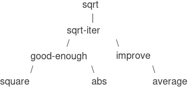
Figure 1.2: Procedural decomposition of the sqrt program.
Tầm quan trọng của chiến lược phân rã này không chỉ nằm ở việc chia chương trình thành các phần. Rốt cuộc, ta có thể lấy bất kỳ chương trình lớn nào và chia nó thành các đoạn — mười dòng đầu, mười dòng tiếp theo, v.v. Điều then chốt là mỗi procedure thực hiện một nhiệm vụ có thể nhận diện rõ ràng và có thể được dùng như một module trong việc định nghĩa các procedure khác. Ví dụ, khi ta định nghĩa procedure good-enough? dựa trên square, ta có thể coi square như một “black box” (hộp đen). Lúc này, ta không quan tâm cách procedure đó tính kết quả, mà chỉ quan tâm đến việc nó tính bình phương. Chi tiết về cách tính bình phương có thể được ẩn đi, để xem xét sau. Thực tế, đối với good-enough?, square không hẳn là một procedure cụ thể mà là một procedural abstraction (trừu tượng hóa thủ tục). Ở mức độ trừu tượng này, bất kỳ procedure nào tính bình phương đều tốt như nhau.
Do đó, xét về giá trị trả về, hai procedure sau để tính bình phương của một số phải không thể phân biệt được. Mỗi procedure nhận một đối số số học và trả về bình phương của số đó21:
(define (square x) (* x x))
(define (square x)
(exp (double (log x))))
(define (double x) (+ x x))
Vì vậy, một định nghĩa procedure nên có khả năng ẩn chi tiết. Người dùng procedure có thể không tự viết nó, mà nhận từ một lập trình viên khác như một hộp đen. Người dùng không cần biết procedure được cài đặt thế nào để có thể sử dụng nó.
Local names
Một chi tiết trong cài đặt procedure không nên ảnh hưởng đến người dùng là việc lập trình viên chọn tên gì cho các formal parameter (tham số hình thức). Do đó, hai procedure sau phải không thể phân biệt:
(define (square x) (* x x))
(define (square y) (* y y))
Nguyên tắc này — rằng ý nghĩa của một procedure phải độc lập với tên tham số mà tác giả dùng — thoạt nhìn có vẻ hiển nhiên, nhưng hệ quả của nó rất sâu sắc. Hệ quả đơn giản nhất là tên tham số của một procedure phải local (cục bộ) với phần thân procedure đó. Ví dụ, ta đã dùng square trong định nghĩa good-enough? của chương trình căn bậc hai:
(define (good-enough? guess x)
(< (abs (- (square guess) x)) 0.001))
Tác giả của good-enough? muốn kiểm tra xem bình phương của đối số thứ nhất có nằm trong một sai số cho phép so với đối số thứ hai hay không. Ở đây, guess được dùng cho đối số thứ nhất, x cho đối số thứ hai. Đối số của square là guess. Nếu tác giả của square dùng x để đặt tên cho đối số đó, thì x trong good-enough? phải là một x khác với x trong square. Việc chạy square không được phép ảnh hưởng đến giá trị x mà good-enough? đang dùng, vì giá trị đó có thể cần sau khi square tính xong.
Nếu tham số không cục bộ với phần thân procedure, thì x trong square có thể bị nhầm với x trong good-enough?, và hành vi của good-enough? sẽ phụ thuộc vào phiên bản square ta dùng. Khi đó, square sẽ không còn là hộp đen như mong muốn.
Một formal parameter có vai trò đặc biệt: tên của nó không quan trọng. Tên như vậy được gọi là bound variable (biến bị ràng buộc), và ta nói rằng định nghĩa procedure binds (ràng buộc) các tham số hình thức của nó. Ý nghĩa của một định nghĩa procedure không thay đổi nếu ta đổi tên bound variable một cách nhất quán22. Nếu một biến không bị ràng buộc, ta gọi nó là free variable (biến tự do). Tập hợp các biểu thức mà một ràng buộc định nghĩa tên gọi là scope (phạm vi) của tên đó. Trong định nghĩa procedure, các bound variable được khai báo làm tham số hình thức có phạm vi là phần thân procedure.
Trong định nghĩa good-enough? ở trên, guess và x là bound variable, còn <, -, abs, và square là free variable. Ý nghĩa của good-enough? độc lập với tên ta chọn cho guess và x miễn là chúng khác nhau và khác với <, -, abs, và square. (Nếu ta đổi guess thành abs, ta sẽ tạo ra lỗi do capturing biến abs, biến này sẽ từ free thành bound.) Tuy nhiên, ý nghĩa của good-enough? không độc lập với tên của các free variable. Nó phụ thuộc vào việc (bên ngoài định nghĩa này) ký hiệu abs đặt tên cho một procedure tính giá trị tuyệt đối. Good-enough? sẽ tính một hàm khác nếu ta thay abs bằng cos.
Internal definitions and block structure
Cho đến giờ, ta mới có một dạng cô lập tên: tham số hình thức của procedure là cục bộ với phần thân procedure. Chương trình căn bậc hai minh họa một cách khác để kiểm soát việc dùng tên. Chương trình hiện tại gồm các procedure riêng biệt:
(define (sqrt x)
(sqrt-iter 1.0 x))
(define (sqrt-iter guess x)
(if (good-enough? guess x)
guess
(sqrt-iter (improve guess x) x)))
(define (good-enough? guess x)
(< (abs (- (square guess) x)) 0.001))
(define (improve guess x)
(average guess (/ x guess)))
Vấn đề là procedure duy nhất quan trọng với người dùng sqrt là sqrt. Các procedure khác (sqrt-iter, good-enough?, improve) chỉ gây rối. Người dùng không thể định nghĩa một procedure khác tên good-enough? trong một chương trình khác để dùng chung, vì sqrt cần nó. Vấn đề này đặc biệt nghiêm trọng khi xây dựng hệ thống lớn bởi nhiều lập trình viên. Ví dụ, trong một thư viện lớn các procedure số học, nhiều hàm được tính bằng xấp xỉ liên tiếp và có thể đều có good-enough? và improve làm thủ tục phụ. Ta muốn localize (cục bộ hóa) các subprocedure này, ẩn chúng bên trong sqrt để sqrt có thể tồn tại cùng các xấp xỉ khác, mỗi cái có good-enough? riêng. Để làm điều này, ta cho phép một procedure có internal definitions (định nghĩa bên trong) cục bộ với procedure đó. Ví dụ:
(define (sqrt x)
(define (good-enough? guess x)
(< (abs (- (square guess) x)) 0.001))
(define (improve guess x)
(average guess (/ x guess)))
(define (sqrt-iter guess x)
(if (good-enough? guess x)
guess
(sqrt-iter (improve guess x) x)))
(sqrt-iter 1.0 x))
Việc lồng các định nghĩa như vậy, gọi là block structure (cấu trúc khối), về cơ bản là giải pháp đúng cho vấn đề đóng gói tên ở mức đơn giản nhất. Nhưng ở đây còn có một ý tưởng hay hơn. Ngoài việc đưa các định nghĩa của các auxiliary procedures (thủ tục phụ trợ) vào bên trong, ta còn có thể đơn giản hóa chúng.
Vì x được bind (ràng buộc) trong định nghĩa của sqrt, các procedure good-enough?, improve, và sqrt-iter — vốn được định nghĩa bên trong sqrt — đều nằm trong scope (phạm vi) của x. Do đó, không cần phải truyền x một cách tường minh cho từng procedure này. Thay vào đó, ta cho phép x là một free variable (biến tự do) trong các định nghĩa bên trong, như minh họa dưới đây. Khi đó, x sẽ nhận giá trị từ đối số được truyền vào khi gọi procedure bao ngoài sqrt. Quy tắc này được gọi là lexical scoping (phạm vi từ vựng) 23.
(define (sqrt x)
(define (good-enough? guess)
(< (abs (- (square guess) x)) 0.001))
(define (improve guess)
(average guess (/ x guess)))
(define (sqrt-iter guess)
(if (good-enough? guess)
guess
(sqrt-iter (improve guess))))
(sqrt-iter 1.0))
Chúng ta sẽ sử dụng block structure một cách rộng rãi để giúp chia nhỏ các chương trình lớn thành những phần có thể xử lý được 24. Ý tưởng về block structure bắt nguồn từ ngôn ngữ lập trình Algol 60. Nó xuất hiện trong hầu hết các ngôn ngữ lập trình tiên tiến và là một công cụ quan trọng giúp tổ chức việc xây dựng các chương trình lớn.
Lexical scoping quy định rằng các biến tự do trong một procedure sẽ được hiểu là tham chiếu tới các ràng buộc được tạo ra bởi các định nghĩa procedure bao ngoài; tức là chúng được tra cứu trong environment (môi trường) mà procedure được định nghĩa. Chúng ta sẽ thấy chi tiết cách hoạt động của điều này trong Chương 3 khi nghiên cứu về môi trường và hành vi chi tiết của trình thông dịch.
Các định nghĩa lồng bên trong phải được đặt trước tiên trong phần thân của một procedure. Tác giả không chịu trách nhiệm về hậu quả của việc chạy các chương trình trộn lẫn định nghĩa và sử dụng.
1.2 Procedures (thủ tục) and the Processes They Generate
Chúng ta vừa xem xét các thành phần của lập trình: Chúng ta đã sử dụng các phép toán số học nguyên thủy, đã kết hợp các phép toán này, và đã trừu tượng hóa các phép toán phức hợp này bằng cách định nghĩa chúng như các compound procedures (thủ tục hợp thành). Nhưng chừng đó vẫn chưa đủ để có thể nói rằng chúng ta biết lập trình. Tình huống của chúng ta giống như một người đã học được luật di chuyển của các quân cờ trong cờ vua nhưng không biết gì về các khai cuộc, chiến thuật hay chiến lược điển hình. Giống như người chơi cờ mới, chúng ta vẫn chưa biết các mẫu hình sử dụng phổ biến trong lĩnh vực này. Chúng ta thiếu kiến thức về những nước đi nào đáng thực hiện (những procedures nào đáng định nghĩa). Chúng ta thiếu kinh nghiệm để dự đoán hậu quả của việc thực hiện một nước đi (thực thi một procedure).
Khả năng hình dung trước hậu quả của các hành động đang xem xét là yếu tố then chốt để trở thành một lập trình viên giỏi, cũng như trong bất kỳ hoạt động sáng tạo, tổng hợp nào khác. Chẳng hạn, để trở thành một nhiếp ảnh gia chuyên nghiệp, người ta phải học cách nhìn vào một khung cảnh và biết được mỗi vùng sẽ tối đến mức nào trên bản in đối với từng lựa chọn phơi sáng và điều kiện tráng rửa khác nhau. Chỉ khi đó mới có thể suy luận ngược, lên kế hoạch bố cục, ánh sáng, phơi sáng và tráng rửa để đạt được hiệu ứng mong muốn. Lập trình cũng tương tự, nơi chúng ta lập kế hoạch cho chuỗi hành động mà một process (tiến trình) sẽ thực hiện và điều khiển process đó thông qua một program (chương trình). Để trở thành chuyên gia, chúng ta phải học cách hình dung các process được tạo ra bởi nhiều loại procedures khác nhau. Chỉ sau khi phát triển được kỹ năng này, chúng ta mới có thể xây dựng một cách đáng tin cậy các programs thể hiện hành vi mong muốn.
Một procedure là một mẫu hình cho local evolution (tiến hóa cục bộ) của một computational process (tiến trình tính toán). Nó chỉ ra cách mỗi giai đoạn của process được xây dựng dựa trên giai đoạn trước đó. Chúng ta muốn có thể đưa ra những nhận định về hành vi tổng thể, hay global (toàn cục), của một process mà local evolution đã được xác định bởi một procedure. Điều này nói chung là rất khó, nhưng ít nhất chúng ta có thể cố gắng mô tả một số mẫu hình điển hình của sự tiến hóa process.
Trong phần này, chúng ta sẽ xem xét một số “hình dạng” phổ biến của các process được tạo ra bởi các procedures đơn giản. Chúng ta cũng sẽ khảo sát tốc độ mà các process này tiêu thụ những tài nguyên tính toán quan trọng là thời gian và bộ nhớ. Các procedures mà chúng ta sẽ xét đến rất đơn giản. Vai trò của chúng giống như các mẫu thử trong nhiếp ảnh: là những mẫu hình nguyên mẫu được đơn giản hóa quá mức, hơn là các ví dụ thực tiễn tự thân.
1.2.1 Linear Recursion (đệ quy tuyến tính) and Iteration (lặp)
Chúng ta bắt đầu bằng cách xét hàm factorial (giai thừa), được định nghĩa bởi
$$n!, = ,{n \cdot (n - 1)} \cdot {(n - 2)}\cdots{3 \cdot 2 \cdot 1.}$$
Có nhiều cách để tính giai thừa. Một cách là sử dụng nhận xét rằng $n!$ bằng $n$ nhân với $(n - 1)!$ đối với mọi số nguyên dương $n$:
$$n!, = ,{n \cdot \lbrack(n - 1)} \cdot {(n - 2)}\cdots{3 \cdot 2 \cdot 1\rbrack}, = ,{n \cdot (n - 1)!.}$$
Do đó, chúng ta có thể tính $n!$ bằng cách tính $(n - 1)!$ rồi nhân kết quả với $n$. Nếu thêm điều kiện rằng 1! bằng 1, thì nhận xét này được chuyển trực tiếp thành một procedure:
(define (factorial n)
(if (= n 1)
1
(* n (factorial (- n 1)))))
Chúng ta có thể sử dụng substitution model (mô hình thế) của mục 1.1.5 để quan sát procedure này hoạt động khi tính 6!, như minh họa ở Hình 1.3.

Figure 1.3: A linear recursive process for computing 6!.
Bây giờ, hãy tiếp cận việc tính giai thừa theo một góc nhìn khác. Chúng ta có thể mô tả một quy tắc để tính $n!$ bằng cách chỉ ra rằng trước tiên nhân 1 với 2, sau đó nhân kết quả với 3, rồi với 4, và cứ thế cho đến khi đạt đến $n$. Một cách chính xác hơn, chúng ta duy trì một tích đang chạy (running product), cùng với một bộ đếm (counter) đếm từ 1 đến $n$. Chúng ta có thể mô tả phép tính này bằng cách nói rằng counter và product đồng thời thay đổi từ bước này sang bước tiếp theo theo quy tắc:
product
←
counter * product
counter
←
counter + 1
và quy định rằng $n!$ là giá trị của product khi counter vượt quá $n$.
Một lần nữa, chúng ta có thể viết lại mô tả này thành một procedure để tính giai thừa:1
(define (factorial n)
(fact-iter 1 1 n))
(define (fact-iter product counter max-count)
(if (> counter max-count)
product
(fact-iter (* counter product)
(+ counter 1)
max-count)))
Như trước, chúng ta có thể sử dụng substitution model để hình dung quá trình tính 6!, như minh họa ở Hình 1.4.
Figure 1.4: A linear iterative process for computing 6!.
In a real program we would probably use the block structure introduced in the last section to hide the definition of fact-iter.
So sánh hai process (tiến trình). Ở một góc nhìn, chúng dường như hầu như không khác nhau. Cả hai đều tính cùng một hàm toán học trên cùng một miền, và mỗi cái đều cần số bước tỉ lệ với $n$ để tính $n!$. Thật vậy, cả hai process thậm chí còn thực hiện cùng một chuỗi phép nhân, thu được cùng một dãy tích từng phần. Mặt khác, khi chúng ta xét đến “hình dạng” của hai process, ta thấy rằng chúng tiến triển rất khác nhau.
Xét process đầu tiên. Substitution model (mô hình thế) cho thấy một dạng mở rộng rồi thu hẹp, được biểu thị bằng mũi tên trong Hình 1.3. Sự mở rộng xảy ra khi process xây dựng một chuỗi các deferred operations (các phép toán trì hoãn) — trong trường hợp này là một chuỗi phép nhân. Sự thu hẹp xảy ra khi các phép toán thực sự được thực hiện. Loại process này, được đặc trưng bởi một chuỗi các deferred operations, được gọi là recursive process. Việc thực hiện process này đòi hỏi interpreter (bộ thông dịch) phải theo dõi các phép toán sẽ được thực hiện sau đó. Trong phép tính $n!$, độ dài của chuỗi các phép nhân trì hoãn, và do đó lượng thông tin cần để theo dõi nó, tăng tuyến tính theo $n$ (tỉ lệ với $n$), giống như số bước. Một process như vậy được gọi là linear recursive process.
Ngược lại, process thứ hai không phình ra rồi co lại. Ở mỗi bước, tất cả những gì chúng ta cần theo dõi, với bất kỳ $n$ nào, là giá trị hiện tại của các biến product, counter, và max-count. Chúng ta gọi đây là iterative process. Nói chung, một iterative process là process mà trạng thái của nó có thể được tóm tắt bằng một số cố định các state variables (biến trạng thái), cùng với một quy tắc cố định mô tả cách các state variables được cập nhật khi process chuyển từ trạng thái này sang trạng thái khác, và một phép kiểm tra kết thúc (tùy chọn) xác định điều kiện mà process nên dừng lại. Trong việc tính $n!$, số bước cần thiết tăng tuyến tính theo $n$. Một process như vậy được gọi là linear iterative process.
Sự tương phản giữa hai process có thể được thấy theo một cách khác. Trong trường hợp iterative, các program variables (biến chương trình) cung cấp một mô tả đầy đủ về trạng thái của process tại bất kỳ thời điểm nào. Nếu chúng ta dừng việc tính toán giữa các bước, tất cả những gì cần làm để tiếp tục là cung cấp cho interpreter giá trị của ba program variables. Không giống như vậy với recursive process. Trong trường hợp này, có một số thông tin “ẩn” bổ sung, được interpreter duy trì và không nằm trong các program variables, thông tin này cho biết “process đang ở đâu” trong việc xử lý chuỗi các deferred operations. Chuỗi càng dài, càng cần duy trì nhiều thông tin hơn.2
Khi so sánh iteration và recursion, chúng ta phải cẩn thận để không nhầm lẫn khái niệm recursive process với khái niệm recursive procedure (thủ tục). Khi chúng ta mô tả một procedure là recursive, chúng ta đang nói đến thực tế cú pháp rằng định nghĩa procedure đó tham chiếu (trực tiếp hoặc gián tiếp) đến chính nó. Nhưng khi chúng ta mô tả một process là tuân theo một mẫu hình, chẳng hạn, linearly recursive, chúng ta đang nói về cách process tiến triển, chứ không phải về cú pháp của cách viết procedure. Có thể sẽ gây bối rối khi chúng ta gọi một recursive procedure như fact-iter là tạo ra một iterative process. Tuy nhiên, process này thực sự là iterative: Trạng thái của nó được nắm bắt hoàn toàn bởi ba state variables, và interpreter chỉ cần theo dõi ba biến này để thực thi process.
Một lý do khiến sự phân biệt giữa process và procedure có thể gây nhầm lẫn là hầu hết các implementation (cài đặt) của các ngôn ngữ phổ biến (bao gồm Ada, Pascal, và C) được thiết kế theo cách mà việc thông dịch bất kỳ recursive procedure nào cũng tiêu tốn một lượng bộ nhớ tăng theo số lần gọi procedure, ngay cả khi process được mô tả về nguyên tắc là iterative. Do đó, các ngôn ngữ này chỉ có thể mô tả iterative processes bằng cách sử dụng các “looping constructs” (cấu trúc lặp) chuyên biệt như do, repeat, until, for, và while. Implementation của Scheme mà chúng ta sẽ xét trong Chương 5 không mắc phải nhược điểm này. Nó sẽ thực thi một iterative process trong không gian bộ nhớ hằng số, ngay cả khi iterative process đó được mô tả bằng một recursive procedure. Một implementation có đặc tính này được gọi là tail-recursive. Với một tail-recursive implementation, iteration có thể được biểu đạt bằng cơ chế gọi procedure thông thường, do đó các iteration constructs đặc biệt chỉ hữu ích như một dạng syntactic sugar (cú pháp rút gọn).3
When we discuss the implementation of procedures on register machines in Chapter 5, we will see that any iterative process can be realized “in hardware” as a machine that has a fixed set of registers and no auxiliary memory. In contrast, realizing a recursive process requires a machine that uses an auxiliary data structure known as a stack.
Tail recursion has long been known as a compiler optimization trick. A coherent semantic basis for tail recursion was provided by Carl Hewitt (1977), who explained it in terms of the “message-passing” model of computation that we shall discuss in Chapter 3. Inspired by this, Gerald Jay Sussman and Guy Lewis Steele Jr. (see Steele and Sussman 1975) constructed a tail-recursive interpreter for Scheme. Steele later showed how tail recursion is a consequence of the natural way to compile procedure calls (Steele 1977). The IEEE standard for Scheme requires that Scheme implementations be tail-recursive.
1.2.2 Tree Recursion (đệ quy dạng cây)
Một mẫu hình tính toán phổ biến khác được gọi là tree recursion. Ví dụ, hãy xét việc tính dãy số Fibonacci, trong đó mỗi số là tổng của hai số liền trước:
0, 1, 1, 2, 3, 5, 8, 13, 21, ….
Nói chung, các số Fibonacci có thể được định nghĩa bởi quy tắc
$$\text{Fib}(n); = ;\begin{cases} 0 & {;\text{if};; n = 0,} \ 1 & {;\text{if};; n = 1,} \ {\text{Fib}(n - 1) + \text{Fib}(n - 2)} & {;\text{otherwise}.} \ \end{cases}$$
Chúng ta có thể ngay lập tức chuyển định nghĩa này thành một recursive procedure (thủ tục đệ quy) để tính các số Fibonacci:
(define (fib n)
(cond ((= n 0) 0)
((= n 1) 1)
(else (+ (fib (- n 1))
(fib (- n 2))))))
Hãy xét mẫu hình của phép tính này. Để tính (fib 5), chúng ta tính (fib 4) và (fib 3). Để tính (fib 4), chúng ta tính (fib 3) và (fib 2). Nói chung, process (tiến trình) phát triển trông giống như một cái cây, như minh họa ở Hình 1.5. Lưu ý rằng các nhánh tách đôi ở mỗi cấp (trừ cấp cuối); điều này phản ánh thực tế rằng procedure fib tự gọi chính nó hai lần mỗi khi được thực thi.

Figure 1.5: The tree-recursive process generated in computing (fib 5).
Procedure này mang tính hướng dẫn như một ví dụ nguyên mẫu của tree recursion, nhưng nó là một cách rất tệ để tính các số Fibonacci vì nó thực hiện quá nhiều phép tính dư thừa. Hãy chú ý trong Hình 1.5 rằng toàn bộ phép tính (fib 3) — gần một nửa khối lượng công việc — bị lặp lại. Thực tế, không khó để chỉ ra rằng số lần procedure này tính (fib 1) hoặc (fib 0) (số lượng lá trong cây trên, nói chung) chính xác là $\text{Fib}(n + 1)$. Để hình dung mức độ tệ hại, có thể chứng minh rằng giá trị của $\text{Fib}(n)$ tăng theo hàm mũ với $n$. Cụ thể hơn (xem Bài tập 1.13), $\text{Fib}(n)$ là số nguyên gần nhất với $\varphi^{n}/\sqrt{5}$, trong đó
$$\varphi, = ,\frac{1 + \sqrt{5}}{2}, \approx , 1.6180$$
là golden ratio (tỉ lệ vàng), thỏa mãn phương trình
$$\varphi^{2}, = ,{\varphi + 1.}$$
Do đó, process này sử dụng số bước tăng theo hàm mũ với đầu vào. Mặt khác, lượng bộ nhớ cần thiết chỉ tăng tuyến tính với đầu vào, vì chúng ta chỉ cần theo dõi các node (nút) nằm phía trên trong cây tại bất kỳ thời điểm nào của phép tính. Nói chung, số bước cần thiết của một tree-recursive process sẽ tỉ lệ với số node trong cây, trong khi bộ nhớ cần thiết sẽ tỉ lệ với độ sâu lớn nhất của cây.
Chúng ta cũng có thể xây dựng một iterative process (tiến trình lặp) để tính các số Fibonacci. Ý tưởng là sử dụng một cặp số nguyên $a$ và $b$, khởi tạo với $\text{Fib(1)\ =\ 1}$ và $\text{Fib(0)\ =\ 0}$, và lặp lại việc áp dụng các phép biến đổi đồng thời:
$$\begin{array}{l} {a;\leftarrow; a + b,} \ {b;\leftarrow; a.} \ \end{array}$$
Không khó để chứng minh rằng, sau khi áp dụng phép biến đổi này $n$ lần, $a$ và $b$ sẽ lần lượt bằng $\text{Fib}(n + 1)$ và $\text{Fib}(n)$. Do đó, chúng ta có thể tính các số Fibonacci theo cách lặp bằng procedure:
(define (fib n)
(fib-iter 1 0 n))
(define (fib-iter a b count)
(if (= count 0)
b
(fib-iter (+ a b) a (- count 1))))
Phương pháp thứ hai này để tính $\text{Fib}(n)$ là một linear iteration (lặp tuyến tính). Sự khác biệt về số bước cần thiết giữa hai phương pháp — một tuyến tính theo $n$, một tăng nhanh như chính $\text{Fib}(n)$ — là rất lớn, ngay cả với các đầu vào nhỏ.
Tuy nhiên, không nên kết luận từ đây rằng tree-recursive processes là vô dụng. Khi chúng ta xét các process hoạt động trên dữ liệu có cấu trúc phân cấp thay vì chỉ là số, chúng ta sẽ thấy tree recursion là một công cụ tự nhiên và mạnh mẽ.4 Ngay cả trong các phép toán số học, tree-recursive processes cũng có thể hữu ích trong việc giúp chúng ta hiểu và thiết kế chương trình. Ví dụ, mặc dù procedure fib đầu tiên kém hiệu quả hơn nhiều so với procedure thứ hai, nhưng nó lại trực quan hơn, gần như chỉ là bản dịch sang Lisp của định nghĩa dãy Fibonacci. Để xây dựng thuật toán lặp, cần nhận ra rằng phép tính có thể được viết lại thành một iteration với ba state variables.
An example of this was hinted at in 1.1.3. The interpreter itself evaluates expressions using a tree-recursive process.
Example: Counting change (Đếm số cách đổi tiền)
Chỉ cần một chút khéo léo là có thể nghĩ ra thuật toán Fibonacci dạng iterative (lặp). Ngược lại, hãy xét bài toán sau: Có bao nhiêu cách khác nhau để đổi ra $1.00, nếu ta có các đồng half-dollars (50 xu), quarters (25 xu), dimes (10 xu), nickels (5 xu), và pennies (1 xu)? Tổng quát hơn, liệu ta có thể viết một procedure (thủ tục) để tính số cách đổi cho bất kỳ số tiền nào cho trước không?
Bài toán này có một lời giải đơn giản dưới dạng recursive procedure (thủ tục đệ quy). Giả sử ta coi các loại tiền xu có sẵn được sắp xếp theo một thứ tự nào đó. Khi đó, mối quan hệ sau sẽ đúng:
Số cách đổi số tiền $a$ bằng $n$ loại tiền xu bằng:
- số cách đổi số tiền $a$ khi dùng tất cả trừ loại tiền xu thứ nhất, cộng với
- số cách đổi số tiền $a - d$ khi dùng cả $n$ loại tiền xu, trong đó $d$ là mệnh giá của loại tiền xu thứ nhất.
Để thấy tại sao điều này đúng, hãy nhận xét rằng các cách đổi tiền có thể chia thành hai nhóm: nhóm không dùng bất kỳ đồng xu loại thứ nhất nào, và nhóm có dùng. Do đó, tổng số cách đổi tiền cho một số tiền nào đó bằng số cách đổi tiền mà không dùng đồng xu loại thứ nhất, cộng với số cách đổi tiền giả sử ta có dùng đồng xu loại thứ nhất. Nhưng con số thứ hai này chính là số cách đổi tiền cho số tiền còn lại sau khi đã dùng một đồng xu loại thứ nhất.
Như vậy, ta có thể đệ quy rút gọn bài toán đổi một số tiền cho trước thành bài toán đổi các số tiền nhỏ hơn với ít loại tiền xu hơn. Hãy xem xét kỹ quy tắc rút gọn này, và tự thuyết phục rằng ta có thể dùng nó để mô tả một thuật toán nếu ta chỉ rõ các trường hợp suy biến sau đây:5
- Nếu $a$ đúng bằng 0, ta tính đó là 1 cách đổi tiền.
- Nếu $a$ nhỏ hơn 0, ta tính đó là 0 cách đổi tiền.
- Nếu $n$ bằng 0, ta tính đó là 0 cách đổi tiền.
Chúng ta có thể dễ dàng chuyển mô tả này thành một recursive procedure:
(define (count-change amount)
(cc amount 5))
(define (cc amount kinds-of-coins)
(cond ((= amount 0) 1)
((or (< amount 0)
(= kinds-of-coins 0))
0)
(else
(+ (cc amount (- kinds-of-coins 1))
(cc (- amount (first-denomination
kinds-of-coins))
kinds-of-coins)))))
(define (first-denomination kinds-of-coins)
(cond ((= kinds-of-coins 1) 1)
((= kinds-of-coins 2) 5)
((= kinds-of-coins 3) 10)
((= kinds-of-coins 4) 25)
((= kinds-of-coins 5) 50)))
(Procedure first-denomination nhận vào số loại tiền xu có sẵn và trả về mệnh giá của loại thứ nhất. Ở đây ta coi các đồng xu được sắp xếp theo thứ tự từ lớn đến nhỏ, nhưng bất kỳ thứ tự nào cũng được.) Giờ ta có thể trả lời câu hỏi ban đầu về việc đổi một đô-la:
(count-change 100)
292
Count-change tạo ra một tree-recursive process (tiến trình đệ quy dạng cây) với các phép tính dư thừa tương tự như trong cách cài đặt đầu tiên của fib. (Sẽ mất khá nhiều thời gian để tính ra con số 292 đó.) Mặt khác, không rõ ràng cách thiết kế một thuật toán tốt hơn để tính kết quả, và chúng tôi để lại bài toán này như một thử thách. Nhận xét rằng một tree-recursive process có thể rất kém hiệu quả nhưng thường dễ mô tả và dễ hiểu đã dẫn đến đề xuất rằng ta có thể đạt được cả hai ưu điểm bằng cách thiết kế một “smart compiler” (trình biên dịch thông minh) có thể biến đổi các tree-recursive procedures thành các procedures hiệu quả hơn nhưng tính ra cùng kết quả.6
For example, work through in detail how the reduction rule applies to the problem of making change for 10 cents using pennies and nickels.
One approach to coping with redundant computations is to arrange matters so that we automatically construct a table of values as they are computed. Each time we are asked to apply the procedure to some argument, we first look to see if the value is already stored in the table, in which case we avoid performing the redundant computation. This strategy, known as tabulation or memoization, can be implemented in a straightforward way. Tabulation can sometimes be used to transform processes that require an exponential number of steps (such as count-change) into processes whose space and time requirements grow linearly with the input. See Exercise 3.27.
1.2.3 Orders of Growth (Bậc tăng trưởng)
Các ví dụ trước minh họa rằng các process (tiến trình) có thể khác nhau đáng kể về tốc độ tiêu thụ tài nguyên tính toán. Một cách thuận tiện để mô tả sự khác biệt này là sử dụng khái niệm order of growth (bậc tăng trưởng) để có được một thước đo tổng quát về lượng tài nguyên mà một process cần khi kích thước đầu vào tăng lên.
Gọi $n$ là một tham số đo kích thước của bài toán, và gọi $R(n)$ là lượng tài nguyên mà process yêu cầu cho một bài toán có kích thước $n$. Trong các ví dụ trước, chúng ta lấy $n$ là con số mà một hàm cho trước cần được tính, nhưng cũng có những khả năng khác. Chẳng hạn, nếu mục tiêu của chúng ta là tính gần đúng căn bậc hai của một số, ta có thể lấy $n$ là số chữ số chính xác cần đạt. Đối với phép nhân ma trận, ta có thể lấy $n$ là số hàng của các ma trận. Nói chung, có nhiều thuộc tính của bài toán mà theo đó sẽ hữu ích khi phân tích một process cho trước. Tương tự, $R(n)$ có thể đo số lượng thanh ghi lưu trữ bên trong được sử dụng, số lượng phép toán máy cơ bản được thực hiện, v.v. Trên các máy tính chỉ thực hiện một số lượng cố định các phép toán tại một thời điểm, thời gian yêu cầu sẽ tỉ lệ với số lượng phép toán máy cơ bản được thực hiện.
Ta nói rằng $R(n)$ có order of growth $\Theta(f(n))$, viết là ${R(n)} = {\Theta(f(n))}$ (đọc là “theta của $f(n)$”), nếu tồn tại các hằng số dương $k_{1}$ và $k_{2}$ độc lập với $n$ sao cho ${k_{1}f(n)} \leq {R(n)} \leq {k_{2}f(n)}$ với mọi giá trị $n$ đủ lớn. (Nói cách khác, với $n$ lớn, giá trị $R(n)$ bị kẹp giữa $k_{1}f(n)$ và $k_{2}f(n)$.)
Ví dụ, với linear recursive process (tiến trình đệ quy tuyến tính) để tính giai thừa được mô tả ở 1.2.1, số bước tăng tỉ lệ với đầu vào $n$. Do đó, số bước cần cho process này tăng theo $\Theta(n)$. Chúng ta cũng đã thấy rằng bộ nhớ cần thiết tăng theo $\Theta(n)$. Đối với iterative factorial (giai thừa dạng lặp), số bước vẫn là $\Theta(n)$ nhưng bộ nhớ là $\Theta(1)$ — tức là hằng số.7 Phép tính Fibonacci dạng tree-recursive (đệ quy dạng cây) yêu cầu $\Theta(\varphi^{n})$ bước và bộ nhớ $\Theta(n)$, trong đó $\varphi$ là golden ratio (tỉ lệ vàng) được mô tả ở 1.2.2.
Orders of growth chỉ cung cấp một mô tả thô về hành vi của một process. Ví dụ, một process cần $n^{2}$ bước, một process cần $1000n^{2}$ bước, và một process cần ${3n^{2}} + {10n} + 17$ bước đều có order of growth là $\Theta(n^{2})$. Mặt khác, order of growth cung cấp một chỉ báo hữu ích về cách chúng ta có thể kỳ vọng hành vi của process thay đổi khi thay đổi kích thước bài toán. Với một process $\Theta(n)$ (tuyến tính), việc tăng gấp đôi kích thước sẽ xấp xỉ tăng gấp đôi lượng tài nguyên sử dụng. Với một process dạng hàm mũ, mỗi lần tăng kích thước bài toán sẽ nhân lượng tài nguyên sử dụng lên một hệ số cố định. Trong phần còn lại của 1.2, chúng ta sẽ xét hai thuật toán có order of growth dạng logarithmic (logarit), sao cho việc tăng gấp đôi kích thước bài toán chỉ làm tăng lượng tài nguyên yêu cầu thêm một lượng cố định.
These statements mask a great deal of oversimplification. For instance, if we count process steps as “machine operations” we are making the assumption that the number of machine operations needed to perform, say, a multiplication is independent of the size of the numbers to be multiplied, which is false if the numbers are sufficiently large. Similar remarks hold for the estimates of space. Like the design and description of a process, the analysis of a process can be carried out at various levels of abstraction.
1.2.4 Exponentiation (Lũy thừa)
Xét bài toán tính lũy thừa của một số cho trước. Chúng ta muốn có một procedure (thủ tục) nhận vào hai đối số: cơ số $b$ và số mũ nguyên dương $n$, và tính $b^{n}$. Một cách để làm điều này là sử dụng định nghĩa đệ quy:
$$\begin{array}{l} {b^{n}, = , b \cdot b^{n - 1},} \ {b^{0}, = , 1,} \ \end{array}$$
Điều này có thể dễ dàng chuyển thành procedure:
(define (expt b n)
(if (= n 0)
1
(* b (expt b (- n 1)))))
Đây là một linear recursive process (tiến trình đệ quy tuyến tính), cần $\Theta(n)$ bước và $\Theta(n)$ bộ nhớ. Giống như với factorial, ta có thể dễ dàng xây dựng một linear iteration (lặp tuyến tính) tương đương:
(define (expt b n)
(expt-iter b n 1))
(define (expt-iter b counter product)
(if (= counter 0)
product
(expt-iter b
(- counter 1)
(* b product))))
Phiên bản này cần $\Theta(n)$ bước và $\Theta(1)$ bộ nhớ.
Chúng ta có thể tính lũy thừa với ít bước hơn bằng cách sử dụng successive squaring (bình phương liên tiếp). Ví dụ, thay vì tính $b^{8}$ như:
$${b \cdot (b \cdot (b} \cdot {(b \cdot (b \cdot (b} \cdot {(b \cdot b)))))),}$$
chúng ta có thể tính nó chỉ với ba phép nhân:
$$\begin{array}{l} {b^{2}, = , b \cdot b,} \ {b^{4}, = , b^{2} \cdot b^{2},} \ {b^{8}, = , b^{4} \cdot b^{4}.} \ \end{array}$$
Phương pháp này hoạt động tốt với các số mũ là lũy thừa của 2. Chúng ta cũng có thể tận dụng successive squaring để tính lũy thừa nói chung nếu sử dụng quy tắc:
$$\begin{array}{ll} {b^{n}, = ,(b^{n/2})^{2}} & {\text{if}; n;\text{is\ even},} \ {b^{n}, = , b \cdot b^{n - 1}} & {\text{if}; n;\text{is\ odd}.} \ \end{array}$$
Chúng ta có thể biểu diễn phương pháp này thành procedure:
(define (fast-expt b n)
(cond ((= n 0)
1)
((even? n)
(square (fast-expt b (/ n 2))))
(else
(* b (fast-expt b (- n 1))))))
trong đó, predicate (mệnh đề kiểm tra) để xác định một số nguyên có phải là số chẵn hay không được định nghĩa dựa trên primitive procedure remainder như sau:
(define (even? n)
(= (remainder n 2) 0))
Process được tạo ra bởi fast-expt tăng trưởng theo logarit của $n$ cả về bộ nhớ và số bước. Để thấy điều này, hãy nhận xét rằng việc tính $b^{2n}$ bằng fast-expt chỉ cần thêm một phép nhân so với việc tính $b^{n}$. Kích thước số mũ mà ta có thể tính được do đó tăng gấp đôi (xấp xỉ) với mỗi phép nhân mới được thực hiện. Vì vậy, số phép nhân cần thiết cho một số mũ $n$ tăng xấp xỉ nhanh như logarit cơ số 2 của $n$. Process này có bậc tăng trưởng $\Theta(\log n)$.8
Sự khác biệt giữa bậc tăng trưởng $\Theta(\log n)$ và $\Theta(n)$ trở nên rõ rệt khi $n$ lớn. Ví dụ, fast-expt với $n$ = 1000 chỉ cần 14 phép nhân.9 Cũng có thể sử dụng ý tưởng successive squaring để xây dựng một thuật toán iterative tính lũy thừa với số bước tăng trưởng logarit (xem Bài tập 1.16), mặc dù, như thường thấy với các thuật toán iterative, cách viết không đơn giản và trực quan như thuật toán recursive.10
More precisely, the number of multiplications required is equal to 1 less than the log base 2 of $n$ plus the number of ones in the binary representation of $n$. This total is always less than twice the log base 2 of $n$. The arbitrary constants $k_{1}$ and $k_{2}$ in the definition of order notation imply that, for a logarithmic process, the base to which logarithms are taken does not matter, so all such processes are described as $\Theta(\log n)$.
You may wonder why anyone would care about raising numbers to the 1000th power. See 1.2.6.
This iterative algorithm is ancient. It appears in the Chandah-sutra by Áchárya Pingala, written before 200 B.C. See Knuth 1981, section 4.6.3, for a full discussion and analysis of this and other methods of exponentiation.
1.2.5 Greatest Common Divisors (Ước số chung lớn nhất)
Greatest common divisor (GCD) của hai số nguyên $a$ và $b$ được định nghĩa là số nguyên lớn nhất chia hết cả $a$ và $b$ mà không để lại số dư. Ví dụ, GCD của 16 và 28 là 4. Trong Chương 2, khi chúng ta nghiên cứu cách cài đặt phép toán số hữu tỉ, chúng ta sẽ cần có khả năng tính GCD để rút gọn số hữu tỉ về dạng tối giản. (Để rút gọn một số hữu tỉ về dạng tối giản, ta phải chia cả tử số và mẫu số cho GCD của chúng. Ví dụ, 16/28 rút gọn thành 4/7.) Một cách để tìm GCD của hai số nguyên là phân tích chúng ra thừa số và tìm các thừa số chung, nhưng có một thuật toán nổi tiếng hiệu quả hơn nhiều.
Ý tưởng của thuật toán dựa trên nhận xét rằng, nếu $r$ là số dư khi $a$ chia cho $b$, thì các ước số chung của $a$ và $b$ chính là các ước số chung của $b$ và $r$. Do đó, ta có thể sử dụng phương trình
GCD(a,b) = GCD(b,r)
để liên tiếp rút gọn bài toán tính GCD thành bài toán tính GCD của các cặp số nguyên ngày càng nhỏ hơn. Ví dụ:
GCD(206,40) = GCD(40,6)
= GCD(6,4)
= GCD(4,2)
= GCD(2,0) = 2
rút gọn GCD(206, 40) thành GCD(2, 0), là 2. Có thể chứng minh rằng, bắt đầu với bất kỳ hai số nguyên dương nào và thực hiện các bước rút gọn lặp lại, ta sẽ luôn thu được một cặp mà số thứ hai là 0. Khi đó, GCD chính là số còn lại trong cặp. Phương pháp tính GCD này được gọi là Euclid’s Algorithm.11
Ta có thể dễ dàng biểu diễn Euclid’s Algorithm dưới dạng một procedure:
(define (gcd a b)
(if (= b 0)
a
(gcd b (remainder a b))))
Thuật toán này tạo ra một iterative process (tiến trình lặp), với số bước tăng trưởng theo logarit của các số liên quan.
Việc số bước cần thiết của Euclid’s Algorithm tăng trưởng theo logarit có một mối liên hệ thú vị với các số Fibonacci:
Lamé’s Theorem: Nếu Euclid’s Algorithm cần $k$ bước để tính GCD của một cặp số, thì số nhỏ hơn trong cặp đó phải lớn hơn hoặc bằng số Fibonacci thứ $k$.12
Chúng ta có thể sử dụng định lý này để ước lượng bậc tăng trưởng của Euclid’s Algorithm. Gọi $n$ là số nhỏ hơn trong hai đầu vào của procedure. Nếu process mất $k$ bước, thì ta phải có $n \geq {\text{Fib}(k)} \approx {\varphi^{k}/\sqrt{5}}$. Do đó, số bước $k$ tăng trưởng theo logarit (cơ số $\varphi$) của $n$. Vì vậy, bậc tăng trưởng là $\Theta(\log n)$.
1.2.6 Example: Testing for Primality (Kiểm tra số nguyên tố)
Phần này mô tả hai phương pháp kiểm tra tính nguyên tố của một số nguyên $n$: một phương pháp có bậc tăng trưởng $\Theta(\sqrt{n})$, và một thuật toán “probabilistic” (xác suất) có bậc tăng trưởng $\Theta(\log n)$. Các bài tập ở cuối phần này gợi ý các dự án lập trình dựa trên các thuật toán này.
Searching for divisors (Tìm ước số)
Từ thời cổ đại, các nhà toán học đã bị cuốn hút bởi các bài toán liên quan đến số nguyên tố, và nhiều người đã nghiên cứu bài toán tìm cách kiểm tra một số có phải là số nguyên tố hay không. Một cách để kiểm tra là tìm các ước số của số đó. Chương trình sau tìm ước số nguyên nhỏ nhất (lớn hơn 1) của một số $n$ cho trước. Nó thực hiện điều này theo cách trực tiếp, bằng cách kiểm tra tính chia hết của $n$ cho các số nguyên liên tiếp bắt đầu từ 2.
(define (smallest-divisor n)
(find-divisor n 2))
(define (find-divisor n test-divisor)
(cond ((> (square test-divisor) n)
n)
((divides? test-divisor n)
test-divisor)
(else (find-divisor
n
(+ test-divisor 1)))))
(define (divides? a b)
(= (remainder b a) 0))
Chúng ta có thể kiểm tra một số có phải là số nguyên tố hay không như sau: $n$ là số nguyên tố khi và chỉ khi $n$ là ước số nhỏ nhất của chính nó.
(define (prime? n)
(= n (smallest-divisor n)))
Điều kiện kết thúc cho find-divisor dựa trên thực tế rằng nếu $n$ không phải là số nguyên tố thì nó phải có một ước số nhỏ hơn hoặc bằng $\sqrt{n}$.13 Điều này có nghĩa là thuật toán chỉ cần kiểm tra các ước số từ 1 đến $\sqrt{n}$. Do đó, số bước cần thiết để xác định $n$ là số nguyên tố sẽ có bậc tăng trưởng $\Theta(\sqrt{n})$.
Euclid’s Algorithm is so called because it appears in Euclid’s Elements (Book 7, ca. 300 B.C.). According to Knuth (1973), it can be considered the oldest known nontrivial algorithm. The ancient Egyptian method of multiplication (Exercise 1.18) is surely older, but, as Knuth explains, Euclid’s algorithm is the oldest known to have been presented as a general algorithm, rather than as a set of illustrative examples.
This theorem was proved in 1845 by Gabriel Lamé, a French mathematician and engineer known chiefly for his contributions to mathematical physics. To prove the theorem, we consider pairs $(a_{k},b_{k})$, where $a_{k} \geq b_{k}$, for which Euclid’s Algorithm terminates in $k$ steps. The proof is based on the claim that, if ${(a_{k + 1},b_{k + 1})}\rightarrow{(a_{k},b_{k})}\rightarrow{(a_{k - 1},b_{k - 1})}$ are three successive pairs in the reduction process, then we must have $b_{k + 1} \geq b_{k} + b_{k - 1}$. To verify the claim, consider that a reduction step is defined by applying the transformation $a_{k - 1} = b_{k}$, $b_{k - 1} =$ remainder of $a_{k}$ divided by $b_{k}$. The second equation means that $a_{k} = {qb_{k}} + b_{k - 1}$ for some positive integer $q$. And since $q$ must be at least 1 we have $a_{k} = {qb_{k}} + b_{k - 1} \geq b_{k} + b_{k - 1}$. But in the previous reduction step we have $b_{k + 1} = a_{k}$. Therefore, $b_{k + 1} = a_{k} \geq b_{k} + b_{k - 1}$. This verifies the claim. Now we can prove the theorem by induction on $k$, the number of steps that the algorithm requires to terminate. The result is true for $k = 1$, since this merely requires that $b$ be at least as large as $\text{Fib}(1) = 1$. Now, assume that the result is true for all integers less than or equal to $k$ and establish the result for $k + 1$. Let ${(a_{k + 1},b_{k + 1})}\rightarrow{(a_{k},b_{k})}\rightarrow{(a_{k - 1},b_{k - 1})}$ be successive pairs in the reduction process. By our induction hypotheses, we have $b_{k - 1} \geq {\text{Fib}(k - 1)}$ and $b_{k} \geq {\text{Fib}(k)}$. Thus, applying the claim we just proved together with the definition of the Fibonacci numbers gives $b_{k + 1} \geq b_{k} + b_{k - 1} \geq {\text{Fib}(k)} + {\text{Fib}(k - 1)} = {\text{Fib}(k + 1)}$, which completes the proof of Lamé’s Theorem.
If $d$ is a divisor of
The Fermat test (Kiểm tra Fermat)
Bài kiểm tra tính nguyên tố có bậc tăng trưởng $\Theta(\log n)$ này dựa trên một kết quả trong số học (number theory) được gọi là Fermat’s Little Theorem (Định lý nhỏ của Fermat).14
Fermat’s Little Theorem: Nếu $n$ là một số nguyên tố và $a$ là một số nguyên dương bất kỳ nhỏ hơn $n$, thì $a$ lũy thừa $n^{\text{th}}$ đồng dư với $a$ theo modulo $n$.
(Hai số được gọi là congruent modulo $n$ nếu chúng có cùng số dư khi chia cho $n$. Số dư của một số $a$ khi chia cho $n$ cũng được gọi là remainder of $a$ modulo $n$, hoặc đơn giản là $a$ modulo $n$.)
Nếu $n$ không phải là số nguyên tố, thì nói chung, hầu hết các số $a < n$ sẽ không thỏa mãn quan hệ trên. Điều này dẫn đến thuật toán kiểm tra tính nguyên tố sau: Cho một số $n$, chọn ngẫu nhiên một số $a < n$ và tính số dư của $a^{n}$ theo modulo $n$. Nếu kết quả khác $a$, thì chắc chắn $n$ không phải là số nguyên tố. Nếu kết quả bằng $a$, thì có khả năng cao $n$ là số nguyên tố. Tiếp tục chọn một số $a$ ngẫu nhiên khác và kiểm tra lại bằng cùng phương pháp. Nếu nó cũng thỏa mãn phương trình, thì ta càng có cơ sở tin rằng $n$ là số nguyên tố. Bằng cách thử nhiều giá trị $a$ hơn, ta có thể tăng độ tin cậy của kết quả. Thuật toán này được gọi là Fermat test.
Để cài đặt Fermat test, chúng ta cần một procedure tính lũy thừa của một số theo modulo của một số khác:
(define (expmod base exp m)
(cond ((= exp 0) 1)
((even? exp)
(remainder
(square (expmod base (/ exp 2) m))
m))
(else
(remainder
(* base (expmod base (- exp 1) m))
m))))
Điều này rất giống với procedure fast-expt ở mục 1.2.4. Nó sử dụng successive squaring, do đó số bước tăng trưởng theo logarit của số mũ.15
Fermat test được thực hiện bằng cách chọn ngẫu nhiên một số $a$ trong khoảng từ 1 đến $n - 1$ (bao gồm cả hai đầu) và kiểm tra xem số dư modulo $n$ của $a^{n}$ có bằng $a$ hay không. Số ngẫu nhiên $a$ được chọn bằng procedure random, mà ta giả định là primitive có sẵn trong Scheme. Random trả về một số nguyên không âm nhỏ hơn đối số nguyên được truyền vào. Do đó, để lấy một số ngẫu nhiên trong khoảng từ 1 đến $n - 1$, ta gọi random với đối số $n - 1$ và cộng thêm 1 vào kết quả:
(define (fermat-test n)
(define (try-it a)
(= (expmod a n n) a))
(try-it (+ 1 (random (- n 1)))))
Procedure sau đây chạy phép kiểm tra một số lần nhất định, được chỉ định bởi một tham số. Giá trị trả về là true nếu phép kiểm tra thành công mọi lần, và false nếu không.
(define (fast-prime? n times)
(cond ((= times 0) true)
((fermat-test n)
(fast-prime? n (- times 1)))
(else false)))
Pierre de Fermat (1601-1665) được coi là người sáng lập số học hiện đại. Ông đạt được nhiều kết quả quan trọng trong số học, nhưng thường chỉ công bố kết quả mà không đưa ra chứng minh. Fermat’s Little Theorem được ông nêu trong một bức thư viết năm 1640. Bằng chứng đầu tiên được công bố do Euler đưa ra năm 1736 (và một bằng chứng giống hệt, sớm hơn, được tìm thấy trong các bản thảo chưa xuất bản của Leibniz). Kết quả nổi tiếng nhất của Fermat — được biết đến với tên Fermat’s Last Theorem — được ông ghi lại năm 1637 trong bản sao cuốn Arithmetic (của nhà toán học Hy Lạp thế kỷ thứ 3 Diophantus) với lời chú thích “Tôi đã tìm ra một chứng minh thực sự phi thường, nhưng lề sách này quá nhỏ để chứa nó.” Việc tìm ra chứng minh cho Fermat’s Last Theorem trở thành một trong những thách thức nổi tiếng nhất trong số học. Lời giải hoàn chỉnh cuối cùng được Andrew Wiles (Đại học Princeton) đưa ra năm 1995.
The reduction steps in the cases where the exponent $e$ is greater than 1 are based on the fact that, for any integers $x$, $y$, and $m$, we can find the remainder of $x$ times $y$ modulo $m$ by computing separately the remainders of $x$ modulo $m$ and $y$ modulo $m$, multiplying these, and then taking the remainder of the result modulo $m$. For instance, in the case where $e$ is even, we compute the remainder of $b^{e/2}$ modulo $m$, square this, and take the remainder modulo $m$. This technique is useful because it means we can perform our computation without ever having to deal with numbers much larger than $m$. (Compare Exercise 1.25.)
Probabilistic methods (Các phương pháp xác suất)
Fermat test khác về bản chất so với hầu hết các thuật toán quen thuộc, nơi mà ta tính ra một đáp án được đảm bảo là chính xác. Ở đây, đáp án thu được chỉ có khả năng đúng. Cụ thể hơn, nếu $n$ từng thất bại trong Fermat test, ta có thể chắc chắn rằng $n$ không phải là số nguyên tố. Nhưng việc $n$ vượt qua bài kiểm tra, mặc dù là một dấu hiệu cực kỳ mạnh mẽ, vẫn không phải là sự đảm bảo tuyệt đối rằng $n$ là số nguyên tố. Điều chúng ta muốn nói là: với bất kỳ số $n$ nào, nếu ta thực hiện bài kiểm tra đủ nhiều lần và thấy rằng $n$ luôn vượt qua, thì xác suất sai sót trong phép kiểm tra tính nguyên tố của ta có thể được làm nhỏ tùy ý.
Thật không may, khẳng định này không hoàn toàn đúng. Thực tế tồn tại những số đánh lừa được Fermat test: các số $n$ không phải nguyên tố nhưng lại có tính chất $a^{n}$ đồng dư với $a$ theo modulo $n$ với mọi số nguyên $a < n$. Những số như vậy cực kỳ hiếm, vì thế Fermat test vẫn khá đáng tin cậy trong thực tế.16
Có những biến thể của Fermat test mà không thể bị đánh lừa. Trong các phép kiểm tra này, cũng giống như phương pháp Fermat, ta kiểm tra tính nguyên tố của một số nguyên $n$ bằng cách chọn ngẫu nhiên một số nguyên $a < n$ và kiểm tra một điều kiện nào đó phụ thuộc vào $n$ và $a$. (Xem Bài tập 1.28 để biết ví dụ về một phép kiểm tra như vậy.) Mặt khác, trái ngược với Fermat test, ta có thể chứng minh rằng, với bất kỳ $n$ nào, điều kiện đó sẽ không đúng với hầu hết các số nguyên $a < n$ trừ khi $n$ là số nguyên tố. Do đó, nếu $n$ vượt qua phép kiểm tra với một giá trị $a$ được chọn ngẫu nhiên, khả năng $n$ là số nguyên tố sẽ lớn hơn 50%. Nếu $n$ vượt qua với hai giá trị $a$ ngẫu nhiên, khả năng này sẽ lớn hơn 3/4. Bằng cách chạy phép kiểm tra với nhiều giá trị $a$ được chọn ngẫu nhiên hơn nữa, ta có thể làm cho xác suất sai sót nhỏ tùy ý.
Sự tồn tại của các phép kiểm tra mà ta có thể chứng minh rằng xác suất sai sót có thể giảm tùy ý đã khơi dậy sự quan tâm đến các thuật toán thuộc loại này, vốn được gọi là probabilistic algorithms (thuật toán xác suất). Có rất nhiều hoạt động nghiên cứu trong lĩnh vực này, và các probabilistic algorithms đã được áp dụng thành công vào nhiều lĩnh vực.17
Numbers that fool the Fermat test are called Carmichael numbers, và rất ít điều được biết về chúng ngoài việc chúng cực kỳ hiếm. Có 255 Carmichael numbers nhỏ hơn 100.000.000. Một vài số nhỏ nhất là 561, 1105, 1729, 2465, 2821, và 6601. Khi kiểm tra tính nguyên tố của các số rất lớn được chọn ngẫu nhiên, khả năng gặp phải một giá trị đánh lừa được Fermat test còn nhỏ hơn khả năng bức xạ vũ trụ khiến máy tính mắc lỗi khi thực hiện một thuật toán “đúng”. Việc coi một thuật toán là không đủ tốt vì lý do thứ nhất nhưng không vì lý do thứ hai minh họa sự khác biệt giữa toán học và kỹ thuật.
One of the most striking applications of probabilistic prime testing has been to the field of cryptography. Although it is now computationally infeasible to factor an arbitrary 200-digit number, the primality of such a number can be checked in a few seconds with the Fermat test. This fact forms the basis of a technique for constructing “unbreakable codes” suggested by Rivest et al. (1977). The resulting RSA algorithm has become a widely used technique for enhancing the security of electronic communications. Because of this and related developments, the study of prime numbers, once considered the epitome of a topic in “pure” mathematics to be studied only for its own sake, now turns out to have important practical applications to cryptography, electronic funds transfer, and information retrieval.
1.3 Hình thành các trừu tượng với higher-order procedures (thủ tục bậc cao)
Chúng ta đã thấy rằng procedures (thủ tục) thực chất là các trừu tượng mô tả những phép toán phức hợp trên các con số, độc lập với các con số cụ thể. Ví dụ, khi chúng ta
(define (cube x) (* x x x))
chúng ta không nói về lập phương của một số cụ thể, mà là về một phương pháp để lấy lập phương của bất kỳ số nào. Tất nhiên, chúng ta vẫn có thể làm việc mà không bao giờ định nghĩa thủ tục này, bằng cách luôn viết các biểu thức như
(* 3 3 3)
(* x x x)
(* y y y)
và không bao giờ nhắc đến cube một cách tường minh. Điều này sẽ đặt chúng ta vào thế bất lợi nghiêm trọng, buộc chúng ta luôn phải làm việc ở mức các phép toán cụ thể vốn là primitives (nguyên thủy) trong ngôn ngữ (trong trường hợp này là phép nhân), thay vì ở mức các phép toán cấp cao hơn. Chương trình của chúng ta sẽ có thể tính lập phương, nhưng ngôn ngữ của chúng ta sẽ thiếu khả năng diễn đạt khái niệm “lập phương hóa”. Một trong những điều chúng ta nên yêu cầu từ một ngôn ngữ lập trình mạnh mẽ là khả năng xây dựng các trừu tượng bằng cách gán tên cho các mẫu chung, và sau đó làm việc trực tiếp với các trừu tượng đó. Procedures cung cấp khả năng này. Đây là lý do tại sao tất cả các ngôn ngữ lập trình, trừ những ngôn ngữ nguyên thủy nhất, đều bao gồm cơ chế định nghĩa procedures.
Tuy nhiên, ngay cả trong xử lý số học, chúng ta cũng sẽ bị giới hạn nghiêm trọng trong khả năng tạo ra các trừu tượng nếu chúng ta bị ràng buộc vào các procedures mà tham số của chúng phải là số. Thường thì cùng một mẫu lập trình sẽ được sử dụng với nhiều procedures khác nhau. Để diễn đạt những mẫu như vậy thành các khái niệm, chúng ta sẽ cần xây dựng các procedures có thể nhận procedures làm đối số hoặc trả về procedures như giá trị. Các procedures thao tác trên procedures được gọi là higher-order procedures. Phần này sẽ cho thấy cách higher-order procedures có thể đóng vai trò như những cơ chế trừu tượng mạnh mẽ, làm tăng đáng kể sức biểu đạt của ngôn ngữ.
1.3.1 Procedures như đối số
Xét ba procedures sau. Thủ tục đầu tiên tính tổng các số nguyên từ a đến b:
(define (sum-integers a b)
(if (> a b)
0
(+ a (sum-integers (+ a 1) b))))
Thủ tục thứ hai tính tổng lập phương của các số nguyên trong khoảng đã cho:
(define (sum-cubes a b)
(if (> a b)
0
(+ (cube a)
(sum-cubes (+ a 1) b))))
Thủ tục thứ ba tính tổng của một dãy các số hạng trong chuỗi
$$\frac{1}{1 \cdot 3} + \frac{1}{5 \cdot 7} + \frac{1}{9 \cdot 11} + {\ldots,}$$
mà hội tụ về $\pi/8$ (rất chậm):1
(define (pi-sum a b)
(if (> a b)
0
(+ (/ 1.0 (* a (+ a 2)))
(pi-sum (+ a 4) b))))
Ba procedures này rõ ràng chia sẻ một mẫu cơ bản chung. Chúng hầu như giống hệt nhau, chỉ khác ở tên của procedure, hàm của a được dùng để tính số hạng cần cộng, và hàm cung cấp giá trị tiếp theo của a. Chúng ta có thể tạo ra từng procedure bằng cách điền vào các vị trí trống trong cùng một khuôn mẫu:
(define (⟨name⟩ a b)
(if (> a b)
0
(+ (⟨term⟩ a)
(⟨name⟩ (⟨next⟩ a) b))))
Sự tồn tại của một mẫu chung như vậy là bằng chứng mạnh mẽ cho thấy có một trừu tượng hữu ích đang chờ được đưa ra ánh sáng. Thật vậy, các nhà toán học từ lâu đã xác định trừu tượng summation of a series (tổng của một chuỗi) và phát minh ra “sigma notation” (ký hiệu sigma), ví dụ như
$${\sum\limits_{n = a}^{b}f(n)}, = ,{f(a)} + \cdots + {f(b),}$$
để diễn đạt khái niệm này. Sức mạnh của ký hiệu sigma là nó cho phép các nhà toán học làm việc với khái niệm tổng quát của phép cộng dồn, thay vì chỉ với các tổng cụ thể — ví dụ, để xây dựng các kết quả tổng quát về tổng mà không phụ thuộc vào chuỗi cụ thể đang được cộng.
Tương tự, với tư cách là những người thiết kế chương trình, chúng ta muốn ngôn ngữ của mình đủ mạnh để có thể viết một procedure diễn đạt khái niệm tổng quát của phép cộng dồn, thay vì chỉ viết các procedures tính những tổng cụ thể. Chúng ta có thể dễ dàng làm điều này trong ngôn ngữ thủ tục của mình bằng cách lấy khuôn mẫu chung ở trên và biến các “vị trí trống” thành các tham số hình thức:
(define (sum term a next b)
(if (> a b)
0
(+ (term a)
(sum term (next a) next b))))
Chuỗi này, thường được viết dưới dạng tương đương $\frac{\pi}{4} = {1 - \frac{1}{3} + \frac{1}{5}} - {\frac{1}{7} + \ldots}$, là do Leibniz. Chúng ta sẽ thấy cách sử dụng nó làm cơ sở cho một số thủ thuật số học thú vị trong mục 3.5.3.
Hãy chú ý rằng sum nhận các đối số là cận dưới a và cận trên b cùng với các procedures (thủ tục) term và next. Chúng ta có thể sử dụng sum giống như bất kỳ procedure nào khác. Ví dụ, chúng ta có thể dùng nó (cùng với một procedure inc tăng đối số của nó lên 1) để định nghĩa sum-cubes:
(define (inc n) (+ n 1))
(define (sum-cubes a b)
(sum cube a inc b))
Sử dụng cách này, chúng ta có thể tính tổng lập phương của các số nguyên từ 1 đến 10:
(sum-cubes 1 10)
3025
Với sự trợ giúp của một identity procedure để tính số hạng, chúng ta có thể định nghĩa sum-integers dựa trên sum:
(define (identity x) x)
(define (sum-integers a b)
(sum identity a inc b))
Sau đó, chúng ta có thể cộng các số nguyên từ 1 đến 10:
(sum-integers 1 10)
55
Chúng ta cũng có thể định nghĩa pi-sum theo cùng cách này:2
(define (pi-sum a b)
(define (pi-term x)
(/ 1.0 (* x (+ x 2))))
(define (pi-next x)
(+ x 4))
(sum pi-term a pi-next b))
Sử dụng các procedures này, chúng ta có thể tính gần đúng giá trị của $\pi$:
(* 8 (pi-sum 1 1000))
3.139592655589783
Khi đã có sum, chúng ta có thể dùng nó như một khối xây dựng để hình thành các khái niệm khác. Chẳng hạn, tích phân xác định của một hàm $f$ trong khoảng từ $a$ đến $b$ có thể được xấp xỉ bằng số học theo công thức
$${\int_{a}^{b}\mspace{-5mu} f}; = ;\left\lbrack ; f\left( a + \frac{dx}{2} \right) \right., + ,{f\left( a + dx + \frac{dx}{2} \right)}, + ,{\left. f\left( a + 2dx + \frac{dx}{2} \right), + ,\ldots; \right\rbrack dx}$$
với giá trị $dx$ nhỏ. Chúng ta có thể diễn đạt trực tiếp điều này thành một procedure:
(define (integral f a b dx)
(define (add-dx x) (+ x dx))
(* (sum f (+ a (/ dx 2.0)) add-dx b)
dx))
(integral cube 0 1 0.01)
.24998750000000042
(integral cube 0 1 0.001)
.249999875000001
(Giá trị chính xác của tích phân của cube từ 0 đến 1 là 1/4.)
1.3.2 Xây dựng Procedures bằng Lambda
Khi sử dụng sum như trong 1.3.1, việc phải định nghĩa các procedures tầm thường như pi-term và pi-next chỉ để dùng chúng làm đối số cho higher-order procedure thật sự rất bất tiện. Thay vì định nghĩa pi-next và pi-term, sẽ thuận tiện hơn nếu có cách chỉ định trực tiếp “procedure trả về đầu vào của nó cộng thêm 4” và “procedure trả về nghịch đảo của đầu vào nhân với đầu vào cộng 2”. Chúng ta có thể làm điều này bằng cách giới thiệu special form (dạng đặc biệt) lambda, vốn tạo ra procedures. Sử dụng lambda, chúng ta có thể mô tả điều mình muốn như sau:
(lambda (x) (+ x 4))
và
(lambda (x) (/ 1.0 (* x (+ x 2))))
Khi đó, procedure pi-sum của chúng ta có thể được viết mà không cần định nghĩa bất kỳ procedure phụ nào:
(define (pi-sum a b)
(sum (lambda (x) (/ 1.0 (* x (+ x 2))))
a
(lambda (x) (+ x 4))
b))
Một lần nữa, sử dụng lambda, chúng ta có thể viết procedure integral mà không cần định nghĩa procedure phụ add-dx:
(define (integral f a b dx)
(* (sum f (+ a (/ dx 2.0))
(lambda (x) (+ x dx))
b)
dx))
Nói chung, lambda được dùng để tạo procedures giống như define, ngoại trừ việc không chỉ định tên cho procedure:
(lambda (⟨formal-parameters⟩) ⟨body⟩)
Procedure thu được cũng giống như bất kỳ procedure nào được tạo bằng define. Điểm khác biệt duy nhất là nó chưa được gán với bất kỳ tên nào trong môi trường. Thực tế,
(define (plus4 x) (+ x 4))
tương đương với
(define plus4 (lambda (x) (+ x 4)))
Chúng ta có thể đọc một biểu thức lambda như sau:
(lambda (x) (+ x 4))
| | | | |
the procedure of an argument x that adds x and 4
Giống như bất kỳ biểu thức nào có giá trị là một procedure, một biểu thức lambda có thể được dùng làm toán tử trong một tổ hợp như
((lambda (x y z) (+ x y (square z))) 1 2 3)
12
hoặc, nói chung hơn, trong bất kỳ ngữ cảnh nào mà thông thường chúng ta sẽ dùng tên của một procedure.3
Lưu ý rằng chúng ta đã sử dụng block structure (cấu trúc khối) (1.1.8) để nhúng định nghĩa của pi-next và pi-term vào bên trong pi-sum, vì các procedures này khó có thể hữu ích cho mục đích nào khác. Chúng ta sẽ thấy cách loại bỏ hoàn toàn chúng trong 1.3.2.
3: Sẽ rõ ràng và bớt gây e ngại hơn cho những người học Lisp nếu dùng một tên hiển nhiên hơn lambda, chẳng hạn như make-procedure. Nhưng quy ước này đã ăn sâu. Ký hiệu này được lấy từ λ-calculus, một hệ thống hình thức toán học do nhà logic học toán học Alonzo Church (1941) giới thiệu. Church phát triển λ-calculus để cung cấp một nền tảng chặt chẽ cho việc nghiên cứu các khái niệm về hàm và áp dụng hàm. λ-calculus đã trở thành một công cụ cơ bản cho các nghiên cứu toán học về ngữ nghĩa của ngôn ngữ lập trình.
Sử dụng let để tạo local variables (biến cục bộ)
Một cách sử dụng khác của lambda là để tạo local variables. Chúng ta thường cần các local variables trong procedures (thủ tục) ngoài những biến đã được ràng buộc như các tham số hình thức. Ví dụ, giả sử chúng ta muốn tính hàm
$${f(x,y)}, = ,{x(1 + xy)^{2}} + {y(1 - y)} + {(1 + xy)(1 - y),}$$
mà chúng ta cũng có thể biểu diễn như
$$\begin{array}{lll} a & = & {1 + xy,} \ {\phantom{(x,y)}b} & = & {1 - y,} \ {f(x,y)} & = & {{xa^{2}} + {yb} + {ab.}} \ \end{array}$$
Khi viết một procedure để tính $f$, chúng ta muốn bao gồm như local variables không chỉ $x$ và $y$ mà còn cả tên của các giá trị trung gian như $a$ và $b$. Một cách để thực hiện điều này là sử dụng một auxiliary procedure (thủ tục phụ) để ràng buộc các local variables:
(define (f x y)
(define (f-helper a b)
(+ (* x (square a))
(* y b)
(* a b)))
(f-helper (+ 1 (* x y))
(- 1 y)))
Tất nhiên, chúng ta có thể sử dụng một biểu thức lambda để chỉ định một procedure ẩn danh nhằm ràng buộc các local variables. Phần thân của f khi đó trở thành một lời gọi duy nhất tới procedure đó:
(define (f x y)
((lambda (a b)
(+ (* x (square a))
(* y b)
(* a b)))
(+ 1 (* x y))
(- 1 y)))
Cấu trúc này hữu ích đến mức có một special form (dạng đặc biệt) gọi là let để giúp việc sử dụng thuận tiện hơn. Sử dụng let, procedure f có thể được viết như sau:
(define (f x y)
(let ((a (+ 1 (* x y)))
(b (- 1 y)))
(+ (* x (square a))
(* y b)
(* a b))))
Dạng tổng quát của một biểu thức let là:
(let ((⟨var₁⟩ ⟨exp₁⟩)
(⟨var₂⟩ ⟨exp₂⟩)
…
(⟨varₙ⟩ ⟨expₙ⟩))
⟨body⟩)
có thể được hiểu như sau:
let ⟨var₁⟩ have the value ⟨exp₁⟩ and
⟨var₂⟩ have the value ⟨exp₂⟩ and
…
⟨varₙ⟩ have the value ⟨expₙ⟩
in ⟨body⟩
Phần đầu tiên của biểu thức let là một danh sách các cặp tên-biểu thức. Khi let được đánh giá, mỗi tên sẽ được gán với giá trị của biểu thức tương ứng. Phần thân của let được đánh giá với các tên này được ràng buộc như local variables. Cách điều này diễn ra là biểu thức let được diễn giải như một cú pháp thay thế cho:
((lambda (⟨var₁⟩ … ⟨varₙ⟩)
⟨body⟩)
⟨exp₁⟩
…
⟨expₙ⟩)
Không cần cơ chế mới trong interpreter để cung cấp local variables. Một biểu thức let đơn giản chỉ là syntactic sugar (cú pháp rút gọn) cho việc áp dụng lambda bên dưới.
Từ sự tương đương này, chúng ta thấy rằng phạm vi (scope) của một biến được chỉ định bởi một biểu thức let là phần thân của let. Điều này ngụ ý rằng:
-
Letcho phép ràng buộc biến một cách cục bộ nhất có thể tại nơi chúng được sử dụng. Ví dụ, nếu giá trị củaxlà 5, giá trị của biểu thức(+ (let ((x 3)) (+ x (* x 10))) x)là 38. Ở đây,
xtrong phần thân củaletlà 3, nên giá trị của biểu thứcletlà 33. Mặt khác,xlà đối số thứ hai của phép cộng ngoài cùng vẫn là 5. -
Giá trị của các biến được tính toán bên ngoài
let. Điều này quan trọng khi các biểu thức cung cấp giá trị cho local variables phụ thuộc vào các biến có cùng tên với chính local variables đó. Ví dụ, nếu giá trị củaxlà 2, biểu thức(let ((x 3) (y (+ x 2))) (* x y))sẽ có giá trị 12 vì bên trong phần thân của
let,xsẽ là 3 vàysẽ là 4 (là giá trị củaxbên ngoài cộng 2).
Đôi khi chúng ta có thể sử dụng internal definitions (định nghĩa bên trong) để đạt cùng hiệu quả như với let. Ví dụ, chúng ta có thể định nghĩa procedure f ở trên như sau:
(define (f x y)
(define a
(+ 1 (* x y)))
(define b (- 1 y))
(+ (* x (square a))
(* y b)
(* a b)))
Tuy nhiên, chúng ta thích sử dụng let trong những tình huống như thế này và chỉ dùng define bên trong cho các internal procedures.4
1.3.3 Procedures như các phương pháp tổng quát
Chúng ta đã giới thiệu compound procedures (thủ tục phức hợp) trong 1.1.4 như một cơ chế để trừu tượng hóa các mẫu của các phép toán số học, nhằm làm cho chúng độc lập với các con số cụ thể liên quan. Với higher-order procedures, chẳng hạn như procedure integral trong 1.3.1, chúng ta bắt đầu thấy một dạng trừu tượng mạnh mẽ hơn: các procedures được sử dụng để diễn đạt các phương pháp tính toán tổng quát, độc lập với các hàm cụ thể liên quan. Trong phần này, chúng ta sẽ thảo luận hai ví dụ phức tạp hơn — các phương pháp tổng quát để tìm zeros (nghiệm) và fixed points (điểm bất động) của hàm — và chỉ ra cách các phương pháp này có thể được diễn đạt trực tiếp dưới dạng procedures.
Hiểu rõ internal definitions đủ để đảm bảo một chương trình có nghĩa như chúng ta dự định đòi hỏi một mô hình đánh giá phức tạp hơn so với những gì đã trình bày trong chương này. Tuy nhiên, những tinh tế này không xuất hiện với các định nghĩa bên trong của procedures. Chúng ta sẽ quay lại vấn đề này ở 4.1.6, sau khi tìm hiểu thêm về quá trình đánh giá.
Tìm nghiệm của phương trình bằng half-interval method (phương pháp nửa khoảng)
Half-interval method là một kỹ thuật đơn giản nhưng mạnh mẽ để tìm nghiệm của phương trình $f(x) = 0$, trong đó $f$ là một hàm liên tục. Ý tưởng là, nếu chúng ta có các điểm $a$ và $b$ sao cho $f(a) < 0 < f(b)$, thì $f$ phải có ít nhất một nghiệm nằm giữa $a$ và $b$. Để xác định một nghiệm, đặt $x$ là trung bình cộng của $a$ và $b$, và tính $f(x)$. Nếu $f(x) > 0$, thì $f$ phải có một nghiệm giữa $a$ và $x$. Nếu $f(x) < 0$, thì $f$ phải có một nghiệm giữa $x$ và $b$. Tiếp tục theo cách này, chúng ta có thể xác định các khoảng ngày càng nhỏ hơn mà trên đó $f$ chắc chắn có một nghiệm. Khi đạt đến một điểm mà khoảng này đủ nhỏ, quá trình dừng lại. Vì khoảng không chắc chắn được giảm một nửa ở mỗi bước, số bước cần thiết tăng theo $\Theta(\log(L,/, T))$, trong đó $L$ là độ dài của khoảng ban đầu và $T$ là sai số cho phép (tức là kích thước của khoảng mà ta coi là “đủ nhỏ”). Dưới đây là một procedure (thủ tục) hiện thực hóa chiến lược này:
(define (search f neg-point pos-point)
(let ((midpoint
(average neg-point pos-point)))
(if (close-enough? neg-point pos-point)
midpoint
(let ((test-value (f midpoint)))
(cond
((positive? test-value)
(search f neg-point midpoint))
((negative? test-value)
(search f midpoint pos-point))
(else midpoint))))))
Chúng ta giả định rằng ban đầu được cho hàm $f$ cùng với các điểm mà giá trị của nó là âm và dương. Trước tiên, chúng ta tính trung điểm của hai điểm đã cho. Tiếp theo, kiểm tra xem khoảng đã cho có đủ nhỏ hay chưa, nếu có thì trả về trung điểm như kết quả. Nếu không, chúng ta tính giá trị kiểm tra là giá trị của $f$ tại trung điểm. Nếu giá trị kiểm tra là dương, thì tiếp tục quá trình với khoảng mới từ điểm âm ban đầu đến trung điểm. Nếu giá trị kiểm tra là âm, tiếp tục với khoảng từ trung điểm đến điểm dương. Cuối cùng, có khả năng giá trị kiểm tra bằng 0, khi đó trung điểm chính là nghiệm cần tìm.
Để kiểm tra xem các điểm đầu mút có “đủ gần” nhau hay không, chúng ta có thể dùng một procedure tương tự như trong 1.1.7 để tính căn bậc hai:5
(define (close-enough? x y)
(< (abs (- x y)) 0.001))
Search khá bất tiện khi dùng trực tiếp, vì chúng ta có thể vô tình đưa vào các điểm mà giá trị của $f$ không có dấu như yêu cầu, dẫn đến kết quả sai. Thay vào đó, chúng ta sẽ dùng search thông qua procedure sau, procedure này kiểm tra xem đầu mút nào có giá trị âm và đầu mút nào có giá trị dương, rồi gọi search tương ứng. Nếu hàm có cùng dấu tại hai điểm đã cho, half-interval method không thể áp dụng, khi đó procedure sẽ báo lỗi.6
(define (half-interval-method f a b)
(let ((a-value (f a))
(b-value (f b)))
(cond ((and (negative? a-value)
(positive? b-value))
(search f a b))
((and (negative? b-value)
(positive? a-value))
(search f b a))
(else
(error "Values are not of
opposite sign" a b)))))
Ví dụ sau sử dụng half-interval method để xấp xỉ $\pi$ như nghiệm giữa 2 và 4 của $\sin x = 0$:
(half-interval-method sin 2.0 4.0)
3.14111328125
Một ví dụ khác, dùng half-interval method để tìm nghiệm của phương trình $x^{3} - 2x - 3 = 0$ giữa 1 và 2:
(half-interval-method
(lambda (x) (- (* x x x) (* 2 x) 3))
1.0
2.0)
1.89306640625
Tìm fixed points (điểm bất động) của hàm
Một số $x$ được gọi là fixed point của một hàm $f$ nếu $x$ thỏa mãn phương trình $f(x) = x$. Với một số hàm $f$, chúng ta có thể tìm fixed point bằng cách bắt đầu với một giá trị đoán ban đầu và áp dụng $f$ lặp đi lặp lại,
$${f(x),}\quad{f(f(x)),}\quad{f(f(f(x))),}\quad{\ldots,}$$
cho đến khi giá trị không thay đổi nhiều. Dựa trên ý tưởng này, chúng ta có thể xây dựng procedure fixed-point nhận đầu vào là một hàm và một giá trị đoán ban đầu, và trả về một xấp xỉ của fixed point của hàm. Chúng ta áp dụng hàm lặp lại cho đến khi tìm được hai giá trị liên tiếp có hiệu nhỏ hơn một sai số cho phép:
(define tolerance 0.00001)
(define (fixed-point f first-guess)
(define (close-enough? v1 v2)
(< (abs (- v1 v2))
tolerance))
(define (try guess)
(let ((next (f guess)))
(if (close-enough? guess next)
next
(try next))))
(try first-guess))
Ví dụ, chúng ta có thể dùng phương pháp này để xấp xỉ fixed point của hàm cosine, bắt đầu với 1 làm giá trị xấp xỉ ban đầu:7
(fixed-point cos 1.0)
.7390822985224023
Tương tự, chúng ta có thể tìm nghiệm của phương trình $y = \sin y + \cos y$:
(fixed-point (lambda (y) (+ (sin y) (cos y)))
1.0)
1.2587315962971173
Quá trình tìm fixed point gợi nhớ đến quá trình tìm căn bậc hai trong 1.1.7. Cả hai đều dựa trên ý tưởng liên tục cải thiện giá trị đoán cho đến khi kết quả thỏa mãn một tiêu chí nào đó. Thực tế, chúng ta có thể dễ dàng diễn đạt việc tính căn bậc hai như một tìm kiếm fixed point. Tính căn bậc hai của một số $x$ yêu cầu tìm $y$ sao cho $y^{2} = x$. Viết lại phương trình này dưới dạng tương đương $y = x/y$, ta nhận ra rằng chúng ta đang tìm fixed point của hàm8 $y\mapsto x/y$, và do đó có thể thử tính căn bậc hai như sau:
(define (sqrt x)
(fixed-point (lambda (y) (/ x y))
1.0))
Đáng tiếc, tìm kiếm fixed point này không hội tụ. Xét một giá trị đoán ban đầu $y_{1}$. Giá trị đoán tiếp theo là $y_{2} = x/y_{1}$ và giá trị tiếp theo nữa là $y_{3} = {x/y_{2}} = {x/(x/y_{1})} = y_{1}$. Điều này dẫn đến một vòng lặp vô hạn trong đó hai giá trị đoán $y_{1}$ và $y_{2}$ lặp lại liên tục, dao động quanh đáp án.
Một cách để kiểm soát dao động như vậy là ngăn các giá trị đoán thay đổi quá nhiều. Vì đáp án luôn nằm giữa giá trị đoán $y$ và $x/y$, chúng ta có thể tạo một giá trị đoán mới không cách xa $y$ như $x/y$ bằng cách lấy trung bình cộng của $y$ và $x/y$, sao cho giá trị đoán tiếp theo sau $y$ là $\frac{1}{2}(y + x/y)$ thay vì $x/y$. Quá trình tạo ra một dãy giá trị đoán như vậy chính là quá trình tìm fixed point của $y\mapsto{\frac{1}{2}(y + x/y)}$:
(define (sqrt x)
(fixed-point
(lambda (y) (average y (/ x y)))
1.0))
(Lưu ý rằng $y = {\frac{1}{2}(y + x/y)}$ là một phép biến đổi đơn giản của phương trình $y = x/y$; để suy ra nó, cộng $y$ vào cả hai vế của phương trình và chia cho 2.)
(Note that $y = {\frac{1}{2}(y + x/y)}$ is a simple transformation of the equation $y = x/y;$ to derive it, add $y$ to both sides of the equation and divide by 2.)
(TODO)
With this modification, the square-root procedure works. In fact, if we unravel the definitions, we can see that the sequence of approximations to the square root generated here is precisely the same as the one generated by our original square-root procedure of 1.1.7. This approach of averaging successive approximations to a solution, a technique that we call average damping, often aids the convergence of fixed-point searches.
1.3.4 Procedures như các giá trị trả về
Các ví dụ ở trên cho thấy khả năng truyền procedures (thủ tục) như đối số đã làm tăng đáng kể sức biểu đạt của ngôn ngữ lập trình. Chúng ta còn có thể đạt được sức biểu đạt mạnh mẽ hơn nữa bằng cách tạo ra các procedures mà giá trị trả về của chúng lại chính là các procedures.
Chúng ta có thể minh họa ý tưởng này bằng cách xem lại ví dụ fixed-point (điểm bất động) được mô tả ở cuối mục 1.3.3. Chúng ta đã xây dựng một phiên bản mới của procedure tính căn bậc hai như một tìm kiếm fixed-point, bắt đầu từ nhận xét rằng $\sqrt{x}$ là một fixed-point của hàm $y\mapsto x/y$. Sau đó, chúng ta dùng average damping (làm trơn trung bình) để làm cho các giá trị xấp xỉ hội tụ. Average damping tự nó là một kỹ thuật tổng quát hữu ích. Cụ thể, với một hàm $f$, ta xét hàm có giá trị tại $x$ bằng trung bình cộng của $x$ và $f(x)$.
Chúng ta có thể diễn đạt ý tưởng average damping bằng procedure sau:
(define (average-damp f)
(lambda (x)
(average x (f x))))
Average-damp là một procedure nhận đối số là một procedure f và trả về một procedure (được tạo bởi lambda) mà khi áp dụng cho một số x, sẽ trả về trung bình cộng của x và (f x). Ví dụ, áp dụng average-damp cho procedure square sẽ tạo ra một procedure có giá trị tại một số $x$ là trung bình cộng của $x$ và $x^{2}$. Áp dụng procedure này cho 10 sẽ trả về trung bình cộng của 10 và 100, tức là 55:9
((average-damp square) 10)
55
Sử dụng average-damp, chúng ta có thể viết lại procedure tính căn bậc hai như sau:
(define (sqrt x)
(fixed-point
(average-damp
(lambda (y) (/ x y)))
1.0))
Hãy chú ý cách viết này làm rõ ràng ba ý tưởng trong phương pháp: tìm kiếm fixed-point, average damping, và hàm $y\mapsto x/y$. Thật bổ ích khi so sánh cách viết này của phương pháp tính căn bậc hai với phiên bản gốc trong 1.1.7. Hãy nhớ rằng các procedures này diễn đạt cùng một quá trình, và nhận thấy ý tưởng trở nên rõ ràng hơn nhiều khi chúng ta diễn đạt quá trình bằng các trừu tượng này. Nói chung, có nhiều cách để xây dựng một quá trình thành một procedure. Những lập trình viên giàu kinh nghiệm biết cách chọn các cách viết thủ tục đặc biệt sáng sủa, trong đó các thành phần hữu ích của quá trình được tách ra thành các thực thể riêng biệt có thể tái sử dụng trong các ứng dụng khác. Một ví dụ đơn giản về tái sử dụng: căn bậc ba của $x$ là một fixed-point của hàm $y\mapsto x/y^{2}$, vì vậy chúng ta có thể ngay lập tức tổng quát hóa procedure tính căn bậc hai thành một procedure trích xuất căn bậc ba:10
(define (cube-root x)
(fixed-point
(average-damp
(lambda (y)
(/ x (square y))))
1.0))
Newton’s method
Khi lần đầu giới thiệu procedure tính căn bậc hai trong 1.1.7, chúng ta đã đề cập rằng đây là một trường hợp đặc biệt của Newton’s method (phương pháp Newton). Nếu $x\mapsto g(x)$ là một hàm khả vi, thì nghiệm của phương trình $g(x) = 0$ là một fixed-point của hàm $x\mapsto f(x)$, trong đó
$${f(x)}, = , x - \frac{g(x)}{Dg(x)}$$
và $Dg(x)$ là đạo hàm của $g$ tại $x$. Newton’s method là việc sử dụng phương pháp fixed-point mà chúng ta đã thấy ở trên để xấp xỉ nghiệm của phương trình bằng cách tìm fixed-point của hàm $f$.11
Với nhiều hàm $g$ và giá trị đoán ban đầu đủ tốt cho $x$, Newton’s method hội tụ rất nhanh đến nghiệm của $g(x) = 0$.12
Để hiện thực Newton’s method như một procedure, trước tiên chúng ta phải diễn đạt ý tưởng đạo hàm. Lưu ý rằng “derivative” (đạo hàm), giống như average damping, là một thứ biến đổi một hàm thành một hàm khác. Ví dụ, đạo hàm của hàm $x\mapsto x^{3}$ là hàm $x\mapsto 3x^{2}$. Nói chung, nếu $g$ là một hàm và $dx$ là một số nhỏ, thì đạo hàm $Dg$ của $g$ là hàm có giá trị tại bất kỳ số $x$ nào được cho bởi (trong giới hạn $dx$ nhỏ)
$$Dg(x), = ,{\frac{g(x + dx) - g(x)}{dx}.}$$
Do đó, chúng ta có thể diễn đạt ý tưởng đạo hàm (lấy $dx$ chẳng hạn là 0.00001) thành procedure:
(define (deriv g)
(lambda (x)
(/ (- (g (+ x dx)) (g x))
dx)))
cùng với định nghĩa:
(define dx 0.00001)
Giống như average-damp, deriv là một procedure nhận một procedure làm đối số và trả về một procedure làm giá trị. Ví dụ, để xấp xỉ đạo hàm của $x\mapsto x^{3}$ tại 5 (giá trị chính xác là 75) chúng ta có thể tính:
(define (cube x) (* x x x))
((deriv cube) 5)
75.00014999664018
Với sự trợ giúp của deriv, chúng ta có thể diễn đạt Newton’s method như một quá trình fixed-point:
(define (newton-transform g)
(lambda (x)
(- x (/ (g x)
((deriv g) x)))))
(define (newtons-method g guess)
(fixed-point (newton-transform g)
guess))
Procedure newton-transform diễn đạt công thức ở đầu mục này, và newtons-method được định nghĩa trực tiếp dựa trên đó. Nó nhận đối số là một procedure tính hàm mà ta muốn tìm nghiệm, cùng với một giá trị đoán ban đầu. Ví dụ, để tìm căn bậc hai của $x$, chúng ta có thể dùng Newton’s method để tìm nghiệm của hàm $y\mapsto y^{2} - x$ bắt đầu với giá trị đoán ban đầu là 1.13
Điều này mang lại một dạng khác của procedure tính căn bậc hai:
(define (sqrt x)
(newtons-method
(lambda (y)
(- (square y) x))
1.0))
Hãy lưu ý rằng đây là một tổ hợp mà toán tử của nó lại là một tổ hợp. Bài tập 1.4 đã minh họa khả năng tạo ra các tổ hợp như vậy, nhưng đó chỉ là một ví dụ minh họa đơn giản. Ở đây, chúng ta bắt đầu thấy nhu cầu thực sự cho các tổ hợp như vậy — khi áp dụng một procedure được tạo ra như giá trị trả về của một higher-order procedure.
10: Xem Bài tập 1.45 để biết một tổng quát hóa xa hơn.
11: Các sách giáo khoa giải tích sơ cấp thường mô tả Newton’s method dưới dạng dãy xấp xỉ $x_{n + 1} = x_{n} - {g(x_{n}),/Dg(x_{n})}$. Việc có ngôn ngữ để nói về các quá trình và sử dụng ý tưởng fixed-point giúp đơn giản hóa mô tả phương pháp này.
12: Newton’s method không phải lúc nào cũng hội tụ đến một đáp án, nhưng có thể chứng minh rằng trong các trường hợp thuận lợi, mỗi lần lặp sẽ nhân đôi số chữ số chính xác của giá trị xấp xỉ nghiệm. Trong các trường hợp như vậy, Newton’s method sẽ hội tụ nhanh hơn nhiều so với half-interval method.
13: Đối với việc tìm căn bậc hai, Newton’s method hội tụ nhanh đến nghiệm đúng từ bất kỳ điểm bắt đầu nào.
Các trừu tượng và first-class procedures (thủ tục hạng nhất)
Chúng ta đã thấy hai cách để diễn đạt việc tính căn bậc hai như một trường hợp của một phương pháp tổng quát hơn: một lần như một tìm kiếm fixed-point (điểm bất động) và một lần sử dụng Newton’s method (phương pháp Newton). Vì Newton’s method tự nó được diễn đạt như một quá trình fixed-point, nên thực tế chúng ta đã thấy hai cách để tính căn bậc hai như các fixed points. Mỗi phương pháp bắt đầu với một hàm và tìm một fixed point của một phép biến đổi nào đó của hàm đó. Chúng ta có thể diễn đạt ý tưởng tổng quát này thành một procedure (thủ tục):
(define (fixed-point-of-transform
g transform guess)
(fixed-point (transform g) guess))
Procedure tổng quát này nhận các đối số là một procedure g tính một hàm nào đó, một procedure biến đổi g, và một giá trị đoán ban đầu. Kết quả trả về là một fixed point của hàm đã được biến đổi.
Sử dụng trừu tượng này, chúng ta có thể viết lại phép tính căn bậc hai đầu tiên trong phần này (nơi chúng ta tìm một fixed point của phiên bản average-damped của $y\mapsto x/y$) như một trường hợp của phương pháp tổng quát này:
(define (sqrt x)
(fixed-point-of-transform
(lambda (y) (/ x y))
average-damp
1.0))
Tương tự, chúng ta có thể diễn đạt phép tính căn bậc hai thứ hai trong phần này (một trường hợp của Newton’s method tìm một fixed point của Newton transform của $y\mapsto y^{2} - x$) như sau:
(define (sqrt x)
(fixed-point-of-transform
(lambda (y) (- (square y) x))
newton-transform
1.0))
Chúng ta bắt đầu mục 1.3 với nhận xét rằng compound procedures (thủ tục phức hợp) là một cơ chế trừu tượng quan trọng, vì chúng cho phép chúng ta diễn đạt các phương pháp tính toán tổng quát như những phần tử tường minh trong ngôn ngữ lập trình. Giờ đây, chúng ta đã thấy cách higher-order procedures cho phép thao tác với các phương pháp tổng quát này để tạo ra các trừu tượng mới.
Với tư cách lập trình viên, chúng ta nên luôn cảnh giác với các cơ hội nhận diện những trừu tượng cơ bản trong chương trình của mình, xây dựng và khái quát hóa chúng để tạo ra các trừu tượng mạnh mẽ hơn. Điều này không có nghĩa là lúc nào cũng phải viết chương trình theo cách trừu tượng nhất có thể; lập trình viên giỏi biết cách chọn mức độ trừu tượng phù hợp với nhiệm vụ. Nhưng điều quan trọng là phải có khả năng tư duy theo các trừu tượng này, để sẵn sàng áp dụng chúng trong các ngữ cảnh mới. Ý nghĩa của higher-order procedures là chúng cho phép chúng ta biểu diễn các trừu tượng này một cách tường minh như các phần tử trong ngôn ngữ lập trình, để chúng có thể được xử lý giống như các phần tử tính toán khác.
Nói chung, các ngôn ngữ lập trình áp đặt những hạn chế về cách các phần tử tính toán có thể được thao tác. Các phần tử có ít hạn chế nhất được gọi là có trạng thái first-class (hạng nhất). Một số “quyền và đặc quyền” của các phần tử first-class là:14
- Chúng có thể được đặt tên bởi các biến.
- Chúng có thể được truyền làm đối số cho procedures.
- Chúng có thể được trả về như kết quả của procedures.
- Chúng có thể được bao gồm trong data structures (cấu trúc dữ liệu).15
Lisp, không giống như các ngôn ngữ lập trình phổ biến khác, trao cho procedures trạng thái first-class đầy đủ. Điều này đặt ra những thách thức cho việc hiện thực hiệu quả, nhưng lợi ích về sức biểu đạt thu được là rất lớn.16
Khái niệm trạng thái first-class của các phần tử trong ngôn ngữ lập trình là do nhà khoa học máy tính người Anh Christopher Strachey (1916–1975) đưa ra.
15: Chúng ta sẽ thấy các ví dụ về điều này sau khi giới thiệu data structures trong Chương 2.
16: Chi phí hiện thực chính của first-class procedures là việc cho phép procedures được trả về như giá trị đòi hỏi phải dành bộ nhớ cho các free variables (biến tự do) của procedure ngay cả khi procedure không đang thực thi. Trong hiện thực Scheme mà chúng ta sẽ nghiên cứu ở mục 4.1, các biến này được lưu trữ trong environment (môi trường) của procedure.
2.1 Giới thiệu về Data Abstraction (trừu tượng hóa dữ liệu)
Trong 1.1.8, chúng ta đã lưu ý rằng một procedure (thủ tục) được sử dụng như một thành phần trong việc tạo ra một procedure phức tạp hơn có thể được xem không chỉ như một tập hợp các thao tác cụ thể mà còn như một procedural abstraction (trừu tượng hóa thủ tục). Nghĩa là, các chi tiết về cách procedure đó được hiện thực có thể được ẩn đi, và chính procedure cụ thể đó có thể được thay thế bằng bất kỳ procedure nào khác có cùng hành vi tổng thể. Nói cách khác, chúng ta có thể tạo ra một abstraction (trừu tượng hóa) tách biệt cách procedure được sử dụng khỏi các chi tiết về cách procedure được hiện thực dựa trên các procedure nguyên thủy hơn. Khái niệm tương tự đối với compound data (dữ liệu phức hợp) được gọi là data abstraction. Data abstraction là một phương pháp cho phép chúng ta tách biệt cách một đối tượng dữ liệu phức hợp được sử dụng khỏi các chi tiết về cách nó được cấu thành từ các đối tượng dữ liệu nguyên thủy hơn.
Ý tưởng cơ bản của data abstraction là cấu trúc các chương trình sẽ sử dụng các đối tượng dữ liệu phức hợp sao cho chúng hoạt động trên “abstract data” (dữ liệu trừu tượng). Nghĩa là, chương trình của chúng ta nên sử dụng dữ liệu theo cách không đưa ra các giả định về dữ liệu ngoài những gì thực sự cần thiết để thực hiện nhiệm vụ. Đồng thời, một “concrete” data representation (biểu diễn dữ liệu cụ thể) được định nghĩa độc lập với các chương trình sử dụng dữ liệu đó. Giao diện giữa hai phần này của hệ thống sẽ là một tập hợp các procedure, gọi là selectors (bộ chọn) và constructors (bộ tạo), dùng để hiện thực dữ liệu trừu tượng dựa trên biểu diễn cụ thể. Để minh họa kỹ thuật này, chúng ta sẽ xem xét cách thiết kế một tập hợp các procedure để thao tác với rational numbers (số hữu tỉ).
2.1.1 Ví dụ: Các phép toán số học cho Rational Numbers
Giả sử chúng ta muốn thực hiện các phép toán số học với rational numbers. Chúng ta muốn có khả năng cộng, trừ, nhân, chia chúng và kiểm tra xem hai rational numbers có bằng nhau hay không.
Hãy bắt đầu bằng cách giả định rằng chúng ta đã có một cách để tạo ra một rational number từ một numerator (tử số) và một denominator (mẫu số). Chúng ta cũng giả định rằng, khi có một rational number, chúng ta có cách để trích xuất (hoặc chọn) tử số và mẫu số của nó. Giả sử thêm rằng constructor và selectors này có sẵn dưới dạng các procedure:
(make-rat ⟨n⟩ ⟨d⟩)trả về rational number có numerator là số nguyên⟨n⟩và denominator là số nguyên⟨d⟩.(numer ⟨x⟩)trả về numerator của rational number⟨x⟩.(denom ⟨x⟩)trả về denominator của rational number⟨x⟩.
Ở đây chúng ta đang sử dụng một chiến lược tổng hợp mạnh mẽ: wishful thinking (tư duy giả định). Chúng ta chưa nói rational number được biểu diễn như thế nào, hoặc các procedure numer, denom, và make-rat sẽ được hiện thực ra sao. Tuy nhiên, nếu chúng ta có ba procedure này, chúng ta có thể cộng, trừ, nhân, chia và kiểm tra bằng nhau bằng cách sử dụng các công thức sau:
$$\begin{array}{lll} {\frac{n_{1}}{d_{1}} + \frac{n_{2}}{d_{2}}} & = & {\frac{n_{1}d_{2} + n_{2}d_{1}}{d_{1}d_{2}},} \ {\frac{n_{1}}{d_{1}} - \frac{n_{2}}{d_{2}}} & = & {\frac{n_{1}d_{2} - n_{2}d_{1}}{d_{1}d_{2}},} \ {\frac{n_{1}}{d_{1}} \times \frac{n_{2}}{d_{2}}} & = & {\frac{n_{1}n_{2}}{d_{1}d_{2}},} \ \frac{n_{1},/, d_{1}}{n_{2},/, d_{2}} & = & {\frac{n_{1}d_{2}}{d_{1}n_{2}},} \ \frac{n_{1}}{d_{1}} & = & {\frac{n_{2}}{d_{2}}\quad{\ if\ and\ only\ if\quad}n_{1}d_{2} = n_{2}d_{1}.} \ \end{array}$$
Chúng ta có thể biểu diễn các quy tắc này dưới dạng các procedure:
(define (add-rat x y)
(make-rat (+ (* (numer x) (denom y))
(* (numer y) (denom x)))
(* (denom x) (denom y))))
(define (sub-rat x y)
(make-rat (- (* (numer x) (denom y))
(* (numer y) (denom x)))
(* (denom x) (denom y))))
(define (mul-rat x y)
(make-rat (* (numer x) (numer y))
(* (denom x) (denom y))))
(define (div-rat x y)
(make-rat (* (numer x) (denom y))
(* (denom x) (numer y))))
(define (equal-rat? x y)
(= (* (numer x) (denom y))
(* (numer y) (denom x))))
Bây giờ chúng ta đã có các phép toán trên rational numbers được định nghĩa dựa trên các selector và constructor numer, denom, và make-rat. Nhưng chúng ta vẫn chưa định nghĩa chúng. Điều chúng ta cần là một cách để “gắn” một numerator và một denominator lại với nhau để tạo thành một rational number.
Pairs
Để cho phép chúng ta hiện thực tầng cụ thể của data abstraction, ngôn ngữ của chúng ta cung cấp một cấu trúc phức hợp gọi là pair (cặp), có thể được tạo ra bằng primitive procedure (thủ tục nguyên thủy) cons. Procedure này nhận hai đối số và trả về một đối tượng dữ liệu phức hợp chứa hai đối số đó như các thành phần. Khi có một pair, chúng ta có thể trích xuất các thành phần bằng các primitive procedure car và cdr.1 Do đó, chúng ta có thể sử dụng cons, car, và cdr như sau:
(define x (cons 1 2))
(car x)
1
(cdr x)
2
Lưu ý rằng một pair là một đối tượng dữ liệu có thể được đặt tên và thao tác, giống như một đối tượng dữ liệu nguyên thủy. Hơn nữa, cons có thể được dùng để tạo ra các pair mà các phần tử của nó cũng là pair, và cứ thế tiếp tục:
(define x (cons 1 2))
(define y (cons 3 4))
(define z (cons x y))
(car (car z))
1
(car (cdr z))
3
Trong 2.2, chúng ta sẽ thấy khả năng kết hợp các pair này có nghĩa là pair có thể được sử dụng như các khối xây dựng đa dụng để tạo ra mọi loại cấu trúc dữ liệu phức tạp. Primitive compound-data (dữ liệu phức hợp nguyên thủy) duy nhất pair, được hiện thực bởi các procedure cons, car, và cdr, là “chất keo” duy nhất mà chúng ta cần. Các đối tượng dữ liệu được tạo từ pair được gọi là list-structured data (dữ liệu có cấu trúc danh sách).
Tên cons là viết tắt của “construct.” Các tên car và cdr bắt nguồn từ hiện thực ban đầu của Lisp trên máy IBM 704. Máy này có một sơ đồ định địa chỉ cho phép tham chiếu đến phần “address” và “decrement” của một ô nhớ. Car là viết tắt của “Contents of Address part of Register” và cdr (phát âm là “could-er”) là viết tắt của “Contents of Decrement part of Register.”
Representing rational numbers
Pairs (cặp) cung cấp một cách tự nhiên để hoàn thiện hệ thống rational-number (số hữu tỉ). Chỉ cần biểu diễn một rational number như một pair gồm hai số nguyên: một numerator (tử số) và một denominator (mẫu số). Khi đó make-rat, numer, và denom có thể dễ dàng được hiện thực như sau:2
(define (make-rat n d) (cons n d))
(define (numer x) (car x))
(define (denom x) (cdr x))
Ngoài ra, để hiển thị kết quả của các phép tính, chúng ta có thể in ra rational numbers bằng cách in numerator, một dấu gạch chéo, và denominator:3
(define (print-rat x)
(newline)
(display (numer x))
(display "/")
(display (denom x)))
Bây giờ chúng ta có thể thử các procedure cho rational number:
(define one-half (make-rat 1 2))
(print-rat one-half)
1/2
(define one-third (make-rat 1 3))
(print-rat
(add-rat one-half one-third))
5/6
(print-rat
(mul-rat one-half one-third))
1/6
(print-rat
(add-rat one-third one-third))
6/9
Như ví dụ cuối cùng cho thấy, hiện thực rational number của chúng ta không rút gọn chúng về dạng tối giản. Chúng ta có thể khắc phục điều này bằng cách thay đổi make-rat. Nếu chúng ta có một procedure gcd như trong 1.2.5, trả về ước số chung lớn nhất của hai số nguyên, chúng ta có thể dùng gcd để rút gọn numerator và denominator về dạng tối giản trước khi tạo pair:
(define (make-rat n d)
(let ((g (gcd n d)))
(cons (/ n g)
(/ d g))))
Bây giờ chúng ta có:
(print-rat
(add-rat one-third one-third))
2/3
như mong muốn. Sự thay đổi này được thực hiện bằng cách chỉnh sửa constructor make-rat mà không cần thay đổi bất kỳ procedure nào (như add-rat và mul-rat) hiện thực các phép toán thực sự.
Bài tập 2.1: Định nghĩa một phiên bản tốt hơn của make-rat có thể xử lý cả đối số dương và âm. Make-rat nên chuẩn hóa dấu sao cho nếu rational number là số dương thì cả numerator và denominator đều dương, và nếu rational number là số âm thì chỉ numerator là số âm.
2.1.2 Abstraction Barriers
Trước khi tiếp tục với nhiều ví dụ hơn về compound data (dữ liệu phức hợp) và data abstraction (trừu tượng hóa dữ liệu), hãy xem xét một số vấn đề được nêu ra bởi ví dụ rational number. Chúng ta đã định nghĩa các phép toán trên rational number dựa trên một constructor make-rat và các selector numer và denom. Nói chung, ý tưởng cốt lõi của data abstraction là xác định cho mỗi kiểu đối tượng dữ liệu một tập hợp cơ bản các phép toán, dựa trên đó mọi thao tác với đối tượng dữ liệu thuộc kiểu đó sẽ được biểu diễn, và sau đó chỉ sử dụng những phép toán này khi thao tác dữ liệu.
Chúng ta có thể hình dung cấu trúc của hệ thống rational number như trong Hình 2.1. Các đường ngang biểu diễn abstraction barriers (rào chắn trừu tượng) tách biệt các “tầng” khác nhau của hệ thống. Ở mỗi tầng, rào chắn phân tách các chương trình (ở trên) sử dụng data abstraction khỏi các chương trình (ở dưới) hiện thực data abstraction. Các chương trình sử dụng rational number chỉ thao tác với chúng thông qua các procedure được cung cấp “cho sử dụng công khai” bởi gói rational number: add-rat, sub-rat, mul-rat, div-rat, và equal-rat?. Các procedure này lại chỉ được hiện thực dựa trên constructor và các selector make-rat, numer, và denom, vốn được hiện thực dựa trên pairs. Chi tiết về cách pairs được hiện thực là không liên quan đến phần còn lại của gói rational number miễn là pairs có thể được thao tác bằng cons, car, và cdr. Thực chất, các procedure ở mỗi tầng chính là giao diện định nghĩa abstraction barriers và kết nối các tầng khác nhau.

Figure 2.1: Data-abstraction barriers in the rational-number package.
Ý tưởng đơn giản này có nhiều ưu điểm. Một ưu điểm là nó giúp chương trình dễ bảo trì và sửa đổi hơn nhiều. Bất kỳ cấu trúc dữ liệu phức tạp nào cũng có thể được biểu diễn theo nhiều cách khác nhau bằng các cấu trúc dữ liệu nguyên thủy do ngôn ngữ lập trình cung cấp. Tất nhiên, lựa chọn cách biểu diễn sẽ ảnh hưởng đến các chương trình thao tác trên nó; do đó, nếu cách biểu diễn thay đổi về sau, tất cả các chương trình như vậy có thể phải được chỉnh sửa tương ứng. Công việc này có thể tốn nhiều thời gian và chi phí trong trường hợp các chương trình lớn, trừ khi sự phụ thuộc vào cách biểu diễn được giới hạn ngay từ thiết kế trong một số rất ít module chương trình.
Ví dụ, một cách khác để giải quyết vấn đề rút gọn rational number về dạng tối giản là thực hiện việc rút gọn mỗi khi chúng ta truy cập các thành phần của một rational number, thay vì khi tạo nó. Điều này dẫn đến các constructor và selector khác:
(define (make-rat n d)
(cons n d))
(define (numer x)
(let ((g (gcd (car x) (cdr x))))
(/ (car x) g)))
(define (denom x)
(let ((g (gcd (car x) (cdr x))))
(/ (cdr x) g)))
Sự khác biệt giữa hiện thực này và hiện thực trước nằm ở thời điểm chúng ta tính gcd. Nếu trong cách sử dụng thông thường, chúng ta truy cập numerator và denominator của cùng một rational number nhiều lần, sẽ tốt hơn nếu tính gcd khi tạo rational number. Nếu không, có thể tốt hơn là đợi đến lúc truy cập mới tính gcd. Dù thế nào, khi chúng ta thay đổi từ cách biểu diễn này sang cách biểu diễn khác, các procedure như add-rat, sub-rat, v.v. hoàn toàn không cần chỉnh sửa.
Giới hạn sự phụ thuộc vào cách biểu diễn trong một số ít procedure giao diện giúp chúng ta vừa thiết kế vừa chỉnh sửa chương trình dễ dàng hơn, vì nó cho phép duy trì tính linh hoạt để xem xét các hiện thực thay thế. Tiếp tục với ví dụ đơn giản này, giả sử chúng ta đang thiết kế một gói rational number và ban đầu chưa thể quyết định nên tính gcd tại thời điểm tạo hay tại thời điểm truy cập. Phương pháp data abstraction cho chúng ta một cách để trì hoãn quyết định đó mà không làm mất khả năng tiếp tục phát triển các phần còn lại của hệ thống.
Another way to define the selectors and constructor is
3: Display là primitive của Scheme để in dữ liệu. Primitive newline của Scheme bắt đầu một dòng mới để in. Cả hai procedure này đều không trả về giá trị hữu ích, vì vậy trong các ví dụ sử dụng print-rat bên dưới, chúng ta chỉ hiển thị những gì print-rat in ra, không hiển thị giá trị mà trình thông dịch trả về khi gọi print-rat.
2.1.3 Ý nghĩa của khái niệm Data (dữ liệu) là gì?
Chúng ta đã bắt đầu việc hiện thực rational number (số hữu tỉ) trong 2.1.1 bằng cách hiện thực các phép toán trên rational number như add-rat, sub-rat, v.v. dựa trên ba procedure (thủ tục) chưa được xác định: make-rat, numer, và denom. Tại thời điểm đó, chúng ta có thể xem các phép toán này được định nghĩa dựa trên các data object (đối tượng dữ liệu) — numerator (tử số), denominator (mẫu số), và rational number — mà hành vi của chúng được xác định bởi ba procedure vừa nêu.
Nhưng chính xác thì data (dữ liệu) nghĩa là gì? Chỉ nói “bất cứ thứ gì được hiện thực bởi các selector và constructor đã cho” là chưa đủ. Rõ ràng, không phải bất kỳ tập hợp tùy ý nào gồm ba procedure cũng có thể đóng vai trò nền tảng thích hợp cho việc hiện thực rational number. Chúng ta cần đảm bảo rằng, nếu tạo một rational number x từ một cặp số nguyên n và d, thì khi trích xuất numer và denom của x và chia chúng, kết quả phải giống với phép chia n cho d. Nói cách khác, make-rat, numer, và denom phải thỏa mãn điều kiện rằng, với mọi số nguyên n và mọi số nguyên khác 0 d, nếu x là (make-rat n d), thì
$$\frac{\text{(numer\ x)}}{\text{(denom\ x)}} = {\frac{\text{n}}{\text{d}}.}$$
Thực tế, đây là điều kiện duy nhất mà make-rat, numer, và denom phải thỏa mãn để tạo thành một nền tảng thích hợp cho việc biểu diễn rational number. Nói chung, chúng ta có thể xem data được định nghĩa bởi một tập hợp các selector và constructor, cùng với các điều kiện mà các procedure này phải thỏa mãn để trở thành một biểu diễn hợp lệ.4
Quan điểm này có thể được dùng để định nghĩa không chỉ các data object “cấp cao” như rational number, mà cả các đối tượng cấp thấp hơn. Hãy xem xét khái niệm pair (cặp), mà chúng ta đã dùng để định nghĩa rational number. Chúng ta chưa bao giờ thực sự nói pair là gì, chỉ biết rằng ngôn ngữ cung cấp các procedure cons, car, và cdr để thao tác trên pair. Nhưng điều duy nhất chúng ta cần biết về ba phép toán này là: nếu chúng ta “gắn” hai đối tượng lại với nhau bằng cons, thì có thể lấy lại các đối tượng đó bằng car và cdr. Nghĩa là, các phép toán này thỏa mãn điều kiện rằng, với mọi đối tượng x và y, nếu z là (cons x y) thì (car z) là x và (cdr z) là y. Thật vậy, chúng ta đã đề cập rằng ba procedure này được bao gồm như các primitive (nguyên thủy) trong ngôn ngữ. Tuy nhiên, bất kỳ bộ ba procedure nào thỏa mãn điều kiện trên đều có thể được dùng làm nền tảng để hiện thực pair. Điều này được minh họa rõ rệt bởi thực tế rằng chúng ta có thể hiện thực cons, car, và cdr mà không cần dùng bất kỳ cấu trúc dữ liệu nào, chỉ dùng procedure. Dưới đây là định nghĩa:
(define (cons x y)
(define (dispatch m)
(cond ((= m 0) x)
((= m 1) y)
(else
(error "Argument not 0 or 1:
CONS" m))))
dispatch)
(define (car z) (z 0))
(define (cdr z) (z 1))
Cách sử dụng procedure này hoàn toàn không giống với khái niệm trực quan của chúng ta về dữ liệu. Tuy nhiên, tất cả những gì cần làm để chứng minh đây là một cách biểu diễn hợp lệ của pair là xác minh rằng các procedure này thỏa mãn điều kiện đã nêu ở trên.
Điểm tinh tế cần chú ý là giá trị trả về của (cons x y) là một procedure — cụ thể là procedure dispatch được định nghĩa bên trong, nhận một đối số và trả về x hoặc y tùy thuộc vào việc đối số đó là 0 hay 1. Tương ứng, (car z) được định nghĩa để áp dụng z cho 0. Do đó, nếu z là procedure được tạo bởi (cons x y), thì z áp dụng cho 0 sẽ trả về x. Như vậy, chúng ta đã chứng minh rằng (car (cons x y)) trả về x, như mong muốn. Tương tự, (cdr (cons x y)) áp dụng procedure trả về từ (cons x y) cho 1, và trả về y. Vì vậy, hiện thực pair bằng procedure này là hợp lệ, và nếu chúng ta truy cập pair chỉ thông qua cons, car, và cdr thì không thể phân biệt hiện thực này với hiện thực dùng “cấu trúc dữ liệu thật”.
Mục đích của việc trình bày cách biểu diễn pair bằng procedure không phải để nói rằng ngôn ngữ của chúng ta hoạt động theo cách này (Scheme, và các hệ thống Lisp nói chung, hiện thực pair trực tiếp vì lý do hiệu năng) mà là để chỉ ra rằng nó có thể hoạt động theo cách này. Cách biểu diễn bằng procedure, dù khó hiểu, vẫn là một cách hoàn toàn đầy đủ để biểu diễn pair, vì nó thỏa mãn các điều kiện duy nhất mà pair cần thỏa mãn. Ví dụ này cũng cho thấy rằng khả năng thao tác procedure như đối tượng tự động mang lại khả năng biểu diễn compound data (dữ liệu phức hợp). Điều này có thể chỉ là một sự tò mò ở thời điểm hiện tại, nhưng cách biểu diễn dữ liệu bằng procedure sẽ đóng vai trò trung tâm trong kho tàng lập trình của chúng ta. Phong cách lập trình này thường được gọi là message passing (truyền thông điệp), và chúng ta sẽ sử dụng nó như một công cụ cơ bản trong Chương 3 khi bàn về các vấn đề mô hình hóa và mô phỏng.
Thật đáng ngạc nhiên, ý tưởng này rất khó để diễn đạt một cách chặt chẽ. Có hai cách tiếp cận để đưa ra một diễn đạt như vậy. Cách thứ nhất, được khởi xướng bởi C. A. R. Hoare (1972), được gọi là phương pháp abstract models (mô hình trừu tượng). Nó hình thức hóa đặc tả “procedures cộng điều kiện” như đã phác thảo trong ví dụ rational number ở trên. Lưu ý rằng điều kiện về biểu diễn rational number được phát biểu dựa trên các sự kiện về số nguyên (bằng nhau và phép chia). Nói chung, abstract models định nghĩa các kiểu data object mới dựa trên các kiểu data object đã được định nghĩa trước đó. Các mệnh đề về data object do đó có thể được kiểm tra bằng cách quy chúng về các mệnh đề về data object đã được định nghĩa trước. Cách tiếp cận thứ hai, được giới thiệu bởi Zilles tại MIT, bởi Goguen, Thatcher, Wagner, và Wright tại IBM (xem Thatcher et al. 1978), và bởi Guttag tại Toronto (xem Guttag 1977), được gọi là algebraic specification (đặc tả đại số). Nó xem “procedures” như các phần tử của một hệ thống đại số trừu tượng mà hành vi được xác định bởi các tiên đề tương ứng với “điều kiện” của chúng ta, và sử dụng các kỹ thuật của đại số trừu tượng để kiểm tra các mệnh đề về data object. Cả hai phương pháp đều được khảo sát trong bài báo của Liskov và Zilles (1975).
2.1.4 Bài tập mở rộng: Interval Arithmetic (số học khoảng)
Alyssa P. Hacker đang thiết kế một hệ thống để giúp mọi người giải quyết các bài toán kỹ thuật. Một tính năng mà cô ấy muốn cung cấp trong hệ thống của mình là khả năng thao tác với các đại lượng không chính xác (chẳng hạn như các tham số đo được của các thiết bị vật lý) nhưng có độ chính xác đã biết, để khi thực hiện các phép tính với những đại lượng xấp xỉ này, kết quả thu được sẽ là các con số có độ chính xác đã biết.
Các kỹ sư điện sẽ sử dụng hệ thống của Alyssa để tính toán các đại lượng điện. Đôi khi họ cần tính giá trị điện trở tương đương song song $R_{p}$ của hai điện trở $R_{1}$ và $R_{2}$ bằng công thức
$$R_{p}, = ,{\frac{1}{1/R_{1} + 1/R_{2}}.}$$
Giá trị điện trở thường chỉ được biết với một sai số nhất định do nhà sản xuất điện trở đảm bảo. Ví dụ, nếu bạn mua một điện trở được ghi nhãn “6.8 ohms với sai số 10%” thì bạn chỉ có thể chắc chắn rằng điện trở đó có giá trị nằm trong khoảng từ 6.8 $-$ 0.68 = 6.12 đến 6.8 + 0.68 = 7.48 ohms. Do đó, nếu bạn có một điện trở 6.8 ohm sai số 10% mắc song song với một điện trở 4.7 ohm sai số 5%, thì điện trở tương đương của tổ hợp này có thể nằm trong khoảng từ khoảng 2.58 ohms (nếu cả hai điện trở đều ở giới hạn dưới) đến khoảng 2.97 ohms (nếu cả hai ở giới hạn trên).
Ý tưởng của Alyssa là hiện thực “interval arithmetic” (số học khoảng) như một tập hợp các phép toán số học để kết hợp các “interval” (khoảng) — các đối tượng biểu diễn miền giá trị có thể có của một đại lượng không chính xác. Kết quả của phép cộng, trừ, nhân hoặc chia hai khoảng cũng là một khoảng, biểu diễn miền giá trị của kết quả.
Alyssa giả định sự tồn tại của một đối tượng trừu tượng gọi là “interval” có hai điểm mút: một cận dưới và một cận trên. Cô cũng giả định rằng, khi biết các điểm mút của một khoảng, cô có thể tạo ra khoảng đó bằng data constructor make-interval. Alyssa trước tiên viết một procedure để cộng hai khoảng. Cô lập luận rằng giá trị nhỏ nhất mà tổng có thể đạt được là tổng của hai cận dưới, và giá trị lớn nhất có thể đạt được là tổng của hai cận trên:
(define (add-interval x y)
(make-interval (+ (lower-bound x)
(lower-bound y))
(+ (upper-bound x)
(upper-bound y))))
Alyssa cũng tìm ra cách tính tích của hai khoảng bằng cách tìm giá trị nhỏ nhất và lớn nhất của các tích giữa các cận, rồi dùng chúng làm cận của khoảng kết quả. (Min và max là các primitive tìm giá trị nhỏ nhất hoặc lớn nhất của bất kỳ số lượng đối số nào.)
(define (mul-interval x y)
(let ((p1 (* (lower-bound x)
(lower-bound y)))
(p2 (* (lower-bound x)
(upper-bound y)))
(p3 (* (upper-bound x)
(lower-bound y)))
(p4 (* (upper-bound x)
(upper-bound y))))
(make-interval (min p1 p2 p3 p4)
(max p1 p2 p3 p4))))
Để chia hai khoảng, Alyssa nhân khoảng thứ nhất với nghịch đảo của khoảng thứ hai. Lưu ý rằng các cận của khoảng nghịch đảo là nghịch đảo của cận trên và nghịch đảo của cận dưới, theo thứ tự đó.
(define (div-interval x y)
(mul-interval x
(make-interval
(/ 1.0 (upper-bound y))
(/ 1.0 (lower-bound y)))))
2.2 Dữ liệu phân cấp và tính chất closure
Như chúng ta đã thấy, pair (cặp) cung cấp một dạng “keo” nguyên thủy mà ta có thể dùng để xây dựng các đối tượng dữ liệu phức hợp. Hình 2.2 cho thấy một cách tiêu chuẩn để hình dung một pair — trong trường hợp này là pair được tạo bởi (cons 1 2). Trong cách biểu diễn này, được gọi là box-and-pointer notation (“ký pháp hộp-và-con-trỏ”), mỗi đối tượng được thể hiện như một pointer (con trỏ) tới một hộp. Hộp của một đối tượng nguyên thủy chứa phần biểu diễn của đối tượng đó. Ví dụ, hộp của một số chứa ký hiệu số. Hộp của một pair thực chất là một hộp kép, phần bên trái chứa (một con trỏ tới) car của pair và phần bên phải chứa cdr.

Figure 2.2: Box-and-pointer representation of (cons 1 2).
Chúng ta đã thấy rằng cons có thể được dùng để kết hợp không chỉ các số mà cả các pair. (Bạn đã sử dụng thực tế này, hoặc lẽ ra nên sử dụng, khi làm Bài tập 2.2 và Bài tập 2.3.) Do đó, pair cung cấp một khối xây dựng phổ quát từ đó ta có thể tạo ra đủ loại cấu trúc dữ liệu. Hình 2.3 cho thấy hai cách dùng pair để kết hợp các số 1, 2, 3 và 4.
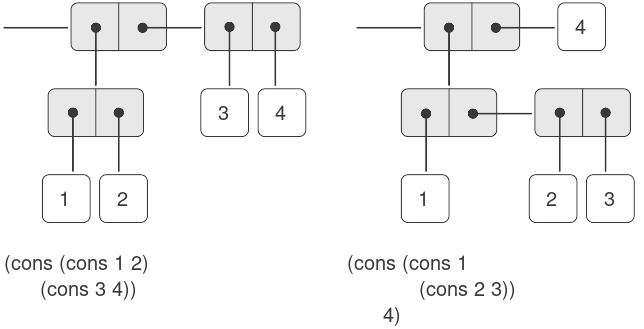
Figure 2.3: Two ways to combine 1, 2, 3, and 4 using pairs.
Khả năng tạo ra các pair mà phần tử của chúng cũng là pair chính là bản chất của tầm quan trọng của list structure (“cấu trúc danh sách”) như một công cụ biểu diễn. Chúng ta gọi khả năng này là closure property (“tính chất closure”) của cons. Nói chung, một phép toán kết hợp các đối tượng dữ liệu thỏa mãn closure property nếu kết quả của việc kết hợp các đối tượng bằng phép toán đó lại có thể được kết hợp tiếp bằng chính phép toán đó1. Closure là chìa khóa sức mạnh của bất kỳ phương thức kết hợp nào, bởi nó cho phép ta tạo ra các cấu trúc hierarchical (phân cấp) — các cấu trúc được tạo thành từ các phần, mà bản thân mỗi phần lại được tạo thành từ các phần nhỏ hơn, và cứ thế tiếp diễn.
Ngay từ đầu Chương 1, chúng ta đã sử dụng một cách thiết yếu closure khi làm việc với procedure, bởi hầu hết các chương trình, trừ những chương trình đơn giản nhất, đều dựa vào thực tế rằng các phần tử của một phép kết hợp bản thân chúng cũng có thể là các phép kết hợp. Trong phần này, chúng ta sẽ xét các hệ quả của closure đối với dữ liệu phức hợp. Chúng ta sẽ mô tả một số kỹ thuật thông dụng để dùng pair biểu diễn sequence (dãy) và tree (cây), và sẽ trình bày một ngôn ngữ đồ họa minh họa closure một cách sinh động2.
2.2.1 Biểu diễn Sequence
Một trong những cấu trúc hữu ích mà ta có thể xây dựng bằng pair là sequence — một tập hợp có thứ tự các đối tượng dữ liệu. Tất nhiên, có nhiều cách để biểu diễn sequence bằng pair. Một cách đặc biệt trực quan được minh họa trong Hình 2.4, nơi sequence 1, 2, 3, 4 được biểu diễn như một chuỗi các pair. car của mỗi pair là phần tử tương ứng trong chuỗi, và cdr của pair là pair tiếp theo trong chuỗi. cdr của pair cuối cùng báo hiệu kết thúc sequence bằng cách trỏ tới một giá trị đặc biệt không phải là pair, được biểu diễn trong sơ đồ box-and-pointer bằng một đường chéo và trong chương trình bằng giá trị của biến nil. Toàn bộ sequence được tạo ra bằng các phép cons lồng nhau:
(cons 1
(cons 2
(cons 3
(cons 4 nil))))

Figure 2.4: The sequence 1, 2, 3, 4 represented as a chain of pairs.
Một sequence như vậy của các pair, được tạo bởi các cons lồng nhau, được gọi là list, và Scheme cung cấp một nguyên thủy gọi là list để hỗ trợ việc xây dựng list3. Sequence ở trên có thể được tạo ra bởi (list 1 2 3 4). Nói chung,
(list ⟨a₁⟩ ⟨a₂⟩ … ⟨aₙ⟩)
tương đương với
(cons ⟨a₁⟩
(cons ⟨a₂⟩
(cons …
(cons ⟨aₙ⟩
nil)…)))
Các hệ thống Lisp theo thông lệ in list bằng cách in dãy các phần tử, đặt trong dấu ngoặc đơn. Do đó, đối tượng dữ liệu trong Hình 2.4 được in ra là (1 2 3 4):
(define one-through-four (list 1 2 3 4))
one-through-four
(1 2 3 4)
Cần cẩn thận để không nhầm lẫn biểu thức (list 1 2 3 4) với list (1 2 3 4), vốn là kết quả thu được khi biểu thức được đánh giá. Cố gắng đánh giá biểu thức (1 2 3 4) sẽ gây lỗi khi interpreter cố áp dụng procedure 1 cho các đối số 2, 3, 4.
Ta có thể coi car là phép chọn phần tử đầu tiên trong list, và cdr là phép chọn sublist gồm tất cả các phần tử trừ phần tử đầu tiên. Các phép áp dụng lồng nhau của car và cdr có thể được dùng để trích xuất phần tử thứ hai, thứ ba, và các phần tử tiếp theo trong list4. Constructor cons tạo ra một list giống như list ban đầu, nhưng có thêm một phần tử ở đầu.
(car one-through-four)
1
(cdr one-through-four)
(2 3 4)
(car (cdr one-through-four))
2
(cons 10 one-through-four)
(10 1 2 3 4)
(cons 5 one-through-four)
(5 1 2 3 4)
Giá trị của nil, được dùng để kết thúc chuỗi các pair, có thể được coi là một sequence không có phần tử nào, tức empty list (danh sách rỗng). Từ nil là dạng rút gọn của từ Latin nihil, nghĩa là “không gì cả”5.
Việc sử dụng từ “closure” ở đây xuất phát từ đại số trừu tượng, nơi một tập hợp các phần tử được gọi là đóng dưới một phép toán nếu việc áp dụng phép toán đó lên các phần tử trong tập cho ra một phần tử vẫn thuộc tập. Cộng đồng Lisp cũng (thật không may) dùng từ “closure” để mô tả một khái niệm hoàn toàn khác: closure là một kỹ thuật hiện thực để biểu diễn procedure với các biến tự do. Chúng tôi không dùng từ “closure” theo nghĩa thứ hai này trong cuốn sách này.
Khái niệm rằng một phương thức kết hợp nên thỏa mãn closure là một ý tưởng đơn giản. Thật không may, các công cụ kết hợp dữ liệu trong nhiều ngôn ngữ lập trình phổ biến không thỏa mãn closure, hoặc khiến việc khai thác closure trở nên rườm rà. Trong Fortran hoặc Basic, người ta thường kết hợp các phần tử dữ liệu bằng cách ghép chúng vào array — nhưng không thể tạo array mà phần tử của nó lại là array. Pascal và C cho phép các structure có phần tử là structure. Tuy nhiên, điều này đòi hỏi lập trình viên phải thao tác pointer một cách tường minh, và tuân theo ràng buộc rằng mỗi trường của structure chỉ có thể chứa các phần tử thuộc một dạng xác định trước. Không giống Lisp với pair, các ngôn ngữ này không có một “keo” đa dụng tích hợp sẵn giúp thao tác dữ liệu phức hợp một cách thống nhất. Hạn chế này là
Các phép toán trên list
Việc sử dụng pair để biểu diễn các sequence của phần tử dưới dạng list đi kèm với các kỹ thuật lập trình quy ước để thao tác list bằng cách lần lượt “cdr xuống” list. Ví dụ, procedure (thủ tục) list-ref nhận đối số là một list và một số $n$ và trả về phần tử thứ $n^{\text{th}}$ của list. Theo thông lệ, các phần tử của list được đánh số bắt đầu từ 0. Phương pháp tính list-ref như sau:
- Với $n = 0$,
list-refsẽ trả vềcarcủa list. - Ngược lại,
list-refsẽ trả về phần tử thứ $(n - 1)$ củacdrcủa list.
(define (list-ref items n)
(if (= n 0)
(car items)
(list-ref (cdr items)
(- n 1))))
(define squares
(list 1 4 9 16 25))
(list-ref squares 3)
16
Thường thì ta sẽ cdr xuống toàn bộ list. Để hỗ trợ việc này, Scheme bao gồm một primitive predicate null?, dùng để kiểm tra xem đối số của nó có phải là empty list hay không. Procedure length, trả về số phần tử trong một list, minh họa mẫu sử dụng điển hình này:
(define (length items)
(if (null? items)
0
(+ 1 (length (cdr items)))))
(define odds
(list 1 3 5 7))
(length odds)
4
Procedure length hiện thực một kế hoạch đệ quy đơn giản. Bước rút gọn là:
lengthcủa bất kỳ list nào bằng 1 cộng vớilengthcủacdrcủa list đó.
Điều này được áp dụng liên tiếp cho đến khi ta đạt trường hợp cơ sở:
lengthcủa empty list là 0.
Ta cũng có thể tính length theo phong cách lặp:
(define (length items)
(define (length-iter a count)
(if (null? a)
count
(length-iter (cdr a)
(+ 1 count))))
(length-iter items 0))
Một kỹ thuật lập trình quy ước khác là “cons lên” một answer list trong khi cdr xuống một list, như trong procedure append, nhận hai list làm đối số và kết hợp các phần tử của chúng để tạo ra một list mới:
(append squares odds)
(1 4 9 16 25 1 3 5 7)
(append odds squares)
(1 3 5 7 1 4 9 16 25)
Append cũng được hiện thực bằng một kế hoạch đệ quy. Để append hai list list1 và list2, thực hiện như sau:
- Nếu
list1là empty list, thì kết quả chính làlist2. - Ngược lại,
appendcdrcủalist1vàlist2, rồiconscarcủalist1vào kết quả:
(define (append list1 list2)
(if (null? list1)
list2
(cons (car list1)
(append (cdr list1)
list2))))
Mapping trên list
Một phép toán cực kỳ hữu ích là áp dụng một phép biến đổi nào đó lên từng phần tử trong một list và tạo ra list kết quả. Ví dụ, procedure sau đây nhân mỗi số trong một list với một hệ số cho trước:
(define (scale-list items factor)
(if (null? items)
nil
(cons (* (car items) factor)
(scale-list (cdr items)
factor))))
(scale-list (list 1 2 3 4 5) 10)
(10 20 30 40 50)
Chúng ta có thể trừu tượng hóa ý tưởng tổng quát này và nắm bắt nó như một mẫu chung được biểu diễn dưới dạng higher-order procedure, giống như trong 1.3. Higher-order procedure ở đây được gọi là map. Map nhận đối số là một procedure của một đối số và một list, và trả về một list các kết quả thu được bằng cách áp dụng procedure đó lên từng phần tử trong list6:
(define (map proc items)
(if (null? items)
nil
(cons (proc (car items))
(map proc (cdr items)))))
(map abs (list -10 2.5 -11.6 17))
(10 2.5 11.6 17)
(map (lambda (x) (* x x)) (list 1 2 3 4))
(1 4 9 16)
Giờ đây ta có thể đưa ra một định nghĩa mới của scale-list dựa trên map:
(define (scale-list items factor)
(map (lambda (x) (* x factor))
items))
Map là một cấu trúc quan trọng, không chỉ vì nó nắm bắt một mẫu chung, mà còn vì nó thiết lập một mức độ trừu tượng cao hơn khi làm việc với list. Trong định nghĩa ban đầu của scale-list, cấu trúc đệ quy của chương trình làm nổi bật việc xử lý từng phần tử của list. Định nghĩa scale-list dựa trên map loại bỏ mức chi tiết đó và nhấn mạnh rằng phép nhân tỷ lệ biến đổi một list phần tử thành một list kết quả. Sự khác biệt giữa hai định nghĩa không phải là máy tính thực hiện một quá trình khác (thực ra không phải), mà là chúng ta suy nghĩ về quá trình đó theo một cách khác. Thực chất, map giúp thiết lập một abstraction barrier (rào chắn trừu tượng) tách biệt việc hiện thực các procedure biến đổi list khỏi các chi tiết về cách trích xuất và kết hợp các phần tử của list. Giống như các rào chắn được minh họa trong Hình 2.1, sự trừu tượng này cho phép chúng ta linh hoạt thay đổi các chi tiết mức thấp về cách sequence được hiện thực, đồng thời vẫn giữ nguyên khung khái niệm của các phép toán biến đổi sequence thành sequence. Mục 2.2.3 sẽ mở rộng việc sử dụng sequence như một khung tổ chức chương trình.
Scheme theo tiêu chuẩn cung cấp một procedure map tổng quát hơn so với mô tả ở đây. Phiên bản tổng quát hơn này nhận một procedure của $n$ đối số, cùng với $n$ list, và áp dụng procedure đó cho tất cả các phần tử thứ nhất của các list, tất cả các phần tử thứ hai của các list, và cứ thế tiếp tục, trả về một list các kết quả.
2.2.2 Cấu trúc phân cấp
Việc biểu diễn sequence bằng list được mở rộng một cách tự nhiên để biểu diễn các sequence mà phần tử của chúng bản thân cũng có thể là sequence. Ví dụ, ta có thể xem đối tượng ((1 2) 3 4) được tạo bởi
(cons (list 1 2) (list 3 4))
như một list gồm ba phần tử, trong đó phần tử đầu tiên bản thân nó là một list, (1 2). Thật vậy, điều này được gợi ý bởi dạng mà interpreter in ra kết quả. Hình 2.5 cho thấy cách biểu diễn cấu trúc này bằng các pair.

Figure 2.5: Structure formed by (cons (list 1 2) (list 3 4)).
Một cách khác để hình dung các sequence mà phần tử của chúng là sequence là xem chúng như các tree (cây). Các phần tử của sequence là các nhánh của tree, và các phần tử vốn là sequence sẽ là các subtree (cây con). Hình 2.6 cho thấy cấu trúc trong Hình 2.5 khi được nhìn như một tree.
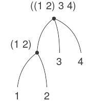
Figure 2.6: The list structure in Figure 2.5 viewed as a tree.
Recursion (đệ quy) là một công cụ tự nhiên để xử lý các cấu trúc tree, vì ta thường có thể quy các phép toán trên tree về các phép toán trên các nhánh của nó, rồi tiếp tục quy về các phép toán trên nhánh của nhánh, và cứ thế, cho đến khi ta chạm tới các leaf (lá) của tree. Ví dụ, hãy so sánh procedure length ở mục 2.2.1 với procedure count-leaves, trả về tổng số leaf của một tree:
(define x (cons (list 1 2) (list 3 4)))
(length x)
3
(count-leaves x)
4
(list x x)
(((1 2) 3 4) ((1 2) 3 4))
(length (list x x))
2
(count-leaves (list x x))
8
Để hiện thực count-leaves, hãy nhớ lại kế hoạch đệ quy để tính length:
Lengthcủa một listxbằng 1 cộng vớilengthcủacdrcủax.Lengthcủa empty list bằng 0.
Count-leaves cũng tương tự. Giá trị cho empty list là giống nhau:
Count-leavescủa empty list bằng 0.
Nhưng ở bước rút gọn, khi ta bỏ đi car của list, ta phải tính đến khả năng car bản thân nó là một tree mà ta cần đếm các leaf. Do đó, bước rút gọn thích hợp là:
Count-leavescủa một treexbằngcount-leavescủacarcủaxcộng vớicount-leavescủacdrcủax.
Cuối cùng, khi lấy car ta sẽ gặp các leaf thực sự, nên ta cần một trường hợp cơ sở khác:
Count-leavescủa một leaf bằng 1.
Để hỗ trợ việc viết các procedure đệ quy trên tree, Scheme cung cấp primitive predicate pair?, dùng để kiểm tra xem đối số của nó có phải là một pair hay không. Dưới đây là procedure hoàn chỉnh7:
(define (count-leaves x)
(cond ((null? x) 0)
((not (pair? x)) 1)
(else (+ (count-leaves (car x))
(count-leaves (cdr x))))))
Mapping trên tree
Cũng giống như map là một phép trừu tượng mạnh mẽ để xử lý sequence, map kết hợp với recursion là một phép trừu tượng mạnh mẽ để xử lý tree. Ví dụ, procedure scale-tree, tương tự như scale-list ở mục 2.2.1, nhận đối số là một hệ số số học và một tree mà các leaf là số. Nó trả về một tree có cùng hình dạng, trong đó mỗi số được nhân với hệ số đó. Kế hoạch đệ quy cho scale-tree tương tự như cho count-leaves:
(define (scale-tree tree factor)
(cond ((null? tree) nil)
((not (pair? tree))
(* tree factor))
(else
(cons (scale-tree (car tree)
factor)
(scale-tree (cdr tree)
factor)))))
(scale-tree (list 1
(list 2 (list 3 4) 5)
(list 6 7))
10)
(10 (20 (30 40) 50) (60 70))
Một cách khác để hiện thực scale-tree là coi tree như một sequence của các subtree và dùng map. Ta map trên sequence, nhân tỷ lệ từng subtree lần lượt, và trả về list kết quả. Trong trường hợp cơ sở, khi tree là một leaf, ta chỉ cần nhân với hệ số:
(define (scale-tree tree factor)
(map (lambda (sub-tree)
(if (pair? sub-tree)
(scale-tree sub-tree factor)
(* sub-tree factor)))
tree))
Nhiều phép toán trên tree có thể được hiện thực bằng các kết hợp tương tự giữa các phép toán trên sequence và recursion.
Thứ tự của hai mệnh đề đầu tiên trong cond là quan trọng, vì empty list thỏa mãn null? và đồng thời cũng không phải là một pair.
2.2.3 Sequence như các Conventional Interface (giao diện quy ước)
Khi làm việc với dữ liệu phức hợp, chúng ta đã nhấn mạnh cách data abstraction (trừu tượng hóa dữ liệu) cho phép thiết kế chương trình mà không bị sa lầy vào các chi tiết của cách biểu diễn dữ liệu, và cách mà sự trừu tượng hóa giữ cho chúng ta khả năng linh hoạt để thử nghiệm với các cách biểu diễn thay thế. Trong phần này, chúng ta giới thiệu một nguyên tắc thiết kế mạnh mẽ khác khi làm việc với các cấu trúc dữ liệu — việc sử dụng conventional interface.
Trong mục 1.3, chúng ta đã thấy cách các program abstraction (trừu tượng hóa chương trình), được hiện thực dưới dạng higher-order procedure (thủ tục bậc cao), có thể nắm bắt các mẫu chung trong các chương trình xử lý dữ liệu số. Khả năng của chúng ta trong việc xây dựng các phép toán tương tự để làm việc với dữ liệu phức hợp phụ thuộc rất nhiều vào phong cách mà chúng ta thao tác với các cấu trúc dữ liệu. Hãy xem xét, ví dụ, procedure sau, tương tự như procedure count-leaves ở mục 2.2.2, nhận một tree làm đối số và tính tổng bình phương của các leaf là số lẻ:
(define (sum-odd-squares tree)
(cond ((null? tree) 0)
((not (pair? tree))
(if (odd? tree) (square tree) 0))
(else (+ (sum-odd-squares
(car tree))
(sum-odd-squares
(cdr tree))))))
Bề ngoài, procedure này rất khác so với procedure sau, tạo ra một list chứa tất cả các số Fibonacci chẵn $\text{Fib}(k)$, với $k$ nhỏ hơn hoặc bằng một số nguyên $n$ cho trước:
(define (even-fibs n)
(define (next k)
(if (> k n)
nil
(let ((f (fib k)))
(if (even? f)
(cons f (next (+ k 1)))
(next (+ k 1))))))
(next 0))
Mặc dù hai procedure này về mặt cấu trúc rất khác nhau, nhưng một mô tả trừu tượng hơn về hai phép tính này lại cho thấy nhiều điểm tương đồng. Chương trình thứ nhất:
- liệt kê các leaf của một tree;
- lọc chúng, chọn ra các phần tử lẻ;
- bình phương từng phần tử đã chọn; và
- cộng dồn các kết quả bằng
+, bắt đầu từ 0.
Chương trình thứ hai:
- liệt kê các số nguyên từ 0 đến $n$;
- tính số Fibonacci cho mỗi số nguyên;
- lọc chúng, chọn ra các phần tử chẵn; và
- cộng dồn các kết quả bằng
cons, bắt đầu từ empty list.
Một kỹ sư xử lý tín hiệu sẽ thấy tự nhiên khi hình dung các quá trình này như các tín hiệu chảy qua một chuỗi các giai đoạn, mỗi giai đoạn hiện thực một phần của kế hoạch chương trình, như minh họa trong Hình 2.7. Trong sum-odd-squares, chúng ta bắt đầu với một enumerator, tạo ra một “tín hiệu” gồm các leaf của một tree cho trước. Tín hiệu này được truyền qua một filter, loại bỏ tất cả trừ các phần tử lẻ. Tín hiệu kết quả lại được truyền qua một map, là một “transducer” áp dụng procedure square lên từng phần tử. Đầu ra của map sau đó được đưa vào một accumulator, kết hợp các phần tử bằng +, bắt đầu từ giá trị ban đầu là 0. Kế hoạch cho even-fibs là tương tự.
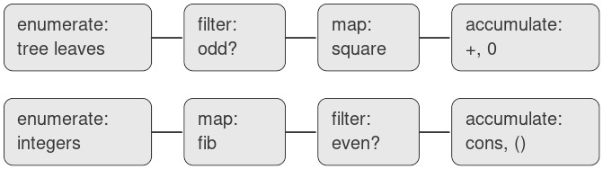
Figure 2.7: The signal-flow plans for the procedures sum-odd-squares (top) and even-fibs (bottom) reveal the commonality between the two programs.
Thật không may, hai định nghĩa procedure ở trên không thể hiện rõ cấu trúc signal-flow này. Ví dụ, nếu ta xem xét procedure sum-odd-squares, ta thấy rằng việc liệt kê được hiện thực một phần bởi các phép kiểm tra null? và pair?, và một phần bởi cấu trúc đệ quy trên tree của procedure. Tương tự, việc cộng dồn được tìm thấy một phần trong các phép kiểm tra và một phần trong phép cộng được dùng trong đệ quy. Nói chung, không có phần riêng biệt nào của mỗi procedure tương ứng trực tiếp với các thành phần trong mô tả signal-flow. Hai procedure này phân rã phép tính theo cách khác nhau, rải việc liệt kê khắp chương trình và trộn lẫn nó với map, filter và accumulation. Nếu chúng ta có thể tổ chức chương trình sao cho cấu trúc signal-flow được thể hiện rõ ràng trong các procedure mà ta viết, điều này sẽ nâng cao độ rõ ràng về mặt khái niệm của mã nguồn thu được.
Các phép toán trên Sequence
Chìa khóa để tổ chức chương trình phản ánh rõ hơn cấu trúc signal-flow là tập trung vào các “tín hiệu” chảy từ giai đoạn này sang giai đoạn tiếp theo trong quá trình. Nếu ta biểu diễn các tín hiệu này dưới dạng list, thì ta có thể dùng các phép toán trên list để hiện thực việc xử lý ở mỗi giai đoạn. Ví dụ, ta có thể hiện thực các giai đoạn mapping của sơ đồ signal-flow bằng procedure map từ mục 2.2.1:
(map square (list 1 2 3 4 5))
(1 4 9 16 25)
Lọc một sequence để chỉ chọn các phần tử thỏa mãn một predicate cho trước được thực hiện như sau:
(define (filter predicate sequence)
(cond ((null? sequence) nil)
((predicate (car sequence))
(cons (car sequence)
(filter predicate
(cdr sequence))))
(else (filter predicate
(cdr sequence)))))
Ví dụ:
(filter odd? (list 1 2 3 4 5))
(1 3 5)
Các phép cộng dồn (accumulation) có thể được hiện thực như sau:
(define (accumulate op initial sequence)
(if (null? sequence)
initial
(op (car sequence)
(accumulate op
initial
(cdr sequence)))))
(accumulate + 0 (list 1 2 3 4 5))
15
(accumulate * 1 (list 1 2 3 4 5))
120
(accumulate cons nil (list 1 2 3 4 5))
(1 2 3 4 5)
Tất cả những gì còn lại để hiện thực sơ đồ signal-flow là liệt kê sequence các phần tử cần xử lý. Với even-fibs, ta cần tạo ra sequence các số nguyên trong một khoảng cho trước, điều này có thể làm như sau:
(define (enumerate-interval low high)
(if (> low high)
nil
(cons low
(enumerate-interval
(+ low 1)
high))))
(enumerate-interval 2 7)
(2 3 4 5 6 7)
(TODO)
Để liệt kê các leaf của một tree, ta có thể dùng8:
(define (enumerate-tree tree)
(cond ((null? tree) nil)
((not (pair? tree)) (list tree))
(else (append
(enumerate-tree (car tree))
(enumerate-tree (cdr tree))))))
(enumerate-tree (list 1 (list 2 (list 3 4)) 5))
(1 2 3 4 5)
Giờ đây ta có thể viết lại sum-odd-squares và even-fibs như trong các sơ đồ signal-flow. Với sum-odd-squares, ta liệt kê sequence các leaf của tree, lọc để giữ lại các số lẻ trong sequence, bình phương từng phần tử, và cộng tổng các kết quả:
(define (sum-odd-squares tree)
(accumulate
+
0
(map square
(filter odd?
(enumerate-tree tree)))))
Với even-fibs, ta liệt kê các số nguyên từ 0 đến $n$, sinh số Fibonacci cho mỗi số nguyên này, lọc sequence kết quả để giữ lại các phần tử chẵn, và cộng dồn các kết quả vào một list:
(define (even-fibs n)
(accumulate
cons
nil
(filter even?
(map fib
(enumerate-interval 0 n)))))
Giá trị của việc biểu diễn chương trình dưới dạng các phép toán trên sequence là nó giúp chúng ta thiết kế chương trình theo hướng modular (mô-đun), tức là các thiết kế được xây dựng bằng cách kết hợp các phần tương đối độc lập. Ta có thể khuyến khích thiết kế modular bằng cách cung cấp một thư viện các thành phần tiêu chuẩn cùng với một conventional interface để kết nối các thành phần theo những cách linh hoạt.
Xây dựng theo mô-đun là một chiến lược mạnh mẽ để kiểm soát độ phức tạp trong thiết kế kỹ thuật. Trong các ứng dụng xử lý tín hiệu thực tế, ví dụ, các nhà thiết kế thường xây dựng hệ thống bằng cách mắc nối tiếp các phần tử được chọn từ các họ filter và transducer tiêu chuẩn. Tương tự, các phép toán trên sequence cung cấp một thư viện các phần tử chương trình tiêu chuẩn mà ta có thể kết hợp và hoán đổi. Ví dụ, ta có thể tái sử dụng các phần từ procedure sum-odd-squares và even-fibs trong một chương trình tạo ra list các bình phương của $n + 1$ số Fibonacci đầu tiên:
(define (list-fib-squares n)
(accumulate
cons
nil
(map square
(map fib
(enumerate-interval 0 n)))))
(list-fib-squares 10)
(0 1 1 4 9 25 64 169 441 1156 3025)
Ta có thể sắp xếp lại các phần này và dùng chúng để tính tích các bình phương của các số nguyên lẻ trong một sequence:
(define
(product-of-squares-of-odd-elements
sequence)
(accumulate
*
1
(map square (filter odd? sequence))))
(product-of-squares-of-odd-elements
(list 1 2 3 4 5))
225
Ta cũng có thể xây dựng các ứng dụng xử lý dữ liệu thông thường dưới dạng các phép toán trên sequence. Giả sử ta có một sequence các hồ sơ nhân sự và muốn tìm mức lương của lập trình viên được trả cao nhất. Giả sử ta có một selector salary trả về mức lương từ một hồ sơ, và một predicate programmer? kiểm tra xem hồ sơ đó có phải của một lập trình viên hay không. Khi đó ta có thể viết:
(define
(salary-of-highest-paid-programmer
records)
(accumulate
max
0
(map salary
(filter programmer? records))))
Các ví dụ này chỉ gợi ý một phần nhỏ trong phạm vi rộng lớn các phép toán có thể được biểu diễn dưới dạng các phép toán trên sequence9.
Các sequence, được hiện thực ở đây dưới dạng list, đóng vai trò như một conventional interface cho phép chúng ta kết hợp các mô-đun xử lý. Thêm vào đó, khi ta biểu diễn thống nhất các cấu trúc dưới dạng sequence, ta đã giới hạn sự phụ thuộc vào cấu trúc dữ liệu trong chương trình vào một số ít các phép toán trên sequence. Bằng cách thay đổi chúng, ta có thể thử nghiệm các cách biểu diễn thay thế của sequence, trong khi vẫn giữ nguyên thiết kế tổng thể của chương trình. Chúng ta sẽ khai thác khả năng này trong mục 3.5, khi ta khái quát hóa mô hình xử lý sequence để chấp nhận cả các sequence vô hạn.
Thực tế, đây chính là procedure fringe trong Bài tập 2.28. Ở đây chúng tôi đổi tên để nhấn mạnh rằng nó là một phần của một họ các procedure thao tác sequence tổng quát.
Richard Waters (1979) đã phát triển một chương trình tự động phân tích các chương trình Fortran truyền thống, xem chúng dưới dạng các map, filter và accumulation. Ông nhận thấy rằng tới 90% mã trong Fortran Scientific Subroutine Package hoàn toàn phù hợp với mô hình này. Một trong những lý do cho sự thành công của Lisp như một ngôn ngữ lập trình là list cung cấp một phương tiện tiêu chuẩn để biểu diễn các tập hợp có thứ tự, nhờ đó chúng có thể được thao tác bằng các phép toán bậc cao. Ngôn ngữ lập trình APL cũng có được nhiều sức mạnh và sự hấp dẫn nhờ một lựa chọn tương tự. Trong APL, mọi dữ liệu đều được biểu diễn dưới dạng array, và có một tập hợp các toán tử tổng quát, tiện lợi cho mọi loại thao tác trên array.
Nested Mappings (Ánh xạ lồng nhau)
Chúng ta có thể mở rộng mô hình sequence để bao gồm nhiều phép tính thường được biểu diễn bằng các vòng lặp lồng nhau10. Xét bài toán sau: Cho một số nguyên dương $n$, tìm tất cả các cặp có thứ tự gồm hai số nguyên dương phân biệt $i$ và $j$, với ${1 \leq j} < {i \leq n}$, sao cho $i + j$ là số nguyên tố. Ví dụ, nếu $n$ là 6, thì các cặp là:
$$\begin{array}{llllllll} i & 2 & 3 & 4 & 4 & 5 & 6 & 6 \ j & 1 & 2 & 1 & 3 & 2 & 1 & 5 \ {i + j} & 3 & 5 & 5 & 7 & 7 & 7 & 11 \ \end{array}$$
Một cách tự nhiên để tổ chức phép tính này là sinh ra sequence của tất cả các cặp có thứ tự gồm các số nguyên dương nhỏ hơn hoặc bằng $n$, filter để chọn các cặp có tổng là số nguyên tố, và sau đó, với mỗi cặp $(i,j)$ vượt qua bộ lọc, tạo ra bộ ba $(i,j,i + j)$.
Dưới đây là một cách để sinh sequence các cặp: Với mỗi số nguyên $i \leq n$, liệt kê các số nguyên $j < i$, và với mỗi $i$ và $j$ như vậy, sinh ra cặp $(i,j)$. Xét theo các phép toán trên sequence, ta map trên sequence (enumerate-interval 1 n). Với mỗi $i$ trong sequence này, ta map trên sequence (enumerate-interval 1 (- i 1)). Với mỗi $j$ trong sequence sau, ta sinh ra cặp (list i j). Điều này cho ta một sequence các cặp cho mỗi $i$. Kết hợp tất cả các sequence cho mọi $i$ (bằng cách accumulate với append) sẽ tạo ra sequence các cặp cần tìm11:
(accumulate
append
nil
(map (lambda (i)
(map (lambda (j)
(list i j))
(enumerate-interval 1 (- i 1))))
(enumerate-interval 1 n)))
Sự kết hợp giữa mapping và accumulating với append phổ biến đến mức chúng ta sẽ tách nó thành một procedure riêng:
(define (flatmap proc seq)
(accumulate append nil (map proc seq)))
Giờ hãy filter sequence các cặp này để tìm những cặp có tổng là số nguyên tố. Predicate của filter được gọi cho mỗi phần tử của sequence; đối số của nó là một cặp và nó phải trích xuất các số nguyên từ cặp đó. Do đó, predicate áp dụng cho mỗi phần tử trong sequence là:
(define (prime-sum? pair)
(prime? (+ (car pair) (cadr pair))))
Cuối cùng, sinh sequence kết quả bằng cách map trên các cặp đã lọc, sử dụng procedure sau, tạo ra một bộ ba gồm hai phần tử của cặp cùng với tổng của chúng:
(define (make-pair-sum pair)
(list (car pair)
(cadr pair)
(+ (car pair) (cadr pair))))
Kết hợp tất cả các bước này cho ta procedure hoàn chỉnh:
(define (prime-sum-pairs n)
(map make-pair-sum
(filter
prime-sum?
(flatmap
(lambda (i)
(map (lambda (j)
(list i j))
(enumerate-interval
1
(- i 1))))
(enumerate-interval 1 n)))))
Nested mapping cũng hữu ích cho các sequence khác ngoài những sequence liệt kê các khoảng số. Giả sử ta muốn sinh tất cả các permutation của một tập $S$; tức là tất cả các cách sắp xếp thứ tự các phần tử trong tập. Ví dụ, các permutation của ${ 1,2,3}$ là ${ 1,2,3}$, ${ 1,3,2}$, ${ 2,1,3}$, ${ 2,3,1}$, ${ 3,1,2}$, và ${ 3,2,1}$. Dưới đây là kế hoạch để sinh các permutation của $S$: Với mỗi phần tử $x$ trong $S$, đệ quy sinh sequence các permutation của $S - x$12, và nối $x$ vào đầu mỗi permutation. Điều này cho ta, với mỗi $x$ trong $S$, sequence các permutation của $S$ bắt đầu bằng $x$. Kết hợp các sequence này cho mọi $x$ sẽ cho tất cả các permutation của $S$13:
(define (permutations s)
(if (null? s) ; empty set?
(list nil) ; sequence containing empty set
(flatmap (lambda (x)
(map (lambda (p)
(cons x p))
(permutations
(remove x s))))
s)))
Hãy chú ý cách chiến lược này quy bài toán sinh các permutation của $S$ về bài toán sinh các permutation của các tập có ít phần tử hơn $S$. Trong trường hợp cuối cùng, ta đi đến empty list, biểu diễn một tập không có phần tử nào. Với trường hợp này, ta sinh (list nil), là một sequence với một phần tử duy nhất, chính là tập không có phần tử. Procedure remove được dùng trong permutations trả về tất cả các phần tử trong một sequence cho trước, trừ một phần tử nhất định. Điều này có thể được biểu diễn như một filter đơn giản:
(define (remove item sequence)
(filter (lambda (x) (not (= x item)))
sequence))
Cách tiếp cận nested mapping này được giới thiệu cho chúng tôi bởi David Turner, người đã phát triển các ngôn ngữ KRC và Miranda, cung cấp các hình thức chính quy thanh nhã để xử lý các cấu trúc này. Các ví dụ trong phần này (xem thêm Bài tập 2.42) được điều chỉnh từ Turner 1981. Trong mục 3.5.3, chúng ta sẽ thấy cách tiếp cận này được khái quát hóa cho các sequence vô hạn.
Ở đây chúng tôi biểu diễn một pair như một list gồm hai phần tử thay vì một Lisp pair. Do đó, “cặp” $(i,j)$ được biểu diễn là (list i j), không phải (cons i j).
Tập $S - x$ là tập hợp tất cả các phần tử của $S$, ngoại trừ $x$.
Dấu chấm phẩy trong mã Scheme được dùng để bắt đầu comment. Mọi thứ từ dấu chấm phẩy đến hết dòng sẽ bị interpreter bỏ qua. Trong cuốn sách này, chúng tôi không dùng nhiều comment; chúng tôi cố gắng làm cho chương trình tự giải thích bằng cách sử dụng các tên mô tả.
2.2.4 Ví dụ: Một ngôn ngữ vẽ tranh (Picture Language)
Phần này giới thiệu một ngôn ngữ đơn giản để vẽ tranh, minh họa sức mạnh của data abstraction (trừu tượng hóa dữ liệu) và closure (tính đóng), đồng thời khai thác higher-order procedure (thủ tục bậc cao) một cách thiết yếu. Ngôn ngữ này được thiết kế để giúp dễ dàng thử nghiệm với các mẫu như trong Hình 2.9, được tạo thành từ các phần tử lặp lại được tịnh tiến và co giãn14. Trong ngôn ngữ này, các đối tượng dữ liệu được kết hợp được biểu diễn dưới dạng procedure thay vì cấu trúc list. Cũng giống như cons, vốn thỏa mãn closure property và cho phép chúng ta dễ dàng xây dựng các cấu trúc list phức tạp tùy ý, các phép toán trong ngôn ngữ này — cũng thỏa mãn closure property — cho phép chúng ta dễ dàng xây dựng các mẫu phức tạp tùy ý.

Figure 2.9: Designs generated with the picture language.
Ngôn ngữ vẽ tranh
Khi bắt đầu nghiên cứu lập trình ở mục 1.1, chúng ta đã nhấn mạnh tầm quan trọng của việc mô tả một ngôn ngữ bằng cách tập trung vào các primitive (nguyên thủy) của ngôn ngữ, các phương thức kết hợp (means of combination), và các phương thức trừu tượng hóa (means of abstraction). Chúng ta sẽ tiếp tục theo khung này ở đây.
Một phần của sự tinh tế trong ngôn ngữ vẽ tranh này là chỉ có một loại phần tử duy nhất, gọi là painter. Một painter vẽ một hình ảnh được tịnh tiến và co giãn để vừa khít trong một khung hình dạng hình bình hành được chỉ định. Ví dụ, có một primitive painter mà ta gọi là wave, tạo ra một bản vẽ đường nét thô sơ, như minh họa trong Hình 2.10. Hình dạng thực tế của bản vẽ phụ thuộc vào khung — cả bốn hình trong Hình 2.10 đều được tạo ra bởi cùng một painter wave, nhưng với bốn khung khác nhau. Painter có thể phức tạp hơn thế: Primitive painter có tên rogers vẽ chân dung của người sáng lập MIT, William Barton Rogers, như trong Hình 2.1115. Bốn hình trong Hình 2.11 được vẽ với cùng bốn khung như các hình wave trong Hình 2.10.

Figure 2.10: Images produced by the wave painter, with respect to four different frames. The frames, shown with dotted lines, are not part of the images.

Figure 2.11: Images of William Barton Rogers, founder and first president of MIT, painted with respect to the same four frames as in Figure 2.10 (original image from Wikimedia Commons).
Để kết hợp các hình ảnh, chúng ta sử dụng nhiều phép toán khác nhau để tạo ra painter mới từ các painter đã cho. Ví dụ, phép toán beside nhận hai painter và tạo ra một compound painter (painter phức hợp) vẽ hình ảnh của painter thứ nhất ở nửa bên trái khung và hình ảnh của painter thứ hai ở nửa bên phải khung. Tương tự, below nhận hai painter và tạo ra một compound painter vẽ hình ảnh của painter thứ nhất bên dưới hình ảnh của painter thứ hai. Một số phép toán biến đổi một painter duy nhất để tạo ra painter mới. Ví dụ, flip-vert nhận một painter và tạo ra một painter vẽ hình ảnh của nó lộn ngược, và flip-horiz tạo ra một painter vẽ hình ảnh của painter gốc đảo ngược trái-phải.
Hình 2.12 cho thấy bản vẽ của một painter có tên wave4, được xây dựng qua hai bước bắt đầu từ wave:
(define wave2 (beside wave (flip-vert wave)))
(define wave4 (below wave2 wave2))

Figure 2.12: Creating a complex figure, starting from the wave painter of Figure 2.10.
Khi xây dựng một hình ảnh phức tạp theo cách này, chúng ta đang khai thác thực tế rằng các painter là closed (đóng) dưới các phương thức kết hợp của ngôn ngữ. beside hoặc below của hai painter bản thân nó cũng là một painter; do đó, chúng ta có thể sử dụng nó như một phần tử để tạo ra các painter phức tạp hơn. Giống như việc xây dựng cấu trúc list bằng cons, closure của dữ liệu dưới các phương thức kết hợp là yếu tố then chốt cho khả năng tạo ra các cấu trúc phức tạp chỉ với một vài phép toán.
Khi đã có thể kết hợp các painter, chúng ta muốn có khả năng trừu tượng hóa các mẫu kết hợp painter điển hình. Chúng ta sẽ hiện thực các phép toán painter dưới dạng procedure Scheme. Điều này có nghĩa là chúng ta không cần một cơ chế trừu tượng hóa đặc biệt trong ngôn ngữ vẽ tranh: Vì các phương thức kết hợp là các procedure Scheme thông thường, chúng ta tự động có khả năng làm bất cứ điều gì với các phép toán painter mà chúng ta có thể làm với procedure. Ví dụ, chúng ta có thể trừu tượng hóa mẫu trong wave4 như sau:
(define (flipped-pairs painter)
(let ((painter2
(beside painter
(flip-vert painter))))
(below painter2 painter2)))
và định nghĩa wave4 như một thể hiện của mẫu này:
(define wave4 (flipped-pairs wave))
Chúng ta cũng có thể định nghĩa các phép toán đệ quy. Dưới đây là một phép toán tạo ra các painter tách nhánh về phía bên phải như minh họa trong Hình 2.13 và Hình 2.14:
(define (right-split painter n)
(if (= n 0)
painter
(let ((smaller (right-split painter
(- n 1))))
(beside painter
(below smaller smaller)))))

Figure 2.13: Recursive plans for right-split and corner-split.
Ngôn ngữ vẽ tranh này dựa trên ngôn ngữ do Peter Henderson tạo ra để dựng các hình ảnh giống như bản khắc gỗ “Square Limit” của M.C. Escher (xem Henderson 1982). Bản khắc gỗ này bao gồm một mẫu lặp lại được co giãn, tương tự như các bố cục được vẽ bằng procedure square-limit trong phần này.
William Barton Rogers (1804-1882) là người sáng lập và là hiệu trưởng đầu tiên của MIT. Ông là một nhà địa chất và một giáo viên tài năng, từng giảng dạy tại William and Mary College và Đại học Virginia. Năm 1859, ông chuyển đến Boston, nơi ông có nhiều thời gian hơn cho nghiên cứu, làm việc về kế hoạch thành lập một “viện bách khoa” và là Thanh tra Nhà nước đầu tiên của Massachusetts về đồng hồ đo khí.
Chúng ta có thể tạo ra các mẫu cân đối bằng cách phân nhánh hướng lên trên cũng như hướng sang phải (xem Bài tập 2.44, Hình 2.13 và Hình 2.14):
(define (corner-split painter n)
(if (= n 0)
painter
(let ((up (up-split painter (- n 1)))
(right (right-split painter
(- n 1))))
(let ((top-left (beside up up))
(bottom-right (below right
right))
(corner (corner-split painter
(- n 1))))
(beside (below painter top-left)
(below bottom-right
corner))))))

Figure 2.14: The recursive operations right-split and corner-split applied to the painters wave and rogers. Combining four corner-split figures produces symmetric square-limit designs as shown in Figure 2.9.
Bằng cách đặt bốn bản sao của một corner-split một cách thích hợp, chúng ta thu được một mẫu gọi là square-limit, với ứng dụng cho wave và rogers như minh họa trong Hình 2.9:
(define (square-limit painter n)
(let ((quarter (corner-split painter n)))
(let ((half (beside (flip-horiz quarter)
quarter)))
(below (flip-vert half) half))))
Higher-order operations (các phép toán bậc cao)
Ngoài việc trừu tượng hóa các mẫu kết hợp painter, chúng ta có thể làm việc ở mức cao hơn, trừu tượng hóa các mẫu kết hợp các painter operation (phép toán trên painter). Nghĩa là, chúng ta có thể xem các painter operation như những phần tử để thao tác và có thể viết các phương thức kết hợp cho các phần tử này — các procedure nhận painter operation làm đối số và tạo ra painter operation mới.
Ví dụ, flipped-pairs và square-limit đều sắp xếp bốn bản sao của hình ảnh một painter trong một mẫu hình vuông; chúng chỉ khác nhau ở cách định hướng các bản sao. Một cách để trừu tượng hóa mẫu kết hợp painter này là với procedure sau, nhận bốn painter operation một đối số và tạo ra một painter operation biến đổi một painter cho trước bằng bốn phép toán đó và sắp xếp các kết quả thành một hình vuông. Tl, tr, bl, và br là các phép biến đổi áp dụng lần lượt cho bản sao ở góc trên bên trái, góc trên bên phải, góc dưới bên trái và góc dưới bên phải.
(define (square-of-four tl tr bl br)
(lambda (painter)
(let ((top (beside (tl painter)
(tr painter)))
(bottom (beside (bl painter)
(br painter))))
(below bottom top))))
Khi đó, flipped-pairs có thể được định nghĩa dựa trên square-of-four như sau:16
(define (flipped-pairs painter)
(let ((combine4
(square-of-four identity
flip-vert
identity
flip-vert)))
(combine4 painter)))
và square-limit có thể được biểu diễn như sau17:
(define (square-limit painter n)
(let ((combine4
(square-of-four flip-horiz
identity
rotate180
flip-vert)))
(combine4 (corner-split painter n))))
Tương đương, chúng ta có thể viết…
Rotate180 xoay một painter 180 độ (xem Bài tập 2.50). Thay vì rotate180, chúng ta có thể viết (compose flip-vert flip-horiz), sử dụng procedure compose từ Bài tập 1.42.
Frames
Trước khi chúng ta có thể chỉ ra cách hiện thực các painter và các phương thức kết hợp của chúng, trước hết cần xem xét frame (khung). Một frame có thể được mô tả bởi ba vector — một origin vector (vector gốc) và hai edge vector (vector cạnh). Origin vector xác định độ lệch của gốc frame so với một gốc tuyệt đối nào đó trên mặt phẳng, và các edge vector xác định độ lệch của các góc frame so với gốc của nó. Nếu các cạnh vuông góc, frame sẽ là hình chữ nhật. Ngược lại, frame sẽ là một hình bình hành tổng quát hơn.
Hình 2.15 minh họa một frame và các vector liên quan. Theo nguyên tắc data abstraction (trừu tượng hóa dữ liệu), chúng ta chưa cần xác định cụ thể cách biểu diễn frame, ngoài việc nói rằng có một constructor make-frame, nhận ba vector và tạo ra một frame, cùng với ba selector tương ứng origin-frame, edge1-frame, và edge2-frame (xem Bài tập 2.47).

Figure 2.15: A frame is described by three vectors — an origin and two edges.
Chúng ta sẽ sử dụng hệ tọa độ trong unit square $(0 \leq x,y \leq 1)$ để xác định hình ảnh. Với mỗi frame, chúng ta gắn một frame coordinate map (ánh xạ tọa độ khung), được dùng để tịnh tiến và co giãn hình ảnh sao cho vừa khít với frame. Ánh xạ này biến đổi unit square thành frame bằng cách ánh xạ vector $\mathbf{v} = (x,y)$ thành tổng vector:
$$\text{Origin(Frame)} + {x \cdot \text{Edge}{1}\text{(Frame)}} + {y \cdot \text{Edge}{2}\text{(Frame)}.}$$
Ví dụ, (0, 0) được ánh xạ tới gốc của frame, (1, 1) tới đỉnh đối diện theo đường chéo với gốc, và (0.5, 0.5) tới tâm của frame. Chúng ta có thể tạo frame coordinate map bằng procedure sau18:
(define (frame-coord-map frame)
(lambda (v)
(add-vect
(origin-frame frame)
(add-vect
(scale-vect (xcor-vect v)
(edge1-frame frame))
(scale-vect (ycor-vect v)
(edge2-frame frame))))))
Lưu ý rằng việc áp dụng frame-coord-map cho một frame sẽ trả về một procedure mà, khi nhận một vector, sẽ trả về một vector. Nếu vector đối số nằm trong unit square, vector kết quả sẽ nằm trong frame. Ví dụ:
((frame-coord-map a-frame) (make-vect 0 0))
trả về cùng một vector với:
(origin-frame a-frame)
Painters
Một painter được biểu diễn như một procedure mà, khi nhận một frame làm đối số, sẽ vẽ một hình ảnh cụ thể được tịnh tiến và co giãn để vừa khít với frame. Nói cách khác, nếu p là một painter và f là một frame, thì ta tạo ra hình ảnh của p trong f bằng cách gọi p với f làm đối số.
Chi tiết về cách hiện thực các primitive painter phụ thuộc vào đặc điểm cụ thể của hệ thống đồ họa và loại hình ảnh cần vẽ. Ví dụ, giả sử chúng ta có một procedure draw-line vẽ một đường thẳng trên màn hình giữa hai điểm được chỉ định. Khi đó, ta có thể tạo các painter cho bản vẽ đường nét, như painter wave trong Hình 2.10, từ các list đoạn thẳng như sau19:
(define (segments->painter segment-list)
(lambda (frame)
(for-each
(lambda (segment)
(draw-line
((frame-coord-map frame)
(start-segment segment))
((frame-coord-map frame)
(end-segment segment))))
segment-list)))
Các đoạn thẳng được cho bằng tọa độ so với unit square. Với mỗi đoạn trong list, painter sẽ biến đổi các điểm đầu mút của đoạn bằng frame coordinate map và vẽ một đường nối giữa các điểm đã biến đổi.
Việc biểu diễn painter dưới dạng procedure tạo ra một abstraction barrier (rào chắn trừu tượng) mạnh mẽ trong ngôn ngữ vẽ tranh. Chúng ta có thể tạo và kết hợp nhiều loại primitive painter khác nhau, dựa trên nhiều khả năng đồ họa khác nhau. Chi tiết hiện thực của chúng không quan trọng. Bất kỳ procedure nào cũng có thể đóng vai trò là painter, miễn là nó nhận một frame làm đối số và vẽ một thứ gì đó được co giãn để vừa khít với frame20.
Frame-coord-map sử dụng các phép toán vector được mô tả trong Bài tập 2.46 bên dưới, mà chúng ta giả định đã được hiện thực bằng một cách biểu diễn nào đó cho vector. Do nguyên tắc data abstraction, không quan trọng biểu diễn vector đó là gì, miễn là các phép toán vector hoạt động đúng.
Segments->painter sử dụng cách biểu diễn các đoạn thẳng được mô tả trong Bài tập 2.48 bên dưới. Nó cũng sử dụng procedure for-each được mô tả trong Bài tập 2.23.
Ví dụ, painter rogers trong Hình 2.11 được tạo từ một ảnh mức xám. Với mỗi điểm trong một frame cho trước, painter rogers xác định điểm trong ảnh được ánh xạ tới nó theo frame coordinate map, và tô bóng tương ứng. Bằng cách cho phép nhiều loại painter khác nhau, chúng ta đang tận dụng ý tưởng abstract data đã thảo luận ở mục 2.1.3, nơi chúng ta lập luận rằng một biểu diễn số hữu tỉ có thể là bất cứ thứ gì miễn là thỏa mãn điều kiện thích hợp. Ở đây, chúng ta sử dụng thực tế rằng một painter có thể được hiện thực theo bất kỳ cách nào, miễn là nó vẽ được thứ gì đó trong frame được chỉ định. Mục 2.1.3 cũng đã chỉ ra cách pair có thể được hiện thực như các procedure. Painter là ví dụ thứ hai của chúng ta về một cách biểu diễn dữ liệu bằng procedure.
Biến đổi và kết hợp painter
Một phép toán trên painter (chẳng hạn như flip-vert hoặc beside) hoạt động bằng cách tạo ra một painter mới, gọi các painter gốc với các frame được suy ra từ frame đối số. Do đó, ví dụ, flip-vert không cần biết một painter hoạt động như thế nào để lật nó — nó chỉ cần biết cách lật ngược một frame: Painter đã lật chỉ đơn giản sử dụng painter gốc, nhưng trong frame đã bị đảo ngược.
Các phép toán trên painter được xây dựng dựa trên procedure (thủ tục) transform-painter, nhận vào một painter và thông tin về cách biến đổi một frame, và tạo ra một painter mới. Painter đã biến đổi, khi được gọi với một frame, sẽ biến đổi frame đó và gọi painter gốc với frame đã biến đổi. Các đối số truyền cho transform-painter là các điểm (được biểu diễn dưới dạng vector) xác định các góc của frame mới: Khi được ánh xạ vào frame, điểm thứ nhất xác định gốc của frame mới và hai điểm còn lại xác định điểm cuối của các edge vector của nó. Do đó, các đối số nằm trong unit square sẽ xác định một frame nằm bên trong frame gốc.
(define (transform-painter
painter origin corner1 corner2)
(lambda (frame)
(let ((m (frame-coord-map frame)))
(let ((new-origin (m origin)))
(painter (make-frame new-origin
(sub-vect (m corner1)
new-origin)
(sub-vect (m corner2)
new-origin)))))))
Ví dụ về cách lật ngược hình ảnh của painter theo chiều dọc:
(define (flip-vert painter)
(transform-painter
painter
(make-vect 0.0 1.0) ; new origin
(make-vect 1.0 1.0) ; new end of edge1
(make-vect 0.0 0.0))) ; new end of edge2
Sử dụng transform-painter, chúng ta có thể dễ dàng định nghĩa các phép biến đổi mới. Ví dụ, ta có thể định nghĩa một painter thu nhỏ hình ảnh của nó vào góc phần tư phía trên bên phải của frame được truyền vào:
(define (shrink-to-upper-right painter)
(transform-painter painter
(make-vect 0.5 0.5)
(make-vect 1.0 0.5)
(make-vect 0.5 1.0)))
Các phép biến đổi khác có thể xoay hình ảnh ngược chiều kim đồng hồ 90 độ21:
(define (rotate90 painter)
(transform-painter painter
(make-vect 1.0 0.0)
(make-vect 1.0 1.0)
(make-vect 0.0 0.0)))
hoặc ép hình ảnh vào gần tâm của frame22:
(define (squash-inwards painter)
(transform-painter painter
(make-vect 0.0 0.0)
(make-vect 0.65 0.35)
(make-vect 0.35 0.65)))
Biến đổi frame cũng là chìa khóa để định nghĩa các phương thức kết hợp hai hoặc nhiều painter. Ví dụ, procedure beside nhận hai painter, biến đổi chúng để vẽ lần lượt ở nửa bên trái và nửa bên phải của frame đối số, và tạo ra một compound painter (painter phức hợp) mới. Khi painter phức hợp này được truyền một frame, nó sẽ gọi painter đã biến đổi thứ nhất để vẽ ở nửa bên trái của frame và gọi painter đã biến đổi thứ hai để vẽ ở nửa bên phải của frame:
(define (beside painter1 painter2)
(let ((split-point (make-vect 0.5 0.0)))
(let ((paint-left (transform-painter
painter1
(make-vect 0.0 0.0)
split-point
(make-vect 0.0 1.0)))
(paint-right (transform-painter
painter2
split-point
(make-vect 1.0 0.0)
(make-vect 0.5 1.0))))
(lambda (frame)
(paint-left frame)
(paint-right frame)))))
Hãy chú ý cách data abstraction của painter, và đặc biệt là cách biểu diễn painter dưới dạng procedure, giúp cho beside dễ dàng được hiện thực. Procedure beside không cần biết bất cứ chi tiết nào về các painter thành phần, ngoài việc mỗi painter sẽ vẽ một thứ gì đó trong frame được chỉ định của nó.
Rotate90 là một phép xoay thuần túy chỉ đối với các frame hình vuông, vì nó cũng kéo giãn và thu nhỏ hình ảnh để vừa với frame đã xoay.
Các hình dạng kim cương trong Hình 2.10 và Hình 2.11 được tạo ra bằng cách áp dụng squash-inwards cho wave và rogers.
Các cấp độ ngôn ngữ cho thiết kế bền vững (robust design)
Ngôn ngữ vẽ tranh minh họa một số ý tưởng then chốt mà chúng ta đã giới thiệu về abstraction (trừu tượng hóa) với procedure (thủ tục) và dữ liệu. Các data abstraction (trừu tượng hóa dữ liệu) cơ bản — painter — được hiện thực bằng procedural representation (biểu diễn thủ tục), cho phép ngôn ngữ xử lý các khả năng vẽ cơ bản khác nhau theo một cách thống nhất. Các means of combination (phương thức kết hợp) thỏa mãn closure property (tính đóng), cho phép chúng ta dễ dàng xây dựng các thiết kế phức tạp. Cuối cùng, tất cả các công cụ để trừu tượng hóa procedure đều sẵn có để chúng ta trừu tượng hóa các phương thức kết hợp cho painter.
Chúng ta cũng đã thoáng thấy một ý tưởng quan trọng khác về ngôn ngữ và thiết kế chương trình. Đây là cách tiếp cận stratified design (thiết kế phân tầng), quan niệm rằng một hệ thống phức tạp nên được cấu trúc thành một chuỗi các tầng, mỗi tầng được mô tả bằng một chuỗi các ngôn ngữ. Mỗi tầng được xây dựng bằng cách kết hợp các phần được coi là primitive (nguyên thủy) ở tầng đó, và các phần được tạo ra ở mỗi tầng sẽ được dùng làm primitive ở tầng tiếp theo. Ngôn ngữ được sử dụng ở mỗi tầng của một stratified design có các primitive, means of combination, và means of abstraction phù hợp với mức độ chi tiết của tầng đó.
Stratified design thấm nhuần trong kỹ thuật của các hệ thống phức tạp. Ví dụ, trong kỹ thuật máy tính, điện trở và transistor được kết hợp (và được mô tả bằng một ngôn ngữ của mạch tương tự) để tạo ra các phần tử như and-gate và or-gate, vốn tạo thành các primitive của một ngôn ngữ thiết kế mạch số23. Các phần tử này được kết hợp để xây dựng bộ xử lý, cấu trúc bus, và hệ thống bộ nhớ, rồi lại được kết hợp để tạo thành máy tính, sử dụng các ngôn ngữ phù hợp với kiến trúc máy tính. Các máy tính lại được kết hợp để tạo thành các hệ thống phân tán, sử dụng các ngôn ngữ phù hợp để mô tả kết nối mạng, và cứ thế tiếp tục.
Như một ví dụ nhỏ về phân tầng, ngôn ngữ vẽ tranh của chúng ta sử dụng các phần tử nguyên thủy (primitive painter) được tạo ra bằng một ngôn ngữ xác định các điểm và đường để cung cấp danh sách các đoạn thẳng cho segments->painter, hoặc các chi tiết tô bóng cho một painter như rogers. Phần lớn mô tả của chúng ta về ngôn ngữ vẽ tranh tập trung vào việc kết hợp các primitive này, sử dụng các geometric combiner (bộ kết hợp hình học) như beside và below. Chúng ta cũng đã làm việc ở mức cao hơn, coi beside và below là các primitive để thao tác trong một ngôn ngữ mà các phép toán của nó, như square-of-four, nắm bắt các mẫu chung của việc kết hợp các geometric combiner.
Stratified design giúp chương trình trở nên robust (bền vững), nghĩa là làm tăng khả năng rằng những thay đổi nhỏ trong đặc tả sẽ chỉ đòi hỏi những thay đổi nhỏ tương ứng trong chương trình. Ví dụ, giả sử chúng ta muốn thay đổi hình ảnh dựa trên wave trong Hình 2.9. Chúng ta có thể làm việc ở tầng thấp nhất để thay đổi chi tiết hình thức của phần tử wave; chúng ta có thể làm việc ở tầng giữa để thay đổi cách corner-split nhân bản wave; chúng ta có thể làm việc ở tầng cao nhất để thay đổi cách square-limit sắp xếp bốn bản sao của góc. Nói chung, mỗi tầng của một stratified design cung cấp một vốn từ khác nhau để diễn đạt các đặc điểm của hệ thống, và một loại khả năng thay đổi khác nhau.
2.3 Dữ liệu Symbolic
Tất cả các đối tượng dữ liệu hợp (compound data objects) mà chúng ta đã sử dụng cho đến nay đều được xây dựng cuối cùng từ các số. Trong phần này, chúng ta sẽ mở rộng khả năng biểu diễn của ngôn ngữ bằng cách giới thiệu khả năng làm việc với các symbol tùy ý như dữ liệu.
2.3.1 Quotation
Nếu chúng ta có thể tạo dữ liệu hợp bằng cách sử dụng symbol, chúng ta có thể có các list như:
(a b c d)
(23 45 17)
((Norah 12)
(Molly 9)
(Anna 7)
(Lauren 6)
(Charlotte 4))
Các list chứa symbol có thể trông giống hệt như các expression (biểu thức) của ngôn ngữ:
(* (+ 23 45) (+ x 9))
(define (fact n)
(if (= n 1)
1
(* n (fact (- n 1)))))
Để thao tác với symbol, chúng ta cần một yếu tố mới trong ngôn ngữ: khả năng quote (trích dẫn) một đối tượng dữ liệu. Giả sử chúng ta muốn tạo list (a b). Chúng ta không thể làm điều này với (list a b), vì expression này tạo một list các giá trị của a và b thay vì chính các symbol đó. Vấn đề này rất quen thuộc trong ngữ cảnh ngôn ngữ tự nhiên, nơi từ và câu có thể được coi là các thực thể ngữ nghĩa hoặc là các chuỗi ký tự (thực thể cú pháp). Thực hành phổ biến trong ngôn ngữ tự nhiên là sử dụng dấu ngoặc kép để chỉ ra rằng một từ hoặc một câu cần được hiểu theo nghĩa đen như một chuỗi ký tự. Ví dụ, chữ cái đầu tiên của “John” rõ ràng là “J.” Nếu chúng ta bảo ai đó “hãy nói to tên của bạn”, chúng ta mong nghe tên của người đó. Tuy nhiên, nếu chúng ta bảo ai đó “hãy nói to ‘tên của bạn’”, chúng ta mong nghe các từ “tên của bạn”. Lưu ý rằng chúng ta buộc phải lồng dấu ngoặc kép để mô tả điều mà ai đó có thể nói.1
Chúng ta có thể áp dụng cùng cách này để xác định các list và symbol sẽ được xử lý như các đối tượng dữ liệu thay vì các expression cần được đánh giá. Tuy nhiên, định dạng quote của chúng ta khác với ngôn ngữ tự nhiên ở chỗ chúng ta đặt dấu ngoặc đơn (truyền thống là ký hiệu nháy đơn ') chỉ ở đầu đối tượng cần quote. Chúng ta có thể làm vậy trong cú pháp Scheme vì chúng ta dựa vào khoảng trắng và dấu ngoặc đơn để phân tách đối tượng. Do đó, ý nghĩa của ký tự nháy đơn là quote đối tượng tiếp theo.2
Bây giờ chúng ta có thể phân biệt giữa symbol và giá trị của chúng:
(define a 1)
(define b 2)
(list a b)
(1 2)
(list 'a 'b)
(a b)
(list 'a b)
(a 2)
Quotation cũng cho phép chúng ta nhập vào các đối tượng hợp, sử dụng dạng biểu diễn in ấn thông thường cho list:3
(car '(a b c))
a
(cdr '(a b c))
(b c)
Theo đó, chúng ta có thể thu được list rỗng bằng cách đánh giá '(), và do đó không cần dùng biến nil.
Một primitive (nguyên thủy) bổ sung được dùng để thao tác với symbol là eq?, nhận hai symbol làm đối số và kiểm tra xem chúng có giống nhau không.4 Sử dụng eq?, chúng ta có thể cài đặt một procedure hữu ích gọi là memq. Procedure này nhận hai đối số, một symbol và một list. Nếu symbol không nằm trong list (tức là không eq? với bất kỳ phần tử nào trong list), thì memq trả về false. Ngược lại, nó trả về sublist của list bắt đầu từ lần xuất hiện đầu tiên của symbol:
(define (memq item x)
(cond ((null? x) false)
((eq? item (car x)) x)
(else (memq item (cdr x)))))
Ví dụ, giá trị của
(memq 'apple '(pear banana prune))
là false, trong khi giá trị của
(memq 'apple '(x (apple sauce) y apple pear))
là (apple pear).
Việc cho phép quotation trong một ngôn ngữ gây ra nhiều khó khăn cho khả năng lập luận về ngôn ngữ đó theo cách đơn giản, vì nó phá vỡ khái niệm rằng các biểu thức bằng nhau có thể thay thế cho nhau. Ví dụ, ba là một cộng hai, nhưng từ “three” không phải là cụm từ “one plus two”. Quotation mạnh mẽ vì nó cho phép chúng ta xây dựng các expression thao tác với các expression khác (như chúng ta sẽ thấy khi viết một interpreter ở Chương 4). Nhưng việc cho phép các câu lệnh trong một ngôn ngữ nói về các câu lệnh khác trong cùng ngôn ngữ khiến rất khó duy trì nguyên tắc nhất quán về ý nghĩa của “bằng nhau có thể thay thế cho nhau”. Ví dụ, nếu chúng ta biết sao hôm là sao mai, thì từ câu “sao hôm là sao Kim” ta có thể suy ra “sao mai là sao Kim”. Tuy nhiên, nếu biết rằng “John biết sao hôm là sao Kim” thì ta không thể suy ra rằng “John biết sao mai là sao Kim”.
Nháy đơn khác với nháy kép mà chúng ta đã dùng để bao quanh các chuỗi ký tự cần in ra. Trong khi nháy đơn có thể được dùng để biểu diễn list hoặc symbol, nháy kép chỉ được dùng với chuỗi ký tự. Trong cuốn sách này, mục đích duy nhất của chuỗi ký tự là làm các mục cần in ra.
Nói một cách nghiêm ngặt, việc sử dụng dấu nháy đơn của chúng ta vi phạm quy tắc chung rằng tất cả các expression hợp trong ngôn ngữ phải được bao bởi dấu ngoặc đơn và trông giống như list. Chúng ta có thể khôi phục tính nhất quán này bằng cách giới thiệu một special form quote, có cùng mục đích với dấu nháy đơn. Do đó, chúng ta sẽ gõ (quote a) thay vì 'a, và (quote (a b c)) thay vì '(a b c). Đây chính xác là cách interpreter hoạt động. Dấu nháy đơn chỉ là một ký hiệu viết tắt một ký tự cho việc bao expression tiếp theo bằng quote để tạo (quote ⟨expression⟩). Điều này quan trọng vì nó duy trì nguyên tắc rằng bất kỳ expression nào được interpreter nhìn thấy đều có thể được thao tác như một đối tượng dữ liệu. Ví dụ, chúng ta có thể tạo expression (car '(a b c)), vốn giống với (car (quote (a b c))), bằng cách đánh giá (list 'car (list 'quote '(a b c))).
Chúng ta có thể coi hai symbol là “giống nhau” nếu chúng gồm cùng các ký tự theo cùng thứ tự. Định nghĩa như vậy bỏ qua một vấn đề sâu hơn mà chúng ta chưa sẵn sàng giải quyết: ý nghĩa của “giống nhau” trong một ngôn ngữ lập trình. Chúng ta sẽ quay lại vấn đề này ở Chương 3 (3.1.3).
2.3.2 Ví dụ: Symbolic Differentiation (vi phân ký hiệu)
Như một minh họa cho việc thao tác với symbol và cũng là một minh họa bổ sung cho khái niệm data abstraction (trừu tượng hóa dữ liệu), hãy xem xét việc thiết kế một procedure (thủ tục) thực hiện symbolic differentiation của các biểu thức đại số. Chúng ta muốn procedure này nhận vào hai đối số: một biểu thức đại số và một biến, sau đó trả về đạo hàm của biểu thức theo biến đó. Ví dụ, nếu các đối số của procedure là $ax^{2} + bx + c$ và $x$, thì procedure sẽ trả về $2ax + b$. Symbolic differentiation có ý nghĩa lịch sử đặc biệt trong Lisp. Đây là một trong những ví dụ tạo động lực cho việc phát triển một ngôn ngữ máy tính dành cho thao tác symbol. Hơn nữa, nó đánh dấu sự khởi đầu của một hướng nghiên cứu dẫn đến sự ra đời của các hệ thống mạnh mẽ cho công việc toán học ký hiệu, hiện đang được sử dụng bởi ngày càng nhiều nhà toán học ứng dụng và nhà vật lý.
Khi phát triển chương trình symbolic-differentiation, chúng ta sẽ tuân theo cùng chiến lược data abstraction mà chúng ta đã áp dụng khi phát triển hệ thống rational-number (số hữu tỉ) ở mục 2.1.1. Nghĩa là, trước tiên chúng ta sẽ định nghĩa một thuật toán vi phân hoạt động trên các đối tượng trừu tượng như “sums” (tổng), “products” (tích) và “variables” (biến) mà không cần quan tâm đến cách chúng được biểu diễn. Chỉ sau đó chúng ta mới giải quyết vấn đề biểu diễn.
Chương trình vi phân với dữ liệu trừu tượng
Để giữ mọi thứ đơn giản, chúng ta sẽ xét một chương trình symbolic-differentiation rất đơn giản, xử lý các biểu thức được xây dựng chỉ bằng phép cộng và phép nhân với hai đối số. Việc vi phân bất kỳ biểu thức nào như vậy có thể được thực hiện bằng cách áp dụng các quy tắc rút gọn sau:
$${\frac{dc}{dx}, = , 0,}\quad{\text{for~}c\text{~a\ constant~}}\text{or\ a\ variable~}{\text{different\ from~}x,}$$
$$\begin{array}{lll} \frac{dx}{dx} & = & {1,} \ \frac{d(u + v)}{dx} & = & {\frac{du}{dx} + \frac{dv}{dx},} \ \frac{d(uv)}{dx} & = & {u\mspace{2mu}\frac{dv}{dx} + v\mspace{2mu}\frac{du}{dx}.} \ \end{array}$$
Hãy lưu ý rằng hai quy tắc sau có tính chất đệ quy. Nghĩa là, để tìm đạo hàm của một tổng, trước tiên chúng ta tìm đạo hàm của từng hạng tử rồi cộng chúng lại. Mỗi hạng tử lại có thể là một biểu thức cần được phân tách. Việc phân tách thành các phần nhỏ hơn và nhỏ hơn nữa cuối cùng sẽ tạo ra các phần tử là hằng số hoặc biến, mà đạo hàm của chúng sẽ là 0 hoặc 1.
Để hiện thực các quy tắc này trong một procedure, chúng ta sẽ “nghĩ trước” một chút, giống như khi thiết kế phần cài đặt rational-number. Nếu chúng ta có một cách để biểu diễn các biểu thức đại số, chúng ta cần có khả năng xác định xem một biểu thức là tổng, tích, hằng số hay biến. Chúng ta cần có khả năng trích xuất các phần của một biểu thức. Ví dụ, với một tổng, chúng ta muốn trích ra addend (hạng tử thứ nhất) và augend (hạng tử thứ hai). Chúng ta cũng cần có khả năng xây dựng biểu thức từ các phần. Giả sử rằng chúng ta đã có các procedure để cài đặt các selector (bộ chọn), constructor (bộ tạo) và predicate (hàm kiểm tra) sau:
(variable? e) Is e a variable?
(same-variable? v1 v2) Are v1 and v2 the same variable?
(sum? e) Is e a sum?
(addend e) Addend of the sum e.
(augend e) Augend of the sum e.
(make-sum a1 a2) Construct the sum of a1 and a2.
(product? e) Is e a product?
(multiplier e) Multiplier of the product e.
(multiplicand e) Multiplicand of the product e.
(make-product m1 m2) Construct the product of m1 and m2.
Sử dụng các hàm này, cùng với primitive predicate number? (hàm kiểm tra nguyên thủy xác định số), chúng ta có thể biểu diễn các quy tắc vi phân dưới dạng procedure sau:
(define (deriv exp var)
(cond ((number? exp) 0)
((variable? exp)
(if (same-variable? exp var) 1 0))
((sum? exp)
(make-sum (deriv (addend exp) var)
(deriv (augend exp) var)))
((product? exp)
(make-sum
(make-product
(multiplier exp)
(deriv (multiplicand exp) var))
(make-product
(deriv (multiplier exp) var)
(multiplicand exp))))
(else (error "unknown expression
type: DERIV" exp))))
Procedure deriv này bao hàm toàn bộ thuật toán vi phân. Vì nó được biểu diễn theo dạng dữ liệu trừu tượng, nên nó sẽ hoạt động bất kể chúng ta chọn cách biểu diễn biểu thức đại số như thế nào, miễn là chúng ta thiết kế được một tập hợp selector và constructor phù hợp. Đây chính là vấn đề mà chúng ta sẽ giải quyết tiếp theo.
Biểu diễn các biểu thức đại số
Chúng ta có thể hình dung nhiều cách sử dụng cấu trúc list để biểu diễn các biểu thức đại số. Ví dụ, chúng ta có thể dùng các list chứa symbol phản ánh ký pháp đại số thông thường, biểu diễn $ax + b$ dưới dạng list (a * x + b). Tuy nhiên, một lựa chọn đặc biệt đơn giản là sử dụng cùng ký pháp prefix có ngoặc đơn mà Lisp dùng cho các combination (tổ hợp); tức là, biểu diễn $ax + b$ dưới dạng (+ (* a x) b). Khi đó, cách biểu diễn dữ liệu cho bài toán vi phân của chúng ta như sau:
-
Các variable (biến) là các symbol. Chúng được nhận diện bởi primitive predicate
symbol?:(define (variable? x) (symbol? x)) -
Hai variable là giống nhau nếu các symbol biểu diễn chúng là
eq?:(define (same-variable? v1 v2) (and (variable? v1) (variable? v2) (eq? v1 v2))) -
Các sum (tổng) và product (tích) được tạo thành dưới dạng list:
(define (make-sum a1 a2) (list '+ a1 a2)) (define (make-product m1 m2) (list '* m1 m2)) -
Một sum là một list mà phần tử đầu tiên là symbol
+:(define (sum? x) (and (pair? x) (eq? (car x) '+))) -
Addend (hạng tử thứ nhất) là phần tử thứ hai của list sum:
(define (addend s) (cadr s)) -
Augend (hạng tử thứ hai) là phần tử thứ ba của list sum:
(define (augend s) (caddr s)) -
Một product là một list mà phần tử đầu tiên là symbol
*:(define (product? x) (and (pair? x) (eq? (car x) '*))) -
Multiplier (thừa số thứ nhất) là phần tử thứ hai của list product:
(define (multiplier p) (cadr p)) -
Multiplicand (thừa số thứ hai) là phần tử thứ ba của list product:
(define (multiplicand p) (caddr p))
Như vậy, chúng ta chỉ cần kết hợp các phần này với thuật toán được hiện thực trong deriv là đã có một chương trình symbolic-differentiation hoạt động. Hãy xem một số ví dụ về cách chương trình hoạt động:
(deriv '(+ x 3) 'x)
(+ 1 0)
(deriv '(* x y) 'x)
(+ (* x 0) (* 1 y))
(deriv '(* (* x y) (+ x 3)) 'x)
(+ (* (* x y) (+ 1 0))
(* (+ (* x 0) (* 1 y))
(+ x 3)))
Chương trình tạo ra các kết quả đúng; tuy nhiên, chúng chưa được rút gọn. Đúng là
$$\frac{d(xy)}{dx}, = ,{x \cdot 0} + {1 \cdot y,}$$
nhưng chúng ta muốn chương trình biết rằng $x \cdot 0 = 0$, $1 \cdot y = y$, và $0 + y = y$. Kết quả cho ví dụ thứ hai lẽ ra chỉ nên là y. Như ví dụ thứ ba cho thấy, điều này trở thành một vấn đề nghiêm trọng khi các biểu thức phức tạp.
Khó khăn này rất giống với vấn đề chúng ta gặp phải trong phần cài đặt rational-number: chúng ta chưa rút gọn kết quả về dạng đơn giản nhất. Để thực hiện việc rút gọn rational-number, chúng ta chỉ cần thay đổi constructor và selector của phần cài đặt. Chúng ta có thể áp dụng chiến lược tương tự ở đây. Chúng ta sẽ không thay đổi deriv mà thay đổi make-sum để nếu cả hai hạng tử đều là số, make-sum sẽ cộng chúng và trả về tổng. Ngoài ra, nếu một trong hai hạng tử là 0, thì make-sum sẽ trả về hạng tử còn lại:
(define (make-sum a1 a2)
(cond ((=number? a1 0) a2)
((=number? a2 0) a1)
((and (number? a1) (number? a2))
(+ a1 a2))
(else (list '+ a1 a2))))
Điều này sử dụng procedure =number?, kiểm tra xem một biểu thức có bằng một số cho trước hay không:
(define (=number? exp num)
(and (number? exp) (= exp num)))
Tương tự, chúng ta sẽ thay đổi make-product để xây dựng sẵn các quy tắc: 0 nhân với bất kỳ gì cũng bằng 0 và 1 nhân với bất kỳ gì cũng bằng chính nó:
(define (make-product m1 m2)
(cond ((or (=number? m1 0)
(=number? m2 0))
0)
((=number? m1 1) m2)
((=number? m2 1) m1)
((and (number? m1) (number? m2))
(* m1 m2))
(else (list '* m1 m2))))
Dưới đây là cách phiên bản này hoạt động với ba ví dụ của chúng ta:
(deriv '(+ x 3) 'x)
1
(deriv '(* x y) 'x)
y
(deriv '(* (* x y) (+ x 3)) 'x)
(+ (* x y) (* y (+ x 3)))
Mặc dù đây là một cải thiện đáng kể, ví dụ thứ ba cho thấy vẫn còn một chặng đường dài trước khi chúng ta có một chương trình đưa biểu thức về dạng mà chúng ta có thể đồng ý là “đơn giản nhất”. Vấn đề của việc rút gọn đại số là phức tạp vì, ngoài những lý do khác, một dạng có thể là đơn giản nhất cho mục đích này nhưng lại không phải cho mục đích khác.
2.3.3 Ví dụ: Representing Sets (biểu diễn tập hợp)
Trong các ví dụ trước, chúng ta đã xây dựng cách biểu diễn cho hai loại compound data objects (đối tượng dữ liệu hợp): rational numbers (số hữu tỉ) và algebraic expressions (biểu thức đại số). Trong một trong các ví dụ đó, chúng ta có thể lựa chọn việc đơn giản hóa (rút gọn) các biểu thức tại thời điểm construction (xây dựng) hoặc selection (lựa chọn), nhưng ngoài điều đó ra thì việc chọn cách biểu diễn các cấu trúc này bằng list là khá trực tiếp. Khi chuyển sang việc biểu diễn set (tập hợp), lựa chọn cách biểu diễn không còn rõ ràng như vậy. Thật vậy, có nhiều cách biểu diễn khả thi, và chúng khác nhau đáng kể ở một số khía cạnh.
Một cách không chính thức, set đơn giản là một tập hợp các đối tượng phân biệt. Để đưa ra một định nghĩa chính xác hơn, chúng ta có thể áp dụng phương pháp data abstraction (trừu tượng hóa dữ liệu). Nghĩa là, chúng ta định nghĩa “set” bằng cách chỉ rõ các phép toán sẽ được sử dụng trên set. Các phép toán này là union-set, intersection-set, element-of-set?, và adjoin-set. Element-of-set? là một predicate (hàm kiểm tra) xác định xem một phần tử cho trước có phải là thành viên của set hay không. Adjoin-set nhận một đối tượng và một set làm đối số, trả về một set chứa tất cả các phần tử của set ban đầu và thêm cả phần tử mới. Union-set tính hợp của hai set, tức là set chứa tất cả các phần tử xuất hiện trong ít nhất một trong hai đối số. Intersection-set tính giao của hai set, tức là set chỉ chứa các phần tử xuất hiện trong cả hai đối số. Từ góc độ data abstraction, chúng ta được tự do thiết kế bất kỳ cách biểu diễn nào hiện thực các phép toán này theo cách nhất quán với các diễn giải ở trên.5
Sets dưới dạng unordered lists (danh sách không có thứ tự)
Một cách để biểu diễn set là dưới dạng list các phần tử của nó, trong đó không có phần tử nào xuất hiện quá một lần. Set rỗng được biểu diễn bằng list rỗng. Trong cách biểu diễn này, element-of-set? tương tự như procedure memq ở mục 2.3.1. Nó sử dụng equal? thay vì eq? để các phần tử của set không nhất thiết phải là symbol:
(define (element-of-set? x set)
(cond ((null? set) false)
((equal? x (car set)) true)
(else (element-of-set? x (cdr set)))))
Sử dụng điều này, chúng ta có thể viết adjoin-set. Nếu đối tượng cần thêm đã có trong set, chúng ta chỉ cần trả về set. Ngược lại, chúng ta dùng cons để thêm đối tượng vào list biểu diễn set:
(define (adjoin-set x set)
(if (element-of-set? x set)
set
(cons x set)))
Với intersection-set, chúng ta có thể dùng chiến lược đệ quy. Nếu chúng ta biết cách tạo giao của set2 và cdr của set1, thì chỉ cần quyết định có đưa car của set1 vào hay không. Điều này phụ thuộc vào việc (car set1) có nằm trong set2 hay không. Dưới đây là procedure thu được:
(define (intersection-set set1 set2)
(cond ((or (null? set1) (null? set2))
'())
((element-of-set? (car set1) set2)
(cons (car set1)
(intersection-set (cdr set1)
set2)))
(else (intersection-set (cdr set1)
set2))))
Khi thiết kế một cách biểu diễn, một trong những vấn đề chúng ta cần quan tâm là hiệu năng. Hãy xét số bước cần thiết cho các phép toán trên set. Vì tất cả chúng đều sử dụng element-of-set?, tốc độ của phép toán này có ảnh hưởng lớn đến hiệu năng của toàn bộ phần cài đặt set. Để kiểm tra xem một đối tượng có phải là phần tử của set hay không, element-of-set? có thể phải duyệt toàn bộ set. (Trong trường hợp xấu nhất, đối tượng đó không nằm trong set.) Do đó, nếu set có $n$ phần tử, element-of-set? có thể mất tới $n$ bước. Như vậy, số bước cần thiết tăng theo $\Theta(n)$. Số bước cần cho adjoin-set, vốn sử dụng phép toán này, cũng tăng theo $\Theta(n). Với intersection-set, vốn thực hiện kiểm tra element-of-set?cho mỗi phần tử củaset1, số bước cần thiết tăng theo tích của kích thước các set liên quan, tức là $\Theta(n^{2})$ cho hai set có kích thước $n$. Điều tương tự cũng đúng với union-set`.
Nếu muốn chính thức hơn, chúng ta có thể quy định “nhất quán với các diễn giải ở trên” nghĩa là các phép toán phải thỏa mãn một tập hợp các quy tắc như sau:
Sets dưới dạng ordered lists (danh sách có thứ tự)
Một cách để tăng tốc các phép toán trên set là thay đổi cách biểu diễn sao cho các phần tử của set được liệt kê theo thứ tự tăng dần. Để làm điều này, chúng ta cần một cách so sánh hai đối tượng để xác định đối tượng nào lớn hơn. Ví dụ, chúng ta có thể so sánh các symbol theo thứ tự từ điển (lexicographically), hoặc thống nhất một phương pháp gán một số duy nhất cho mỗi đối tượng rồi so sánh các phần tử bằng cách so sánh các số tương ứng. Để đơn giản hóa phần thảo luận, chúng ta sẽ chỉ xét trường hợp các phần tử của set là số, để có thể so sánh chúng bằng > và <. Chúng ta sẽ biểu diễn một set các số bằng cách liệt kê các phần tử của nó theo thứ tự tăng dần. Trong khi cách biểu diễn đầu tiên ở trên cho phép chúng ta biểu diễn set ${ 1,3,6,10}$ bằng cách liệt kê các phần tử theo bất kỳ thứ tự nào, thì cách biểu diễn mới chỉ cho phép list (1 3 6 10).
Một lợi thế của việc sắp xếp thể hiện rõ trong element-of-set?: Khi kiểm tra sự có mặt của một phần tử, chúng ta không còn phải duyệt toàn bộ set. Nếu gặp một phần tử trong set lớn hơn phần tử cần tìm, chúng ta biết ngay rằng phần tử đó không nằm trong set:
(define (element-of-set? x set)
(cond ((null? set) false)
((= x (car set)) true)
((< x (car set)) false)
(else (element-of-set? x (cdr set)))))
Điều này tiết kiệm bao nhiêu bước? Trong trường hợp xấu nhất, phần tử cần tìm có thể là phần tử lớn nhất trong set, nên số bước vẫn giống như với cách biểu diễn không có thứ tự. Mặt khác, nếu chúng ta tìm kiếm các phần tử có nhiều giá trị khác nhau, đôi khi chúng ta có thể dừng tìm kiếm ở gần đầu list, và những lần khác vẫn cần duyệt hầu hết list. Trung bình, chúng ta sẽ phải duyệt khoảng một nửa số phần tử trong set. Do đó, số bước trung bình cần thiết sẽ vào khoảng $n/2$. Đây vẫn là tăng trưởng $\Theta(n)$, nhưng trung bình tiết kiệm được hệ số 2 về số bước so với cài đặt trước.
Chúng ta đạt được mức tăng tốc ấn tượng hơn với intersection-set. Trong cách biểu diễn không có thứ tự, phép toán này cần $\Theta(n^{2})$ bước, vì chúng ta phải duyệt toàn bộ set2 cho mỗi phần tử của set1. Nhưng với cách biểu diễn có thứ tự, chúng ta có thể dùng một phương pháp khéo léo hơn. Bắt đầu bằng cách so sánh các phần tử đầu tiên, x1 và x2, của hai set. Nếu x1 bằng x2, thì đó là một phần tử của giao, và phần còn lại của giao là giao của các cdr của hai set. Tuy nhiên, giả sử x1 nhỏ hơn x2. Vì x2 là phần tử nhỏ nhất trong set2, chúng ta có thể kết luận ngay rằng x1 không thể xuất hiện ở bất kỳ đâu trong set2 và do đó không nằm trong giao. Vì vậy, giao bằng giao của set2 với cdr của set1. Tương tự, nếu x2 nhỏ hơn x1, thì giao bằng giao của set1 với cdr của set2. Dưới đây là procedure:
(define (intersection-set set1 set2)
(if (or (null? set1) (null? set2))
'()
(let ((x1 (car set1)) (x2 (car set2)))
(cond ((= x1 x2)
(cons x1 (intersection-set
(cdr set1)
(cdr set2))))
((< x1 x2) (intersection-set
(cdr set1)
set2))
((< x2 x1) (intersection-set
set1
(cdr set2)))))))
Để ước lượng số bước cần thiết cho quá trình này, hãy lưu ý rằng ở mỗi bước chúng ta giảm bài toán giao xuống việc tính giao của các set nhỏ hơn — loại bỏ phần tử đầu tiên của set1 hoặc set2 hoặc cả hai. Do đó, số bước cần thiết nhiều nhất là tổng kích thước của set1 và set2, thay vì tích kích thước như với cách biểu diễn không có thứ tự. Đây là tăng trưởng $\Theta(n)$ thay vì $\Theta(n^{2})$ — một mức tăng tốc đáng kể, ngay cả với các set có kích thước vừa phải.
Sets dưới dạng binary trees (cây nhị phân)
Chúng ta có thể làm tốt hơn cách biểu diễn ordered-list bằng cách sắp xếp các phần tử của set dưới dạng cây. Mỗi node của cây chứa một phần tử của set, gọi là “entry” tại node đó, và một liên kết tới mỗi trong hai node khác (có thể rỗng). Liên kết “left” trỏ tới các phần tử nhỏ hơn phần tử tại node, và liên kết “right” trỏ tới các phần tử lớn hơn phần tử tại node. Hình 2.16 cho thấy một số cây biểu diễn set ${ 1,3,5,7,9,11}$. Cùng một set có thể được biểu diễn bằng nhiều dạng cây khác nhau. Điều kiện duy nhất để có một biểu diễn hợp lệ là tất cả các phần tử trong left subtree phải nhỏ hơn entry của node và tất cả các phần tử trong right subtree phải lớn hơn.

Figure 2.16: Various binary trees that represent the set ${ 1,3,5,7,9,11}$.
Ưu điểm của cách biểu diễn dạng cây là: Giả sử chúng ta muốn kiểm tra xem một số $x$ có nằm trong set hay không. Chúng ta bắt đầu bằng cách so sánh $x$ với entry ở node gốc. Nếu $x$ nhỏ hơn giá trị này, chúng ta chỉ cần tìm trong left subtree; nếu $x$ lớn hơn, chúng ta chỉ cần tìm trong right subtree. Giờ đây, nếu cây “balanced” (cân bằng), mỗi subtree sẽ có kích thước xấp xỉ một nửa cây ban đầu. Như vậy, chỉ trong một bước, chúng ta đã giảm bài toán tìm kiếm trong cây kích thước $n$ xuống tìm kiếm trong cây kích thước $n/2$. Vì kích thước cây giảm một nửa ở mỗi bước, chúng ta có thể kỳ vọng số bước cần để tìm kiếm trong cây kích thước $n$ tăng theo $\Theta(\log n)$6. Với các set lớn, đây sẽ là một mức tăng tốc đáng kể so với các cách biểu diễn trước.
Chúng ta có thể biểu diễn cây bằng cách sử dụng list. Mỗi node sẽ là một list gồm ba phần tử: entry tại node, left subtree, và right subtree. Một left hoặc right subtree là list rỗng sẽ biểu thị rằng không có subtree nào được nối ở đó. Chúng ta có thể mô tả cách biểu diễn này bằng các procedure sau7:
Việc giảm một nửa kích thước bài toán ở mỗi bước là đặc điểm nổi bật của tăng trưởng logarithmic, như chúng ta đã thấy với thuật toán fast-exponentiation ở mục 1.2.4 và phương pháp half-interval search ở mục 1.3.3.
Chúng ta đang biểu diễn set dưới dạng cây, và cây dưới dạng list — thực chất là một data abstraction xây dựng trên một data abstraction khác. Chúng ta có thể coi các procedure entry, left-branch, right-branch, và make-tree như một cách để tách biệt abstraction của một “binary tree” khỏi cách cụ thể mà chúng ta muốn biểu diễn cây đó bằng cấu trúc list.
(define (entry tree) (car tree))
(define (left-branch tree) (cadr tree))
(define (right-branch tree) (caddr tree))
(define (make-tree entry left right)
(list entry left right))
Bây giờ chúng ta có thể viết procedure (thủ tục) element-of-set? sử dụng chiến lược đã mô tả ở trên:
(define (element-of-set? x set)
(cond ((null? set) false)
((= x (entry set)) true)
((< x (entry set))
(element-of-set?
x
(left-branch set)))
((> x (entry set))
(element-of-set?
x
(right-branch set)))))
Việc thêm (adjoin) một phần tử vào set được cài đặt tương tự và cũng yêu cầu $\Theta(\log n)$ bước. Để adjoin một phần tử x, chúng ta so sánh x với entry của node để xác định xem x nên được thêm vào nhánh phải hay nhánh trái, và sau khi adjoin x vào nhánh thích hợp, chúng ta ghép nhánh mới này với entry gốc và nhánh còn lại. Nếu x bằng với entry, chúng ta chỉ cần trả về node. Nếu được yêu cầu adjoin x vào một cây rỗng, chúng ta tạo ra một cây có x là entry và cả hai nhánh trái và phải đều rỗng. Dưới đây là procedure:
(define (adjoin-set x set)
(cond ((null? set) (make-tree x '() '()))
((= x (entry set)) set)
((< x (entry set))
(make-tree
(entry set)
(adjoin-set x (left-branch set))
(right-branch set)))
((> x (entry set))
(make-tree
(entry set)
(left-branch set)
(adjoin-set x (right-branch set))))))
Khẳng định ở trên rằng việc tìm kiếm trong cây có thể được thực hiện với số bước tăng trưởng logarithmic dựa trên giả định rằng cây là “balanced” (cân bằng), tức là nhánh trái và nhánh phải của mỗi cây có số phần tử xấp xỉ bằng nhau, sao cho mỗi nhánh chứa khoảng một nửa số phần tử của node cha. Nhưng làm sao chúng ta chắc chắn rằng các cây được tạo ra sẽ cân bằng? Ngay cả khi bắt đầu với một cây cân bằng, việc thêm phần tử bằng adjoin-set có thể tạo ra kết quả mất cân bằng. Vì vị trí của phần tử mới thêm phụ thuộc vào cách nó so sánh với các phần tử đã có trong set, chúng ta có thể kỳ vọng rằng nếu thêm các phần tử một cách “ngẫu nhiên” thì trung bình cây sẽ có xu hướng cân bằng. Nhưng điều này không được đảm bảo. Ví dụ, nếu bắt đầu với một set rỗng và adjoin các số từ 1 đến 7 theo thứ tự, chúng ta sẽ thu được một cây mất cân bằng nghiêm trọng như trong Hình 2.17. Trong cây này, tất cả các nhánh trái đều rỗng, nên nó không có lợi thế gì so với một ordered list đơn giản. Một cách để giải quyết vấn đề này là định nghĩa một phép biến đổi từ một cây bất kỳ thành một cây cân bằng có cùng các phần tử. Sau đó, chúng ta có thể thực hiện phép biến đổi này sau mỗi vài thao tác adjoin-set để giữ cho set cân bằng. Cũng có những cách khác để giải quyết vấn đề này, hầu hết liên quan đến việc thiết kế các cấu trúc dữ liệu mới cho phép cả tìm kiếm và chèn đều được thực hiện trong $\Theta(\log n)$ bước.8

Figure 2.17: Unbalanced tree produced by adjoining 1 through 7 in sequence.
Sets và information retrieval (truy xuất thông tin)
Chúng ta đã xem xét các lựa chọn sử dụng list để biểu diễn set và thấy rằng việc lựa chọn cách biểu diễn cho một data object (đối tượng dữ liệu) có thể ảnh hưởng lớn đến hiệu năng của các chương trình sử dụng dữ liệu đó. Một lý do khác để tập trung vào set là các kỹ thuật được thảo luận ở đây xuất hiện lặp đi lặp lại trong các ứng dụng liên quan đến information retrieval.
Hãy xét một data base (cơ sở dữ liệu) chứa một số lượng lớn các record (bản ghi) riêng lẻ, chẳng hạn như hồ sơ nhân sự của một công ty hoặc các giao dịch trong một hệ thống kế toán. Một hệ thống quản lý dữ liệu điển hình dành nhiều thời gian để truy cập hoặc sửa đổi dữ liệu trong các record và do đó yêu cầu một phương pháp hiệu quả để truy cập record. Điều này được thực hiện bằng cách xác định một phần của mỗi record để làm key (khóa) nhận dạng. Một key có thể là bất kỳ thứ gì xác định duy nhất record đó. Đối với hồ sơ nhân sự, nó có thể là số ID của nhân viên. Đối với hệ thống kế toán, nó có thể là số giao dịch. Dù key là gì, khi định nghĩa record như một cấu trúc dữ liệu, chúng ta nên bao gồm một procedure selector key để lấy key gắn với record đã cho.
Bây giờ chúng ta biểu diễn data base như một set các record. Để tìm record có key cho trước, chúng ta sử dụng procedure lookup, nhận vào một key và một data base, và trả về record có key đó, hoặc false nếu không có record nào như vậy. Lookup được cài đặt gần giống hệt như element-of-set?. Ví dụ, nếu set các record được cài đặt như một unordered list, chúng ta có thể dùng:
(define (lookup given-key set-of-records)
(cond ((null? set-of-records) false)
((equal? given-key
(key (car set-of-records)))
(car set-of-records))
(else
(lookup given-key
(cdr set-of-records)))))
Tất nhiên, có những cách tốt hơn để biểu diễn các set lớn thay vì dùng unordered list. Các hệ thống information-retrieval, trong đó các record cần được “truy cập ngẫu nhiên”, thường được cài đặt bằng phương pháp dựa trên cây, chẳng hạn như cách biểu diễn binary-tree đã thảo luận trước đó. Khi thiết kế một hệ thống như vậy, phương pháp luận của data abstraction có thể giúp ích rất nhiều. Nhà thiết kế có thể tạo một bản cài đặt ban đầu sử dụng cách biểu diễn đơn giản, trực tiếp như unordered list. Điều này sẽ không phù hợp cho hệ thống cuối cùng, nhưng có thể hữu ích để tạo ra một data base “nhanh và đơn giản” nhằm kiểm thử các phần còn lại của hệ thống. Sau đó, cách biểu diễn dữ liệu có thể được thay đổi để tinh vi hơn. Nếu data base được truy cập thông qua các selector và constructor trừu tượng, thì việc thay đổi cách biểu diễn này sẽ không đòi hỏi bất kỳ thay đổi nào đối với các phần còn lại của hệ thống.
Ví dụ về các cấu trúc như vậy bao gồm B-trees và red-black trees. Có một lượng lớn tài liệu về cấu trúc dữ liệu dành riêng cho vấn đề này. Xem Cormen et al. 1990.
2.3.4 Ví dụ: Huffman Encoding Trees (cây mã hóa Huffman)
Phần này cung cấp bài tập thực hành về việc sử dụng cấu trúc list và data abstraction (trừu tượng hóa dữ liệu) để thao tác với set và tree. Ứng dụng ở đây là các phương pháp biểu diễn dữ liệu dưới dạng chuỗi các số 0 và 1 (bit). Ví dụ, mã chuẩn ASCII được dùng để biểu diễn văn bản trong máy tính mã hóa mỗi ký tự thành một chuỗi gồm bảy bit. Việc dùng bảy bit cho phép chúng ta phân biệt $2^{7}$, tức 128 ký tự khác nhau có thể có. Nói chung, nếu muốn phân biệt $n$ symbol khác nhau, chúng ta sẽ cần dùng $\log_{2}n$ bit cho mỗi symbol. Nếu tất cả thông điệp của chúng ta chỉ gồm tám symbol A, B, C, D, E, F, G và H, ta có thể chọn một mã với ba bit cho mỗi ký tự, ví dụ:
A 000 C 010 E 100 G 110
B 001 D 011 F 101 H 111
Với mã này, thông điệp
BACADAEAFABBAAAGAH
được mã hóa thành chuỗi 54 bit:
001000010000011000100000101
000001001000000000110000111
Các mã như ASCII và mã từ A đến H ở trên được gọi là fixed-length codes (mã độ dài cố định), vì chúng biểu diễn mỗi symbol trong thông điệp bằng cùng một số bit. Đôi khi, việc sử dụng variable-length codes (mã độ dài thay đổi) lại có lợi, trong đó các symbol khác nhau có thể được biểu diễn bằng số bit khác nhau. Ví dụ, mã Morse không dùng cùng số lượng dấu chấm và dấu gạch cho mỗi chữ cái trong bảng chữ cái. Đặc biệt, chữ E — chữ cái xuất hiện nhiều nhất — được biểu diễn chỉ bằng một dấu chấm. Nói chung, nếu thông điệp của chúng ta có một số symbol xuất hiện rất thường xuyên và một số rất hiếm, ta có thể mã hóa dữ liệu hiệu quả hơn (tức là dùng ít bit hơn cho mỗi thông điệp) nếu gán mã ngắn hơn cho các symbol xuất hiện thường xuyên. Xét mã thay thế sau cho các chữ cái từ A đến H:
A 0 C 1010 E 1100 G 1110
B 100 D 1011 F 1101 H 1111
Với mã này, cùng thông điệp ở trên được mã hóa thành chuỗi:
100010100101101100011
010100100000111001111
Chuỗi này chứa 42 bit, do đó tiết kiệm hơn 20% dung lượng so với mã độ dài cố định ở trên.
Một trong những khó khăn khi dùng mã độ dài thay đổi là biết được khi nào đã đến cuối của một symbol khi đọc một chuỗi các số 0 và 1. Mã Morse giải quyết vấn đề này bằng cách sử dụng một separator code (mã phân tách) đặc biệt (trong trường hợp này là một khoảng dừng) sau chuỗi dấu chấm và dấu gạch của mỗi chữ cái. Một giải pháp khác là thiết kế mã sao cho không có mã hoàn chỉnh nào của một symbol lại là phần đầu (hay prefix) của mã cho một symbol khác. Mã như vậy được gọi là prefix code. Trong ví dụ trên, A được mã hóa bằng 0 và B được mã hóa bằng 100, nên không symbol nào khác có mã bắt đầu bằng 0 hoặc bằng 100.
Nói chung, chúng ta có thể đạt được mức tiết kiệm đáng kể nếu sử dụng variable-length prefix codes tận dụng tần suất tương đối của các symbol trong thông điệp cần mã hóa. Một phương pháp cụ thể để làm điều này được gọi là Huffman encoding method (phương pháp mã hóa Huffman), đặt theo tên người phát hiện ra nó, David Huffman. Một mã Huffman có thể được biểu diễn dưới dạng binary tree (cây nhị phân) mà các lá là các symbol được mã hóa. Tại mỗi node không phải lá của cây có một set chứa tất cả các symbol ở các lá nằm dưới node đó. Ngoài ra, mỗi symbol ở lá được gán một trọng số (weight) — chính là tần suất tương đối của nó — và mỗi node không phải lá chứa một trọng số là tổng tất cả các trọng số của các lá nằm dưới nó. Các trọng số này không được dùng trong quá trình mã hóa hay giải mã. Chúng ta sẽ thấy bên dưới cách chúng được dùng để hỗ trợ xây dựng cây.
Hình 2.18 cho thấy cây Huffman cho mã từ A đến H đã cho ở trên. Các trọng số ở các lá cho thấy cây được thiết kế cho thông điệp trong đó A xuất hiện với tần suất tương đối 8, B với tần suất 3, và các chữ cái khác mỗi chữ có tần suất 1.

Figure 2.18: A Huffman encoding tree.
Với một cây Huffman, chúng ta có thể tìm mã của bất kỳ symbol nào bằng cách bắt đầu từ gốc và đi xuống cho đến khi đến lá chứa symbol đó. Mỗi lần đi xuống nhánh trái, ta thêm một số 0 vào mã; mỗi lần đi xuống nhánh phải, ta thêm một số 1. (Chúng ta quyết định đi theo nhánh nào bằng cách kiểm tra xem nhánh đó có phải là node lá chứa symbol hay chứa symbol trong set của nó hay không.) Ví dụ, bắt đầu từ gốc của cây trong Hình 2.18, ta đến lá D bằng cách đi nhánh phải, rồi nhánh trái, rồi nhánh phải, rồi nhánh phải; do đó, mã cho D là 1011.
Để giải mã một chuỗi bit bằng cây Huffman, ta bắt đầu từ gốc và dùng các số 0 và 1 liên tiếp trong chuỗi bit để quyết định đi xuống nhánh trái hay nhánh phải. Mỗi khi đến một lá, ta đã tạo ra một symbol mới trong thông điệp, và tại thời điểm đó ta bắt đầu lại từ gốc của cây để tìm symbol tiếp theo. Ví dụ, giả sử ta có cây ở trên và chuỗi 10001010. Bắt đầu từ gốc, ta đi xuống nhánh phải (vì bit đầu tiên của chuỗi là 1), rồi xuống nhánh trái (vì bit thứ hai là 0), rồi xuống nhánh trái (vì bit thứ ba cũng là 0). Điều này đưa ta đến lá B, nên symbol đầu tiên của thông điệp giải mã là B. Giờ ta bắt đầu lại từ gốc, và đi sang trái vì bit tiếp theo trong chuỗi là 0. Điều này đưa ta đến lá A. Sau đó, ta lại bắt đầu từ gốc với phần còn lại của chuỗi 1010, nên ta đi phải, trái, phải, trái và đến C. Do đó, toàn bộ thông điệp là BAC.
Tạo Huffman trees
Với một “alphabet” (bảng chữ cái) gồm các symbol và tần suất tương đối của chúng, làm thế nào để chúng ta xây dựng được mã “tốt nhất”? (Nói cách khác, cây nào sẽ mã hóa thông điệp với số bit ít nhất?) Huffman đã đưa ra một thuật toán để làm điều này và chứng minh rằng mã thu được thực sự là mã độ dài thay đổi tốt nhất cho các thông điệp mà tần suất tương đối của các symbol khớp với tần suất được dùng để xây dựng mã. Chúng ta sẽ không chứng minh tính tối ưu của mã Huffman ở đây, nhưng sẽ trình bày cách xây dựng Huffman trees.9
Thuật toán tạo Huffman tree rất đơn giản. Ý tưởng là sắp xếp cây sao cho các symbol có tần suất thấp nhất nằm xa gốc nhất. Bắt đầu với tập các node lá, chứa các symbol và tần suất của chúng, như được xác định bởi dữ liệu ban đầu từ đó mã sẽ được xây dựng. Sau đó, tìm hai lá có trọng số (weight) nhỏ nhất và gộp chúng lại để tạo ra một node có hai node này làm nhánh trái và nhánh phải. Trọng số của node mới là tổng của hai trọng số đó. Loại bỏ hai lá này khỏi tập ban đầu và thay thế chúng bằng node mới này. Tiếp tục quá trình này: ở mỗi bước, gộp hai node có trọng số nhỏ nhất, loại bỏ chúng khỏi tập và thay thế bằng một node có hai node này làm nhánh trái và nhánh phải. Quá trình dừng lại khi chỉ còn một node, đó là gốc của toàn bộ cây. Dưới đây là cách Huffman tree trong Hình 2.18 được tạo ra:
Initial {(A 8) (B 3) (C 1) (D 1)
leaves (E 1) (F 1) (G 1) (H 1)}
Merge {(A 8) (B 3) ({C D} 2)
(E 1) (F 1) (G 1) (H 1)}
Merge {(A 8) (B 3) ({C D} 2)
({E F} 2) (G 1) (H 1)}
Merge {(A 8) (B 3) ({C D} 2)
({E F} 2) ({G H} 2)}
Merge {(A 8) (B 3) ({C D} 2)
({E F G H} 4)}
Merge {(A 8) ({B C D} 5)
({E F G H} 4)}
Merge {(A 8) ({B C D E F G H} 9)}
Final {({A B C D E F G H} 17)}
merge
Thuật toán này không phải lúc nào cũng xác định duy nhất một cây, vì có thể không tồn tại các node có trọng số nhỏ nhất duy nhất ở mỗi bước. Ngoài ra, việc chọn thứ tự gộp hai node (tức là node nào sẽ là nhánh phải và node nào sẽ là nhánh trái) là tùy ý.
Biểu diễn Huffman trees
Trong các bài tập dưới đây, chúng ta sẽ làm việc với một hệ thống sử dụng Huffman trees để mã hóa và giải mã thông điệp, đồng thời tạo Huffman trees theo thuật toán đã nêu ở trên. Chúng ta sẽ bắt đầu bằng cách thảo luận cách biểu diễn cây.
Các lá của cây được biểu diễn bằng một list gồm symbol leaf, symbol tại lá, và trọng số:
(define (make-leaf symbol weight)
(list 'leaf symbol weight))
(define (leaf? object)
(eq? (car object) 'leaf))
(define (symbol-leaf x) (cadr x))
(define (weight-leaf x) (caddr x))
Một cây tổng quát sẽ là một list gồm nhánh trái, nhánh phải, một set các symbol, và một trọng số. Set các symbol sẽ chỉ đơn giản là một list các symbol, thay vì một cách biểu diễn set phức tạp hơn. Khi chúng ta tạo một cây bằng cách gộp hai node, chúng ta thu được trọng số của cây bằng tổng trọng số của các node, và set các symbol bằng hợp của các set symbol của các node. Vì các set symbol của chúng ta được biểu diễn dưới dạng list, chúng ta có thể tạo hợp bằng cách sử dụng procedure append đã định nghĩa ở mục 2.2.1:
(define (make-code-tree left right)
(list left
right
(append (symbols left)
(symbols right))
(+ (weight left) (weight right))))
Nếu chúng ta tạo cây theo cách này, chúng ta có các selector sau:
(define (left-branch tree) (car tree))
(define (right-branch tree) (cadr tree))
(define (symbols tree)
(if (leaf? tree)
(list (symbol-leaf tree))
(caddr tree)))
(define (weight tree)
(if (leaf? tree)
(weight-leaf tree)
(cadddr tree)))
Các procedure symbols và weight phải thực hiện hơi khác nhau tùy thuộc vào việc chúng được gọi với một lá hay một cây tổng quát. Đây là những ví dụ đơn giản về generic procedures (các procedure có thể xử lý nhiều hơn một loại dữ liệu), mà chúng ta sẽ bàn nhiều hơn ở các mục 2.4 và 2.5.
Xem Hamming 1980 để biết thảo luận về các tính chất toán học của mã Huffman.
Thủ tục giải mã (decoding procedure)
Procedure (thủ tục) sau đây hiện thực thuật toán giải mã. Nó nhận vào hai đối số: một list các số 0 và 1, cùng với một Huffman tree.
(define (decode bits tree)
(define (decode-1 bits current-branch)
(if (null? bits)
'()
(let ((next-branch
(choose-branch
(car bits)
current-branch)))
(if (leaf? next-branch)
(cons
(symbol-leaf next-branch)
(decode-1 (cdr bits) tree))
(decode-1 (cdr bits)
next-branch)))))
(decode-1 bits tree))
(define (choose-branch bit branch)
(cond ((= bit 0) (left-branch branch))
((= bit 1) (right-branch branch))
(else (error "bad bit:
CHOOSE-BRANCH" bit))))
Procedure decode-1 nhận hai đối số: list các bit còn lại và vị trí hiện tại trong cây. Nó liên tục di chuyển “xuống” cây, chọn nhánh trái hoặc nhánh phải tùy theo bit tiếp theo trong list là 0 hay 1. (Điều này được thực hiện bằng procedure choose-branch.) Khi đến một lá, nó trả về symbol tại lá đó như là symbol tiếp theo trong thông điệp bằng cách cons nó vào kết quả của việc giải mã phần còn lại của thông điệp, bắt đầu lại từ gốc của cây. Lưu ý phần kiểm tra lỗi trong mệnh đề cuối của choose-branch, phần này sẽ báo lỗi nếu procedure gặp một giá trị khác 0 hoặc 1 trong dữ liệu đầu vào.
Các tập hợp phần tử có trọng số (sets of weighted elements)
Trong cách biểu diễn cây của chúng ta, mỗi node không phải lá chứa một set các symbol, được biểu diễn đơn giản dưới dạng list. Tuy nhiên, thuật toán tạo cây đã thảo luận ở trên yêu cầu chúng ta cũng phải làm việc với các set của lá và cây, liên tục gộp hai phần tử nhỏ nhất. Vì chúng ta sẽ cần tìm phần tử nhỏ nhất trong set nhiều lần, nên thuận tiện hơn nếu sử dụng cách biểu diễn có thứ tự cho loại set này.
Chúng ta sẽ biểu diễn một set các lá và cây dưới dạng một list các phần tử, được sắp xếp theo thứ tự tăng dần của trọng số. Procedure adjoin-set sau đây để xây dựng set tương tự như mô tả trong Bài tập 2.61; tuy nhiên, các phần tử được so sánh theo trọng số của chúng, và phần tử được thêm vào set sẽ không bao giờ là phần tử đã có trong đó.
(define (adjoin-set x set)
(cond ((null? set) (list x))
((< (weight x) (weight (car set)))
(cons x set))
(else
(cons (car set)
(adjoin-set x (cdr set))))))
Procedure sau đây nhận vào một list các cặp symbol–tần suất, chẳng hạn như ((A 4) (B 2) (C 1) (D 1)), và tạo ra một set ban đầu có thứ tự gồm các lá, sẵn sàng để được gộp theo thuật toán Huffman:
(define (make-leaf-set pairs)
(if (null? pairs)
'()
(let ((pair (car pairs)))
(adjoin-set
(make-leaf (car pair) ; symbol
(cadr pair)) ; frequency
(make-leaf-set (cdr pairs))))))
2.4 Nhiều cách biểu diễn cho Abstract Data (dữ liệu trừu tượng)
Chúng ta đã giới thiệu data abstraction (trừu tượng hóa dữ liệu), một phương pháp luận để cấu trúc hệ thống sao cho phần lớn chương trình có thể được đặc tả độc lập với các lựa chọn liên quan đến việc hiện thực các data object (đối tượng dữ liệu) mà chương trình thao tác.
Ví dụ, trong 2.1.1 chúng ta đã thấy cách tách biệt nhiệm vụ thiết kế một chương trình sử dụng rational numbers (số hữu tỉ) khỏi nhiệm vụ hiện thực rational numbers dựa trên các cơ chế nguyên thủy của ngôn ngữ máy tính để xây dựng compound data (dữ liệu phức hợp).
Ý tưởng then chốt là dựng nên một abstraction barrier (rào chắn trừu tượng) – trong trường hợp này là các selector (bộ chọn) và constructor (bộ dựng) cho rational numbers (make-rat, numer, denom) — nhằm tách biệt cách sử dụng rational numbers khỏi cách biểu diễn bên dưới của chúng dựa trên list structure (cấu trúc danh sách).
Một abstraction barrier tương tự cũng tách biệt chi tiết của các procedure (thủ tục) thực hiện rational arithmetic (add-rat, sub-rat, mul-rat, và div-rat) khỏi các procedure “cấp cao hơn” sử dụng rational numbers. Chương trình thu được có cấu trúc như trong Hình 2.1.
Những data-abstraction barrier này là công cụ mạnh mẽ để kiểm soát độ phức tạp. Bằng cách cô lập các cách biểu diễn bên dưới của data object, chúng ta có thể chia nhiệm vụ thiết kế một chương trình lớn thành các nhiệm vụ nhỏ hơn có thể thực hiện độc lập.
Tuy nhiên, dạng data abstraction này vẫn chưa đủ mạnh, vì không phải lúc nào cũng hợp lý khi nói về “cách biểu diễn bên dưới” của một data object.
Một lý do là có thể tồn tại nhiều cách biểu diễn hữu ích cho cùng một data object, và chúng ta có thể muốn thiết kế các hệ thống có khả năng xử lý nhiều cách biểu diễn.
Lấy ví dụ đơn giản, complex numbers (số phức) có thể được biểu diễn theo hai cách gần như tương đương: dạng rectangular form (dạng hình chữ nhật – phần thực và phần ảo) và dạng polar form (dạng cực – độ lớn và góc).
Đôi khi rectangular form phù hợp hơn, đôi khi polar form lại phù hợp hơn. Thực tế, hoàn toàn hợp lý khi hình dung một hệ thống mà trong đó complex numbers được biểu diễn theo cả hai cách, và các procedure thao tác trên complex numbers có thể làm việc với bất kỳ cách biểu diễn nào.
Quan trọng hơn, các hệ thống lập trình thường được thiết kế bởi nhiều người làm việc trong thời gian dài, chịu tác động của các yêu cầu thay đổi theo thời gian. Trong môi trường như vậy, đơn giản là không thể để mọi người thống nhất trước về lựa chọn cách biểu diễn dữ liệu.
Vì vậy, ngoài các data-abstraction barrier tách biệt biểu diễn khỏi cách sử dụng, chúng ta cần các abstraction barrier tách biệt các lựa chọn thiết kế khác nhau và cho phép chúng cùng tồn tại trong một chương trình.
Hơn nữa, vì các chương trình lớn thường được tạo ra bằng cách kết hợp các module (mô-đun) có sẵn được thiết kế độc lập, chúng ta cần các quy ước cho phép lập trình viên tích hợp các module vào hệ thống lớn hơn theo cách additively (bổ sung), tức là không cần thiết kế lại hoặc hiện thực lại các module này.
Trong phần này, chúng ta sẽ học cách xử lý dữ liệu có thể được biểu diễn theo nhiều cách khác nhau ở các phần khác nhau của chương trình. Điều này đòi hỏi xây dựng các generic procedure (thủ tục tổng quát) — các procedure có thể thao tác trên dữ liệu được biểu diễn theo nhiều cách.
Kỹ thuật chính của chúng ta để xây dựng generic procedure sẽ là làm việc với các data object có type tag (nhãn kiểu), tức là các data object chứa thông tin tường minh về cách chúng cần được xử lý.
Chúng ta cũng sẽ thảo luận về data-directed programming (lập trình điều hướng theo dữ liệu), một chiến lược hiện thực mạnh mẽ và tiện lợi để lắp ráp các hệ thống có generic operation (phép toán tổng quát) theo cách bổ sung.
Chúng ta bắt đầu với ví dụ đơn giản về complex number. Chúng ta sẽ thấy cách type tag và phong cách data-directed cho phép thiết kế riêng biệt rectangular representation và polar representation cho complex numbers trong khi vẫn duy trì khái niệm về một complex-number như một data object trừu tượng.
Chúng ta sẽ thực hiện điều này bằng cách định nghĩa các arithmetic procedure cho complex numbers (add-complex, sub-complex, mul-complex, và div-complex) dựa trên các generic selector truy cập thành phần của một complex number mà không phụ thuộc vào cách biểu diễn của nó.
Hệ thống complex-number thu được, như trong Hình 2.19, chứa hai loại abstraction barrier khác nhau. Các abstraction barrier “ngang” đóng vai trò giống như trong Hình 2.1: chúng tách biệt các phép toán “cấp cao” khỏi các biểu diễn “cấp thấp”. Ngoài ra, còn có một barrier “dọc” cho phép chúng ta thiết kế và cài đặt riêng biệt các cách biểu diễn thay thế.

Figure 2.19: Data-abstraction barriers in the complex-number system.
Trong 2.5, chúng ta sẽ chỉ ra cách sử dụng type tag và phong cách data-directed để phát triển một generic arithmetic package (gói số học tổng quát). Gói này cung cấp các procedure (add, mul, v.v.) có thể được dùng để thao tác mọi loại “số” và có thể dễ dàng mở rộng khi cần thêm một loại số mới.
Trong 2.5.3, chúng ta sẽ chỉ ra cách sử dụng generic arithmetic trong một hệ thống thực hiện symbolic algebra (đại số ký hiệu).
2.4.1 Representations for Complex Numbers
Chúng ta sẽ phát triển một hệ thống thực hiện các phép toán số học trên complex numbers như một ví dụ đơn giản nhưng không thực tế của một chương trình sử dụng generic operations.
Chúng ta bắt đầu bằng cách thảo luận hai cách biểu diễn hợp lý cho complex numbers dưới dạng ordered pair (cặp có thứ tự): rectangular form (phần thực và phần ảo) và polar form (độ lớn và góc).1
Phần 2.4.2 sẽ chỉ ra cách cả hai cách biểu diễn này có thể cùng tồn tại trong một hệ thống thông qua việc sử dụng type tag và generic operation.
Giống như rational numbers, complex numbers tự nhiên được biểu diễn dưới dạng ordered pair. Tập hợp complex numbers có thể được xem như một không gian hai chiều với hai trục vuông góc: trục “thực” và trục “ảo” (xem Hình 2.20).
Từ góc nhìn này, complex number $z = x + iy$ (với $i^{\mspace{2mu} 2} = \text{−1}$) có thể được xem như điểm trong mặt phẳng có tọa độ thực là $x$ và tọa độ ảo là $y$.
Phép cộng complex numbers trong cách biểu diễn này được rút gọn thành phép cộng tọa độ:
$$\begin{array}{lll} {\text{Real-part}(z_{1} + z_{2})} & = & {\text{Real-part}(z_{1}) +} \ & & {\text{Real-part}(z_{2}),} \ {\text{Imaginary-part}(z_{1} + z_{2})} & = & {\text{Imaginary-part}(z_{1}) +} \ & & {\text{Imaginary-part}(z_{2}).} \ \end{array}$$

Figure 2.20: Complex numbers as points in the plane.
Trong các hệ thống tính toán thực tế, rectangular form thường được ưa chuộng hơn polar form hầu hết thời gian vì lỗi làm tròn khi chuyển đổi giữa rectangular form và polar form. Đây là lý do tại sao ví dụ về complex number này là không thực tế. Tuy nhiên, nó cung cấp một minh họa rõ ràng về thiết kế của một hệ thống sử dụng generic operations và là ...
Khi nhân complex numbers (số phức), cách tự nhiên hơn là nghĩ đến việc biểu diễn một complex number ở dạng polar form (dạng cực), như một magnitude (độ lớn) và một angle (góc) ($r$ và $A$ trong Hình 2.20). Tích của hai complex numbers là véc-tơ thu được bằng cách kéo giãn một complex number theo độ dài của số kia và sau đó quay nó theo góc của số kia:
$$\begin{array}{lll} {\text{Magnitude}(z_{1} \cdot z_{2})} & = & {\text{Magnitude}(z_{1}) \cdot \text{Magnitude}(z_{2}),} \ {\text{Angle}(z_{1} \cdot z_{2})} & = & {\text{Angle}(z_{1}) + \text{Angle}(z_{2}).} \ \end{array}$$
Như vậy, có hai cách biểu diễn khác nhau cho complex numbers, mỗi cách phù hợp cho các phép toán khác nhau. Tuy nhiên, từ góc nhìn của người viết chương trình sử dụng complex numbers, nguyên tắc của data abstraction (trừu tượng hóa dữ liệu) gợi ý rằng tất cả các phép toán để thao tác complex numbers nên khả dụng bất kể máy tính đang dùng cách biểu diễn nào.
Ví dụ, thường rất hữu ích khi có thể tìm magnitude của một complex number được cho bởi tọa độ rectangular (hình chữ nhật). Tương tự, cũng thường hữu ích khi xác định real part (phần thực) của một complex number được cho bởi tọa độ polar.
Để thiết kế một hệ thống như vậy, ta có thể áp dụng cùng chiến lược data abstraction như khi thiết kế rational-number package (gói số hữu tỉ) ở 2.1.1.
Giả sử rằng các phép toán trên complex numbers được hiện thực thông qua bốn selector (bộ chọn): real-part, imag-part, magnitude, và angle.
Cũng giả sử rằng ta có hai procedure (thủ tục) để tạo complex numbers:
make-from-real-imagtrả về một complex number với real part và imaginary part (phần ảo) được chỉ định.make-from-mag-angtrả về một complex number với magnitude và angle được chỉ định.
Các procedure này có tính chất rằng, với bất kỳ complex number z nào, cả
(make-from-real-imag (real-part z)
(imag-part z))
và
(make-from-mag-ang (magnitude z)
(angle z))
đều tạo ra complex numbers bằng với z.
Sử dụng các constructor (bộ dựng) và selector này, ta có thể hiện thực các phép toán số học trên complex numbers bằng “abstract data” (dữ liệu trừu tượng) được đặc tả bởi các constructor và selector, giống như đã làm với rational numbers ở 2.1.1.
Như các công thức trên cho thấy, ta có thể cộng và trừ complex numbers dựa trên real part và imaginary part, trong khi nhân và chia complex numbers dựa trên magnitude và angle:
(define (add-complex z1 z2)
(make-from-real-imag
(+ (real-part z1) (real-part z2))
(+ (imag-part z1) (imag-part z2))))
(define (sub-complex z1 z2)
(make-from-real-imag
(- (real-part z1) (real-part z2))
(- (imag-part z1) (imag-part z2))))
(define (mul-complex z1 z2)
(make-from-mag-ang
(* (magnitude z1) (magnitude z2))
(+ (angle z1) (angle z2))))
(define (div-complex z1 z2)
(make-from-mag-ang
(/ (magnitude z1) (magnitude z2))
(- (angle z1) (angle z2))))
Để hoàn thiện complex-number package, ta phải chọn một cách biểu diễn và hiện thực các constructor và selector dựa trên primitive numbers (số nguyên thủy) và primitive list structure (cấu trúc danh sách nguyên thủy).
Có hai cách rõ ràng để làm điều này:
- Biểu diễn một complex number ở dạng “rectangular form” như một cặp (real part, imaginary part).
- Hoặc ở dạng “polar form” như một cặp (magnitude, angle).
Vậy ta sẽ chọn cách nào?
Để làm rõ các lựa chọn khác nhau, hãy tưởng tượng có hai lập trình viên, Ben Bitdiddle và Alyssa P. Hacker, đang độc lập thiết kế các cách biểu diễn cho hệ thống complex-number.
Ben chọn biểu diễn complex numbers ở dạng rectangular form. Với lựa chọn này, việc lấy real part và imaginary part của một complex number là đơn giản, cũng như việc tạo một complex number với real part và imaginary part cho trước.
Để tìm magnitude và angle, hoặc để tạo một complex number với magnitude và angle cho trước, anh ấy sử dụng các công thức lượng giác:
$$\begin{array}{lll} x & = & {r\cos A,} \ y & = & {r\sin A,} \ r & = & \sqrt{x^{2} + y^{2},} \ A & = & {\arctan(y,x),} \ \end{array}$$
các công thức này liên hệ real part và imaginary part $(x,y)$ với magnitude và angle $(r,A)$.2
Biểu diễn của Ben do đó được cho bởi các selector và constructor sau:
(define (real-part z) (car z))
(define (imag-part z) (cdr z))
(define (magnitude z)
(sqrt (+ (square (real-part z))
(square (imag-part z)))))
(define (angle z)
(atan (imag-part z) (real-part z)))
(define (make-from-real-imag x y)
(cons x y))
(define (make-from-mag-ang r a)
(cons (* r (cos a)) (* r (sin a))))
Ngược lại, Alyssa chọn biểu diễn complex numbers ở dạng polar form. Với cô, việc lấy magnitude và angle là đơn giản, nhưng cô phải dùng các công thức lượng giác để lấy real part và imaginary part.
Biểu diễn của Alyssa là:
(define (real-part z)
(* (magnitude z) (cos (angle z))))
(define (imag-part z)
(* (magnitude z) (sin (angle z))))
(define (magnitude z) (car z))
(define (angle z) (cdr z))
(define (make-from-real-imag x y)
(cons (sqrt (+ (square x) (square y)))
(atan y x)))
(define (make-from-mag-ang r a)
(cons r a))
Nguyên tắc của data abstraction đảm bảo rằng cùng một hiện thực của add-complex, sub-complex, mul-complex, và div-complex sẽ hoạt động với cả biểu diễn của Ben hoặc của Alyssa.
The arctangent function referred to here, computed by Scheme’s atan procedure, is defined so as to take two arguments $y$ and $x$ and to return the angle whose tangent is $y/x$. The signs of the arguments determine the quadrant of the angle.
2.4.2 Tagged data (dữ liệu có gắn nhãn)
Một cách để nhìn nhận data abstraction (trừu tượng hóa dữ liệu) là như một ứng dụng của “principle of least commitment” (nguyên tắc cam kết tối thiểu).
Khi hiện thực hệ thống complex-number (số phức) ở 2.4.1, chúng ta có thể sử dụng hoặc rectangular representation (biểu diễn hình chữ nhật) của Ben hoặc polar representation (biểu diễn cực) của Alyssa.
Abstraction barrier (rào chắn trừu tượng) được hình thành bởi các selector (bộ chọn) và constructor (bộ dựng) cho phép chúng ta trì hoãn đến thời điểm muộn nhất việc lựa chọn một cách biểu diễn cụ thể cho các data object (đối tượng dữ liệu) của mình, và nhờ đó giữ được sự linh hoạt tối đa trong thiết kế hệ thống.
Nguyên tắc cam kết tối thiểu có thể được đẩy đến mức cực đoan hơn nữa. Nếu muốn, chúng ta có thể duy trì sự mơ hồ về cách biểu diễn ngay cả sau khi đã thiết kế các selector và constructor, và quyết định sử dụng cả biểu diễn của Ben lẫn của Alyssa.
Tuy nhiên, nếu cả hai cách biểu diễn được đưa vào cùng một hệ thống, chúng ta sẽ cần một cách để phân biệt dữ liệu ở dạng polar với dữ liệu ở dạng rectangular.
Nếu không, chẳng hạn khi được yêu cầu tìm magnitude của cặp (3, 4), chúng ta sẽ không biết nên trả lời là 5 (diễn giải số đó ở dạng rectangular) hay 3 (diễn giải ở dạng polar).
Một cách đơn giản để thực hiện sự phân biệt này là thêm một type tag (nhãn kiểu) — ký hiệu rectangular hoặc polar — như một phần của mỗi complex number. Khi cần thao tác trên một complex number, chúng ta có thể dùng nhãn này để quyết định áp dụng selector nào.
Để thao tác với tagged data (dữ liệu có gắn nhãn), chúng ta giả định rằng có các procedure (thủ tục) type-tag và contents dùng để trích xuất từ một data object phần nhãn và phần nội dung thực (tọa độ polar hoặc rectangular trong trường hợp complex number).
Chúng ta cũng giả định có một procedure attach-tag nhận vào một nhãn và nội dung, rồi tạo ra một tagged data object.
Một cách đơn giản để hiện thực điều này là sử dụng list structure (cấu trúc danh sách) thông thường:
(define (attach-tag type-tag contents)
(cons type-tag contents))
(define (type-tag datum)
(if (pair? datum)
(car datum)
(error "Bad tagged datum:
TYPE-TAG" datum)))
(define (contents datum)
(if (pair? datum)
(cdr datum)
(error "Bad tagged datum:
CONTENTS" datum)))
Sử dụng các procedure này, chúng ta có thể định nghĩa các predicate (mệnh đề kiểm tra) rectangular? và polar?, lần lượt nhận diện số ở dạng rectangular và polar:
(define (rectangular? z)
(eq? (type-tag z) 'rectangular))
(define (polar? z)
(eq? (type-tag z) 'polar))
Với type tag, Ben và Alyssa giờ đây có thể chỉnh sửa mã của họ để hai cách biểu diễn khác nhau có thể cùng tồn tại trong cùng một hệ thống.
Bất cứ khi nào Ben tạo một complex number, anh ấy gắn nhãn nó là rectangular.
Bất cứ khi nào Alyssa tạo một complex number, cô ấy gắn nhãn nó là polar.
Ngoài ra, Ben và Alyssa phải đảm bảo rằng tên các procedure của họ không bị trùng nhau.
Một cách để làm điều này là Ben thêm hậu tố rectangular vào tên mỗi procedure biểu diễn của mình, còn Alyssa thêm hậu tố polar vào tên các procedure của cô.
Dưới đây là phiên bản đã chỉnh sửa của rectangular representation của Ben từ 2.4.1:
(define (real-part-rectangular z) (car z))
(define (imag-part-rectangular z) (cdr z))
(define (magnitude-rectangular z)
(sqrt (+ (square (real-part-rectangular z))
(square (imag-part-rectangular z)))))
(define (angle-rectangular z)
(atan (imag-part-rectangular z)
(real-part-rectangular z)))
(define (make-from-real-imag-rectangular x y)
(attach-tag 'rectangular (cons x y)))
(define (make-from-mag-ang-rectangular r a)
(attach-tag
'rectangular
(cons (* r (cos a)) (* r (sin a)))))
và đây là phiên bản đã chỉnh sửa của polar representation của Alyssa:
(define (real-part-polar z)
(* (magnitude-polar z)
(cos (angle-polar z))))
(define (imag-part-polar z)
(* (magnitude-polar z)
(sin (angle-polar z))))
(define (magnitude-polar z) (car z))
(define (angle-polar z) (cdr z))
(define (make-from-real-imag-polar x y)
(attach-tag
'polar
(cons (sqrt (+ (square x) (square y)))
(atan y x))))
(define (make-from-mag-ang-polar r a)
(attach-tag 'polar (cons r a)))
Mỗi generic selector (bộ chọn tổng quát) được hiện thực như một procedure kiểm tra tag của đối số và gọi procedure thích hợp để xử lý dữ liệu thuộc kiểu đó.
Ví dụ, để lấy real part của một complex number, real-part sẽ kiểm tra tag để xác định nên dùng real-part-rectangular của Ben hay real-part-polar của Alyssa.
Trong cả hai trường hợp, chúng ta dùng contents để trích xuất dữ liệu thô (không gắn nhãn) và gửi nó đến procedure rectangular hoặc polar tương ứng:
(define (real-part z)
(cond ((rectangular? z)
(real-part-rectangular (contents z)))
((polar? z)
(real-part-polar (contents z)))
(else (error "Unknown type:
REAL-PART" z))))
(define (imag-part z)
(cond ((rectangular? z)
(imag-part-rectangular (contents z)))
((polar? z)
(imag-part-polar (contents z)))
(else (error "Unknown type:
IMAG-PART" z))))
(define (magnitude z)
(cond ((rectangular? z)
(magnitude-rectangular (contents z)))
((polar? z)
(magnitude-polar (contents z)))
(else (error "Unknown type:
MAGNITUDE" z))))
(define (angle z)
(cond ((rectangular? z)
(angle-rectangular (contents z)))
((polar? z)
(angle-polar (contents z)))
(else (error "Unknown type:
ANGLE" z))))
Để hiện thực các phép toán số học trên complex number (số phức), chúng ta có thể sử dụng lại các procedure (thủ tục) add-complex, sub-complex, mul-complex, và div-complex từ 2.4.1, bởi vì các selector (bộ chọn) mà chúng gọi là generic (tổng quát), nên sẽ hoạt động với bất kỳ cách biểu diễn nào.
Ví dụ, procedure add-complex vẫn là:
(define (add-complex z1 z2)
(make-from-real-imag
(+ (real-part z1) (real-part z2))
(+ (imag-part z1) (imag-part z2))))
Cuối cùng, chúng ta phải chọn xem sẽ tạo complex number bằng cách biểu diễn của Ben hay của Alyssa.
Một lựa chọn hợp lý là tạo số ở dạng rectangular (hình chữ nhật) bất cứ khi nào chúng ta có real part (phần thực) và imaginary part (phần ảo), và tạo số ở dạng polar (cực) bất cứ khi nào chúng ta có magnitude (độ lớn) và angle (góc):
(define (make-from-real-imag x y)
(make-from-real-imag-rectangular x y))
(define (make-from-mag-ang r a)
(make-from-mag-ang-polar r a))
Hệ thống complex-number thu được có cấu trúc như trong Hình 2.21.
Hệ thống này được phân tách thành ba phần tương đối độc lập: các phép toán số học trên complex number, phần hiện thực polar của Alyssa, và phần hiện thực rectangular của Ben.
Phần hiện thực polar và rectangular có thể được Ben và Alyssa viết riêng biệt, và cả hai đều có thể được sử dụng làm cách biểu diễn bên dưới bởi một lập trình viên thứ ba, người hiện thực các procedure số học phức dựa trên abstract constructor/selector interface (giao diện trừu tượng bộ dựng/bộ chọn).

Figure 2.21: Structure of the generic complex-arithmetic system.
Vì mỗi data object (đối tượng dữ liệu) được gắn nhãn kiểu (type), các selector hoạt động trên dữ liệu theo cách tổng quát.
Nói cách khác, mỗi selector được định nghĩa để có hành vi phụ thuộc vào kiểu dữ liệu cụ thể mà nó được áp dụng.
Hãy chú ý cơ chế tổng quát để giao tiếp giữa các cách biểu diễn riêng biệt:
Bên trong một hiện thực biểu diễn nhất định (ví dụ, polar package của Alyssa), một complex number là một cặp không có nhãn (untyped pair) (magnitude, angle).
Khi một generic selector hoạt động trên một số có type polar, nó sẽ gỡ bỏ nhãn và chuyển phần nội dung cho mã của Alyssa.
Ngược lại, khi Alyssa tạo một số để sử dụng chung, cô gắn nhãn kiểu cho nó để có thể được nhận diện đúng bởi các procedure cấp cao hơn.
Nguyên tắc gỡ bỏ và gắn nhãn khi các data object được truyền từ tầng này sang tầng khác có thể là một chiến lược tổ chức quan trọng, như chúng ta sẽ thấy ở 2.5.
2.4.3 Data-Directed Programming (lập trình điều hướng theo dữ liệu) và Additivity (tính bổ sung)
Chiến lược tổng quát của việc kiểm tra kiểu của một datum (dữ liệu) và gọi procedure thích hợp được gọi là dispatching on type (phân phối theo kiểu).
Đây là một chiến lược mạnh mẽ để đạt được tính mô-đun trong thiết kế hệ thống.
Mặt khác, việc hiện thực dispatch như trong 2.4.2 có hai điểm yếu đáng kể.
Một điểm yếu là các generic interface procedure (real-part, imag-part, magnitude, và angle) phải biết về tất cả các cách biểu diễn khác nhau.
Ví dụ, giả sử chúng ta muốn tích hợp một cách biểu diễn mới cho complex numbers vào hệ thống complex-number của mình.
Chúng ta sẽ cần gán cách biểu diễn mới này một type, và sau đó thêm một mệnh đề vào mỗi generic interface procedure để kiểm tra type mới và áp dụng selector thích hợp cho cách biểu diễn đó.
Một điểm yếu khác của kỹ thuật này là mặc dù các cách biểu diễn riêng lẻ có thể được thiết kế độc lập, chúng ta phải đảm bảo rằng không có hai procedure nào trong toàn bộ hệ thống trùng tên.
Đây là lý do tại sao Ben và Alyssa phải đổi tên các procedure gốc của họ từ 2.4.1.
Vấn đề cơ bản của cả hai điểm yếu này là kỹ thuật hiện thực generic interface không mang tính additive (bổ sung).
Người hiện thực các generic selector procedure phải chỉnh sửa các procedure này mỗi khi một cách biểu diễn mới được thêm vào, và những người giao tiếp với các cách biểu diễn riêng lẻ phải chỉnh sửa mã của họ để tránh xung đột tên.
Trong cả hai trường hợp, các thay đổi cần thực hiện đối với mã đều đơn giản, nhưng vẫn phải thực hiện, và đây là nguồn gây bất tiện cũng như lỗi.
Điều này không phải là vấn đề lớn đối với hệ thống complex-number hiện tại, nhưng giả sử không chỉ có hai mà có hàng trăm cách biểu diễn khác nhau cho complex numbers.
Và giả sử có rất nhiều generic selector cần được duy trì trong abstract-data interface (giao diện dữ liệu trừu tượng).
Giả sử, thực tế là, không một lập trình viên nào biết tất cả các interface procedure hoặc tất cả các cách biểu diễn.
Vấn đề này là có thật và phải được giải quyết trong các chương trình như hệ thống quản lý cơ sở dữ liệu quy mô lớn (large-scale data-base-management systems).
Điều chúng ta cần là một phương pháp để mô-đun hóa thiết kế hệ thống hơn nữa.
Điều này được cung cấp bởi kỹ thuật lập trình gọi là data-directed programming.
Để hiểu cách data-directed programming hoạt động, hãy bắt đầu với nhận xét rằng bất cứ khi nào chúng ta xử lý một tập hợp các generic operation (phép toán tổng quát) chung cho một tập hợp các kiểu khác nhau, thì thực chất chúng ta đang xử lý một bảng hai chiều, trong đó một trục chứa các phép toán khả dĩ và trục kia chứa các kiểu khả dĩ.
Các ô trong bảng là các procedure hiện thực mỗi phép toán cho mỗi kiểu đối số được đưa vào.
Trong hệ thống complex-number được phát triển ở phần trước, sự tương ứng giữa tên phép toán, kiểu dữ liệu và procedure thực tế được phân tán trong các mệnh đề điều kiện khác nhau của các generic interface procedure.
Nhưng cùng một thông tin đó có thể được tổ chức trong một bảng, như minh họa ở Hình 2.22.

Figure 2.22: Table of operations for the complex-number system.
Data-directed programming (lập trình điều hướng theo dữ liệu) là kỹ thuật thiết kế chương trình để làm việc trực tiếp với một bảng như vậy.
Trước đây, chúng ta đã hiện thực cơ chế kết nối mã số học phức (complex-arithmetic code) với hai representation package (gói biểu diễn) dưới dạng một tập hợp các procedure (thủ tục), mỗi thủ tục thực hiện một phép dispatch on type (phân phối theo kiểu) tường minh.
Ở đây, chúng ta sẽ hiện thực phần giao tiếp này như một procedure duy nhất, tra cứu sự kết hợp giữa tên phép toán và kiểu đối số trong bảng để tìm procedure đúng cần áp dụng, rồi áp dụng nó lên phần nội dung của đối số.
Nếu làm như vậy, khi muốn thêm một representation package mới vào hệ thống, chúng ta không cần thay đổi bất kỳ procedure hiện có nào; chỉ cần thêm các mục mới vào bảng.
Để hiện thực kế hoạch này, giả sử chúng ta có hai procedure put và get để thao tác với bảng operation-and-type (phép toán và kiểu):
(put ⟨op⟩ ⟨type⟩ ⟨item⟩)cài đặt⟨item⟩vào bảng, được đánh chỉ mục bởi⟨op⟩và⟨type⟩.(get ⟨op⟩ ⟨type⟩)tra cứu mục⟨op⟩,⟨type⟩trong bảng và trả về mục tìm thấy. Nếu không tìm thấy,gettrả về false.
Hiện tại, chúng ta có thể giả định rằng put và get đã có sẵn trong ngôn ngữ. Trong Chương 3 (3.3.3) chúng ta sẽ thấy cách hiện thực các thao tác này và các thao tác khác để làm việc với bảng.
Dưới đây là cách data-directed programming có thể được sử dụng trong hệ thống complex-number.
Ben, người phát triển rectangular representation (biểu diễn hình chữ nhật), hiện thực mã của mình giống như ban đầu.
Anh định nghĩa một tập hợp các procedure, hay một package, và kết nối chúng với phần còn lại của hệ thống bằng cách thêm các mục vào bảng, cho hệ thống biết cách thao tác với các số rectangular.
Điều này được thực hiện bằng cách gọi procedure sau:
(define (install-rectangular-package)
;; internal procedures
(define (real-part z) (car z))
(define (imag-part z) (cdr z))
(define (make-from-real-imag x y)
(cons x y))
(define (magnitude z)
(sqrt (+ (square (real-part z))
(square (imag-part z)))))
(define (angle z)
(atan (imag-part z) (real-part z)))
(define (make-from-mag-ang r a)
(cons (* r (cos a)) (* r (sin a))))
;; interface to the rest of the system
(define (tag x)
(attach-tag 'rectangular x))
(put 'real-part '(rectangular) real-part)
(put 'imag-part '(rectangular) imag-part)
(put 'magnitude '(rectangular) magnitude)
(put 'angle '(rectangular) angle)
(put 'make-from-real-imag 'rectangular
(lambda (x y)
(tag (make-from-real-imag x y))))
(put 'make-from-mag-ang 'rectangular
(lambda (r a)
(tag (make-from-mag-ang r a))))
'done)
Hãy chú ý rằng các internal procedure (thủ tục nội bộ) ở đây chính là các procedure từ 2.4.1 mà Ben đã viết khi làm việc độc lập.
Không cần thay đổi gì để kết nối chúng với phần còn lại của hệ thống.
Hơn nữa, vì các định nghĩa procedure này là nội bộ trong installation procedure (thủ tục cài đặt), Ben không cần lo về xung đột tên với các procedure khác bên ngoài rectangular package.
Để kết nối chúng với hệ thống, Ben cài đặt procedure real-part của mình dưới tên phép toán real-part và kiểu (rectangular), và tương tự cho các selector khác.3
Phần giao tiếp cũng định nghĩa các constructor (bộ dựng) sẽ được hệ thống bên ngoài sử dụng.4
Chúng giống hệt các constructor nội bộ của Ben, ngoại trừ việc chúng gắn thêm tag.
Polar package của Alyssa là tương tự:
(define (install-polar-package)
;; internal procedures
(define (magnitude z) (car z))
(define (angle z) (cdr z))
(define (make-from-mag-ang r a) (cons r a))
(define (real-part z)
(* (magnitude z) (cos (angle z))))
(define (imag-part z)
(* (magnitude z) (sin (angle z))))
(define (make-from-real-imag x y)
(cons (sqrt (+ (square x) (square y)))
(atan y x)))
;; interface to the rest of the system
(define (tag x) (attach-tag 'polar x))
(put 'real-part '(polar) real-part)
(put 'imag-part '(polar) imag-part)
(put 'magnitude '(polar) magnitude)
(put 'angle '(polar) angle)
(put 'make-from-real-imag 'polar
(lambda (x y)
(tag (make-from-real-imag x y))))
(put 'make-from-mag-ang 'polar
(lambda (r a)
(tag (make-from-mag-ang r a))))
'done)
Mặc dù Ben và Alyssa đều vẫn sử dụng các procedure gốc được định nghĩa với cùng tên như của nhau (ví dụ: real-part), nhưng các định nghĩa này giờ đây là nội bộ trong các procedure khác nhau (xem 1.1.8), nên không có xung đột tên.
Chúng ta sử dụng danh sách (rectangular) thay vì ký hiệu rectangular để cho phép khả năng có các phép toán với nhiều đối số, không phải tất cả đều cùng kiểu.
4: Kiểu mà các constructor được cài đặt không cần là một danh sách vì một constructor luôn được dùng để tạo ra một đối tượng của một kiểu cụ thể.
Các selector (bộ chọn) của complex-arithmetic (số học phức) truy cập bảng thông qua một procedure (thủ tục) “operation” (phép toán) tổng quát gọi là apply-generic, thủ tục này áp dụng một generic operation (phép toán tổng quát) lên một số đối số.
Apply-generic tra cứu trong bảng theo tên của phép toán và các kiểu của các đối số, rồi áp dụng procedure thu được nếu có tồn tại:5
(define (apply-generic op . args)
(let ((type-tags (map type-tag args)))
(let ((proc (get op type-tags)))
(if proc
(apply proc (map contents args))
(error
"No method for these types:
APPLY-GENERIC"
(list op type-tags))))))
Sử dụng apply-generic, chúng ta có thể định nghĩa các generic selector như sau:
(define (real-part z)
(apply-generic 'real-part z))
(define (imag-part z)
(apply-generic 'imag-part z))
(define (magnitude z)
(apply-generic 'magnitude z))
(define (angle z)
(apply-generic 'angle z))
Hãy lưu ý rằng các định nghĩa này hoàn toàn không thay đổi nếu một cách biểu diễn mới được thêm vào hệ thống.
Chúng ta cũng có thể lấy ra từ bảng các constructor (bộ dựng) để các chương trình bên ngoài các package sử dụng khi tạo complex number từ real part và imaginary part, hoặc từ magnitude và angle.
Như trong 2.4.2, chúng ta tạo số rectangular bất cứ khi nào có real part và imaginary part, và tạo số polar bất cứ khi nào có magnitude và angle:
(define (make-from-real-imag x y)
((get 'make-from-real-imag
'rectangular)
x y))
(define (make-from-mag-ang r a)
((get 'make-from-mag-ang
'polar)
r a))
Message passing
Ý tưởng then chốt của data-directed programming (lập trình điều hướng theo dữ liệu) là xử lý các generic operation trong chương trình bằng cách làm việc tường minh với các bảng operation-and-type (phép toán và kiểu), như bảng trong Hình 2.22.
Phong cách lập trình mà chúng ta đã sử dụng trong 2.4.2 tổ chức việc dispatch on type (phân phối theo kiểu) cần thiết bằng cách để mỗi phép toán tự xử lý việc phân phối của chính nó.
Thực chất, điều này phân tách bảng operation-and-type thành các hàng, với mỗi generic operation procedure đại diện cho một hàng của bảng.
Một chiến lược hiện thực thay thế là phân tách bảng thành các cột và, thay vì sử dụng các “intelligent operations” (phép toán thông minh) phân phối theo kiểu dữ liệu, thì làm việc với các “intelligent data objects” (đối tượng dữ liệu thông minh) phân phối theo tên phép toán.
Chúng ta có thể làm điều này bằng cách sắp xếp sao cho một data object, chẳng hạn một số rectangular, được biểu diễn như một procedure nhận vào tên phép toán cần thực hiện và thực hiện phép toán đó.
Theo nguyên tắc này, make-from-real-imag có thể được viết như sau:
(define (make-from-real-imag x y)
(define (dispatch op)
(cond ((eq? op 'real-part) x)
((eq? op 'imag-part) y)
((eq? op 'magnitude)
(sqrt (+ (square x) (square y))))
((eq? op 'angle) (atan y x))
(else
(error "Unknown op:
MAKE-FROM-REAL-IMAG" op))))
dispatch)
Procedure apply-generic tương ứng, áp dụng một generic operation lên một đối số, giờ đây chỉ đơn giản là truyền tên phép toán cho data object và để đối tượng đó thực hiện công việc:6
(define (apply-generic op arg) (arg op))
Hãy lưu ý rằng giá trị trả về của make-from-real-imag là một procedure — procedure nội bộ dispatch. Đây chính là procedure được gọi khi apply-generic yêu cầu thực hiện một phép toán.
Phong cách lập trình này được gọi là message passing (truyền thông điệp).
Tên gọi xuất phát từ hình ảnh một data object là một thực thể nhận tên phép toán được yêu cầu như một “thông điệp”.
Chúng ta đã thấy một ví dụ về message passing trong 2.1.3, nơi chúng ta thấy cách cons, car, và cdr có thể được định nghĩa mà không cần data object nào, chỉ với các procedure.
Ở đây, chúng ta thấy rằng message passing không phải là một mẹo toán học, mà là một kỹ thuật hữu ích để tổ chức các hệ thống có generic operation.
Trong phần còn lại của chương này, chúng ta sẽ tiếp tục sử dụng data-directed programming thay vì message passing để thảo luận về các phép toán số học tổng quát.
Trong Chương 3, chúng ta sẽ quay lại message passing và sẽ thấy rằng nó có thể là một công cụ mạnh mẽ để cấu trúc các chương trình mô phỏng.
Apply-generic sử dụng cú pháp dotted-tail notation (ký pháp đuôi chấm) được mô tả trong Bài tập 2.20, vì các generic operation khác nhau có thể nhận số lượng đối số khác nhau. Trong apply-generic, op có giá trị là đối số đầu tiên truyền vào apply-generic và args có giá trị là một danh sách các đối số còn lại.
6: Một hạn chế của cách tổ chức này là nó chỉ cho phép các generic procedure có một đối số.
2.5 Các hệ thống với Generic Operations (toán tử tổng quát)
Trong phần trước, chúng ta đã thấy cách thiết kế các hệ thống mà trong đó các đối tượng dữ liệu có thể được biểu diễn theo nhiều cách khác nhau. Ý tưởng then chốt là liên kết mã lệnh xác định các phép toán dữ liệu với nhiều cách biểu diễn thông qua các generic interface procedures (thủ tục giao diện tổng quát). Bây giờ, chúng ta sẽ thấy cách sử dụng cùng một ý tưởng này không chỉ để định nghĩa các phép toán tổng quát trên nhiều cách biểu diễn khác nhau, mà còn để định nghĩa các phép toán tổng quát trên nhiều loại đối số khác nhau. Chúng ta đã thấy một số package (gói) phép toán số học khác nhau: số học primitive (+, -, *, /) được tích hợp sẵn trong ngôn ngữ của chúng ta, số học rational-number (add-rat, sub-rat, mul-rat, div-rat) ở mục 2.1.1, và số học complex-number mà chúng ta đã cài đặt ở mục 2.4.3. Giờ đây, chúng ta sẽ sử dụng kỹ thuật data-directed (điều khiển theo dữ liệu) để xây dựng một package các phép toán số học kết hợp tất cả các package số học mà chúng ta đã xây dựng.
Hình 2.23 cho thấy cấu trúc của hệ thống mà chúng ta sẽ xây dựng. Hãy chú ý đến các abstraction barriers (rào chắn trừu tượng). Từ góc nhìn của một người sử dụng “numbers”, chỉ có một procedure add duy nhất hoạt động trên bất kỳ số nào được cung cấp. Add là một phần của generic interface cho phép các package số học thường, số học rational, và số học complex được truy cập một cách thống nhất bởi các chương trình sử dụng numbers. Bất kỳ package số học riêng lẻ nào (chẳng hạn như package complex) cũng có thể được truy cập thông qua các generic procedures (chẳng hạn như add-complex) kết hợp các package được thiết kế cho các cách biểu diễn khác nhau (chẳng hạn như rectangular và polar). Hơn nữa, cấu trúc của hệ thống là dạng cộng gộp (additive), vì vậy ta có thể thiết kế các package số học riêng biệt và kết hợp chúng để tạo ra một hệ thống số học tổng quát.
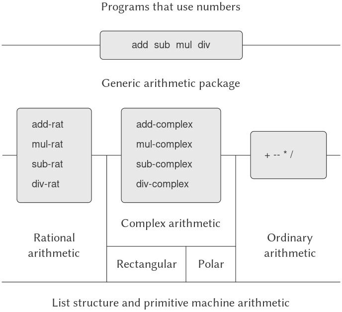
Figure 2.23: Generic arithmetic system.
2.5.1 Generic Arithmetic Operations
Nhiệm vụ thiết kế các generic arithmetic operations (phép toán số học tổng quát) tương tự như việc thiết kế các generic complex-number operations. Chúng ta muốn, chẳng hạn, có một generic addition procedure add hoạt động giống như phép cộng primitive + trên các số thường, giống như add-rat trên các số rational, và giống như add-complex trên các số complex. Chúng ta có thể cài đặt add và các phép toán số học tổng quát khác bằng cách theo cùng chiến lược mà chúng ta đã dùng ở mục 2.4.3 để cài đặt các generic selectors cho số complex. Chúng ta sẽ gắn một type tag (nhãn kiểu) cho mỗi loại số và khiến generic procedure phân phối (dispatch) đến package thích hợp tùy theo kiểu dữ liệu của các đối số.
Các generic arithmetic procedures được định nghĩa như sau:
(define (add x y) (apply-generic 'add x y))
(define (sub x y) (apply-generic 'sub x y))
(define (mul x y) (apply-generic 'mul x y))
(define (div x y) (apply-generic 'div x y))
Chúng ta bắt đầu bằng cách cài đặt một package để xử lý ordinary numbers, tức là các số primitive của ngôn ngữ. Chúng ta sẽ gắn nhãn cho chúng bằng ký hiệu scheme-number. Các phép toán số học trong package này là các primitive arithmetic procedures (vì vậy không cần định nghĩa thêm các thủ tục để xử lý các số không gắn nhãn). Vì các phép toán này mỗi phép nhận hai đối số, chúng được cài đặt trong bảng với khóa là danh sách (scheme-number scheme-number):
(define (install-scheme-number-package)
(define (tag x)
(attach-tag 'scheme-number x))
(put 'add '(scheme-number scheme-number)
(lambda (x y) (tag (+ x y))))
(put 'sub '(scheme-number scheme-number)
(lambda (x y) (tag (- x y))))
(put 'mul '(scheme-number scheme-number)
(lambda (x y) (tag (* x y))))
(put 'div '(scheme-number scheme-number)
(lambda (x y) (tag (/ x y))))
(put 'make 'scheme-number
(lambda (x) (tag x)))
'done)
Người dùng của Scheme-number package sẽ tạo ra các số thường (được gắn nhãn) thông qua procedure:
(define (make-scheme-number n)
((get 'make 'scheme-number) n))
Bây giờ khi khung sườn của hệ thống số học tổng quát đã sẵn sàng, chúng ta có thể dễ dàng bổ sung các loại số mới. Dưới đây là một package thực hiện số học rational. Hãy chú ý rằng, nhờ tính cộng gộp (additivity), chúng ta có thể sử dụng nguyên vẹn mã số học rational từ mục 2.1.1 làm các thủ tục nội bộ trong package:
(define (install-rational-package)
;; internal procedures
(define (numer x) (car x))
(define (denom x) (cdr x))
(define (make-rat n d)
(let ((g (gcd n d)))
(cons (/ n g) (/ d g))))
(define (add-rat x y)
(make-rat (+ (* (numer x) (denom y))
(* (numer y) (denom x)))
(* (denom x) (denom y))))
(define (sub-rat x y)
(make-rat (- (* (numer x) (denom y))
(* (numer y) (denom x)))
(* (denom x) (denom y))))
(define (mul-rat x y)
(make-rat (* (numer x) (numer y))
(* (denom x) (denom y))))
(define (div-rat x y)
(make-rat (* (numer x) (denom y))
(* (denom x) (numer y))))
;; interface to rest of the system
(define (tag x) (attach-tag 'rational x))
(put 'add '(rational rational)
(lambda (x y) (tag (add-rat x y))))
(put 'sub '(rational rational)
(lambda (x y) (tag (sub-rat x y))))
(put 'mul '(rational rational)
(lambda (x y) (tag (mul-rat x y))))
(put 'div '(rational rational)
(lambda (x y) (tag (div-rat x y))))
(put 'make 'rational
(lambda (n d) (tag (make-rat n d))))
'done)
(define (make-rational n d)
((get 'make 'rational) n d))
Chúng ta có thể cài đặt một package tương tự để xử lý số complex, sử dụng nhãn complex. Khi tạo package, chúng ta lấy từ bảng ra các phép toán make-from-real-imag và make-from-mag-ang đã được định nghĩa bởi các package rectangular và polar. Tính cộng gộp cho phép chúng ta sử dụng, như các phép toán nội bộ, cùng các procedure add-complex, sub-complex, mul-complex, và div-complex từ mục 2.4.1.
(define (install-complex-package)
;; imported procedures from rectangular
;; and polar packages
(define (make-from-real-imag x y)
((get 'make-from-real-imag
'rectangular)
x y))
(define (make-from-mag-ang r a)
((get 'make-from-mag-ang 'polar)
r a))
;; internal procedures
(define (add-complex z1 z2)
(make-from-real-imag
(+ (real-part z1) (real-part z2))
(+ (imag-part z1) (imag-part z2))))
(define (sub-complex z1 z2)
(make-from-real-imag
(- (real-part z1) (real-part z2))
(- (imag-part z1) (imag-part z2))))
(define (mul-complex z1 z2)
(make-from-mag-ang
(* (magnitude z1) (magnitude z2))
(+ (angle z1) (angle z2))))
(define (div-complex z1 z2)
(make-from-mag-ang
(/ (magnitude z1) (magnitude z2))
(- (angle z1) (angle z2))))
;; interface to rest of the system
(define (tag z) (attach-tag 'complex z))
(put 'add '(complex complex)
(lambda (z1 z2)
(tag (add-complex z1 z2))))
(put 'sub '(complex complex)
(lambda (z1 z2)
(tag (sub-complex z1 z2))))
(put 'mul '(complex complex)
(lambda (z1 z2)
(tag (mul-complex z1 z2))))
(put 'div '(complex complex)
(lambda (z1 z2)
(tag (div-complex z1 z2))))
(put 'make-from-real-imag 'complex
(lambda (x y)
(tag (make-from-real-imag x y))))
(put 'make-from-mag-ang 'complex
(lambda (r a)
(tag (make-from-mag-ang r a))))
'done)
Các chương trình bên ngoài complex-number package có thể tạo số complex từ các phần real và imaginary hoặc từ magnitude và angle. Hãy chú ý cách các procedures (thủ tục) nền tảng, vốn được định nghĩa ban đầu trong các package rectangular và polar, được export sang complex package, và từ đó export ra thế giới bên ngoài.
(define (make-complex-from-real-imag x y)
((get 'make-from-real-imag 'complex) x y))
(define (make-complex-from-mag-ang r a)
((get 'make-from-mag-ang 'complex) r a))
Những gì chúng ta có ở đây là một hệ thống tag (nhãn) hai cấp. Một số complex điển hình, chẳng hạn như $3 + 4i$ ở dạng rectangular, sẽ được biểu diễn như trong Hình 2.24. Tag bên ngoài (complex) được dùng để điều hướng số này đến complex package. Khi đã ở trong complex package, tag tiếp theo (rectangular) được dùng để điều hướng số này đến rectangular package. Trong một hệ thống lớn và phức tạp, có thể tồn tại nhiều cấp độ, mỗi cấp được kết nối với cấp tiếp theo thông qua các generic operations (toán tử tổng quát). Khi một đối tượng dữ liệu được truyền “xuống dưới”, tag bên ngoài được dùng để điều hướng nó đến package thích hợp sẽ bị loại bỏ (bằng cách áp dụng contents), và cấp tag tiếp theo (nếu có) sẽ trở nên hiển thị để được sử dụng cho việc phân phối (dispatch) tiếp theo.

Figure 2.24: Representation of $3 + 4i$ in rectangular form.
Trong các package ở trên, chúng ta đã sử dụng add-rat, add-complex và các arithmetic procedures khác chính xác như khi được viết ban đầu. Tuy nhiên, khi các định nghĩa này trở thành nội bộ của các installation procedures khác nhau, chúng không còn cần những tên khác biệt nhau nữa: chúng ta có thể đơn giản đặt tên chúng là add, sub, mul, và div trong cả hai package.
2.5.2 Combining Data of Different Types
Chúng ta đã thấy cách định nghĩa một hệ thống số học thống nhất bao gồm ordinary numbers, complex numbers, rational numbers, và bất kỳ loại số nào khác mà chúng ta có thể nghĩ ra, nhưng chúng ta đã bỏ qua một vấn đề quan trọng. Các phép toán mà chúng ta đã định nghĩa cho đến nay xử lý các kiểu dữ liệu khác nhau như thể chúng hoàn toàn độc lập. Do đó, có các package riêng biệt để cộng, chẳng hạn, hai ordinary numbers hoặc hai complex numbers. Điều mà chúng ta chưa xem xét là thực tế rằng việc định nghĩa các phép toán vượt qua ranh giới kiểu dữ liệu là có ý nghĩa, chẳng hạn như cộng một complex number với một ordinary number. Chúng ta đã rất cẩn trọng để đưa vào các rào chắn giữa các phần của chương trình để chúng có thể được phát triển và hiểu một cách riêng biệt. Chúng ta muốn giới thiệu các phép toán cross-type (giữa các kiểu) theo một cách được kiểm soát cẩn thận, để có thể hỗ trợ chúng mà không vi phạm nghiêm trọng các ranh giới module của chúng ta.
Một cách để xử lý các phép toán cross-type là thiết kế một procedure khác nhau cho mỗi tổ hợp kiểu có thể mà phép toán đó hợp lệ. Ví dụ, chúng ta có thể mở rộng complex-number package để nó cung cấp một procedure cho phép cộng complex numbers với ordinary numbers và cài đặt procedure này vào bảng bằng tag (complex scheme-number)1:
(define (add-complex-to-schemenum z x)
(make-from-real-imag (+ (real-part z) x)
(imag-part z)))
(put 'add
'(complex scheme-number)
(lambda (z x)
(tag (add-complex-to-schemenum z x))))
Kỹ thuật này hoạt động, nhưng nó cồng kềnh. Với một hệ thống như vậy, chi phí để giới thiệu một kiểu mới không chỉ là việc xây dựng package các procedures cho kiểu đó mà còn là việc xây dựng và cài đặt các procedures thực hiện các phép toán cross-type. Điều này có thể dễ dàng tạo ra nhiều mã hơn so với việc định nghĩa các phép toán trên chính kiểu dữ liệu đó. Phương pháp này cũng làm suy yếu khả năng kết hợp các package riêng biệt một cách cộng gộp, hoặc ít nhất là hạn chế mức độ mà những người triển khai các package riêng lẻ cần phải tính đến các package khác. Chẳng hạn, trong ví dụ trên, có vẻ hợp lý khi xử lý các phép toán hỗn hợp giữa complex numbers và ordinary numbers nên là trách nhiệm của complex-number package. Tuy nhiên, việc kết hợp rational numbers và complex numbers có thể được thực hiện bởi complex package, bởi rational package, hoặc bởi một package thứ ba sử dụng các phép toán được trích xuất từ hai package này. Việc xây dựng các chính sách nhất quán về phân chia trách nhiệm giữa các package có thể là một nhiệm vụ quá sức trong việc thiết kế các hệ thống có nhiều package và nhiều phép toán cross-type.
Chúng ta cũng phải cung cấp một procedure gần như giống hệt để xử lý các kiểu (scheme-number complex).
Coercion
Trong tình huống tổng quát khi các operations (phép toán) hoàn toàn không liên quan tác động lên các types (kiểu dữ liệu) hoàn toàn không liên quan, việc cài đặt các explicit cross-type operations (phép toán tường minh giữa các kiểu), dù cồng kềnh, vẫn là điều tốt nhất mà ta có thể hy vọng. May mắn thay, chúng ta thường có thể làm tốt hơn bằng cách tận dụng cấu trúc bổ sung có thể tiềm ẩn trong hệ thống kiểu của mình. Thường thì các data types khác nhau không hoàn toàn độc lập, và có thể tồn tại những cách để các đối tượng của một kiểu được xem như thuộc về một kiểu khác. Quá trình này được gọi là coercion (ép kiểu). Ví dụ, nếu chúng ta được yêu cầu kết hợp số học giữa một ordinary number và một complex number, ta có thể xem ordinary number đó như một complex number có phần imaginary bằng 0. Điều này biến vấn đề thành việc kết hợp hai complex numbers, vốn có thể được xử lý theo cách thông thường bởi complex-arithmetic package.
Nói chung, chúng ta có thể hiện thực ý tưởng này bằng cách thiết kế các coercion procedures (thủ tục ép kiểu) để biến đổi một đối tượng của kiểu này thành một đối tượng tương đương của kiểu khác. Dưới đây là một coercion procedure điển hình, biến đổi một ordinary number đã cho thành một complex number có phần real đó và phần imaginary bằng 0:
(define (scheme-number->complex n)
(make-complex-from-real-imag
(contents n) 0))
Chúng ta cài đặt các coercion procedures này vào một coercion table (bảng ép kiểu) đặc biệt, được đánh chỉ mục theo tên của hai kiểu:
(put-coercion 'scheme-number 'complex
scheme-number->complex)
(Chúng ta giả định rằng có các procedures put-coercion và get-coercion sẵn có để thao tác với bảng này.) Thông thường, một số ô trong bảng sẽ trống, vì không phải lúc nào cũng có thể ép một đối tượng dữ liệu bất kỳ của mỗi kiểu sang tất cả các kiểu khác. Ví dụ, không có cách nào để ép một complex number bất kỳ thành một ordinary number, vì vậy sẽ không có procedure complex->scheme-number tổng quát nào được đưa vào bảng.
Khi coercion table đã được thiết lập, chúng ta có thể xử lý coercion một cách thống nhất bằng cách sửa đổi procedure apply-generic ở mục 2.4.3. Khi được yêu cầu áp dụng một phép toán, trước tiên chúng ta kiểm tra xem phép toán đó có được định nghĩa cho các kiểu của đối số hay không, giống như trước đây. Nếu có, ta phân phối (dispatch) đến procedure tìm thấy trong operation-and-type table. Nếu không, ta thử coercion. Để đơn giản, ta chỉ xét trường hợp có hai đối số2. Ta kiểm tra coercion table để xem các đối tượng của kiểu thứ nhất có thể ép sang kiểu thứ hai hay không. Nếu có, ta ép đối số thứ nhất và thử lại phép toán. Nếu các đối tượng của kiểu thứ nhất không thể ép sang kiểu thứ hai, ta thử ép theo chiều ngược lại để xem có thể ép đối số thứ hai sang kiểu của đối số thứ nhất hay không. Cuối cùng, nếu không có cách nào đã biết để ép một trong hai kiểu sang kiểu còn lại, ta bỏ cuộc. Dưới đây là procedure:
(define (apply-generic op . args)
(let ((type-tags (map type-tag args)))
(let ((proc (get op type-tags)))
(if proc
(apply proc (map contents args))
(if (= (length args) 2)
(let ((type1 (car type-tags))
(type2 (cadr type-tags))
(a1 (car args))
(a2 (cadr args)))
(let ((t1->t2
(get-coercion type1
type2))
(t2->t1
(get-coercion type2
type1)))
(cond (t1->t2
(apply-generic
op (t1->t2 a1) a2))
(t2->t1
(apply-generic
op a1 (t2->t1 a2)))
(else
(error
"No method for
these types"
(list
op
type-tags))))))
(error
"No method for these types"
(list op type-tags)))))))
Cơ chế coercion này có nhiều ưu điểm so với phương pháp định nghĩa các explicit cross-type operations như đã trình bày ở trên. Mặc dù chúng ta vẫn cần viết các coercion procedures để liên kết các kiểu (có thể là $n^{2}$ procedures cho một hệ thống với $n$ kiểu), nhưng ta chỉ cần viết một procedure cho mỗi cặp kiểu thay vì một procedure khác nhau cho mỗi tập hợp kiểu và mỗi generic operation3. Điều chúng ta dựa vào ở đây là thực tế rằng phép biến đổi thích hợp giữa các kiểu chỉ phụ thuộc vào chính các kiểu đó, không phụ thuộc vào phép toán sẽ được áp dụng.
Mặt khác, có thể tồn tại những ứng dụng mà cơ chế coercion của chúng ta chưa đủ tổng quát. Ngay cả khi không thể chuyển đổi một trong hai đối tượng cần kết hợp sang kiểu của đối tượng kia, vẫn có thể thực hiện phép toán bằng cách chuyển đổi cả hai đối tượng sang một kiểu thứ ba. Để xử lý sự phức tạp như vậy mà vẫn duy trì tính module trong các chương trình, thường cần xây dựng các hệ thống tận dụng thêm cấu trúc trong mối quan hệ giữa các kiểu, như chúng ta sẽ thảo luận tiếp theo.
Xem Bài tập 2.82 để biết các khái quát hóa.
3: Nếu chúng ta khéo léo, thường có thể chỉ cần ít hơn $n^{2}$ coercion procedures. Ví dụ, nếu ta biết cách chuyển đổi từ type 1 sang type 2 và từ type 2 sang type 3, thì ta có thể dùng kiến thức này để chuyển đổi từ type 1 sang type 3. Điều này có thể giảm đáng kể số lượng coercion procedures cần cung cấp tường minh khi thêm một kiểu mới vào hệ thống. Nếu chúng ta sẵn sàng xây dựng mức độ tinh vi cần thiết vào hệ thống, ta có thể để hệ thống tìm kiếm “đồ thị” quan hệ giữa các kiểu và tự động tạo ra các coercion procedures có thể suy ra từ những cái được cung cấp tường minh.
Hierarchies of types
Cơ chế coercion (ép kiểu) được trình bày ở trên dựa vào sự tồn tại của các mối quan hệ tự nhiên giữa các cặp types (kiểu dữ liệu). Thường thì tồn tại nhiều cấu trúc “toàn cục” hơn trong cách các types khác nhau liên hệ với nhau. Ví dụ, giả sử chúng ta đang xây dựng một generic arithmetic system (hệ thống số học tổng quát) để xử lý integers, rational numbers, real numbers, và complex numbers. Trong một hệ thống như vậy, việc coi một integer như một dạng đặc biệt của rational number là điều hoàn toàn tự nhiên, và rational number lại là một dạng đặc biệt của real number, và real number lại là một dạng đặc biệt của complex number. Thực chất, chúng ta có một cái gọi là hierarchy of types (phân cấp kiểu), trong đó, ví dụ, integers là một subtype (kiểu con) của rational numbers (tức là bất kỳ phép toán nào có thể áp dụng cho một rational number thì cũng có thể tự động áp dụng cho một integer). Ngược lại, ta nói rằng rational numbers tạo thành một supertype (kiểu cha) của integers. Cấu trúc phân cấp cụ thể mà chúng ta có ở đây thuộc loại rất đơn giản, trong đó mỗi type có nhiều nhất một supertype và nhiều nhất một subtype. Một cấu trúc như vậy, được gọi là tower (tháp), được minh họa trong Hình 2.25.

Figure 2.25: A tower of types.
Nếu chúng ta có một cấu trúc tower, thì có thể đơn giản hóa đáng kể vấn đề thêm một type mới vào phân cấp, vì ta chỉ cần chỉ ra cách type mới được nhúng vào supertype kế tiếp phía trên nó và cách nó là supertype của type phía dưới nó. Ví dụ, nếu ta muốn cộng một integer với một complex number, ta không cần định nghĩa tường minh một coercion procedure đặc biệt integer->complex. Thay vào đó, ta định nghĩa cách một integer có thể được biến đổi thành một rational number, cách một rational number được biến đổi thành một real number, và cách một real number được biến đổi thành một complex number. Sau đó, ta để hệ thống biến đổi integer thành complex number thông qua các bước này và rồi cộng hai complex numbers.
Chúng ta có thể thiết kế lại procedure apply-generic theo cách sau: Với mỗi type, ta cần cung cấp một raise procedure, thủ tục “nâng” các đối tượng của type đó lên một cấp trong tower. Khi hệ thống cần thực hiện phép toán trên các đối tượng thuộc các types khác nhau, nó có thể lần lượt nâng các type thấp hơn cho đến khi tất cả các đối tượng ở cùng một cấp trong tower. (Exercise 2.83 và Exercise 2.84 đề cập chi tiết việc hiện thực chiến lược này.)
Một ưu điểm khác của tower là ta có thể dễ dàng hiện thực khái niệm rằng mọi type “kế thừa” tất cả các phép toán được định nghĩa trên supertype của nó. Ví dụ, nếu ta không cung cấp một procedure đặc biệt để tìm phần real của một integer, ta vẫn nên kỳ vọng rằng real-part sẽ được định nghĩa cho integers nhờ vào thực tế rằng integers là subtype của complex numbers. Trong một tower, ta có thể sắp xếp để điều này xảy ra một cách thống nhất bằng cách sửa đổi apply-generic. Nếu phép toán yêu cầu không được định nghĩa trực tiếp cho type của đối tượng đã cho, ta nâng đối tượng đó lên supertype của nó và thử lại. Như vậy, ta “leo” lên tower, biến đổi đối số khi đi, cho đến khi hoặc tìm được một cấp mà phép toán mong muốn có thể thực hiện, hoặc chạm đỉnh (trong trường hợp đó thì bỏ cuộc).
Một ưu điểm nữa của tower so với một hierarchy tổng quát hơn là nó cho ta một cách đơn giản để “hạ” một đối tượng dữ liệu xuống dạng biểu diễn đơn giản nhất. Ví dụ, nếu ta cộng $2 + 3i$ với $4 - 3i$, sẽ thật tốt nếu nhận được kết quả là integer 6 thay vì complex number $6 + 0i$. Bài tập 2.85 thảo luận một cách để hiện thực phép hạ này. (Mẹo ở đây là ta cần một cách tổng quát để phân biệt những đối tượng có thể hạ, như $6 + 0i$, với những đối tượng không thể, như $6 + 2i$.)
Inadequacies of hierarchies
Nếu các data types trong hệ thống của ta có thể được sắp xếp tự nhiên thành một tower, điều này sẽ đơn giản hóa rất nhiều vấn đề xử lý generic operations trên các types khác nhau, như ta đã thấy. Thật không may, điều này thường không xảy ra. Hình 2.26 minh họa một cách sắp xếp phức tạp hơn của các types hỗn hợp, thể hiện mối quan hệ giữa các loại hình học khác nhau. Ta thấy rằng, nói chung, một type có thể có nhiều hơn một subtype. Ví dụ, triangles và quadrilaterals đều là subtypes của polygons. Ngoài ra, một type có thể có nhiều hơn một supertype. Ví dụ, một isosceles right triangle có thể được coi là một isosceles triangle hoặc là một right triangle. Vấn đề multiple-supertypes (nhiều kiểu cha) này đặc biệt nan giải, vì nó có nghĩa là không có cách duy nhất để “nâng” một type trong hierarchy. Việc tìm “đúng” supertype để áp dụng một phép toán cho một đối tượng có thể đòi hỏi phải tìm kiếm đáng kể trong toàn bộ mạng lưới types bởi một procedure như apply-generic. Vì thường tồn tại nhiều subtypes cho một type, nên cũng có vấn đề tương tự khi ép một giá trị “xuống” trong type hierarchy. Xử lý số lượng lớn các types có liên hệ với nhau trong khi vẫn duy trì tính module trong thiết kế các hệ thống lớn là rất khó, và đây là một lĩnh vực đang được nghiên cứu nhiều hiện nay4.
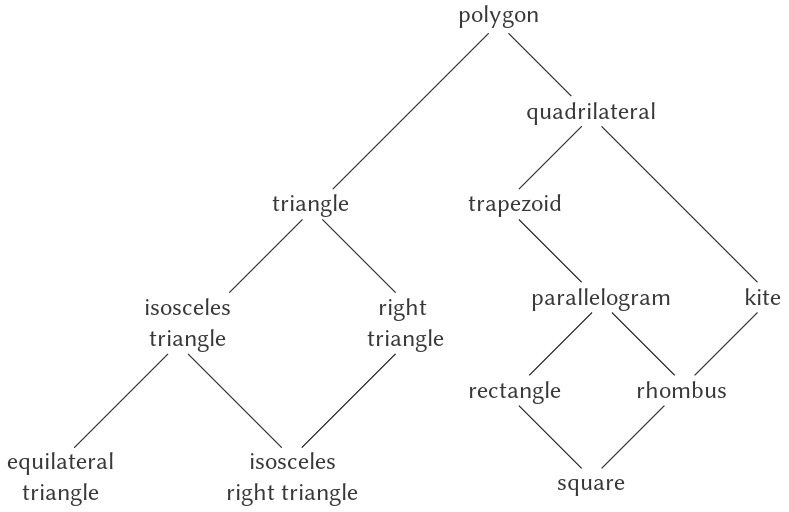
Figure 2.26: Relations among types of geometric figures.
Nhận định này, vốn cũng xuất hiện trong ấn bản đầu tiên của cuốn sách này, vẫn đúng như khi chúng tôi viết nó mười hai năm trước. Việc phát triển một khuôn khổ tổng quát, hữu ích để biểu diễn các mối quan hệ giữa các loại thực thể khác nhau (mà các triết gia gọi là “ontology”) dường như khó có thể giải quyết được. Sự khác biệt chính giữa sự mơ hồ tồn tại mười năm trước và sự mơ hồ tồn tại hiện nay là hiện nay nhiều lý thuyết ontology không đầy đủ đã được hiện thực hóa trong vô số ngôn ngữ lập trình cũng không đầy đủ tương ứng. Ví dụ, phần lớn sự phức tạp của các ngôn ngữ lập trình hướng đối tượng — và những khác biệt tinh vi, gây nhầm lẫn giữa các ngôn ngữ hướng đối tượng đương đại — tập trung vào cách xử lý generic operations trên các types có liên hệ với nhau. Phần thảo luận của chúng tôi về computational objects trong Chương 3 hoàn toàn tránh các vấn đề này. Những độc giả quen thuộc với lập trình hướng đối tượng sẽ nhận thấy rằng chúng tôi có nhiều điều để nói trong Chương 3 về local state, nhưng chúng tôi thậm chí không đề cập đến “classes” hay “inheritance”. Thực tế, chúng tôi nghi ngờ rằng những vấn đề này không thể được giải quyết thỏa đáng chỉ bằng thiết kế ngôn ngữ máy tính, nếu không đồng thời dựa vào các nghiên cứu về biểu diễn tri thức và suy luận tự động.
2.5.3 Ví dụ: Symbolic Algebra (Đại số ký hiệu)
Việc thao tác các biểu thức đại số ký hiệu là một quá trình phức tạp, minh họa nhiều vấn đề khó khăn nhất thường gặp trong thiết kế các hệ thống quy mô lớn. Một biểu thức đại số, nói chung, có thể được xem như một cấu trúc phân cấp, một cây các toán tử áp dụng lên các toán hạng. Chúng ta có thể xây dựng các biểu thức đại số bằng cách bắt đầu với một tập hợp các đối tượng primitive (nguyên thủy), chẳng hạn như hằng số và biến, và kết hợp chúng thông qua các toán tử đại số như cộng và nhân. Giống như trong các ngôn ngữ khác, chúng ta hình thành các abstraction (trừu tượng hóa) cho phép tham chiếu đến các đối tượng phức hợp bằng những thuật ngữ đơn giản. Các abstraction điển hình trong symbolic algebra là các khái niệm như linear combination (tổ hợp tuyến tính), polynomial (đa thức), rational function (hàm hữu tỉ), hoặc trigonometric function (hàm lượng giác). Chúng ta có thể coi chúng như những “kiểu” phức hợp, thường hữu ích để định hướng việc xử lý các biểu thức. Ví dụ, chúng ta có thể mô tả biểu thức
$${x^{2}\sin(y^{2} + 1)} + {x\cos 2y} + {\cos(y^{3} - 2y^{2})}$$
như một polynomial theo $x$ với các hệ số là các trigonometric functions của các polynomial theo $y$ mà các hệ số là integers.
Chúng ta sẽ không cố gắng phát triển một hệ thống xử lý đại số hoàn chỉnh ở đây. Những hệ thống như vậy là các chương trình cực kỳ phức tạp, chứa đựng kiến thức đại số sâu sắc và các thuật toán tinh tế. Điều chúng ta sẽ làm là xem xét một phần đơn giản nhưng quan trọng của việc xử lý đại số: số học của polynomials. Chúng ta sẽ minh họa các loại quyết định mà người thiết kế một hệ thống như vậy phải đối mặt, và cách áp dụng các ý tưởng về abstract data (dữ liệu trừu tượng) và generic operations (toán tử tổng quát) để giúp tổ chức công việc này.
Arithmetic on polynomials
Nhiệm vụ đầu tiên trong việc thiết kế một hệ thống thực hiện số học trên polynomials là quyết định chính xác polynomial là gì. Polynomials thường được định nghĩa liên quan đến một số biến nhất định (các indeterminates của polynomial). Để đơn giản, chúng ta sẽ giới hạn ở các polynomial chỉ có một indeterminate (univariate polynomials)5. Chúng ta sẽ định nghĩa một polynomial là tổng của các term (hạng tử), mỗi hạng tử hoặc là một coefficient (hệ số), một lũy thừa của indeterminate, hoặc một tích của một coefficient và một lũy thừa của indeterminate. Một coefficient được định nghĩa là một biểu thức đại số không phụ thuộc vào indeterminate của polynomial. Ví dụ:
Mặt khác, chúng ta sẽ cho phép các polynomial có hệ số của chúng cũng là polynomial theo các biến khác. Điều này sẽ mang lại cho chúng ta sức mạnh biểu diễn tương đương với một hệ thống đa biến đầy đủ, mặc dù nó dẫn đến các vấn đề coercion (ép kiểu) như sẽ thảo luận bên dưới.
$${5x^{2}} + {3x} + 7$$
là một polynomial đơn giản theo $x$, và
$${(y^{2} + 1)x^{3}} + {(2y)x + 1}$$
là một polynomial theo $x$ mà các hệ số là các polynomial theo $y$.
Ngay từ đây, chúng ta đã chạm tới một số vấn đề nan giải. Liệu polynomial đầu tiên có giống với polynomial $5y^{2} + 3y + 7$ hay không? Một câu trả lời hợp lý có thể là “có, nếu chúng ta coi polynomial thuần túy như một hàm toán học, nhưng không, nếu chúng ta coi polynomial là một dạng cú pháp.” Polynomial thứ hai về mặt đại số tương đương với một polynomial theo $y$ mà các hệ số là các polynomial theo $x$. Hệ thống của chúng ta có nên nhận ra điều này hay không? Hơn nữa, còn có những cách khác để biểu diễn một polynomial — ví dụ, như một tích của các nhân tử, hoặc (đối với univariate polynomial) như tập hợp các nghiệm, hoặc như một danh sách các giá trị của polynomial tại một tập hợp điểm xác định 6. Chúng ta có thể xử lý khéo léo các câu hỏi này bằng cách quyết định rằng trong hệ thống xử lý đại số của mình, một “polynomial” sẽ là một dạng cú pháp cụ thể, không phải ý nghĩa toán học cơ bản của nó.
Đối với univariate polynomials, việc cho giá trị của một polynomial tại một tập hợp điểm nhất định có thể là một cách biểu diễn đặc biệt tốt. Điều này làm cho số học polynomial trở nên cực kỳ đơn giản. Để lấy, ví dụ, tổng của hai polynomial được biểu diễn theo cách này, chúng ta chỉ cần cộng các giá trị của chúng tại các điểm tương ứng. Để chuyển lại về dạng biểu diễn quen thuộc hơn, chúng ta có thể sử dụng công thức nội suy Lagrange, công thức này cho thấy cách khôi phục các hệ số của một polynomial bậc $n$ khi biết giá trị của nó tại $n + 1$ điểm.
Bây giờ, chúng ta phải xem xét cách thực hiện số học trên polynomials. Trong hệ thống đơn giản này, chúng ta sẽ chỉ xét phép cộng và phép nhân. Hơn nữa, chúng ta sẽ yêu cầu rằng hai polynomial được kết hợp phải có cùng một indeterminate.
Chúng ta sẽ tiếp cận việc thiết kế hệ thống bằng cách tuân theo nguyên tắc quen thuộc của data abstraction. Chúng ta sẽ biểu diễn polynomials bằng một cấu trúc dữ liệu gọi là poly, bao gồm một variable (biến) và một tập hợp các terms. Chúng ta giả định rằng có các selectors variable và term-list để trích xuất các phần đó từ một poly, và một constructor make-poly để tạo một poly từ một variable và một term list đã cho. Một variable sẽ chỉ là một symbol, vì vậy chúng ta có thể sử dụng procedure same-variable? ở mục 2.3.2 để so sánh các biến. Các procedure sau đây định nghĩa phép cộng và phép nhân của polys:
(define (add-poly p1 p2)
(if (same-variable? (variable p1)
(variable p2))
(make-poly
(variable p1)
(add-terms (term-list p1)
(term-list p2)))
(error "Polys not in same var:
ADD-POLY"
(list p1 p2))))
(define (mul-poly p1 p2)
(if (same-variable? (variable p1)
(variable p2))
(make-poly
(variable p1)
(mul-terms (term-list p1)
(term-list p2)))
(error "Polys not in same var:
MUL-POLY"
(list p1 p2))))
Để tích hợp polynomials vào generic arithmetic system của chúng ta, chúng ta cần gắn cho chúng type tag. Chúng ta sẽ dùng tag polynomial, và cài đặt các phép toán thích hợp trên các polynomial đã gắn tag này vào operation table. Chúng ta sẽ đặt toàn bộ mã vào một installation procedure cho polynomial package, tương tự như các package ở mục 2.5.1:
(define (install-polynomial-package)
;; internal procedures
;; representation of poly
(define (make-poly variable term-list)
(cons variable term-list))
(define (variable p) (car p))
(define (term-list p) (cdr p))
⟨procedures same-variable?
and variable? from section 2.3.2⟩
;; representation of terms and term lists
⟨procedures adjoin-term … coeff
from text below⟩
(define (add-poly p1 p2) …)
⟨procedures used by add-poly⟩
(define (mul-poly p1 p2) …)
⟨procedures used by mul-poly⟩
;; interface to rest of the system
(define (tag p) (attach-tag 'polynomial p))
(put 'add '(polynomial polynomial)
(lambda (p1 p2)
(tag (add-poly p1 p2))))
(put 'mul '(polynomial polynomial)
(lambda (p1 p2)
(tag (mul-poly p1 p2))))
(put 'make 'polynomial
(lambda (var terms)
(tag (make-poly var terms))))
'done)
Phép cộng polynomial được thực hiện theo từng term (hạng tử). Các term có cùng bậc (tức là cùng lũy thừa của indeterminate) phải được kết hợp. Điều này được thực hiện bằng cách tạo ra một term mới có cùng bậc, với hệ số bằng tổng các hệ số của các số hạng được cộng. Các term trong một số hạng mà không có term cùng bậc trong số hạng còn lại sẽ được giữ nguyên và cộng dồn vào polynomial tổng đang được xây dựng.
Để thao tác với các term list (danh sách hạng tử), chúng ta giả định rằng có một constructor (hàm tạo) the-empty-termlist trả về một term list rỗng và một constructor adjoin-term để nối thêm một term mới vào một term list. Chúng ta cũng giả định rằng có một predicate (hàm điều kiện) empty-termlist? để kiểm tra một term list cho trước có rỗng hay không, một selector (hàm chọn) first-term để lấy term có bậc cao nhất từ một term list, và một selector rest-terms để trả về tất cả các term trừ term có bậc cao nhất. Để thao tác với các term, chúng ta giả định rằng có một constructor make-term để tạo một term với bậc và hệ số cho trước, và các selector order và coeff lần lượt trả về bậc và hệ số của term. Các thao tác này cho phép chúng ta coi cả term và term list như các data abstraction (dữ liệu trừu tượng), với phần biểu diễn cụ thể có thể được xử lý riêng biệt.
Dưới đây là procedure (thủ tục) tạo term list cho tổng của hai polynomial7
Thao tác này rất giống với phép union-set có thứ tự mà chúng ta đã phát triển trong Bài tập 2.62. Thực tế, nếu coi các term của polynomial như một tập hợp được sắp xếp theo lũy thừa của indeterminate, thì chương trình tạo term list cho một tổng gần như giống hệt union-set.
(define (add-terms L1 L2)
(cond ((empty-termlist? L1) L2)
((empty-termlist? L2) L1)
(else
(let ((t1 (first-term L1))
(t2 (first-term L2)))
(cond ((> (order t1) (order t2))
(adjoin-term
t1
(add-terms (rest-terms L1)
L2)))
((< (order t1) (order t2))
(adjoin-term
t2
(add-terms
L1
(rest-terms L2))))
(else
(adjoin-term
(make-term
(order t1)
(add (coeff t1)
(coeff t2)))
(add-terms
(rest-terms L1)
(rest-terms L2)))))))))
Điểm quan trọng nhất cần lưu ý ở đây là chúng ta đã sử dụng generic addition procedure add để cộng các hệ số của các term được kết hợp. Điều này có những hệ quả mạnh mẽ, như chúng ta sẽ thấy bên dưới.
Để nhân hai term list, chúng ta nhân mỗi term của danh sách thứ nhất với tất cả các term của danh sách còn lại, lặp lại việc sử dụng mul-term-by-all-terms, thủ tục này nhân một term cho trước với tất cả các term trong một term list cho trước. Các term list kết quả (một cho mỗi term của danh sách thứ nhất) sẽ được cộng dồn lại. Việc nhân hai term tạo ra một term có bậc bằng tổng bậc của các thừa số và hệ số bằng tích các hệ số của các thừa số:
(define (mul-terms L1 L2)
(if (empty-termlist? L1)
(the-empty-termlist)
(add-terms
(mul-term-by-all-terms
(first-term L1) L2)
(mul-terms (rest-terms L1) L2))))
(define (mul-term-by-all-terms t1 L)
(if (empty-termlist? L)
(the-empty-termlist)
(let ((t2 (first-term L)))
(adjoin-term
(make-term
(+ (order t1) (order t2))
(mul (coeff t1) (coeff t2)))
(mul-term-by-all-terms
t1
(rest-terms L))))))
Thực tế, đây là toàn bộ những gì cần thiết cho phép cộng và phép nhân polynomial. Hãy chú ý rằng, vì chúng ta thao tác trên các term bằng các generic procedures add và mul, polynomial package của chúng ta tự động có khả năng xử lý bất kỳ loại hệ số nào mà generic arithmetic package biết đến. Nếu chúng ta bao gồm một cơ chế coercion như một trong các cơ chế đã thảo luận ở mục 2.5.2, thì chúng ta cũng tự động có thể xử lý các phép toán trên các polynomial có hệ số thuộc các kiểu khác nhau, chẳng hạn như
$${\lbrack 3x^{2} + (2 + 3i)x + 7\rbrack \cdot}{\left\lbrack x^{4} + \frac{2}{3}x^{2} + (5 + 3i) \right\rbrack.}$$
Bởi vì chúng ta đã cài đặt các procedure cộng và nhân polynomial add-poly và mul-poly vào generic arithmetic system như là các phép toán add và mul cho type polynomial, hệ thống của chúng ta cũng tự động có thể xử lý các phép toán polynomial như
$${\lbrack(y + 1)x^{2}} + {(y^{2} + 1)x} + {(y - 1)\rbrack \cdot}{\lbrack(y - 2)x} + {(y^{3} + 7)\rbrack.}$$
Lý do là khi hệ thống cố gắng kết hợp các hệ số, nó sẽ phân phối (dispatch) thông qua add và mul. Vì các hệ số này bản thân chúng là các polynomial (theo $y$), chúng sẽ được kết hợp bằng add-poly và mul-poly. Kết quả là một dạng “data-directed recursion” (đệ quy điều khiển theo dữ liệu), trong đó, ví dụ, một lời gọi mul-poly sẽ dẫn đến các lời gọi đệ quy mul-poly để nhân các hệ số. Nếu các hệ số của các hệ số này lại là các polynomial (như có thể dùng để biểu diễn polynomial ba biến), cơ chế điều khiển theo dữ liệu sẽ đảm bảo hệ thống tiếp tục thực hiện thêm một cấp độ lời gọi đệ quy nữa, và cứ thế tiếp tục qua nhiều cấp độ tùy theo cấu trúc dữ liệu quy định 8.
Để cơ chế này hoạt động hoàn toàn trơn tru, chúng ta cũng nên bổ sung vào generic arithmetic system khả năng ép một “number” thành một polynomial bằng cách coi nó như một polynomial bậc 0 với hệ số là số đó. Điều này là cần thiết nếu chúng ta muốn thực hiện các phép toán như $${\lbrack x^{2} + (y + 1)x + 5\rbrack} + {\lbrack x^{2} + 2x + 1\rbrack,}$$ mà yêu cầu cộng hệ số $y + 1$ với hệ số 2.
Representing term lists
Cuối cùng, chúng ta phải đối mặt với nhiệm vụ hiện thực một cách biểu diễn tốt cho term list (danh sách hạng tử). Về bản chất, một term list là một tập hợp các hệ số được đánh chỉ mục theo bậc của hạng tử. Do đó, bất kỳ phương pháp nào để biểu diễn tập hợp, như đã thảo luận ở mục 2.3.3, đều có thể áp dụng cho nhiệm vụ này. Mặt khác, các procedure (thủ tục) add-terms và mul-terms của chúng ta luôn truy cập term list theo thứ tự từ bậc cao nhất xuống bậc thấp nhất. Vì vậy, chúng ta sẽ sử dụng một dạng biểu diễn danh sách có thứ tự.
Chúng ta nên cấu trúc danh sách biểu diễn một term list như thế nào? Một yếu tố cần xem xét là “mật độ” của các polynomial mà chúng ta dự định thao tác. Một polynomial được gọi là dense (dày đặc) nếu nó có các hệ số khác 0 ở hầu hết các bậc. Nếu nó có nhiều hạng tử bằng 0 thì được gọi là sparse (thưa). Ví dụ:
$$A:\quad x^{5} + {2x^{4}} + {3x^{2}} - {2x} - 5$$
là một dense polynomial, trong khi
$$B:\quad x^{100} + {2x^{2}} + 1$$
là sparse.
Term list của các dense polynomial được biểu diễn hiệu quả nhất dưới dạng danh sách các hệ số. Ví dụ, $A$ ở trên có thể được biểu diễn gọn gàng là (1 2 0 3 -2 -5). Bậc của một hạng tử trong cách biểu diễn này là độ dài của danh sách con bắt đầu từ hệ số của hạng tử đó, trừ đi 19. Đây sẽ là một cách biểu diễn tồi cho một sparse polynomial như $B$: sẽ có một danh sách khổng lồ các số 0 xen kẽ với một vài hạng tử khác 0 đơn độc. Một cách biểu diễn hợp lý hơn cho term list của một sparse polynomial là dưới dạng danh sách các hạng tử khác 0, trong đó mỗi hạng tử là một danh sách chứa bậc của hạng tử và hệ số tương ứng. Theo cách này, polynomial $B$ được biểu diễn hiệu quả là ((100 1) (2 2) (0 1)). Vì hầu hết các phép toán polynomial được thực hiện trên sparse polynomial, chúng ta sẽ sử dụng phương pháp này. Chúng ta sẽ giả định rằng term list được biểu diễn dưới dạng danh sách các term, sắp xếp từ bậc cao nhất đến bậc thấp nhất. Khi đã đưa ra quyết định này, việc hiện thực các selector (hàm chọn) và constructor (hàm tạo) cho term và term list trở nên đơn giản10.
Trong các ví dụ polynomial này, chúng ta giả định rằng đã hiện thực generic arithmetic system bằng cơ chế type (kiểu) được gợi ý trong Bài tập 2.78. Do đó, các hệ số là ordinary numbers sẽ được biểu diễn trực tiếp dưới dạng số, thay vì dưới dạng cặp mà car là ký hiệu scheme-number.
10: Mặc dù chúng ta giả định rằng term list là có thứ tự, chúng ta đã hiện thực adjoin-term chỉ đơn giản là cons term mới vào term list hiện có. Chúng ta có thể làm như vậy miễn là đảm bảo rằng các procedure (chẳng hạn như add-terms) sử dụng adjoin-term luôn gọi nó với một term có bậc cao hơn bất kỳ term nào trong danh sách. Nếu không muốn đưa ra đảm bảo này, chúng ta có thể hiện thực adjoin-term tương tự như constructor adjoin-set cho biểu diễn tập hợp bằng danh sách có thứ tự (Bài tập 2.61).
(define (adjoin-term term term-list)
(if (=zero? (coeff term))
term-list
(cons term term-list)))
(define (the-empty-termlist) '())
(define (first-term term-list) (car term-list))
(define (rest-terms term-list) (cdr term-list))
(define (empty-termlist? term-list)
(null? term-list))
(define (make-term order coeff)
(list order coeff))
(define (order term) (car term))
(define (coeff term) (cadr term))
trong đó =zero? được định nghĩa trong Bài tập 2.80. (Xem thêm Bài tập 2.87 bên dưới.)
Người dùng của polynomial package sẽ tạo các polynomial (được gắn nhãn) thông qua procedure:
(define (make-polynomial var terms)
((get 'make 'polynomial) var terms))
Hierarchies of types in symbolic algebra
Hệ thống polynomial của chúng ta minh họa cách các đối tượng của một type (polynomial) thực chất có thể là các đối tượng phức hợp chứa các đối tượng thuộc nhiều type khác nhau. Điều này không gây khó khăn thực sự trong việc định nghĩa generic operations. Chúng ta chỉ cần cài đặt các generic operations thích hợp để thực hiện các thao tác cần thiết trên các thành phần của các compound types (kiểu phức hợp). Thực tế, chúng ta đã thấy rằng polynomial tạo thành một dạng “recursive data abstraction” (trừu tượng dữ liệu đệ quy), trong đó các thành phần của một polynomial có thể bản thân chúng cũng là polynomial. Các generic operations và phong cách lập trình data-directed (điều khiển theo dữ liệu) của chúng ta có thể xử lý sự phức tạp này mà không gặp nhiều khó khăn.
Mặt khác, đại số polynomial là một hệ thống mà các data types không thể được sắp xếp tự nhiên thành một tower (tháp). Ví dụ, có thể tồn tại các polynomial theo $x$ mà hệ số của chúng là các polynomial theo $y$. Cũng có thể tồn tại các polynomial theo $y$ mà hệ số của chúng là các polynomial theo $x$. Không có type nào trong hai loại này “nằm trên” loại kia theo cách tự nhiên, nhưng thường cần cộng các phần tử từ mỗi tập hợp này. Có một số cách để làm điều đó. Một khả năng là chuyển đổi một polynomial sang type của polynomial kia bằng cách khai triển và sắp xếp lại các term sao cho cả hai polynomial có cùng biến chính. Người ta có thể áp đặt một cấu trúc giống tower bằng cách sắp xếp thứ tự các biến và do đó luôn chuyển đổi bất kỳ polynomial nào sang “canonical form” (dạng chuẩn) với biến có độ ưu tiên cao nhất ở vị trí chi phối và các biến có độ ưu tiên thấp hơn nằm trong các hệ số. Chiến lược này hoạt động khá tốt, ngoại trừ việc chuyển đổi có thể làm khai triển polynomial một cách không cần thiết, khiến nó khó đọc và có thể kém hiệu quả hơn khi xử lý. Chiến lược tower chắc chắn không tự nhiên cho miền này hoặc cho bất kỳ miền nào mà người dùng có thể tạo ra các type mới một cách động bằng cách sử dụng các type cũ trong nhiều dạng kết hợp khác nhau, chẳng hạn như trigonometric functions, power series, và integrals.
Không có gì ngạc nhiên khi việc kiểm soát coercion (ép kiểu) là một vấn đề nghiêm trọng trong thiết kế các hệ thống xử lý đại số quy mô lớn. Phần lớn sự phức tạp của các hệ thống như vậy liên quan đến các mối quan hệ giữa nhiều loại type khác nhau. Thật vậy, có thể nói rằng chúng ta vẫn chưa hoàn toàn hiểu coercion. Thực tế, chúng ta vẫn chưa hoàn toàn hiểu khái niệm data type. Tuy nhiên, những gì chúng ta biết mang lại cho chúng ta các nguyên tắc mạnh mẽ về cấu trúc và tính module để hỗ trợ thiết kế các hệ thống lớn.
Extended exercise: Rational functions
Chúng ta có thể mở rộng generic arithmetic system để bao gồm rational functions (hàm hữu tỉ). Đây là các “phân số” mà tử số và mẫu số là các polynomial, chẳng hạn như
$$\frac{x + 1}{x^{3} - 1}.$$
Hệ thống cần có khả năng cộng, trừ, nhân và chia các rational functions, và thực hiện các phép tính như
$$\frac{x + 1}{x^{3} - 1} + \frac{x}{x^{2} - 1}, = ,{\frac{x^{3} + 2x^{2} + 3x + 1}{x^{4} + x^{3} - x - 1}.}$$
(Ở đây tổng đã được rút gọn bằng cách loại bỏ các nhân tử chung. Phép “nhân chéo” thông thường sẽ tạo ra một polynomial bậc bốn trên một polynomial bậc năm.)
Nếu chúng ta sửa đổi rational-arithmetic package để nó sử dụng generic operations, thì nó sẽ thực hiện được những gì chúng ta muốn, ngoại trừ vấn đề rút gọn phân số về dạng tối giản.
3.1 Assignment và Local State
Thông thường, chúng ta nhìn nhận thế giới như được tạo thành từ các đối tượng độc lập, mỗi đối tượng có một trạng thái thay đổi theo thời gian. Một đối tượng được cho là “có state (trạng thái)” nếu hành vi của nó bị ảnh hưởng bởi lịch sử của nó. Ví dụ, một tài khoản ngân hàng có state ở chỗ câu trả lời cho câu hỏi “Tôi có thể rút $100 không?” phụ thuộc vào lịch sử các giao dịch gửi và rút tiền. Chúng ta có thể đặc trưng hóa state của một đối tượng bằng một hoặc nhiều state variables (biến trạng thái), mà giữa chúng lưu giữ đủ thông tin về lịch sử để xác định hành vi hiện tại của đối tượng. Trong một hệ thống ngân hàng đơn giản, chúng ta có thể đặc trưng hóa state của một tài khoản bằng số dư hiện tại thay vì phải ghi nhớ toàn bộ lịch sử giao dịch của tài khoản.
Trong một hệ thống gồm nhiều đối tượng, các đối tượng hiếm khi hoàn toàn độc lập. Mỗi đối tượng có thể ảnh hưởng đến state của các đối tượng khác thông qua các tương tác, vốn liên kết các state variables của một đối tượng với các state variables của đối tượng khác. Thật vậy, quan điểm cho rằng một hệ thống được tạo thành từ các đối tượng riêng biệt là hữu ích nhất khi các state variables của hệ thống có thể được nhóm thành các hệ con liên kết chặt chẽ với nhau nhưng chỉ liên kết lỏng lẻo với các hệ con khác.
Cách nhìn này về một hệ thống có thể là một khuôn khổ mạnh mẽ để tổ chức các mô hình tính toán của hệ thống. Để một mô hình như vậy có tính modular (mô-đun), nó nên được phân tách thành các computational objects (đối tượng tính toán) mô phỏng các đối tượng thực trong hệ thống. Mỗi computational object phải có local state variables (biến trạng thái cục bộ) riêng mô tả state của đối tượng thực. Vì state của các đối tượng trong hệ thống được mô phỏng thay đổi theo thời gian, các state variables của các computational objects tương ứng cũng phải thay đổi. Nếu chúng ta chọn mô phỏng dòng chảy của thời gian trong hệ thống bằng thời gian trôi qua trong máy tính, thì chúng ta phải có cách xây dựng các computational objects có hành vi thay đổi khi chương trình của chúng ta chạy. Đặc biệt, nếu chúng ta muốn mô phỏng các state variables bằng các tên ký hiệu thông thường trong ngôn ngữ lập trình, thì ngôn ngữ đó phải cung cấp một assignment operator (toán tử gán) để cho phép chúng ta thay đổi giá trị gắn với một tên.
3.1.1 Local State Variables
Để minh họa ý nghĩa của việc có một computational object với state thay đổi theo thời gian, hãy mô phỏng tình huống rút tiền từ một tài khoản ngân hàng. Chúng ta sẽ làm điều này bằng cách sử dụng một procedure (thủ tục) withdraw, nhận đối số là một amount cần rút. Nếu trong tài khoản có đủ tiền để đáp ứng yêu cầu rút, thì withdraw sẽ trả về số dư còn lại sau khi rút. Ngược lại, withdraw sẽ trả về thông báo Insufficient funds. Ví dụ, nếu chúng ta bắt đầu với $100 trong tài khoản, chúng ta sẽ nhận được chuỗi phản hồi sau khi dùng withdraw:
(withdraw 25)
75
(withdraw 25)
50
(withdraw 60)
"Insufficient funds"
(withdraw 15)
35
Hãy chú ý rằng biểu thức (withdraw 25), khi được tính hai lần, cho ra các giá trị khác nhau. Đây là một kiểu hành vi mới đối với một procedure. Cho đến nay, tất cả các procedure của chúng ta có thể được xem như các đặc tả để tính toán các hàm toán học. Một lần gọi procedure sẽ tính giá trị của hàm được áp dụng cho các đối số đã cho, và hai lần gọi cùng một procedure với cùng đối số luôn cho cùng một kết quả.1
Để hiện thực withdraw, chúng ta có thể dùng một biến balance để biểu thị số dư tiền trong tài khoản và định nghĩa withdraw như một procedure truy cập balance. Procedure withdraw kiểm tra xem balance có ít nhất bằng amount yêu cầu hay không. Nếu có, withdraw sẽ giảm balance đi amount và trả về giá trị mới của balance. Ngược lại, withdraw trả về thông báo Insufficient funds. Dưới đây là định nghĩa của balance và withdraw:
(define balance 100)
(define (withdraw amount)
(if (>= balance amount)
(begin (set! balance (- balance amount))
balance)
"Insufficient funds"))
Việc giảm balance được thực hiện bằng biểu thức:
(set! balance (- balance amount))
Điều này sử dụng special form (dạng đặc biệt) set!, với cú pháp:
(set! ⟨name⟩ ⟨new-value⟩)
Ở đây ⟨name⟩ là một symbol và ⟨new-value⟩ là bất kỳ biểu thức nào. Set! thay đổi ⟨name⟩ sao cho giá trị của nó là kết quả thu được khi tính ⟨new-value⟩. Trong trường hợp này, chúng ta đang thay đổi balance sao cho giá trị mới của nó là kết quả của việc trừ amount khỏi giá trị trước đó của balance.2
Withdraw cũng sử dụng special form begin để khiến hai biểu thức được tính trong trường hợp kiểm tra if là đúng: đầu tiên giảm balance và sau đó trả về giá trị của balance. Nói chung, việc tính biểu thức:
(begin ⟨exp₁⟩ ⟨exp₂⟩ … ⟨expₖ⟩)
sẽ khiến các biểu thức $\langle exp_{1}\rangle$ đến $\langle exp_{k}\rangle$ được tính tuần tự và giá trị của biểu thức cuối cùng $\langle exp_{k}\rangle$ được trả về như giá trị của toàn bộ form begin.3
Mặc dù withdraw hoạt động như mong muốn, biến balance lại gây ra một vấn đề. Như đã nêu ở trên, balance là một tên được định nghĩa trong global environment (môi trường toàn cục) và có thể được tự do truy cập hoặc sửa đổi bởi bất kỳ procedure nào. Sẽ tốt hơn nhiều nếu chúng ta có thể làm cho balance trở thành nội bộ của withdraw, sao cho withdraw là procedure duy nhất có thể truy cập trực tiếp balance và bất kỳ procedure nào khác chỉ có thể truy cập balance một cách gián tiếp (thông qua các lần gọi withdraw). Điều này sẽ mô phỏng chính xác hơn khái niệm rằng balance là một local state variable được withdraw sử dụng để theo dõi state của tài khoản.
Thực ra, điều này không hoàn toàn đúng. Một ngoại lệ là bộ sinh số ngẫu nhiên trong 1.2.6. Ngoại lệ khác liên quan đến các bảng operation/type mà chúng ta đã giới thiệu ở 2.4.3, nơi giá trị của hai lần gọi get với cùng đối số phụ thuộc vào các lần gọi put xen giữa. Mặt khác, cho đến khi chúng ta giới thiệu assignment, chúng ta không có cách nào tự tạo ra các procedure như vậy.
Giá trị của một biểu thức set! phụ thuộc vào cách hiện thực. Set! chỉ nên được dùng cho hiệu ứng của nó, không phải cho giá trị của nó.
Chúng ta đã sử dụng begin một cách ngầm định trong các chương trình của mình, bởi vì trong Scheme phần thân của một procedure có thể là một chuỗi các biểu thức. Ngoài ra, phần ⟨consequent⟩ của mỗi mệnh đề trong một biểu thức cond có thể là một chuỗi các biểu thức thay vì chỉ một biểu thức duy nhất.
Chúng ta có thể làm cho balance trở thành nội bộ của withdraw bằng cách viết lại định nghĩa như sau:
(define new-withdraw
(let ((balance 100))
(lambda (amount)
(if (>= balance amount)
(begin (set! balance
(- balance amount))
balance)
"Insufficient funds"))))
Những gì chúng ta đã làm ở đây là sử dụng let để thiết lập một environment (môi trường) với một local variable (biến cục bộ) balance, được gán với giá trị khởi tạo 100. Bên trong local environment này, chúng ta dùng lambda để tạo một procedure (thủ tục) nhận amount làm đối số và hoạt động giống như procedure withdraw trước đó. Procedure này — được trả về như kết quả của việc tính toán biểu thức let — là new-withdraw, hoạt động chính xác như withdraw nhưng biến balance của nó không thể được truy cập bởi bất kỳ procedure nào khác.4
Kết hợp set! với local variables là kỹ thuật lập trình tổng quát mà chúng ta sẽ sử dụng để xây dựng các computational objects (đối tượng tính toán) với local state (trạng thái cục bộ). Thật không may, việc sử dụng kỹ thuật này lại nảy sinh một vấn đề nghiêm trọng: Khi lần đầu tiên giới thiệu về procedures, chúng ta cũng đã giới thiệu substitution model of evaluation (mô hình thay thế trong tính toán) (1.1.5) để cung cấp một cách diễn giải ý nghĩa của việc áp dụng procedure. Chúng ta đã nói rằng việc áp dụng một procedure nên được hiểu là tính toán phần thân của procedure với các tham số hình thức được thay thế bằng giá trị của chúng. Vấn đề là, ngay khi chúng ta đưa assignment (gán) vào ngôn ngữ, substitution model không còn là một mô hình đầy đủ cho việc áp dụng procedure nữa. (Chúng ta sẽ thấy lý do tại sao trong 3.1.3.) Do đó, về mặt kỹ thuật, tại thời điểm này chúng ta chưa có cách nào để hiểu tại sao procedure new-withdraw lại hoạt động như đã mô tả ở trên. Để thực sự hiểu một procedure như new-withdraw, chúng ta sẽ cần phát triển một mô hình mới cho việc áp dụng procedure. Trong 3.2, chúng ta sẽ giới thiệu mô hình đó, cùng với lời giải thích về set! và local variables. Tuy nhiên, trước tiên, chúng ta sẽ xem xét một số biến thể dựa trên ý tưởng của new-withdraw.
Procedure sau đây, make-withdraw, tạo ra các “withdrawal processors” (bộ xử lý rút tiền). Tham số hình thức balance trong make-withdraw chỉ định số tiền ban đầu trong tài khoản.5
(define (make-withdraw balance)
(lambda (amount)
(if (>= balance amount)
(begin (set! balance
(- balance amount))
balance)
"Insufficient funds")))
Make-withdraw có thể được sử dụng như sau để tạo ra hai đối tượng W1 và W2:
(define W1 (make-withdraw 100))
(define W2 (make-withdraw 100))
(W1 50)
50
(W2 70)
30
(W2 40)
"Insufficient funds"
(W1 40)
10
Hãy chú ý rằng W1 và W2 là hai đối tượng hoàn toàn độc lập, mỗi đối tượng có local state variable balance riêng. Việc rút tiền từ một đối tượng không ảnh hưởng đến đối tượng kia.
Chúng ta cũng có thể tạo ra các đối tượng xử lý cả việc gửi tiền (deposit) lẫn rút tiền (withdraw), và do đó có thể biểu diễn các tài khoản ngân hàng đơn giản. Dưới đây là một procedure trả về một “bank-account object” (đối tượng tài khoản ngân hàng) với số dư khởi tạo được chỉ định:
(define (make-account balance)
(define (withdraw amount)
(if (>= balance amount)
(begin (set! balance
(- balance amount))
balance)
"Insufficient funds"))
(define (deposit amount)
(set! balance (+ balance amount))
balance)
(define (dispatch m)
(cond ((eq? m 'withdraw) withdraw)
((eq? m 'deposit) deposit)
(else (error "Unknown request:
MAKE-ACCOUNT" m))))
dispatch)
Mỗi lần gọi make-account sẽ thiết lập một environment với một local state variable balance. Bên trong environment này, make-account định nghĩa các procedure deposit và withdraw để truy cập balance, cùng một procedure bổ sung dispatch nhận một “message” (thông điệp) làm đầu vào và trả về một trong hai procedure cục bộ đó. Procedure dispatch này được trả về như giá trị đại diện cho bank-account object. Đây chính là phong cách lập trình message-passing (truyền thông điệp) mà chúng ta đã thấy trong 2.4.3, mặc dù ở đây chúng ta sử dụng nó kết hợp với khả năng thay đổi local variables.
Make-account có thể được sử dụng như sau:
(define acc (make-account 100))
((acc 'withdraw) 50)
50
((acc 'withdraw) 60)
"Insufficient funds"
((acc 'deposit) 40)
90
((acc 'withdraw) 60)
30
Mỗi lần gọi acc sẽ trả về procedure deposit hoặc withdraw được định nghĩa cục bộ, sau đó procedure này được áp dụng cho amount đã chỉ định. Giống như với make-withdraw, một lần gọi khác tới make-account:
(define acc2 (make-account 100))
sẽ tạo ra một account object hoàn toàn riêng biệt, duy trì local balance của riêng nó.
Trong thuật ngữ của ngôn ngữ lập trình, biến balance được gọi là encapsulated (đóng gói) bên trong procedure new-withdraw. Encapsulation phản ánh nguyên tắc thiết kế hệ thống tổng quát được gọi là hiding principle (nguyên tắc ẩn giấu): Có thể làm cho một hệ thống có tính mô-đun và ổn định hơn bằng cách bảo vệ các phần của hệ thống khỏi nhau; nghĩa là chỉ cung cấp quyền truy cập thông tin cho những phần của hệ thống thực sự “cần biết”.
Khác với new-withdraw ở trên, chúng ta không cần dùng let để biến balance thành local variable, vì các tham số hình thức vốn đã là biến cục bộ. Điều này sẽ rõ ràng hơn sau phần thảo luận về environment model of evaluation (mô hình môi trường của tính toán) trong 3.2. (Xem thêm Bài tập 3.10.)
3.1.2 Lợi ích của việc đưa Assignment vào
Như chúng ta sẽ thấy, việc đưa assignment (gán) vào ngôn ngữ lập trình sẽ dẫn chúng ta vào một “bụi rậm” của những vấn đề khái niệm phức tạp. Tuy nhiên, việc nhìn nhận các hệ thống như tập hợp các đối tượng với local state (trạng thái cục bộ) là một kỹ thuật mạnh mẽ để duy trì thiết kế mang tính modular (mô-đun). Như một ví dụ đơn giản, hãy xem xét thiết kế của một procedure (thủ tục) rand mà mỗi khi được gọi sẽ trả về một số nguyên được chọn ngẫu nhiên.
Không hề rõ ràng “được chọn ngẫu nhiên” nghĩa là gì. Điều mà chúng ta mong muốn là các lần gọi liên tiếp tới rand sẽ tạo ra một dãy số có các đặc tính thống kê của phân phối đều. Chúng ta sẽ không bàn về các phương pháp tạo ra các dãy phù hợp ở đây. Thay vào đó, giả sử rằng chúng ta có một procedure rand-update với tính chất là nếu bắt đầu với một số $x_{1}$ và tạo ra
x₂ = (rand-update x₁)
x₃ = (rand-update x₂)
thì dãy giá trị $x_{1}$, $x_{2}$, $x_{3}$, … sẽ có các đặc tính thống kê mong muốn.6
Chúng ta có thể hiện thực rand như một procedure với một local state variable x được khởi tạo bằng một giá trị cố định random-init. Mỗi lần gọi rand sẽ tính rand-update của giá trị hiện tại của x, trả về giá trị này như số ngẫu nhiên, đồng thời lưu giá trị này làm giá trị mới của x.
(define rand
(let ((x random-init))
(lambda () (set! x (rand-update x)) x)))
Tất nhiên, chúng ta có thể tạo ra cùng một dãy số ngẫu nhiên mà không cần dùng assignment, chỉ bằng cách gọi trực tiếp rand-update. Tuy nhiên, điều này sẽ có nghĩa là bất kỳ phần nào của chương trình sử dụng số ngẫu nhiên đều phải ghi nhớ rõ giá trị hiện tại của x để truyền làm đối số cho rand-update. Để thấy điều này phiền toái thế nào, hãy xem xét việc sử dụng số ngẫu nhiên để hiện thực một kỹ thuật gọi là Monte Carlo simulation (mô phỏng Monte Carlo).
Phương pháp Monte Carlo bao gồm việc chọn ngẫu nhiên các thí nghiệm mẫu từ một tập hợp lớn, sau đó rút ra kết luận dựa trên các xác suất ước lượng từ việc thống kê kết quả của các thí nghiệm đó. Ví dụ, chúng ta có thể xấp xỉ $\pi$ bằng cách sử dụng thực tế rằng $6/\pi^{2}$ là xác suất để hai số nguyên được chọn ngẫu nhiên không có ước số chung; nghĩa là, ước số chung lớn nhất của chúng bằng 1.7 Để thu được giá trị xấp xỉ của $\pi$, chúng ta thực hiện một số lượng lớn thí nghiệm. Trong mỗi thí nghiệm, chúng ta chọn hai số nguyên ngẫu nhiên và kiểm tra xem GCD của chúng có bằng 1 hay không. Tỷ lệ số lần kiểm tra thành công sẽ cho chúng ta ước lượng của $6/\pi^{2}$, và từ đó suy ra giá trị xấp xỉ của $\pi$.
Trọng tâm của chương trình là một procedure monte-carlo, nhận vào số lần thử nghiệm và một thí nghiệm, được biểu diễn dưới dạng một procedure không đối số, mỗi lần chạy sẽ trả về true hoặc false. Monte-carlo chạy thí nghiệm số lần đã định và trả về một số biểu thị tỷ lệ các lần thí nghiệm cho kết quả true.
(define (estimate-pi trials)
(sqrt (/ 6 (monte-carlo trials
cesaro-test))))
(define (cesaro-test)
(= (gcd (rand) (rand)) 1))
(define (monte-carlo trials experiment)
(define (iter trials-remaining trials-passed)
(cond ((= trials-remaining 0)
(/ trials-passed trials))
((experiment)
(iter (- trials-remaining 1)
(+ trials-passed 1)))
(else
(iter (- trials-remaining 1)
trials-passed))))
(iter trials 0))
Bây giờ, hãy thử thực hiện cùng phép tính đó nhưng dùng trực tiếp rand-update thay vì rand, theo cách mà chúng ta buộc phải làm nếu không dùng assignment để mô hình hóa local state:
(define (estimate-pi trials)
(sqrt (/ 6 (random-gcd-test trials
random-init))))
(define (random-gcd-test trials initial-x)
(define (iter trials-remaining
trials-passed
x)
(let ((x1 (rand-update x)))
(let ((x2 (rand-update x1)))
(cond ((= trials-remaining 0)
(/ trials-passed trials))
((= (gcd x1 x2) 1)
(iter (- trials-remaining 1)
(+ trials-passed 1)
x2))
(else
(iter (- trials-remaining 1)
trials-passed
x2))))))
(iter trials 0 initial-x))
Mặc dù chương trình vẫn đơn giản, nhưng nó bộc lộ một số vi phạm khó chịu đối với tính modular. Trong phiên bản đầu tiên của chương trình, sử dụng rand, chúng ta có thể diễn đạt phương pháp Monte Carlo trực tiếp như một procedure tổng quát monte-carlo nhận vào một procedure experiment bất kỳ. Trong phiên bản thứ hai, khi không có local state cho bộ sinh số ngẫu nhiên, random-gcd-test phải thao tác tường minh với các số ngẫu nhiên x1 và x2, đồng thời truyền lại x2 qua vòng lặp lặp lại như đầu vào mới cho rand-update. Việc xử lý tường minh các số ngẫu nhiên này làm đan xen cấu trúc tích lũy kết quả kiểm tra với thực tế rằng thí nghiệm cụ thể của chúng ta sử dụng hai số ngẫu nhiên, trong khi các thí nghiệm Monte Carlo khác có thể dùng một hoặc ba số ngẫu nhiên. Ngay cả procedure cấp cao nhất estimate-pi cũng phải quan tâm đến việc cung cấp một số ngẫu nhiên ban đầu. Việc “ruột” của bộ sinh số ngẫu nhiên bị lộ ra các phần khác của chương trình khiến chúng ta khó cô lập ý tưởng Monte Carlo để áp dụng cho các tác vụ khác. Trong phiên bản đầu tiên của chương trình, assignment đã encapsulate (đóng gói) state của bộ sinh số ngẫu nhiên bên trong procedure rand, nhờ đó chi tiết về việc sinh số ngẫu nhiên vẫn độc lập với phần còn lại của chương trình.
Hiện tượng tổng quát được minh họa qua ví dụ Monte Carlo là: từ góc nhìn của một phần trong một quá trình phức tạp, các phần khác dường như thay đổi theo thời gian. Chúng có local state ẩn và thay đổi theo thời gian. Nếu chúng ta muốn viết các chương trình máy tính có cấu trúc phản ánh sự phân tách này, chúng ta tạo ra các computational objects (như tài khoản ngân hàng và bộ sinh số ngẫu nhiên) có hành vi thay đổi theo thời gian. Chúng ta mô hình hóa state bằng local state variables, và mô hình hóa sự thay đổi state bằng các assignment tới những biến đó.
Thật dễ bị cám dỗ để kết thúc phần thảo luận này bằng cách nói rằng, bằng việc đưa assignment và kỹ thuật ẩn state trong local variables, chúng ta có thể cấu trúc hệ thống theo cách modular hơn so với việc phải thao tác tường minh toàn bộ state bằng cách truyền thêm các tham số. Tuy nhiên, như chúng ta sẽ thấy, câu chuyện không đơn giản như vậy.
Một cách phổ biến để hiện thực rand-update là sử dụng quy tắc cập nhật $x$ thành $ax + b$ modulo $m$, trong đó $a$, $b$, và $m$ là các số nguyên được chọn phù hợp. Chương 3 của Knuth 1981 có một phần thảo luận chi tiết về các kỹ thuật tạo dãy số ngẫu nhiên và xác lập các đặc tính thống kê của chúng. Lưu ý rằng procedure rand-update tính một hàm toán học: Với cùng một đầu vào, nó luôn cho cùng một đầu ra. Do đó, dãy số được tạo ra bởi rand-update chắc chắn không “ngẫu nhiên” nếu ta yêu cầu “ngẫu nhiên” nghĩa là mỗi số trong dãy không liên quan đến số trước đó. Mối quan hệ giữa “ngẫu nhiên thực sự” và các dãy pseudo-random (giả ngẫu nhiên), vốn được tạo ra bởi các phép tính xác định nhưng lại có các đặc tính thống kê phù hợp, là một câu hỏi phức tạp liên quan đến các vấn đề khó trong toán học và triết học. Kolmogorov, Solomonoff, và Chaitin đã đạt được nhiều tiến bộ trong việc làm sáng tỏ các vấn đề...
3.1.3 The Costs of Introducing Assignment
Như chúng ta đã thấy, thao tác set! cho phép chúng ta mô hình hóa các đối tượng có local state (trạng thái cục bộ). Tuy nhiên, lợi thế này đi kèm một cái giá. Ngôn ngữ lập trình của chúng ta không còn có thể được diễn giải theo substitution model of procedure application đã giới thiệu ở 1.1.5. Hơn nữa, không có một mô hình đơn giản nào với các tính chất toán học “đẹp” lại có thể làm khung khái niệm đầy đủ để xử lý các đối tượng và assignment (gán) trong ngôn ngữ lập trình.
Chừng nào chúng ta chưa dùng assignment, hai lần tính cùng một procedure với cùng các đối số sẽ cho cùng một kết quả, nhờ đó các procedure có thể được xem là đang tính các hàm toán học. Lập trình không sử dụng bất kỳ assignment nào, như chúng ta đã làm xuyên suốt hai chương đầu của cuốn sách, vì thế được gọi là functional programming (lập trình hàm).
Để hiểu assignment làm phức tạp vấn đề như thế nào, hãy xem xét một phiên bản đơn giản hóa của procedure make-withdraw trong 3.1.1, bỏ qua việc kiểm tra thiếu số dư:
(define (make-simplified-withdraw balance)
(lambda (amount)
(set! balance (- balance amount))
balance))
(define W (make-simplified-withdraw 25))
(W 20)
5
(W 10)
-5
So sánh procedure này với procedure make-decrementer sau, vốn không dùng set!:
(define (make-decrementer balance)
(lambda (amount)
(- balance amount)))
Make-decrementer trả về một procedure trừ đầu vào của nó khỏi một lượng xác định balance, nhưng không có hiệu ứng tích lũy qua các lần gọi liên tiếp như với make-simplified-withdraw:
(define D (make-decrementer 25))
(D 20)
5
(D 10)
15
Chúng ta có thể dùng substitution model để giải thích make-decrementer hoạt động ra sao. Chẳng hạn, hãy phân tích việc tính biểu thức
((make-decrementer 25) 20)
Trước hết, ta đơn giản hóa toán tử của phép kết hợp bằng cách thay 25 cho balance trong thân của make-decrementer. Điều này rút gọn biểu thức thành
((lambda (amount) (- 25 amount)) 20)
Bây giờ ta áp dụng toán tử bằng cách thay 20 cho amount trong thân của biểu thức lambda:
(- 25 20)
Kết quả cuối cùng là 5.
Tuy nhiên, hãy để ý điều gì xảy ra nếu chúng ta cố gắng phân tích thay thế tương tự với make-simplified-withdraw:
((make-simplified-withdraw 25) 20)
Trước hết, ta đơn giản hóa toán tử bằng cách thay 25 cho balance trong thân của make-simplified-withdraw. Điều này rút gọn biểu thức thành8
((lambda (amount)
(set! balance (- 25 amount)) 25)
20)
Bây giờ ta áp dụng toán tử bằng cách thay 20 cho amount trong thân của biểu thức lambda:
(set! balance (- 25 20)) 25
Nếu tuân thủ substitution model, chúng ta sẽ phải nói rằng ý nghĩa của việc áp dụng procedure là trước tiên đặt balance thành 5 rồi trả về 25 như giá trị của biểu thức. Điều này cho ra đáp án sai. Để có được đáp án đúng, chúng ta sẽ phải bằng cách nào đó phân biệt lần xuất hiện thứ nhất của balance (trước hiệu ứng của set!) với lần xuất hiện thứ hai của balance (sau hiệu ứng của set!), và substitution model không thể làm điều này.
Vấn đề ở đây là substitution rốt cuộc dựa trên quan niệm rằng các symbol trong ngôn ngữ của chúng ta về bản chất là tên gọi cho các giá trị. Nhưng ngay khi chúng ta đưa vào set! và ý tưởng rằng giá trị của một biến có thể thay đổi, một biến không còn đơn giản chỉ là một cái tên. Giờ đây một biến bằng cách nào đó tham chiếu đến một nơi (place) mà tại đó một giá trị có thể được lưu trữ, và giá trị được lưu tại nơi này có thể thay đổi. Trong 3.2, chúng ta sẽ thấy environments đóng vai trò “place” này trong mô hình tính toán của chúng ta như thế nào.
Chúng ta không thay thế lần xuất hiện của balance trong biểu thức set! vì ⟨name⟩ trong một set! không được tính. Nếu ta có thay thế, ta sẽ nhận được (set! 25 (- 25 amount)), điều này vô nghĩa.
Sameness và change
Vấn đề xuất hiện ở đây sâu sắc hơn nhiều so với việc chỉ đơn thuần là sự sụp đổ của một mô hình tính toán cụ thể. Ngay khi chúng ta đưa khái niệm change (thay đổi) vào các mô hình tính toán, nhiều khái niệm vốn trước đây đơn giản trở nên khó xử lý. Hãy xem xét khái niệm hai thứ “giống nhau” (the same).
Giả sử chúng ta gọi make-decrementer hai lần với cùng một đối số để tạo ra hai procedures (thủ tục):
(define D1 (make-decrementer 25))
(define D2 (make-decrementer 25))
D1 và D2 có giống nhau không? Một câu trả lời chấp nhận được là có, bởi vì D1 và D2 có cùng computational behavior (hành vi tính toán) — mỗi cái là một procedure trừ đầu vào của nó khỏi 25. Thực tế, D1 có thể được thay thế cho D2 trong bất kỳ phép tính nào mà không làm thay đổi kết quả.
Hãy so sánh điều này với việc gọi make-simplified-withdraw hai lần:
(define W1 (make-simplified-withdraw 25))
(define W2 (make-simplified-withdraw 25))
W1 và W2 có giống nhau không? Chắc chắn là không, bởi vì các lần gọi W1 và W2 tạo ra các hiệu ứng khác nhau, như được thể hiện qua chuỗi tương tác sau:
(W1 20)
5
(W1 20)
-15
(W2 20)
5
Mặc dù W1 và W2 “bằng nhau” theo nghĩa là cả hai đều được tạo ra bằng cách tính cùng một biểu thức (make-simplified-withdraw 25), nhưng không đúng khi nói rằng W1 có thể được thay thế cho W2 trong bất kỳ biểu thức nào mà không làm thay đổi kết quả của việc tính biểu thức đó.
Một ngôn ngữ hỗ trợ khái niệm “equals can be substituted for equals” (các giá trị bằng nhau có thể thay thế cho nhau) trong một biểu thức mà không làm thay đổi giá trị của biểu thức đó được gọi là referentially transparent (trong suốt tham chiếu). Referential transparency bị vi phạm khi chúng ta đưa set! vào ngôn ngữ lập trình. Điều này khiến cho việc xác định khi nào có thể đơn giản hóa các biểu thức bằng cách thay thế các biểu thức tương đương trở nên phức tạp. Do đó, việc lập luận về các chương trình sử dụng assignment trở nên khó khăn hơn rất nhiều.
Khi từ bỏ referential transparency, khái niệm “giống nhau” đối với các computational objects trở nên khó nắm bắt một cách hình thức. Thật vậy, ý nghĩa của “giống nhau” trong thế giới thực mà các chương trình của chúng ta mô phỏng vốn dĩ cũng không rõ ràng. Nói chung, chúng ta chỉ có thể xác định rằng hai đối tượng trông giống hệt nhau thực sự là “cùng một đối tượng” bằng cách thay đổi một đối tượng và sau đó quan sát xem đối tượng còn lại có thay đổi theo cùng cách hay không. Nhưng làm sao chúng ta biết một đối tượng đã “thay đổi” nếu không phải bằng cách quan sát “cùng một” đối tượng hai lần và xem liệu một thuộc tính nào đó của đối tượng có khác nhau giữa hai lần quan sát hay không? Như vậy, chúng ta không thể xác định “thay đổi” nếu không có một khái niệm a priori (tiên nghiệm) về “giống nhau”, và cũng không thể xác định “giống nhau” nếu không quan sát các hiệu ứng của thay đổi.
Ví dụ về cách vấn đề này nảy sinh trong lập trình: giả sử Peter và Paul có một tài khoản ngân hàng với $100. Có một sự khác biệt đáng kể giữa việc mô hình hóa tình huống này như sau:
(define peter-acc (make-account 100))
(define paul-acc (make-account 100))
và mô hình hóa như sau:
(define peter-acc (make-account 100))
(define paul-acc peter-acc)
Trong tình huống đầu tiên, hai tài khoản ngân hàng là riêng biệt. Các giao dịch của Peter sẽ không ảnh hưởng đến tài khoản của Paul, và ngược lại. Trong tình huống thứ hai, tuy nhiên, chúng ta đã định nghĩa paul-acc là the same thing (cùng một thứ) với peter-acc. Thực tế, Peter và Paul giờ đây có một tài khoản ngân hàng chung, và nếu Peter rút tiền từ peter-acc thì Paul sẽ thấy số dư trong paul-acc giảm xuống. Hai tình huống tương tự nhưng khác biệt này có thể gây nhầm lẫn khi xây dựng các mô hình tính toán. Với tài khoản chung, đặc biệt dễ gây nhầm lẫn khi chỉ có một đối tượng (tài khoản ngân hàng) nhưng lại có hai tên khác nhau (peter-acc và paul-acc); nếu chúng ta đang tìm tất cả các vị trí trong chương trình nơi paul-acc có thể bị thay đổi, chúng ta phải nhớ kiểm tra cả những chỗ thay đổi peter-acc nữa.9
Liên hệ với những nhận xét ở trên về “sameness” và “change”, hãy để ý rằng nếu Peter và Paul chỉ có thể xem số dư tài khoản của họ, và không thể thực hiện các thao tác thay đổi số dư, thì vấn đề liệu hai tài khoản có khác nhau hay không sẽ trở nên vô nghĩa. Nói chung, miễn là chúng ta không bao giờ thay đổi các data objects, chúng ta có thể coi một compound data object (đối tượng dữ liệu phức hợp) chính xác là tổng thể các thành phần của nó. Ví dụ, một số hữu tỉ được xác định bằng cách cho tử số và mẫu số của nó. Nhưng cách nhìn này không còn đúng khi có sự thay đổi, nơi một compound data object có một “identity” (danh tính) khác với các thành phần cấu thành nó. Một tài khoản ngân hàng vẫn là “cùng một” tài khoản ngân hàng ngay cả khi chúng ta thay đổi số dư bằng cách rút tiền; ngược lại, chúng ta có thể có hai tài khoản ngân hàng khác nhau với cùng thông tin trạng thái. Sự phức tạp này là hệ quả, không phải của ngôn ngữ lập trình, mà là của cách chúng ta nhìn nhận một tài khoản ngân hàng như một đối tượng. Chúng ta, chẳng hạn, không coi một số hữu tỉ là một đối tượng có thể thay đổi với identity, sao cho chúng ta có thể thay đổi tử số mà vẫn có “cùng một” số hữu tỉ.
Hiện tượng một computational object duy nhất được truy cập bằng nhiều tên được gọi là aliasing. Tình huống tài khoản ngân hàng chung minh họa một ví dụ rất đơn giản về alias. Trong 3.3, chúng ta sẽ thấy những ví dụ phức tạp hơn nhiều, chẳng hạn như các cấu trúc dữ liệu phức hợp “khác nhau” nhưng chia sẻ các phần. Lỗi có thể xảy ra trong chương trình nếu chúng ta quên rằng thay đổi một đối tượng cũng có thể, như một “side effect” (tác dụng phụ), thay đổi một đối tượng “khác” vì hai đối tượng “khác” đó thực chất là một đối tượng duy nhất xuất hiện dưới các alias khác nhau. Những lỗi gọi là side-effect bugs này rất khó xác định và phân tích đến mức một số người đã đề xuất rằng ngôn ngữ lập trình nên được thiết kế sao cho không cho phép side effects hoặc aliasing (Lampson et al. 1981; Morris et al. 1980).
Pitfalls of imperative programming
Trái ngược với functional programming (lập trình hàm), lập trình sử dụng nhiều assignment (gán) được gọi là imperative programming (lập trình mệnh lệnh). Bên cạnh việc làm phức tạp các mô hình tính toán, các chương trình viết theo phong cách imperative còn dễ mắc phải những lỗi mà functional programs không thể gặp. Ví dụ, hãy nhớ lại chương trình tính giai thừa dạng lặp trong 1.2.1:
(define (factorial n)
(define (iter product counter)
(if (> counter n)
product
(iter (* counter product)
(+ counter 1))))
(iter 1 1))
Thay vì truyền các đối số trong vòng lặp lặp lại bên trong, chúng ta có thể áp dụng phong cách imperative hơn bằng cách sử dụng assignment tường minh để cập nhật giá trị của các biến product và counter:
(define (factorial n)
(let ((product 1)
(counter 1))
(define (iter)
(if (> counter n)
product
(begin (set! product (* counter
product))
(set! counter (+ counter 1))
(iter))))
(iter)))
Điều này không làm thay đổi kết quả mà chương trình tạo ra, nhưng lại đưa vào một cái bẫy tinh vi. Làm thế nào để chúng ta quyết định thứ tự của các phép gán? Trong trường hợp này, chương trình đúng như đã viết. Nhưng nếu viết các phép gán theo thứ tự ngược lại:
(set! counter (+ counter 1))
(set! product (* counter product))
thì sẽ tạo ra một kết quả khác, sai. Nói chung, lập trình với assignment buộc chúng ta phải cân nhắc cẩn thận thứ tự tương đối của các phép gán để đảm bảo rằng mỗi câu lệnh đang sử dụng đúng phiên bản của các biến đã được thay đổi. Vấn đề này đơn giản là không xuất hiện trong functional programs.10
Độ phức tạp của các chương trình imperative còn trở nên tồi tệ hơn nếu chúng ta xét đến các ứng dụng trong đó nhiều tiến trình được thực thi đồng thời. Chúng ta sẽ quay lại vấn đề này trong 3.4. Tuy nhiên, trước tiên, chúng ta sẽ giải quyết vấn đề cung cấp một computational model (mô hình tính toán) cho các biểu thức có liên quan đến assignment, và khám phá việc sử dụng các objects (đối tượng) với local state trong thiết kế các mô phỏng.
Xét về điều này, thật mỉa mai khi lập trình nhập môn thường được dạy theo phong cách imperative cao độ. Điều này có thể là tàn dư của một niềm tin, phổ biến trong suốt những năm 1960 và 1970, rằng các chương trình gọi procedures vốn dĩ kém hiệu quả hơn các chương trình thực hiện assignments. (Steele 1977 đã bác bỏ lập luận này.) Hoặc cũng có thể phản ánh quan điểm rằng việc gán từng bước dễ hình dung hơn đối với người mới bắt đầu so với gọi procedure. Dù lý do là gì, điều này thường khiến lập trình viên mới phải bận tâm với những câu hỏi kiểu “tôi nên gán biến này trước hay sau biến kia”, điều có thể làm phức tạp việc lập trình và che mờ các ý tưởng quan trọng.
3.2 Mô hình Environment (môi trường) của Evaluation (thực thi)
Khi chúng ta giới thiệu compound procedures (thủ tục hợp thành) trong Chương 1, chúng ta đã sử dụng substitution model of evaluation (mô hình thay thế của thực thi) (1.1.5) để định nghĩa ý nghĩa của việc áp dụng một procedure cho các đối số:
- Để áp dụng một compound procedure cho các đối số, thực thi phần thân của procedure với mỗi formal parameter (tham số hình thức) được thay thế bằng đối số tương ứng.
Khi chúng ta đưa assignment (gán giá trị) vào ngôn ngữ lập trình, định nghĩa như vậy không còn đầy đủ nữa. Đặc biệt, mục 3.1.3 đã lập luận rằng, khi có assignment, một biến không còn có thể được coi chỉ đơn thuần là một tên cho một giá trị. Thay vào đó, một biến phải bằng cách nào đó chỉ định một “vị trí” nơi giá trị có thể được lưu trữ. Trong mô hình evaluation mới của chúng ta, các vị trí này sẽ được duy trì trong các cấu trúc gọi là environments (môi trường).
Một environment là một dãy các frames (khung). Mỗi frame là một bảng (có thể rỗng) của các bindings (ràng buộc), liên kết tên biến với giá trị tương ứng của chúng. (Một frame chỉ có thể chứa tối đa một binding cho mỗi biến.) Mỗi frame cũng có một con trỏ tới enclosing environment (môi trường bao quanh), trừ khi, vì mục đích thảo luận, frame được coi là global (toàn cục). Value of a variable (giá trị của một biến) đối với một environment là giá trị được cung cấp bởi binding của biến đó trong frame đầu tiên của environment chứa binding cho biến đó. Nếu không có frame nào trong dãy chỉ định binding cho biến, thì biến đó được coi là unbound (chưa ràng buộc) trong environment.
Hình 3.1 minh họa một cấu trúc environment đơn giản gồm ba frame, được gán nhãn I, II và III. Trong sơ đồ, A, B, C và D là các con trỏ tới environment. C và D trỏ tới cùng một environment. Các biến z và x được ràng buộc trong frame II, trong khi y và x được ràng buộc trong frame I. Giá trị của x trong environment D là 3. Giá trị của x đối với environment B cũng là 3. Điều này được xác định như sau: Chúng ta xem xét frame đầu tiên trong dãy (frame III) và không tìm thấy binding cho x, vì vậy chúng ta tiếp tục tới enclosing environment D và tìm thấy binding trong frame I. Mặt khác, giá trị của x trong environment A là 7, bởi vì frame đầu tiên trong dãy (frame II) chứa binding của x tới 7. Đối với environment A, binding của x tới 7 trong frame II được gọi là shadow (che khuất) binding của x tới 3 trong frame I.

Figure 3.1: A simple environment structure.
Environment đóng vai trò then chốt trong quá trình evaluation, bởi vì nó xác định ngữ cảnh mà một biểu thức sẽ được thực thi. Thật vậy, có thể nói rằng các biểu thức trong một ngôn ngữ lập trình tự thân chúng không có ý nghĩa gì. Thay vào đó, một biểu thức chỉ có ý nghĩa khi xét trong một environment nào đó mà nó được thực thi. Ngay cả việc diễn giải một biểu thức đơn giản như (+ 1 1) cũng phụ thuộc vào việc hiểu rằng ta đang hoạt động trong một ngữ cảnh mà + là ký hiệu cho phép cộng. Do đó, trong mô hình evaluation của chúng ta, chúng ta sẽ luôn nói về việc thực thi một biểu thức đối với một environment nào đó. Để mô tả các tương tác với interpreter (trình thông dịch), chúng ta giả định rằng có một global environment, gồm một frame duy nhất (không có enclosing environment) chứa các giá trị cho các ký hiệu liên kết với các primitive procedures (thủ tục nguyên thủy). Ví dụ, ý tưởng rằng + là ký hiệu cho phép cộng được thể hiện bằng cách nói rằng ký hiệu + được ràng buộc trong global environment tới primitive addition procedure.
3.2.1 The Rules for Evaluation (Các quy tắc của Evaluation)
Đặc tả tổng thể về cách interpreter thực thi một combination (tổ hợp) vẫn giữ nguyên như khi chúng ta lần đầu giới thiệu nó ở 1.1.3:
- Để thực thi một combination:
- Thực thi các subexpressions (biểu thức con) của combination.1
- Áp dụng giá trị của operator subexpression (biểu thức toán tử) cho các giá trị của operand subexpressions (biểu thức toán hạng).
Environment model of evaluation thay thế substitution model trong việc xác định ý nghĩa của việc áp dụng một compound procedure cho các đối số.
Trong environment model of evaluation, một procedure luôn là một cặp gồm một phần code và một con trỏ tới một environment. Procedures chỉ được tạo ra theo một cách duy nhất: bằng cách thực thi một λ-expression (biểu thức lambda). Điều này tạo ra một procedure có phần code được lấy từ văn bản của λ-expression và environment là environment mà λ-expression được thực thi để tạo ra procedure. Ví dụ, xét định nghĩa procedure sau:
(define (square x)
(* x x))
được thực thi trong global environment. Cú pháp định nghĩa procedure chỉ là syntactic sugar (cú pháp rút gọn) cho một λ-expression ngầm bên dưới. Nó tương đương với việc sử dụng:
(define square
(lambda (x) (* x x)))
câu lệnh này thực thi (lambda (x) (* x x)) và ràng buộc square tới giá trị kết quả, tất cả đều trong global environment.
Hình 3.2 minh họa kết quả của việc thực thi biểu thức define này. Đối tượng procedure là một cặp, trong đó phần code chỉ ra rằng procedure có một formal parameter là x, và một procedure body (* x x). Phần environment của procedure là một con trỏ tới global environment, vì đó là environment mà λ-expression được thực thi để tạo ra procedure. Một binding mới, liên kết đối tượng procedure với ký hiệu square, đã được thêm vào global frame. Nói chung, define tạo ra các định nghĩa bằng cách thêm bindings vào các frames.
Assignment (gán giá trị) tạo ra một điểm tinh tế trong bước 1 của quy tắc evaluation. Như được chỉ ra trong Bài tập 3.8, sự xuất hiện của assignment cho phép chúng ta viết các biểu thức có thể tạo ra các giá trị khác nhau tùy thuộc vào thứ tự mà các subexpressions trong một combination được thực thi. Do đó, để chính xác, chúng ta nên chỉ rõ thứ tự evaluation trong bước 1 (ví dụ, từ trái sang phải hoặc từ phải sang trái). Tuy nhiên, thứ tự này luôn được coi là một chi tiết của implementation (cài đặt), và không nên viết các chương trình phụ thuộc vào một thứ tự cụ thể nào. Ví dụ, một compiler (trình biên dịch) tinh vi có thể tối ưu hóa chương trình bằng cách thay đổi thứ tự thực thi các subexpressions.

Figure 3.2: Environment structure produced by evaluating (define (square x) (* x x)) in the global environment.
Bây giờ, khi chúng ta đã thấy cách các procedures (thủ tục) được tạo ra, chúng ta có thể mô tả cách các procedures được áp dụng. Environment model (mô hình môi trường) quy định: Để áp dụng một procedure cho các đối số, tạo ra một environment mới chứa một frame ràng buộc các parameters (tham số) với các giá trị của đối số. Enclosing environment (môi trường bao quanh) của frame này là environment được chỉ định bởi procedure. Sau đó, trong environment mới này, thực thi phần thân của procedure.
Để minh họa cách quy tắc này được tuân theo, Hình 3.3 mô tả cấu trúc environment được tạo ra khi thực thi biểu thức (square 5) trong global environment, nơi square là procedure được tạo ra trong Hình 3.2. Việc áp dụng procedure dẫn đến việc tạo ra một environment mới, được gán nhãn E1 trong hình, bắt đầu với một frame trong đó x, tham số hình thức của procedure, được ràng buộc với đối số 5. Con trỏ hướng lên từ frame này cho thấy enclosing environment của frame là global environment. Global environment được chọn ở đây vì đây là environment được chỉ định như một phần của đối tượng procedure square. Trong E1, chúng ta thực thi phần thân của procedure, (* x x). Vì giá trị của x trong E1 là 5, kết quả là (* 5 5), tức 25.
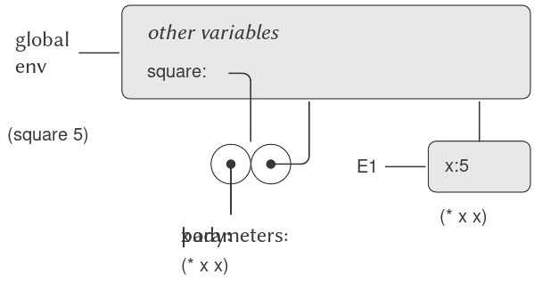
Figure 3.3: Environment created by evaluating (square 5) in the global environment.
Environment model của việc áp dụng procedure có thể được tóm tắt bằng hai quy tắc:
- Một procedure object (đối tượng thủ tục) được áp dụng cho một tập hợp các đối số bằng cách tạo ra một frame, ràng buộc các formal parameters của procedure với các đối số của lời gọi, và sau đó thực thi phần thân của procedure trong ngữ cảnh của environment mới được tạo ra. Frame mới này có enclosing environment là phần environment của procedure object đang được áp dụng.
- Một procedure được tạo ra bằng cách thực thi một λ-expression (biểu thức lambda) tương ứng với một environment cho trước. Procedure object kết quả là một cặp gồm văn bản của λ-expression và một con trỏ tới environment mà procedure được tạo ra.
Chúng ta cũng quy định rằng việc định nghĩa một symbol bằng define sẽ tạo ra một binding trong frame của environment hiện tại và gán cho symbol giá trị được chỉ định.2 Cuối cùng, chúng ta quy định hành vi của set!, thao tác đã buộc chúng ta phải giới thiệu environment model ngay từ đầu. Thực thi biểu thức (set! ⟨variable⟩ ⟨value⟩) trong một environment nào đó sẽ tìm binding của biến trong environment và thay đổi binding đó để biểu thị giá trị mới. Nghĩa là, ta tìm frame đầu tiên trong environment chứa binding cho biến và sửa đổi frame đó. Nếu biến chưa được ràng buộc trong environment, thì set! sẽ báo lỗi.
Các quy tắc evaluation này, mặc dù phức tạp hơn đáng kể so với substitution model, nhưng vẫn tương đối dễ hiểu. Hơn nữa, evaluation model, dù mang tính trừu tượng, vẫn cung cấp một mô tả chính xác về cách interpreter thực thi các biểu thức. Trong Chương 4, chúng ta sẽ thấy mô hình này có thể đóng vai trò như một bản thiết kế để triển khai một interpreter hoạt động. Các phần tiếp theo sẽ làm rõ chi tiết của mô hình bằng cách phân tích một số chương trình minh họa.
3.2.2 Applying Simple Procedures (Áp dụng các thủ tục đơn giản)
Khi chúng ta giới thiệu substitution model ở 1.1.5, chúng ta đã chỉ ra cách combination (f 5) được thực thi ra 136, với các định nghĩa procedure sau:
(define (square x)
(* x x))
(define (sum-of-squares x y)
(+ (square x) (square y)))
(define (f a)
(sum-of-squares (+ a 1) (* a 2)))
Chúng ta có thể phân tích cùng ví dụ này bằng cách sử dụng environment model. Hình 3.4 cho thấy ba procedure objects được tạo ra bằng cách thực thi các định nghĩa của f, square, và sum-of-squares trong global environment. Mỗi procedure object bao gồm một phần code, cùng với một con trỏ tới global environment.
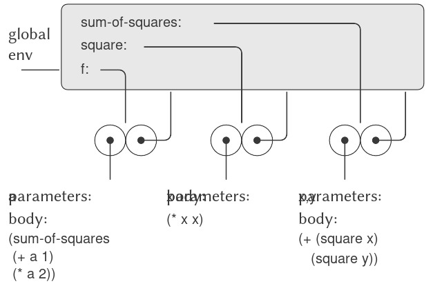
Figure 3.4: Procedure objects in the global frame.
Trong Hình 3.5, chúng ta thấy cấu trúc environment được tạo ra khi thực thi biểu thức (f 5). Lời gọi tới f tạo ra một environment mới E1 bắt đầu với một frame trong đó a, tham số hình thức của f, được ràng buộc với đối số 5. Trong E1, chúng ta thực thi phần thân của f:
(sum-of-squares (+ a 1) (* a 2))
Nếu đã tồn tại một binding cho biến trong frame hiện tại, thì binding đó sẽ bị thay đổi. Điều này thuận tiện vì nó cho phép định nghĩa lại các symbol; tuy nhiên, nó cũng có nghĩa là define có thể được sử dụng để thay đổi giá trị, và điều này dẫn đến các vấn đề của assignment mà không cần dùng trực tiếp set!. Vì lý do này, một số người thích việc định nghĩa lại các symbol đã tồn tại sẽ báo lỗi hoặc cảnh báo.
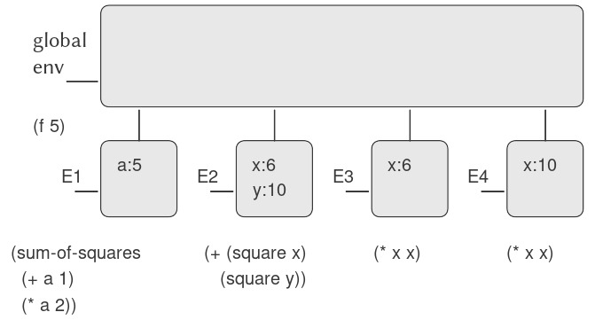
Figure 3.5: Environments created by evaluating (f 5) using the procedures in Figure 3.4.
Để thực thi combination (tổ hợp) này, trước tiên chúng ta thực thi các subexpressions (biểu thức con). Biểu thức con đầu tiên, sum-of-squares, có giá trị là một procedure object (đối tượng thủ tục). (Lưu ý cách tìm ra giá trị này: Trước tiên, chúng ta tìm trong frame đầu tiên của E1, vốn không chứa binding cho sum-of-squares. Sau đó, chúng ta tiếp tục tới enclosing environment, tức global environment, và tìm thấy binding được thể hiện trong Hình 3.4.) Hai biểu thức con còn lại được thực thi bằng cách áp dụng các primitive operations (toán tử nguyên thủy) + và * để tính hai combination (+ a 1) và (* a 2), lần lượt thu được 6 và 10.
Bây giờ, chúng ta áp dụng procedure object sum-of-squares cho các đối số 6 và 10. Điều này tạo ra một environment mới E2, trong đó các formal parameters x và y được ràng buộc với các đối số. Bên trong E2, chúng ta thực thi combination (+ (square x) (square y)). Điều này dẫn đến việc thực thi (square x), trong đó square được tìm thấy trong global frame và x là 6. Một lần nữa, chúng ta thiết lập một environment mới, E3, trong đó x được ràng buộc với 6, và bên trong đó chúng ta thực thi phần thân của square, là (* x x). Cũng như một phần của việc áp dụng sum-of-squares, chúng ta phải thực thi biểu thức con (square y), trong đó y là 10. Lời gọi thứ hai tới square này tạo ra một environment khác, E4, trong đó x, tham số hình thức của square, được ràng buộc với 10. Và bên trong E4, chúng ta phải thực thi (* x x).
Điểm quan trọng cần lưu ý là mỗi lần gọi square sẽ tạo ra một environment mới chứa binding cho x. Chúng ta có thể thấy ở đây cách các frame khác nhau giúp tách biệt các biến cục bộ khác nhau đều có tên x. Lưu ý rằng mỗi frame được tạo ra bởi square đều trỏ tới global environment, vì đây là environment được chỉ định bởi procedure object square.
Sau khi các subexpressions được thực thi, kết quả được trả về. Các giá trị được tạo ra bởi hai lần gọi square được cộng lại bởi sum-of-squares, và kết quả này được trả về bởi f. Vì trọng tâm của chúng ta ở đây là các cấu trúc environment, chúng ta sẽ không đi sâu vào cách các giá trị trả về này được truyền từ lời gọi này sang lời gọi khác; tuy nhiên, đây cũng là một khía cạnh quan trọng của quá trình evaluation, và chúng ta sẽ quay lại chi tiết vấn đề này trong Chương 5.
3.2.3 Frames as the Repository of Local State (Frame như kho lưu trữ trạng thái cục bộ)
Chúng ta có thể dựa vào environment model để thấy cách procedures và assignment có thể được sử dụng để biểu diễn các đối tượng với local state (trạng thái cục bộ). Ví dụ, hãy xét “withdrawal processor” (bộ xử lý rút tiền) từ 3.1.1 được tạo ra bằng cách gọi procedure:
(define (make-withdraw balance)
(lambda (amount)
(if (>= balance amount)
(begin (set! balance
(- balance amount))
balance)
"Insufficient funds")))
Hãy mô tả quá trình thực thi:
(define W1 (make-withdraw 100))
tiếp theo là:
(W1 50)
50
Hình 3.6 cho thấy kết quả của việc định nghĩa procedure make-withdraw trong global environment. Điều này tạo ra một procedure object chứa một con trỏ tới global environment. Cho đến đây, điều này không khác gì các ví dụ chúng ta đã thấy, ngoại trừ việc phần thân của procedure này bản thân nó là một λ-expression.

Figure 3.6: Result of defining make-withdraw in the global environment.
Phần thú vị của quá trình tính toán xảy ra khi chúng ta áp dụng procedure make-withdraw cho một đối số:
(define W1 (make-withdraw 100))
Chúng ta bắt đầu, như thường lệ, bằng cách thiết lập một environment E1 trong đó formal parameter balance được ràng buộc với đối số 100. Bên trong environment này, chúng ta thực thi phần thân của make-withdraw, cụ thể là λ-expression. Điều này tạo ra một procedure object mới, với phần code được xác định bởi lambda và environment là E1, environment mà lambda được thực thi để tạo ra procedure. Procedure object kết quả là giá trị được trả về bởi lời gọi make-withdraw. Giá trị này được ràng buộc với W1 trong global environment, vì bản thân define đang được thực thi trong global environment. Hình 3.7 cho thấy cấu trúc environment kết quả.

Figure 3.7: Result of evaluating (define W1 (make-withdraw 100)).
Bây giờ, chúng ta có thể phân tích điều gì xảy ra khi W1 được áp dụng cho một đối số:
(W1 50)
50
Chúng ta bắt đầu bằng cách tạo ra một frame trong đó amount, tham số hình thức của W1, được ràng buộc với đối số 50. Điểm then chốt cần lưu ý là frame này có enclosing environment không phải là global environment, mà là environment E1, vì đây là environment được chỉ định bởi procedure object W1. Bên trong environment mới này, chúng ta thực thi phần thân của procedure:
(if (>= balance amount)
(begin (set! balance (- balance amount))
balance)
"Insufficient funds")
Cấu trúc environment kết quả được thể hiện trong Hình 3.8. Biểu thức đang được thực thi tham chiếu cả amount và balance. Amount sẽ được tìm thấy trong frame đầu tiên của environment, trong khi balance sẽ được tìm thấy bằng cách lần theo con trỏ enclosing-environment tới E1.

Figure 3.8: Environments created by applying the procedure object W1.
Khi set! được thực thi, binding của balance trong E1 bị thay đổi. Khi kết thúc lời gọi tới W1, balance là 50, và frame chứa balance vẫn được trỏ tới bởi procedure object W1. Frame ràng buộc amount (nơi chúng ta thực thi đoạn code thay đổi balance) không còn liên quan nữa, vì lời gọi procedure đã tạo ra nó đã kết thúc, và không có con trỏ nào từ các phần khác của environment trỏ tới frame đó. Lần tiếp theo W1 được gọi, một frame mới sẽ được tạo ra để ràng buộc amount và có enclosing environment là E1. Chúng ta thấy rằng E1 đóng vai trò như một “nơi” lưu giữ biến trạng thái cục bộ cho procedure object W1. Hình 3.9 cho thấy tình huống sau lời gọi tới W1.

Figure 3.9: Environments after the call to W1.
Quan sát điều gì xảy ra khi chúng ta tạo một đối tượng “withdraw” (rút tiền) thứ hai bằng cách thực hiện một lời gọi khác tới make-withdraw:
(define W2 (make-withdraw 100))
Điều này tạo ra cấu trúc environment (môi trường) như trong Hình 3.10, cho thấy rằng W2 là một procedure object (đối tượng thủ tục), tức là một cặp gồm một phần code và một environment. Environment E2 của W2 được tạo ra bởi lời gọi tới make-withdraw. Nó chứa một frame với binding (ràng buộc) cục bộ riêng cho balance. Mặt khác, W1 và W2 có cùng phần code: phần code được xác định bởi λ-expression (biểu thức lambda) trong phần thân của make-withdraw.3 Chúng ta thấy ở đây lý do tại sao W1 và W2 hoạt động như các đối tượng độc lập. Các lời gọi tới W1 tham chiếu tới biến trạng thái balance được lưu trong E1, trong khi các lời gọi tới W2 tham chiếu tới balance được lưu trong E2. Do đó, các thay đổi đối với trạng thái cục bộ của một đối tượng sẽ không ảnh hưởng tới đối tượng kia.

Figure 3.10: Using (define W2 (make-withdraw 100)) to create a second object.
3.2.4 Internal Definitions (Các định nghĩa nội bộ)
Mục 1.1.8 đã giới thiệu ý tưởng rằng các procedures có thể có internal definitions (định nghĩa nội bộ), từ đó dẫn đến một cấu trúc khối như trong procedure sau để tính căn bậc hai:
(define (sqrt x)
(define (good-enough? guess)
(< (abs (- (square guess) x)) 0.001))
(define (improve guess)
(average guess (/ x guess)))
(define (sqrt-iter guess)
(if (good-enough? guess)
guess
(sqrt-iter (improve guess))))
(sqrt-iter 1.0))
Bây giờ chúng ta có thể sử dụng environment model để thấy tại sao các internal definitions này hoạt động như mong muốn. Hình 3.11 cho thấy thời điểm trong quá trình thực thi biểu thức (sqrt 2) khi procedure nội bộ good-enough? được gọi lần đầu tiên với guess bằng 1.

Figure 3.11: Sqrt procedure with internal definitions.
Quan sát cấu trúc của environment. Sqrt là một symbol trong global environment, được ràng buộc với một procedure object có environment liên kết là global environment. Khi sqrt được gọi, một environment mới E1 được tạo ra, trực thuộc global environment, trong đó tham số x được ràng buộc với giá trị 2. Phần thân của sqrt sau đó được thực thi trong E1. Vì biểu thức đầu tiên trong phần thân của sqrt là
(define (good-enough? guess)
(< (abs (- (square guess) x)) 0.001))
nên việc thực thi biểu thức này đã định nghĩa procedure good-enough? trong environment E1. Cụ thể hơn, symbol good-enough? được thêm vào frame đầu tiên của E1, ràng buộc với một procedure object có environment liên kết là E1. Tương tự, improve và sqrt-iter được định nghĩa là các procedures trong E1. Để ngắn gọn, Hình 3.11 chỉ hiển thị procedure object cho good-enough?.
Sau khi các local procedures (thủ tục cục bộ) được định nghĩa, biểu thức (sqrt-iter 1.0) được thực thi, vẫn trong environment E1. Do đó, procedure object được ràng buộc với sqrt-iter trong E1 được gọi với đối số 1. Điều này tạo ra một environment E2, trong đó guess, tham số của sqrt-iter, được ràng buộc với 1. Sqrt-iter sau đó gọi good-enough? với giá trị của guess (từ E2) làm đối số cho good-enough?. Điều này thiết lập một environment khác, E3, trong đó guess (tham số của good-enough?) được ràng buộc với 1. Mặc dù sqrt-iter và good-enough? đều có một tham số tên là guess, đây là hai biến cục bộ khác nhau nằm trong các frame khác nhau. Ngoài ra, cả E2 và E3 đều có E1 là enclosing environment, vì cả hai procedures sqrt-iter và good-enough? đều có E1 là phần environment của chúng. Một hệ quả của điều này là symbol x xuất hiện trong phần thân của good-enough? sẽ tham chiếu tới binding của x xuất hiện trong E1, tức là giá trị của x mà procedure sqrt ban đầu được gọi với nó.
Environment model do đó giải thích hai đặc tính then chốt khiến cho định nghĩa procedure cục bộ trở thành một kỹ thuật hữu ích để mô-đun hóa chương trình:
- Tên của các local procedures không gây xung đột với các tên bên ngoài procedure bao quanh, vì các tên procedure cục bộ sẽ được ràng buộc trong frame mà procedure tạo ra khi nó chạy, thay vì được ràng buộc trong global environment.
- Các local procedures có thể truy cập các đối số của procedure bao quanh, chỉ đơn giản bằng cách sử dụng tên tham số như các free variables (biến tự do). Điều này là do phần thân của local procedure được thực thi trong một environment trực thuộc environment thực thi của procedure bao quanh.
Việc W1 và W2 có chia sẻ cùng một phần code vật lý được lưu trong máy tính hay mỗi cái giữ một bản sao của code là một chi tiết của implementation (cài đặt). Đối với interpreter mà chúng ta triển khai trong Chương 4, phần code thực tế được chia sẻ.
3.3 Mô hình hóa với Mutable Data (dữ liệu có thể thay đổi)
Chương 2 đã đề cập đến compound data (dữ liệu hợp) như một phương tiện để xây dựng các computational objects (đối tượng tính toán) có nhiều thành phần, nhằm mô hình hóa các đối tượng trong thế giới thực vốn có nhiều khía cạnh. Trong chương đó, chúng ta đã giới thiệu nguyên tắc của data abstraction (trừu tượng hóa dữ liệu), theo đó các cấu trúc dữ liệu được đặc tả thông qua các constructors (hàm tạo), dùng để tạo ra các data objects (đối tượng dữ liệu), và các selectors (hàm chọn), dùng để truy cập các phần của compound data objects. Nhưng giờ đây chúng ta biết rằng còn một khía cạnh khác của dữ liệu mà chương 2 chưa đề cập. Mong muốn mô hình hóa các hệ thống bao gồm các đối tượng có trạng thái thay đổi dẫn chúng ta đến nhu cầu phải sửa đổi các compound data objects, cũng như xây dựng và chọn lọc từ chúng. Để mô hình hóa các compound objects có trạng thái thay đổi, chúng ta sẽ thiết kế các data abstractions bao gồm, ngoài selectors và constructors, các phép toán gọi là mutators (bộ biến đổi), dùng để sửa đổi data objects.
Ví dụ, mô hình hóa một hệ thống ngân hàng đòi hỏi chúng ta phải thay đổi số dư tài khoản. Do đó, một cấu trúc dữ liệu để biểu diễn tài khoản ngân hàng có thể cho phép một phép toán:
(set-balance! ⟨account⟩ ⟨new-value⟩)
Phép toán này thay đổi số dư của tài khoản được chỉ định thành giá trị mới được chỉ định. Các data objects mà có định nghĩa mutators được gọi là mutable data objects (đối tượng dữ liệu có thể thay đổi).
Chương 2 đã giới thiệu pairs (cặp) như một “chất keo” đa dụng để tổng hợp compound data. Chúng ta bắt đầu phần này bằng cách định nghĩa các mutators cơ bản cho pairs, để pairs có thể đóng vai trò là các khối xây dựng cho việc tạo ra mutable data objects. Các mutators này tăng cường đáng kể khả năng biểu diễn của pairs, cho phép chúng ta xây dựng các cấu trúc dữ liệu khác ngoài các sequences (dãy) và trees (cây) mà chúng ta đã làm việc trong 2.2. Chúng ta cũng sẽ trình bày một số ví dụ về các mô phỏng, trong đó các hệ thống phức tạp được mô hình hóa như tập hợp các đối tượng có local state (trạng thái cục bộ).
3.3.1 Cấu trúc danh sách có thể thay đổi
Các phép toán cơ bản trên pairs — cons, car, và cdr — có thể được dùng để xây dựng list structure (cấu trúc danh sách) và để chọn các phần từ list structure, nhưng chúng không thể sửa đổi list structure. Điều này cũng đúng với các phép toán trên danh sách mà chúng ta đã dùng cho đến nay, như append và list, vì chúng có thể được định nghĩa dựa trên cons, car, và cdr. Để sửa đổi list structures, chúng ta cần các phép toán mới.
Các primitive mutators (bộ biến đổi nguyên thủy) cho pairs là set-car! và set-cdr!. Set-car! nhận hai đối số, trong đó đối số thứ nhất phải là một pair. Nó sửa đổi pair này, thay thế con trỏ car bằng một con trỏ tới đối số thứ hai của set-car! 1.
Ví dụ, giả sử x được gán tới danh sách ((a b) c d) và y tới danh sách (e f) như minh họa trong Hình 3.12. Việc thực thi biểu thức (set-car! x y) sẽ sửa đổi pair mà x trỏ tới, thay thế car của nó bằng giá trị của y. Kết quả của phép toán được thể hiện trong Hình 3.13. Cấu trúc x đã bị thay đổi và giờ sẽ được in ra là ((e f) c d). Các pairs biểu diễn danh sách (a b), được xác định bởi con trỏ đã bị thay thế, giờ bị tách ra khỏi cấu trúc ban đầu 2.
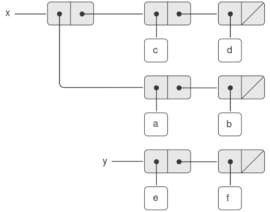
Figure 3.12: Lists x: ((a b) c d) and y: (e f).
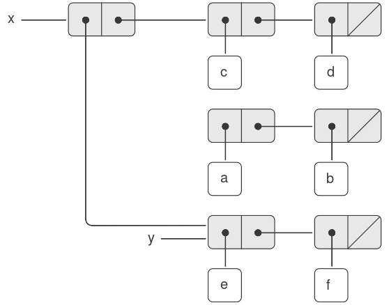
Figure 3.13: Effect of (set-car! x y) on the lists in Figure 3.12.
So sánh Hình 3.13 với Hình 3.14, minh họa kết quả của việc thực thi (define z (cons y (cdr x))) khi x và y được gán tới các danh sách ban đầu của Hình 3.12. Biến z giờ được gán tới một pair mới được tạo bởi phép toán cons; danh sách mà x trỏ tới không thay đổi.

Figure 3.14: Effect of (define z (cons y (cdr x))) on the lists in Figure 3.12.
Phép toán set-cdr! tương tự như set-car!. Điểm khác biệt duy nhất là con trỏ cdr của pair, thay vì con trỏ car, sẽ bị thay thế. Kết quả của việc thực thi (set-cdr! x y) trên các danh sách của Hình 3.12 được thể hiện trong Hình 3.15. Ở đây, con trỏ cdr của x đã bị thay thế bằng con trỏ tới (e f). Ngoài ra, danh sách (c d), vốn trước đây là cdr của x, giờ bị tách ra khỏi cấu trúc.
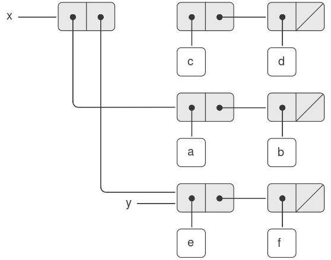
Figure 3.15: Effect of (set-cdr! x y) on the lists in Figure 3.12.
Cons xây dựng list structure mới bằng cách tạo ra các pairs mới, trong khi set-car! và set-cdr! sửa đổi các pairs hiện có. Thực tế, chúng ta có thể cài đặt cons dựa trên hai mutators này, cùng với một procedure get-new-pair, trả về một pair mới không thuộc bất kỳ list structure nào hiện có. Chúng ta lấy pair mới, đặt các con trỏ car và cdr của nó tới các đối tượng được chỉ định, và trả về pair mới này như kết quả của cons 3.
(define (cons x y)
(let ((new (get-new-pair)))
(set-car! new x)
(set-cdr! new y)
new))
Chia sẻ và định danh
Chúng ta đã đề cập trong 3.1.3 về các vấn đề lý thuyết của “sự đồng nhất” và “sự thay đổi” được đặt ra bởi việc giới thiệu assignment (gán). Những vấn đề này xuất hiện trong thực tế khi các pairs riêng lẻ được shared (chia sẻ) giữa các data objects khác nhau. Ví dụ, xét cấu trúc được tạo bởi:
(define x (list 'a 'b))
(define z1 (cons x x))
Như thể hiện trong Hình 3.16, z1 là một pair mà cả car và cdr đều trỏ tới cùng một pair x. Việc chia sẻ x bởi car và cdr của z1 là hệ quả của cách cài đặt trực tiếp của cons. Nói chung, việc dùng cons để xây dựng danh sách sẽ tạo ra một cấu trúc liên kết của các pairs, trong đó nhiều pairs riêng lẻ được chia sẻ bởi nhiều cấu trúc khác nhau.

Figure 3.16: The list z1 formed by (cons x x).
Trái ngược với Hình 3.16, Hình 3.17 cho thấy cấu trúc được tạo bởi:
(define z2
(cons (list 'a 'b) (list 'a 'b)))
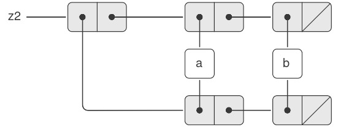
Figure 3.17: The list z2 formed by (cons (list 'a 'b) (list 'a 'b)).
Set-car! và set-cdr! trả về các giá trị phụ thuộc vào cách cài đặt. Giống như set!, chúng chỉ nên được dùng cho tác dụng phụ của chúng.
2: Từ đây ta thấy rằng các phép toán thay đổi trên danh sách có thể tạo ra “garbage” (rác) không thuộc bất kỳ cấu trúc nào có thể truy cập. Chúng ta sẽ thấy trong 5.3.2 rằng các hệ thống quản lý bộ nhớ của Lisp bao gồm một garbage collector (bộ gom rác), dùng để xác định và tái sử dụng vùng nhớ được dùng bởi các pairs không còn cần thiết.
3: ....
Trong cấu trúc này, các pairs trong hai danh sách (a b) là khác nhau, mặc dù các symbol (ký hiệu) thực tế được chia sẻ 4.
Khi được xem như một danh sách, z1 và z2 đều biểu diễn “cùng một” danh sách, ((a b) a b). Nói chung, việc chia sẻ là hoàn toàn không thể phát hiện nếu chúng ta thao tác trên danh sách chỉ bằng cons, car, và cdr. Tuy nhiên, nếu chúng ta cho phép các mutators trên list structure, việc chia sẻ trở nên quan trọng. Ví dụ về sự khác biệt mà chia sẻ có thể tạo ra, hãy xét procedure (thủ tục) sau, thủ tục này sửa đổi car của cấu trúc mà nó được áp dụng:
(define (set-to-wow! x)
(set-car! (car x) 'wow)
x)
Mặc dù z1 và z2 là “cùng một” cấu trúc, việc áp dụng set-to-wow! cho chúng cho ra các kết quả khác nhau. Với z1, việc thay đổi car cũng thay đổi cdr, vì trong z1 thì car và cdr là cùng một pair. Với z2, car và cdr là khác nhau, nên set-to-wow! chỉ sửa đổi car:
z1
((a b) a b)
(set-to-wow! z1)
((wow b) wow b)
z2
((a b) a b)
(set-to-wow! z2)
((wow b) a b)
Một cách để phát hiện chia sẻ trong list structures là dùng predicate eq?, mà chúng ta đã giới thiệu trong 2.3.1 như một cách để kiểm tra xem hai symbols có bằng nhau hay không. Tổng quát hơn, (eq? x y) kiểm tra xem x và y có phải là cùng một object (nghĩa là, x và y có bằng nhau về con trỏ hay không). Do đó, với z1 và z2 như được định nghĩa trong Hình 3.16 và Hình 3.17, (eq? (car z1) (cdr z1)) là đúng và (eq? (car z2) (cdr z2)) là sai.
Như sẽ thấy trong các phần tiếp theo, chúng ta có thể khai thác việc chia sẻ để mở rộng đáng kể tập hợp các cấu trúc dữ liệu có thể được biểu diễn bằng pairs. Mặt khác, chia sẻ cũng có thể nguy hiểm, vì các sửa đổi được thực hiện trên một cấu trúc cũng sẽ ảnh hưởng đến các cấu trúc khác tình cờ chia sẻ các phần đã bị sửa đổi. Các phép toán mutation set-car! và set-cdr! nên được sử dụng cẩn thận; trừ khi chúng ta hiểu rõ cách các data objects của mình được chia sẻ, mutation có thể dẫn đến các kết quả không lường trước 5.
Mutation chỉ là assignment (gán)
Khi chúng ta giới thiệu compound data, chúng ta đã quan sát trong 2.1.3 rằng pairs có thể được biểu diễn hoàn toàn bằng procedures:
(define (cons x y)
(define (dispatch m)
(cond ((eq? m 'car) x)
((eq? m 'cdr) y)
(else (error "Undefined
operation: CONS" m))))
dispatch)
(define (car z) (z 'car))
(define (cdr z) (z 'cdr))
Quan sát tương tự cũng đúng với mutable data. Chúng ta có thể cài đặt mutable data objects dưới dạng procedures sử dụng assignment và local state. Ví dụ, chúng ta có thể mở rộng cài đặt pair ở trên để xử lý set-car! và set-cdr! theo cách tương tự như cách chúng ta đã cài đặt tài khoản ngân hàng bằng make-account trong 3.1.1:
(define (cons x y)
(define (set-x! v) (set! x v))
(define (set-y! v) (set! y v))
(define (dispatch m)
(cond ((eq? m 'car) x)
((eq? m 'cdr) y)
((eq? m 'set-car!) set-x!)
((eq? m 'set-cdr!) set-y!)
(else (error "Undefined
operation: CONS" m))))
dispatch)
(define (car z) (z 'car))
(define (cdr z) (z 'cdr))
(define (set-car! z new-value)
((z 'set-car!) new-value)
z)
(define (set-cdr! z new-value)
((z 'set-cdr!) new-value)
z)
Về mặt lý thuyết, assignment là tất cả những gì cần thiết để giải thích hành vi của mutable data. Ngay khi chúng ta chấp nhận set! vào ngôn ngữ, chúng ta đã đặt ra tất cả các vấn đề, không chỉ của assignment, mà còn của mutable data nói chung 6.
Hai pairs là khác nhau vì mỗi lần gọi cons trả về một pair mới. Các symbols được chia sẻ; trong Scheme chỉ tồn tại một symbol duy nhất cho mỗi tên cho trước. Vì Scheme không cung cấp cách nào để thay đổi một symbol, nên việc chia sẻ này là không thể phát hiện. Cũng cần lưu ý rằng việc chia sẻ này cho phép chúng ta so sánh các symbols bằng eq?, vốn chỉ đơn giản kiểm tra sự bằng nhau của các con trỏ.
5: Những tinh tế trong việc xử lý chia sẻ của mutable data objects phản ánh các vấn đề cơ bản về “sự đồng nhất” và “sự thay đổi” đã được nêu trong 3.1.3. Chúng ta đã đề cập rằng việc chấp nhận thay đổi trong ngôn ngữ đòi hỏi một compound object phải có một “identity” (định danh) khác với các phần cấu thành của nó. Trong Lisp, chúng ta coi “identity” này là thuộc tính được kiểm tra bởi eq?, tức là bằng nhau về con trỏ. Vì trong hầu hết các cài đặt Lisp, một con trỏ về cơ bản là một địa chỉ bộ nhớ, nên chúng ta “giải quyết vấn đề” định nghĩa định danh của các đối tượng bằng cách quy định rằng một data object “tự nó” là thông tin được lưu trữ trong một tập hợp vị trí bộ nhớ cụ thể trong máy tính. Điều này là đủ cho các chương trình Lisp đơn giản, nhưng khó có thể là một cách tổng quát để giải quyết vấn đề “sự đồng nhất” trong các mô hình tính toán.
6: Mặt khác, từ góc độ cài đặt, assignment yêu cầu chúng ta sửa đổi environment (môi trường), vốn tự nó là một mutable data structure. Do đó, assignment và mutation là tương đương về khả năng: mỗi cái có thể được cài đặt dựa trên cái kia.
3.3.2 Biểu diễn Queues (hàng đợi)
Các mutators set-car! và set-cdr! cho phép chúng ta sử dụng pairs để xây dựng các cấu trúc dữ liệu mà không thể tạo ra chỉ với cons, car, và cdr. Phần này cho thấy cách sử dụng pairs để biểu diễn một cấu trúc dữ liệu gọi là queue (hàng đợi). Phần 3.3.3 sẽ trình bày cách biểu diễn các cấu trúc dữ liệu gọi là tables (bảng).
Một queue là một sequence (dãy) trong đó các phần tử được chèn vào ở một đầu (gọi là rear — cuối hàng đợi) và bị xóa ở đầu kia (gọi là front — đầu hàng đợi). Hình 3.18 cho thấy một queue ban đầu rỗng, trong đó các phần tử a và b được chèn vào. Sau đó a bị xóa, c và d được chèn vào, và b bị xóa. Bởi vì các phần tử luôn bị xóa theo đúng thứ tự mà chúng được chèn vào, một queue đôi khi được gọi là bộ đệm FIFO (first in, first out — vào trước, ra trước).

Figure 3.18: Queue operations.
Xét theo data abstraction (trừu tượng hóa dữ liệu), chúng ta có thể coi một queue được định nghĩa bởi tập hợp các phép toán sau:
-
Một constructor:
(make-queue)trả về một queue rỗng (một queue không chứa phần tử nào). -
Hai selectors:
(empty-queue? ⟨queue⟩)kiểm tra xem queue có rỗng hay không.
(front-queue ⟨queue⟩)trả về đối tượng ở đầu queue, báo lỗi nếu queue rỗng; phép toán này không sửa đổi queue.
-
Hai mutators:
(insert-queue! ⟨queue⟩ ⟨item⟩)chèn phần tử vào cuối queue và trả về queue đã được sửa đổi như giá trị của nó.
(delete-queue! ⟨queue⟩)xóa phần tử ở đầu queue và trả về queue đã được sửa đổi như giá trị của nó, báo lỗi nếu queue rỗng trước khi xóa.
Bởi vì một queue là một sequence các phần tử, chúng ta hoàn toàn có thể biểu diễn nó như một danh sách thông thường; đầu queue sẽ là car của danh sách, chèn một phần tử vào queue sẽ tương đương với việc nối thêm một phần tử mới vào cuối danh sách, và xóa một phần tử khỏi queue sẽ chỉ là lấy cdr của danh sách. Tuy nhiên, cách biểu diễn này không hiệu quả, vì để chèn một phần tử chúng ta phải duyệt danh sách cho đến khi tới cuối. Do phương pháp duy nhất mà chúng ta có để duyệt danh sách là thực hiện liên tiếp các phép toán cdr, việc duyệt này cần $\Theta(n)$ bước đối với một danh sách có $n$ phần tử. Một chỉnh sửa đơn giản đối với cách biểu diễn danh sách có thể khắc phục nhược điểm này bằng cách cho phép các phép toán trên queue được cài đặt sao cho chúng chỉ cần $\Theta(1)$ bước; nghĩa là, số bước cần thiết không phụ thuộc vào độ dài của queue.
Khó khăn của cách biểu diễn bằng danh sách xuất phát từ việc cần phải duyệt để tìm phần cuối của danh sách. Lý do chúng ta cần duyệt là vì, mặc dù cách biểu diễn tiêu chuẩn của danh sách như một chuỗi các pairs cung cấp cho chúng ta một con trỏ tới phần đầu danh sách, nó không cho chúng ta một con trỏ dễ truy cập tới phần cuối. Chỉnh sửa để tránh nhược điểm này là biểu diễn queue như một danh sách, kèm theo một con trỏ bổ sung chỉ tới pair cuối cùng trong danh sách. Bằng cách đó, khi chèn một phần tử, chúng ta có thể dùng con trỏ rear và tránh phải duyệt danh sách.
Một queue được biểu diễn như một cặp con trỏ, front-ptr và rear-ptr, lần lượt chỉ tới pair đầu tiên và pair cuối cùng trong một danh sách thông thường. Vì chúng ta muốn queue là một đối tượng có thể nhận diện được, chúng ta có thể dùng cons để kết hợp hai con trỏ này. Do đó, bản thân queue sẽ là cons của hai con trỏ. Hình 3.19 minh họa cách biểu diễn này.

Figure 3.19: Implementation of a queue as a list with front and rear pointers.
Để định nghĩa các phép toán trên queue, chúng ta sử dụng các procedures sau, cho phép chọn và sửa đổi các con trỏ front và rear của một queue:
(define (front-ptr queue) (car queue))
(define (rear-ptr queue) (cdr queue))
(define (set-front-ptr! queue item)
(set-car! queue item))
(define (set-rear-ptr! queue item)
(set-cdr! queue item))
Giờ chúng ta có thể cài đặt các phép toán queue thực sự. Chúng ta sẽ coi một queue là rỗng nếu con trỏ front của nó là danh sách rỗng:
(define (empty-queue? queue)
(null? (front-ptr queue)))
Constructor make-queue trả về, như một queue ban đầu rỗng, một pair mà cả car và cdr đều là danh sách rỗng:
(define (make-queue) (cons '() '()))
Để chọn phần tử ở đầu queue, chúng ta trả về car của pair được chỉ bởi con trỏ front:
(define (front-queue queue)
(if (empty-queue? queue)
(error "FRONT called with an
empty queue" queue)
(car (front-ptr queue))))
Để chèn một phần tử vào queue, chúng ta làm theo phương pháp mà kết quả được minh họa trong Hình 3.20. Trước tiên, chúng ta tạo một pair mới có car là phần tử cần chèn và cdr là danh sách rỗng. Nếu queue ban đầu rỗng, chúng ta đặt cả con trỏ front và rear của queue trỏ tới pair mới này. Ngược lại, chúng ta sửa đổi pair cuối cùng trong queue để trỏ tới pair mới, đồng thời đặt con trỏ rear trỏ tới pair mới đó.

Figure 3.20: Result of using (insert-queue! q 'd) on the queue of Figure 3.19.
(define (insert-queue! queue item)
(let ((new-pair (cons item '())))
(cond ((empty-queue? queue)
(set-front-ptr! queue new-pair)
(set-rear-ptr! queue new-pair)
queue)
(else (set-cdr! (rear-ptr queue)
new-pair)
(set-rear-ptr! queue new-pair)
queue))))
Để xóa phần tử ở đầu queue, chúng ta chỉ cần sửa đổi con trỏ front sao cho nó trỏ tới phần tử thứ hai trong queue, phần tử này có thể được tìm bằng cách lần theo con trỏ cdr của phần tử đầu tiên (xem Hình 3.21) 7:
(define (delete-queue! queue)
(cond ((empty-queue? queue)
(error "DELETE! called with
an empty queue" queue))
(else (set-front-ptr!
queue
(cdr (front-ptr queue)))
queue)))

Figure 3.21: Result of using (delete-queue! q) on the queue of Figure 3.20.
3.3.3 Biểu diễn Tables (bảng)
Khi chúng ta nghiên cứu các cách khác nhau để biểu diễn sets (tập hợp) trong Chương 2, chúng ta đã đề cập trong 2.3.3 đến nhiệm vụ duy trì một bảng các records (bản ghi) được đánh chỉ mục bằng các keys (khóa) định danh. Trong việc cài đặt data-directed programming (lập trình điều khiển bởi dữ liệu) ở 2.4.3, chúng ta đã sử dụng nhiều các bảng hai chiều, trong đó thông tin được lưu trữ và truy xuất bằng hai keys. Ở đây, chúng ta sẽ thấy cách xây dựng tables như các mutable list structures (cấu trúc danh sách có thể thay đổi).
Trước tiên, chúng ta xét một bảng một chiều, trong đó mỗi giá trị được lưu dưới một key duy nhất. Chúng ta cài đặt bảng như một danh sách các records, mỗi record được cài đặt như một pair gồm một key và giá trị liên kết. Các records được nối lại để tạo thành một danh sách bằng các pairs mà car của chúng trỏ tới các records liên tiếp. Các pairs nối này được gọi là backbone (xương sống) của bảng. Để có một vị trí mà chúng ta có thể thay đổi khi thêm một record mới vào bảng, chúng ta xây dựng bảng như một headed list (danh sách có tiêu đề). Một headed list có một pair backbone đặc biệt ở đầu, chứa một “record” giả — trong trường hợp này là symbol được chọn tùy ý *table*. Hình 3.22 cho thấy sơ đồ box-and-pointer cho bảng:
a: 1
b: 2
c: 3

Figure 3.22: A table represented as a headed list.
Để trích xuất thông tin từ một bảng, chúng ta sử dụng procedure lookup, nhận một key làm đối số và trả về giá trị liên kết (hoặc false nếu không có giá trị nào được lưu dưới key đó). Lookup được định nghĩa dựa trên phép toán assoc, phép toán này nhận một key và một danh sách các records làm đối số. Lưu ý rằng assoc không bao giờ thấy record giả. Assoc trả về record có key đã cho là car của nó 8. Lookup sau đó kiểm tra để đảm bảo record trả về từ assoc không phải là false, và trả về giá trị (phần cdr) của record.
(define (lookup key table)
(let ((record (assoc key (cdr table))))
(if record
(cdr record)
false)))
(define (assoc key records)
(cond ((null? records) false)
((equal? key (caar records))
(car records))
(else (assoc key (cdr records)))))
Để chèn một giá trị vào bảng dưới một key xác định, trước tiên chúng ta dùng assoc để xem đã có record nào trong bảng với key này chưa. Nếu chưa, chúng ta tạo một record mới bằng cách cons key với giá trị, và chèn record này vào đầu danh sách records của bảng, ngay sau record giả. Nếu đã có record với key này, chúng ta đặt cdr của record đó thành giá trị mới được chỉ định. Phần header của bảng cung cấp cho chúng ta một vị trí cố định để sửa đổi khi chèn record mới 9.
(define (insert! key value table)
(let ((record (assoc key (cdr table))))
(if record
(set-cdr! record value)
(set-cdr! table
(cons (cons key value)
(cdr table)))))
'ok)
Để tạo một bảng mới, chúng ta chỉ cần tạo một danh sách chứa symbol *table*:
(define (make-table)
(list '*table*))
Nếu phần tử đầu tiên là phần tử cuối cùng trong queue, con trỏ front sẽ là danh sách rỗng sau khi xóa, điều này sẽ đánh dấu queue là rỗng; chúng ta không cần lo lắng về việc cập nhật con trỏ rear, vốn vẫn sẽ trỏ tới phần tử đã bị xóa, vì empty-queue? chỉ kiểm tra con trỏ front.
8: Vì assoc sử dụng equal?, nó có thể nhận diện các keys là symbols, numbers, hoặc list structure.
9: Do đó, pair backbone đầu tiên là đối tượng đại diện cho bảng “tự nó”; nghĩa là, một con trỏ tới bảng là một con trỏ tới pair này. Pair backbone này luôn bắt đầu bảng. Nếu chúng ta không sắp xếp theo cách này, insert! sẽ phải trả về một giá trị mới cho phần bắt đầu của bảng khi thêm một record mới.
Two-dimensional tables (bảng hai chiều)
Trong một two-dimensional table, mỗi giá trị được đánh chỉ mục bởi hai keys. Chúng ta có thể xây dựng một bảng như vậy dưới dạng một one-dimensional table, trong đó mỗi key xác định một subtable (bảng con). Hình 3.23 cho thấy sơ đồ box-and-pointer cho bảng:
math: +: 43 letters: a: 97
-: 45 b: 98
*: 42
Bảng này có hai subtables. (Các subtables không cần một header symbol đặc biệt, vì key xác định subtable đã đóng vai trò này.)

Figure 3.23: A two-dimensional table.
Khi tra cứu một mục, chúng ta dùng key thứ nhất để xác định subtable đúng. Sau đó, chúng ta dùng key thứ hai để xác định record trong subtable.
(define (lookup key-1 key-2 table)
(let ((subtable (assoc key-1 (cdr table))))
(if subtable
(let ((record
(assoc key-2 (cdr subtable))))
(if record (cdr record) false))
false)))
Để chèn một mục mới dưới một cặp keys, chúng ta dùng assoc để xem có subtable nào được lưu dưới key thứ nhất hay không. Nếu không, chúng ta tạo một subtable mới chứa một record duy nhất (key-2, value) và chèn nó vào bảng dưới key thứ nhất. Nếu đã tồn tại một subtable cho key thứ nhất, chúng ta chèn record mới vào subtable này, sử dụng phương pháp chèn cho one-dimensional tables đã mô tả ở trên:
(define (insert! key-1 key-2 value table)
(let ((subtable (assoc key-1 (cdr table))))
(if subtable
(let ((record
(assoc key-2 (cdr subtable))))
(if record
(set-cdr! record value)
(set-cdr!
subtable
(cons (cons key-2 value)
(cdr subtable)))))
(set-cdr!
table
(cons (list key-1 (cons key-2 value))
(cdr table)))))
'ok)
Creating local tables (tạo bảng cục bộ)
Các phép toán lookup và insert! được định nghĩa ở trên nhận bảng làm đối số. Điều này cho phép chúng ta sử dụng các chương trình truy cập nhiều bảng. Một cách khác để xử lý nhiều bảng là có các procedures lookup và insert! riêng cho từng bảng. Chúng ta có thể làm điều này bằng cách biểu diễn một bảng theo kiểu procedural (thủ tục), như một đối tượng duy trì một bảng nội bộ như một phần của local state (trạng thái cục bộ) của nó. Khi nhận một thông điệp thích hợp, “table object” này sẽ cung cấp procedure để thao tác trên bảng nội bộ. Sau đây là một bộ sinh (generator) cho các two-dimensional tables được biểu diễn theo cách này:
(define (make-table)
(let ((local-table (list '*table*)))
(define (lookup key-1 key-2)
(let ((subtable
(assoc key-1 (cdr local-table))))
(if subtable
(let ((record
(assoc key-2
(cdr subtable))))
(if record (cdr record) false))
false)))
(define (insert! key-1 key-2 value)
(let ((subtable
(assoc key-1 (cdr local-table))))
(if subtable
(let ((record
(assoc key-2
(cdr subtable))))
(if record
(set-cdr! record value)
(set-cdr!
subtable
(cons (cons key-2 value)
(cdr subtable)))))
(set-cdr!
local-table
(cons (list key-1
(cons key-2 value))
(cdr local-table)))))
'ok)
(define (dispatch m)
(cond ((eq? m 'lookup-proc) lookup)
((eq? m 'insert-proc!) insert!)
(else (error "Unknown operation:
TABLE" m))))
dispatch))
Sử dụng make-table, chúng ta có thể cài đặt các phép toán get và put được dùng trong 2.4.3 cho data-directed programming, như sau:
(define operation-table (make-table))
(define get (operation-table 'lookup-proc))
(define put (operation-table 'insert-proc!))
Get nhận hai keys làm đối số, và put nhận hai keys cùng một giá trị. Cả hai phép toán đều truy cập cùng một bảng cục bộ, bảng này được đóng gói bên trong đối tượng được tạo bởi lời gọi make-table.
3.3.4 A Simulator for Digital Circuits (một bộ mô phỏng mạch số)
Thiết kế các hệ thống số phức tạp, chẳng hạn như máy tính, là một hoạt động kỹ thuật quan trọng. Các hệ thống số được xây dựng bằng cách liên kết các phần tử đơn giản. Mặc dù hành vi của từng phần tử riêng lẻ là đơn giản, nhưng mạng lưới của chúng có thể có hành vi rất phức tạp. Việc mô phỏng trên máy tính các thiết kế mạch được đề xuất là một công cụ quan trọng được các kỹ sư hệ thống số sử dụng. Trong phần này, chúng ta thiết kế một hệ thống để thực hiện các mô phỏng logic số. Hệ thống này là điển hình cho một loại chương trình gọi là event-driven simulation (mô phỏng điều khiển bởi sự kiện), trong đó các hành động (“events”) kích hoạt các sự kiện tiếp theo xảy ra ở một thời điểm sau đó, và các sự kiện này lại kích hoạt thêm các sự kiện khác, cứ thế tiếp diễn.
Mô hình tính toán của chúng ta về một mạch sẽ bao gồm các objects tương ứng với các thành phần cơ bản cấu thành mạch. Có các wires (dây dẫn), mang digital signals (tín hiệu số). Một digital signal tại bất kỳ thời điểm nào chỉ có thể có một trong hai giá trị, 0 hoặc 1. Cũng có nhiều loại function boxes (hộp chức năng) số khác nhau, kết nối các dây mang tín hiệu đầu vào tới các dây đầu ra khác. Các hộp này tạo ra tín hiệu đầu ra được tính toán từ các tín hiệu đầu vào của chúng. Tín hiệu đầu ra bị trễ một khoảng thời gian phụ thuộc vào loại function box. Ví dụ, một inverter (mạch đảo) là một function box nguyên thủy đảo ngược đầu vào của nó. Nếu tín hiệu đầu vào của inverter thay đổi thành 0, thì sau một khoảng inverter-delay, inverter sẽ thay đổi tín hiệu đầu ra thành 1. Nếu tín hiệu đầu vào của inverter thay đổi thành 1, thì sau một khoảng inverter-delay, inverter sẽ thay đổi tín hiệu đầu ra thành 0. Chúng ta vẽ inverter một cách ký hiệu như trong Hình 3.24. Một and-gate (cổng AND), cũng được thể hiện trong Hình 3.24, là một function box nguyên thủy có hai đầu vào và một đầu ra. Nó điều khiển tín hiệu đầu ra thành giá trị là logical and (phép AND logic) của các đầu vào. Nghĩa là, nếu cả hai tín hiệu đầu vào đều trở thành 1, thì sau một khoảng and-gate-delay, and-gate sẽ buộc tín hiệu đầu ra thành 1; nếu không thì đầu ra sẽ là 0. Một or-gate (cổng OR) là một function box nguyên thủy hai đầu vào tương tự, điều khiển tín hiệu đầu ra thành giá trị là logical or (phép OR logic) của các đầu vào. Nghĩa là, đầu ra sẽ trở thành 1 nếu ít nhất một trong các tín hiệu đầu vào là 1; nếu không thì đầu ra sẽ là 0.

Figure 3.24: Primitive functions in the digital logic simulator.
Chúng ta có thể kết nối các primitive functions (hàm nguyên thủy) lại với nhau để tạo thành các hàm phức tạp hơn. Để thực hiện điều này, chúng ta nối đầu ra của một số function boxes (hộp chức năng) vào đầu vào của các function boxes khác. Ví dụ, mạch half-adder (bộ cộng nửa) được minh họa trong Hình 3.25 bao gồm một or-gate (cổng OR), hai and-gates (cổng AND), và một inverter (mạch đảo). Mạch này nhận hai tín hiệu đầu vào, A và B, và có hai tín hiệu đầu ra, S và C. S sẽ trở thành 1 khi và chỉ khi đúng một trong A hoặc B là 1, và C sẽ trở thành 1 khi cả A và B đều là 1. Từ hình vẽ, chúng ta có thể thấy rằng, do các khoảng trễ liên quan, các đầu ra có thể được tạo ra tại các thời điểm khác nhau. Nhiều khó khăn trong thiết kế mạch số bắt nguồn từ thực tế này.

Figure 3.25: A half-adder circuit.
Bây giờ chúng ta sẽ xây dựng một chương trình để mô hình hóa các mạch logic số mà chúng ta muốn nghiên cứu. Chương trình sẽ tạo ra các computational objects (đối tượng tính toán) mô hình hóa các wires (dây dẫn), vốn sẽ “giữ” các tín hiệu. Các function boxes sẽ được mô hình hóa bằng các procedures (thủ tục) đảm bảo mối quan hệ đúng đắn giữa các tín hiệu.
Một thành phần cơ bản của mô phỏng này sẽ là procedure make-wire, dùng để tạo các dây dẫn. Ví dụ, chúng ta có thể tạo sáu dây dẫn như sau:
(define a (make-wire))
(define b (make-wire))
(define c (make-wire))
(define d (make-wire))
(define e (make-wire))
(define s (make-wire))
Chúng ta gắn một function box vào một tập các dây dẫn bằng cách gọi một procedure tạo ra loại hộp đó. Các đối số của constructor procedure là các dây dẫn sẽ được gắn vào hộp. Ví dụ, giả sử chúng ta có thể tạo and-gates, or-gates, và inverters, chúng ta có thể nối dây để tạo thành half-adder như trong Hình 3.25:
(or-gate a b d)
ok
(and-gate a b c)
ok
(inverter c e)
ok
(and-gate d e s)
ok
Tốt hơn nữa, chúng ta có thể đặt tên rõ ràng cho thao tác này bằng cách định nghĩa một procedure half-adder tạo ra mạch này, với bốn dây dẫn bên ngoài được gắn vào half-adder:
(define (half-adder a b s c)
(let ((d (make-wire)) (e (make-wire)))
(or-gate a b d)
(and-gate a b c)
(inverter c e)
(and-gate d e s)
'ok))
Ưu điểm của việc định nghĩa này là chúng ta có thể sử dụng half-adder như một khối xây dựng để tạo ra các mạch phức tạp hơn. Hình 3.26, chẳng hạn, cho thấy một full-adder (bộ cộng đầy đủ) được tạo thành từ hai half-adders và một or-gate 10. Chúng ta có thể tạo một full-adder như sau:
(define (full-adder a b c-in sum c-out)
(let ((c1 (make-wire))
(c2 (make-wire))
(s (make-wire)))
(half-adder b c-in s c1)
(half-adder a s sum c2)
(or-gate c1 c2 c-out)
'ok))

Figure 3.26: A full-adder circuit.
Sau khi đã định nghĩa full-adder như một procedure, chúng ta có thể sử dụng nó như một khối xây dựng để tạo ra các mạch còn phức tạp hơn nữa. (Ví dụ, xem Bài tập 3.30.)
Về bản chất, bộ mô phỏng của chúng ta cung cấp các công cụ để xây dựng một ngôn ngữ của các mạch. Nếu chúng ta áp dụng quan điểm tổng quát về ngôn ngữ mà chúng ta đã dùng khi nghiên cứu Lisp trong 1.1, chúng ta có thể nói rằng các primitive function boxes tạo thành các phần tử nguyên thủy của ngôn ngữ, việc nối các hộp lại với nhau cung cấp một phương tiện kết hợp, và việc đặc tả các mẫu nối dây dưới dạng procedures đóng vai trò như một phương tiện trừu tượng hóa.
Primitive function boxes
Các primitive function boxes thực hiện các “lực” mà qua đó sự thay đổi tín hiệu trên một dây dẫn ảnh hưởng đến các tín hiệu trên các dây dẫn khác. Để xây dựng các function boxes, chúng ta sử dụng các phép toán sau trên wires:
-
(get-signal ⟨wire⟩)trả về giá trị hiện tại của tín hiệu trên dây dẫn.
-
(set-signal! ⟨wire⟩ ⟨new value⟩)thay đổi giá trị của tín hiệu trên dây dẫn thành giá trị mới.
-
(add-action! ⟨wire⟩ ⟨procedure of no arguments⟩)xác nhận rằng procedure được chỉ định sẽ được chạy bất cứ khi nào tín hiệu trên dây dẫn thay đổi giá trị. Các procedures như vậy là phương tiện để truyền đạt sự thay đổi giá trị tín hiệu trên dây dẫn tới các dây dẫn khác.
Ngoài ra, chúng ta sẽ sử dụng một procedure after-delay nhận một khoảng thời gian trễ và một procedure cần chạy, và thực thi procedure đó sau khoảng trễ đã cho.
Sử dụng các procedures này, chúng ta có thể định nghĩa các hàm logic số nguyên thủy. Để kết nối một đầu vào với một đầu ra thông qua một inverter, chúng ta dùng add-action! để gắn với dây đầu vào một procedure sẽ được chạy bất cứ khi nào tín hiệu trên dây đầu vào thay đổi giá trị. Procedure này tính logical-not của tín hiệu đầu vào, và sau một inverter-delay, đặt tín hiệu đầu ra thành giá trị mới này:
A full-adder là một phần tử mạch cơ bản được dùng để cộng hai số nhị phân. Ở đây A và B là các bit tại các vị trí tương ứng trong hai số cần cộng, và $C_{in}$ là bit nhớ từ phép cộng ở vị trí bên phải. Mạch tạo ra SUM, là bit tổng tại vị trí tương ứng, và $C_{out}$, là bit nhớ được truyền sang bên trái.
(define (inverter input output)
(define (invert-input)
(let ((new-value
(logical-not (get-signal input))))
(after-delay
inverter-delay
(lambda ()
(set-signal! output new-value)))))
(add-action! input invert-input)
'ok)
(define (logical-not s)
(cond ((= s 0) 1)
((= s 1) 0)
(else (error "Invalid signal" s))))
Một and-gate (cổng AND) phức tạp hơn một chút. Action procedure (thủ tục hành động) phải được chạy nếu một trong hai đầu vào của cổng thay đổi. Nó tính logical-and (sử dụng một procedure tương tự như logical-not) của các giá trị tín hiệu trên các dây đầu vào và thiết lập một thay đổi sang giá trị mới sẽ xảy ra trên dây đầu ra sau một khoảng and-gate-delay.
(define (and-gate a1 a2 output)
(define (and-action-procedure)
(let ((new-value
(logical-and (get-signal a1)
(get-signal a2))))
(after-delay
and-gate-delay
(lambda ()
(set-signal! output new-value)))))
(add-action! a1 and-action-procedure)
(add-action! a2 and-action-procedure)
'ok)
Representing wires (biểu diễn dây dẫn)
Một wire (dây dẫn) trong mô phỏng của chúng ta sẽ là một computational object (đối tượng tính toán) với hai biến trạng thái cục bộ: một signal-value (giá trị tín hiệu, ban đầu được lấy là 0) và một tập hợp các action-procedures sẽ được chạy khi tín hiệu thay đổi giá trị. Chúng ta cài đặt wire này theo phong cách message-passing (truyền thông điệp), như một tập hợp các local procedures (thủ tục cục bộ) cùng với một procedure dispatch chọn thao tác cục bộ thích hợp, giống như chúng ta đã làm với đối tượng bank-account đơn giản trong 3.1.1:
(define (make-wire)
(let ((signal-value 0)
(action-procedures '()))
(define (set-my-signal! new-value)
(if (not (= signal-value new-value))
(begin (set! signal-value new-value)
(call-each
action-procedures))
'done))
(define (accept-action-procedure! proc)
(set! action-procedures
(cons proc action-procedures))
(proc))
(define (dispatch m)
(cond ((eq? m 'get-signal)
signal-value)
((eq? m 'set-signal!)
set-my-signal!)
((eq? m 'add-action!)
accept-action-procedure!)
(else (error "Unknown operation:
WIRE" m))))
dispatch))
Local procedure set-my-signal! kiểm tra xem giá trị tín hiệu mới có thay đổi tín hiệu trên dây hay không. Nếu có, nó chạy từng action procedure, sử dụng procedure call-each dưới đây, procedure này gọi từng phần tử trong một danh sách các procedures không có đối số:
(define (call-each procedures)
(if (null? procedures)
'done
(begin ((car procedures))
(call-each (cdr procedures)))))
Local procedure accept-action-procedure! thêm procedure được truyền vào vào danh sách các procedures sẽ được chạy, và sau đó chạy procedure mới này một lần. (Xem Bài tập 3.31.)
Với local procedure dispatch được thiết lập như đã mô tả, chúng ta có thể cung cấp các procedures sau để truy cập các thao tác cục bộ trên wires 11:
(define (get-signal wire)
(wire 'get-signal))
(define (set-signal! wire new-value)
((wire 'set-signal!) new-value))
(define (add-action! wire action-procedure)
((wire 'add-action!) action-procedure))
Các wires, vốn có tín hiệu thay đổi theo thời gian và có thể được gắn dần vào các thiết bị, là điển hình của các mutable objects (đối tượng có thể thay đổi). Chúng ta đã mô hình hóa chúng như các procedures với các biến trạng thái cục bộ được thay đổi bằng phép gán. Khi một wire mới được tạo, một tập biến trạng thái mới được cấp phát (bởi biểu thức let trong make-wire) và một procedure dispatch mới được tạo và trả về, đóng gói môi trường với các biến trạng thái mới này.
Các wires được chia sẻ giữa nhiều thiết bị khác nhau đã được kết nối với chúng. Do đó, một thay đổi được thực hiện bởi một thiết bị sẽ ảnh hưởng đến tất cả các thiết bị khác được gắn vào dây đó. Wire truyền đạt sự thay đổi này tới các thiết bị lân cận bằng cách gọi các action procedures đã được cung cấp cho nó khi các kết nối được thiết lập.
Các procedures này chỉ đơn giản là syntactic sugar (cú pháp thuận tiện) cho phép chúng ta sử dụng cú pháp thủ tục thông thường để truy cập các local procedures của objects. Điều đáng chú ý là chúng ta có thể hoán đổi vai trò của “procedures” và “data” một cách đơn giản như vậy. Ví dụ, nếu chúng ta viết (wire 'get-signal) chúng ta coi wire như một procedure được gọi với thông điệp get-signal làm đầu vào. Ngược lại, viết (get-signal wire) khiến chúng ta coi wire như một data object là đầu vào của procedure get-signal. Thực tế là, trong một ngôn ngữ mà chúng ta có thể xử lý procedures như các objects, không có sự khác biệt cơ bản nào giữa “procedures” và “data”, và chúng ta có thể chọn cú pháp thuận tiện để lập trình theo bất kỳ phong cách nào mà chúng ta muốn.
The agenda (lịch trình)
Điều duy nhất cần để hoàn thiện bộ mô phỏng là after-delay. Ý tưởng ở đây là chúng ta duy trì một cấu trúc dữ liệu gọi là agenda (lịch trình), chứa một danh sách các công việc cần thực hiện. Các phép toán sau được định nghĩa cho agendas:
(make-agenda)trả về một agenda mới rỗng.(empty-agenda? ⟨agenda⟩)trả về true nếu agenda được chỉ định là rỗng.(first-agenda-item ⟨agenda⟩)trả về mục đầu tiên trong agenda.(remove-first-agenda-item! ⟨agenda⟩)sửa đổi agenda bằng cách xóa mục đầu tiên.(add-to-agenda! ⟨time⟩ ⟨action⟩ ⟨agenda⟩)sửa đổi agenda bằng cách thêm action procedure (thủ tục hành động) được chỉ định để chạy tại thời điểm đã cho.(current-time ⟨agenda⟩)trả về thời gian mô phỏng hiện tại.
Agenda cụ thể mà chúng ta sử dụng được ký hiệu là the-agenda. Procedure after-delay thêm các phần tử mới vào the-agenda:
(define (after-delay delay action)
(add-to-agenda!
(+ delay (current-time the-agenda))
action
the-agenda))
Quá trình mô phỏng được điều khiển bởi procedure propagate, hoạt động trên the-agenda, thực thi tuần tự từng procedure trong agenda. Nói chung, khi mô phỏng chạy, các mục mới sẽ được thêm vào agenda, và propagate sẽ tiếp tục mô phỏng miễn là còn các mục trong agenda:
(define (propagate)
(if (empty-agenda? the-agenda)
'done
(let ((first-item
(first-agenda-item the-agenda)))
(first-item)
(remove-first-agenda-item! the-agenda)
(propagate))))
A sample simulation (một mô phỏng mẫu)
Procedure sau đây, đặt một “probe” (đầu dò) lên một wire, cho thấy bộ mô phỏng hoạt động. Probe báo cho wire rằng, bất cứ khi nào tín hiệu của nó thay đổi giá trị, nó sẽ in ra giá trị tín hiệu mới, cùng với thời gian hiện tại và tên định danh của wire:
(define (probe name wire)
(add-action!
wire
(lambda ()
(newline)
(display name)
(display " ")
(display (current-time the-agenda))
(display " New-value = ")
(display (get-signal wire)))))
Chúng ta bắt đầu bằng cách khởi tạo agenda và chỉ định các khoảng trễ cho các primitive function boxes:
(define the-agenda (make-agenda))
(define inverter-delay 2)
(define and-gate-delay 3)
(define or-gate-delay 5)
Bây giờ chúng ta định nghĩa bốn wires, đặt probes lên hai trong số đó:
(define input-1 (make-wire))
(define input-2 (make-wire))
(define sum (make-wire))
(define carry (make-wire))
(probe 'sum sum)
sum 0 New-value = 0
(probe 'carry carry)
carry 0 New-value = 0
Tiếp theo, chúng ta kết nối các wires trong một mạch half-adder (như trong Hình 3.25), đặt tín hiệu trên input-1 thành 1, và chạy mô phỏng:
(half-adder input-1 input-2 sum carry)
ok
(set-signal! input-1 1)
done
(propagate)
sum 8 New-value = 1
done
Tín hiệu sum thay đổi thành 1 tại thời điểm 8. Chúng ta hiện đang ở thời điểm tám đơn vị thời gian kể từ khi bắt đầu mô phỏng. Tại thời điểm này, chúng ta có thể đặt tín hiệu trên input-2 thành 1 và cho phép các giá trị lan truyền:
(set-signal! input-2 1)
done
(propagate)
carry 11 New-value = 1
sum 16 New-value = 0
done
Tín hiệu carry thay đổi thành 1 tại thời điểm 11 và sum thay đổi thành 0 tại thời điểm 16.
Implementing the agenda (Cài đặt agenda)
Cuối cùng, chúng ta trình bày chi tiết về cấu trúc dữ liệu agenda, cấu trúc này chứa các procedures được lên lịch để thực thi trong tương lai.
Agenda được tạo thành từ các time segments (đoạn thời gian). Mỗi time segment là một pair gồm một số (thời gian) và một queue (xem Bài tập 3.32) chứa các procedures được lên lịch chạy trong đoạn thời gian đó.
(define (make-time-segment time queue)
(cons time queue))
(define (segment-time s) (car s))
(define (segment-queue s) (cdr s))
Chúng ta sẽ thao tác trên các time-segment queues bằng cách sử dụng các phép toán trên queue đã được mô tả trong 3.3.2.
Bản thân agenda là một one-dimensional table (bảng một chiều) của các time segments. Nó khác với các bảng được mô tả trong 3.3.3 ở chỗ các segments sẽ được sắp xếp theo thứ tự thời gian tăng dần. Ngoài ra, chúng ta lưu trữ current time (thời gian hiện tại — tức là thời gian của hành động cuối cùng đã được xử lý) ở phần đầu của agenda. Một agenda mới được tạo sẽ không có time segments và có current time bằng 0 12:
(define (make-agenda) (list 0))
(define (current-time agenda) (car agenda))
(define (set-current-time! agenda time)
(set-car! agenda time))
(define (segments agenda) (cdr agenda))
(define (set-segments! agenda segments)
(set-cdr! agenda segments))
(define (first-segment agenda)
(car (segments agenda)))
(define (rest-segments agenda)
(cdr (segments agenda)))
Một agenda là rỗng nếu nó không có time segments:
(define (empty-agenda? agenda)
(null? (segments agenda)))
Để thêm một action vào agenda, trước tiên chúng ta kiểm tra xem agenda có rỗng hay không. Nếu rỗng, chúng ta tạo một time segment cho action và gắn nó vào agenda. Nếu không, chúng ta duyệt qua agenda, kiểm tra thời gian của từng segment. Nếu tìm thấy một segment cho thời gian đã định, chúng ta thêm action vào queue liên kết với segment đó. Nếu gặp một thời gian muộn hơn thời gian đã định, chúng ta chèn một time segment mới vào agenda ngay trước nó. Nếu đến cuối agenda, chúng ta phải tạo một time segment mới ở cuối.
Agenda là một headed list (danh sách có tiêu đề), giống như các bảng trong 3.3.3, nhưng vì danh sách được bắt đầu bằng thời gian nên chúng ta không cần một header giả bổ sung (như symbol *table* được dùng với các bảng).
(define (add-to-agenda! time action agenda)
(define (belongs-before? segments)
(or (null? segments)
(< time
(segment-time (car segments)))))
(define (make-new-time-segment time action)
(let ((q (make-queue)))
(insert-queue! q action)
(make-time-segment time q)))
(define (add-to-segments! segments)
(if (= (segment-time (car segments)) time)
(insert-queue!
(segment-queue (car segments))
action)
(let ((rest (cdr segments)))
(if (belongs-before? rest)
(set-cdr!
segments
(cons (make-new-time-segment
time
action)
(cdr segments)))
(add-to-segments! rest)))))
(let ((segments (segments agenda)))
(if (belongs-before? segments)
(set-segments!
agenda
(cons (make-new-time-segment
time
action)
segments))
(add-to-segments! segments))))
Procedure (thủ tục) xóa mục đầu tiên khỏi agenda sẽ xóa mục ở đầu queue trong time segment đầu tiên. Nếu việc xóa này làm cho time segment rỗng, chúng ta sẽ loại bỏ nó khỏi danh sách các segments 13:
(define (remove-first-agenda-item! agenda)
(let ((q (segment-queue
(first-segment agenda))))
(delete-queue! q)
(if (empty-queue? q)
(set-segments!
agenda
(rest-segments agenda)))))
Mục đầu tiên của agenda được tìm thấy ở đầu queue trong time segment đầu tiên. Bất cứ khi nào chúng ta lấy một mục ra, chúng ta cũng cập nhật current time 14:
(define (first-agenda-item agenda)
(if (empty-agenda? agenda)
(error "Agenda is empty:
FIRST-AGENDA-ITEM")
(let ((first-seg
(first-segment agenda)))
(set-current-time!
agenda
(segment-time first-seg))
(front-queue
(segment-queue first-seg)))))
3.3.5 Propagation of Constraints (Lan truyền ràng buộc)
Các chương trình máy tính truyền thống thường được tổ chức như các phép tính một chiều, thực hiện các thao tác trên các đối số đã được chỉ định trước để tạo ra kết quả mong muốn. Mặt khác, chúng ta thường mô hình hóa các hệ thống theo các quan hệ giữa các đại lượng. Ví dụ, một mô hình toán học của một cấu trúc cơ khí có thể bao gồm thông tin rằng độ võng $d$ của một thanh kim loại liên quan đến lực $F$ tác dụng lên thanh, chiều dài $L$ của thanh, diện tích mặt cắt ngang $A$, và mô đun đàn hồi $E$ thông qua phương trình
$${dAE}, = ,{FL.}$$
Phương trình như vậy không phải là một chiều. Cho bất kỳ bốn trong số các đại lượng, chúng ta có thể sử dụng nó để tính đại lượng thứ năm. Tuy nhiên, việc dịch phương trình này sang một ngôn ngữ lập trình truyền thống sẽ buộc chúng ta phải chọn một trong các đại lượng để tính theo bốn đại lượng còn lại. Do đó, một procedure để tính diện tích $A$ sẽ không thể được sử dụng để tính độ võng $d$, mặc dù cả hai phép tính $A$ và $d$ đều xuất phát từ cùng một phương trình 15.
Trong phần này, chúng ta phác thảo thiết kế của một ngôn ngữ cho phép chúng ta làm việc trực tiếp với các quan hệ. Các phần tử nguyên thủy của ngôn ngữ là primitive constraints (ràng buộc nguyên thủy), mô tả rằng một số quan hệ nhất định tồn tại giữa các đại lượng. Ví dụ, (adder a b c) chỉ ra rằng các đại lượng $a$, $b$, và $c$ phải có quan hệ theo phương trình $a + b = c$, (multiplier x y z) biểu diễn ràng buộc $xy = z$, và (constant 3.14 x) nói rằng giá trị của $x$ phải là 3.14.
Ngôn ngữ của chúng ta cung cấp một phương tiện để kết hợp các primitive constraints nhằm biểu diễn các quan hệ phức tạp hơn. Chúng ta kết hợp các constraints bằng cách xây dựng constraint networks (mạng ràng buộc), trong đó các constraints được nối với nhau bởi các connectors (bộ nối). Một connector là một đối tượng “giữ” một giá trị có thể tham gia vào một hoặc nhiều constraints. Ví dụ, chúng ta biết rằng mối quan hệ giữa nhiệt độ Fahrenheit và Celsius là
$${9C}, = ,{5(F - 32).}$$
Ràng buộc như vậy có thể được coi như một mạng bao gồm các constraints nguyên thủy adder, multiplier, và constant (Figure 3.28). Trong hình, ở bên trái là một multiplier box với ba đầu nối, được gắn nhãn $m1$, $m2$, và $p$. Chúng kết nối multiplier này với phần còn lại của mạng như sau: Đầu $m1$ được nối với một connector $C$, sẽ giữ giá trị nhiệt độ Celsius. Đầu $m2$ được nối với một connector $w$, connector này cũng được nối với một constant box chứa giá trị 9. Đầu $p$, mà multiplier box ràng buộc phải là tích của $m1$ và $m2$, được nối với đầu $p$ của một multiplier box khác, multiplier này có $m2$ nối với một constant 5 và $m1$ nối với một trong các hạng tử của một tổng.

Figure 3.28: The relation $9C = 5(F - 32)$ expressed as a constraint network.
Việc tính toán bởi một mạng như vậy diễn ra như sau: Khi một connector được gán một giá trị (bởi người dùng hoặc bởi một constraint box mà nó được nối tới), nó sẽ đánh thức tất cả các constraints liên kết với nó (ngoại trừ constraint vừa đánh thức nó) để thông báo rằng nó đã có giá trị. Mỗi constraint box được đánh thức sau đó sẽ kiểm tra các connectors của nó để xem có đủ thông tin để xác định giá trị cho một connector hay không. Nếu có, box đó sẽ đặt giá trị cho connector này, và connector đó lại đánh thức tất cả các constraints liên kết với nó, và cứ thế tiếp tục. Ví dụ, trong việc chuyển đổi giữa Celsius và Fahrenheit, $w$, $x$, và $y$ được các constant boxes đặt ngay lập tức thành 9, 5, và 32, tương ứng. Các connectors này đánh thức các multipliers và adder, nhưng chúng xác định rằng chưa đủ thông tin để tiếp tục. Nếu người dùng (hoặc một phần khác của mạng) đặt $C$ thành một giá trị (ví dụ 25), multiplier ngoài cùng bên trái sẽ được đánh thức, và nó sẽ đặt $u$ thành $25 \cdot 9 = 225$. Sau đó $u$ đánh thức multiplier thứ hai, multiplier này đặt $v$ thành 45, và $v$ đánh thức adder, adder này đặt $f$ thành 77.
Lưu ý rằng biểu thức if trong procedure này không có biểu thức ⟨alternative⟩. Một “one-armed if statement” (câu lệnh if một nhánh) được dùng để quyết định có thực hiện một việc hay không, thay vì chọn giữa hai biểu thức. Một biểu thức if trả về một giá trị không xác định nếu điều kiện sai và không có ⟨alternative⟩.
14: Theo cách này, current time sẽ luôn là thời gian của hành động vừa được xử lý gần nhất. Việc lưu trữ thời gian này ở đầu agenda đảm bảo rằng nó vẫn có sẵn ngay cả khi time segment liên quan đã bị xóa.
15: Constraint propagation (lan truyền ràng buộc) lần đầu tiên xuất hiện trong hệ thống SKETCHPAD mang tính tiên phong của Ivan Sutherland (1963). Một hệ thống lan truyền ràng buộc tuyệt đẹp dựa trên ngôn ngữ Smalltalk được phát triển bởi Alan Borning (1977) tại Xerox Palo Alto Research Center. Sussman, Stallman, và Steele đã áp dụng lan truyền ràng buộc vào phân tích mạch điện (Sussman and Stallman 1975; Sussman and Steele 1980). TK!Solver (Konopasek and Jayaraman 1984) là một môi trường mô hình hóa phong phú dựa trên các ràng buộc.
Using the constraint system (Sử dụng hệ thống ràng buộc)
Để sử dụng constraint system (hệ thống ràng buộc) thực hiện phép tính nhiệt độ đã mô tả ở trên, trước tiên chúng ta tạo hai connectors C và F bằng cách gọi constructor make-connector, và liên kết C và F trong một network (mạng) thích hợp:
(define C (make-connector))
(define F (make-connector))
(celsius-fahrenheit-converter C F)
ok
Procedure tạo network này được định nghĩa như sau:
(define (celsius-fahrenheit-converter c f)
(let ((u (make-connector))
(v (make-connector))
(w (make-connector))
(x (make-connector))
(y (make-connector)))
(multiplier c w u)
(multiplier v x u)
(adder v y f)
(constant 9 w)
(constant 5 x)
(constant 32 y)
'ok))
Procedure này tạo các connectors nội bộ u, v, w, x, và y, và liên kết chúng như minh họa trong Hình 3.28 bằng cách sử dụng các primitive constraint constructors adder, multiplier, và constant. Giống như với bộ mô phỏng mạch số ở 3.3.4, việc biểu diễn các tổ hợp phần tử nguyên thủy này dưới dạng procedures tự động cung cấp cho ngôn ngữ của chúng ta một phương tiện trừu tượng hóa cho các compound objects (đối tượng hợp).
Để quan sát network hoạt động, chúng ta có thể đặt probes lên các connectors C và F, sử dụng procedure probe tương tự như procedure đã dùng để giám sát wires trong 3.3.4. Đặt một probe lên một connector sẽ khiến một thông báo được in ra bất cứ khi nào connector đó được gán giá trị:
(probe "Celsius temp" C)
(probe "Fahrenheit temp" F)
Tiếp theo, chúng ta đặt giá trị của C thành 25. (Đối số thứ ba của set-value! cho C biết rằng chỉ thị này đến từ user.)
(set-value! C 25 'user)
Probe: Celsius temp = 25
Probe: Fahrenheit temp = 77
done
Probe trên C được kích hoạt và báo cáo giá trị. C cũng lan truyền giá trị của nó qua network như đã mô tả ở trên. Điều này đặt F thành 77, và giá trị này được báo cáo bởi probe trên F.
Bây giờ chúng ta thử đặt F thành một giá trị mới, chẳng hạn 212:
(set-value! F 212 'user)
Error! Contradiction (77 212)
Connector báo rằng nó phát hiện mâu thuẫn: Giá trị hiện tại của nó là 77, và có ai đó đang cố gán nó thành 212. Nếu chúng ta thực sự muốn tái sử dụng network với các giá trị mới, chúng ta có thể yêu cầu C quên giá trị cũ:
(forget-value! C 'user)
Probe: Celsius temp = ?
Probe: Fahrenheit temp = ?
done
C nhận thấy rằng user, người đã đặt giá trị ban đầu cho nó, hiện đang rút lại giá trị đó, nên C đồng ý bỏ giá trị của mình, như được thể hiện qua probe, và thông báo điều này cho phần còn lại của network. Thông tin này cuối cùng lan truyền đến F, và F nhận thấy rằng nó không còn lý do để tiếp tục giữ giá trị 77. Do đó, F cũng bỏ giá trị của mình, như được thể hiện qua probe.
Bây giờ khi F không còn giá trị, chúng ta có thể tự do đặt nó thành 212:
(set-value! F 212 'user)
Probe: Fahrenheit temp = 212
Probe: Celsius temp = 100
done
Giá trị mới này, khi được lan truyền qua network, buộc C phải có giá trị 100, và điều này được ghi nhận bởi probe trên C. Lưu ý rằng cùng một network này đang được sử dụng để tính C khi biết F và để tính F khi biết C. Tính chất không định hướng của phép tính này là đặc điểm nổi bật của các hệ thống dựa trên ràng buộc.
Implementing the constraint system (Cài đặt hệ thống ràng buộc)
Constraint system (hệ thống ràng buộc) được cài đặt thông qua các procedural objects (đối tượng thủ tục) với local state (trạng thái cục bộ), theo cách rất giống với bộ mô phỏng mạch số ở 3.3.4. Mặc dù các đối tượng nguyên thủy của constraint system phức tạp hơn đôi chút, nhưng toàn bộ hệ thống lại đơn giản hơn, vì không cần quan tâm đến agendas và logic delays (độ trễ logic).
Các phép toán cơ bản trên connectors (bộ nối) như sau:
(has-value? ⟨connector⟩)cho biết connector có giá trị hay không.(get-value ⟨connector⟩)trả về giá trị hiện tại của connector.(set-value! ⟨connector⟩ ⟨new-value⟩ ⟨informant⟩)cho biết rằng informant (nguồn thông tin) đang yêu cầu connector đặt giá trị của nó thành giá trị mới.(forget-value! ⟨connector⟩ ⟨retractor⟩)báo cho connector rằng retractor (thành phần rút giá trị) đang yêu cầu nó quên giá trị của mình.(connect ⟨connector⟩ ⟨new-constraint⟩)báo cho connector tham gia vào new constraint (ràng buộc mới).
Các connectors giao tiếp với các constraints thông qua các procedures inform-about-value, báo cho constraint đã cho biết rằng connector có giá trị, và inform-about-no-value, báo cho constraint rằng connector đã mất giá trị.
Adder tạo một adder constraint (ràng buộc cộng) giữa các summand connectors a1 và a2 và một connector sum. Một adder được cài đặt như một procedure với local state (procedure me dưới đây):
(define (adder a1 a2 sum)
(define (process-new-value)
(cond ((and (has-value? a1)
(has-value? a2))
(set-value! sum
(+ (get-value a1)
(get-value a2))
me))
((and (has-value? a1)
(has-value? sum))
(set-value! a2
(- (get-value sum)
(get-value a1))
me))
((and (has-value? a2)
(has-value? sum))
(set-value! a1
(- (get-value sum)
(get-value a2))
me))))
(define (process-forget-value)
(forget-value! sum me)
(forget-value! a1 me)
(forget-value! a2 me)
(process-new-value))
(define (me request)
(cond ((eq? request 'I-have-a-value)
(process-new-value))
((eq? request 'I-lost-my-value)
(process-forget-value))
(else (error "Unknown request:
ADDER" request))))
(connect a1 me)
(connect a2 me)
(connect sum me)
me)
Adder kết nối adder mới với các connectors được chỉ định và trả về nó như giá trị của mình. Procedure me, đại diện cho adder, hoạt động như một bộ phân phối (dispatch) tới các local procedures. Các “syntax interfaces” (giao diện cú pháp) sau (xem Footnote 155 trong 3.3.4) được sử dụng kết hợp với dispatch:
(define (inform-about-value constraint)
(constraint 'I-have-a-value))
(define (inform-about-no-value constraint)
(constraint 'I-lost-my-value))
Local procedure process-new-value của adder được gọi khi adder được thông báo rằng một trong các connectors của nó có giá trị. Adder trước tiên kiểm tra xem cả a1 và a2 có giá trị hay không. Nếu có, nó báo cho sum đặt giá trị của mình thành tổng của hai số hạng. Đối số informant của set-value! là me, tức chính đối tượng adder. Nếu a1 và a2 không đồng thời có giá trị, adder sẽ kiểm tra xem a1 và sum có giá trị hay không. Nếu có, nó đặt a2 thành hiệu của hai giá trị này. Cuối cùng, nếu a2 và sum có giá trị, điều này cung cấp đủ thông tin để adder đặt a1. Nếu adder được thông báo rằng một trong các connectors của nó đã mất giá trị, nó sẽ yêu cầu tất cả các connectors của mình mất giá trị. (Chỉ những giá trị được đặt bởi adder này mới thực sự bị mất.) Sau đó, nó chạy process-new-value. Lý do cho bước cuối này là vì một hoặc nhiều connectors vẫn có thể giữ giá trị (tức là một connector có thể có giá trị không phải do adder đặt ban đầu), và các giá trị này có thể cần được lan truyền ngược qua adder.
Một multiplier (bộ nhân) rất giống với một adder. Nó sẽ đặt product (tích) của mình thành 0 nếu một trong các thừa số bằng 0, ngay cả khi thừa số còn lại chưa được biết.
(define (multiplier m1 m2 product)
(define (process-new-value)
(cond ((or (and (has-value? m1)
(= (get-value m1) 0))
(and (has-value? m2)
(= (get-value m2) 0)))
(set-value! product 0 me))
((and (has-value? m1)
(has-value? m2))
(set-value! product
(* (get-value m1)
(get-value m2))
me))
((and (has-value? product)
(has-value? m1))
(set-value! m2
(/ (get-value product)
(get-value m1))
me))
((and (has-value? product)
(has-value? m2))
(set-value! m1
(/ (get-value product)
(get-value m2))
me))))
(define (process-forget-value)
(forget-value! product me)
(forget-value! m1 me)
(forget-value! m2 me)
(process-new-value))
(define (me request)
(cond ((eq? request 'I-have-a-value)
(process-new-value))
((eq? request 'I-lost-my-value)
(process-forget-value))
(else
(error "Unknown request:
MULTIPLIER"
request))))
(connect m1 me)
(connect m2 me)
(connect product me)
me)
Một constant constructor (hàm tạo hằng số) đơn giản chỉ đặt giá trị cho connector (bộ nối) được chỉ định. Bất kỳ thông điệp I-have-a-value hoặc I-lost-my-value nào được gửi tới constant box sẽ tạo ra một lỗi.
(define (constant value connector)
(define (me request)
(error "Unknown request: CONSTANT"
request))
(connect connector me)
(set-value! connector value me)
me)
Cuối cùng, một probe (đầu dò) in ra thông báo về việc đặt hoặc bỏ đặt giá trị của connector được chỉ định:
(define (probe name connector)
(define (print-probe value)
(newline) (display "Probe: ")
(display name) (display " = ")
(display value))
(define (process-new-value)
(print-probe (get-value connector)))
(define (process-forget-value)
(print-probe "?"))
(define (me request)
(cond ((eq? request 'I-have-a-value)
(process-new-value))
((eq? request 'I-lost-my-value)
(process-forget-value))
(else (error "Unknown request:
PROBE" request))))
(connect connector me)
me)
Representing connectors (Biểu diễn connectors)
Một connector được biểu diễn như một procedural object (đối tượng thủ tục) với các biến trạng thái cục bộ value — giá trị hiện tại của connector; informant — đối tượng đã đặt giá trị cho connector; và constraints — danh sách các constraints (ràng buộc) mà connector tham gia.
(define (make-connector)
(let ((value false)
(informant false)
(constraints '()))
(define (set-my-value newval setter)
(cond ((not (has-value? me))
(set! value newval)
(set! informant setter)
(for-each-except
setter
inform-about-value
constraints))
((not (= value newval))
(error "Contradiction"
(list value newval)))
(else 'ignored)))
(define (forget-my-value retractor)
(if (eq? retractor informant)
(begin (set! informant false)
(for-each-except
retractor
inform-about-no-value
constraints))
'ignored))
(define (connect new-constraint)
(if (not (memq new-constraint
constraints))
(set! constraints
(cons new-constraint
constraints)))
(if (has-value? me)
(inform-about-value new-constraint))
'done)
(define (me request)
(cond ((eq? request 'has-value?)
(if informant true false))
((eq? request 'value) value)
((eq? request 'set-value!)
set-my-value)
((eq? request 'forget)
forget-my-value)
((eq? request 'connect) connect)
(else (error "Unknown operation:
CONNECTOR"
request))))
me))
Local procedure (thủ tục cục bộ) set-my-value của connector được gọi khi có yêu cầu đặt giá trị cho connector. Nếu connector hiện chưa có giá trị, nó sẽ đặt giá trị và ghi nhớ informant là constraint đã yêu cầu đặt giá trị đó 16. Sau đó, connector sẽ thông báo cho tất cả các constraints mà nó tham gia, ngoại trừ constraint đã yêu cầu đặt giá trị. Điều này được thực hiện bằng iterator (bộ lặp) sau, áp dụng một procedure được chỉ định cho tất cả các phần tử trong danh sách ngoại trừ một phần tử cho trước:
(define (for-each-except exception
procedure
list)
(define (loop items)
(cond ((null? items) 'done)
((eq? (car items) exception)
(loop (cdr items)))
(else (procedure (car items))
(loop (cdr items)))))
(loop list))
Nếu một connector được yêu cầu quên giá trị của nó, nó sẽ chạy local procedure forget-my-value, thủ tục này trước tiên kiểm tra để đảm bảo rằng yêu cầu đến từ cùng một đối tượng đã đặt giá trị ban đầu. Nếu đúng, connector sẽ thông báo cho các constraints liên kết của nó về việc mất giá trị.
Local procedure connect thêm constraint mới được chỉ định vào danh sách constraints nếu nó chưa có trong danh sách. Sau đó, nếu connector đang có giá trị, nó sẽ thông báo cho constraint mới về điều này.
Procedure me của connector đóng vai trò như một bộ phân phối (dispatch) tới các thủ tục nội bộ khác và cũng đại diện cho connector như một đối tượng. Các procedures sau cung cấp một giao diện cú pháp cho dispatch:
(define (has-value? connector)
(connector 'has-value?))
(define (get-value connector)
(connector 'value))
(define (set-value! connector
new-value
informant)
((connector 'set-value!)
new-value
informant))
(define (forget-value! connector retractor)
((connector 'forget) retractor))
(define (connect connector new-constraint)
((connector 'connect) new-constraint))
3.4 Concurrency: Time Is of the Essence
Chúng ta đã thấy sức mạnh của các computational object (đối tượng tính toán) với local state (trạng thái cục bộ) như những công cụ để mô hình hóa. Tuy nhiên, như 3.1.3 đã cảnh báo, sức mạnh này phải trả giá: sự mất đi của referential transparency ("tính trong suốt tham chiếu"), dẫn đến một loạt câu hỏi rắc rối về tính đồng nhất và sự thay đổi, và sự cần thiết phải từ bỏ substitution model (mô hình thay thế) của evaluation (quá trình đánh giá) để chuyển sang environment model (mô hình môi trường) phức tạp hơn.
Vấn đề cốt lõi ẩn dưới sự phức tạp của state, sameness và change là việc khi đưa assignment (gán) vào, chúng ta buộc phải thừa nhận thời gian trong các mô hình tính toán của mình. Trước khi đưa assignment vào, tất cả các chương trình của chúng ta đều "phi thời gian", theo nghĩa là bất kỳ biểu thức nào có giá trị thì luôn có cùng giá trị đó. Ngược lại, hãy nhớ lại ví dụ mô hình hóa việc rút tiền từ một tài khoản ngân hàng và trả về số dư còn lại, được giới thiệu ở đầu 3.1.1:
(withdraw 25)
75
(withdraw 25)
50
Ở đây, các lần đánh giá liên tiếp của cùng một biểu thức cho ra các giá trị khác nhau. Hành vi này xuất phát từ thực tế rằng việc thực thi các assignment statement (câu lệnh gán) — trong trường hợp này là gán cho biến balance — xác định các thời điểm khi giá trị thay đổi. Kết quả của việc đánh giá một biểu thức không chỉ phụ thuộc vào chính biểu thức đó, mà còn phụ thuộc vào việc đánh giá diễn ra trước hay sau những thời điểm này. Việc xây dựng các mô hình dựa trên computational object với local state buộc chúng ta phải đối diện với thời gian như một khái niệm thiết yếu trong lập trình.
Chúng ta có thể tiến xa hơn trong việc cấu trúc các mô hình tính toán để phù hợp với nhận thức của mình về thế giới vật lý. Các đối tượng trong thế giới không thay đổi từng cái một theo trình tự. Thay vào đó, chúng ta nhận thức chúng như đang hoạt động concurrently (đồng thời) — tất cả cùng một lúc. Do đó, việc mô hình hóa các hệ thống như tập hợp các computational process (tiến trình tính toán) thực thi đồng thời thường là tự nhiên. Cũng giống như chúng ta có thể làm cho chương trình trở nên modular (mô-đun hóa) bằng cách tổ chức các mô hình theo các object với local state riêng biệt, thì việc chia các mô hình tính toán thành các phần tiến hóa riêng biệt và đồng thời cũng thường là phù hợp. Ngay cả khi các chương trình sẽ được thực thi trên một sequential computer (máy tính tuần tự), việc thực hành viết chương trình như thể chúng sẽ được thực thi đồng thời buộc lập trình viên phải tránh các ràng buộc thời gian không cần thiết, từ đó làm cho chương trình trở nên mô-đun hơn.
Ngoài việc làm cho chương trình mô-đun hơn, concurrent computation (tính toán đồng thời) có thể mang lại lợi thế về tốc độ so với sequential computation (tính toán tuần tự). Sequential computer chỉ thực hiện một thao tác tại một thời điểm, vì vậy thời gian cần để thực hiện một tác vụ tỷ lệ thuận với tổng số thao tác được thực hiện.1 Tuy nhiên, nếu có thể phân rã một vấn đề thành các phần tương đối độc lập và chỉ cần giao tiếp với nhau hiếm khi, thì có thể phân bổ các phần này cho các computing processor (bộ xử lý tính toán) riêng biệt, tạo ra lợi thế về tốc độ tỷ lệ với số lượng bộ xử lý sẵn có.
Thật không may, sự phức tạp do assignment mang lại trở nên còn rắc rối hơn khi có concurrency (tính đồng thời). Việc thực thi đồng thời, dù là do thế giới vận hành song song hay do máy tính của chúng ta, đều kéo theo sự phức tạp bổ sung trong việc hiểu về thời gian.
3.4.1 The Nature of Time in Concurrent Systems
Bề ngoài, thời gian có vẻ đơn giản. Nó là một trật tự được áp đặt lên các sự kiện.2 Với bất kỳ sự kiện $A$ và $B$ nào, hoặc $A$ xảy ra trước $B$, hoặc $A$ và $B$ xảy ra đồng thời, hoặc $A$ xảy ra sau $B$. Ví dụ, quay lại ví dụ tài khoản ngân hàng, giả sử Peter rút $10 và Paul rút $25 từ một tài khoản chung ban đầu có $100, để lại $65 trong tài khoản. Tùy thuộc vào thứ tự của hai lần rút, chuỗi số dư trong tài khoản sẽ là $100 $\rightarrow$ $90 $\rightarrow$ $65 hoặc $100 $\rightarrow$ $75 $\rightarrow$ $65. Trong một triển khai trên máy tính của hệ thống ngân hàng, chuỗi thay đổi số dư này có thể được mô hình hóa bằng các assignment liên tiếp cho biến balance.
Tuy nhiên, trong các tình huống phức tạp, cách nhìn này có thể gây vấn đề. Giả sử Peter và Paul, cùng những người khác, đang truy cập cùng một tài khoản ngân hàng thông qua mạng lưới các máy giao dịch ngân hàng phân bố khắp thế giới. Chuỗi số dư thực tế trong tài khoản sẽ phụ thuộc một cách quan trọng vào thời điểm chi tiết của các lần truy cập và chi tiết của việc truyền thông giữa các máy.
Sự bất định này trong thứ tự các sự kiện có thể gây ra những vấn đề nghiêm trọng trong thiết kế các hệ thống đồng thời. Ví dụ, giả sử các lần rút tiền của Peter và Paul được triển khai như hai process riêng biệt chia sẻ một biến chung balance, mỗi process được xác định bởi procedure đã cho trong 3.1.1:
Most real processors actually execute a few operations at a time, following a strategy called pipelining. Although this technique greatly improves the effective utilization of the hardware, it is used only to speed up the execution of a sequential instruction stream, while retaining the behavior of the sequential program.
To quote some graffiti seen on a Cambridge building wall: “Time is a device that was invented to keep everything from happening at once.”
(define (withdraw amount)
(if (>= balance amount)
(begin
(set! balance
(- balance amount))
balance)
"Insufficient funds"))
Nếu hai process (tiến trình) hoạt động độc lập, thì Peter có thể kiểm tra balance (số dư) và cố gắng rút một khoản hợp lệ. Tuy nhiên, Paul có thể rút một khoản tiền nào đó trong khoảng thời gian giữa lúc Peter kiểm tra số dư và lúc Peter hoàn tất việc rút tiền, từ đó làm cho phép kiểm tra của Peter trở nên không còn hợp lệ.
Tình hình còn có thể tệ hơn nữa. Xét biểu thức:
(set! balance (- balance amount))
được thực thi như một phần của mỗi process rút tiền. Biểu thức này bao gồm ba bước: (1) truy cập giá trị của biến balance; (2) tính toán số dư mới; (3) gán balance thành giá trị mới này. Nếu các lần rút tiền của Peter và Paul thực thi câu lệnh này đồng thời, thì hai lần rút có thể xen kẽ thứ tự truy cập balance và gán nó thành giá trị mới.
Biểu đồ thời gian trong Hình 3.29 mô tả một thứ tự sự kiện trong đó balance bắt đầu ở 100, Peter rút 10, Paul rút 25, nhưng giá trị cuối cùng của balance lại là 75. Như thể hiện trong biểu đồ, nguyên nhân của sự bất thường này là việc Paul gán 75 cho balance được thực hiện dựa trên giả định rằng giá trị của balance cần giảm đi là 100. Tuy nhiên, giả định đó đã trở nên không hợp lệ khi Peter thay đổi balance thành 90. Đây là một lỗi nghiêm trọng đối với hệ thống ngân hàng, vì tổng số tiền trong hệ thống không được bảo toàn. Trước các giao dịch, tổng số tiền là $100. Sau đó, Peter có $10, Paul có $25, và ngân hàng có $75.3
Figure 3.29: Timing diagram showing how interleaving the order of events in two banking withdrawals can lead to an incorrect final balance.
Hiện tượng tổng quát được minh họa ở đây là nhiều process có thể chia sẻ một state variable (biến trạng thái) chung. Điều làm cho việc này trở nên phức tạp là có thể có nhiều hơn một process đang cố gắng thao tác trên state chung cùng lúc. Trong ví dụ tài khoản ngân hàng, trong mỗi giao dịch, mỗi khách hàng nên có thể hành động như thể các khách hàng khác không tồn tại. Khi một khách hàng thay đổi số dư theo cách phụ thuộc vào số dư, anh ta phải có thể giả định rằng, ngay trước thời điểm thay đổi, số dư vẫn là giá trị mà anh ta nghĩ.
Correct behavior of concurrent programs
Ví dụ trên là điển hình cho những lỗi tinh vi có thể len lỏi vào các concurrent program (chương trình đồng thời). Gốc rễ của sự phức tạp này nằm ở các assignment (gán) cho các biến được chia sẻ giữa các process khác nhau. Chúng ta đã biết rằng cần cẩn thận khi viết các chương trình sử dụng set!, vì kết quả của một phép tính phụ thuộc vào thứ tự mà các assignment xảy ra.4 Với các process đồng thời, chúng ta càng phải đặc biệt cẩn thận với assignment, vì có thể chúng ta không kiểm soát được thứ tự các assignment được thực hiện bởi các process khác nhau. Nếu nhiều thay đổi như vậy có thể xảy ra đồng thời (như khi hai người gửi tiền vào cùng một tài khoản chung), chúng ta cần một cách để đảm bảo hệ thống hoạt động đúng. Ví dụ, trong trường hợp rút tiền từ một tài khoản ngân hàng chung, chúng ta phải đảm bảo rằng tiền được bảo toàn. Để làm cho các concurrent program hoạt động đúng, chúng ta có thể phải áp đặt một số hạn chế lên concurrent execution (thực thi đồng thời).
Một hạn chế khả dĩ đối với concurrency (tính đồng thời) là quy định rằng không có hai thao tác nào thay đổi bất kỳ shared state variable (biến trạng thái chia sẻ) nào được xảy ra cùng lúc. Đây là một yêu cầu cực kỳ nghiêm ngặt. Đối với ngân hàng phân tán, điều này sẽ yêu cầu nhà thiết kế hệ thống đảm bảo rằng chỉ một giao dịch có thể diễn ra tại một thời điểm. Điều này vừa kém hiệu quả vừa quá thận trọng. Hình 3.30 cho thấy Peter và Paul chia sẻ một tài khoản ngân hàng, trong khi Paul cũng có một tài khoản riêng. Biểu đồ minh họa hai lần rút tiền từ tài khoản chung (một của Peter và một của Paul) và một lần gửi tiền vào tài khoản riêng của Paul.5 Hai lần rút tiền từ tài khoản chung không được diễn ra đồng thời (vì cả hai đều truy cập và cập nhật cùng một tài khoản), và việc gửi tiền và rút tiền của Paul cũng không được diễn ra đồng thời (vì cả hai đều truy cập và cập nhật số tiền trong ví của Paul). Nhưng không có vấn đề gì khi cho phép việc gửi tiền của Paul vào tài khoản riêng diễn ra đồng thời với việc rút tiền của Peter từ tài khoản chung.

Figure 3.30: Concurrent deposits and withdrawals from a joint account in Bank1 and a private account in Bank2.
Một hạn chế ít nghiêm ngặt hơn đối với concurrency sẽ đảm bảo rằng một hệ thống đồng thời tạo ra kết quả giống như thể các process đã chạy tuần tự theo một thứ tự nào đó. Có hai khía cạnh quan trọng của yêu cầu này. Thứ nhất, nó không yêu cầu các process thực sự chạy tuần tự, mà chỉ cần tạo ra kết quả giống như thể chúng đã chạy tuần tự. Trong ví dụ ở Hình 3.30, nhà thiết kế hệ thống tài khoản ngân hàng có thể cho phép việc gửi tiền của Paul và việc rút tiền của Peter diễn ra đồng thời, vì kết quả cuối cùng sẽ giống như thể hai thao tác này đã diễn ra tuần tự. Thứ hai, có thể có nhiều hơn một kết quả “đúng” khả dĩ được tạo ra bởi một concurrent program, vì chúng ta chỉ yêu cầu kết quả giống như với một thứ tự tuần tự nào đó. Ví dụ, giả sử tài khoản chung của Peter và Paul bắt đầu với $100, và Peter gửi $40 trong khi Paul đồng thời rút một nửa số tiền trong tài khoản. Khi thực thi tuần tự, số dư tài khoản có thể là $70 hoặc $90 (xem Bài tập 3.38).6
Vẫn còn những yêu cầu yếu hơn nữa cho việc thực thi đúng các concurrent program. Một chương trình mô phỏng diffusion (khuếch tán) — chẳng hạn, sự truyền nhiệt trong một vật thể — có thể bao gồm một số lượng lớn process, mỗi process đại diện cho một thể tích nhỏ của không gian, và cập nhật giá trị của chúng đồng thời. Mỗi process liên tục thay đổi giá trị của mình thành trung bình cộng của giá trị của chính nó và giá trị của các process lân cận. Thuật toán này hội tụ đến kết quả đúng bất kể thứ tự thực hiện các thao tác; không cần bất kỳ hạn chế nào đối với việc sử dụng đồng thời các giá trị chia sẻ.
An even worse failure for this system could occur if the two set! operations attempt to change the balance simultaneously, in which case the actual data appearing in memory might end up being a random combination of the information being written by the two processes. Most computers have interlocks on the primitive memory-write operations, which protect against such simultaneous access. Even this seemingly simple kind of protection, however, raises implementation challenges in the design of multiprocessing computers, where elaborate cache-coherence protocols are required to ensure that the various processors will maintain a consistent view of memory contents, despite the fact that data may be replicated (“cached”) among the different processors to increase the speed of memory access.
The factorial program in 3.1.3 illustrates this for a single sequential process.
The columns show the contents of Peter’s wallet, the joint account (in Bank1), Paul’s wallet, and Paul’s private account (in Bank2), before and after each withdrawal (W) and deposit (D). Peter withdraws $10 from Bank1; Paul deposits $5 in Bank2, then withdraws $25 from Bank1.
A more formal way to express this idea is to say that concurrent programs are inherently nondeterministic. That is, they are described not by single-valued functions, but by functions whose results are sets of possible values. In 4.3 we will study a language for expressing nondeterministic computations.
3.4.2 Mechanisms for Controlling Concurrency
Chúng ta đã thấy rằng khó khăn trong việc xử lý các concurrent process (tiến trình đồng thời) bắt nguồn từ nhu cầu phải xem xét sự xen kẽ (interleaving) của thứ tự các sự kiện trong các process khác nhau. Ví dụ, giả sử chúng ta có hai process, một với ba sự kiện có thứ tự $(a,b,c)$ và một với ba sự kiện có thứ tự $(x,y,z)$. Nếu hai process này chạy đồng thời, không có ràng buộc nào về cách thực thi của chúng được xen kẽ, thì sẽ có 20 thứ tự khả dĩ khác nhau cho các sự kiện, phù hợp với thứ tự riêng của từng process:
(a,b,c,x,y,z) (a,x,b,y,c,z) (x,a,b,c,y,z)
(x,a,y,z,b,c) (a,b,x,c,y,z) (a,x,b,y,z,c)
(x,a,b,y,c,z) (x,y,a,b,c,z) (a,b,x,y,c,z)
(a,x,y,b,c,z) (x,a,b,y,z,c) (x,y,a,b,z,c)
(a,b,x,y,z,c) (a,x,y,b,z,c) (x,a,y,b,c,z)
(x,y,a,z,b,c) (a,x,b,c,y,z) (a,x,y,z,b,c)
(x,a,y,b,z,c) (x,y,z,a,b,c)
Với tư cách là lập trình viên thiết kế hệ thống này, chúng ta sẽ phải xem xét tác động của từng trong số 20 thứ tự này và kiểm tra rằng mỗi hành vi đều chấp nhận được. Cách tiếp cận như vậy sẽ nhanh chóng trở nên khó kiểm soát khi số lượng process và sự kiện tăng lên.
Một cách tiếp cận thực tiễn hơn trong thiết kế các concurrent system (hệ thống đồng thời) là xây dựng các cơ chế tổng quát cho phép chúng ta ràng buộc sự xen kẽ của các concurrent process sao cho có thể đảm bảo hành vi của chương trình là đúng. Nhiều cơ chế đã được phát triển cho mục đích này. Trong phần này, chúng ta sẽ mô tả một trong số đó, gọi là serializer.
Serializing access to shared state
Serialization (tuần tự hóa) hiện thực hóa ý tưởng sau: Các process sẽ thực thi đồng thời, nhưng sẽ có một số nhóm procedure (thủ tục) nhất định không thể thực thi đồng thời. Cụ thể hơn, serialization tạo ra các tập hợp procedure đặc biệt sao cho chỉ một lần thực thi của một procedure trong mỗi tập hợp tuần tự được phép xảy ra tại một thời điểm. Nếu một procedure trong tập hợp đang được thực thi, thì một process cố gắng thực thi bất kỳ procedure nào trong tập hợp đó sẽ buộc phải chờ cho đến khi lần thực thi đầu tiên kết thúc.
Chúng ta có thể sử dụng serialization để kiểm soát việc truy cập vào các shared variable (biến chia sẻ). Ví dụ, nếu chúng ta muốn cập nhật một shared variable dựa trên giá trị trước đó của biến này, chúng ta đặt việc truy cập giá trị trước đó và việc gán giá trị mới cho biến vào cùng một procedure. Sau đó, chúng ta đảm bảo rằng không có procedure nào khác gán cho biến này có thể chạy đồng thời với procedure đó bằng cách tuần tự hóa tất cả các procedure này với cùng một serializer. Điều này đảm bảo rằng giá trị của biến không thể bị thay đổi giữa lúc truy cập và lúc gán tương ứng.
Serializers in Scheme
Để làm cho cơ chế trên trở nên cụ thể hơn, giả sử rằng chúng ta đã mở rộng Scheme để bao gồm một procedure gọi là parallel-execute:
(parallel-execute ⟨p₁⟩
⟨p₂⟩
…
⟨pₖ⟩)
Mỗi ⟨p⟩ phải là một procedure không có đối số. Parallel-execute tạo ra một process riêng cho mỗi ⟨p⟩, và áp dụng ⟨p⟩ (không có đối số). Các process này đều chạy đồng thời.7
Ví dụ về cách sử dụng như sau:
(define x 10)
(parallel-execute (lambda () (set! x (* x x)))
(lambda () (set! x (+ x 1))))
Điều này tạo ra hai concurrent process — $P_{1}$, tiến trình gán x thành x nhân với x, và $P_{2}$, tiến trình tăng x lên 1. Sau khi thực thi hoàn tất, x sẽ có một trong năm giá trị khả dĩ, tùy thuộc vào sự xen kẽ của các sự kiện trong $P_{1}$ và $P_{2}$:
Parallel-execute is not part of standard Scheme, but it can be implemented in MIT Scheme. In our implementation, the new concurrent processes also run concurrently with the original Scheme process. Also, in our implementation, the value returned by parallel-execute is a special control object that can be used to halt the newly created processes.
101:
P
1
sets x to 100 and then
P
2
increments
x to 101.
121:
P
2
increments x to 11 and then
P
1
sets
x to x times x.
110:
P
2
changes x from 10 to 11 between the
two times that
P
1
accesses the value of
x during the evaluation of (* x x).
11:
P
2
accesses x, then
P
1
sets x to 100,
then
P
2
sets x.
100:
P
1
accesses x (twice), then
P
2
sets
x to 11, then
P
1
sets x.
Chúng ta có thể giới hạn concurrency (tính đồng thời) bằng cách sử dụng các serialized procedure (thủ tục được tuần tự hóa), được tạo ra bởi serializer. Serializer được xây dựng bởi make-serializer, phần triển khai được đưa ra bên dưới. Một serializer nhận một procedure làm đối số và trả về một serialized procedure hoạt động giống như procedure gốc. Tất cả các lời gọi đến cùng một serializer sẽ trả về các serialized procedure thuộc cùng một tập hợp.
Do đó, trái ngược với ví dụ ở trên, việc thực thi
(define x 10)
(define s (make-serializer))
(parallel-execute
(s (lambda () (set! x (* x x))))
(s (lambda () (set! x (+ x 1)))))
chỉ có thể tạo ra hai giá trị khả dĩ cho x, 101 hoặc 121. Các khả năng khác bị loại bỏ, vì việc thực thi của $P_{1}$ và $P_{2}$ không thể bị xen kẽ.
Dưới đây là một phiên bản của procedure make-account từ 3.1.1, trong đó các thao tác gửi tiền và rút tiền đã được tuần tự hóa:
(define (make-account balance)
(define (withdraw amount)
(if (>= balance amount)
(begin (set! balance
(- balance amount))
balance)
"Insufficient funds"))
(define (deposit amount)
(set! balance (+ balance amount))
balance)
(let ((protected (make-serializer)))
(define (dispatch m)
(cond ((eq? m 'withdraw)
(protected withdraw))
((eq? m 'deposit)
(protected deposit))
((eq? m 'balance)
balance)
(else (error "Unknown request:
MAKE-ACCOUNT"
m))))
dispatch))
Với cách triển khai này, hai process không thể đồng thời rút tiền hoặc gửi tiền vào cùng một tài khoản. Điều này loại bỏ nguyên nhân gây ra lỗi được minh họa trong Hình 3.29, nơi Peter thay đổi số dư tài khoản giữa thời điểm Paul truy cập số dư để tính toán giá trị mới và thời điểm Paul thực hiện phép gán. Mặt khác, mỗi tài khoản có serializer riêng, do đó việc gửi tiền và rút tiền ở các tài khoản khác nhau có thể diễn ra đồng thời.
Complexity of using multiple shared resources
Serializer cung cấp một abstraction (trừu tượng hóa) mạnh mẽ giúp cô lập sự phức tạp của các concurrent program để có thể xử lý chúng một cách cẩn thận và (hy vọng là) chính xác. Tuy nhiên, trong khi việc sử dụng serializer tương đối đơn giản khi chỉ có một shared resource (tài nguyên chia sẻ) duy nhất (chẳng hạn như một tài khoản ngân hàng), thì lập trình đồng thời có thể trở nên cực kỳ khó khăn khi có nhiều shared resource.
Để minh họa một trong những khó khăn có thể phát sinh, giả sử chúng ta muốn hoán đổi số dư của hai tài khoản ngân hàng. Chúng ta truy cập từng tài khoản để lấy số dư, tính toán hiệu số giữa các số dư, rút hiệu số này từ một tài khoản và gửi nó vào tài khoản kia. Chúng ta có thể triển khai như sau:8
(define (exchange account1 account2)
(let ((difference (- (account1 'balance)
(account2 'balance))))
((account1 'withdraw) difference)
((account2 'deposit) difference)))
Procedure này hoạt động tốt khi chỉ có một process duy nhất cố gắng thực hiện việc hoán đổi. Tuy nhiên, giả sử Peter và Paul đều có quyền truy cập vào các tài khoản $a1$, $a2$, và $a3$, và Peter hoán đổi $a1$ và $a2$ trong khi Paul đồng thời hoán đổi $a1$ và $a3$. Ngay cả khi việc gửi và rút tiền ở từng tài khoản đã được tuần tự hóa riêng (như trong procedure make-account được trình bày ở phần trên), exchange vẫn có thể tạo ra kết quả sai. Ví dụ, Peter có thể tính toán hiệu số giữa số dư của $a1$ và $a2$, nhưng sau đó Paul có thể thay đổi số dư của $a1$ trước khi Peter hoàn tất việc hoán đổi.9 Để đảm bảo hành vi đúng, chúng ta phải sắp xếp để procedure exchange khóa mọi truy cập đồng thời khác vào các tài khoản trong suốt thời gian thực hiện hoán đổi.
Một cách để thực hiện điều này là sử dụng serializer của cả hai tài khoản để tuần tự hóa toàn bộ procedure exchange. Để làm điều này, chúng ta sẽ sắp xếp để có thể truy cập serializer của một tài khoản. Lưu ý rằng chúng ta đang cố ý phá vỡ tính modularity (tính mô-đun) của đối tượng bank-account bằng cách để lộ serializer. Phiên bản make-account sau đây giống hệt phiên bản gốc được đưa ra trong 3.1.1, ngoại trừ việc một serializer được cung cấp để bảo vệ biến balance, và serializer này được xuất ra thông qua message passing (truyền thông điệp):
We have simplified exchange by exploiting the fact that our deposit message accepts negative amounts. (This is a serious bug in our banking system!)
If the account balances start out as $10, $20, and $30, then after any number of concurrent exchanges, the balances should still be $10, $20, and $30 in some order. Serializing the deposits to individual accounts is not sufficient to guarantee this. See Exercise 3.43.
(define (make-account-and-serializer balance)
(define (withdraw amount)
(if (>= balance amount)
(begin
(set! balance (- balance amount))
balance)
"Insufficient funds"))
(define (deposit amount)
(set! balance (+ balance amount))
balance)
(let ((balance-serializer
(make-serializer)))
(define (dispatch m)
(cond ((eq? m 'withdraw) withdraw)
((eq? m 'deposit) deposit)
((eq? m 'balance) balance)
((eq? m 'serializer)
balance-serializer)
(else (error "Unknown request:
MAKE-ACCOUNT"
m))))
dispatch))
Chúng ta có thể sử dụng cách này để thực hiện các thao tác gửi tiền và rút tiền được tuần tự hóa. Tuy nhiên, không giống như tài khoản đã được tuần tự hóa trước đây, giờ đây trách nhiệm thuộc về từng người dùng của các đối tượng bank-account để quản lý việc tuần tự hóa một cách tường minh, ví dụ như sau:10
(define (deposit account amount)
(let ((s (account 'serializer))
(d (account 'deposit)))
((s d) amount)))
Việc xuất (export) serializer theo cách này cho chúng ta đủ linh hoạt để triển khai một chương trình hoán đổi (exchange) được tuần tự hóa. Chúng ta chỉ cần tuần tự hóa procedure exchange gốc với serializer của cả hai tài khoản:
(define (serialized-exchange account1 account2)
(let ((serializer1 (account1 'serializer))
(serializer2 (account2 'serializer)))
((serializer1 (serializer2 exchange))
account1
account2)))
Implementing serializers
Chúng ta triển khai serializer dựa trên một cơ chế đồng bộ hóa (synchronization) nguyên thủy hơn gọi là mutex. Một mutex là một đối tượng hỗ trợ hai thao tác — mutex có thể được acquired (chiếm quyền) và mutex có thể được released (giải phóng). Khi một mutex đã được acquire, không có thao tác acquire nào khác trên mutex đó có thể tiếp tục cho đến khi mutex được release.11 Trong phần triển khai của chúng ta, mỗi serializer có một mutex liên kết. Khi nhận một procedure p, serializer trả về một procedure sẽ acquire mutex, chạy p, và sau đó release mutex. Điều này đảm bảo rằng chỉ một trong các procedure được tạo ra bởi serializer có thể chạy tại một thời điểm, và đây chính là thuộc tính tuần tự hóa mà chúng ta cần đảm bảo.
(define (make-serializer)
(let ((mutex (make-mutex)))
(lambda (p)
(define (serialized-p . args)
(mutex 'acquire)
(let ((val (apply p args)))
(mutex 'release)
val))
serialized-p)))
Mutex là một đối tượng mutable (có thể thay đổi) (ở đây chúng ta sẽ sử dụng một danh sách một phần tử, gọi là cell) có thể chứa giá trị true hoặc false. Khi giá trị là false, mutex sẵn sàng để được acquire. Khi giá trị là true, mutex không sẵn sàng, và bất kỳ process nào cố gắng acquire mutex sẽ phải chờ.
Hàm khởi tạo mutex make-mutex bắt đầu bằng cách khởi tạo nội dung cell thành false. Để acquire mutex, chúng ta kiểm tra cell. Nếu mutex sẵn sàng, chúng ta đặt nội dung cell thành true và tiếp tục. Ngược lại, chúng ta chờ trong một vòng lặp, cố gắng acquire lặp đi lặp lại cho đến khi mutex sẵn sàng.12 Để release mutex, chúng ta đặt nội dung cell thành false.
(define (make-mutex)
(let ((cell (list false)))
(define (the-mutex m)
(cond ((eq? m 'acquire)
(if (test-and-set! cell)
(the-mutex 'acquire))) ; retry
((eq? m 'release) (clear! cell))))
the-mutex))
(define (clear! cell) (set-car! cell false))
Test-and-set! kiểm tra cell và trả về kết quả của phép kiểm tra. Ngoài ra, nếu phép kiểm tra trả về false, test-and-set! sẽ đặt nội dung cell thành true trước khi trả về false. Chúng ta có thể biểu diễn hành vi này bằng procedure sau:
(define (test-and-set! cell)
(if (car cell)
true
(begin (set-car! cell true)
false)))
Exercise 3.45 investigates why deposits and withdrawals are no longer automatically serialized by the account.
The term “mutex” is an abbreviation for mutual exclusion. The general problem of arranging a mechanism that permits concurrent processes to safely share resources is called the mutual exclusion problem. Our mutex is a simple variant of the semaphore mechanism (see Exercise 3.47), which was introduced in the “THE” Multiprogramming System developed at the Technological University of Eindhoven and named for the university’s initials in Dutch (Dijkstra 1968a). The acquire and release operations were originally called P and V, from the Dutch words passeren (to pass) and vrijgeven (to release), in reference to the semaphores used on railroad systems. Dijkstra’s classic exposition (1968b) was one of the first to clearly present the issues of concurrency control, and showed how to use semaphores to handle a variety of concurrency problems.
In most time-shared operating systems, processes that are blocked by a mutex do not waste time “busy-waiting” as above. Instead, the system schedules another process to run while the first is waiting, and the blocked process is awakened when the mutex becomes available.
Tuy nhiên, phần triển khai test-and-set! này chưa đủ để đáp ứng yêu cầu. Có một điểm tinh tế quan trọng ở đây, và đây chính là nơi mà concurrency control (kiểm soát tính đồng thời) đi vào hệ thống: thao tác test-and-set! phải được thực hiện atomically (nguyên tử). Nghĩa là, chúng ta phải đảm bảo rằng, một khi một process đã kiểm tra cell và thấy nó là false, thì nội dung của cell sẽ thực sự được đặt thành true trước khi bất kỳ process nào khác có thể kiểm tra cell. Nếu không đảm bảo điều này, mutex có thể gặp lỗi tương tự như lỗi tài khoản ngân hàng trong Hình 3.29. (Xem Bài tập 3.46.)
Phần triển khai thực tế của test-and-set! phụ thuộc vào chi tiết cách hệ thống của chúng ta chạy các concurrent process. Ví dụ, chúng ta có thể đang thực thi các concurrent process trên một sequential processor (bộ xử lý tuần tự) bằng cơ chế time-slicing (chia thời gian), cơ chế này luân phiên qua các process, cho phép mỗi process chạy trong một khoảng thời gian ngắn trước khi tạm dừng nó và chuyển sang process tiếp theo. Trong trường hợp đó, test-and-set! có thể hoạt động bằng cách vô hiệu hóa time slicing trong suốt quá trình kiểm tra và gán giá trị.13 Ngoài ra, các multiprocessing computer (máy tính đa xử lý) cung cấp các lệnh hỗ trợ thao tác nguyên tử trực tiếp trong phần cứng.14
Deadlock
Bây giờ, khi đã thấy cách triển khai serializer, chúng ta có thể nhận ra rằng việc hoán đổi tài khoản vẫn gặp vấn đề, ngay cả với procedure serialized-exchange ở trên. Hãy tưởng tượng Peter cố gắng hoán đổi $a1$ với $a2$ trong khi Paul đồng thời cố gắng hoán đổi $a2$ với $a1$. Giả sử process của Peter đến điểm mà nó đã vào một serialized procedure bảo vệ $a1$, và ngay sau đó, process của Paul vào một serialized procedure bảo vệ $a2$. Lúc này, Peter không thể tiếp tục (để vào serialized procedure bảo vệ $a2$) cho đến khi Paul thoát khỏi serialized procedure bảo vệ $a2$. Tương tự, Paul không thể tiếp tục cho đến khi Peter thoát khỏi serialized procedure bảo vệ $a1$. Mỗi process bị kẹt mãi mãi, chờ đợi process kia. Tình huống này được gọi là deadlock (bế tắc). Deadlock luôn là một mối nguy trong các hệ thống cho phép truy cập đồng thời vào nhiều shared resource (tài nguyên chia sẻ).
Một cách để tránh deadlock trong tình huống này là gán cho mỗi tài khoản một số nhận dạng duy nhất và viết lại serialized-exchange sao cho một process sẽ luôn cố gắng vào procedure bảo vệ tài khoản có số nhỏ hơn trước. Mặc dù phương pháp này hoạt động tốt cho bài toán hoán đổi, nhưng vẫn có những tình huống khác đòi hỏi các kỹ thuật tránh deadlock tinh vi hơn, hoặc nơi mà deadlock hoàn toàn không thể tránh được. (Xem Bài tập 3.48 và Bài tập 3.49.)15
Concurrency, time, and communication
Chúng ta đã thấy rằng lập trình các concurrent system (hệ thống đồng thời) đòi hỏi phải kiểm soát thứ tự các sự kiện khi các process khác nhau truy cập shared state (trạng thái chia sẻ), và chúng ta đã thấy cách đạt được sự kiểm soát này thông qua việc sử dụng hợp lý serializer. Nhưng vấn đề của concurrency còn sâu xa hơn thế, bởi vì, xét từ góc độ cơ bản, không phải lúc nào cũng rõ ràng “shared state” nghĩa là gì.
Các cơ chế như test-and-set! yêu cầu các process kiểm tra một cờ (flag) chia sẻ toàn cục tại những thời điểm tùy ý. Điều này gây khó khăn và kém hiệu quả khi triển khai trên các bộ xử lý tốc độ cao hiện đại, nơi mà do các kỹ thuật tối ưu hóa như pipelining và cached memory, nội dung bộ nhớ có thể không ở trạng thái nhất quán tại mọi thời điểm. Do đó, trong các hệ thống multiprocessing hiện đại, mô hình serializer đang được thay thế bởi các phương pháp mới để kiểm soát concurrency.16
Các khía cạnh rắc rối của shared state cũng xuất hiện trong các hệ thống phân tán lớn. Ví dụ, hãy tưởng tượng một hệ thống ngân hàng phân tán, nơi các chi nhánh ngân hàng riêng lẻ duy trì giá trị số dư tài khoản cục bộ và định kỳ so sánh chúng với giá trị được duy trì bởi các chi nhánh khác. Trong một hệ thống như vậy, giá trị của “số dư tài khoản” sẽ không xác định, ngoại trừ ngay sau khi đồng bộ hóa. Nếu Peter gửi tiền vào một tài khoản mà anh ta đồng sở hữu với Paul, khi nào chúng ta nên nói rằng số dư tài khoản đã thay đổi — khi số dư ở chi nhánh cục bộ thay đổi, hay chỉ sau khi đồng bộ hóa? Và nếu Paul truy cập tài khoản từ một chi nhánh khác, những ràng buộc hợp lý nào cần đặt ra cho hệ thống ngân hàng để hành vi được coi là “đúng”? Điều duy nhất có thể quan trọng đối với tính đúng đắn là hành vi được quan sát bởi từng người (Peter và Paul) và “trạng thái” của tài khoản ngay sau khi đồng bộ hóa. Các câu hỏi về “số dư thực” của tài khoản hoặc thứ tự các sự kiện giữa các lần đồng bộ hóa có thể là không liên quan hoặc vô nghĩa.17
Hiện tượng cơ bản ở đây là việc đồng bộ hóa các process khác nhau, thiết lập shared state, hoặc áp đặt một thứ tự lên các sự kiện đều đòi hỏi sự giao tiếp giữa các process. Về bản chất, bất kỳ khái niệm nào về thời gian trong kiểm soát concurrency đều phải gắn chặt với giao tiếp.18 Thật thú vị khi thấy rằng một mối liên hệ tương tự giữa thời gian và giao tiếp cũng xuất hiện trong Thuyết Tương đối, nơi tốc độ ánh sáng (tín hiệu nhanh nhất có thể được sử dụng để đồng bộ hóa các sự kiện) là một hằng số cơ bản liên kết thời gian và không gian. Sự phức tạp mà chúng ta gặp phải khi xử lý thời gian và trạng thái trong các mô hình tính toán của mình thực tế có thể phản chiếu một sự phức tạp cơ bản của vũ trụ vật lý.
In MIT Scheme for a single processor, which uses a time-slicing model, test-and-set! can be implemented as follows:
There are many variants of such instructions—including test-and-set, test-and-clear, swap, compare-and-exchange, load-reserve, and store-conditional—whose design must be carefully matched to the machine’s processor-memory interface. One issue that arises here is to determine what happens if two processes attempt to acquire the same resource at exactly the same time by using such an instruction. This requires some mechanism for making a decision about which process gets control. Such a mechanism is called an arbiter. Arbiters usually boil down to some sort of hardware device. Unfortunately, it is possible to prove that one cannot physically construct a fair arbiter that works 100% of the time unless one allows the arbiter an arbitrarily long time to make its decision. The fundamental phenomenon here was originally observed by the fourteenth-century French philosopher Jean Buridan in his commentary on Aristotle’s De caelo. Buridan argued that a perfectly rational dog placed between two equally attractive sources of food will starve to death, because it is incapable of deciding which to go to first.
The general technique for avoiding deadlock by numbering the shared resources and acquiring them in order is due to Havender (1968). Situations where deadlock cannot be avoided require deadlock-recovery methods, which entail having processes “back out” of the deadlocked state and try again. Deadlock-recovery mechanisms are widely used in database management systems, a topic that is treated in detail in Gray and Reuter 1993.
One such alternative to serialization is called barrier synchronization. The programmer permits concurrent processes to execute as they please, but establishes certain synchronization points (“barriers”) through which no process can proceed until all the processes have reached the barrier. Modern processors provide machine instructions that permit programmers to establish synchronization points at places where consistency is required. The PowerPC, for example, includes for this purpose two instructions called SYNC and EIEIO (Enforced In-order Execution of Input/Output).
This may seem like a strange point of view, but there are systems that work this way. International charges to credit-card accounts, for example, are normally cleared on a per-country basis, and the charges made in different countries are periodically reconciled. Thus the account balance may be different in different countries.
For distributed systems, this perspective was pursued by Lamport (1978), who showed how to use communication to establish “global clocks” that can be used to establish orderings on events in distributed systems.
3.5 Streams
Chúng ta đã có được một sự hiểu biết tốt về assignment (gán) như một công cụ trong việc mô hình hóa, cũng như nhận thức được những vấn đề phức tạp mà assignment gây ra. Đã đến lúc đặt câu hỏi liệu chúng ta có thể tiếp cận vấn đề theo một cách khác, để tránh một số vấn đề này hay không. Trong phần này, chúng ta sẽ khám phá một cách tiếp cận thay thế để mô hình hóa state (trạng thái), dựa trên các cấu trúc dữ liệu gọi là streams (“luồng”). Như chúng ta sẽ thấy, streams có thể giảm bớt một số độ phức tạp của việc mô hình hóa state.
Hãy lùi lại và xem xét nguồn gốc của sự phức tạp này. Trong nỗ lực mô hình hóa các hiện tượng trong thế giới thực, chúng ta đã đưa ra một số quyết định có vẻ hợp lý: Chúng ta mô hình hóa các đối tượng trong thế giới thực với local state (trạng thái cục bộ) bằng các computational objects (đối tượng tính toán) với local variables (biến cục bộ). Chúng ta đồng nhất sự thay đổi theo thời gian trong thế giới thực với sự thay đổi theo thời gian trong máy tính. Chúng ta hiện thực hóa sự thay đổi theo thời gian của trạng thái của các đối tượng mô hình trong máy tính bằng các assignment tới các local variables của các đối tượng mô hình.
Liệu có cách tiếp cận nào khác không? Chúng ta có thể tránh việc đồng nhất thời gian trong máy tính với thời gian trong thế giới được mô hình hóa không? Chúng ta có bắt buộc phải làm cho mô hình thay đổi theo thời gian để mô hình hóa các hiện tượng trong một thế giới đang thay đổi không? Hãy suy nghĩ về vấn đề này dưới góc độ các hàm toán học. Chúng ta có thể mô tả hành vi thay đổi theo thời gian của một đại lượng $x$ như một hàm của thời gian $x(t)$. Nếu chúng ta tập trung vào $x$ tại từng thời điểm, chúng ta sẽ nghĩ về nó như một đại lượng đang thay đổi. Tuy nhiên, nếu chúng ta tập trung vào toàn bộ lịch sử giá trị theo thời gian, chúng ta sẽ không nhấn mạnh sự thay đổi — bản thân hàm đó không thay đổi.1
Nếu thời gian được đo bằng các bước rời rạc, thì chúng ta có thể mô hình hóa một hàm theo thời gian như một sequence (dãy) (có thể là vô hạn). Trong phần này, chúng ta sẽ thấy cách mô hình hóa sự thay đổi thông qua các sequence biểu diễn lịch sử thời gian của các hệ thống đang được mô hình hóa. Để làm được điều này, chúng ta giới thiệu các cấu trúc dữ liệu mới gọi là streams. Ở góc độ trừu tượng, một stream đơn giản chỉ là một sequence. Tuy nhiên, chúng ta sẽ thấy rằng việc hiện thực trực tiếp streams như lists (danh sách) (như trong 2.2.1) không bộc lộ hết sức mạnh của stream processing (xử lý luồng). Như một giải pháp thay thế, chúng ta giới thiệu kỹ thuật delayed evaluation (đánh giá trì hoãn), cho phép chúng ta biểu diễn các sequence rất lớn (thậm chí vô hạn) dưới dạng streams.
Stream processing cho phép chúng ta mô hình hóa các hệ thống có state mà không bao giờ sử dụng assignment hoặc mutable data (dữ liệu có thể thay đổi). Điều này có những ý nghĩa quan trọng, cả về lý thuyết lẫn thực tiễn, vì chúng ta có thể xây dựng các mô hình tránh được những nhược điểm vốn có khi đưa assignment vào. Mặt khác, framework (khuôn khổ) stream cũng đặt ra những khó khăn riêng, và câu hỏi về việc kỹ thuật mô hình hóa nào dẫn đến các hệ thống có tính module cao hơn và dễ bảo trì hơn vẫn còn bỏ ngỏ.
3.5.1 Streams Are Delayed Lists
Như chúng ta đã thấy trong 2.2.3, sequences có thể đóng vai trò như các giao diện chuẩn để kết hợp các program modules (mô-đun chương trình). Chúng ta đã xây dựng các abstraction (trừu tượng hóa) mạnh mẽ để thao tác với sequences, chẳng hạn như map, filter, và accumulate, giúp nắm bắt nhiều loại thao tác theo cách vừa súc tích vừa tao nhã.
Thật không may, nếu chúng ta biểu diễn sequences dưới dạng lists, sự tao nhã này phải trả giá bằng sự kém hiệu quả nghiêm trọng cả về thời gian và bộ nhớ cần thiết cho các phép tính. Khi chúng ta biểu diễn các thao tác trên sequences như các phép biến đổi của lists, chương trình của chúng ta phải tạo và sao chép các cấu trúc dữ liệu (có thể rất lớn) ở mỗi bước của quá trình.
Để thấy tại sao điều này đúng, hãy so sánh hai chương trình tính tổng tất cả các số nguyên tố trong một khoảng. Chương trình đầu tiên được viết theo phong cách iterative (lặp) tiêu chuẩn:2
(define (sum-primes a b)
(define (iter count accum)
(cond ((> count b) accum)
((prime? count)
(iter (+ count 1)
(+ count accum)))
(else (iter (+ count 1) accum))))
(iter a 0))
Chương trình thứ hai thực hiện cùng phép tính đó bằng cách sử dụng các thao tác sequence trong 2.2.3:
(define (sum-primes a b)
(accumulate
+
0
(filter prime? (enumerate-interval a b))))
Khi thực hiện phép tính, chương trình đầu tiên chỉ cần lưu trữ tổng đang được cộng dồn. Ngược lại, filter trong chương trình thứ hai không thể thực hiện bất kỳ kiểm tra nào cho đến khi enumerate-interval đã tạo ra toàn bộ list các số trong khoảng. filter tạo ra một list khác, sau đó được truyền cho accumulate trước khi được rút gọn để tạo thành tổng. Việc lưu trữ trung gian lớn như vậy là không cần thiết đối với chương trình đầu tiên, mà chúng ta có thể coi như đang liệt kê khoảng một cách tuần tự, cộng từng số nguyên tố vào tổng ngay khi nó được tạo ra.
Sự kém hiệu quả khi sử dụng lists trở nên rõ rệt nếu chúng ta dùng mô hình sequence để tính số nguyên tố thứ hai trong khoảng từ 10.000 đến 1.000.000 bằng cách đánh giá biểu thức:
(car (cdr
(filter
prime?
(enumerate-interval 10000 1000000))))
Biểu thức này đúng là tìm ra số nguyên tố thứ hai, nhưng chi phí tính toán là quá lớn. Chúng ta tạo ra một list gần một triệu số nguyên, lọc list này bằng cách kiểm tra tính nguyên tố của từng phần tử, rồi bỏ qua gần như toàn bộ kết quả. Trong một phong cách lập trình truyền thống hơn, chúng ta sẽ xen kẽ việc liệt kê và lọc, và dừng lại khi tìm được số nguyên tố thứ hai.
Streams là một ý tưởng thông minh cho phép sử dụng các thao tác sequence mà không phải chịu chi phí của việc thao tác sequences dưới dạng lists. Với streams, chúng ta có thể đạt được cả hai ưu điểm: Viết chương trình một cách tao nhã như các thao tác sequence, đồng thời đạt hiệu quả của tính toán tuần tự. Ý tưởng cơ bản là chỉ tạo một phần của stream, và truyền phần đã tạo đó cho chương trình tiêu thụ stream. Nếu chương trình tiêu thụ cố gắng truy cập một phần của stream chưa được tạo, stream sẽ tự động tạo thêm vừa đủ để sinh ra phần cần thiết, nhờ đó duy trì ảo giác rằng toàn bộ stream đã tồn tại. Nói cách khác, mặc dù chúng ta viết chương trình như thể đang xử lý toàn bộ sequence, nhưng chúng ta thiết kế việc hiện thực stream để tự động và minh bạch xen kẽ việc tạo stream với việc sử dụng nó.
Bề ngoài, streams chỉ là lists với các tên khác cho các procedure thao tác trên chúng. Có một constructor (hàm tạo) cons-stream, và hai selectors (hàm chọn) stream-car và stream-cdr, thỏa mãn các ràng buộc:
(stream-car (cons-stream x y)) = x
(stream-cdr (cons-stream x y)) = y
Có một đối tượng đặc biệt, the-empty-stream, không thể là kết quả của bất kỳ phép cons-stream nào, và có thể được nhận diện bằng predicate stream-null?.3 Do đó, chúng ta có thể tạo và sử dụng streams, giống như cách chúng ta tạo và sử dụng lists, để biểu diễn dữ liệu tổng hợp được sắp xếp theo một sequence. Đặc biệt, chúng ta có thể xây dựng các phiên bản stream tương tự như các phép toán trên list từ Chương 2, chẳng hạn như list-ref, map, và for-each:4
Physicists đôi khi áp dụng quan điểm này bằng cách giới thiệu “world lines” (đường thế giới) của các hạt như một công cụ để suy luận về chuyển động... 2: ... 3: ... 4: ...
(define (stream-ref s n)
(if (= n 0)
(stream-car s)
(stream-ref (stream-cdr s) (- n 1))))
(define (stream-map proc s)
(if (stream-null? s)
the-empty-stream
(cons-stream
(proc (stream-car s))
(stream-map proc (stream-cdr s)))))
(define (stream-for-each proc s)
(if (stream-null? s)
'done
(begin
(proc (stream-car s))
(stream-for-each proc
(stream-cdr s)))))
Stream-for-each rất hữu ích để quan sát streams:
(define (display-stream s)
(stream-for-each display-line s))
(define (display-line x)
(newline)
(display x))
Để làm cho việc hiện thực stream tự động và minh bạch xen kẽ việc xây dựng một stream với việc sử dụng nó, chúng ta sẽ sắp xếp để cdr của một stream chỉ được đánh giá khi nó được truy cập bởi procedure (thủ tục) stream-cdr thay vì khi stream được tạo bởi cons-stream. Lựa chọn hiện thực này gợi nhớ đến phần thảo luận của chúng ta về rational numbers (số hữu tỉ) trong 2.1.2, nơi chúng ta thấy rằng có thể chọn cách hiện thực rational numbers sao cho việc rút gọn tử số và mẫu số về dạng tối giản được thực hiện hoặc tại thời điểm tạo, hoặc tại thời điểm truy xuất. Hai cách hiện thực rational-number này tạo ra cùng một data abstraction (trừu tượng hóa dữ liệu), nhưng lựa chọn này ảnh hưởng đến hiệu năng. Có một mối quan hệ tương tự giữa streams và ordinary lists (danh sách thông thường). Về mặt data abstraction, streams giống hệt lists. Sự khác biệt nằm ở thời điểm các phần tử được đánh giá. Với ordinary lists, cả car và cdr đều được đánh giá tại thời điểm tạo. Với streams, cdr được đánh giá tại thời điểm truy xuất.
Việc hiện thực streams của chúng ta sẽ dựa trên một special form (dạng đặc biệt) gọi là delay. Việc đánh giá (delay ⟨exp⟩) sẽ không đánh giá biểu thức ⟨exp⟩, mà thay vào đó trả về một delayed object (đối tượng trì hoãn), mà ta có thể coi như một “lời hứa” sẽ đánh giá ⟨exp⟩ vào một thời điểm nào đó trong tương lai. Đi kèm với delay, có một procedure gọi là force nhận một delayed object làm đối số và thực hiện việc đánh giá — thực chất là buộc delay thực hiện lời hứa của nó. Chúng ta sẽ thấy bên dưới cách delay và force có thể được hiện thực, nhưng trước hết hãy sử dụng chúng để xây dựng streams.
Cons-stream là một special form được định nghĩa sao cho
(cons-stream ⟨a⟩ ⟨b⟩)
tương đương với
(cons ⟨a⟩ (delay ⟨b⟩))
Điều này có nghĩa là chúng ta sẽ xây dựng streams bằng các cặp (pairs). Tuy nhiên, thay vì đặt giá trị của phần còn lại của stream vào cdr của cặp, chúng ta sẽ đặt vào đó một lời hứa sẽ tính toán phần còn lại nếu nó được yêu cầu. Stream-car và stream-cdr bây giờ có thể được định nghĩa như các procedures:
(define (stream-car stream)
(car stream))
(define (stream-cdr stream)
(force (cdr stream)))
Stream-car chọn car của cặp; stream-cdr chọn cdr của cặp và đánh giá biểu thức bị trì hoãn được tìm thấy ở đó để lấy phần còn lại của stream.5
The stream implementation in action
Để thấy cách hiện thực này hoạt động, hãy phân tích phép tính số nguyên tố “quá mức” mà chúng ta đã thấy ở trên, được viết lại theo dạng streams:
(stream-car
(stream-cdr
(stream-filter
prime? (stream-enumerate-interval
10000 1000000))))
Chúng ta sẽ thấy rằng nó thực sự hoạt động hiệu quả.
Chúng ta bắt đầu bằng cách gọi stream-enumerate-interval với các đối số 10.000 và 1.000.000. Stream-enumerate-interval là phiên bản stream của enumerate-interval (2.2.3):
(define (stream-enumerate-interval low high)
(if (> low high)
the-empty-stream
(cons-stream
low
(stream-enumerate-interval (+ low 1)
high))))
và do đó kết quả trả về bởi stream-enumerate-interval, được tạo bởi cons-stream, là6
(cons 10000
(delay
(stream-enumerate-interval
10001
1000000)))
Nghĩa là, stream-enumerate-interval trả về một stream được biểu diễn như một cặp có car là 10.000 và cdr là một lời hứa sẽ liệt kê thêm phần còn lại của khoảng nếu được yêu cầu. Stream này bây giờ được lọc để lấy các số nguyên tố, sử dụng phiên bản stream của procedure filter (2.2.3):
(define (stream-filter pred stream)
(cond ((stream-null? stream)
the-empty-stream)
((pred (stream-car stream))
(cons-stream
(stream-car stream)
(stream-filter
pred
(stream-cdr stream))))
(else (stream-filter
pred
(stream-cdr stream)))))
Stream-filter kiểm tra stream-car của stream (tức car của cặp, là 10.000). Vì đây không phải số nguyên tố, stream-filter xem xét stream-cdr của stream đầu vào. Lời gọi stream-cdr buộc đánh giá stream-enumerate-interval bị trì hoãn, và bây giờ trả về:
(cons 10001
(delay
(stream-enumerate-interval
10002
1000000)))
Stream-filter bây giờ xem stream-car của stream này, 10.001, thấy rằng đây cũng không phải số nguyên tố, buộc thêm một stream-cdr nữa, và cứ thế tiếp tục, cho đến khi stream-enumerate-interval tạo ra số nguyên tố 10.007, khi đó stream-filter, theo định nghĩa của nó, trả về:
(cons-stream
(stream-car stream)
(stream-filter pred (stream-cdr stream)))
trong trường hợp này là:
(cons 10007
(delay
(stream-filter
prime?
(cons 10008
(delay
(stream-enumerate-interval
10009 1000000))))))
Kết quả này bây giờ được truyền cho stream-cdr trong biểu thức gốc của chúng ta. Điều này buộc stream-filter bị trì hoãn, và nó tiếp tục buộc stream-enumerate-interval bị trì hoãn cho đến khi tìm thấy số nguyên tố tiếp theo, là 10.009. Cuối cùng, kết quả được truyền cho stream-car trong biểu thức gốc của chúng ta là:
(cons 10009
(delay
(stream-filter
prime?
(cons 10010
(delay
(stream-enumerate-interval
10011 1000000))))))
Stream-car trả về 10.009, và phép tính hoàn tất. Chỉ có đúng số lượng số nguyên cần thiết được kiểm tra tính nguyên tố để tìm số nguyên tố thứ hai, và khoảng được liệt kê chỉ đến mức cần thiết để cung cấp cho bộ lọc nguyên tố.
Nói chung, chúng ta có thể coi delayed evaluation (đánh giá trì hoãn) như lập trình “demand-driven” (theo nhu cầu), trong đó mỗi giai đoạn trong quá trình xử lý stream chỉ được kích hoạt vừa đủ để thỏa mãn giai đoạn tiếp theo. Điều chúng ta đã làm là tách rời thứ tự thực tế của các sự kiện trong phép tính khỏi cấu trúc bề ngoài của các procedures. Chúng ta viết procedures như thể các streams tồn tại “ngay lập tức” trong khi thực tế, phép tính được thực hiện từng bước, giống như trong các phong cách lập trình truyền thống.
Mặc dù stream-car và stream-cdr có thể được định nghĩa như các procedures, cons-stream phải là một special form. Nếu cons-stream là một procedure, thì theo mô hình đánh giá của chúng ta, việc đánh giá (cons-stream ⟨a⟩ ⟨b⟩) sẽ tự động khiến ⟨b⟩ được đánh giá, điều này chính là điều chúng ta không muốn xảy ra. Vì cùng lý do đó, delay phải là một special form, mặc dù force có thể là một procedure thông thường.
Các số được hiển thị ở đây thực tế không xuất hiện trong biểu thức bị trì hoãn...
Implementing delay and force
Mặc dù delay và force có thể trông như những thao tác bí ẩn, nhưng việc hiện thực chúng thực ra khá đơn giản. Delay phải đóng gói một biểu thức để nó có thể được đánh giá sau này khi cần, và chúng ta có thể thực hiện điều này đơn giản bằng cách coi biểu thức như phần thân của một procedure (thủ tục). Delay có thể là một special form (dạng đặc biệt) sao cho
(delay ⟨exp⟩)
là cú pháp rút gọn (syntactic sugar) cho
(lambda () ⟨exp⟩)
Force đơn giản chỉ gọi procedure (không có đối số) được tạo ra bởi delay, vì vậy chúng ta có thể hiện thực force như một procedure:
(define (force delayed-object)
(delayed-object))
Việc hiện thực này là đủ để delay và force hoạt động như đã mô tả, nhưng có một tối ưu hóa quan trọng mà chúng ta có thể bổ sung. Trong nhiều ứng dụng, chúng ta thường xuyên buộc (force) cùng một delayed object nhiều lần. Điều này có thể dẫn đến sự kém hiệu quả nghiêm trọng trong các chương trình đệ quy liên quan đến streams. (Xem Bài tập 3.57.) Giải pháp là xây dựng các delayed object sao cho lần đầu tiên chúng được buộc, chúng sẽ lưu trữ giá trị đã tính toán. Các lần buộc sau đó sẽ chỉ trả về giá trị đã lưu mà không lặp lại phép tính. Nói cách khác, chúng ta hiện thực delay như một procedure có chức năng memoization (ghi nhớ kết quả) đặc biệt, tương tự như procedure được mô tả trong Bài tập 3.27. Một cách để thực hiện điều này là sử dụng procedure sau, nhận một procedure (không có đối số) làm tham số và trả về một phiên bản có memoization của procedure đó. Lần đầu tiên procedure có memoization này chạy, nó sẽ lưu kết quả tính toán. Ở các lần đánh giá sau, nó chỉ đơn giản trả về kết quả đó.
(define (memo-proc proc)
(let ((already-run? false) (result false))
(lambda ()
(if (not already-run?)
(begin (set! result (proc))
(set! already-run? true)
result)
result))))
Delay sau đó được định nghĩa sao cho (delay ⟨exp⟩) tương đương với
(memo-proc (lambda () ⟨exp⟩))
và force được định nghĩa như trước đây.7
Có nhiều cách hiện thực streams khác ngoài cách được mô tả trong phần này. Delayed evaluation (đánh giá trì hoãn), yếu tố then chốt để làm cho streams trở nên khả thi, vốn có trong phương pháp truyền tham số call-by-name của Algol 60. Việc sử dụng cơ chế này để hiện thực streams lần đầu tiên được mô tả bởi Landin (1965). Delayed evaluation cho streams được đưa vào Lisp bởi Friedman và Wise (1976). Trong hiện thực của họ, cons luôn trì hoãn việc đánh giá các đối số của nó, để các lists tự động hoạt động như streams. Tối ưu hóa memoization này còn được gọi là call-by-need. Cộng đồng Algol sẽ gọi các delayed object ban đầu của chúng ta là call-by-name thunks và các phiên bản đã tối ưu hóa là call-by-need thunks.
3.5.2 Infinite Streams
Chúng ta đã thấy cách duy trì ảo giác rằng đang thao tác với streams như những thực thể hoàn chỉnh, mặc dù trên thực tế, chúng ta chỉ tính toán đúng phần của stream mà ta cần truy cập. Chúng ta có thể khai thác kỹ thuật này để biểu diễn các sequences (dãy) một cách hiệu quả dưới dạng streams, ngay cả khi các sequences này rất dài. Điều đáng chú ý hơn nữa là chúng ta có thể sử dụng streams để biểu diễn các sequences có độ dài vô hạn. Ví dụ, hãy xem định nghĩa sau về stream các số nguyên dương:
(define (integers-starting-from n)
(cons-stream
n (integers-starting-from (+ n 1))))
(define integers (integers-starting-from 1))
Điều này hợp lý vì integers sẽ là một cặp có car là 1 và cdr là một lời hứa sẽ sinh ra các số nguyên bắt đầu từ 2. Đây là một stream vô hạn, nhưng tại bất kỳ thời điểm nào, chúng ta chỉ có thể xem xét một phần hữu hạn của nó. Do đó, các chương trình của chúng ta sẽ không bao giờ “biết” rằng toàn bộ stream vô hạn này thực ra không tồn tại đầy đủ.
Sử dụng integers, chúng ta có thể định nghĩa các streams vô hạn khác, chẳng hạn như stream các số nguyên không chia hết cho 7:
(define (divisible? x y) (= (remainder x y) 0))
(define no-sevens
(stream-filter (lambda (x)
(not (divisible? x 7)))
integers))
Khi đó, chúng ta có thể tìm các số nguyên không chia hết cho 7 đơn giản bằng cách truy cập các phần tử của stream này:
(stream-ref no-sevens 100)
117
Tương tự như integers, chúng ta có thể định nghĩa stream vô hạn các số Fibonacci:
(define (fibgen a b)
(cons-stream a (fibgen b (+ a b))))
(define fibs (fibgen 0 1))
Fibs là một cặp có car là 0 và cdr là một lời hứa sẽ đánh giá (fibgen 1 1). Khi chúng ta đánh giá (fibgen 1 1) bị trì hoãn này, nó sẽ tạo ra một cặp có car là 1 và cdr là một lời hứa sẽ đánh giá (fibgen 1 2), và cứ thế tiếp tục.
Để xem một stream vô hạn thú vị hơn, chúng ta có thể tổng quát hóa ví dụ no-sevens để xây dựng stream vô hạn các số nguyên tố, sử dụng một phương pháp gọi là sieve of Eratosthenes (“thuật toán sàng Eratosthenes”).8 Chúng ta bắt đầu với các số nguyên từ 2, là số nguyên tố đầu tiên. Để lấy các số nguyên tố tiếp theo, trước tiên chúng ta lọc bỏ các bội số của 2 khỏi phần còn lại của các số nguyên. Điều này để lại một stream bắt đầu từ 3, là số nguyên tố tiếp theo. Bây giờ chúng ta lọc bỏ các bội số của 3 khỏi phần còn lại của stream này. Điều này để lại một stream bắt đầu từ 5, là số nguyên tố tiếp theo, và cứ thế tiếp tục. Nói cách khác, chúng ta xây dựng các số nguyên tố bằng một quá trình sàng, được mô tả như sau: Để sàng một stream S, tạo một stream có phần tử đầu tiên là phần tử đầu tiên của S và phần còn lại thu được bằng cách lọc bỏ tất cả các bội số của phần tử đầu tiên của S khỏi phần còn lại của S rồi tiếp tục sàng kết quả. Quá trình này có thể được mô tả dễ dàng bằng các thao tác trên stream:
(define (sieve stream)
(cons-stream
(stream-car stream)
(sieve (stream-filter
(lambda (x)
(not (divisible?
x (stream-car stream))))
(stream-cdr stream)))))
(define primes
(sieve (integers-starting-from 2)))
Bây giờ, để tìm một số nguyên tố cụ thể, chúng ta chỉ cần yêu cầu nó:
(stream-ref primes 50)
233
Thật thú vị khi suy ngẫm về hệ thống xử lý tín hiệu (signal-processing system) được thiết lập bởi sieve, được minh họa trong “Henderson diagram” ở Hình 3.31.9 Stream đầu vào đi vào một “unconser” tách phần tử đầu tiên của stream khỏi phần còn lại. Phần tử đầu tiên này được dùng để tạo một bộ lọc chia hết (divisibility filter), qua đó phần còn lại được truyền, và đầu ra của bộ lọc được đưa vào một hộp sàng khác. Sau đó, phần tử đầu tiên ban đầu được cons vào đầu ra của bộ sàng bên trong để tạo thành stream đầu ra. Do đó, không chỉ stream là vô hạn, mà bộ xử lý tín hiệu cũng là vô hạn, vì bên trong một bộ sàng lại chứa một bộ sàng khác.
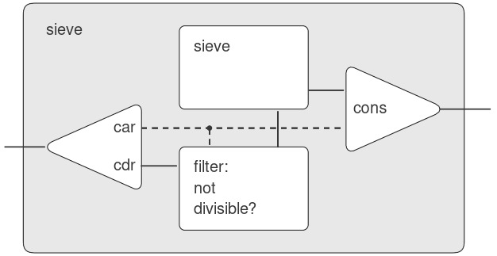
Figure 3.31: The prime sieve viewed as a signal-processing system.
Eratosthenes, một triết gia Hy Lạp ở Alexandria thế kỷ thứ 3 trước Công nguyên, nổi tiếng vì đã đưa ra ước tính chính xác đầu tiên về chu vi Trái Đất, được ông tính toán bằng cách quan sát bóng đổ vào buổi trưa ngày hạ chí. Phương pháp sàng của Eratosthenes, mặc dù cổ xưa, đã tạo nền tảng cho các phần cứng “sàng” chuyên dụng mà cho đến gần đây vẫn là công cụ mạnh nhất để tìm các số nguyên tố lớn. Tuy nhiên, từ những năm 1970, các phương pháp này đã được thay thế bởi các biến thể của các kỹ thuật xác suất được thảo luận trong 1.2.6.
Chúng tôi đặt tên cho các hình này theo Peter Henderson, người đầu tiên cho chúng tôi thấy các sơ đồ dạng này như một cách để suy nghĩ về xử lý stream. Mỗi đường liền nét biểu diễn một stream các giá trị đang được truyền. Đường gạch nối từ car đến cons và filter cho biết đây là một giá trị đơn lẻ chứ không phải một stream.
Defining streams implicitly
Các streams integers và fibs ở trên được định nghĩa bằng cách chỉ rõ các procedure (thủ tục) “sinh” ra các phần tử của stream một cách tường minh, từng phần tử một. Một cách thay thế để chỉ định streams là tận dụng delayed evaluation (đánh giá trì hoãn) để định nghĩa streams một cách ngầm định. Ví dụ, biểu thức sau định nghĩa stream ones là một stream vô hạn gồm toàn số 1:
(define ones (cons-stream 1 ones))
Điều này hoạt động gần giống như định nghĩa của một recursive procedure (thủ tục đệ quy): ones là một cặp có car là 1 và cdr là một lời hứa sẽ đánh giá ones. Việc đánh giá cdr lại cho ta một số 1 và một lời hứa sẽ đánh giá ones, và cứ thế tiếp tục.
Chúng ta có thể làm những điều thú vị hơn bằng cách thao tác trên streams với các phép toán như add-streams, phép này tạo ra tổng từng phần tử của hai streams cho trước:10
(define (add-streams s1 s2)
(stream-map + s1 s2))
Bây giờ chúng ta có thể định nghĩa các số nguyên như sau:
(define integers
(cons-stream 1 (add-streams ones integers)))
Định nghĩa này cho integers là một stream có phần tử đầu tiên là 1 và phần còn lại là tổng của ones và integers. Do đó, phần tử thứ hai của integers là 1 cộng với phần tử đầu tiên của integers, tức 2; phần tử thứ ba của integers là 1 cộng với phần tử thứ hai của integers, tức 3; và cứ thế tiếp tục. Định nghĩa này hoạt động vì, tại bất kỳ thời điểm nào, đã có đủ phần của stream integers được sinh ra để chúng ta có thể đưa nó trở lại định nghĩa nhằm tạo ra số nguyên tiếp theo.
Chúng ta có thể định nghĩa các số Fibonacci theo cùng phong cách:
(define fibs
(cons-stream
0 (cons-stream
1 (add-streams
(stream-cdr fibs) fibs))))
Định nghĩa này nói rằng fibs là một stream bắt đầu với 0 và 1, sao cho phần còn lại của stream có thể được tạo ra bằng cách cộng fibs với chính nó nhưng dịch sang phải một vị trí:
1 1 2 3 5 8 13 21 … = (stream-cdr fibs)
0 1 1 2 3 5 8 13 … = fibs
0 1 1 2 3 5 8 13 21 34 … = fibs
Scale-stream là một procedure hữu ích khác trong việc xây dựng các định nghĩa stream như vậy. Nó nhân mỗi phần tử trong một stream với một hằng số cho trước:
(define (scale-stream stream factor)
(stream-map
(lambda (x) (* x factor))
stream))
Ví dụ:
(define double
(cons-stream 1 (scale-stream double 2)))
tạo ra stream các lũy thừa của 2: 1, 2, 4, 8, 16, 32, ….
Một định nghĩa khác của stream các số nguyên tố có thể được đưa ra bằng cách bắt đầu với các số nguyên và lọc chúng bằng cách kiểm tra tính nguyên tố. Chúng ta sẽ cần số nguyên tố đầu tiên, 2, để bắt đầu:
(define primes
(cons-stream
2 (stream-filter
prime? (integers-starting-from 3))))
Định nghĩa này không đơn giản như vẻ bề ngoài, vì chúng ta sẽ kiểm tra một số $n$ có phải là số nguyên tố hay không bằng cách xem $n$ có chia hết cho một số nguyên tố (không phải bất kỳ số nguyên nào) nhỏ hơn hoặc bằng $\sqrt{n}$ hay không:
(define (prime? n)
(define (iter ps)
(cond ((> (square (stream-car ps)) n) true)
((divisible? n (stream-car ps)) false)
(else (iter (stream-cdr ps)))))
(iter primes))
Đây là một định nghĩa đệ quy, vì primes được định nghĩa dựa trên predicate prime?, mà bản thân nó lại sử dụng stream primes. Lý do procedure này hoạt động là vì, tại bất kỳ thời điểm nào, đã có đủ phần của stream primes được sinh ra để kiểm tra tính nguyên tố của các số mà chúng ta cần kiểm tra tiếp theo. Nghĩa là, với mỗi $n$ được kiểm tra tính nguyên tố, hoặc $n$ không phải là số nguyên tố (trong trường hợp này đã tồn tại một số nguyên tố được sinh ra chia hết cho nó) hoặc $n$ là số nguyên tố (trong trường hợp này đã tồn tại một số nguyên tố được sinh ra — tức là một số nguyên tố nhỏ hơn $n$ — mà lớn hơn $\sqrt{n}$).11
Điều này sử dụng phiên bản tổng quát của stream-map từ Bài tập 3.50.
Điểm cuối cùng này rất tinh tế và dựa trên thực tế rằng ${p_{n + 1} \leq p_{n}^{2}}.$ (Ở đây, $p_{k}$ ký hiệu số nguyên tố thứ $k$). Các ước lượng như thế này rất khó chứng minh. Chứng minh cổ xưa của Euclid rằng có vô hạn số nguyên tố cho thấy $p_{n + 1} \leq {p_{1}p_{2}\cdots p_{n} + 1}$, và không có kết quả nào tốt hơn đáng kể được chứng minh cho đến năm 1851, khi nhà toán học Nga P. L. Chebyshev chứng minh rằng $p_{n + 1} \leq 2p_{n}$ với mọi $n$. Kết quả này, ban đầu được dự đoán vào năm 1845, được gọi là Bertrand’s hypothesis. Một chứng minh có thể được tìm thấy trong mục 22.3 của Hardy và Wright 1960.
3.5.3 Exploiting the Stream Paradigm
Streams với delayed evaluation (đánh giá trì hoãn) có thể là một công cụ mô hình hóa mạnh mẽ, mang lại nhiều lợi ích của local state (trạng thái cục bộ) và assignment (gán). Hơn nữa, chúng tránh được một số rắc rối lý thuyết đi kèm với việc đưa assignment vào một ngôn ngữ lập trình.
Cách tiếp cận bằng stream có thể mang tính khai sáng vì nó cho phép chúng ta xây dựng các hệ thống với ranh giới module khác so với các hệ thống được tổ chức xoay quanh việc gán cho các state variables (biến trạng thái). Ví dụ, chúng ta có thể coi toàn bộ một chuỗi thời gian (time series) hoặc một tín hiệu (signal) là trọng tâm của sự quan tâm, thay vì các giá trị của các state variables tại từng thời điểm riêng lẻ. Điều này giúp thuận tiện trong việc kết hợp và so sánh các thành phần trạng thái từ những thời điểm khác nhau.
Formulating iterations as stream processes
Trong mục 1.2.1, chúng ta đã giới thiệu iterative processes (quá trình lặp), tiến hành bằng cách cập nhật các state variables. Giờ đây, chúng ta biết rằng có thể biểu diễn state như một stream “phi thời gian” (timeless) của các giá trị thay vì như một tập hợp các biến cần cập nhật. Hãy áp dụng góc nhìn này khi xem lại procedure (thủ tục) tính căn bậc hai từ 1.1.7. Nhớ rằng ý tưởng là tạo ra một sequence (dãy) các giá trị dự đoán ngày càng tốt hơn cho căn bậc hai của $x$ bằng cách áp dụng lặp đi lặp lại procedure cải thiện dự đoán:
(define (sqrt-improve guess x)
(average guess (/ x guess)))
Trong procedure sqrt ban đầu, chúng ta để các giá trị dự đoán này là các giá trị liên tiếp của một state variable. Thay vào đó, chúng ta có thể tạo ra stream vô hạn các giá trị dự đoán, bắt đầu với giá trị dự đoán ban đầu là 1:12
(define (sqrt-stream x)
(define guesses
(cons-stream
1.0 (stream-map
(lambda (guess)
(sqrt-improve guess x))
guesses)))
guesses)
(display-stream (sqrt-stream 2))
1.
1.5
1.4166666666666665
1.4142156862745097
1.4142135623746899
…
Chúng ta có thể tạo ra nhiều và nhiều hơn nữa các phần tử của stream để có các giá trị dự đoán ngày càng chính xác hơn. Nếu muốn, chúng ta có thể viết một procedure tiếp tục tạo ra các phần tử cho đến khi câu trả lời đủ chính xác. (Xem Bài tập 3.64.)
Một phép lặp khác mà chúng ta có thể xử lý theo cùng cách là tạo ra một giá trị xấp xỉ $\pi$, dựa trên chuỗi luân phiên dấu mà chúng ta đã thấy trong 1.3.1:
$$\frac{\pi}{4}, = , 1 - \frac{1}{3} + \frac{1}{5} - \frac{1}{7} + {\ldots.}$$
Trước tiên, chúng ta tạo ra stream các số hạng của chuỗi (nghịch đảo của các số lẻ, với dấu luân phiên). Sau đó, chúng ta lấy stream các tổng của ngày càng nhiều số hạng (sử dụng procedure partial-sums trong Bài tập 3.55) và nhân kết quả với 4:
(define (pi-summands n)
(cons-stream
(/ 1.0 n)
(stream-map - (pi-summands (+ n 2)))))
(define pi-stream
(scale-stream
(partial-sums (pi-summands 1)) 4))
(display-stream pi-stream)
4.
2.666666666666667
3.466666666666667
2.8952380952380956
3.3396825396825403
2.9760461760461765
3.2837384837384844
3.017071817071818
…
Điều này cho chúng ta một stream các giá trị xấp xỉ $\pi$ ngày càng tốt hơn, mặc dù các giá trị này hội tụ khá chậm. Tám số hạng của dãy giới hạn giá trị của $\pi$ trong khoảng từ 3.284 đến 3.017.
Cho đến giờ, việc sử dụng cách tiếp cận stream của các trạng thái không khác nhiều so với việc cập nhật các state variables. Nhưng streams cho chúng ta cơ hội thực hiện một số thủ thuật thú vị. Ví dụ, chúng ta có thể biến đổi một stream bằng một sequence accelerator (bộ tăng tốc dãy) để chuyển một dãy các giá trị xấp xỉ thành một dãy mới hội tụ đến cùng giá trị với dãy ban đầu, nhưng nhanh hơn.
Một bộ tăng tốc như vậy, do nhà toán học Thụy Sĩ thế kỷ 18 Leonhard Euler đề xuất, hoạt động tốt với các dãy là tổng từng phần của các chuỗi luân phiên dấu (các chuỗi có các số hạng luân phiên dấu). Trong kỹ thuật của Euler, nếu $S_{n}$ là số hạng thứ $n$ của dãy tổng ban đầu, thì dãy được tăng tốc có các số hạng:
$$S_{n + 1} - {\frac{(S_{n + 1} - S_{n})^{2}}{S_{n - 1} - 2S_{n} + S_{n + 1}}.}$$
Do đó, nếu dãy ban đầu được biểu diễn như một stream các giá trị, thì dãy đã biến đổi được cho bởi:
(define (euler-transform s)
(let ((s0 (stream-ref s 0)) ; Sₙ₋₁
(s1 (stream-ref s 1)) ; Sₙ
(s2 (stream-ref s 2))) ; Sₙ₊₁
(cons-stream
(- s2 (/ (square (- s2 s1))
(+ s0 (* -2 s1) s2)))
(euler-transform (stream-cdr s)))))
Chúng ta có thể minh họa việc tăng tốc Euler với dãy xấp xỉ $\pi$ của mình:
(display-stream
(euler-transform pi-stream))
3.166666666666667
3.1333333333333337
3.1452380952380956
3.13968253968254
3.1427128427128435
3.1408813408813416
3.142071817071818
3.1412548236077655
…
Thậm chí tốt hơn, chúng ta có thể tăng tốc dãy đã được tăng tốc, rồi đệ quy tăng tốc tiếp, và cứ thế. Cụ thể, chúng ta tạo ra một stream của các streams (một cấu trúc mà chúng ta sẽ gọi là tableau), trong đó mỗi stream là kết quả biến đổi của stream trước đó:
(define (make-tableau transform s)
(cons-stream
s
(make-tableau
transform
(transform s))))
Tableau có dạng:
$$\begin{array}{llllll} s_{00} & s_{01} & s_{02} & s_{03} & s_{04} & \ldots \ & s_{10} & s_{11} & s_{12} & s_{13} & \ldots \ & & s_{20} & s_{21} & s_{22} & \ldots \ & & & \ldots & & \ \end{array}$$
Cuối cùng, chúng ta tạo ra một dãy bằng cách lấy phần tử đầu tiên trong mỗi hàng của tableau:
(define (accelerated-sequence transform s)
(stream-map stream-car
(make-tableau transform s)))
Chúng ta có thể minh họa kiểu “siêu tăng tốc” này với dãy $\pi$:
(display-stream
(accelerated-sequence euler-transform
pi-stream))
4.
3.166666666666667
3.142105263157895
3.141599357319005
3.1415927140337785
3.1415926539752927
3.1415926535911765
3.141592653589778
…
Kết quả thật ấn tượng. Lấy tám số hạng của dãy cho ra giá trị chính xác của $\pi$ đến 14 chữ số thập phân. Nếu chỉ dùng dãy $\pi$ ban đầu, chúng ta sẽ cần tính khoảng $10^{13}$ số hạng (tức là khai triển chuỗi đủ xa để các số hạng riêng lẻ nhỏ hơn $10^{- 13}$) để đạt được độ chính xác đó!
Chúng ta hoàn toàn có thể hiện thực các kỹ thuật tăng tốc này mà không cần dùng streams. Nhưng cách diễn đạt bằng streams đặc biệt tao nhã và tiện lợi vì toàn bộ... (But the stream formulation is particularly elegant and convenient because the entire sequence of states is available to us as a data structure that can be manipulated with a uniform set of operations).
Streams as signals
Chúng ta bắt đầu thảo luận về streams bằng cách mô tả chúng như các tương đồng tính toán (computational analogs) của “signals” (tín hiệu) trong các hệ thống signal-processing (xử lý tín hiệu). Thực tế, chúng ta có thể sử dụng streams để mô hình hóa các hệ thống signal-processing một cách trực tiếp, bằng cách biểu diễn các giá trị của một tín hiệu tại các khoảng thời gian liên tiếp như các phần tử liên tiếp của một stream. Ví dụ, chúng ta có thể hiện thực một integrator (bộ tích phân) hoặc summer (bộ cộng dồn) sao cho, với một input stream $x = (x_{i})$, một giá trị ban đầu $C$, và một bước tăng nhỏ $dt$, sẽ cộng dồn tổng
$$S_{i}, = , C + {\sum\limits_{j = 1}^{i}x_{j}, dt}$$
và trả về stream các giá trị $S = (S_{i})$. Procedure (thủ tục) integral dưới đây gợi nhớ đến định nghĩa “implicit style” (phong cách ngầm định) của stream các số nguyên (3.5.2):
(define (integral integrand initial-value dt)
(define int
(cons-stream
initial-value
(add-streams (scale-stream integrand dt)
int)))
int)
Figure 3.32 là hình ảnh của một hệ thống signal-processing tương ứng với procedure integral. Input stream được nhân với $dt$ và truyền qua một adder (bộ cộng), đầu ra của nó lại được đưa ngược trở lại qua cùng adder đó. Sự tự tham chiếu trong định nghĩa của int được phản ánh trong hình bởi vòng phản hồi (feedback loop) nối đầu ra của adder với một trong các đầu vào của nó.

Figure 3.32: The integral procedure viewed as a signal-processing system.
3.5.4 Streams and Delayed Evaluation
Procedure integral ở cuối phần trước cho thấy cách chúng ta có thể sử dụng streams để mô hình hóa các hệ thống signal-processing có chứa các feedback loops (vòng phản hồi). Feedback loop cho adder được minh họa trong Hình 3.32 được mô hình hóa bởi thực tế là stream nội bộ int của integral được định nghĩa dựa trên chính nó:
(define int
(cons-stream
initial-value
(add-streams
(scale-stream integrand dt) int)))
Khả năng của interpreter (trình thông dịch) trong việc xử lý một định nghĩa ngầm định như vậy phụ thuộc vào delay được tích hợp trong cons-stream. Nếu không có delay này, interpreter sẽ không thể tạo ra int trước khi đánh giá cả hai đối số của cons-stream, điều này sẽ yêu cầu int đã được định nghĩa từ trước. Nói chung, delay là yếu tố then chốt để sử dụng streams nhằm mô hình hóa các hệ thống signal-processing có chứa vòng lặp. Nếu không có delay, các mô hình của chúng ta sẽ phải được xây dựng sao cho các input của bất kỳ thành phần signal-processing nào đều phải được đánh giá đầy đủ trước khi output có thể được tạo ra. Điều này sẽ loại bỏ khả năng có vòng lặp.
Thật không may, các mô hình stream của hệ thống có vòng lặp đôi khi đòi hỏi việc sử dụng delay vượt ra ngoài delay “ẩn” được cung cấp bởi cons-stream. Ví dụ, Hình 3.34 cho thấy một hệ thống signal-processing để giải phương trình vi phân $dy/dt = f(y)$, trong đó $f$ là một hàm cho trước. Hình này cho thấy một thành phần mapping (ánh xạ), áp dụng $f$ cho tín hiệu đầu vào của nó, được nối trong một vòng phản hồi với một integrator theo cách rất giống với các mạch analog computer (máy tính tương tự) thực tế được sử dụng để giải các phương trình như vậy.

Figure 3.34: An “analog computer circuit” that solves the equation $dy/dt = f(y)$.
Giả sử chúng ta được cho một giá trị ban đầu $y_{0}$ cho $y$, ta có thể thử mô hình hóa hệ thống này bằng procedure:
(define (solve f y0 dt)
(define y (integral dy y0 dt))
(define dy (stream-map f y))
y)
Procedure này không hoạt động, vì ở dòng đầu tiên của solve, lời gọi integral yêu cầu input dy phải được định nghĩa, điều này chưa xảy ra cho đến dòng thứ hai của solve.
Mặt khác, ý định của định nghĩa này là hợp lý, vì về nguyên tắc, chúng ta có thể bắt đầu tạo ra stream y mà không cần biết dy. Thật vậy, integral và nhiều thao tác stream khác có các đặc tính tương tự như cons-stream, ở chỗ chúng ta có thể tạo ra một phần của kết quả chỉ với thông tin một phần về các đối số. Với integral, phần tử đầu tiên của output stream là initial-value được chỉ định. Do đó, chúng ta có thể tạo ra phần tử đầu tiên của output stream mà không cần đánh giá integrand dy. Khi đã biết phần tử đầu tiên của y, stream-map ở dòng thứ hai của solve có thể bắt đầu hoạt động để tạo ra phần tử đầu tiên của dy, từ đó tạo ra phần tử tiếp theo của y, và cứ thế tiếp tục.
Để tận dụng ý tưởng này, chúng ta sẽ định nghĩa lại integral để mong đợi integrand stream là một delayed argument (đối số bị trì hoãn). Integral sẽ force integrand được đánh giá chỉ khi cần tạo ra nhiều hơn phần tử đầu tiên của output stream:
(define (integral
delayed-integrand initial-value dt)
(define int
(cons-stream
initial-value
(let ((integrand
(force delayed-integrand)))
(add-streams
(scale-stream integrand dt)
int))))
int)
Bây giờ chúng ta có thể hiện thực procedure solve bằng cách trì hoãn việc đánh giá dy trong định nghĩa của y:13
(define (solve f y0 dt)
(define y (integral (delay dy) y0 dt))
(define dy (stream-map f y))
y)
Nói chung, mọi lời gọi integral bây giờ đều phải delay đối số integrand. Chúng ta có thể chứng minh rằng procedure solve hoạt động bằng cách xấp xỉ $e \approx 2.718$ thông qua việc tính giá trị tại $y = 1$ của nghiệm phương trình vi phân $dy/dt = y$ với điều kiện ban đầu $y(0) = 1$:
(stream-ref
(solve (lambda (y) y) 1 0.001) 1000)
2.716924
Procedure này không được đảm bảo hoạt động trong mọi hiện thực Scheme, mặc dù với bất kỳ hiện thực nào cũng có một biến thể đơn giản sẽ hoạt động. Vấn đề liên quan đến sự khác biệt tinh vi trong cách các hiện thực Scheme xử lý các định nghĩa nội bộ. (Xem 4.1.6.)
Normal-order evaluation
Các ví dụ trong phần này minh họa cách việc sử dụng tường minh delay và force mang lại sự linh hoạt lớn trong lập trình, nhưng cũng cho thấy điều này có thể làm chương trình của chúng ta trở nên phức tạp hơn. Ví dụ, procedure (thủ tục) integral mới của chúng ta cho phép mô hình hóa các hệ thống có vòng lặp, nhưng giờ đây chúng ta phải nhớ rằng integral cần được gọi với một integrand (hàm tích phân) bị trì hoãn, và mọi procedure sử dụng integral đều phải nhận thức được điều này. Thực chất, chúng ta đã tạo ra hai loại procedure: các ordinary procedures (thủ tục thông thường) và các procedures nhận delayed arguments (đối số bị trì hoãn). Nói chung, việc tạo ra các loại procedure riêng biệt buộc chúng ta cũng phải tạo ra các loại higher-order procedures (thủ tục bậc cao) riêng biệt.14
Một cách để tránh nhu cầu có hai loại procedure khác nhau là làm cho tất cả các procedure đều nhận delayed arguments. Chúng ta có thể áp dụng một mô hình evaluation (đánh giá) trong đó mọi đối số truyền vào procedure đều tự động bị trì hoãn và chỉ được force khi thực sự cần thiết (ví dụ, khi được yêu cầu bởi một primitive operation). Điều này sẽ biến đổi ngôn ngữ của chúng ta sang sử dụng normal-order evaluation (đánh giá theo thứ tự chuẩn), mà chúng ta đã mô tả lần đầu khi giới thiệu substitution model (mô hình thế) cho evaluation trong 1.1.5. Việc chuyển sang normal-order evaluation mang lại một cách tiếp cận thống nhất và tao nhã để đơn giản hóa việc sử dụng delayed evaluation, và đây sẽ là một chiến lược tự nhiên nếu chúng ta chỉ quan tâm đến stream processing. Trong 4.2, sau khi nghiên cứu evaluator, chúng ta sẽ thấy cách biến đổi ngôn ngữ theo hướng này. Thật không may, việc đưa delays vào các lời gọi procedure sẽ phá vỡ khả năng thiết kế các chương trình phụ thuộc vào thứ tự sự kiện, chẳng hạn như các chương trình sử dụng assignment, thay đổi dữ liệu (mutate data), hoặc thực hiện input/output. Ngay cả một delay duy nhất trong cons-stream cũng có thể gây ra sự nhầm lẫn lớn, như minh họa trong Bài tập 3.51 và Bài tập 3.52. Theo như mọi người biết, mutability (tính thay đổi) và delayed evaluation không kết hợp tốt trong các ngôn ngữ lập trình, và việc tìm ra cách xử lý cả hai cùng lúc vẫn là một lĩnh vực nghiên cứu đang diễn ra.
3.5.5 Modularity of Functional Programs and Modularity of Objects
Như chúng ta đã thấy trong 3.1.2, một trong những lợi ích lớn của việc đưa assignment vào là chúng ta có thể tăng tính modularity (tính mô-đun) của hệ thống bằng cách đóng gói (encapsulating), hay “ẩn” một phần state (trạng thái) của một hệ thống lớn bên trong các local variables (biến cục bộ). Các mô hình stream có thể cung cấp tính modularity tương đương mà không cần sử dụng assignment. Để minh họa, chúng ta có thể hiện thực lại phép ước lượng Monte Carlo cho $\pi$, mà chúng ta đã xem xét trong 3.1.2, từ góc nhìn stream-processing.
Vấn đề modularity chính là chúng ta muốn ẩn state nội bộ của một random-number generator (bộ sinh số ngẫu nhiên) khỏi các chương trình sử dụng số ngẫu nhiên. Chúng ta bắt đầu với một procedure rand-update, các giá trị liên tiếp của nó cung cấp nguồn số ngẫu nhiên, và sử dụng nó để tạo ra một random-number generator:
(define rand
(let ((x random-init))
(lambda ()
(set! x (rand-update x))
x)))
Trong cách diễn đạt bằng stream, không có random-number generator per se (tự thân), chỉ có một stream các số ngẫu nhiên được tạo ra bởi các lời gọi liên tiếp tới rand-update:
(define random-numbers
(cons-stream random-init
(stream-map rand-update
random-numbers)))
Chúng ta sử dụng stream này để tạo ra stream kết quả của thí nghiệm Cesàro được thực hiện trên các cặp liên tiếp trong stream random-numbers:
(define cesaro-stream
(map-successive-pairs
(lambda (r1 r2) (= (gcd r1 r2) 1))
random-numbers))
(define (map-successive-pairs f s)
(cons-stream
(f (stream-car s)
(stream-car (stream-cdr s)))
(map-successive-pairs
f (stream-cdr (stream-cdr s)))))
Cesaro-stream sau đó được đưa vào procedure monte-carlo, procedure này tạo ra một stream các ước lượng xác suất. Các kết quả sau đó được chuyển đổi thành một stream các ước lượng của $\pi$. Phiên bản chương trình này không cần một tham số cho biết cần thực hiện bao nhiêu phép thử. Các ước lượng tốt hơn của $\pi$ (từ việc thực hiện nhiều thí nghiệm hơn) được thu nhận bằng cách xem sâu hơn vào stream pi:
(define (monte-carlo experiment-stream
passed
failed)
(define (next passed failed)
(cons-stream
(/ passed (+ passed failed))
(monte-carlo
(stream-cdr experiment-stream)
passed
failed)))
(if (stream-car experiment-stream)
(next (+ passed 1) failed)
(next passed (+ failed 1))))
(define pi
(stream-map
(lambda (p) (sqrt (/ 6 p)))
(monte-carlo cesaro-stream 0 0)))
Cách tiếp cận này có tính modularity đáng kể, vì chúng ta vẫn có thể xây dựng một procedure monte-carlo tổng quát có thể xử lý các thí nghiệm bất kỳ. Tuy nhiên, không hề có assignment hay local state.
Đây là một phản ánh nhỏ, trong Lisp, về những khó khăn mà các ngôn ngữ strongly typed (kiểu dữ liệu chặt chẽ) truyền thống như Pascal gặp phải khi xử lý higher-order procedures. Trong các ngôn ngữ như vậy, lập trình viên phải chỉ rõ kiểu dữ liệu của các đối số và kết quả của mỗi procedure: số, giá trị logic, sequence, v.v. Do đó, chúng ta không thể biểu diễn một abstraction như “áp dụng một procedure proc cho tất cả các phần tử trong một sequence” bằng một higher-order procedure duy nhất như stream-map. Thay vào đó, chúng ta sẽ cần một mapping procedure khác nhau cho mỗi tổ hợp kiểu dữ liệu đối số và kết quả có thể được chỉ định cho một proc. Việc duy trì một khái niệm “kiểu dữ liệu” thực tiễn trong bối cảnh có higher-order procedures đặt ra nhiều vấn đề khó khăn. Một cách xử lý vấn đề này được minh họa bởi ngôn ngữ ML (Gordon et al. 1979), với “polymorphic data types” bao gồm các mẫu cho các phép biến đổi bậc cao giữa các kiểu dữ liệu. Hơn nữa, kiểu dữ liệu cho hầu hết các procedure trong ML không bao giờ được lập trình viên khai báo tường minh. Thay vào đó, ML bao gồm một cơ chế type-inferencing sử dụng thông tin trong môi trường để suy ra kiểu dữ liệu cho các procedure mới được định nghĩa.
A functional-programming view of time
Bây giờ, chúng ta hãy quay lại các vấn đề về objects (đối tượng) và state (trạng thái) đã được nêu ra ở đầu chương này và xem xét chúng dưới một góc nhìn mới. Chúng ta đã giới thiệu assignment (gán) và mutable objects (đối tượng có thể thay đổi) để cung cấp một cơ chế cho việc xây dựng mô-đun các chương trình mô hình hóa các hệ thống có state. Chúng ta đã xây dựng các computational objects (đối tượng tính toán) với các local state variables (biến trạng thái cục bộ) và sử dụng assignment để thay đổi các biến này. Chúng ta đã mô hình hóa hành vi theo thời gian của các đối tượng trong thế giới thực bằng hành vi theo thời gian của các computational objects tương ứng.
Giờ đây, chúng ta đã thấy rằng streams cung cấp một cách tiếp cận thay thế để mô hình hóa các objects với local state. Chúng ta có thể mô hình hóa một đại lượng thay đổi, chẳng hạn như local state của một object, bằng cách sử dụng một stream biểu diễn lịch sử thời gian của các trạng thái liên tiếp. Về bản chất, chúng ta biểu diễn thời gian một cách tường minh, sử dụng streams, để tách rời thời gian trong thế giới mô phỏng khỏi chuỗi các sự kiện diễn ra trong quá trình evaluation (đánh giá). Thật vậy, do sự hiện diện của delay, có thể sẽ có rất ít mối liên hệ giữa thời gian mô phỏng trong mô hình và thứ tự các sự kiện trong quá trình evaluation.
Để so sánh hai cách tiếp cận này trong việc mô hình hóa, hãy xem xét lại việc hiện thực một “withdrawal processor” (bộ xử lý rút tiền) theo dõi số dư trong một tài khoản ngân hàng. Trong 3.1.3, chúng ta đã hiện thực một phiên bản đơn giản hóa của bộ xử lý này:
(define (make-simplified-withdraw balance)
(lambda (amount)
(set! balance (- balance amount))
balance))
Các lời gọi tới make-simplified-withdraw tạo ra các computational objects, mỗi object có một local state variable balance được giảm dần qua các lần gọi liên tiếp tới object đó. Object nhận một amount làm đối số và trả về số dư mới. Chúng ta có thể hình dung người dùng của một tài khoản ngân hàng nhập một chuỗi các giá trị vào object này và quan sát chuỗi giá trị trả về hiển thị trên màn hình.
Ngoài ra, chúng ta có thể mô hình hóa một withdrawal processor như một procedure nhận vào một số dư và một stream các khoản tiền cần rút, và tạo ra stream các số dư liên tiếp trong tài khoản:
(define (stream-withdraw balance amount-stream)
(cons-stream
balance
(stream-withdraw
(- balance (stream-car amount-stream))
(stream-cdr amount-stream))))
Stream-withdraw hiện thực một hàm toán học được xác định rõ ràng, trong đó output được xác định hoàn toàn bởi input. Tuy nhiên, giả sử rằng input amount-stream là stream các giá trị liên tiếp được người dùng nhập vào và stream số dư kết quả được hiển thị. Khi đó, từ góc nhìn của người dùng đang nhập giá trị và quan sát kết quả, quá trình stream này có cùng hành vi như object được tạo bởi make-simplified-withdraw. Tuy nhiên, với phiên bản stream, không có assignment, không có local state variable, và do đó không có những khó khăn lý thuyết mà chúng ta đã gặp trong 3.1.3. Thế nhưng hệ thống vẫn có state!
Điều này thực sự đáng chú ý. Mặc dù stream-withdraw hiện thực một hàm toán học được xác định rõ ràng với hành vi không thay đổi, nhưng cảm nhận của người dùng ở đây lại là đang tương tác với một hệ thống có state thay đổi. Một cách để giải quyết nghịch lý này là nhận ra rằng chính sự tồn tại theo thời gian của người dùng đã áp đặt state lên hệ thống. Nếu người dùng có thể tách mình ra khỏi quá trình tương tác và suy nghĩ theo các streams của số dư thay vì các giao dịch riêng lẻ, hệ thống sẽ có vẻ như không có state.15
Từ góc nhìn của một phần trong một quá trình phức tạp, các phần khác có vẻ thay đổi theo thời gian. Chúng có local state ẩn thay đổi theo thời gian. Nếu chúng ta muốn viết các chương trình mô hình hóa kiểu phân rã tự nhiên này trong thế giới của chúng ta (như chúng ta nhìn thấy nó từ góc nhìn của mình như một phần của thế giới đó) bằng các cấu trúc trong máy tính, chúng ta tạo ra các computational objects không phải là functional — chúng phải thay đổi theo thời gian. Chúng ta mô hình hóa state bằng các local state variables, và mô hình hóa sự thay đổi của state bằng các assignment tới các biến đó. Bằng cách này, chúng ta làm cho thời gian thực thi của một phép tính mô hình hóa thời gian trong thế giới mà chúng ta là một phần của nó, và do đó chúng ta có được các “objects” trong máy tính của mình.
Tương tự trong vật lý, khi chúng ta quan sát một hạt đang chuyển động, chúng ta nói rằng vị trí (state) của hạt đang thay đổi. Tuy nhiên, từ góc nhìn của world line (đường thế giới) của hạt trong không-thời gian, không có sự thay đổi nào xảy ra.
Việc mô hình hóa bằng objects (đối tượng) là mạnh mẽ và trực quan, phần lớn vì điều này phù hợp với nhận thức về việc tương tác với một thế giới mà chúng ta là một phần của nó. Tuy nhiên, như chúng ta đã thấy nhiều lần trong suốt chương này, các mô hình này nảy sinh những vấn đề nan giải về việc ràng buộc thứ tự các sự kiện và đồng bộ hóa nhiều tiến trình. Khả năng tránh được những vấn đề này đã thúc đẩy sự phát triển của functional programming languages (“ngôn ngữ lập trình hàm”), vốn không bao gồm bất kỳ cơ chế nào cho assignment (gán) hoặc mutable data (dữ liệu có thể thay đổi). Trong một ngôn ngữ như vậy, tất cả các procedures (thủ tục) đều hiện thực các hàm toán học được xác định rõ ràng của các đối số của chúng, với hành vi không thay đổi. Cách tiếp cận functional đặc biệt hấp dẫn khi xử lý các hệ thống đồng thời.16
Mặt khác, nếu quan sát kỹ, chúng ta có thể thấy các vấn đề liên quan đến thời gian cũng len lỏi vào các mô hình functional. Một lĩnh vực đặc biệt rắc rối xuất hiện khi chúng ta muốn thiết kế các hệ thống tương tác, đặc biệt là những hệ thống mô hình hóa sự tương tác giữa các thực thể độc lập. Ví dụ, hãy xem xét lại việc hiện thực một hệ thống ngân hàng cho phép các tài khoản chung. Trong một hệ thống thông thường sử dụng assignment và objects, chúng ta sẽ mô hình hóa việc Peter và Paul chia sẻ một tài khoản bằng cách để cả Peter và Paul gửi các yêu cầu giao dịch của họ tới cùng một bank-account object (đối tượng tài khoản ngân hàng), như chúng ta đã thấy trong 3.1.3. Từ góc nhìn stream, nơi không có “objects” per se (tự thân), chúng ta đã chỉ ra rằng một tài khoản ngân hàng có thể được mô hình hóa như một process (tiến trình) hoạt động trên một stream các yêu cầu giao dịch để tạo ra một stream các phản hồi. Theo đó, chúng ta có thể mô hình hóa việc Peter và Paul có một tài khoản chung bằng cách trộn (merge) stream các yêu cầu giao dịch của Peter với stream các yêu cầu của Paul và đưa kết quả vào process stream của tài khoản ngân hàng, như minh họa trong Hình 3.38.

Figure 3.38: A joint bank account, modeled by merging two streams of transaction requests.
Vấn đề với cách diễn đạt này nằm ở khái niệm merge. Không thể chỉ đơn giản trộn hai stream bằng cách lần lượt lấy một yêu cầu từ Peter rồi một yêu cầu từ Paul. Giả sử Paul chỉ truy cập tài khoản rất hiếm khi. Chúng ta khó có thể bắt Peter phải đợi Paul truy cập tài khoản trước khi anh ta có thể thực hiện giao dịch thứ hai. Dù merge được hiện thực theo cách nào, nó phải xen kẽ hai stream giao dịch theo một cách nào đó bị ràng buộc bởi “thời gian thực” như Peter và Paul cảm nhận, theo nghĩa là, nếu Peter và Paul gặp nhau, họ có thể đồng ý rằng một số giao dịch đã được xử lý trước khi gặp, và các giao dịch khác được xử lý sau khi gặp.17 Đây chính xác là cùng một ràng buộc mà chúng ta đã phải xử lý trong 3.4.1, nơi chúng ta nhận thấy cần phải đưa vào cơ chế đồng bộ hóa tường minh để đảm bảo một thứ tự sự kiện “đúng” trong xử lý đồng thời các objects có state. Do đó, trong nỗ lực hỗ trợ phong cách functional, nhu cầu trộn các input từ các tác nhân khác nhau lại tái đưa vào những vấn đề mà phong cách functional vốn nhằm loại bỏ.
Chúng ta bắt đầu chương này với mục tiêu xây dựng các mô hình tính toán có cấu trúc phù hợp với nhận thức của chúng ta về thế giới thực mà chúng ta đang cố gắng mô hình hóa. Chúng ta có thể mô hình hóa thế giới như một tập hợp các objects riêng biệt, bị ràng buộc bởi thời gian, tương tác với nhau và có state, hoặc chúng ta có thể mô hình hóa thế giới như một thể thống nhất, phi thời gian, không có state. Mỗi góc nhìn đều có những ưu điểm mạnh mẽ, nhưng không góc nhìn nào tự nó là hoàn toàn thỏa đáng. Một sự thống nhất lớn vẫn chưa xuất hiện.18
John Backus, nhà phát minh Fortran, đã đưa lập trình hàm lên vị trí nổi bật khi ông được trao giải ACM Turing năm 1978. Bài phát biểu nhận giải của ông (Backus 1978) đã mạnh mẽ ủng hộ cách tiếp cận functional. Một cái nhìn tổng quan tốt về lập trình hàm được trình bày trong Henderson 1980 và Darlington et al. 1982.
Lưu ý rằng, với bất kỳ hai stream nào, nói chung sẽ có nhiều hơn một thứ tự xen kẽ chấp nhận được. Do đó, về mặt kỹ thuật, “merge” là một quan hệ hơn là một hàm — câu trả lời không phải là một hàm xác định của các input. Chúng ta đã đề cập (Footnote 167) rằng tính không xác định (nondeterminism) là điều thiết yếu khi xử lý tính đồng thời. Quan hệ merge minh họa cùng một tính không xác định thiết yếu đó, từ góc nhìn functional. Trong 4.3, chúng ta sẽ xem xét tính không xác định từ một góc nhìn khác.
Mô hình object mô phỏng thế giới bằng cách chia nó thành các phần riêng biệt. Mô hình functional không phân mô-đun theo ranh giới object. Mô hình object hữu ích khi phần state không chia sẻ của các “objects” lớn hơn nhiều so với phần state mà chúng chia sẻ. Một ví dụ về nơi góc nhìn object thất bại là cơ học lượng tử, nơi việc nghĩ về sự vật như các hạt riêng lẻ dẫn đến nghịch lý và nhầm lẫn. Việc thống nhất góc nhìn object với góc nhìn functional có thể ít liên quan đến lập trình, mà nhiều hơn đến các vấn đề nhận thức luận cơ bản.
4.1 Bộ thông dịch Metacircular
Bộ thông dịch (evaluator) của chúng ta cho Lisp sẽ được hiện thực như một chương trình Lisp. Có thể điều này nghe có vẻ vòng lặp khi nghĩ về việc đánh giá (evaluate) các chương trình Lisp bằng một bộ thông dịch cũng được viết bằng Lisp. Tuy nhiên, evaluation (quá trình đánh giá) là một process (quá trình), vì vậy việc mô tả quá trình này bằng Lisp là hoàn toàn hợp lý, bởi Lisp chính là công cụ của chúng ta để mô tả các quá trình1. Một bộ thông dịch được viết bằng chính ngôn ngữ mà nó đánh giá được gọi là metacircular.
Bộ thông dịch metacircular về cơ bản là một hiện thực bằng Scheme của environment model of evaluation (mô hình môi trường của quá trình đánh giá) đã được mô tả ở mục 3.2. Hãy nhớ rằng mô hình này có hai phần cơ bản:
- Để đánh giá một combination (tổ hợp — một biểu thức phức hợp không phải special form), ta đánh giá các subexpression (biểu thức con) rồi áp dụng giá trị của operator subexpression (biểu thức toán tử) lên các giá trị của operand subexpression (biểu thức toán hạng).
- Để áp dụng một compound procedure (thủ tục phức hợp) lên một tập đối số, ta đánh giá phần body (thân) của procedure trong một environment (môi trường) mới. Để tạo ra môi trường này, ta mở rộng phần môi trường của đối tượng procedure bằng một frame (khung) trong đó các formal parameter (tham số hình thức) của procedure được gán với các đối số mà procedure được áp dụng.
Hai quy tắc này mô tả bản chất của quá trình evaluation: một chu trình cơ bản trong đó các biểu thức cần được đánh giá trong môi trường được rút gọn thành các procedure sẽ được áp dụng lên các đối số, rồi lại được rút gọn thành các biểu thức mới để đánh giá trong các môi trường mới, và cứ thế tiếp diễn, cho đến khi ta gặp các symbol (ký hiệu) — giá trị của chúng được tra cứu trong môi trường — và các primitive procedure (thủ tục nguyên thủy) — được áp dụng trực tiếp (xem Hình 4.1)2. Chu trình evaluation này sẽ được thể hiện qua sự tương tác giữa hai procedure quan trọng trong bộ thông dịch: eval và apply, được mô tả ở mục 4.1.1 (xem Hình 4.1).

Figure 4.1: The eval-apply cycle exposes the essence of a computer language.
Việc hiện thực bộ thông dịch sẽ phụ thuộc vào các procedure định nghĩa syntax (cú pháp) của các biểu thức cần đánh giá. Chúng ta sẽ sử dụng data abstraction (trừu tượng hóa dữ liệu) để làm cho bộ thông dịch độc lập với cách biểu diễn của ngôn ngữ. Ví dụ, thay vì cố định rằng một assignment (gán) được biểu diễn bằng một danh sách bắt đầu với symbol set!, ta sử dụng một abstract predicate (mệnh đề trừu tượng) assignment? để kiểm tra xem đó có phải là một assignment hay không, và sử dụng các abstract selector (bộ chọn trừu tượng) assignment-variable và assignment-value để truy cập các phần của một assignment. Việc hiện thực các biểu thức sẽ được mô tả chi tiết ở mục 4.1.2. Ngoài ra còn có các thao tác, được mô tả ở mục 4.1.3, quy định cách biểu diễn các procedure và environment. Ví dụ, make-procedure tạo ra các compound procedure, lookup-variable-value truy cập giá trị của biến, và apply-primitive-procedure áp dụng một primitive procedure lên một danh sách đối số cho trước.
4.1.1 Lõi của bộ thông dịch
Quá trình evaluation có thể được mô tả như sự tương tác giữa hai procedure: eval và apply.
Eval
Eval nhận vào hai đối số: một expression (biểu thức) và một environment. Nó phân loại biểu thức và điều hướng quá trình đánh giá. Eval được cấu trúc như một phân tích theo trường hợp dựa trên syntactic type (kiểu cú pháp) của biểu thức cần đánh giá. Để giữ cho procedure này tổng quát, ta diễn đạt việc xác định kiểu của một biểu thức một cách trừu tượng, không ràng buộc vào bất kỳ cách biểu diễn cụ thể nào cho các loại biểu thức khác nhau. Mỗi loại biểu thức có một predicate (mệnh đề kiểm tra) để nhận diện và một phương thức trừu tượng để chọn các thành phần của nó. Abstract syntax (cú pháp trừu tượng) này giúp ta dễ dàng thay đổi cú pháp của ngôn ngữ bằng cách sử dụng cùng một bộ thông dịch nhưng với một tập hợp procedure cú pháp khác.
Primitive expressions
- Với self-evaluating expression (biểu thức tự đánh giá), chẳng hạn như số,
evaltrả về chính biểu thức đó. Evalphải tra cứu các biến trong environment để tìm giá trị của chúng.
Special forms
- Với quoted expression (biểu thức trích dẫn),
evaltrả về biểu thức được trích dẫn. - Một assignment hoặc definition (định nghĩa) của biến phải đệ quy gọi
evalđể tính toán giá trị mới sẽ gán cho biến. Environment phải được sửa đổi để thay đổi (hoặc tạo mới) binding (liên kết) của biến. - Một biểu thức
ifyêu cầu xử lý đặc biệt các thành phần của nó, sao cho đánh giá consequent (nhánh đúng) nếu predicate (điều kiện) là đúng, và ngược lại thì đánh giá alternative (nhánh sai). - Một biểu thức
lambdaphải được biến đổi thành một procedure có thể áp dụng bằng cách đóng gói các parameter (tham số) và body được chỉ định bởi biểu thứclambdacùng với environment của quá trình đánh giá. - Một biểu thức
beginyêu cầu đánh giá tuần tự các biểu thức của nó theo đúng thứ tự xuất hiện. - Một case analysis (
cond) được biến đổi thành một chuỗi lồng nhau của các biểu thứcifrồi được đánh giá.
Combinations
- Với một procedure application (ứng dụng thủ tục),
evalphải đệ quy đánh giá phần operator và các operand của combination. Procedure và các đối số thu được sẽ được truyền choapply, procedure này sẽ xử lý việc áp dụng thủ tục thực sự.
Dưới đây là định nghĩa của eval:
(define (eval exp env)
(cond ((self-evaluating? exp)
exp)
((variable? exp)
(lookup-variable-value exp env))
((quoted? exp)
(text-of-quotation exp))
((assignment? exp)
(eval-assignment exp env))
((definition? exp)
(eval-definition exp env))
((if? exp)
(eval-if exp env))
((lambda? exp)
(make-procedure
(lambda-parameters exp)
(lambda-body exp)
env))
((begin? exp)
(eval-sequence
(begin-actions exp)
env))
((cond? exp)
(eval (cond->if exp) env))
((application? exp)
(apply (eval (operator exp) env)
(list-of-values
(operands exp)
env)))
(else
(error "Unknown expression
type: EVAL" exp))))
Mặc dù vậy, vẫn còn những khía cạnh quan trọng của quá trình evaluation mà bộ thông dịch này không làm sáng tỏ. Quan trọng nhất trong số đó là các cơ chế chi tiết mà các procedure gọi các procedure khác và trả về giá trị cho lời gọi của chúng. Chúng ta sẽ giải quyết các vấn đề này ở Chương 5, nơi chúng ta xem xét kỹ hơn quá trình evaluation bằng cách hiện thực bộ thông dịch như một register machine (máy thanh ghi) đơn giản.
Nếu chúng ta cho phép mình khả năng áp dụng các primitive, vậy còn lại điều gì cần hiện thực trong bộ thông dịch? Nhiệm vụ của bộ thông dịch không phải là xác định các primitive của ngôn ngữ, mà là cung cấp connective tissue (mô liên kết) — phương tiện kết hợp và phương tiện trừu tượng hóa — để gắn kết một tập hợp các primitive thành một ngôn ngữ. Cụ thể là:....
Để rõ ràng, eval đã được hiện thực như một phân tích theo trường hợp sử dụng cond. Nhược điểm của cách này là procedure (thủ tục) của chúng ta chỉ xử lý được một vài loại biểu thức có thể phân biệt được, và không thể định nghĩa loại mới nếu không chỉnh sửa định nghĩa của eval. Trong hầu hết các hiện thực Lisp, việc phân nhánh theo loại của một biểu thức được thực hiện theo data-directed style (phong cách điều hướng theo dữ liệu). Cách này cho phép người dùng thêm các loại biểu thức mới mà eval có thể phân biệt, mà không cần sửa đổi định nghĩa của eval (xem Bài tập 4.3).
Apply
Apply nhận hai đối số: một procedure và một danh sách các đối số mà procedure sẽ được áp dụng lên. Apply phân loại procedure thành hai loại: nó gọi apply-primitive-procedure để áp dụng các primitive; nó áp dụng các compound procedure bằng cách tuần tự đánh giá các biểu thức tạo nên phần body của procedure. Environment cho việc đánh giá body của một compound procedure được tạo ra bằng cách mở rộng environment cơ sở mà procedure mang theo, để bao gồm một frame ràng buộc các parameter của procedure với các đối số mà procedure sẽ được áp dụng. Dưới đây là định nghĩa của apply:
(define (apply procedure arguments)
(cond ((primitive-procedure? procedure)
(apply-primitive-procedure
procedure
arguments))
((compound-procedure? procedure)
(eval-sequence
(procedure-body procedure)
(extend-environment
(procedure-parameters
procedure)
arguments
(procedure-environment
procedure))))
(else
(error "Unknown procedure
type: APPLY"
procedure))))
Procedure arguments
Khi eval xử lý một procedure application (ứng dụng thủ tục), nó sử dụng list-of-values để tạo ra danh sách các đối số mà procedure sẽ được áp dụng lên. List-of-values nhận vào các operand của combination. Nó đánh giá từng operand và trả về một danh sách các giá trị tương ứng:3
(define (list-of-values exps env)
(if (no-operands? exps)
'()
(cons (eval (first-operand exps) env)
(list-of-values
(rest-operands exps)
env))))
Conditionals
Eval-if đánh giá phần predicate của một biểu thức if trong environment đã cho. Nếu kết quả là true, eval-if đánh giá consequent, ngược lại nó đánh giá alternative:
(define (eval-if exp env)
(if (true? (eval (if-predicate exp) env))
(eval (if-consequent exp) env)
(eval (if-alternative exp) env)))
Việc sử dụng true? trong eval-if làm nổi bật vấn đề về mối liên hệ giữa implemented language (ngôn ngữ được hiện thực) và implementation language (ngôn ngữ hiện thực). If-predicate được đánh giá trong ngôn ngữ được hiện thực và do đó trả về một giá trị trong ngôn ngữ đó. Interpreter predicate true? dịch giá trị đó thành một giá trị có thể được kiểm tra bởi if trong ngôn ngữ hiện thực: Metacircular representation (biểu diễn metacircular) của giá trị đúng có thể không giống với biểu diễn của Scheme nền tảng4.
Sequences
Eval-sequence được apply sử dụng để đánh giá chuỗi các biểu thức trong body của một procedure và được eval sử dụng để đánh giá chuỗi các biểu thức trong một biểu thức begin. Nó nhận vào một chuỗi các biểu thức và một environment, và đánh giá các biểu thức theo thứ tự xuất hiện. Giá trị trả về là giá trị của biểu thức cuối cùng.
(define (eval-sequence exps env)
(cond ((last-exp? exps)
(eval (first-exp exps) env))
(else
(eval (first-exp exps) env)
(eval-sequence (rest-exps exps)
env))))
Assignments and definitions
Procedure sau đây xử lý các assignment cho biến. Nó gọi eval để tìm giá trị sẽ được gán và truyền biến cùng giá trị thu được cho set-variable-value! để cài đặt trong environment được chỉ định.
(define (eval-assignment exp env)
(set-variable-value!
(assignment-variable exp)
(eval (assignment-value exp) env)
env)
'ok)
Các definition của biến được xử lý theo cách tương tự5.
(define (eval-definition exp env)
(define-variable!
(definition-variable exp)
(eval (definition-value exp) env)
env)
'ok)
Chúng tôi chọn trả về symbol ok như giá trị của một assignment hoặc một definition6.
Chúng ta có thể đã đơn giản hóa mệnh đề application? trong eval bằng cách sử dụng map (và quy định rằng operands trả về một danh sách) thay vì viết tường minh procedure list-of-values. Chúng tôi chọn không dùng map ở đây để nhấn mạnh rằng bộ thông dịch có thể được hiện thực mà không cần sử dụng bất kỳ higher-order procedure (thủ tục bậc cao) nào (và do đó có thể được viết trong một ngôn ngữ không có thủ tục bậc cao), mặc dù ngôn ngữ mà nó hỗ trợ sẽ bao gồm các thủ tục bậc cao.
Trong trường hợp này, ngôn ngữ được hiện thực và ngôn ngữ hiện thực là giống nhau. Việc suy ngẫm về ý nghĩa của true? ở đây mang lại sự mở rộng nhận thức mà không cần lạm dụng chất kích thích.
Việc hiện thực define này bỏ qua một vấn đề tinh tế trong xử lý internal definition (định nghĩa nội bộ), mặc dù nó hoạt động đúng trong hầu hết các trường hợp. Chúng ta sẽ thấy vấn đề này và cách giải quyết ở mục 4.1.6.
Như chúng tôi đã nói khi giới thiệu define và set!, các giá trị này phụ thuộc vào hiện thực trong Scheme — nghĩa là, người hiện thực có thể chọn giá trị nào sẽ trả về.
4.1.2 Biểu diễn Expressions
Bộ thông dịch (evaluator) gợi nhớ đến chương trình symbolic differentiation (vi phân ký hiệu) đã được thảo luận ở mục 2.3.2. Cả hai chương trình đều thao tác trên symbolic expression (biểu thức ký hiệu). Trong cả hai chương trình, kết quả của việc thao tác trên một compound expression (biểu thức phức hợp) được xác định bằng cách đệ quy thao tác trên các phần của biểu thức và kết hợp các kết quả theo một cách phụ thuộc vào loại của biểu thức. Trong cả hai chương trình, chúng ta đều sử dụng data abstraction (trừu tượng hóa dữ liệu) để tách rời các quy tắc thao tác tổng quát khỏi chi tiết về cách biểu diễn các biểu thức. Trong chương trình vi phân, điều này có nghĩa là cùng một differentiation procedure (thủ tục vi phân) có thể xử lý các biểu thức đại số ở dạng prefix (tiền tố), infix (trung tố), hoặc một dạng khác. Đối với bộ thông dịch, điều này có nghĩa là syntax (cú pháp) của ngôn ngữ được đánh giá được xác định hoàn toàn bởi các procedure phân loại và trích xuất các phần của biểu thức.
Dưới đây là đặc tả cú pháp của ngôn ngữ chúng ta:
-
Các self-evaluating item (phần tử tự đánh giá) duy nhất là số và chuỗi:
(define (self-evaluating? exp) (cond ((number? exp) true) ((string? exp) true) (else false))) -
Variable (biến) được biểu diễn bằng symbol (ký hiệu):
(define (variable? exp) (symbol? exp)) -
Quotation (biểu thức trích dẫn) có dạng
(quote ⟨text-of-quotation⟩):7(define (quoted? exp) (tagged-list? exp 'quote)) (define (text-of-quotation exp) (cadr exp))Quoted?được định nghĩa dựa trên proceduretagged-list?, procedure này nhận diện các danh sách bắt đầu bằng một symbol được chỉ định:(define (tagged-list? exp tag) (if (pair? exp) (eq? (car exp) tag) false)) -
Assignment (gán) có dạng
(set! ⟨var⟩ ⟨value⟩):(define (assignment? exp) (tagged-list? exp 'set!)) (define (assignment-variable exp) (cadr exp)) (define (assignment-value exp) (caddr exp)) -
Definition (định nghĩa) có dạng
(define ⟨var⟩ ⟨value⟩)hoặc dạng
(define (⟨var⟩ ⟨param₁⟩ … ⟨paramₙ⟩) ⟨body⟩)Dạng sau (định nghĩa procedure chuẩn) là syntactic sugar (cú pháp rút gọn) cho
(define ⟨var⟩ (lambda (⟨param₁⟩ … ⟨paramₙ⟩) ⟨body⟩))Các syntax procedure (thủ tục cú pháp) tương ứng như sau:
(define (definition? exp) (tagged-list? exp 'define)) (define (definition-variable exp) (if (symbol? (cadr exp)) (cadr exp) (caadr exp))) (define (definition-value exp) (if (symbol? (cadr exp)) (caddr exp) (make-lambda (cdadr exp) ; formal parameters (cddr exp)))) ; body -
Biểu thức
lambdalà danh sách bắt đầu bằng symbollambda:(define (lambda? exp) (tagged-list? exp 'lambda)) (define (lambda-parameters exp) (cadr exp)) (define (lambda-body exp) (cddr exp))Chúng ta cũng cung cấp một constructor (hàm tạo) cho biểu thức
lambda, được sử dụng bởidefinition-valueở trên:(define (make-lambda parameters body) (cons 'lambda (cons parameters body))) -
Conditional (câu điều kiện) bắt đầu với
ifvà có một predicate (điều kiện), một consequent (nhánh đúng), và một alternative (nhánh sai — tùy chọn). Nếu biểu thức không có phần alternative, chúng ta cung cấpfalselàm alternative8.(define (if? exp) (tagged-list? exp 'if)) (define (if-predicate exp) (cadr exp)) (define (if-consequent exp) (caddr exp)) (define (if-alternative exp) (if (not (null? (cdddr exp))) (cadddr exp) 'false))Chúng ta cũng cung cấp một constructor cho biểu thức
if, đượccond->ifsử dụng để biến đổi các biểu thứccondthành các biểu thứcif:(define (make-if predicate consequent alternative) (list 'if predicate consequent alternative)) -
Beginđóng gói một chuỗi các biểu thức thành một biểu thức duy nhất. Chúng ta bao gồm các thao tác cú pháp trên biểu thứcbeginđể trích xuất chuỗi thực tế từ biểu thứcbegin, cũng như các selector (bộ chọn) trả về biểu thức đầu tiên và phần còn lại của chuỗi9.(define (begin? exp) (tagged-list? exp 'begin)) (define (begin-actions exp) (cdr exp)) (define (last-exp? seq) (null? (cdr seq))) (define (first-exp seq) (car seq)) (define (rest-exps seq) (cdr seq))Chúng ta cũng bao gồm một constructor
sequence->exp(đượccond->ifsử dụng) để biến đổi một chuỗi thành một biểu thức duy nhất, sử dụngbeginnếu cần:(define (sequence->exp seq) (cond ((null? seq) seq) ((last-exp? seq) (first-exp seq)) (else (make-begin seq)))) (define (make-begin seq) (cons 'begin seq)) -
Một procedure application (ứng dụng thủ tục) là bất kỳ biểu thức phức hợp nào không thuộc các loại biểu thức ở trên.
Carcủa biểu thức là operator (toán tử), vàcdrlà danh sách các operand (toán hạng):(define (application? exp) (pair? exp)) (define (operator exp) (car exp)) (define (operands exp) (cdr exp)) (define (no-operands? ops) (null? ops)) (define (first-operand ops) (car ops)) (define (rest-operands ops) (cdr ops))
Như đã đề cập ở mục 2.3.1, bộ thông dịch nhìn một quoted expression (biểu thức trích dẫn) như một danh sách bắt đầu với quote, ngay cả khi biểu thức được gõ với dấu nháy đơn. Ví dụ, biểu thức 'a sẽ được bộ thông dịch nhìn như (quote a). Xem Bài tập 2.55.
Giá trị của một biểu thức if khi predicate là false và không có alternative là không được chỉ định trong Scheme; ở đây chúng ta chọn giá trị là false. Chúng ta sẽ hỗ trợ việc sử dụng các biến true và false trong các biểu thức được đánh giá bằng cách ràng buộc chúng trong global environment (môi trường toàn cục). Xem mục 4.1.4.
Các selector này cho một danh sách biểu thức — và các selector tương ứng cho một danh sách operand — không nhằm mục đích là một data abstraction. Chúng được giới thiệu như các tên gợi nhớ cho các thao tác danh sách cơ bản để giúp dễ hiểu hơn bộ thông dịch explicit-control (điều khiển tường minh) ở mục 5.4.
Derived expressions
Một số special form (dạng đặc biệt) trong ngôn ngữ của chúng ta có thể được định nghĩa dựa trên các biểu thức liên quan đến các special form khác, thay vì được hiện thực trực tiếp. Một ví dụ là cond, có thể được hiện thực như một chuỗi lồng nhau của các biểu thức if. Ví dụ, chúng ta có thể rút gọn bài toán đánh giá biểu thức
(cond ((> x 0) x)
((= x 0) (display 'zero) 0)
(else (- x)))
thành bài toán đánh giá biểu thức sau, có sử dụng các biểu thức if và begin:
(if (> x 0)
x
(if (= x 0)
(begin (display 'zero) 0)
(- x)))
Hiện thực việc đánh giá cond theo cách này giúp đơn giản hóa bộ thông dịch vì nó giảm số lượng special form mà quá trình đánh giá phải được chỉ định tường minh.
Chúng ta bao gồm các syntax procedure (thủ tục cú pháp) để trích xuất các phần của một biểu thức cond, và một procedure cond->if để biến đổi các biểu thức cond thành các biểu thức if. Một case analysis (phân tích trường hợp) bắt đầu với cond và có một danh sách các predicate-action clause (mệnh đề điều kiện-hành động). Một mệnh đề là mệnh đề else nếu predicate của nó là symbol else.10
(define (cond? exp)
(tagged-list? exp 'cond))
(define (cond-clauses exp) (cdr exp))
(define (cond-else-clause? clause)
(eq? (cond-predicate clause) 'else))
(define (cond-predicate clause)
(car clause))
(define (cond-actions clause)
(cdr clause))
(define (cond->if exp)
(expand-clauses (cond-clauses exp)))
(define (expand-clauses clauses)
(if (null? clauses)
'false ; no else clause
(let ((first (car clauses))
(rest (cdr clauses)))
(if (cond-else-clause? first)
(if (null? rest)
(sequence->exp
(cond-actions first))
(error "ELSE clause isn't
last: COND->IF"
clauses))
(make-if (cond-predicate first)
(sequence->exp
(cond-actions first))
(expand-clauses
rest))))))
Các biểu thức (như cond) mà chúng ta chọn hiện thực dưới dạng các syntactic transformation (biến đổi cú pháp) được gọi là derived expression (biểu thức dẫn xuất). Biểu thức let cũng là derived expression (xem Bài tập 4.6).11
4.1.3 Evaluator Data Structures
Ngoài việc định nghĩa cú pháp bên ngoài của các biểu thức, hiện thực của bộ thông dịch cũng phải định nghĩa các data structure (cấu trúc dữ liệu) mà bộ thông dịch thao tác nội bộ, như một phần của việc thực thi chương trình, chẳng hạn như cách biểu diễn procedure và environment, cũng như cách biểu diễn giá trị true và false.
Testing of predicates
Đối với các câu điều kiện, chúng ta chấp nhận bất kỳ giá trị nào là true miễn là nó không phải đối tượng false tường minh.
(define (true? x)
(not (eq? x false)))
(define (false? x)
(eq? x false))
Representing procedures
Để xử lý primitive (thủ tục nguyên thủy), chúng ta giả định rằng có sẵn các procedure sau:
-
(apply-primitive-procedure ⟨proc⟩ ⟨args⟩)áp dụng primitive procedure đã cho lên các giá trị đối số trong danh sách
⟨args⟩và trả về kết quả của việc áp dụng. -
(primitive-procedure? ⟨proc⟩)kiểm tra xem
⟨proc⟩có phải là một primitive procedure hay không.
Các cơ chế xử lý primitive này sẽ được mô tả chi tiết hơn ở mục 4.1.4.
Các compound procedure (thủ tục phức hợp) được tạo từ các parameter, phần body của procedure, và environment bằng cách sử dụng constructor make-procedure:
(define (make-procedure parameters body env)
(list 'procedure parameters body env))
(define (compound-procedure? p)
(tagged-list? p 'procedure))
(define (procedure-parameters p) (cadr p))
(define (procedure-body p) (caddr p))
(define (procedure-environment p) (cadddr p))
Operations on Environments
Bộ thông dịch cần các thao tác để xử lý environment. Như đã giải thích ở mục 3.2, một environment là một chuỗi các frame (khung), trong đó mỗi frame là một bảng các binding (liên kết) gán các biến với giá trị tương ứng của chúng. Chúng ta sử dụng các thao tác sau để xử lý environment:
-
(lookup-variable-value ⟨var⟩ ⟨env⟩)trả về giá trị được gán cho symbol
⟨var⟩trong environment⟨env⟩, hoặc báo lỗi nếu biến chưa được gán. -
(extend-environment ⟨variables⟩ ⟨values⟩ ⟨base-env⟩)trả về một environment mới, bao gồm một frame mới trong đó các symbol trong danh sách
⟨variables⟩được gán với các phần tử tương ứng trong danh sách⟨values⟩, với environment bao ngoài là environment⟨base-env⟩`. -
(define-variable! ⟨var⟩ ⟨value⟩ ⟨env⟩)thêm vào frame đầu tiên trong environment
⟨env⟩một binding mới gán biến⟨var⟩với giá trị⟨value⟩. -
(set-variable-value! ⟨var⟩ ⟨value⟩ ⟨env⟩)thay đổi binding của biến
⟨var⟩trong environment⟨env⟩để biến này được gán với giá trị⟨value⟩, hoặc báo lỗi nếu biến chưa được gán.
Để hiện thực các thao tác này, chúng ta biểu diễn một environment như một danh sách các frame. Enclosing environment (môi trường bao ngoài) của một environment là cdr của danh sách. Empty environment (môi trường rỗng) đơn giản là danh sách rỗng.
(define (enclosing-environment env) (cdr env))
(define (first-frame env) (car env))
(define the-empty-environment '())
Mỗi frame của một environment được biểu diễn như một cặp danh sách: một danh sách các biến được gán trong frame đó và một danh sách các giá trị tương ứng.12
(define (make-frame variables values)
(cons variables values))
(define (frame-variables frame) (car frame))
(define (frame-values frame) (cdr frame))
(define (add-binding-to-frame! var val frame)
(set-car! frame (cons var (car frame)))
(set-cdr! frame (cons val (cdr frame))))
Để mở rộng một environment bằng một frame mới gán các biến với giá trị, chúng ta tạo một frame gồm danh sách biến và danh sách giá trị, rồi nối nó vào environment. Chúng ta báo lỗi nếu số lượng biến không khớp với số lượng giá trị.
(define (extend-environment vars vals base-env)
(if (= (length vars) (length vals))
(cons (make-frame vars vals) base-env)
(if (< (length vars) (length vals))
(error "Too many arguments supplied"
vars
vals)
(error "Too few arguments supplied"
vars
vals))))
Để tra cứu một biến trong environment, chúng ta quét danh sách các biến trong frame đầu tiên. Nếu tìm thấy biến mong muốn, chúng ta trả về phần tử tương ứng trong danh sách giá trị. Nếu không tìm thấy trong frame hiện tại, chúng ta tìm tiếp trong enclosing environment, và cứ thế tiếp tục. Nếu đến empty environment, chúng ta báo lỗi “unbound variable” (biến chưa được gán).
(define (lookup-variable-value var env)
(define (env-loop env)
(define (scan vars vals)
(cond ((null? vars)
(env-loop
(enclosing-environment env)))
((eq? var (car vars))
(car vals))
(else (scan (cdr vars)
(cdr vals)))))
(if (eq? env the-empty-environment)
(error "Unbound variable" var)
(let ((frame (first-frame env)))
(scan (frame-variables frame)
(frame-values frame)))))
(env-loop env))
Giá trị của một biểu thức cond khi tất cả các predicate đều false và không có mệnh đề else là không được chỉ định trong Scheme; ở đây chúng ta chọn giá trị là false.
Các hệ thống Lisp thực tế cung cấp một cơ chế cho phép người dùng thêm các derived expression mới và chỉ định cách hiện thực chúng dưới dạng các syntactic transformation mà không cần sửa đổi bộ thông dịch. Một phép biến đổi do người dùng định nghĩa như vậy được gọi là macro. Mặc dù dễ dàng thêm một cơ chế cơ bản để định nghĩa macro, nhưng ngôn ngữ thu được sẽ gặp các vấn đề tinh vi về xung đột tên....
Để gán một biến với một giá trị mới trong một environment (môi trường) được chỉ định, chúng ta quét tìm biến đó, giống như trong lookup-variable-value, và thay đổi giá trị tương ứng khi tìm thấy.
(define (set-variable-value! var val env)
(define (env-loop env)
(define (scan vars vals)
(cond ((null? vars)
(env-loop
(enclosing-environment env)))
((eq? var (car vars))
(set-car! vals val))
(else (scan (cdr vars)
(cdr vals)))))
(if (eq? env the-empty-environment)
(error "Unbound variable: SET!" var)
(let ((frame (first-frame env)))
(scan (frame-variables frame)
(frame-values frame)))))
(env-loop env))
Để định nghĩa một biến, chúng ta tìm trong frame đầu tiên một binding (liên kết) cho biến đó, và thay đổi binding nếu nó tồn tại (giống như trong set-variable-value!). Nếu không tồn tại binding như vậy, chúng ta thêm một binding mới vào frame đầu tiên.
(define (define-variable! var val env)
(let ((frame (first-frame env)))
(define (scan vars vals)
(cond ((null? vars)
(add-binding-to-frame!
var val frame))
((eq? var (car vars))
(set-car! vals val))
(else (scan (cdr vars)
(cdr vals)))))
(scan (frame-variables frame)
(frame-values frame))))
Phương pháp được mô tả ở đây chỉ là một trong nhiều cách hợp lý để biểu diễn environment. Vì chúng ta đã sử dụng data abstraction (trừu tượng hóa dữ liệu) để tách phần còn lại của bộ thông dịch khỏi lựa chọn chi tiết về cách biểu diễn, nên chúng ta có thể thay đổi cách biểu diễn environment nếu muốn. (Xem Bài tập 4.11.) Trong một hệ thống Lisp chất lượng sản phẩm, tốc độ của các thao tác trên environment của bộ thông dịch — đặc biệt là việc tra cứu biến — có ảnh hưởng lớn đến hiệu năng của hệ thống. Cách biểu diễn được mô tả ở đây, mặc dù đơn giản về mặt khái niệm, nhưng không hiệu quả và thường sẽ không được sử dụng trong một hệ thống sản phẩm.13
4.1.4 Running the Evaluator as a Program
Với bộ thông dịch trong tay, chúng ta có một mô tả (biểu diễn bằng Lisp) về quá trình mà các biểu thức Lisp được đánh giá. Một lợi thế của việc biểu diễn bộ thông dịch như một chương trình là chúng ta có thể chạy chương trình đó. Điều này cho phép chúng ta, khi chạy trong Lisp, có một mô hình hoạt động của cách mà chính Lisp đánh giá các biểu thức. Mô hình này có thể đóng vai trò là khung để thử nghiệm các quy tắc đánh giá, như chúng ta sẽ làm sau trong chương này.
Chương trình bộ thông dịch của chúng ta cuối cùng rút gọn các biểu thức thành việc áp dụng các primitive procedure (thủ tục nguyên thủy). Do đó, tất cả những gì chúng ta cần để chạy bộ thông dịch là tạo ra một cơ chế gọi đến hệ thống Lisp nền tảng để mô phỏng việc áp dụng các primitive procedure.
Phải có một binding cho mỗi tên primitive procedure, để khi eval đánh giá toán tử của một ứng dụng primitive, nó sẽ tìm thấy một đối tượng để truyền cho apply. Vì vậy, chúng ta thiết lập một global environment (môi trường toàn cục) liên kết các đối tượng duy nhất với tên của các primitive procedure có thể xuất hiện trong các biểu thức mà chúng ta sẽ đánh giá. Global environment cũng bao gồm các binding cho các symbol true và false, để chúng có thể được sử dụng như các biến trong các biểu thức cần đánh giá.
Nhược điểm của cách biểu diễn này (cũng như biến thể trong Bài tập 4.11) là bộ thông dịch có thể phải tìm qua nhiều frame để tìm binding cho một biến nhất định. (Cách tiếp cận như vậy được gọi là deep binding.) Một cách để tránh sự kém hiệu quả này là sử dụng một chiến lược gọi là lexical addressing, sẽ được thảo luận ở mục 5.5.6.
(define (setup-environment)
(let ((initial-env
(extend-environment
(primitive-procedure-names)
(primitive-procedure-objects)
the-empty-environment)))
(define-variable! 'true true initial-env)
(define-variable! 'false false initial-env)
initial-env))
(define the-global-environment
(setup-environment))
Không quan trọng chúng ta biểu diễn các đối tượng primitive procedure (thủ tục nguyên thủy) như thế nào, miễn là apply có thể nhận diện và áp dụng chúng bằng cách sử dụng các procedure primitive-procedure? và apply-primitive-procedure. Chúng ta chọn cách biểu diễn một primitive procedure như một danh sách bắt đầu với symbol primitive và chứa một procedure trong Lisp nền tảng hiện thực primitive đó.
(define (primitive-procedure? proc)
(tagged-list? proc 'primitive))
(define (primitive-implementation proc)
(cadr proc))
Setup-environment sẽ lấy các tên primitive và các procedure hiện thực từ một danh sách:14
(define primitive-procedures
(list (list 'car car)
(list 'cdr cdr)
(list 'cons cons)
(list 'null? null?)
⟨more primitives⟩ ))
(define (primitive-procedure-names)
(map car primitive-procedures))
(define (primitive-procedure-objects)
(map (lambda (proc)
(list 'primitive (cadr proc)))
primitive-procedures))
Để áp dụng một primitive procedure, chúng ta chỉ cần áp dụng procedure hiện thực nó lên các đối số, sử dụng hệ thống Lisp nền tảng:15
(define (apply-primitive-procedure proc args)
(apply-in-underlying-scheme
(primitive-implementation proc) args))
Để thuận tiện khi chạy bộ thông dịch metacircular, chúng ta cung cấp một driver loop (vòng lặp điều khiển) mô phỏng vòng lặp read-eval-print của hệ thống Lisp nền tảng. Nó in ra một prompt (dấu nhắc), đọc một biểu thức nhập vào, đánh giá biểu thức này trong global environment (môi trường toàn cục), và in kết quả. Chúng ta đặt trước mỗi kết quả in ra một output prompt (dấu nhắc xuất) để phân biệt giá trị của biểu thức với các đầu ra khác có thể được in.16
(define input-prompt ";;; M-Eval input:")
(define output-prompt ";;; M-Eval value:")
(define (driver-loop)
(prompt-for-input input-prompt)
(let ((input (read)))
(let ((output
(eval input
the-global-environment)))
(announce-output output-prompt)
(user-print output)))
(driver-loop))
(define (prompt-for-input string)
(newline) (newline)
(display string) (newline))
(define (announce-output string)
(newline) (display string) (newline))
Chúng ta sử dụng một procedure in đặc biệt, user-print, để tránh in phần environment của một compound procedure (thủ tục phức hợp), vốn có thể là một danh sách rất dài (hoặc thậm chí chứa vòng lặp).
(define (user-print object)
(if (compound-procedure? object)
(display
(list 'compound-procedure
(procedure-parameters object)
(procedure-body object)
'<procedure-env>))
(display object)))
Giờ đây, tất cả những gì chúng ta cần làm để chạy bộ thông dịch là khởi tạo global environment và bắt đầu driver loop. Sau đây là một ví dụ tương tác:
(define the-global-environment
(setup-environment))
(driver-loop)
;;; M-Eval input:
(define (append x y)
(if (null? x)
y
(cons (car x) (append (cdr x) y))))
;;; M-Eval value:
ok
;;; M-Eval input:
(append '(a b c) '(d e f))
;;; M-Eval value:
(a b c d e f)
4.1.5 Data as Programs
Khi suy nghĩ về một chương trình Lisp đánh giá các biểu thức Lisp, một phép so sánh có thể hữu ích. Một cách nhìn vận hành về ý nghĩa của một chương trình là: chương trình là mô tả của một abstract machine (máy trừu tượng) (có thể là vô hạn). Ví dụ, hãy xem xét chương trình quen thuộc để tính giai thừa:
(define (factorial n)
(if (= n 1)
1
(* (factorial (- n 1)) n)))
Chúng ta có thể xem chương trình này như mô tả của một cỗ máy chứa các bộ phận giảm giá trị, nhân, và kiểm tra bằng nhau, cùng với một công tắc hai vị trí và một máy tính giai thừa khác. (Máy tính giai thừa này là vô hạn vì nó chứa một máy tính giai thừa khác bên trong nó.) Hình 4.2 là sơ đồ luồng của máy tính giai thừa, cho thấy cách các bộ phận được kết nối với nhau.

Figure 4.2: The factorial program, viewed as an abstract machine.
Tương tự, chúng ta có thể xem bộ thông dịch như một cỗ máy đặc biệt nhận đầu vào là mô tả của một cỗ máy khác. Khi nhận đầu vào này, bộ thông dịch tự cấu hình để mô phỏng cỗ máy được mô tả. Ví dụ, nếu chúng ta đưa cho bộ thông dịch định nghĩa của factorial, như minh họa ở Hình 4.3, bộ thông dịch sẽ có thể tính giai thừa.

Figure 4.3: The evaluator emulating a factorial machine.
Bất kỳ procedure nào được định nghĩa trong Lisp nền tảng đều có thể được sử dụng như một primitive cho bộ thông dịch metacircular. Tên của một primitive được cài đặt trong bộ thông dịch không nhất thiết phải giống với tên của hiện thực của nó trong Lisp nền tảng; ở đây các tên giống nhau vì bộ thông dịch metacircular hiện thực chính Scheme. Ví dụ, chúng ta có thể đặt (list 'first car) hoặc (list 'square (lambda (x) (* x x))) vào danh sách primitive-procedures.
Apply-in-underlying-scheme là procedure apply mà chúng ta đã sử dụng ở các chương trước. Procedure apply của bộ thông dịch metacircular (mục 4.1.1) mô phỏng hoạt động của primitive này. Việc có hai thứ khác nhau cùng tên apply dẫn đến một vấn đề kỹ thuật khi chạy bộ thông dịch metacircular, vì định nghĩa apply của bộ thông dịch sẽ che khuất định nghĩa của primitive. Một cách giải quyết là đổi tên apply của metacircular để tránh xung đột với tên của primitive procedure. Ở đây, chúng ta giả định rằng đã lưu một tham chiếu đến apply của Lisp nền tảng bằng cách thực hiện.
Primitive procedure read chờ nhập từ người dùng và trả về biểu thức hoàn chỉnh tiếp theo được gõ vào. Ví dụ, nếu người dùng gõ (+ 23 x), read trả về một danh sách ba phần tử chứa symbol +, số 23, và symbol x. Nếu người dùng gõ 'x, read trả về một danh sách hai phần tử chứa symbol quote và symbol x.
Từ góc nhìn này, bộ thông dịch (evaluator) của chúng ta được xem như một universal machine (máy vạn năng). Nó mô phỏng các máy khác khi những máy này được mô tả dưới dạng các chương trình Lisp.17 Điều này thật đáng chú ý. Hãy thử tưởng tượng một bộ thông dịch tương tự cho các mạch điện. Đó sẽ là một mạch nhận đầu vào là một tín hiệu mã hóa sơ đồ của một mạch khác, chẳng hạn như một bộ lọc. Khi nhận đầu vào này, bộ thông dịch mạch sẽ hoạt động như một bộ lọc có cùng mô tả. Một mạch điện vạn năng như vậy gần như phức tạp đến mức khó tưởng tượng. Thật đáng kinh ngạc là bộ thông dịch chương trình lại là một chương trình khá đơn giản.18
Một khía cạnh đáng chú ý khác của bộ thông dịch là nó đóng vai trò như một cầu nối giữa các data object (đối tượng dữ liệu) được ngôn ngữ lập trình của chúng ta thao tác và chính ngôn ngữ lập trình đó. Hãy tưởng tượng chương trình bộ thông dịch (được hiện thực bằng Lisp) đang chạy, và một người dùng đang gõ các biểu thức vào bộ thông dịch và quan sát kết quả. Từ góc nhìn của người dùng, một biểu thức nhập vào như (* x x) là một biểu thức trong ngôn ngữ lập trình, mà bộ thông dịch sẽ thực thi. Tuy nhiên, từ góc nhìn của bộ thông dịch, biểu thức này đơn giản chỉ là một danh sách (trong trường hợp này, là một danh sách gồm ba symbol: *, x, và x) sẽ được thao tác theo một tập hợp các quy tắc được xác định rõ ràng.
Việc các chương trình của người dùng chính là dữ liệu của bộ thông dịch không nhất thiết gây nhầm lẫn. Thực tế, đôi khi việc bỏ qua sự phân biệt này lại hữu ích, và cho phép người dùng có thể tường minh đánh giá một đối tượng dữ liệu như một biểu thức Lisp, bằng cách cung cấp eval để sử dụng trong các chương trình. Nhiều Lisp dialect (biến thể Lisp) cung cấp một primitive eval procedure nhận vào một biểu thức và một environment, rồi đánh giá biểu thức đó trong ngữ cảnh của environment này.19 Do đó,
(eval '(* 5 5) user-initial-environment)
và
(eval (cons '* (list 5 5))
user-initial-environment)
đều sẽ trả về 25.20
4.1.6 Internal Definitions
Mô hình environment (môi trường) của quá trình đánh giá và bộ thông dịch metacircular của chúng ta thực thi các definition (định nghĩa) theo trình tự, mở rộng environment frame (khung môi trường) từng định nghĩa một. Điều này đặc biệt thuận tiện cho việc phát triển chương trình tương tác, khi lập trình viên cần tự do kết hợp việc áp dụng các procedure với việc định nghĩa các procedure mới. Tuy nhiên, nếu chúng ta suy nghĩ kỹ về các internal definition (định nghĩa nội bộ) được sử dụng để hiện thực block structure (cấu trúc khối) (được giới thiệu ở mục 1.1.8), chúng ta sẽ thấy rằng việc mở rộng environment theo từng tên một có thể không phải là cách tốt nhất để định nghĩa các biến cục bộ.
Hãy xem xét một procedure với các internal definition, chẳng hạn như:
(define (f x)
(define (even? n)
(if (= n 0)
true
(odd? (- n 1))))
(define (odd? n)
(if (= n 0)
false
(even? (- n 1))))
⟨rest of body of f⟩)
Ý định của chúng ta ở đây là tên odd? trong phần thân của procedure even? sẽ tham chiếu đến procedure odd? được định nghĩa sau even?. Scope (phạm vi) của tên odd? là toàn bộ phần thân của f, chứ không chỉ phần thân của f bắt đầu từ vị trí xuất hiện define cho odd?. Thật vậy, khi xem xét rằng odd? bản thân nó được định nghĩa dựa trên even? — nghĩa là even? và odd? là các procedure đệ quy lẫn nhau — chúng ta thấy rằng cách diễn giải thỏa đáng duy nhất cho hai define này là coi như các tên even? và odd? được thêm vào environment đồng thời. Tổng quát hơn, trong block structure, phạm vi của một tên cục bộ là toàn bộ phần thân procedure trong đó define được đánh giá.
Việc các máy được mô tả bằng Lisp là không quan trọng. Nếu chúng ta đưa cho bộ thông dịch một chương trình Lisp hoạt động như một bộ thông dịch cho một ngôn ngữ khác, chẳng hạn C, thì bộ thông dịch Lisp sẽ mô phỏng bộ thông dịch C, và bộ thông dịch C đó lại có thể mô phỏng bất kỳ máy nào được mô tả bằng một chương trình C. Tương tự, viết một bộ thông dịch Lisp bằng C sẽ tạo ra một chương trình C có thể thực thi bất kỳ chương trình Lisp nào. Ý tưởng sâu xa ở đây là bất kỳ bộ thông dịch nào cũng có thể mô phỏng bất kỳ bộ thông dịch nào khác. Do đó, khái niệm “những gì về nguyên tắc có thể tính toán được” (bỏ qua các yếu tố thực tế về thời gian và bộ nhớ cần thiết) là độc lập với ngôn ngữ hay máy tính, và thay vào đó phản ánh một khái niệm nền tảng về computability (tính khả tính). Điều này lần đầu tiên được chứng minh rõ ràng bởi Alan M. Turing (1912-1954), người mà bài báo năm 1936 đã đặt nền móng cho khoa học máy tính lý thuyết. Trong bài báo đó, Turing trình bày một mô hình tính toán đơn giản — nay được gọi là Turing machine (máy Turing) — và lập luận rằng bất kỳ “quy trình hiệu quả” nào cũng có thể được biểu diễn thành một chương trình cho máy này. (Lập luận này được gọi là Church-Turing thesis.) Turing sau đó đã hiện thực một universal machine (máy vạn năng), tức là một máy Turing hoạt động như một bộ thông dịch cho các chương trình máy Turing. Ông đã sử dụng khuôn khổ này để chứng minh rằng có những bài toán được xác định rõ nhưng không thể tính toán bằng máy Turing (xem Bài tập 4.15), và do đó cũng không thể được biểu diễn thành “quy trình hiệu quả”. Turing cũng đã có những đóng góp nền tảng cho khoa học máy tính thực tiễn. Ví dụ, ông đã phát minh ra ý tưởng cấu trúc hóa chương trình bằng các subroutine (chương trình con) đa dụng. Xem Hodges 1983 để biết tiểu sử của Turing.
Một số người thấy khó tin rằng một bộ thông dịch, vốn được hiện thực bằng một procedure tương đối đơn giản, lại có thể mô phỏng các chương trình phức tạp hơn chính nó. Sự tồn tại của một universal evaluator machine (máy thông dịch vạn năng) là một thuộc tính sâu sắc và tuyệt vời của tính toán. Recursion theory (lý thuyết đệ quy), một nhánh của logic toán học, nghiên cứu các giới hạn logic của tính toán. Cuốn sách tuyệt đẹp Gödel, Escher, Bach của Douglas Hofstadter khám phá một số ý tưởng này (Hofstadter 1979).
Cảnh báo: Primitive eval này không giống với procedure eval mà chúng ta đã hiện thực ở mục 4.1.1, vì nó sử dụng actual Scheme environment (môi trường Scheme thực) thay vì các cấu trúc environment mẫu mà chúng ta đã xây dựng ở mục 4.1.3. Các environment thực này không thể được người dùng thao tác như các danh sách thông thường; chúng phải được truy cập thông qua eval hoặc các thao tác đặc biệt khác. Tương tự, primitive apply mà chúng ta đã thấy trước đó cũng không giống với apply metacircular, vì nó sử dụng các Scheme procedure thực thay vì các đối tượng procedure mà chúng ta đã xây dựng ở mục 4.1.3 và 4.1.4.
Bản hiện thực Scheme của MIT bao gồm eval, cũng như một symbol user-initial-environment được gán với environment khởi tạo, trong đó các biểu thức nhập vào của người dùng được đánh giá.
Trên thực tế, bộ thông dịch (interpreter) của chúng ta sẽ đánh giá các lời gọi tới f một cách chính xác, nhưng là vì một lý do “tình cờ”: Do các định nghĩa của các internal procedure (thủ tục nội bộ) xuất hiện trước, nên sẽ không có lời gọi nào tới các thủ tục này được đánh giá cho đến khi tất cả chúng đã được định nghĩa xong. Do đó, odd? sẽ được định nghĩa trước khi even? được thực thi. Thực tế, cơ chế đánh giá tuần tự của chúng ta sẽ cho cùng một kết quả như một cơ chế hiện thực trực tiếp simultaneous definition (định nghĩa đồng thời) đối với bất kỳ thủ tục nào mà các internal definition xuất hiện trước trong phần thân, và việc đánh giá các value expression (biểu thức giá trị) cho các biến được định nghĩa không thực sự sử dụng bất kỳ biến nào trong số đó. (Để xem một ví dụ về một thủ tục không tuân theo các ràng buộc này, khiến cho định nghĩa tuần tự không tương đương với định nghĩa đồng thời, xem Bài tập 4.19.)21
Tuy nhiên, có một cách đơn giản để xử lý các định nghĩa sao cho các tên được định nghĩa nội bộ thực sự có scope (phạm vi) đồng thời — đó là tạo tất cả các biến cục bộ sẽ có trong environment hiện tại trước khi đánh giá bất kỳ biểu thức giá trị nào. Một cách để làm điều này là thông qua một syntax transformation (biến đổi cú pháp) trên các biểu thức lambda. Trước khi đánh giá phần thân của một biểu thức lambda, chúng ta “scan out” (quét ra) và loại bỏ tất cả các internal definition trong phần thân. Các biến được định nghĩa nội bộ sẽ được tạo bằng một let và sau đó được gán giá trị bằng assignment (gán). Ví dụ, thủ tục
(lambda ⟨vars⟩
(define u ⟨e1⟩)
(define v ⟨e2⟩)
⟨e3⟩)
sẽ được biến đổi thành
(lambda ⟨vars⟩
(let ((u '*unassigned*)
(v '*unassigned*))
(set! u ⟨e1⟩)
(set! v ⟨e2⟩)
⟨e3⟩))
trong đó *unassigned* là một special symbol (ký hiệu đặc biệt) khiến cho việc tra cứu một biến sẽ báo lỗi nếu cố gắng sử dụng giá trị của biến chưa được gán.
Một chiến lược thay thế để scan out các internal definition được trình bày trong Bài tập 4.18. Không giống như phép biến đổi ở trên, cách này buộc phải tuân theo ràng buộc rằng giá trị của các biến được định nghĩa có thể được đánh giá mà không sử dụng bất kỳ giá trị nào của các biến đó.22
4.1.7 Separating Syntactic Analysis from Execution
Bộ thông dịch được hiện thực ở trên là đơn giản, nhưng rất kém hiệu quả, vì quá trình syntactic analysis (phân tích cú pháp) của các biểu thức bị xen kẽ với quá trình thực thi chúng. Do đó, nếu một chương trình được thực thi nhiều lần, cú pháp của nó sẽ bị phân tích nhiều lần. Ví dụ, hãy xem xét việc đánh giá (factorial 4) sử dụng định nghĩa factorial sau:
(define (factorial n)
(if (= n 1)
1
(* (factorial (- n 1)) n)))
Mỗi lần factorial được gọi, bộ thông dịch phải xác định rằng phần thân là một biểu thức if và trích xuất predicate (điều kiện). Chỉ sau đó nó mới có thể đánh giá điều kiện và phân nhánh theo giá trị của nó. Mỗi lần nó đánh giá biểu thức (* (factorial (- n 1)) n), hoặc các subexpression (factorial (- n 1)) và (- n 1), bộ thông dịch phải thực hiện phân tích theo trường hợp trong eval để xác định rằng biểu thức là một application (ứng dụng), và phải trích xuất operator (toán tử) và operand (toán hạng) của nó. Phân tích này tốn kém. Việc thực hiện nó lặp đi lặp lại là lãng phí.
Chúng ta có thể biến đổi bộ thông dịch để hiệu quả hơn đáng kể bằng cách sắp xếp sao cho phân tích cú pháp chỉ được thực hiện một lần.23 Chúng ta tách eval, vốn nhận một biểu thức và một environment, thành hai phần. Procedure analyze chỉ nhận biểu thức. Nó thực hiện phân tích cú pháp và trả về một procedure mới, gọi là execution procedure (thủ tục thực thi), đóng gói công việc cần làm khi thực thi biểu thức đã phân tích. Execution procedure nhận một environment làm đối số và hoàn tất việc đánh giá. Điều này tiết kiệm công sức vì analyze sẽ chỉ được gọi một lần trên một biểu thức, trong khi execution procedure có thể được gọi nhiều lần.
Với việc tách biệt phân tích và thực thi, eval giờ trở thành:
(define (eval exp env) ((analyze exp) env))
Kết quả của việc gọi analyze là execution procedure sẽ được áp dụng cho environment. Procedure analyze thực hiện cùng một phân tích theo trường hợp như eval gốc ở mục 4.1.1, ngoại trừ việc các procedure mà nó phân nhánh tới chỉ thực hiện phân tích, không thực hiện toàn bộ việc đánh giá:
(define (analyze exp)
(cond ((self-evaluating? exp)
(analyze-self-evaluating exp))
((quoted? exp)
(analyze-quoted exp))
((variable? exp)
(analyze-variable exp))
((assignment? exp)
(analyze-assignment exp))
((definition? exp)
(analyze-definition exp))
((if? exp)
(analyze-if exp))
((lambda? exp)
(analyze-lambda exp))
((begin? exp)
(analyze-sequence
(begin-actions exp)))
((cond? exp)
(analyze (cond->if exp)))
((application? exp)
(analyze-application exp))
(else
(error "Unknown expression
type: ANALYZE"
exp))))
Việc muốn các chương trình không phụ thuộc vào cơ chế đánh giá này là lý do cho nhận xét “management is not responsible” trong Chú thích 28 của Chương 1. Bằng cách yêu cầu các internal definition xuất hiện trước và không sử dụng lẫn nhau trong khi các định nghĩa đang được đánh giá, tiêu chuẩn IEEE cho Scheme cho phép các nhà hiện thực có một số lựa chọn trong cơ chế được sử dụng để đánh giá các định nghĩa này. Việc chọn một quy tắc đánh giá này thay vì một quy tắc khác ở đây có thể có vẻ là một vấn đề nhỏ, chỉ ảnh hưởng đến cách diễn giải các chương trình “được hình thành kém”. Tuy nhiên, chúng ta sẽ thấy ở mục 5.5.6 rằng việc chuyển sang mô hình simultaneous scoping (phạm vi đồng thời) cho các internal definition sẽ tránh được một số khó khăn nghiêm trọng có thể phát sinh khi hiện thực một compiler (trình biên dịch).
Tiêu chuẩn IEEE cho Scheme cho phép các chiến lược hiện thực khác nhau bằng cách quy định rằng lập trình viên phải tuân thủ ràng buộc này, chứ không phải hiện thực phải bắt buộc nó. Một số hiện thực Scheme, bao gồm MIT Scheme, sử dụng phép biến đổi được trình bày ở trên. Do đó, một số chương trình không tuân thủ ràng buộc này vẫn có thể chạy trong các hiện thực như vậy.
Kỹ thuật này là một phần không thể thiếu của quá trình compilation (biên dịch), mà chúng ta sẽ thảo luận ở Chương 5. Jonathan Rees đã viết một bộ thông dịch Scheme như vậy vào khoảng năm 1982 cho dự án T (Rees and Adams 1982). Marc Feeley (1986) (xem thêm Feeley và Lapalme 1987) đã độc lập phát minh ra kỹ thuật này trong luận văn thạc sĩ của mình.
Dưới đây là syntactic analysis procedure (thủ tục phân tích cú pháp) đơn giản nhất, xử lý các self-evaluating expression (biểu thức tự đánh giá). Nó trả về một execution procedure (thủ tục thực thi) bỏ qua đối số environment và chỉ trả về chính biểu thức đó:
(define (analyze-self-evaluating exp)
(lambda (env) exp))
Đối với một quoted expression (biểu thức trích dẫn), chúng ta có thể đạt được một chút hiệu quả bằng cách trích xuất phần văn bản của trích dẫn chỉ một lần trong giai đoạn phân tích, thay vì trong giai đoạn thực thi.
(define (analyze-quoted exp)
(let ((qval (text-of-quotation exp)))
(lambda (env) qval)))
Việc tra cứu giá trị của một biến vẫn phải được thực hiện trong giai đoạn thực thi, vì điều này phụ thuộc vào việc biết environment.24
(define (analyze-variable exp)
(lambda (env)
(lookup-variable-value exp env)))
Analyze-assignment cũng phải hoãn việc thực sự gán giá trị cho biến cho đến khi thực thi, khi environment đã được cung cấp. Tuy nhiên, việc biểu thức assignment-value có thể được phân tích (đệ quy) trong giai đoạn phân tích là một cải thiện lớn về hiệu quả, vì biểu thức assignment-value giờ sẽ chỉ được phân tích một lần. Điều này cũng đúng đối với definition.
(define (analyze-assignment exp)
(let ((var (assignment-variable exp))
(vproc (analyze
(assignment-value exp))))
(lambda (env)
(set-variable-value!
var (vproc env) env)
'ok)))
(define (analyze-definition exp)
(let ((var (definition-variable exp))
(vproc (analyze
(definition-value exp))))
(lambda (env)
(define-variable! var (vproc env) env)
'ok)))
Đối với các biểu thức if, chúng ta trích xuất và phân tích predicate (điều kiện), consequent (nhánh đúng), và alternative (nhánh sai) ngay tại thời điểm phân tích.
(define (analyze-if exp)
(let ((pproc (analyze (if-predicate exp)))
(cproc (analyze (if-consequent exp)))
(aproc (analyze (if-alternative exp))))
(lambda (env)
(if (true? (pproc env))
(cproc env)
(aproc env)))))
Phân tích một biểu thức lambda cũng mang lại một cải thiện lớn về hiệu quả: Chúng ta chỉ phân tích phần thân của lambda một lần, ngay cả khi các procedure thu được từ việc đánh giá lambda có thể được áp dụng nhiều lần.
(define (analyze-lambda exp)
(let ((vars (lambda-parameters exp))
(bproc (analyze-sequence
(lambda-body exp))))
(lambda (env)
(make-procedure vars bproc env))))
Phân tích một chuỗi các biểu thức (như trong một begin hoặc phần thân của một biểu thức lambda) phức tạp hơn.25 Mỗi biểu thức trong chuỗi được phân tích, tạo ra một execution procedure. Các execution procedure này được kết hợp để tạo ra một execution procedure nhận environment làm đối số và lần lượt gọi từng execution procedure riêng lẻ với environment đó.
(define (analyze-sequence exps)
(define (sequentially proc1 proc2)
(lambda (env) (proc1 env) (proc2 env)))
(define (loop first-proc rest-procs)
(if (null? rest-procs)
first-proc
(loop (sequentially first-proc
(car rest-procs))
(cdr rest-procs))))
(let ((procs (map analyze exps)))
(if (null? procs)
(error "Empty sequence: ANALYZE"))
(loop (car procs) (cdr procs))))
Để phân tích một application (ứng dụng), chúng ta phân tích operator và các operand, rồi xây dựng một execution procedure gọi execution procedure của toán tử (để lấy procedure thực sự sẽ được áp dụng) và các execution procedure của toán hạng (để lấy các đối số thực sự). Sau đó, chúng ta truyền các giá trị này cho execute-application, vốn là tương tự với apply trong mục 4.1.1. Execute-application khác với apply ở chỗ phần thân của một compound procedure đã được phân tích sẵn, nên không cần phân tích thêm. Thay vào đó, chúng ta chỉ cần gọi execution procedure cho phần thân trên environment đã được mở rộng.
(define (analyze-application exp)
(let ((fproc (analyze (operator exp)))
(aprocs (map analyze (operands exp))))
(lambda (env)
(execute-application
(fproc env)
(map (lambda (aproc) (aproc env))
aprocs)))))
(define (execute-application proc args)
(cond ((primitive-procedure? proc)
(apply-primitive-procedure proc args))
((compound-procedure? proc)
((procedure-body proc)
(extend-environment
(procedure-parameters proc)
args
(procedure-environment proc))))
(else (error "Unknown procedure type:
EXECUTE-APPLICATION"
proc))))
Bộ thông dịch mới của chúng ta sử dụng cùng các data structure (cấu trúc dữ liệu), syntax procedure (thủ tục cú pháp), và các run-time support procedure (thủ tục hỗ trợ thời gian chạy) như trong các mục 4.1.2, 4.1.3, và 4.1.4.
Tuy nhiên, có một phần quan trọng của việc tìm kiếm biến có thể được thực hiện như một phần của phân tích cú pháp. Như chúng ta sẽ chỉ ra ở mục 5.5.6, có thể xác định vị trí trong cấu trúc environment nơi giá trị của biến sẽ được tìm thấy, do đó loại bỏ nhu cầu quét environment để tìm mục khớp với biến.
Xem Bài tập 4.23 để hiểu thêm về cách xử lý các chuỗi.
4.2 Các biến thể của Scheme — Lazy Evaluation (đánh giá lười)
Giờ đây, khi chúng ta đã có một evaluator (bộ đánh giá) được biểu diễn dưới dạng một chương trình Lisp, ta có thể thử nghiệm các lựa chọn thay thế trong thiết kế ngôn ngữ chỉ đơn giản bằng cách chỉnh sửa evaluator. Thực tế, các ngôn ngữ mới thường được phát minh bằng cách trước tiên viết một evaluator nhúng ngôn ngữ mới vào trong một ngôn ngữ bậc cao đã tồn tại. Ví dụ, nếu chúng ta muốn thảo luận một khía cạnh nào đó của một đề xuất sửa đổi Lisp với một thành viên khác trong cộng đồng Lisp, ta có thể cung cấp một evaluator thể hiện sự thay đổi đó. Người nhận có thể thử nghiệm với evaluator mới và gửi lại phản hồi dưới dạng các chỉnh sửa tiếp theo. Không chỉ nền tảng triển khai bậc cao giúp việc kiểm thử và gỡ lỗi evaluator dễ dàng hơn; ngoài ra, việc nhúng này còn cho phép nhà thiết kế snarf1 các đặc tính từ ngôn ngữ nền, giống như evaluator Lisp nhúng của chúng ta sử dụng các primitive (nguyên thủy) và control structure (cấu trúc điều khiển) từ Lisp nền. Chỉ về sau (nếu có) nhà thiết kế mới cần bỏ công xây dựng một bản triển khai hoàn chỉnh bằng ngôn ngữ bậc thấp hoặc bằng phần cứng. Trong phần này và phần tiếp theo, chúng ta sẽ khám phá một số biến thể của Scheme mang lại sức mạnh biểu đạt bổ sung đáng kể.
4.2.1 Normal Order và Applicative Order
Trong mục 1.1, khi bắt đầu thảo luận về các mô hình đánh giá, chúng ta đã lưu ý rằng Scheme là một ngôn ngữ applicative-order (“thứ tự áp dụng”), nghĩa là tất cả các đối số truyền vào procedure (thủ tục) của Scheme đều được đánh giá khi procedure được gọi. Ngược lại, các ngôn ngữ normal-order (“thứ tự chuẩn”) sẽ trì hoãn việc đánh giá các đối số của procedure cho đến khi giá trị thực sự của đối số đó được cần đến. Việc trì hoãn đánh giá các đối số của procedure cho đến thời điểm muộn nhất có thể (ví dụ: cho đến khi chúng được yêu cầu bởi một primitive operation) được gọi là lazy evaluation (“đánh giá lười”).2 Xem xét procedure sau:
(define (try a b)
(if (= a 0) 1 b))
Đánh giá (try 0 (/ 1 0)) sẽ tạo ra lỗi trong Scheme. Với lazy evaluation, sẽ không có lỗi. Việc đánh giá biểu thức này sẽ trả về 1, bởi vì đối số (/ 1 0) sẽ không bao giờ được đánh giá.
Một ví dụ khai thác lazy evaluation là định nghĩa của procedure unless:
(define (unless condition
usual-value
exceptional-value)
(if condition
exceptional-value
usual-value))
có thể được sử dụng trong các biểu thức như:
(unless (= b 0)
(/ a b)
(begin
(display "exception: returning 0")
0))
Điều này sẽ không hoạt động trong một ngôn ngữ applicative-order vì cả usual value và exceptional value đều sẽ được đánh giá trước khi unless được gọi (so sánh với Bài tập 1.6). Một ưu điểm của lazy evaluation là một số procedure, như unless, có thể thực hiện tính toán hữu ích ngay cả khi việc đánh giá một số đối số của chúng sẽ gây ra lỗi hoặc không bao giờ kết thúc.
Nếu phần thân của một procedure được thực thi trước khi một đối số được đánh giá, ta nói rằng procedure đó là non-strict (“không nghiêm ngặt”) đối với đối số đó. Nếu đối số được đánh giá trước khi phần thân của procedure được thực thi, ta nói rằng procedure đó là strict (“nghiêm ngặt”) đối với đối số đó.3 Trong một ngôn ngữ thuần applicative-order, tất cả các procedure đều strict với từng đối số. Trong một ngôn ngữ thuần normal-order, tất cả các compound procedure (thủ tục hợp) đều non-strict với từng đối số, và các primitive procedure có thể strict hoặc non-strict. Cũng có những ngôn ngữ (xem Bài tập 4.31) cho phép lập trình viên kiểm soát chi tiết mức độ strict của các procedure mà họ định nghĩa.
Một ví dụ nổi bật về procedure có thể hữu ích khi được làm non-strict là cons (hoặc nói chung, hầu như bất kỳ constructor cho cấu trúc dữ liệu nào). Ta có thể thực hiện tính toán hữu ích, kết hợp các phần tử để tạo thành cấu trúc dữ liệu và thao tác trên cấu trúc dữ liệu kết quả, ngay cả khi giá trị của các phần tử chưa được biết. Ví dụ, hoàn toàn hợp lý khi tính độ dài của một danh sách mà không cần biết giá trị của từng phần tử trong danh sách. Chúng ta sẽ khai thác ý tưởng này trong mục 4.2.3 để triển khai streams của Chương 3 dưới dạng các danh sách được tạo thành từ các cặp cons non-strict.
4.2.2 Một Interpreter với Lazy Evaluation
Trong phần này, chúng ta sẽ triển khai một ngôn ngữ normal-order giống hệt Scheme ngoại trừ việc các compound procedure sẽ non-strict với từng đối số. Các primitive procedure vẫn sẽ strict. Việc chỉnh sửa evaluator ở mục 4.1.1 để ngôn ngữ mà nó thông dịch hoạt động theo cách này không khó. Hầu hết các thay đổi cần thiết tập trung quanh việc áp dụng procedure.
Ý tưởng cơ bản là khi áp dụng một procedure, interpreter phải xác định đối số nào sẽ được đánh giá và đối số nào sẽ bị trì hoãn. Các đối số bị trì hoãn sẽ không được đánh giá; thay vào đó, chúng được biến đổi thành các đối tượng gọi là thunks.4 Một thunk phải chứa thông tin cần thiết để tạo ra giá trị của đối số khi cần, như thể nó đã được đánh giá tại thời điểm gọi procedure. Do đó, thunk phải chứa biểu thức đối số và environment (môi trường) trong đó việc gọi procedure đang được đánh giá.
Quá trình đánh giá biểu thức trong một thunk được gọi là forcing.5 Nói chung, một thunk sẽ chỉ bị force khi giá trị của nó được cần đến: khi nó được truyền vào một primitive procedure sẽ sử dụng giá trị của thunk; khi nó là giá trị của một predicate trong một câu điều kiện; và khi nó là giá trị của một operator sắp được áp dụng như một procedure. Một lựa chọn thiết kế mà chúng ta có là có nên memoize (ghi nhớ) các thunk hay không, giống như ta đã làm với các đối tượng delayed trong mục 3.5.1. Với memoization, lần đầu tiên một thunk bị force, nó sẽ lưu trữ giá trị đã tính toán. Các lần force tiếp theo chỉ đơn giản trả về giá trị đã lưu mà không lặp lại việc tính toán. Chúng ta sẽ làm cho interpreter của mình memoize, vì điều này hiệu quả hơn cho nhiều ứng dụng. Tuy nhiên, ở đây cũng có những cân nhắc phức tạp.6
Modifying the evaluator (Chỉnh sửa evaluator)
Sự khác biệt chính giữa lazy evaluator (bộ đánh giá lười) và bộ ở mục 4.1 nằm ở cách xử lý procedure applications (việc áp dụng thủ tục) trong eval và apply.
Mệnh đề application? của eval trở thành:
((application? exp)
(apply (actual-value (operator exp) env)
(operands exp)
env))
Điều này gần như giống hệt mệnh đề application? của eval trong 4.1.1. Tuy nhiên, đối với lazy evaluation, chúng ta gọi apply với các operand expressions (biểu thức toán hạng), thay vì các đối số được tạo ra bằng cách đánh giá chúng. Vì chúng ta sẽ cần environment (môi trường) để tạo thunks nếu các đối số bị trì hoãn, nên ta cũng phải truyền môi trường này vào. Chúng ta vẫn đánh giá operator, vì apply cần procedure thực sự để áp dụng nhằm phân loại theo kiểu (primitive so với compound) và thực hiện áp dụng.
Bất cứ khi nào cần giá trị thực của một biểu thức, ta sử dụng:
(define (actual-value exp env)
(force-it (eval exp env)))
thay vì chỉ dùng eval, để nếu giá trị của biểu thức là một thunk, nó sẽ được force.
Phiên bản mới của apply cũng gần giống với phiên bản trong 4.1.1. Khác biệt là eval đã truyền vào các operand expressions chưa được đánh giá: Đối với primitive procedures (vốn strict), ta đánh giá tất cả các đối số trước khi áp dụng primitive; đối với compound procedures (vốn non-strict), ta trì hoãn tất cả các đối số trước khi áp dụng procedure.
(define (apply procedure arguments env)
(cond ((primitive-procedure? procedure)
(apply-primitive-procedure
procedure
(list-of-arg-values
arguments
env))) ; changed
((compound-procedure? procedure)
(eval-sequence
(procedure-body procedure)
(extend-environment
(procedure-parameters procedure)
(list-of-delayed-args
arguments
env) ; changed
(procedure-environment procedure))))
(else (error "Unknown procedure
type: APPLY"
procedure))))
Các procedure xử lý đối số này giống như list-of-values trong 4.1.1, ngoại trừ việc list-of-delayed-args trì hoãn các đối số thay vì đánh giá chúng, và list-of-arg-values sử dụng actual-value thay vì eval:
(define (list-of-arg-values exps env)
(if (no-operands? exps)
'()
(cons (actual-value
(first-operand exps)
env)
(list-of-arg-values
(rest-operands exps)
env))))
(define (list-of-delayed-args exps env)
(if (no-operands? exps)
'()
(cons (delay-it
(first-operand exps)
env)
(list-of-delayed-args
(rest-operands exps)
env))))
Một nơi khác cần thay đổi evaluator là trong xử lý if, nơi ta phải dùng actual-value thay vì eval để lấy giá trị của predicate expression trước khi kiểm tra nó đúng hay sai:
(define (eval-if exp env)
(if (true? (actual-value (if-predicate exp)
env))
(eval (if-consequent exp) env)
(eval (if-alternative exp) env)))
Cuối cùng, ta phải thay đổi procedure driver-loop (4.1.4) để dùng actual-value thay vì eval, nhằm đảm bảo nếu một giá trị bị trì hoãn được trả về vòng lặp read-eval-print, nó sẽ được force trước khi in ra. Ta cũng thay đổi prompts để chỉ ra rằng đây là lazy evaluator:
(define input-prompt ";;; L-Eval input:")
(define output-prompt ";;; L-Eval value:")
(define (driver-loop)
(prompt-for-input input-prompt)
(let ((input (read)))
(let ((output (actual-value
input
the-global-environment)))
(announce-output output-prompt)
(user-print output)))
(driver-loop))
Với những thay đổi này, ta có thể khởi động evaluator và kiểm thử. Việc đánh giá thành công biểu thức try đã thảo luận ở 4.2.1 cho thấy interpreter đang thực hiện lazy evaluation:
(define the-global-environment
(setup-environment))
(driver-loop)
;;; L-Eval input:
(define (try a b) (if (= a 0) 1 b))
;;; L-Eval value:
ok
;;; L-Eval input:
(try 0 (/ 1 0))
;;; L-Eval value:
1
Representing thunks (Biểu diễn thunks)
Evaluator của chúng ta phải sắp xếp để tạo thunks khi procedures được áp dụng cho các đối số và force các thunks này sau đó. Một thunk phải đóng gói một biểu thức cùng với environment, để đối số có thể được tạo ra sau này. Để force thunk, ta chỉ cần trích xuất biểu thức và environment từ thunk và đánh giá biểu thức trong environment. Ta dùng actual-value thay vì eval để nếu giá trị của biểu thức bản thân nó là một thunk, ta sẽ force tiếp, và cứ thế cho đến khi gặp một thứ không phải thunk:
(define (force-it obj)
(if (thunk? obj)
(actual-value (thunk-exp obj)
(thunk-env obj))
obj))
Một cách đơn giản để đóng gói một biểu thức với environment là tạo một danh sách chứa biểu thức và environment. Do đó, ta tạo một thunk như sau:
(define (delay-it exp env)
(list 'thunk exp env))
(define (thunk? obj) (tagged-list? obj 'thunk))
(define (thunk-exp thunk) (cadr thunk))
(define (thunk-env thunk) (caddr thunk))
Thực tế, điều chúng ta muốn cho interpreter không hoàn toàn như vậy, mà là các thunks đã được memoized. Khi một thunk bị force, ta sẽ biến nó thành một evaluated thunk bằng cách thay thế biểu thức đã lưu bằng giá trị của nó và thay đổi thẻ thunk để có thể nhận diện là đã được đánh giá7.
(define (evaluated-thunk? obj)
(tagged-list? obj 'evaluated-thunk))
(define (thunk-value evaluated-thunk)
(cadr evaluated-thunk))
(define (force-it obj)
(cond ((thunk? obj)
(let ((result
(actual-value
(thunk-exp obj)
(thunk-env obj))))
(set-car! obj 'evaluated-thunk)
;; replace exp with its value:
(set-car! (cdr obj) result)
;; forget unneeded env:
(set-cdr! (cdr obj) '())
result))
((evaluated-thunk? obj)
(thunk-value obj))
(else obj)))
Lưu ý rằng cùng một procedure delay-it hoạt động được cả khi có và không có memoization.
4.2.3 Streams như Lazy Lists
Trong 3.5.1, chúng ta đã chỉ ra cách triển khai streams (luồng) như các delayed lists (danh sách bị trì hoãn). Chúng ta đã giới thiệu các special forms (dạng đặc biệt) delay và cons-stream, cho phép tạo ra một “promise” (lời hứa) để tính toán cdr của một stream, mà không thực hiện lời hứa đó cho đến sau này. Chúng ta có thể sử dụng kỹ thuật tổng quát này — giới thiệu các special forms bất cứ khi nào cần kiểm soát nhiều hơn quá trình đánh giá — nhưng điều này khá bất tiện. Một lý do là special form không phải là một first-class object (đối tượng hạng nhất) như một procedure, nên ta không thể sử dụng nó cùng với các higher-order procedures (thủ tục bậc cao)5. Ngoài ra, chúng ta buộc phải tạo streams như một loại đối tượng dữ liệu mới, tương tự nhưng không hoàn toàn giống lists, và điều này yêu cầu phải triển khai lại nhiều phép toán danh sách thông thường (map, append, v.v.) để dùng với streams.
Với lazy evaluation, streams và lists có thể giống hệt nhau, nên không cần special forms hoặc các phép toán riêng biệt cho list và stream. Tất cả những gì cần làm là sắp xếp để cons là non-strict. Một cách để đạt được điều này là mở rộng lazy evaluator để cho phép các primitive non-strict, và triển khai cons như một trong số đó. Một cách dễ hơn là nhớ lại (2.1.3) rằng không có nhu cầu cơ bản nào phải triển khai cons như một primitive. Thay vào đó, ta có thể biểu diễn pairs (cặp) như các procedures4:
(define (cons x y) (lambda (m) (m x y)))
(define (car z) (z (lambda (p q) p)))
(define (cdr z) (z (lambda (p q) q)))
Xét theo các phép toán cơ bản này, các định nghĩa chuẩn của phép toán danh sách sẽ hoạt động với cả infinite lists (danh sách vô hạn — streams) cũng như danh sách hữu hạn, và các phép toán stream có thể được triển khai như các phép toán list. Dưới đây là một số ví dụ:
(define (list-ref items n)
(if (= n 0)
(car items)
(list-ref (cdr items) (- n 1))))
(define (map proc items)
(if (null? items)
'()
(cons (proc (car items))
(map proc (cdr items)))))
(define (scale-list items factor)
(map (lambda (x) (* x factor))
items))
(define (add-lists list1 list2)
(cond ((null? list1) list2)
((null? list2) list1)
(else (cons (+ (car list1)
(car list2))
(add-lists
(cdr list1)
(cdr list2))))))
(define ones (cons 1 ones))
(define integers
(cons 1 (add-lists ones integers)))
;;; L-Eval input:
(list-ref integers 17)
;;; L-Eval value:
18
Lưu ý rằng các lazy lists này thậm chí còn “lười” hơn các streams của Chương 3: car của danh sách, cũng như cdr, đều bị trì hoãn6. Thực tế, ngay cả việc truy cập car hoặc cdr của một lazy pair cũng không nhất thiết phải force giá trị của một phần tử danh sách. Giá trị chỉ bị force khi thật sự cần — ví dụ: khi dùng làm đối số của một primitive, hoặc khi in ra làm kết quả.
Các lazy pairs cũng giúp giải quyết vấn đề đã gặp với streams ở 3.5.4, nơi ta thấy rằng việc xây dựng các mô hình stream của hệ thống có vòng lặp có thể yêu cầu rải rác trong chương trình các phép delay tường minh, ngoài những phép được cung cấp bởi cons-stream. Với lazy evaluation, tất cả các đối số của procedures đều bị trì hoãn một cách đồng nhất. Ví dụ, ta có thể triển khai các procedures để tích phân danh sách và giải phương trình vi phân như dự định ban đầu ở 3.5.4:
(define (integral integrand initial-value dt)
(define int
(cons initial-value
(add-lists (scale-list integrand dt)
int)))
int)
(define (solve f y0 dt)
(define y (integral dy y0 dt))
(define dy (map f y))
y)
;;; L-Eval input:
(list-ref (solve (lambda (x) x) 1 0.001) 1000)
;;; L-Eval value:
2.716924
Snarf: “To grab, especially a large document or file for the purpose of using it either with or without the owner’s permission.” Snarf down: “To snarf, sometimes with the connotation of absorbing, processing, or understanding.” (Các định nghĩa này được snarfed từ Steele et al. 1983. Xem thêm Raymond 1993.)
2: Sự khác biệt giữa thuật ngữ “lazy” và “normal-order” khá mơ hồ. Nói chung, “lazy” đề cập đến cơ chế của các evaluator cụ thể, trong khi “normal-order” đề cập đến ngữ nghĩa của các ngôn ngữ, độc lập với bất kỳ chiến lược đánh giá cụ thể nào. Tuy nhiên, đây không phải là một ranh giới cứng nhắc, và hai thuật ngữ này thường được sử dụng thay thế cho nhau.
3: Thuật ngữ “strict” so với “non-strict” về cơ bản có nghĩa giống như “applicative-order” so với “normal-order”, ngoại trừ việc nó đề cập đến từng procedure và đối số riêng lẻ thay vì toàn bộ ngôn ngữ. Tại một hội nghị về ngôn ngữ lập trình, bạn có thể nghe ai đó nói
4: Đây là cách biểu diễn thủ tục (procedural representation) được mô tả trong Bài tập 2.4. Về cơ bản, bất kỳ cách biểu diễn thủ tục nào (ví dụ: triển khai theo kiểu message-passing) cũng có thể hoạt động tốt. Lưu ý rằng ta có thể cài đặt các định nghĩa này vào lazy evaluator chỉ bằng cách gõ chúng tại driver loop. Nếu ban đầu ta đã bao gồm cons, car, và cdr như các primitives trong global environment, chúng sẽ bị định nghĩa lại. (Xem thêm Bài tập 4.33 và Bài tập 4.34.)
5: Đây chính xác là vấn đề với procedure unless, như trong Bài tập 4.26.
6: Điều này cho phép chúng ta tạo các phiên bản trì hoãn của những cấu trúc danh sách tổng quát hơn, không chỉ là các dãy. Hughes 1990 thảo luận một số ứng dụng của “lazy trees.”
7: Lưu ý rằng chúng ta cũng xóa env khỏi thunk khi giá trị của biểu thức đã được tính toán. Điều này không ảnh hưởng đến các giá trị mà interpreter trả về. Tuy nhiên, nó giúp tiết kiệm bộ nhớ, vì việc loại bỏ tham chiếu từ thunk đến env khi không còn cần thiết cho phép cấu trúc này được garbage-collected và tái sử dụng vùng nhớ, như sẽ thảo luận ở 5.3.
4.3 Các biến thể của Scheme — Nondeterministic Computing (tính toán phi tất định)
Trong phần này, chúng ta mở rộng Scheme evaluator để hỗ trợ một mô hình lập trình gọi là nondeterministic computing ("tính toán phi tất định") bằng cách tích hợp vào evaluator một cơ chế hỗ trợ tìm kiếm tự động. Đây là một thay đổi sâu sắc hơn nhiều đối với ngôn ngữ so với việc giới thiệu lazy evaluation (đánh giá lười) ở mục 4.2.
Nondeterministic computing, giống như stream processing (xử lý luồng), hữu ích cho các ứng dụng “generate and test” ("tạo và kiểm tra"). Hãy xem xét bài toán bắt đầu với hai danh sách các số nguyên dương và tìm một cặp số nguyên — một từ danh sách thứ nhất và một từ danh sách thứ hai — sao cho tổng của chúng là số nguyên tố. Chúng ta đã thấy cách xử lý điều này bằng các phép toán trên finite sequence (dãy hữu hạn) ở mục 2.2.3 và với infinite streams (luồng vô hạn) ở mục 3.5.3. Cách tiếp cận của chúng ta là tạo ra dãy tất cả các cặp có thể và lọc ra các cặp có tổng là số nguyên tố. Việc chúng ta thực sự tạo toàn bộ dãy cặp trước như ở Chương 2, hay xen kẽ giữa việc tạo và lọc như ở Chương 3, không ảnh hưởng đến hình ảnh cốt lõi về cách tổ chức tính toán.
Cách tiếp cận nondeterministic gợi ra một hình ảnh khác. Hãy tưởng tượng đơn giản rằng chúng ta chọn (bằng một cách nào đó) một số từ danh sách thứ nhất và một số từ danh sách thứ hai, rồi yêu cầu (bằng một cơ chế nào đó) rằng tổng của chúng là số nguyên tố. Điều này được biểu diễn bằng procedure (thủ tục) sau:
(define (prime-sum-pair list1 list2)
(let ((a (an-element-of list1))
(b (an-element-of list2)))
(require (prime? (+ a b)))
(list a b)))
Thoạt nhìn, thủ tục này dường như chỉ lặp lại phát biểu của bài toán, thay vì chỉ ra cách giải quyết nó. Tuy nhiên, đây là một nondeterministic program hợp lệ.1
Ý tưởng then chốt ở đây là các biểu thức trong một ngôn ngữ nondeterministic có thể có nhiều hơn một giá trị khả dĩ. Ví dụ, an-element-of có thể trả về bất kỳ phần tử nào của danh sách cho trước. Nondeterministic program evaluator sẽ hoạt động bằng cách tự động chọn một giá trị khả dĩ và ghi nhớ lựa chọn đó. Nếu một yêu cầu tiếp theo không được thỏa mãn, evaluator sẽ thử một lựa chọn khác, và tiếp tục thử các lựa chọn mới cho đến khi việc đánh giá thành công, hoặc cho đến khi hết lựa chọn. Cũng giống như lazy evaluator giúp lập trình viên không phải bận tâm đến chi tiết về cách giá trị được trì hoãn và buộc thực hiện, nondeterministic program evaluator sẽ giúp lập trình viên không phải bận tâm đến chi tiết về cách các lựa chọn được thực hiện.
Thật hữu ích khi so sánh các hình ảnh về thời gian mà nondeterministic evaluation và stream processing gợi ra. Stream processing sử dụng lazy evaluation để tách biệt thời điểm khi luồng các câu trả lời khả dĩ được tạo ra khỏi thời điểm khi các phần tử thực tế của luồng được sinh ra. Evaluator hỗ trợ ảo giác rằng tất cả các câu trả lời khả dĩ đều được bày ra trước mắt ta trong một dãy phi thời gian. Với nondeterministic evaluation, một biểu thức đại diện cho việc khám phá một tập hợp các "thế giới khả dĩ", mỗi thế giới được xác định bởi một tập hợp các lựa chọn. Một số thế giới khả dĩ dẫn đến ngõ cụt, trong khi những thế giới khác có giá trị hữu ích. Nondeterministic program evaluator hỗ trợ ảo giác rằng thời gian phân nhánh, và các chương trình của chúng ta có những lịch sử thực thi khả dĩ khác nhau. Khi chúng ta gặp ngõ cụt, ta có thể quay lại một điểm lựa chọn trước đó và tiếp tục theo một nhánh khác.
Nondeterministic program evaluator được triển khai dưới đây được gọi là amb evaluator vì nó dựa trên một special form (dạng đặc biệt) mới gọi là amb. Chúng ta có thể gõ định nghĩa prime-sum-pair ở trên vào vòng lặp điều khiển của amb evaluator (cùng với định nghĩa của prime?, an-element-of, và require) và chạy thủ tục như sau:
;;; Amb-Eval input:
(prime-sum-pair '(1 3 5 8) '(20 35 110))
;;; Starting a new problem
;;; Amb-Eval value:
(3 20)
Giá trị trả về thu được sau khi evaluator liên tục chọn các phần tử từ mỗi danh sách, cho đến khi tìm được một lựa chọn thành công.
Mục 4.3.1 giới thiệu amb và giải thích cách nó hỗ trợ nondeterminism thông qua cơ chế tìm kiếm tự động của evaluator. Mục 4.3.2 trình bày các ví dụ về nondeterministic programs, và mục 4.3.3 đưa ra chi tiết cách triển khai amb evaluator bằng cách sửa đổi ordinary Scheme evaluator.
4.3.1 Amb và Search
Để mở rộng Scheme hỗ trợ nondeterminism, chúng ta giới thiệu một special form mới gọi là amb.2 Biểu thức
(amb ⟨e₁⟩ ⟨e₂⟩ … ⟨eₙ⟩)
trả về giá trị của một trong $n$ biểu thức $\langle\mspace{1mu} e_{i}\rangle$ một cách “mơ hồ” (ambiguously). Ví dụ, biểu thức
(list (amb 1 2 3) (amb 'a 'b))
có thể có sáu giá trị khả dĩ:
(1 a) (1 b) (2 a) (2 b) (3 a) (3 b)
Amb với một lựa chọn duy nhất sẽ tạo ra một giá trị thông thường (đơn).
Amb không có lựa chọn nào — biểu thức (amb) — là một biểu thức không có giá trị chấp nhận được. Về mặt thao tác, ta có thể coi (amb) là một biểu thức khi được đánh giá sẽ khiến quá trình tính toán “thất bại”: quá trình bị hủy bỏ và không tạo ra giá trị nào. Sử dụng ý tưởng này, ta có thể biểu diễn yêu cầu rằng một biểu thức predicate p phải đúng như sau:
(define (require p)
(if (not p) (amb)))
Với amb và require, ta có thể triển khai an-element-of procedure đã dùng ở trên:
(define (an-element-of items)
(require (not (null? items)))
(amb (car items)
(an-element-of (cdr items))))
An-element-of thất bại nếu danh sách rỗng. Ngược lại, nó trả về một cách mơ hồ hoặc phần tử đầu tiên của danh sách, hoặc một phần tử được chọn từ phần còn lại của danh sách.
Chúng ta cũng có thể biểu diễn các phạm vi lựa chọn vô hạn. Thủ tục sau đây có thể trả về bất kỳ số nguyên nào lớn hơn hoặc bằng một số $n$ cho trước:
(define (an-integer-starting-from n)
(amb n (an-integer-starting-from (+ n 1))))
Chúng ta giả định rằng đã định nghĩa trước một procedure prime? để kiểm tra một số có phải là số nguyên tố hay không. Ngay cả khi prime? đã được định nghĩa, thủ tục prime-sum-pair vẫn có thể trông giống một cách đáng ngờ với nỗ lực “pseudo-Lisp” vô ích nhằm định nghĩa hàm căn bậc hai, mà chúng ta đã mô tả ở đầu mục 1.1.7. Thực tế, một thủ tục căn bậc hai theo hướng đó hoàn toàn có thể được xây dựng như một nondeterministic program. Bằng cách tích hợp cơ chế tìm kiếm vào evaluator, chúng ta đang làm mờ ranh giới giữa mô tả thuần túy mang tính khai báo và đặc tả mang tính mệnh lệnh về cách tính toán câu trả lời. Chúng ta sẽ tiến xa hơn theo hướng này ở mục 4.4.
Ý tưởng về amb cho lập trình nondeterministic lần đầu tiên được mô tả vào năm 1961 bởi John McCarthy (xem McCarthy 1963)
Điều này giống như stream procedure integers-starting-from được mô tả ở mục 3.5.2, nhưng có một điểm khác biệt quan trọng: Stream procedure trả về một đối tượng đại diện cho dãy tất cả các số nguyên bắt đầu từ $n$, trong khi amb procedure trả về một số nguyên duy nhất.3
Về mặt trừu tượng, ta có thể hình dung rằng việc đánh giá một biểu thức amb khiến thời gian phân nhánh, trong đó quá trình tính toán tiếp tục trên mỗi nhánh với một trong các giá trị khả dĩ của biểu thức. Ta nói rằng amb đại diện cho một nondeterministic choice point ("điểm lựa chọn phi tất định"). Nếu chúng ta có một máy với số lượng bộ xử lý đủ lớn và có thể cấp phát động, ta có thể triển khai việc tìm kiếm một cách trực tiếp. Quá trình thực thi sẽ diễn ra như trên một máy tuần tự, cho đến khi gặp một biểu thức amb. Tại thời điểm này, nhiều bộ xử lý hơn sẽ được cấp phát và khởi tạo để tiếp tục tất cả các quá trình thực thi song song được ngụ ý bởi lựa chọn đó. Mỗi bộ xử lý sẽ tiếp tục tuần tự như thể nó là lựa chọn duy nhất, cho đến khi hoặc kết thúc do gặp thất bại, hoặc tiếp tục phân nhánh thêm, hoặc hoàn tất.4
Mặt khác, nếu chúng ta có một máy chỉ có thể thực thi một tiến trình (hoặc một vài tiến trình đồng thời), ta phải xem xét các lựa chọn theo cách tuần tự. Có thể hình dung việc sửa đổi một evaluator để chọn ngẫu nhiên một nhánh để theo mỗi khi gặp một choice point. Tuy nhiên, lựa chọn ngẫu nhiên có thể dễ dàng dẫn đến các giá trị thất bại. Ta có thể thử chạy evaluator nhiều lần, đưa ra các lựa chọn ngẫu nhiên và hy vọng tìm được một giá trị không thất bại, nhưng tốt hơn là systematically search ("tìm kiếm có hệ thống") tất cả các đường thực thi khả dĩ. amb evaluator mà chúng ta sẽ phát triển và sử dụng trong phần này triển khai một tìm kiếm có hệ thống như sau: Khi evaluator gặp một ứng dụng của amb, nó ban đầu sẽ chọn phương án đầu tiên. Lựa chọn này có thể tự nó dẫn đến một lựa chọn khác. Evaluator sẽ luôn chọn phương án đầu tiên tại mỗi choice point. Nếu một lựa chọn dẫn đến thất bại, evaluator sẽ automagically5 backtrack ("quay lui") về choice point gần nhất và thử phương án tiếp theo. Nếu hết phương án tại bất kỳ choice point nào, evaluator sẽ quay lui về choice point trước đó và tiếp tục từ đó. Quá trình này dẫn đến một chiến lược tìm kiếm được gọi là depth-first search ("tìm kiếm theo chiều sâu") hoặc chronological backtracking ("quay lui theo trình tự thời gian").6
Driver loop
Driver loop cho amb evaluator có một số đặc điểm bất thường. Nó đọc một biểu thức và in ra giá trị của lần thực thi đầu tiên không thất bại, như trong ví dụ prime-sum-pair đã trình bày ở trên. Nếu chúng ta muốn xem giá trị của lần thực thi thành công tiếp theo, ta có thể yêu cầu interpreter quay lui và cố gắng tạo ra một lần thực thi không thất bại thứ hai. Điều này được báo hiệu bằng cách gõ ký hiệu try-again. Nếu nhập bất kỳ biểu thức nào khác ngoài try-again, interpreter sẽ bắt đầu một bài toán mới, loại bỏ các phương án chưa được khám phá trong bài toán trước. Dưới đây là một ví dụ tương tác:
;;; Amb-Eval input:
(prime-sum-pair '(1 3 5 8) '(20 35 110))
;;; Starting a new problem
;;; Amb-Eval value:
(3 20)
;;; Amb-Eval input:
try-again
;;; Amb-Eval value:
(3 110)
;;; Amb-Eval input:
try-again
;;; Amb-Eval value:
(8 35)
;;; Amb-Eval input:
try-again
;;; There are no more values of
(prime-sum-pair
(quote (1 3 5 8))
(quote (20 35 110)))
;;; Amb-Eval input:
(prime-sum-pair '(19 27 30) '(11 36 58))
;;; Starting a new problem
;;; Amb-Eval value:
(30 11)
Trên thực tế, sự khác biệt giữa việc trả về một lựa chọn duy nhất theo cách phi tất định và trả về tất cả các lựa chọn phụ thuộc phần nào vào góc nhìn của chúng ta. Từ góc nhìn của mã sử dụng giá trị, lựa chọn phi tất định trả về một giá trị duy nhất. Từ góc nhìn của lập trình viên thiết kế mã, lựa chọn phi tất định có thể trả về tất cả các giá trị khả dĩ, và quá trình tính toán sẽ phân nhánh để mỗi giá trị được khảo sát riêng biệt.
Có thể có người phản đối rằng đây là một cơ chế cực kỳ kém hiệu quả. Có thể cần đến hàng triệu bộ xử lý để giải một bài toán được phát biểu đơn giản theo cách này, và hầu hết thời gian, phần lớn các bộ xử lý đó sẽ ở trạng thái nhàn rỗi. Sự phản đối này nên được đặt trong bối cảnh lịch sử. Bộ nhớ từng được coi là một tài nguyên đắt đỏ như vậy. Năm 1964, một megabyte RAM có giá khoảng $400,000. Giờ đây, mỗi máy tính cá nhân đều có nhiều megabyte RAM, và hầu hết thời gian, phần lớn RAM đó không được sử dụng. Thật khó để đánh giá thấp chi phí của các thiết bị điện tử sản xuất hàng loạt.
Automagically: “Tự động, nhưng theo một cách mà vì lý do nào đó (thường là vì quá phức tạp, quá xấu xí, hoặc thậm chí quá tầm thường), người nói không muốn giải thích.” (Steele et al. 1983, Raymond 1993)
Việc tích hợp các chiến lược tìm kiếm tự động vào ngôn ngữ lập trình đã có một lịch sử dài và nhiều thăng trầm. Những gợi ý đầu tiên rằng các thuật toán phi tất định có thể được mã hóa một cách tao nhã trong một ngôn ngữ lập trình với tìm kiếm và quay lui tự động đến từ Robert Floyd (1967). Carl Hewitt (1969) phát minh ra một ngôn ngữ lập trình gọi là Planner, hỗ trợ rõ ràng quay lui tự động theo trình tự thời gian, cung cấp một chiến lược tìm kiếm theo chiều sâu tích hợp sẵn. Sussman et al. (1971) triển khai một tập con của ngôn ngữ này, gọi là MicroPlanner, được sử dụng để hỗ trợ công việc giải quyết vấn đề và lập kế hoạch cho robot. Các ý tưởng tương tự, xuất phát từ logic và chứng minh định lý, đã dẫn đến sự ra đời ở Edinburgh và Marseille của ngôn ngữ tao nhã Prolog (sẽ được thảo luận ở mục 4.4). Sau khi đủ thất vọng với tìm kiếm tự động, McDermott và Sussman (1972) phát triển một ngôn ngữ gọi là Conniver, bao gồm các cơ chế cho phép lập trình viên kiểm soát chiến lược tìm kiếm. Tuy nhiên, điều này tỏ ra khó sử dụng, và Sussman cùng Stallman (1975) đã tìm ra một cách tiếp cận khả thi hơn khi nghiên cứu các phương pháp phân tích ký hiệu cho mạch điện. Họ phát triển một sơ đồ quay lui phi tuần tự dựa trên việc truy vết các quan hệ phụ thuộc logic kết nối các sự kiện, một kỹ thuật được gọi là dependency-directed backtracking. Mặc dù phương pháp của họ phức tạp, nó tạo ra các chương trình khá hiệu quả vì ít thực hiện tìm kiếm dư thừa. Doyle (1979) và McAllester (1978; 1980) đã khái quát và làm rõ các phương pháp của Stallman và Sussman, phát triển một mô hình mới để xây dựng tìm kiếm, hiện được gọi là truth maintenance. Các hệ thống giải quyết vấn đề hiện đại đều sử dụng một dạng hệ thống duy trì sự thật như một nền tảng. Xem Forbus và deKleer (1993) để biết thảo luận về các cách xây dựng hệ thống duy trì sự thật và ứng dụng một cách tao nhã. Zabih et al. (1987) mô tả một phần mở rộng phi tất định cho Scheme dựa trên amb; nó tương tự như interpreter được mô tả trong phần này, nhưng tinh vi hơn vì nó sử dụng dependency-directed backtracking thay vì chronological backtracking. Winston (1992) đưa ra phần giới thiệu về cả hai loại quay lui này.
4.3.2 Các ví dụ về Nondeterministic Programs
Mục 4.3.3 sẽ mô tả cách triển khai amb evaluator. Tuy nhiên, trước tiên, chúng ta sẽ đưa ra một số ví dụ về cách nó có thể được sử dụng. Ưu điểm của nondeterministic programming (lập trình phi tất định) là chúng ta có thể lược bỏ các chi tiết về cách tìm kiếm được thực hiện, từ đó biểu đạt chương trình ở mức trừu tượng cao hơn.
Logic Puzzles
Câu đố sau (lấy từ Dinesman 1968) là ví dụ điển hình của một lớp lớn các câu đố logic đơn giản:
Baker, Cooper, Fletcher, Miller và Smith sống ở các tầng khác nhau của một tòa nhà chung cư chỉ có năm tầng. Baker không sống ở tầng trên cùng. Cooper không sống ở tầng dưới cùng. Fletcher không sống ở tầng trên cùng hoặc tầng dưới cùng. Miller sống ở tầng cao hơn Cooper. Smith không sống ở tầng liền kề với Fletcher. Fletcher không sống ở tầng liền kề với Cooper. Hỏi mỗi người sống ở tầng nào?
Chúng ta có thể xác định ai sống ở mỗi tầng một cách trực tiếp bằng cách liệt kê tất cả các khả năng và áp đặt các ràng buộc đã cho:7
(define (multiple-dwelling)
(let ((baker (amb 1 2 3 4 5))
(cooper (amb 1 2 3 4 5))
(fletcher (amb 1 2 3 4 5))
(miller (amb 1 2 3 4 5))
(smith (amb 1 2 3 4 5)))
(require
(distinct? (list baker cooper fletcher
miller smith)))
(require (not (= baker 5)))
(require (not (= cooper 1)))
(require (not (= fletcher 5)))
(require (not (= fletcher 1)))
(require (> miller cooper))
(require
(not (= (abs (- smith fletcher)) 1)))
(require
(not (= (abs (- fletcher cooper)) 1)))
(list (list 'baker baker)
(list 'cooper cooper)
(list 'fletcher fletcher)
(list 'miller miller)
(list 'smith smith))))
Khi đánh giá biểu thức (multiple-dwelling) sẽ cho kết quả:
((baker 3) (cooper 2) (fletcher 4)
(miller 5) (smith 1))
Mặc dù procedure đơn giản này hoạt động, nhưng nó rất chậm. Bài tập 4.39 và 4.40 sẽ thảo luận một số cải tiến khả dĩ.
Phân tích cú pháp ngôn ngữ tự nhiên
Các chương trình được thiết kế để chấp nhận ngôn ngữ tự nhiên làm đầu vào thường bắt đầu bằng việc cố gắng parse (phân tích cú pháp) đầu vào, tức là so khớp đầu vào với một cấu trúc ngữ pháp nào đó. Ví dụ, chúng ta có thể thử nhận dạng các câu đơn giản gồm một article (mạo từ) theo sau bởi một noun (danh từ) và tiếp theo là một verb (động từ), chẳng hạn như “The cat eats.” Để thực hiện phân tích như vậy, chúng ta phải có khả năng xác định part of speech (loại từ) của từng từ riêng lẻ. Ta có thể bắt đầu với một số danh sách phân loại các từ khác nhau:8
(define nouns
'(noun student professor cat class))
(define verbs
'(verb studies lectures eats sleeps))
(define articles '(article the a))
Chúng ta cũng cần một grammar (ngữ pháp), tức là một tập hợp các quy tắc mô tả cách các thành phần ngữ pháp được tạo thành từ các thành phần đơn giản hơn. Một ngữ pháp rất đơn giản có thể quy định rằng một câu luôn gồm hai phần — một noun phrase (cụm danh từ) theo sau bởi một verb — và rằng một noun phrase gồm một article theo sau bởi một noun. Với ngữ pháp này, câu “The cat eats” sẽ được phân tích như sau:
(sentence
(noun-phrase (article the) (noun cat))
(verb eats))
Chúng ta có thể tạo ra một phân tích như vậy bằng một chương trình đơn giản có các procedure riêng cho từng quy tắc ngữ pháp. Để phân tích một câu, ta xác định hai thành phần cấu thành của nó và trả về một danh sách gồm hai phần tử này, được gắn nhãn bằng ký hiệu sentence:
(define (parse-sentence)
(list 'sentence
(parse-noun-phrase)
(parse-word verbs)))
Tương tự, một noun phrase được phân tích bằng cách tìm một article theo sau bởi một noun:
(define (parse-noun-phrase)
(list 'noun-phrase
(parse-word articles)
(parse-word nouns)))
Ở mức thấp nhất, việc phân tích cú pháp quy về việc lặp lại kiểm tra xem từ chưa được phân tích tiếp theo có thuộc danh sách các từ của loại từ yêu cầu hay không. Để triển khai điều này, chúng ta duy trì một biến toàn cục *unparsed*, là phần đầu vào chưa được phân tích. Mỗi lần kiểm tra một từ, ta yêu cầu rằng *unparsed* không được rỗng và nó phải bắt đầu bằng một từ thuộc danh sách đã chỉ định. Nếu đúng, ta loại bỏ từ đó khỏi *unparsed* và trả về từ đó cùng với loại từ của nó (nằm ở đầu danh sách):9
(define (parse-word word-list)
(require (not (null? *unparsed*)))
(require (memq (car *unparsed*)
(cdr word-list)))
(let ((found-word (car *unparsed*)))
(set! *unparsed* (cdr *unparsed*))
(list (car word-list) found-word)))
Để bắt đầu phân tích cú pháp, tất cả những gì chúng ta cần làm là gán *unparsed* bằng toàn bộ đầu vào, thử phân tích một câu, và kiểm tra rằng không còn gì sót lại:
(define *unparsed* '())
(define (parse input)
(set! *unparsed* input)
(let ((sent (parse-sentence)))
(require (null? *unparsed*))
sent))
Bây giờ chúng ta có thể thử parser và kiểm tra rằng nó hoạt động với câu thử nghiệm đơn giản:
;;; Amb-Eval input:
(parse '(the cat eats))
;;; Starting a new problem
;;; Amb-Eval value:
(sentence
(noun-phrase (article the) (noun cat))
(verb eats))
amb evaluator hữu ích ở đây vì nó cho phép biểu đạt các ràng buộc phân tích cú pháp một cách thuận tiện với sự hỗ trợ của require. Tuy nhiên, khả năng tìm kiếm tự động và quay lui thực sự phát huy tác dụng khi chúng ta xét đến các ngữ pháp phức tạp hơn, nơi có nhiều lựa chọn về cách phân tách các đơn vị.
Hãy thêm vào ngữ pháp của chúng ta một danh sách prepositions (giới từ):
(define prepositions
'(prep for to in by with))
và định nghĩa một prepositional phrase (cụm giới từ) — ví dụ “for the cat” — là một preposition theo sau bởi một noun phrase:
(define (parse-prepositional-phrase)
(list 'prep-phrase
(parse-word prepositions)
(parse-noun-phrase)))
Chương trình của chúng ta sử dụng procedure sau để xác định các phần tử của một danh sách có khác nhau hay không.
8: Ở đây chúng ta sử dụng quy ước rằng phần tử đầu tiên của mỗi danh sách chỉ định loại từ cho các từ còn lại trong danh sách.
9: Lưu ý rằng parse-word sử dụng set! để thay đổi danh sách đầu vào chưa được phân tích. Để điều này hoạt động, amb evaluator của chúng ta phải hoàn tác các tác động của các phép gán set! khi nó quay lui.
Bây giờ chúng ta có thể định nghĩa một sentence (câu) là một noun phrase (cụm danh từ) theo sau bởi một verb phrase (cụm động từ), trong đó một verb phrase có thể là một verb hoặc một verb phrase được mở rộng bởi một prepositional phrase (cụm giới từ):10
(define (parse-sentence)
(list 'sentence
(parse-noun-phrase)
(parse-verb-phrase)))
(define (parse-verb-phrase)
(define (maybe-extend verb-phrase)
(amb
verb-phrase
(maybe-extend
(list 'verb-phrase
verb-phrase
(parse-prepositional-phrase)))))
(maybe-extend (parse-word verbs)))
Nhân tiện, chúng ta cũng có thể mở rộng định nghĩa của noun phrase để cho phép những cấu trúc như “a cat in the class.” Cái mà trước đây chúng ta gọi là noun phrase, bây giờ sẽ gọi là simple noun phrase (cụm danh từ đơn), và một noun phrase giờ đây sẽ là hoặc một simple noun phrase hoặc một noun phrase được mở rộng bởi một prepositional phrase:
(define (parse-simple-noun-phrase)
(list 'simple-noun-phrase
(parse-word articles)
(parse-word nouns)))
(define (parse-noun-phrase)
(define (maybe-extend noun-phrase)
(amb
noun-phrase
(maybe-extend
(list 'noun-phrase
noun-phrase
(parse-prepositional-phrase)))))
(maybe-extend (parse-simple-noun-phrase)))
Ngữ pháp mới của chúng ta cho phép phân tích các câu phức tạp hơn. Ví dụ:
(parse '(the student with the cat
sleeps in the class))
cho ra kết quả:
(sentence
(noun-phrase
(simple-noun-phrase (article the)
(noun student))
(prep-phrase (prep with)
(simple-noun-phrase
(article the)
(noun cat))))
(verb-phrase
(verb sleeps)
(prep-phrase (prep in)
(simple-noun-phrase
(article the)
(noun class)))))
Lưu ý rằng một đầu vào nhất định có thể có nhiều cách phân tích hợp lệ. Trong câu “The professor lectures to the student with the cat,” có thể là giáo sư đang giảng bài cùng với con mèo, hoặc là sinh viên có con mèo. Chương trình nondeterministic của chúng ta tìm ra cả hai khả năng:
(parse '(the professor lectures to
the student with the cat))
cho ra kết quả:
(sentence
(simple-noun-phrase (article the)
(noun professor))
(verb-phrase
(verb-phrase
(verb lectures)
(prep-phrase (prep to)
(simple-noun-phrase
(article the)
(noun student))))
(prep-phrase (prep with)
(simple-noun-phrase
(article the)
(noun cat)))))
Yêu cầu evaluator thử lại sẽ cho ra:
(sentence
(simple-noun-phrase (article the)
(noun professor))
(verb-phrase (verb lectures)
(prep-phrase
(prep to)
(noun-phrase
(simple-noun-phrase
(article the)
(noun student))
(prep-phrase
(prep with)
(simple-noun-phrase
(article the)
(noun cat)))))))
Lưu ý rằng định nghĩa này là recursive (đệ quy) — một verb có thể được theo sau bởi bất kỳ số lượng prepositional phrase nào.
4.3.3 Triển khai Amb Evaluator
Việc đánh giá một biểu thức Scheme thông thường có thể trả về một giá trị, có thể không bao giờ kết thúc, hoặc có thể báo lỗi. Trong nondeterministic Scheme (Scheme phi tất định), việc đánh giá một biểu thức ngoài những khả năng trên còn có thể dẫn đến việc phát hiện ra một ngõ cụt, khi đó quá trình đánh giá phải backtrack (quay lui) về một choice point (điểm lựa chọn) trước đó. Việc diễn giải nondeterministic Scheme trở nên phức tạp hơn bởi trường hợp bổ sung này.
Chúng ta sẽ xây dựng amb evaluator cho nondeterministic Scheme bằng cách sửa đổi analyzing evaluator (bộ phân tích và thực thi) ở mục 4.1.7.11 Giống như trong analyzing evaluator, việc đánh giá một biểu thức được thực hiện bằng cách gọi một execution procedure (thủ tục thực thi) được tạo ra từ quá trình phân tích biểu thức đó. Sự khác biệt giữa việc diễn giải Scheme thông thường và Scheme phi tất định sẽ hoàn toàn nằm ở các execution procedure.
Execution procedures và Continuations
Hãy nhớ rằng các execution procedure của ordinary evaluator nhận một đối số: environment (môi trường thực thi). Ngược lại, các execution procedure trong amb evaluator nhận ba đối số: environment, và hai procedure gọi là continuation procedures (thủ tục tiếp diễn). Việc đánh giá một biểu thức sẽ kết thúc bằng việc gọi một trong hai continuation này: Nếu việc đánh giá cho ra một giá trị, success continuation (tiếp diễn thành công) sẽ được gọi với giá trị đó; nếu việc đánh giá dẫn đến phát hiện một ngõ cụt, failure continuation (tiếp diễn thất bại) sẽ được gọi. Việc xây dựng và gọi các continuation thích hợp chính là cơ chế mà nondeterministic evaluator sử dụng để thực hiện backtracking.
Nhiệm vụ của success continuation là nhận một giá trị và tiếp tục quá trình tính toán. Cùng với giá trị đó, success continuation được truyền thêm một failure continuation khác, sẽ được gọi sau này nếu việc sử dụng giá trị đó dẫn đến ngõ cụt.
Nhiệm vụ của failure continuation là thử một nhánh khác của quá trình phi tất định. Bản chất của ngôn ngữ phi tất định nằm ở chỗ các biểu thức có thể biểu diễn các lựa chọn giữa nhiều phương án. Việc đánh giá một biểu thức như vậy phải tiếp tục với một trong các phương án đã chỉ ra, mặc dù chưa biết trước phương án nào sẽ dẫn đến kết quả chấp nhận được. Để xử lý điều này, evaluator chọn một trong các phương án và truyền giá trị này cho success continuation. Cùng với giá trị này, evaluator tạo và truyền kèm một failure continuation có thể được gọi sau đó để chọn một phương án khác.
Một thất bại được kích hoạt trong quá trình đánh giá (tức là một failure continuation được gọi) khi chương trình của người dùng rõ ràng từ chối hướng xử lý hiện tại (ví dụ, một lời gọi đến require có thể dẫn đến việc thực thi (amb), một biểu thức luôn thất bại — xem mục 4.3.1). Failure continuation hiện có tại thời điểm đó sẽ khiến choice point gần nhất chọn một phương án khác. Nếu không còn phương án nào để xem xét tại choice point đó, một thất bại tại choice point trước đó sẽ được kích hoạt, và cứ thế tiếp tục. Failure continuation cũng được gọi bởi driver loop khi nhận yêu cầu try-again, để tìm một giá trị khác của biểu thức.
Ngoài ra, nếu một thao tác side-effect (tác động phụ) — chẳng hạn như gán giá trị cho một biến — xảy ra trên một nhánh của quá trình xuất phát từ một lựa chọn, thì khi quá trình đó gặp ngõ cụt, có thể cần phải hoàn tác tác động phụ trước khi thực hiện lựa chọn mới. Điều này được thực hiện bằng cách để thao tác side-effect tạo ra một failure continuation có nhiệm vụ hoàn tác tác động phụ và lan truyền thất bại.
Tóm lại, failure continuation được tạo ra bởi:
- Các biểu thức
amb— để cung cấp cơ chế lựa chọn phương án thay thế nếu phương án hiện tại do biểu thứcambchọn dẫn đến ngõ cụt; - Top-level driver — để cung cấp cơ chế báo lỗi khi đã hết các lựa chọn;
- Các phép gán — để chặn các thất bại và hoàn tác phép gán trong quá trình backtracking.
Các thất bại chỉ được khởi tạo khi gặp ngõ cụt. Điều này xảy ra:
- nếu chương trình người dùng thực thi
(amb); - nếu người dùng nhập
try-againtại top-level driver.
Failure continuation cũng được gọi trong quá trình xử lý một thất bại:
- Khi failure continuation được tạo bởi một phép gán hoàn tất việc hoàn tác tác động phụ, nó sẽ gọi failure continuation mà nó đã chặn, để lan truyền thất bại trở lại choice point đã dẫn đến phép gán này hoặc về mức top-level.
- Khi failure continuation của một
ambhết các lựa chọn, nó sẽ gọi failure continuation ban đầu được truyền choamb, để lan truyền thất bại trở lại choice point trước đó hoặc về mức top-level.
Chúng tôi đã chọn triển khai lazy evaluator (bộ đánh giá lười) ở mục 4.2 như một sửa đổi của ordinary metacircular evaluator (bộ đánh giá siêu vòng lặp thông thường) ở mục 4.1.1. Ngược lại, chúng tôi sẽ dựa trên analyzing evaluator ở mục 4.1.7 để xây dựng amb evaluator, vì các execution procedure trong bộ đánh giá đó cung cấp một khuôn khổ thuận tiện để triển khai backtracking.
Cấu trúc của evaluator
Các syntax procedure (thủ tục cú pháp) và data-representation procedure (thủ tục biểu diễn dữ liệu) cho amb evaluator, cũng như analyze procedure cơ bản, giống hệt với các thủ tục trong evaluator ở mục 4.1.7, ngoại trừ việc chúng ta cần thêm các syntax procedure để nhận diện special form amb:12
(define (amb? exp) (tagged-list? exp 'amb))
(define (amb-choices exp) (cdr exp))
Chúng ta cũng phải thêm vào phần dispatch trong analyze một mệnh đề để nhận diện special form này và tạo ra một execution procedure thích hợp:
((amb? exp) (analyze-amb exp))
Top-level procedure ambeval (tương tự phiên bản eval ở mục 4.1.7) sẽ phân tích biểu thức được cung cấp và áp dụng execution procedure thu được cho environment (môi trường) đã cho, cùng với hai continuation (tiếp diễn) được truyền vào:
(define (ambeval exp env succeed fail)
((analyze exp) env succeed fail))
Một success continuation là một procedure nhận hai đối số: giá trị vừa thu được và một failure continuation khác sẽ được dùng nếu giá trị đó dẫn đến một thất bại tiếp theo. Một failure continuation là một procedure không nhận đối số nào. Do đó, dạng tổng quát của một execution procedure là:
(lambda (env succeed fail)
;; succeed is (lambda (value fail) …)
;; fail is (lambda () …)
…)
Ví dụ, thực thi:
(ambeval ⟨exp⟩
the-global-environment
(lambda (value fail) value)
(lambda () 'failed))
sẽ cố gắng đánh giá biểu thức đã cho và sẽ trả về hoặc giá trị của biểu thức (nếu đánh giá thành công) hoặc ký hiệu failed (nếu đánh giá thất bại). Lời gọi ambeval trong driver loop được trình bày bên dưới sử dụng các continuation procedure phức tạp hơn nhiều, cho phép tiếp tục vòng lặp và hỗ trợ yêu cầu try-again.
Phần lớn độ phức tạp của amb evaluator xuất phát từ cơ chế truyền các continuation qua lại khi các execution procedure gọi lẫn nhau. Khi đọc đoạn mã dưới đây, bạn nên so sánh từng execution procedure với procedure tương ứng trong ordinary evaluator ở mục 4.1.7.
Simple expressions
Các execution procedure cho các loại biểu thức đơn giản nhất về cơ bản giống với các thủ tục trong ordinary evaluator, ngoại trừ việc cần quản lý các continuation. Các execution procedure này đơn giản là thành công với giá trị của biểu thức, đồng thời truyền tiếp failure continuation mà chúng nhận được.
(define (analyze-self-evaluating exp)
(lambda (env succeed fail)
(succeed exp fail)))
(define (analyze-quoted exp)
(let ((qval (text-of-quotation exp)))
(lambda (env succeed fail)
(succeed qval fail))))
(define (analyze-variable exp)
(lambda (env succeed fail)
(succeed (lookup-variable-value exp env)
fail)))
(define (analyze-lambda exp)
(let ((vars (lambda-parameters exp))
(bproc (analyze-sequence
(lambda-body exp))))
(lambda (env succeed fail)
(succeed (make-procedure vars bproc env)
fail))))
Lưu ý rằng việc tra cứu một biến luôn “thành công”. Nếu lookup-variable-value không tìm thấy biến, nó sẽ báo lỗi như thường lệ. Một “thất bại” như vậy cho thấy lỗi lập trình — tham chiếu đến một biến chưa được ràng buộc; đây không phải là dấu hiệu cho thấy chúng ta nên thử một lựa chọn phi tất định khác thay cho lựa chọn hiện tại.
Conditionals và sequences
Conditionals cũng được xử lý tương tự như trong ordinary evaluator. Execution procedure được tạo bởi analyze-if sẽ gọi predicate execution procedure pproc với một success continuation kiểm tra xem giá trị của predicate có đúng hay không, và tiếp tục thực thi consequent hoặc alternative. Nếu việc thực thi pproc thất bại, failure continuation ban đầu của biểu thức if sẽ được gọi.
(define (analyze-if exp)
(let ((pproc (analyze (if-predicate exp)))
(cproc (analyze (if-consequent exp)))
(aproc (analyze (if-alternative exp))))
(lambda (env succeed fail)
(pproc env
;; success continuation for evaluating
;; the predicate to obtain pred-value
(lambda (pred-value fail2)
(if (true? pred-value)
(cproc env succeed fail2)
(aproc env succeed fail2)))
;; failure continuation for
;; evaluating the predicate
fail))))
Sequences cũng được xử lý giống như trong evaluator trước đó, ngoại trừ các thao tác trong subprocedure sequentially cần thiết để truyền các continuation. Cụ thể, để thực thi tuần tự a rồi đến b, ta gọi a với một success continuation sẽ gọi b.
(define (analyze-sequence exps)
(define (sequentially a b)
(lambda (env succeed fail)
(a env
;; success continuation for calling a
(lambda (a-value fail2)
(b env succeed fail2))
;; failure continuation for calling a
fail)))
(define (loop first-proc rest-procs)
(if (null? rest-procs)
first-proc
(loop (sequentially first-proc
(car rest-procs))
(cdr rest-procs))))
(let ((procs (map analyze exps)))
(if (null? procs)
(error "Empty sequence: ANALYZE"))
(loop (car procs) (cdr procs))))
Definitions và assignments
Definitions là một trường hợp khác mà chúng ta phải xử lý cẩn thận để quản lý các continuation, vì cần phải đánh giá biểu thức definition-value trước khi thực sự định nghĩa biến mới. Để thực hiện điều này, definition-value execution procedure vproc được gọi với environment, một success continuation, và failure continuation. Nếu việc thực thi vproc thành công, thu được giá trị val cho biến được định nghĩa, biến sẽ được định nghĩa và thành công được truyền tiếp:
(define (analyze-definition exp)
(let ((var (definition-variable exp))
(vproc (analyze
(definition-value exp))))
(lambda (env succeed fail)
(vproc env
(lambda (val fail2)
(define-variable! var val env)
(succeed 'ok fail2))
fail))))
Assignments thú vị hơn. Đây là nơi đầu tiên chúng ta thực sự sử dụng các continuation, thay vì chỉ truyền chúng đi. Execution procedure cho assignment bắt đầu giống như cho definition. Nó trước tiên cố gắng lấy giá trị mới sẽ gán cho biến. Nếu việc đánh giá vproc thất bại, phép gán thất bại.
Tuy nhiên, nếu vproc thành công và chúng ta tiến hành gán, ta phải xem xét khả năng rằng nhánh tính toán này có thể thất bại sau đó, khi đó sẽ cần backtrack để hoàn tác phép gán. Do đó, chúng ta phải sắp xếp để hoàn tác phép gán như một phần của quá trình backtracking.13
Điều này được thực hiện bằng cách truyền cho vproc một success continuation (được đánh dấu “*1*” bên dưới) lưu giá trị cũ của biến trước khi gán giá trị mới và tiếp tục từ phép gán. Failure continuation được truyền kèm với giá trị của phép gán (được đánh dấu “*2*” bên dưới) sẽ khôi phục giá trị cũ của biến trước khi tiếp tục thất bại. Nói cách khác, một phép gán thành công sẽ cung cấp một failure continuation để chặn một thất bại xảy ra sau đó; bất kỳ thất bại nào lẽ ra sẽ gọi fail2 thì thay vào đó sẽ gọi thủ tục này, để hoàn tác phép gán trước khi thực sự gọi fail2.
(define (analyze-assignment exp)
(let ((var (assignment-variable exp))
(vproc (analyze
(assignment-value exp))))
(lambda (env succeed fail)
(vproc env
(lambda (val fail2) ; *1*
(let ((old-value
(lookup-variable-value
var
env)))
(set-variable-value!
var
val
env)
(succeed
'ok
(lambda () ; *2*
(set-variable-value!
var
old-value
env)
(fail2)))))
fail))))
Procedure applications
Execution procedure (thủ tục thực thi) cho applications (lời gọi thủ tục) không chứa ý tưởng mới nào ngoại trừ độ phức tạp kỹ thuật trong việc quản lý các continuation. Độ phức tạp này phát sinh trong analyze-application, do cần phải theo dõi success continuation và failure continuation khi chúng ta đánh giá các toán hạng. Chúng ta sử dụng một procedure get-args để đánh giá danh sách các toán hạng, thay vì một phép map đơn giản như trong ordinary evaluator.
(define (analyze-application exp)
(let ((fproc (analyze (operator exp)))
(aprocs (map analyze (operands exp))))
(lambda (env succeed fail)
(fproc env
(lambda (proc fail2)
(get-args
aprocs
env
(lambda (args fail3)
(execute-application
proc args succeed fail3))
fail2))
fail))))
Trong get-args, hãy chú ý cách việc duyệt xuống danh sách các execution procedure aproc bằng cdr và xây dựng (cons) danh sách args kết quả được thực hiện bằng cách gọi từng aproc trong danh sách với một success continuation gọi đệ quy get-args. Mỗi lời gọi đệ quy này đến get-args có một success continuation mà giá trị của nó là phép cons đối số vừa thu được vào danh sách các đối số đã tích lũy:
(define (get-args aprocs env succeed fail)
(if (null? aprocs)
(succeed '() fail)
((car aprocs)
env
;; success continuation for this aproc
(lambda (arg fail2)
(get-args
(cdr aprocs)
env
;; success continuation for
;; recursive call to get-args
(lambda (args fail3)
(succeed (cons arg args)
fail3))
fail2))
fail)))
Việc áp dụng procedure thực tế, được thực hiện bởi execute-application, được tiến hành giống như trong ordinary evaluator, ngoại trừ việc cần quản lý các continuation.
(define (execute-application
proc args succeed fail)
(cond ((primitive-procedure? proc)
(succeed
(apply-primitive-procedure
proc args)
fail))
((compound-procedure? proc)
((procedure-body proc)
(extend-environment
(procedure-parameters proc)
args
(procedure-environment proc))
succeed
fail))
(else (error "Unknown procedure type:
EXECUTE-APPLICATION"
proc))))
Evaluating amb expressions
Special form amb là yếu tố then chốt trong ngôn ngữ nondeterministic. Ở đây, chúng ta thấy bản chất của quá trình diễn giải và lý do cần theo dõi các continuation. Execution procedure cho amb định nghĩa một vòng lặp try-next để lần lượt duyệt qua các execution procedure cho tất cả các giá trị khả dĩ của biểu thức amb. Mỗi execution procedure được gọi với một failure continuation sẽ thử giá trị tiếp theo. Khi không còn phương án nào để thử, toàn bộ biểu thức amb sẽ thất bại.
(define (analyze-amb exp)
(let ((cprocs
(map analyze (amb-choices exp))))
(lambda (env succeed fail)
(define (try-next choices)
(if (null? choices)
(fail)
((car choices)
env
succeed
(lambda ()
(try-next (cdr choices))))))
(try-next cprocs))))
Driver loop
Driver loop cho amb evaluator phức tạp do cơ chế cho phép người dùng thử lại khi đánh giá một biểu thức. Driver sử dụng một procedure gọi là internal-loop, nhận đối số là một procedure try-again. Ý tưởng là khi gọi try-again sẽ tiếp tục với phương án chưa thử tiếp theo trong quá trình đánh giá phi tất định. Internal-loop hoặc gọi try-again khi người dùng nhập try-again tại driver loop, hoặc bắt đầu một lần đánh giá mới bằng cách gọi ambeval.
Failure continuation cho lời gọi ambeval này sẽ thông báo cho người dùng rằng không còn giá trị nào nữa và gọi lại driver loop.
Success continuation cho lời gọi ambeval tinh tế hơn. Chúng ta in ra giá trị thu được và sau đó gọi lại internal loop với một procedure try-again có thể thử phương án tiếp theo. Procedure next-alternative này là đối số thứ hai được truyền cho success continuation. Thông thường, chúng ta coi đối số thứ hai này là một failure continuation sẽ được dùng nếu nhánh đánh giá hiện tại thất bại sau đó. Tuy nhiên, trong trường hợp này, chúng ta đã hoàn tất một lần đánh giá thành công, nên có thể gọi nhánh “thất bại” thay thế để tìm thêm các lần đánh giá thành công khác.
(define input-prompt ";;; Amb-Eval input:")
(define output-prompt ";;; Amb-Eval value:")
(define (driver-loop)
(define (internal-loop try-again)
(prompt-for-input input-prompt)
(let ((input (read)))
(if (eq? input 'try-again)
(try-again)
(begin
(newline)
(display
";;; Starting a new problem ")
(ambeval
input
the-global-environment
;; ambeval success
(lambda (val next-alternative)
(announce-output
output-prompt)
(user-print val)
(internal-loop
next-alternative))
;; ambeval failure
(lambda ()
(announce-output
";;; There are no
more values of")
(user-print input)
(driver-loop)))))))
(internal-loop
(lambda ()
(newline)
(display
";;; There is no current problem")
(driver-loop))))
Lời gọi ban đầu đến internal-loop sử dụng một procedure try-again thông báo rằng không có vấn đề hiện tại và khởi động lại driver loop. Đây là hành vi sẽ xảy ra nếu người dùng nhập try-again khi không có quá trình đánh giá nào đang diễn ra.
Chúng ta giả định rằng evaluator hỗ trợ let (xem Bài tập 4.22), vốn đã được sử dụng trong các chương trình phi tất định của chúng ta.
...
4.4 Logic Programming
Trong Chương 1, chúng ta đã nhấn mạnh rằng khoa học máy tính xử lý imperative ("cách làm") knowledge (kiến thức), trong khi toán học xử lý declarative ("cái gì là") knowledge. Thật vậy, programming languages (ngôn ngữ lập trình) yêu cầu lập trình viên biểu đạt kiến thức dưới một hình thức cho thấy các phương pháp từng bước để giải quyết những vấn đề cụ thể. Mặt khác, high-level languages (ngôn ngữ bậc cao) cung cấp, như một phần của việc triển khai ngôn ngữ, một lượng đáng kể methodological knowledge (kiến thức phương pháp) giúp người dùng không phải bận tâm đến vô số chi tiết về cách một phép tính đã chỉ định sẽ được thực hiện.
Hầu hết programming languages, bao gồm Lisp, được tổ chức xoay quanh việc tính toán giá trị của các mathematical functions (hàm toán học). Expression-oriented languages (ngôn ngữ hướng biểu thức) (như Lisp, Fortran, và Algol) tận dụng “lối chơi chữ” rằng một expression (biểu thức) mô tả giá trị của một hàm cũng có thể được hiểu như một phương tiện để tính toán giá trị đó. Vì lý do này, hầu hết programming languages có xu hướng thiên mạnh về unidirectional computations (tính toán một chiều) (tính toán với đầu vào và đầu ra được xác định rõ ràng). Tuy nhiên, có những programming languages hoàn toàn khác biệt làm giảm bớt sự thiên lệch này. Chúng ta đã thấy một ví dụ như vậy ở 3.3.5, nơi các đối tượng của phép tính là arithmetic constraints (ràng buộc số học). Trong một constraint system (hệ thống ràng buộc), hướng và thứ tự của phép tính không được xác định rõ ràng; do đó, khi thực hiện một phép tính, hệ thống phải cung cấp nhiều kiến thức “cách làm” chi tiết hơn so với trường hợp của một phép tính số học thông thường. Tuy nhiên, điều này không có nghĩa là người dùng hoàn toàn được giải phóng khỏi trách nhiệm cung cấp imperative knowledge. Có nhiều constraint networks (mạng ràng buộc) triển khai cùng một tập hợp ràng buộc, và người dùng phải chọn từ tập hợp các mạng tương đương về mặt toán học một mạng phù hợp để chỉ định một phép tính cụ thể.
The nondeterministic program evaluator (bộ đánh giá chương trình bất định) ở 4.3 cũng rời xa quan điểm rằng lập trình là xây dựng các thuật toán để tính toán các hàm một chiều. Trong một nondeterministic language (ngôn ngữ bất định), các biểu thức có thể có nhiều hơn một giá trị, và do đó, phép tính xử lý các quan hệ thay vì các hàm đơn trị. Logic programming (lập trình logic) mở rộng ý tưởng này bằng cách kết hợp tầm nhìn lập trình dựa trên quan hệ với một dạng powerful symbolic pattern matching (so khớp mẫu ký hiệu mạnh mẽ) gọi là unification (hợp nhất).1
Cách tiếp cận này, khi hoạt động, có thể là một phương pháp rất mạnh mẽ để viết chương trình. Một phần sức mạnh đến từ thực tế rằng một “what is” fact (sự thật “cái gì là”) duy nhất có thể được dùng để giải quyết nhiều vấn đề khác nhau vốn sẽ có các thành phần “how to” khác nhau. Ví dụ, hãy xét operation (phép toán) append, nhận hai lists (danh sách) làm đối số và kết hợp các phần tử của chúng để tạo thành một danh sách duy nhất. Trong một procedural language (ngôn ngữ thủ tục) như Lisp, chúng ta có thể định nghĩa append dựa trên basic list constructor (hàm dựng danh sách cơ bản) cons, như chúng ta đã làm ở 2.2.1:
(define (append x y)
(if (null? x)
y
(cons (car x) (append (cdr x) y))))
Procedure này có thể được xem như một bản dịch sang Lisp của hai quy tắc sau, trong đó quy tắc đầu tiên bao quát trường hợp danh sách thứ nhất rỗng và quy tắc thứ hai xử lý trường hợp danh sách không rỗng, vốn là một cons của hai phần:
- Với bất kỳ list
ynào, empty list (danh sách rỗng) vàyappendđể tạo thànhy. - Với bất kỳ
u,v,y, vàznào,(cons u v)vàyappendđể tạo thành(cons u z)nếuvvàyappendđể tạo thànhz.2
Sử dụng procedure append, chúng ta có thể trả lời các câu hỏi như:
Tìm
appendcủa(a b)và(c d).
Nhưng cùng hai quy tắc đó cũng đủ để trả lời các loại câu hỏi sau, vốn procedure không thể trả lời:
Tìm một list
ymàappendvới(a b)để tạo ra(a b c d).Tìm tất cả
xvàymàappendđể tạo thành(a b c d).
Logic programming phát triển từ một lịch sử nghiên cứu lâu dài về automatic theorem proving (chứng minh định lý tự động). Các chương trình chứng minh định lý thời kỳ đầu đạt được rất ít, vì chúng tìm kiếm toàn bộ không gian các chứng minh khả dĩ. Bước đột phá lớn khiến việc tìm kiếm này khả thi là khám phá vào đầu những năm 1960 của unification algorithm (thuật toán hợp nhất) và resolution principle (nguyên lý quy giải) (Robinson 1965). Resolution được sử dụng, ví dụ, bởi Green và Raphael (1968) (xem thêm Green 1969) làm cơ sở cho một hệ thống hỏi-đáp suy diễn. Trong hầu hết giai đoạn này, các nhà nghiên cứu tập trung vào các thuật toán được đảm bảo sẽ tìm ra chứng minh nếu tồn tại. Các thuật toán như vậy khó kiểm soát và điều hướng tới một chứng minh. Hewitt (1969) nhận ra khả năng kết hợp control structure (cấu trúc điều khiển) của một programming language với các thao tác của một logic-manipulation system (hệ thống thao tác logic), dẫn đến công trình về tìm kiếm tự động được đề cập ở 4.3.1 (Footnote 250). Cùng thời điểm đó, Colmerauer, ở Marseille, đang phát triển các rule-based systems (hệ thống dựa trên luật) để xử lý natural language (ngôn ngữ tự nhiên) (xem Colmerauer et al. 1973). Ông phát minh ra một programming language gọi là Prolog để biểu diễn các luật đó. Kowalski (1973; 1979), ở Edinburgh, nhận ra rằng việc thực thi một chương trình Prolog có thể được hiểu như là chứng minh các định lý (sử dụng một kỹ thuật chứng minh gọi là linear Horn-clause resolution). Sự kết hợp của hai hướng nghiên cứu cuối cùng này đã dẫn đến phong trào logic programming. Do đó, khi ghi nhận công lao phát triển logic programming, người Pháp có thể chỉ ra nguồn gốc của Prolog tại Đại học Marseille, trong khi người Anh có thể nhấn mạnh công trình tại Đại học Edinburgh. Theo một số người ở MIT, logic programming được phát triển bởi các nhóm này trong nỗ lực tìm hiểu xem Hewitt đang nói gì trong luận án tiến sĩ xuất sắc nhưng khó hiểu của ông. Để biết lịch sử của logic programming, xem Robinson 1983.
Để thấy sự tương ứng giữa các quy tắc và procedure, hãy để x trong procedure (khi x không rỗng) tương ứng với (cons u v) trong quy tắc. Khi đó z trong quy tắc tương ứng với append của (cdr x) và y.
Trong một logic programming language (ngôn ngữ lập trình logic), lập trình viên viết một append “procedure” (thủ tục) bằng cách nêu ra hai quy tắc về append đã được đưa ra ở trên. “How to” knowledge (kiến thức “cách làm”) được interpreter (trình thông dịch) tự động cung cấp để cho phép cặp quy tắc duy nhất này được sử dụng nhằm trả lời cả ba loại câu hỏi về append.3
Các contemporary logic programming languages (ngôn ngữ lập trình logic hiện đại) (bao gồm cả ngôn ngữ mà chúng ta triển khai ở đây) có những thiếu sót đáng kể, ở chỗ các phương pháp “how to” tổng quát của chúng có thể dẫn đến các vòng lặp vô hạn giả hoặc các hành vi không mong muốn khác. Logic programming là một lĩnh vực nghiên cứu đang hoạt động trong computer science (khoa học máy tính).4
Trước đó trong chương này, chúng ta đã khám phá công nghệ triển khai interpreters (bộ thông dịch) và mô tả các thành phần thiết yếu đối với một interpreter cho một Lisp-like language (ngôn ngữ giống Lisp) (thực tế là cho bất kỳ ngôn ngữ thông thường nào). Giờ đây, chúng ta sẽ áp dụng những ý tưởng này để thảo luận về một interpreter cho một logic programming language. Chúng ta gọi ngôn ngữ này là query language (ngôn ngữ truy vấn), bởi vì nó rất hữu ích để truy xuất thông tin từ data bases (cơ sở dữ liệu) bằng cách xây dựng queries (truy vấn), hay các câu hỏi, được diễn đạt trong ngôn ngữ này.
Mặc dù query language rất khác với Lisp, chúng ta sẽ thấy thuận tiện khi mô tả ngôn ngữ này theo cùng một khuôn khổ tổng quát mà chúng ta đã sử dụng từ trước đến nay: như một tập hợp các primitive elements (phần tử nguyên thủy), cùng với các means of combination (phương thức kết hợp) cho phép chúng ta kết hợp các phần tử đơn giản để tạo ra các phần tử phức tạp hơn, và các means of abstraction (phương thức trừu tượng hóa) cho phép chúng ta coi các phần tử phức tạp như những đơn vị khái niệm đơn lẻ.
Một interpreter cho một logic programming language phức tạp hơn đáng kể so với một interpreter cho một ngôn ngữ như Lisp. Tuy nhiên, chúng ta sẽ thấy rằng interpreter của query language chứa nhiều thành phần giống với interpreter ở 4.1. Đặc biệt, sẽ có một phần “eval” phân loại expressions (biểu thức) theo loại và một phần “apply” triển khai abstraction mechanism (cơ chế trừu tượng hóa) của ngôn ngữ (procedures trong trường hợp của Lisp, và rules (quy tắc) trong trường hợp của logic programming). Ngoài ra, một vai trò trung tâm trong việc triển khai được đảm nhận bởi frame data structure (cấu trúc dữ liệu khung), cấu trúc này xác định sự tương ứng giữa các symbols (ký hiệu) và các giá trị liên kết của chúng. Một khía cạnh thú vị khác của việc triển khai query language là chúng ta sử dụng đáng kể streams (luồng), vốn đã được giới thiệu trong Chương 3.
4.4.1 Deductive Information Retrieval
Logic programming vượt trội trong việc cung cấp các giao diện tới data bases để truy xuất thông tin. Query language mà chúng ta sẽ triển khai trong chương này được thiết kế để sử dụng theo cách đó.
Để minh họa những gì query system (hệ thống truy vấn) thực hiện, chúng ta sẽ cho thấy cách nó có thể được sử dụng để quản lý cơ sở dữ liệu hồ sơ nhân sự của Microshaft, một công ty công nghệ cao đang phát triển mạnh ở khu vực Boston. Ngôn ngữ này cung cấp khả năng truy cập thông tin nhân sự theo hướng pattern-directed (dựa trên mẫu) và cũng có thể tận dụng các general rules (quy tắc tổng quát) để đưa ra các suy luận logic.
A sample data base
Cơ sở dữ liệu nhân sự của Microshaft chứa các assertions (mệnh đề khẳng định) về nhân sự của công ty. Dưới đây là thông tin về Ben Bitdiddle, resident computer wizard (chuyên gia máy tính thường trú):
(address (Bitdiddle Ben)
(Slumerville (Ridge Road) 10))
(job (Bitdiddle Ben) (computer wizard))
(salary (Bitdiddle Ben) 60000)
Mỗi assertion là một list (danh sách) (trong trường hợp này là một triple — bộ ba) mà các phần tử của nó cũng có thể là các list.
Là resident wizard, Ben phụ trách bộ phận máy tính của công ty, và anh giám sát hai programmers (lập trình viên) và một technician (kỹ thuật viên). Dưới đây là thông tin về họ:
Điều này chắc chắn không giải phóng người dùng khỏi toàn bộ vấn đề về cách tính toán câu trả lời. Có nhiều tập hợp quy tắc tương đương về mặt toán học để xây dựng quan hệ append, nhưng chỉ một số trong đó có thể được chuyển thành các công cụ hiệu quả để tính toán theo bất kỳ hướng nào. Ngoài ra, đôi khi thông tin “what is” không đưa ra manh mối nào về “how to” để tính toán câu trả lời. Ví dụ, hãy xét bài toán tính $y$ sao cho $y^{2} = x$.
Sự quan tâm đến logic programming đạt đỉnh vào đầu những năm 80 khi chính phủ Nhật Bản bắt đầu một dự án đầy tham vọng nhằm xây dựng các máy tính siêu nhanh được tối ưu hóa để chạy logic programming languages. Tốc độ của các máy tính như vậy được đo bằng LIPS (Logical Inferences Per Second) thay vì FLOPS (FLoating-point Operations Per Second) thông thường. Mặc dù dự án đã thành công trong việc phát triển phần cứng và phần mềm như kế hoạch ban đầu, ngành công nghiệp máy tính quốc tế đã đi theo một hướng khác. Xem Feigenbaum và Shrobe 1993 để có cái nhìn tổng quan và đánh giá về dự án của Nhật Bản. Cộng đồng logic programming cũng đã chuyển sang xem xét relational programming (lập trình quan hệ) dựa trên các kỹ thuật khác ngoài simple pattern matching (so khớp mẫu đơn giản), chẳng hạn như khả năng xử lý numerical constraints (ràng buộc số) như những ràng buộc được minh họa trong constraint-propagation system (hệ thống truyền ràng buộc) ở 3.3.5.
Cũng có một programmer trainee (lập trình viên tập sự), người được Alyssa giám sát:
(address (Reasoner Louis)
(Slumerville (Pine Tree Road) 80))
(job (Reasoner Louis)
(computer programmer trainee))
(salary (Reasoner Louis) 30000)
(supervisor (Reasoner Louis)
(Hacker Alyssa P))
Tất cả những người này đều thuộc computer division (bộ phận máy tính), như được chỉ ra bởi từ computer là mục đầu tiên trong phần mô tả công việc của họ.
Ben là một high-level employee (nhân viên cấp cao). Người giám sát của anh chính là big wheel (lãnh đạo cấp cao) của công ty:
(supervisor (Bitdiddle Ben) (Warbucks Oliver))
(address (Warbucks Oliver)
(Swellesley (Top Heap Road)))
(job (Warbucks Oliver)
(administration big wheel))
(salary (Warbucks Oliver) 150000)
Ngoài computer division do Ben giám sát, công ty còn có một accounting division (bộ phận kế toán), bao gồm một chief accountant (kế toán trưởng) và trợ lý của ông:
(address (Scrooge Eben)
(Weston (Shady Lane) 10))
(job (Scrooge Eben)
(accounting chief accountant))
(salary (Scrooge Eben) 75000)
(supervisor (Scrooge Eben) (Warbucks Oliver))
(address (Cratchet Robert)
(Allston (N Harvard Street) 16))
(job (Cratchet Robert) (accounting scrivener))
(salary (Cratchet Robert) 18000)
(supervisor (Cratchet Robert) (Scrooge Eben))
Cũng có một secretary (thư ký) cho big wheel:
(address (Aull DeWitt)
(Slumerville (Onion Square) 5))
(job (Aull DeWitt) (administration secretary))
(salary (Aull DeWitt) 25000)
(supervisor (Aull DeWitt) (Warbucks Oliver))
Cơ sở dữ liệu cũng chứa các assertions (mệnh đề khẳng định) về những loại công việc có thể được thực hiện bởi những người giữ các loại công việc khác. Ví dụ, một computer wizard có thể làm cả công việc của một computer programmer và một computer technician:
(can-do-job (computer wizard)
(computer programmer))
(can-do-job (computer wizard)
(computer technician))
Một computer programmer có thể thay thế cho một trainee:
(can-do-job (computer programmer)
(computer programmer trainee))
Ngoài ra, như ai cũng biết:
(can-do-job (administration secretary)
(administration big wheel))
Simple queries
Query language (ngôn ngữ truy vấn) cho phép người dùng truy xuất thông tin từ data base (cơ sở dữ liệu) bằng cách đưa ra các truy vấn để phản hồi lại prompt (nhắc lệnh) của hệ thống. Ví dụ, để tìm tất cả các computer programmers (lập trình viên máy tính), ta có thể viết:
;;; Query input:
(job ?x (computer programmer))
Hệ thống sẽ phản hồi với các mục sau:
;;; Query results:
(job (Hacker Alyssa P) (computer programmer))
(job (Fect Cy D) (computer programmer))
Truy vấn đầu vào chỉ ra rằng chúng ta đang tìm các mục trong data base khớp với một pattern (mẫu) nhất định. Trong ví dụ này, pattern chỉ ra rằng các mục bao gồm ba phần tử, trong đó phần tử thứ nhất là literal symbol (ký hiệu dạng literal) job, phần tử thứ hai có thể là bất kỳ giá trị nào, và phần tử thứ ba là literal list (computer programmer). Giá trị “bất kỳ” có thể là phần tử thứ hai trong danh sách khớp được chỉ định bởi một pattern variable (biến mẫu), ?x. Dạng tổng quát của một pattern variable là một symbol, được coi là tên của biến, đứng trước bởi một dấu hỏi. Chúng ta sẽ thấy bên dưới lý do tại sao việc chỉ định tên cho pattern variables lại hữu ích hơn là chỉ đặt ? vào trong pattern để biểu diễn “bất kỳ giá trị nào”. Hệ thống phản hồi một simple query (truy vấn đơn giản) bằng cách hiển thị tất cả các mục trong data base khớp với pattern đã chỉ định.
Một pattern có thể có nhiều hơn một biến. Ví dụ, truy vấn:
(address ?x ?y)
sẽ liệt kê tất cả địa chỉ của nhân viên.
Một pattern có thể không có biến nào, trong trường hợp đó truy vấn chỉ đơn giản xác định xem pattern đó có phải là một mục trong data base hay không. Nếu có, sẽ có một kết quả khớp; nếu không, sẽ không có kết quả nào.
Cùng một pattern variable có thể xuất hiện nhiều hơn một lần trong một truy vấn, chỉ ra rằng cùng một “bất kỳ giá trị nào” phải xuất hiện ở mỗi vị trí. Đây là lý do tại sao các biến có tên. Ví dụ:
(supervisor ?x ?x)
tìm tất cả những người tự giám sát chính mình (mặc dù không có mệnh đề nào như vậy trong data base mẫu của chúng ta).
Truy vấn:
(job ?x (computer ?type))
khớp với tất cả các mục công việc mà phần tử thứ ba là một danh sách gồm hai phần tử, trong đó phần tử đầu tiên là computer:
(job (Bitdiddle Ben) (computer wizard))
(job (Hacker Alyssa P) (computer programmer))
(job (Fect Cy D) (computer programmer))
(job (Tweakit Lem E) (computer technician))
Pattern này không khớp với:
(job (Reasoner Louis)
(computer programmer trainee))
bởi vì phần tử thứ ba trong mục này là một danh sách gồm ba phần tử, trong khi phần tử thứ ba của pattern chỉ định rằng phải có hai phần tử. Nếu chúng ta muốn thay đổi pattern để phần tử thứ ba có thể là bất kỳ danh sách nào bắt đầu bằng computer, ta có thể chỉ định5:
(job ?x (computer . ?type))
Ví dụ:
(computer . ?type)
khớp với dữ liệu:
(computer programmer trainee)
với ?type là danh sách (programmer trainee). Nó cũng khớp với dữ liệu:
(computer programmer)
với ?type là danh sách (programmer), và khớp với dữ liệu:
(computer)
với ?type là danh sách rỗng ().
Chúng ta có thể mô tả cách query language xử lý simple queries như sau:
- Hệ thống tìm tất cả các phép gán cho các biến trong query pattern mà satisfy (thỏa mãn) pattern — nghĩa là, tất cả các tập giá trị cho các biến sao cho nếu pattern variables được instantiated with (thay thế bằng) các giá trị đó, kết quả sẽ có trong data base.
- Hệ thống phản hồi truy vấn bằng cách liệt kê tất cả các instantiations (thể hiện) của query pattern với các phép gán biến thỏa mãn nó.
Lưu ý rằng nếu pattern không có biến nào, truy vấn sẽ được rút gọn thành việc xác định xem pattern đó có trong data base hay không. Nếu có, phép gán rỗng — không gán giá trị nào cho biến — sẽ thỏa mãn pattern đó đối với data base này.
Điều này sử dụng dotted-tail notation (ký pháp đuôi chấm) được giới thiệu trong Bài tập 2.20.
Compound queries
Simple queries (truy vấn đơn giản) tạo thành các primitive operations (phép toán nguyên thủy) của query language (ngôn ngữ truy vấn). Để hình thành các compound operations (phép toán phức hợp), query language cung cấp các means of combination (phương thức kết hợp). Một yếu tố khiến query language trở thành một logic programming language (ngôn ngữ lập trình logic) là các means of combination này phản chiếu các phương thức kết hợp được sử dụng trong việc hình thành logical expressions (biểu thức logic): and, or, và not. (Ở đây and, or, và not không phải là các Lisp primitives, mà là các phép toán được tích hợp sẵn trong query language.)
Chúng ta có thể sử dụng and như sau để tìm địa chỉ của tất cả các computer programmers:
(and (job ?person (computer programmer))
(address ?person ?where))
Kết quả đầu ra là:
(and (job (Hacker Alyssa P)
(computer programmer))
(address (Hacker Alyssa P)
(Cambridge (Mass Ave) 78)))
(and (job (Fect Cy D) (computer programmer))
(address (Fect Cy D)
(Cambridge (Ames Street) 3)))
Tổng quát:
(and ⟨query₁⟩ ⟨query₂⟩ … ⟨queryₙ⟩)
được thỏa mãn bởi tất cả các tập giá trị của pattern variables (biến mẫu) đồng thời thỏa mãn $\langle\mspace{2mu} query_{1}\rangle$ … $\langle\mspace{2mu} query_{n}\rangle$.
Tương tự như với simple queries, hệ thống xử lý một compound query bằng cách tìm tất cả các phép gán cho pattern variables thỏa mãn truy vấn, sau đó hiển thị các instantiations (thể hiện) của truy vấn với các giá trị đó.
Một phương thức khác để xây dựng compound queries là thông qua or. Ví dụ:
(or (supervisor ?x (Bitdiddle Ben))
(supervisor ?x (Hacker Alyssa P)))
sẽ tìm tất cả các nhân viên được giám sát bởi Ben Bitdiddle hoặc Alyssa P. Hacker:
(or (supervisor (Hacker Alyssa P)
(Bitdiddle Ben))
(supervisor (Hacker Alyssa P)
(Hacker Alyssa P)))
(or (supervisor (Fect Cy D)
(Bitdiddle Ben))
(supervisor (Fect Cy D)
(Hacker Alyssa P)))
(or (supervisor (Tweakit Lem E)
(Bitdiddle Ben))
(supervisor (Tweakit Lem E)
(Hacker Alyssa P)))
(or (supervisor (Reasoner Louis)
(Bitdiddle Ben))
(supervisor (Reasoner Louis)
(Hacker Alyssa P)))
Tổng quát:
(or ⟨query₁⟩ ⟨query₂⟩ … ⟨queryₙ⟩)
được thỏa mãn bởi tất cả các tập giá trị của pattern variables thỏa mãn ít nhất một trong các $\langle\mspace{2mu} query_{1}\rangle$ … $\langle\mspace{2mu} query_{n}\rangle$.
Compound queries cũng có thể được tạo bằng not. Ví dụ:
(and (supervisor ?x (Bitdiddle Ben))
(not (job ?x (computer programmer))))
tìm tất cả những người được Ben Bitdiddle giám sát nhưng không phải là computer programmers. Tổng quát:
(not ⟨query₁⟩)
được thỏa mãn bởi tất cả các phép gán cho pattern variables mà không thỏa mãn $\langle\mspace{2mu} query_{1}\rangle$.6
Hình thức kết hợp cuối cùng được gọi là lisp-value. Khi lisp-value là phần tử đầu tiên của một pattern, nó chỉ ra rằng phần tử tiếp theo là một Lisp predicate (mệnh đề điều kiện Lisp) sẽ được áp dụng cho các phần tử còn lại (đã được instantiate) như các đối số. Tổng quát:
(lisp-value ⟨predicate⟩ ⟨arg₁⟩ … ⟨argₙ⟩)
sẽ được thỏa mãn bởi các phép gán cho pattern variables mà ⟨predicate⟩ khi áp dụng cho các $\langle\mspace{2mu} arg_{1}\rangle$ … $\langle\mspace{2mu} arg_{n}\rangle$ đã được instantiate là đúng. Ví dụ, để tìm tất cả những người có salary (mức lương) lớn hơn $30,000, chúng ta có thể viết7:
(and (salary ?person ?amount)
(lisp-value > ?amount 30000))
Thực tế, mô tả này của not chỉ đúng cho các trường hợp đơn giản. Hành vi thực sự của not phức tạp hơn. Chúng ta sẽ xem xét các đặc điểm riêng của not trong 4.4.2 và 4.4.3.
Lisp-value chỉ nên được sử dụng để thực hiện một phép toán không được hỗ trợ sẵn trong query language. Đặc biệt, nó không nên được dùng để kiểm tra equality (bằng nhau) (vì đó là điều mà cơ chế matching trong query language được thiết kế để thực hiện) hoặc inequality (khác nhau) (vì điều đó có thể được thực hiện với same rule được trình bày bên dưới).
Rules
Ngoài primitive queries (truy vấn nguyên thủy) và compound queries (truy vấn phức hợp), query language (ngôn ngữ truy vấn) còn cung cấp phương thức để trừu tượng hóa truy vấn. Các phương thức này được đưa ra dưới dạng rules (quy tắc). Quy tắc:
(rule (lives-near ?person-1 ?person-2)
(and (address ?person-1
(?town . ?rest-1))
(address ?person-2
(?town . ?rest-2))
(not (same ?person-1 ?person-2))))
chỉ ra rằng hai người sống gần nhau nếu họ sống trong cùng một thị trấn. Mệnh đề not cuối cùng ngăn quy tắc này khẳng định rằng mọi người đều sống gần chính mình. Quan hệ same được định nghĩa bởi một quy tắc rất đơn giản:8
(rule (same ?x ?x))
Quy tắc sau đây tuyên bố rằng một người là “wheel” (nhân vật quyền lực) trong một tổ chức nếu người đó giám sát ai đó mà người này lại là một supervisor (người giám sát):
(rule (wheel ?person)
(and (supervisor ?middle-manager
?person)
(supervisor ?x ?middle-manager)))
Dạng tổng quát của một quy tắc là:
(rule ⟨conclusion⟩ ⟨body⟩)
trong đó ⟨conclusion⟩ là một pattern (mẫu) và ⟨body⟩ là bất kỳ query (truy vấn) nào.9 Chúng ta có thể xem một quy tắc như đại diện cho một tập hợp lớn (thậm chí vô hạn) các assertions (mệnh đề khẳng định), cụ thể là tất cả các instantiations (thể hiện) của phần kết luận của quy tắc với các phép gán biến thỏa mãn phần thân quy tắc. Khi mô tả simple queries (truy vấn đơn giản), chúng ta đã nói rằng một phép gán cho các biến thỏa mãn một pattern nếu pattern đã được instantiate có trong data base (cơ sở dữ liệu). Tuy nhiên, pattern không nhất thiết phải tồn tại tường minh trong data base như một assertion. Nó có thể là một assertion ngầm được suy ra từ một quy tắc. Ví dụ, truy vấn:
(lives-near ?x (Bitdiddle Ben))
cho kết quả:
(lives-near (Reasoner Louis) (Bitdiddle Ben))
(lives-near (Aull DeWitt) (Bitdiddle Ben))
Để tìm tất cả các computer programmers (lập trình viên máy tính) sống gần Ben Bitdiddle, ta có thể hỏi:
(and (job ?x (computer programmer))
(lives-near ?x (Bitdiddle Ben)))
Giống như trong trường hợp compound procedures (thủ tục phức hợp), rules có thể được sử dụng như một phần của các rules khác (như ta đã thấy với quy tắc lives-near ở trên) hoặc thậm chí được định nghĩa đệ quy. Ví dụ, quy tắc:
(rule (outranked-by ?staff-person ?boss)
(or (supervisor ?staff-person ?boss)
(and (supervisor ?staff-person
?middle-manager)
(outranked-by ?middle-manager
?boss))))
nói rằng một nhân viên bị outranked-by (cấp dưới) một boss (sếp) trong tổ chức nếu boss là supervisor của người đó hoặc (đệ quy) nếu supervisor của người đó bị outranked-by boss.
Logic as programs
Chúng ta có thể coi một rule như một dạng logical implication (hàm ý logic): Nếu một phép gán giá trị cho các pattern variables thỏa mãn phần thân, thì nó thỏa mãn phần kết luận. Do đó, chúng ta có thể coi query language là có khả năng thực hiện logical deductions (suy luận logic) dựa trên các rules.
Ví dụ, hãy xét operation (phép toán) append được mô tả ở đầu mục 4.4. Như đã nói, append có thể được đặc trưng bởi hai quy tắc sau:
- Với bất kỳ list
ynào, empty list (danh sách rỗng) vàyappendđể tạo thànhy. - Với bất kỳ
u,v,y, vàznào,(cons u v)vàyappendđể tạo thành(cons u z)nếuvvàyappendđể tạo thànhz.
Để biểu diễn điều này trong query language, chúng ta định nghĩa hai quy tắc cho một relation (quan hệ):
(append-to-form x y z)
mà ta có thể hiểu là “x và y append để tạo thành z”:
(rule (append-to-form () ?y ?y))
(rule (append-to-form (?u . ?v) ?y (?u . ?z))
(append-to-form ?v ?y ?z))
Quy tắc đầu tiên không có body, nghĩa là kết luận đúng với mọi giá trị của ?y. Lưu ý cách quy tắc thứ hai sử dụng dotted-tail notation (ký pháp đuôi chấm) để đặt tên cho car và cdr của một list.
Với hai quy tắc này, chúng ta có thể xây dựng các truy vấn để tính append của hai lists:
;;; Query input:
(append-to-form (a b) (c d) ?z)
;;; Query results:
(append-to-form (a b) (c d) (a b c d))
Điều thú vị hơn là chúng ta có thể dùng cùng các quy tắc này để hỏi: “List nào, khi append với (a b), sẽ cho ra (a b c d)?” Điều này được thực hiện như sau:
;;; Query input:
(append-to-form (a b) ?y (a b c d))
;;; Query results:
(append-to-form (a b) (c d) (a b c d))
Chúng ta cũng có thể yêu cầu tất cả các cặp lists mà append để tạo thành (a b c d):
;;; Query input:
(append-to-form ?x ?y (a b c d))
;;; Query results:
(append-to-form () (a b c d) (a b c d))
(append-to-form (a) (b c d) (a b c d))
(append-to-form (a b) (c d) (a b c d))
(append-to-form (a b c) (d) (a b c d))
(append-to-form (a b c d) () (a b c d))
Query system (hệ thống truy vấn) có vẻ thể hiện khá nhiều “trí thông minh” khi sử dụng các rules để suy ra câu trả lời cho các truy vấn trên. Thực tế, như chúng ta sẽ thấy ở phần tiếp theo, hệ thống đang tuân theo một thuật toán được xác định rõ ràng để phân giải các rules. Đáng tiếc là, mặc dù hệ thống hoạt động ấn tượng trong trường hợp append, các phương pháp tổng quát có thể thất bại trong những trường hợp phức tạp hơn, như chúng ta sẽ thấy ở 4.4.3.
Lưu ý rằng chúng ta không cần same để làm cho hai thứ giống nhau: Chỉ cần sử dụng cùng một pattern variable cho mỗi thứ — thực chất, chúng ta chỉ có một thứ thay vì hai thứ ngay từ đầu. Ví dụ, xem ?town trong quy tắc lives-near và ?middle-manager trong quy tắc wheel bên dưới. Same hữu ích khi chúng ta muốn buộc hai thứ phải khác nhau, chẳng hạn như ?person-1 và ?person-2 trong quy tắc lives-near. Mặc dù việc sử dụng cùng một pattern variable ở hai phần của một truy vấn buộc cùng một giá trị xuất hiện ở cả hai chỗ, nhưng việc sử dụng các pattern variables khác nhau không buộc các giá trị phải khác nhau. (Các giá trị được gán cho các pattern variables khác nhau có thể giống hoặc khác nhau.)
Chúng ta cũng cho phép các rules không có body, như trong same, và chúng ta sẽ hiểu một quy tắc như vậy có nghĩa là kết luận của quy tắc được thỏa mãn với bất kỳ giá trị nào của các biến.
4.4.2 How the Query System Works
Trong mục 4.4.4, chúng ta sẽ trình bày một implementation (triển khai) của query interpreter (bộ thông dịch truy vấn) dưới dạng một tập hợp các procedures (thủ tục). Trong mục này, chúng ta đưa ra một phần tổng quan giải thích cấu trúc chung của hệ thống, tách biệt với các chi tiết triển khai ở mức thấp. Sau khi mô tả việc triển khai interpreter, chúng ta sẽ có cơ sở để hiểu một số hạn chế của nó và một số cách tinh vi mà các phép toán logic của query language (ngôn ngữ truy vấn) khác với các phép toán của mathematical logic (logic toán học).
Có thể thấy rõ rằng query evaluator (bộ đánh giá truy vấn) phải thực hiện một dạng tìm kiếm nào đó để so khớp các truy vấn với các facts (sự kiện) và rules (quy tắc) trong data base (cơ sở dữ liệu). Một cách để làm điều này là triển khai query system (hệ thống truy vấn) như một nondeterministic program (chương trình bất định), sử dụng amb evaluator ở 4.3 (xem Bài tập 4.78). Một khả năng khác là quản lý việc tìm kiếm với sự hỗ trợ của streams (luồng). Implementation của chúng ta theo cách tiếp cận thứ hai này.
Query system được tổ chức xoay quanh hai thao tác trung tâm gọi là pattern matching (so khớp mẫu) và unification (hợp nhất). Trước tiên, chúng ta mô tả pattern matching và giải thích cách thao tác này, cùng với việc tổ chức thông tin dưới dạng streams of frames (luồng các khung), cho phép chúng ta triển khai cả simple queries (truy vấn đơn giản) và compound queries (truy vấn phức hợp). Tiếp theo, chúng ta thảo luận về unification, một sự khái quát hóa của pattern matching cần thiết để triển khai rules. Cuối cùng, chúng ta sẽ chỉ ra cách toàn bộ query interpreter được ghép lại với nhau thông qua một procedure phân loại expressions (biểu thức) theo cách tương tự như eval phân loại expressions cho interpreter được mô tả ở 4.1.
Pattern matching
Một pattern matcher (bộ so khớp mẫu) là một chương trình kiểm tra xem một datum (dữ liệu) có khớp với một pattern (mẫu) đã chỉ định hay không. Ví dụ, data list ((a b) c (a b)) khớp với pattern (?x c ?x) với pattern variable (biến mẫu) ?x được gán giá trị (a b). Cùng data list này khớp với pattern (?x ?y ?z) với ?x và ?z đều được gán (a b) và ?y được gán c. Nó cũng khớp với pattern ((?x ?y) c (?x ?y)) với ?x được gán a và ?y được gán b. Tuy nhiên, nó không khớp với pattern (?x a ?y), vì pattern này chỉ định một list có phần tử thứ hai là symbol a.
Pattern matcher được query system sử dụng nhận vào một pattern, một datum, và một frame (khung) chỉ định các bindings (ràng buộc) cho các pattern variables khác nhau. Nó kiểm tra xem datum có khớp với pattern theo cách nhất quán với các bindings đã có trong frame hay không. Nếu có, nó trả về frame đã cho, được bổ sung thêm bất kỳ bindings nào có thể được xác định bởi phép so khớp. Nếu không, nó cho biết rằng phép so khớp đã thất bại.
Ví dụ, sử dụng pattern (?x ?y ?x) để so khớp (a b a) với một empty frame (khung rỗng) sẽ trả về một frame chỉ định rằng ?x được gán a và ?y được gán b. Thử so khớp với cùng pattern, cùng datum, và một frame chỉ định rằng ?y được gán a sẽ thất bại. Thử so khớp với cùng pattern, cùng datum, và một frame trong đó ?y được gán b và ?x chưa được gán sẽ trả về frame đã cho, được bổ sung thêm binding của ?x với a.
Pattern matcher là toàn bộ cơ chế cần thiết để xử lý các simple queries không liên quan đến rules. Ví dụ, để xử lý truy vấn:
(job ?x (computer programmer))
chúng ta quét qua tất cả các assertions (mệnh đề khẳng định) trong data base và chọn những mệnh đề khớp với pattern so với một empty frame ban đầu. Với mỗi kết quả khớp tìm được, chúng ta sử dụng frame trả về từ phép so khớp để instantiate (thay thế) pattern với một giá trị cho ?x.
Streams of frames
Việc kiểm tra các patterns (mẫu) so với frames (khung) được tổ chức thông qua việc sử dụng streams (luồng). Với một frame duy nhất, quá trình so khớp sẽ duyệt qua các mục trong data base (cơ sở dữ liệu) từng mục một. Với mỗi mục trong data base, matcher (bộ so khớp) sẽ tạo ra hoặc là một symbol đặc biệt cho biết phép so khớp đã thất bại, hoặc là một phần mở rộng của frame. Kết quả cho tất cả các mục trong data base được thu thập thành một stream, sau đó được đưa qua một bộ lọc để loại bỏ các kết quả thất bại. Kết quả cuối cùng là một stream gồm tất cả các frames mở rộng frame đã cho thông qua việc so khớp với một assertion (mệnh đề khẳng định) nào đó trong data base.10
Trong hệ thống của chúng ta, một query (truy vấn) nhận vào một input stream (luồng đầu vào) gồm các frames và thực hiện thao tác so khớp như trên cho từng frame trong stream, như minh họa ở Hình 4.4. Nghĩa là, với mỗi frame trong input stream, query sẽ tạo ra một stream mới gồm tất cả các phần mở rộng của frame đó thông qua việc so khớp với các assertions trong data base. Tất cả các streams này sau đó được kết hợp lại để tạo thành một stream lớn duy nhất, chứa tất cả các phần mở rộng khả dĩ của mọi frame trong input stream. Stream này chính là output (đầu ra) của query.

Figure 4.4: A query processes a stream of frames.
Để trả lời một simple query (truy vấn đơn giản), chúng ta sử dụng query với một input stream gồm một empty frame (khung rỗng) duy nhất. Output stream thu được sẽ chứa tất cả các phần mở rộng của empty frame (tức là tất cả các câu trả lời cho truy vấn của chúng ta). Stream các frames này sau đó được dùng để tạo ra một stream các bản sao của query pattern gốc, với các biến được instantiate (thay thế) bằng các giá trị trong mỗi frame, và đây là stream cuối cùng được in ra.
Compound queries
Sự tinh tế thực sự của việc triển khai stream-of-frames (luồng khung) thể hiện rõ khi chúng ta xử lý compound queries (truy vấn phức hợp). Việc xử lý compound queries tận dụng khả năng của matcher yêu cầu một phép so khớp phải nhất quán với một frame đã chỉ định. Ví dụ, để xử lý and của hai queries, như:
(and (can-do-job
?x
(computer programmer trainee))
(job ?person ?x))
(theo cách diễn đạt tự nhiên: “Tìm tất cả những người có thể làm công việc của một computer programmer trainee”), trước tiên chúng ta tìm tất cả các mục khớp với pattern:
(can-do-job ?x (computer programmer trainee))
Điều này tạo ra một stream các frames, mỗi frame chứa một binding (ràng buộc) cho ?x. Sau đó, với mỗi frame trong stream, chúng ta tìm tất cả các mục khớp với:
(job ?person ?x)
theo cách nhất quán với binding đã cho của ?x. Mỗi phép so khớp như vậy sẽ tạo ra một frame chứa các bindings cho ?x và ?person. And của hai queries có thể được xem như một sự kết hợp nối tiếp của hai truy vấn thành phần, như minh họa ở Hình 4.5. Các frames đi qua bộ lọc của truy vấn thứ nhất sẽ được lọc và mở rộng thêm bởi truy vấn thứ hai.

Figure 4.5: The and combination of two queries is produced by operating on the stream of frames in series.
Figure 4.6 minh họa phương pháp tương tự để tính or của hai queries như một sự kết hợp song song của hai truy vấn thành phần. Input stream các frames được mở rộng riêng biệt bởi mỗi truy vấn. Hai streams kết quả sau đó được hợp nhất để tạo ra output stream cuối cùng.

Figure 4.6: The or combination of two queries is produced by operating on the stream of frames in parallel and merging the results.
Ngay cả từ mô tả ở mức cao này, có thể thấy rằng việc xử lý compound queries có thể chậm. Ví dụ, vì một query có thể tạo ra nhiều hơn một output frame cho mỗi input frame, và mỗi query trong một and nhận input frames từ query trước đó, một and query trong trường hợp xấu nhất có thể phải thực hiện số phép so khớp tăng theo hàm mũ với số lượng queries (xem Bài tập 4.76).11 Mặc dù các hệ thống chỉ xử lý simple queries là khá khả thi, việc xử lý complex queries (truy vấn phức tạp) là cực kỳ khó khăn.12
Từ góc nhìn stream-of-frames, not của một query nào đó hoạt động như một bộ lọc loại bỏ tất cả các frames mà query đó có thể được thỏa mãn. Ví dụ, với pattern:
(not (job ?x (computer programmer)))
chúng ta sẽ cố gắng, với mỗi frame trong input stream, tạo ra các extension frames (khung mở rộng) thỏa mãn (job ?x (computer programmer)). Chúng ta loại bỏ khỏi input stream tất cả các frames mà các extension như vậy tồn tại. Kết quả là một stream chỉ gồm những frames trong đó binding của ?x không thỏa mãn (job ?x (computer programmer)). Ví dụ, khi xử lý truy vấn:
(and (supervisor ?x ?y)
(not (job ?x (computer programmer))))
mệnh đề đầu tiên sẽ tạo ra các frames với bindings cho ?x và ?y. Mệnh đề not sau đó sẽ lọc các frames này bằng cách loại bỏ tất cả các frames trong đó binding của ?x thỏa mãn điều kiện rằng ?x là một computer programmer.13
Special form (dạng đặc biệt) lisp-value được triển khai như một bộ lọc tương tự trên các frame streams. Chúng ta sử dụng mỗi frame trong stream để instantiate bất kỳ biến nào trong pattern, sau đó áp dụng Lisp predicate (mệnh đề điều kiện Lisp). Chúng ta loại bỏ khỏi input stream tất cả các frames mà predicate trả về false.
Vì việc so khớp thường rất tốn kém, chúng ta muốn tránh áp dụng full matcher (bộ so khớp đầy đủ) cho mọi phần tử của data base. Điều này thường được thực hiện bằng cách chia quá trình thành một phép so khớp nhanh, thô và phép so khớp cuối cùng. Phép so khớp thô lọc data base để tạo ra một tập nhỏ các ứng viên cho phép so khớp cuối cùng. Nếu cẩn thận, chúng ta có thể sắp xếp data base sao cho một phần công việc của phép so khớp thô có thể được thực hiện khi xây dựng data base thay vì khi chúng ta muốn chọn các ứng viên. Điều này được gọi là indexing (đánh chỉ mục) data base. Có một công nghệ rất lớn xoay quanh các phương pháp đánh chỉ mục cơ sở dữ liệu. Implementation của chúng ta, được mô tả ở 4.4.4, chứa một dạng tối ưu hóa đơn giản của kỹ thuật này.
Nhưng kiểu bùng nổ theo hàm mũ này không phổ biến trong các and queries vì các điều kiện bổ sung có xu hướng giảm thay vì tăng số lượng frames được tạo ra.
Có một lượng lớn tài liệu về data-base-management systems (hệ quản trị cơ sở dữ liệu) tập trung vào cách xử lý complex queries một cách hiệu quả.
Có một sự khác biệt tinh tế giữa cách triển khai not như một bộ lọc này và ý nghĩa thông thường của not trong mathematical logic. Xem 4.4.3.
Unification
Để xử lý các rules (quy tắc) trong query language (ngôn ngữ truy vấn), chúng ta phải có khả năng tìm các rules có phần kết luận (conclusion) khớp với một query pattern (mẫu truy vấn) đã cho. Rule conclusions giống như assertions (mệnh đề khẳng định) ngoại trừ việc chúng có thể chứa các biến, vì vậy chúng ta sẽ cần một sự khái quát hóa của pattern matching (so khớp mẫu) — gọi là unification (hợp nhất) — trong đó cả “pattern” và “datum” (dữ liệu) đều có thể chứa biến.
Một unifier (bộ hợp nhất) nhận vào hai patterns, mỗi pattern chứa các hằng số và biến, và xác định xem có thể gán giá trị cho các biến để làm cho hai patterns này bằng nhau hay không. Nếu có thể, nó trả về một frame (khung) chứa các bindings (ràng buộc) này. Ví dụ, unifying (?x a ?y) và (?y ?z a) sẽ tạo ra một frame trong đó ?x, ?y, và ?z đều được gán giá trị a. Ngược lại, unifying (?x ?y a) và (?x b ?y) sẽ thất bại, vì không có giá trị nào cho ?y có thể làm cho hai patterns này bằng nhau. (Để phần tử thứ hai của hai patterns bằng nhau, ?y phải là b; tuy nhiên, để phần tử thứ ba bằng nhau, ?y phải là a.) Unifier được sử dụng trong query system, giống như pattern matcher, nhận vào một frame và thực hiện unification sao cho nhất quán với frame này.
Thuật toán unification là phần khó nhất về mặt kỹ thuật của query system. Với các patterns phức tạp, việc thực hiện unification có thể đòi hỏi suy luận. Ví dụ, để unify (?x ?x) và ((a ?y c) (a b ?z)), thuật toán phải suy ra rằng ?x nên là (a b c), ?y nên là b, và ?z nên là c. Chúng ta có thể xem quá trình này như việc giải một tập hợp các phương trình giữa các thành phần của pattern. Nói chung, đây là các phương trình đồng thời, có thể yêu cầu xử lý đáng kể để giải quyết.14 Ví dụ, unifying (?x ?x) và ((a ?y c) (a b ?z)) có thể được xem như việc xác định các phương trình đồng thời:
?x = (a ?y c)
?x = (a b ?z)
Các phương trình này ngụ ý rằng:
(a ?y c) = (a b ?z)
và điều này lại ngụ ý rằng:
a = a, ?y = b, c = ?z,
và do đó:
?x = (a b c)
Trong một pattern match thành công, tất cả các pattern variables sẽ được gán giá trị, và các giá trị này chỉ chứa các hằng số. Điều này cũng đúng với tất cả các ví dụ về unification mà chúng ta đã thấy cho đến nay. Tuy nhiên, nói chung, một unification thành công có thể không xác định hoàn toàn giá trị của các biến; một số biến có thể vẫn chưa được gán, và một số khác có thể được gán các giá trị chứa biến.
Xét unification của (?x a) và ((b ?y) ?z). Chúng ta có thể suy ra rằng ?x = (b ?y) và a = ?z, nhưng không thể giải thêm cho ?x hoặc ?y. Unification này không thất bại, vì chắc chắn có thể làm cho hai patterns này bằng nhau bằng cách gán giá trị cho ?x và ?y. Vì phép so khớp này không hề giới hạn các giá trị mà ?y có thể nhận, nên không có binding nào cho ?y được đưa vào frame kết quả. Tuy nhiên, phép so khớp này giới hạn giá trị của ?x. Dù ?y có giá trị gì, ?x cũng phải là (b ?y). Do đó, một binding của ?x với pattern (b ?y) được đưa vào frame. Nếu sau này giá trị của ?y được xác định và thêm vào frame (bởi một pattern match hoặc unification khác cần nhất quán với frame này), thì ?x đã được gán trước đó sẽ tham chiếu đến giá trị này.15
Applying rules
Unification là chìa khóa cho thành phần của query system cho phép suy luận từ các rules. Để thấy cách thực hiện điều này, hãy xét việc xử lý một query liên quan đến áp dụng một rule, chẳng hạn:
(lives-near ?x (Hacker Alyssa P))
Để xử lý query này, trước tiên chúng ta sử dụng ordinary pattern-match procedure (thủ tục so khớp mẫu thông thường) đã mô tả ở trên để xem có assertion nào trong data base khớp với pattern này hay không. (Trong trường hợp này sẽ không có, vì data base của chúng ta không chứa các assertion trực tiếp về việc ai sống gần ai.) Bước tiếp theo là cố gắng unify query pattern với conclusion của mỗi rule. Chúng ta thấy rằng pattern này unify với conclusion của rule:
(rule (lives-near ?person-1 ?person-2)
(and (address ?person-1
(?town . ?rest-1))
(address ?person-2
(?town . ?rest-2))
(not (same ?person-1 ?person-2))))
Kết quả là một frame chỉ định rằng ?person-2 được gán (Hacker Alyssa P) và ?x sẽ được gán (có cùng giá trị với) ?person-1. Bây giờ, dựa trên frame này, chúng ta đánh giá compound query (truy vấn phức hợp) được cho trong phần body của rule. Các phép so khớp thành công sẽ mở rộng frame này bằng cách cung cấp một binding cho ?person-1, và do đó một giá trị cho ?x, mà chúng ta có thể dùng để instantiate query pattern ban đầu.
Nói chung, query evaluator sử dụng phương pháp sau để áp dụng một rule khi cố gắng xác lập một query pattern trong một frame đã chỉ định các bindings cho một số pattern variables:
- Unify query với conclusion của rule để tạo ra, nếu thành công, một phần mở rộng của frame ban đầu.
- Dựa trên frame đã mở rộng, đánh giá query được tạo thành từ body của rule.
Hãy chú ý sự tương đồng với phương pháp áp dụng một procedure trong eval/apply evaluator cho Lisp:
- Gán các parameters (tham số) của procedure với các arguments (đối số) để tạo ra một frame mở rộng environment (môi trường) ban đầu của procedure.
- Dựa trên environment đã mở rộng, đánh giá expression (biểu thức) được tạo thành từ body của procedure.
Sự tương đồng giữa hai evaluators này không có gì đáng ngạc nhiên. Cũng như procedure definitions (định nghĩa thủ tục) là phương tiện trừu tượng hóa trong Lisp, rule definitions là phương tiện trừu tượng hóa trong query language. Trong mỗi trường hợp, chúng ta “tháo gỡ” sự trừu tượng bằng cách tạo ra các bindings thích hợp và đánh giá body của rule hoặc procedure dựa trên chúng.
Simple queries
Chúng ta đã thấy ở phần trước của mục này cách đánh giá simple queries khi không có rules. Giờ đây, sau khi đã thấy cách áp dụng rules, chúng ta có thể mô tả cách đánh giá simple queries bằng cách sử dụng cả rules và assertions.
Với query pattern và một stream các frames, chúng ta tạo ra, cho mỗi frame trong input stream, hai streams:
- Một stream các extended frames (khung mở rộng) thu được bằng cách so khớp pattern với tất cả các assertions trong data base (sử dụng pattern matcher).
- Một stream các extended frames thu được bằng cách áp dụng tất cả các rules khả dĩ (sử dụng unifier).16
Ghép nối (append) hai streams này tạo ra một stream bao gồm tất cả các cách mà pattern đã cho có thể được thỏa mãn, nhất quán với frame ban đầu. Các streams này (một cho mỗi frame trong input stream) sau đó được kết hợp lại để tạo thành một stream lớn duy nhất, do đó bao gồm tất cả các cách mà bất kỳ frame nào trong input stream ban đầu có thể được mở rộng để tạo ra một phép so khớp với pattern đã cho.
Trong one-sided pattern matching (so khớp mẫu một phía), tất cả các phương trình chứa pattern variables đều tường minh và đã được giải cho ẩn số (pattern variable).
15: Một cách khác để nghĩ về unification là nó tạo ra pattern tổng quát nhất, vốn là một trường hợp đặc biệt của cả hai patterns đầu vào. Nghĩa là, unification của (?x a) và `((b ?y)
The query evaluator and the driver loop
Bất chấp sự phức tạp của các thao tác so khớp bên dưới, hệ thống được tổ chức khá giống với một evaluator (bộ đánh giá) cho bất kỳ ngôn ngữ nào. Procedure (thủ tục) điều phối các thao tác so khớp được gọi là qeval, và nó đóng vai trò tương tự như procedure eval trong Lisp. Qeval nhận vào một query (truy vấn) và một stream (luồng) các frames (khung). Đầu ra của nó là một stream các frames, tương ứng với các phép so khớp thành công với query pattern (mẫu truy vấn), mở rộng một số frame trong input stream, như minh họa ở Hình 4.4. Giống như eval, qeval phân loại các loại expressions (biểu thức) khác nhau (queries) và điều phối đến procedure thích hợp cho từng loại. Có một procedure cho mỗi special form (and, or, not, và lisp-value) và một procedure cho simple queries (truy vấn đơn giản).
Driver loop (vòng lặp điều khiển), tương tự như procedure driver-loop cho các evaluators khác trong chương này, đọc các queries từ terminal. Với mỗi query, nó gọi qeval với query đó và một stream gồm một empty frame (khung rỗng) duy nhất. Điều này sẽ tạo ra stream của tất cả các phép so khớp khả dĩ (tất cả các phần mở rộng khả dĩ của empty frame). Với mỗi frame trong stream kết quả, nó instantiate (thay thế) query gốc bằng các giá trị của các biến tìm thấy trong frame. Stream các queries đã được instantiate này sau đó được in ra.17
Driver cũng kiểm tra lệnh đặc biệt assert!, báo hiệu rằng input không phải là một query mà là một assertion (mệnh đề khẳng định) hoặc rule (quy tắc) cần được thêm vào data base (cơ sở dữ liệu). Ví dụ:
(assert!
(job (Bitdiddle Ben)
(computer wizard)))
(assert!
(rule (wheel ?person)
(and (supervisor
?middle-manager ?person)
(supervisor
?x ?middle-manager))))
4.4.3 Is Logic Programming Mathematical Logic?
Các means of combination (phương thức kết hợp) được sử dụng trong query language thoạt nhìn có thể giống hệt với các phép toán and, or, và not của mathematical logic (logic toán học), và việc áp dụng các query-language rules (quy tắc của ngôn ngữ truy vấn) thực tế được thực hiện thông qua một phương pháp suy luận hợp lệ.18 Tuy nhiên, sự đồng nhất này giữa query language và mathematical logic thực ra không hoàn toàn đúng, vì query language cung cấp một control structure (cấu trúc điều khiển) diễn giải các mệnh đề logic theo cách thủ tục. Chúng ta thường có thể tận dụng control structure này. Ví dụ, để tìm tất cả supervisors (người giám sát) của programmers (lập trình viên), chúng ta có thể xây dựng một query theo một trong hai dạng logic tương đương:
(and (job ?x (computer programmer))
(supervisor ?x ?y))
hoặc
(and (supervisor ?x ?y)
(job ?x (computer programmer)))
Nếu một công ty có nhiều supervisors hơn programmers (trường hợp thường gặp), thì tốt hơn nên dùng dạng đầu tiên thay vì dạng thứ hai, vì data base phải được quét cho mỗi kết quả trung gian (frame) được tạo ra bởi mệnh đề đầu tiên của and.
Mục tiêu của logic programming là cung cấp cho lập trình viên các kỹ thuật để phân tách một vấn đề tính toán thành hai vấn đề riêng biệt: “what” (cái gì) cần tính toán, và “how” (cách) tính toán điều đó. Điều này được thực hiện bằng cách chọn một tập con của các mệnh đề trong mathematical logic đủ mạnh để mô tả bất kỳ điều gì cần tính toán, nhưng đủ yếu để có thể diễn giải thủ tục một cách kiểm soát được. Ý định ở đây là, một mặt, một chương trình được chỉ định trong một logic programming language phải là một chương trình hiệu quả có thể được máy tính thực thi. Control (“how” to compute) được thực hiện bằng cách sử dụng thứ tự đánh giá của ngôn ngữ. Chúng ta nên có khả năng sắp xếp thứ tự các mệnh đề và thứ tự các subgoals (mục tiêu con) trong mỗi mệnh đề sao cho việc tính toán được thực hiện theo một trình tự được coi là hiệu quả. Đồng thời, chúng ta nên có khả năng xem kết quả của việc tính toán (“what” to compute) như một hệ quả đơn giản của các quy luật logic.
Query language của chúng ta có thể được coi là một tập con của mathematical logic có thể diễn giải theo cách thủ tục. Một assertion biểu diễn một sự thật đơn giản (một atomic proposition — mệnh đề nguyên tử). Một rule biểu diễn hàm ý rằng kết luận của rule đúng trong những trường hợp mà phần thân của rule đúng. Một rule có một cách diễn giải thủ tục tự nhiên: Để xác lập kết luận của rule, hãy xác lập phần thân của rule. Do đó, rules chỉ định các phép tính. Tuy nhiên, vì rules cũng có thể được coi là các mệnh đề của mathematical logic, chúng ta có thể biện minh cho bất kỳ “inference” (suy luận) nào được thực hiện bởi một logic program bằng cách khẳng định rằng cùng một kết quả có thể đạt được khi làm việc hoàn toàn trong mathematical logic.19
Lý do chúng ta sử dụng streams (thay vì lists) các frames là vì việc áp dụng đệ quy các rules có thể tạo ra số lượng vô hạn các giá trị thỏa mãn một query. Việc đánh giá trì hoãn (delayed evaluation) được thể hiện trong streams là rất quan trọng ở đây: Hệ thống sẽ in các phản hồi từng cái một khi chúng được tạo ra, bất kể số lượng phản hồi là hữu hạn hay vô hạn.
18: Việc một phương pháp suy luận nào đó là hợp lệ không phải là một khẳng định tầm thường. Cần phải chứng minh rằng nếu bắt đầu với các tiền đề đúng, thì chỉ có thể suy ra các kết luận đúng. Phương pháp suy luận được thể hiện qua việc áp dụng rules là modus ponens, phương pháp suy luận quen thuộc nói rằng nếu $A$ đúng và A implies B đúng, thì ta có thể kết luận rằng $B$ đúng.
19: Chúng ta cần làm rõ rằng, khi nói về “inference” được thực hiện bởi một logic program, chúng ta giả định rằng việc tính toán kết thúc. Đáng tiếc là, ngay cả phát biểu đã được làm rõ này cũng sai đối với implementation của query language của chúng ta (và cũng sai đối với các chương trình trong Prolog và hầu hết các logic programming languages hiện tại) vì việc sử dụng not và lisp-value. Như chúng ta sẽ mô tả bên dưới, not được triển khai trong query language không phải lúc nào cũng nhất quán với not của mathematical logic, và lisp-value gây ra các phức tạp bổ sung. Chúng ta có thể triển khai một ngôn ngữ nhất quán với mathematical logic bằng cách đơn giản loại bỏ not và lisp-value khỏi ngôn ngữ và đồng ý viết chương trình chỉ sử dụng simple queries, and, và or. Tuy nhiên, điều này sẽ hạn chế đáng kể sức biểu đạt của ngôn ngữ. Một trong những mối quan tâm lớn của nghiên cứu trong logic programming là tìm cách đạt được sự nhất quán hơn với mathematical logic mà không làm giảm quá nhiều sức biểu đạt.
Infinite loops
Một hệ quả của việc diễn giải thủ tục (procedural interpretation) các logic programs (chương trình logic) là có thể xây dựng ra những chương trình cực kỳ kém hiệu quả để giải quyết một số vấn đề nhất định. Một trường hợp cực đoan của sự kém hiệu quả xảy ra khi hệ thống rơi vào các vòng lặp vô hạn trong quá trình suy luận.
Ví dụ đơn giản, giả sử chúng ta đang thiết lập một data base (cơ sở dữ liệu) về các cuộc hôn nhân nổi tiếng, bao gồm:
(assert! (married Minnie Mickey))
Nếu bây giờ chúng ta hỏi:
(married Mickey ?who)
chúng ta sẽ không nhận được phản hồi, vì hệ thống không biết rằng nếu $A$ kết hôn với $B$, thì $B$ cũng kết hôn với $A$. Vì vậy, chúng ta thêm vào rule (quy tắc):
(assert! (rule (married ?x ?y)
(married ?y ?x)))
và lại truy vấn:
(married Mickey ?who)
Thật không may, điều này sẽ khiến hệ thống rơi vào vòng lặp vô hạn, như sau:
- Hệ thống phát hiện rule
marriedcó thể áp dụng; nghĩa là, rule conclusion(married ?x ?y)unify (hợp nhất) thành công với query pattern(married Mickey ?who)để tạo ra một frame (khung) trong đó?xđược gánMickeyvà?yđược gán?who. Do đó, interpreter (bộ thông dịch) tiếp tục đánh giá rule body(married ?y ?x)trong frame này — thực chất là xử lý truy vấn(married ?who Mickey). - Một câu trả lời xuất hiện trực tiếp như một assertion (mệnh đề khẳng định) trong data base:
(married Minnie Mickey). - Rule
marriedcũng có thể áp dụng, vì vậy interpreter lại đánh giá rule body, lần này tương đương với(married Mickey ?who).
Hệ thống hiện đang ở trong vòng lặp vô hạn. Thực tế, việc hệ thống có tìm ra câu trả lời đơn giản (married Minnie Mickey) trước khi rơi vào vòng lặp hay không phụ thuộc vào các chi tiết triển khai liên quan đến thứ tự mà hệ thống kiểm tra các mục trong data base. Đây là một ví dụ rất đơn giản về các loại vòng lặp có thể xảy ra. Tập hợp các rules liên quan lẫn nhau có thể dẫn đến các vòng lặp khó lường hơn nhiều, và sự xuất hiện của vòng lặp có thể phụ thuộc vào thứ tự các mệnh đề trong một and (xem Bài tập 4.64) hoặc vào các chi tiết mức thấp liên quan đến thứ tự mà hệ thống xử lý các queries.20
Problems with not
Một điểm đặc biệt khác trong query system liên quan đến not. Với data base ở 4.4.1, hãy xét hai queries sau:
(and (supervisor ?x ?y)
(not (job ?x (computer programmer))))
(and (not (job ?x (computer programmer)))
(supervisor ?x ?y))
Hai queries này không tạo ra cùng một kết quả. Query đầu tiên bắt đầu bằng việc tìm tất cả các mục trong data base khớp với (supervisor ?x ?y), sau đó lọc các frames kết quả bằng cách loại bỏ những frame trong đó giá trị của ?x thỏa mãn (job ?x (computer programmer)). Query thứ hai bắt đầu bằng việc lọc các frames đầu vào để loại bỏ những frame có thể thỏa mãn (job ?x (computer programmer)). Vì frame đầu vào duy nhất là empty frame, hệ thống sẽ kiểm tra data base để xem có pattern nào thỏa mãn (job ?x (computer programmer)) hay không. Vì thường sẽ có các mục như vậy, mệnh đề not sẽ lọc bỏ empty frame và trả về một empty stream (luồng rỗng) các frames. Do đó, toàn bộ compound query (truy vấn phức hợp) trả về một empty stream.
Vấn đề là implementation (triển khai) của not thực chất được thiết kế để hoạt động như một bộ lọc trên các giá trị của biến. Nếu một mệnh đề not được xử lý với một frame trong đó một số biến vẫn chưa được gán giá trị (như ?x trong ví dụ trên), hệ thống sẽ tạo ra kết quả không mong đợi. Các vấn đề tương tự xảy ra với việc sử dụng lisp-value — Lisp predicate (mệnh đề điều kiện Lisp) không thể hoạt động nếu một số đối số của nó chưa được gán giá trị. Xem Bài tập 4.77.
Ngoài ra, còn có một điểm khác biệt nghiêm trọng hơn giữa not của query language và not của mathematical logic. Trong logic, chúng ta diễn giải mệnh đề “not $P$” là $P$ không đúng. Tuy nhiên, trong query system, “not $P$” nghĩa là $P$ không thể được suy ra từ kiến thức trong data base. Ví dụ, với personnel data base (cơ sở dữ liệu nhân sự) ở 4.4.1, hệ thống sẽ dễ dàng suy ra đủ loại mệnh đề not, chẳng hạn như Ben Bitdiddle không phải là một baseball fan (người hâm mộ bóng chày), rằng bên ngoài không mưa, và rằng 2 + 2 không bằng 4.21 Nói cách khác, not của logic programming languages phản ánh giả định gọi là closed world assumption (giả định thế giới đóng) rằng tất cả thông tin liên quan đã được đưa vào data base.22
Đây không phải là vấn đề của logic mà là của cách diễn giải thủ tục logic do interpreter của chúng ta cung cấp. Chúng ta có thể viết một interpreter sẽ không rơi vào vòng lặp ở đây. Ví dụ, chúng ta có thể liệt kê tất cả các chứng minh có thể suy ra từ các assertions và rules của mình theo thứ tự duyệt rộng (breadth-first) thay vì duyệt sâu (depth-first). Tuy nhiên, một hệ thống như vậy sẽ khó tận dụng thứ tự suy luận trong các chương trình của chúng ta hơn. Một nỗ lực xây dựng cơ chế điều khiển tinh vi cho một chương trình như vậy được mô tả trong deKleer et al. 1977. Một kỹ thuật khác, không dẫn đến các vấn đề điều khiển nghiêm trọng như vậy, là đưa vào kiến thức đặc biệt, chẳng hạn như các bộ phát hiện các loại vòng lặp cụ thể (Bài tập 4.67). Tuy nhiên, không thể có một cơ chế tổng quát nào đảm bảo ngăn hệ thống đi vào các nhánh vô hạn khi thực hiện suy luận. Hãy tưởng tượng một rule “quái ác” dạng “Để chứng minh $P(x)$ đúng, hãy chứng minh rằng $P(f(x))$ đúng” với một hàm $f$ được chọn phù hợp.
Xét query (not (baseball-fan (Bitdiddle Ben))). Hệ thống phát hiện rằng (baseball-fan (Bitdiddle Ben)) không có trong data base, nên empty frame không thỏa mãn pattern và không bị lọc ra khỏi initial stream (luồng ban đầu) các frames. Kết quả của query do đó là empty frame, được dùng để instantiate query đầu vào để tạo ra (not (baseball-fan (Bitdiddle Ben))).
Một cuộc thảo luận và biện minh cho cách xử lý not này có thể được tìm thấy trong bài báo của Clark (1978).
4.4.4 Implementing the Query System
Mục 4.4.2 đã mô tả cách query system (hệ thống truy vấn) hoạt động. Giờ đây, chúng ta sẽ bổ sung chi tiết bằng cách trình bày một implementation (triển khai) hoàn chỉnh của hệ thống.
4.4.4.1 The Driver Loop and Instantiation
Driver loop (vòng lặp điều khiển) cho query system liên tục đọc các input expressions (biểu thức đầu vào). Nếu expression là một rule (quy tắc) hoặc assertion (mệnh đề khẳng định) cần được thêm vào data base (cơ sở dữ liệu), thì thông tin đó sẽ được thêm vào. Ngược lại, expression được giả định là một query (truy vấn). Driver sẽ chuyển query này đến evaluator (bộ đánh giá) qeval cùng với một initial frame stream (luồng khung ban đầu) gồm một empty frame (khung rỗng) duy nhất. Kết quả của việc đánh giá là một stream các frames được tạo ra bằng cách thỏa mãn query với các giá trị biến tìm thấy trong data base. Các frames này được dùng để tạo thành một stream mới gồm các bản sao của query gốc, trong đó các biến được instantiate (thay thế) bằng các giá trị được cung cấp bởi stream các frames, và stream cuối cùng này sẽ được in ra tại terminal:
(... code block here)
Ở đây, giống như trong các evaluators khác trong chương này, chúng ta sử dụng abstract syntax (cú pháp trừu tượng) cho các expressions của query language (ngôn ngữ truy vấn). Implementation của cú pháp expression, bao gồm predicate (mệnh đề điều kiện) assertion-to-be-added? và selector (bộ chọn) add-assertion-body, được trình bày ở 4.4.4.7. Add-rule-or-assertion! được định nghĩa ở 4.4.4.5.
Trước khi xử lý bất kỳ input expression nào, driver loop sẽ biến đổi cú pháp của nó thành một dạng giúp việc xử lý hiệu quả hơn. Điều này bao gồm việc thay đổi representation (biểu diễn) của pattern variables (biến mẫu). Khi query được instantiate, bất kỳ biến nào vẫn chưa được gán giá trị sẽ được biến đổi trở lại representation đầu vào trước khi in ra. Các phép biến đổi này được thực hiện bởi hai procedures query-syntax-process và contract-question-mark (4.4.4.7).
Để instantiate một expression, chúng ta sao chép nó, thay thế bất kỳ biến nào trong expression bằng giá trị của chúng trong một frame đã cho. Các giá trị này cũng được instantiate, vì chúng có thể chứa biến (ví dụ, nếu ?x trong exp được gán ?y do kết quả của unification và ?y lại được gán 5). Hành động cần thực hiện nếu một biến không thể được instantiate được xác định bởi một đối số thủ tục truyền vào instantiate.
(define (instantiate
exp frame unbound-var-handler)
(define (copy exp)
(cond ((var? exp)
(let ((binding
(binding-in-frame
exp frame)))
(if binding
(copy
(binding-value binding))
(unbound-var-handler
exp frame))))
((pair? exp)
(cons (copy (car exp))
(copy (cdr exp))))
(else exp)))
(copy exp))
Các procedures thao tác với bindings được định nghĩa ở 4.4.4.8.
4.4.4.2 The Evaluator
Procedure qeval, được gọi bởi query-driver-loop, là basic evaluator (bộ đánh giá cơ bản) của query system. Nó nhận vào một query và một stream các frames, và trả về một stream các extended frames (khung mở rộng). Nó nhận diện các special forms (dạng đặc biệt) bằng một data-directed dispatch (điều phối theo dữ liệu) sử dụng get và put, giống như cách chúng ta đã làm khi triển khai generic operations (phép toán tổng quát) ở Chương 2. Bất kỳ query nào không được nhận diện là special form sẽ được giả định là simple query (truy vấn đơn giản), để được xử lý bởi simple-query.
(define (qeval query frame-stream)
(let ((qproc (get (type query) 'qeval)))
(if qproc
(qproc (contents query) frame-stream)
(simple-query query frame-stream))))
Type và contents, được định nghĩa ở 4.4.4.7, triển khai abstract syntax của các special forms.
Simple queries
Procedure simple-query xử lý simple queries. Nó nhận vào một simple query (một pattern) cùng với một stream các frames, và trả về stream được tạo thành bằng cách mở rộng mỗi frame bởi tất cả các phép so khớp trong data base với query.
(define (simple-query query-pattern
frame-stream)
(stream-flatmap
(lambda (frame)
(stream-append-delayed
(find-assertions query-pattern frame)
(delay
(apply-rules query-pattern frame))))
frame-stream))
Với mỗi frame trong input stream, chúng ta sử dụng find-assertions (4.4.4.3) để so khớp pattern với tất cả các assertions trong data base, tạo ra một stream các extended frames, và sử dụng apply-rules (4.4.4.4) để áp dụng tất cả các rules khả dĩ, tạo ra một stream khác các extended frames. Hai streams này được kết hợp (sử dụng stream-append-delayed, 4.4.4.6) để tạo thành một stream của tất cả các cách mà pattern đã cho có thể được thỏa mãn, nhất quán với frame ban đầu (xem Bài tập 4.71). Các streams cho từng frame đầu vào riêng lẻ được kết hợp bằng stream-flatmap (4.4.4.6) để tạo thành một stream lớn gồm tất cả các cách mà bất kỳ frame nào trong input stream ban đầu có thể được mở rộng để tạo ra một phép so khớp với pattern đã cho.
Compound queries
Các and queries được xử lý như minh họa ở Hình 4.5 bởi procedure conjoin. Conjoin nhận vào các conjuncts (mệnh đề liên kết) và frame stream, trả về stream các extended frames. Trước tiên, conjoin xử lý stream các frames để tìm stream của tất cả các phần mở rộng frame có thể thỏa mãn query đầu tiên trong conjunction (liên kết). Sau đó, sử dụng kết quả này làm frame stream mới, nó đệ quy áp dụng conjoin cho các queries còn lại.
(define (conjoin conjuncts frame-stream)
(if (empty-conjunction? conjuncts)
frame-stream
(conjoin (rest-conjuncts conjuncts)
(qeval
(first-conjunct conjuncts)
frame-stream))))
Biểu thức:
(put 'and 'qeval conjoin)
thiết lập để qeval điều phối đến conjoin khi gặp một form and.
Các or queries được xử lý tương tự, như minh họa ở Hình 4.6. Các output streams cho các disjuncts (mệnh đề rời rạc) khác nhau của or được tính toán riêng biệt và hợp nhất bằng procedure interleave-delayed từ 4.4.4.6. (Xem Bài tập 4.71 và Bài tập 4.72.)
(define (disjoin disjuncts frame-stream)
(if (empty-disjunction? disjuncts)
the-empty-stream
(interleave-delayed
(qeval (first-disjunct disjuncts)
frame-stream)
(delay (disjoin
(rest-disjuncts disjuncts)
frame-stream)))))
(put 'or 'qeval disjoin)
Các predicates và selectors cho cú pháp của conjuncts và disjuncts được trình bày ở 4.4.4.7.
Filters
Not được xử lý theo phương pháp đã phác thảo ở 4.4.2. Chúng ta cố gắng mở rộng mỗi frame trong input stream (luồng đầu vào) để thỏa mãn query (truy vấn) đang bị phủ định, và chỉ đưa một frame nhất định vào output stream (luồng đầu ra) nếu nó không thể được mở rộng.
(define (negate operands frame-stream)
(stream-flatmap
(lambda (frame)
(if (stream-null?
(qeval (negated-query operands)
(singleton-stream frame)))
(singleton-stream frame)
the-empty-stream))
frame-stream))
(put 'not 'qeval negate)
Lisp-value là một bộ lọc tương tự như not. Mỗi frame trong stream được dùng để instantiate (thay thế) các biến trong pattern, áp dụng predicate (mệnh đề điều kiện) đã chỉ định, và các frame mà predicate trả về false sẽ bị lọc ra khỏi input stream. Nếu có các pattern variables chưa được gán giá trị, sẽ xảy ra lỗi.
(define (lisp-value call frame-stream)
(stream-flatmap
(lambda (frame)
(if (execute
(instantiate
call
frame
(lambda (v f)
(error
"Unknown pat var: LISP-VALUE"
v))))
(singleton-stream frame)
the-empty-stream))
frame-stream))
(put 'lisp-value 'qeval lisp-value)
Execute, thao tác áp dụng predicate cho các đối số, phải eval biểu thức predicate để lấy procedure (thủ tục) cần áp dụng. Tuy nhiên, nó không được đánh giá các đối số, vì chúng vốn đã là các đối số thực tế, không phải là các biểu thức mà việc đánh giá (trong Lisp) sẽ tạo ra các đối số đó. Lưu ý rằng execute được triển khai bằng cách sử dụng eval và apply từ hệ thống Lisp nền tảng.
(define (execute exp)
(apply (eval (predicate exp)
user-initial-environment)
(args exp)))
Special form (dạng đặc biệt) always-true cung cấp một query luôn được thỏa mãn. Nó bỏ qua nội dung của mình (thường là rỗng) và đơn giản truyền qua tất cả các frame trong input stream. Always-true được sử dụng bởi selector rule-body (4.4.4.7) để cung cấp body cho các rules được định nghĩa mà không có body (tức là các rules có conclusions luôn được thỏa mãn).
(define (always-true ignore frame-stream)
frame-stream)
(put 'always-true 'qeval always-true)
Các selectors định nghĩa cú pháp của not và lisp-value được trình bày ở 4.4.4.7.
4.4.4.3 Finding Assertions by Pattern Matching
Find-assertions, được gọi bởi simple-query (4.4.4.2), nhận vào một pattern và một frame. Nó trả về một stream các frames, mỗi frame mở rộng frame đã cho bằng một phép so khớp trong data base của pattern đã cho. Nó sử dụng fetch-assertions (4.4.4.5) để lấy một stream tất cả các assertions trong data base cần được kiểm tra so khớp với pattern và frame. Lý do sử dụng fetch-assertions ở đây là vì chúng ta thường có thể áp dụng các kiểm tra đơn giản để loại bỏ nhiều mục trong data base khỏi tập ứng viên cho một phép so khớp thành công. Hệ thống vẫn sẽ hoạt động nếu chúng ta bỏ fetch-assertions và chỉ đơn giản kiểm tra một stream của tất cả các assertions trong data base, nhưng việc tính toán sẽ kém hiệu quả hơn vì cần phải gọi matcher nhiều lần hơn.
(define (find-assertions pattern frame)
(stream-flatmap
(lambda (datum)
(check-an-assertion datum pattern frame))
(fetch-assertions pattern frame)))
Check-an-assertion nhận vào một pattern, một data object (đối tượng dữ liệu — assertion), và một frame, trả về hoặc là một one-element stream (luồng một phần tử) chứa frame đã mở rộng, hoặc the-empty-stream nếu phép so khớp thất bại.
(define (check-an-assertion
assertion query-pat query-frame)
(let ((match-result
(pattern-match
query-pat assertion query-frame)))
(if (eq? match-result 'failed)
the-empty-stream
(singleton-stream match-result))))
Basic pattern matcher (bộ so khớp mẫu cơ bản) trả về hoặc symbol failed hoặc một phần mở rộng của frame đã cho. Ý tưởng cơ bản của matcher là kiểm tra pattern với dữ liệu, từng phần tử một, tích lũy các bindings (ràng buộc) cho các pattern variables. Nếu pattern và data object giống nhau, phép so khớp thành công và chúng ta trả về frame các bindings đã tích lũy cho đến thời điểm đó. Ngược lại, nếu pattern là một biến, chúng ta mở rộng frame hiện tại bằng cách gán biến đó với dữ liệu, miễn là điều này nhất quán với các bindings đã có trong frame. Nếu pattern và dữ liệu đều là các cặp (pairs), chúng ta (đệ quy) so khớp car của pattern với car của dữ liệu để tạo ra một frame; trong frame này, chúng ta tiếp tục so khớp cdr của pattern với cdr của dữ liệu. Nếu không trường hợp nào trong số này áp dụng, phép so khớp thất bại và chúng ta trả về symbol failed.
(define (pattern-match pat dat frame)
(cond ((eq? frame 'failed) 'failed)
((equal? pat dat) frame)
((var? pat)
(extend-if-consistent
pat dat frame))
((and (pair? pat) (pair? dat))
(pattern-match
(cdr pat)
(cdr dat)
(pattern-match
(car pat) (car dat) frame)))
(else 'failed)))
Dưới đây là procedure (thủ tục) mở rộng một frame (khung) bằng cách thêm một binding (ràng buộc) mới, nếu điều này nhất quán với các bindings đã có trong frame:
(define (extend-if-consistent var dat frame)
(let ((binding (binding-in-frame var frame)))
(if binding
(pattern-match
(binding-value binding) dat frame)
(extend var dat frame))))
Nếu không có binding cho biến trong frame, chúng ta chỉ cần thêm binding của biến đó với dữ liệu. Ngược lại, chúng ta so khớp, trong frame, dữ liệu với giá trị của biến trong frame. Nếu giá trị đã lưu chỉ chứa các hằng số, như bắt buộc nếu nó được lưu trong quá trình pattern matching bởi extend-if-consistent, thì phép so khớp chỉ đơn giản kiểm tra xem giá trị đã lưu và giá trị mới có giống nhau không. Nếu giống, nó trả về frame không thay đổi; nếu không, nó trả về thông báo thất bại. Tuy nhiên, giá trị đã lưu có thể chứa các pattern variables nếu nó được lưu trong quá trình unification (xem 4.4.4.4). Phép so khớp đệ quy giữa pattern đã lưu và dữ liệu mới sẽ thêm hoặc kiểm tra các bindings cho các biến trong pattern này. Ví dụ, giả sử chúng ta có một frame trong đó ?x được gán (f ?y) và ?y chưa được gán, và chúng ta muốn bổ sung frame này bằng binding của ?x với (f b). Chúng ta tra cứu ?x và thấy rằng nó được gán (f ?y). Điều này dẫn đến việc so khớp (f ?y) với giá trị mới đề xuất (f b) trong cùng frame. Cuối cùng, phép so khớp này mở rộng frame bằng cách thêm binding của ?y với b. ?X vẫn được gán (f ?y). Chúng ta không bao giờ sửa đổi một binding đã lưu và không bao giờ lưu nhiều hơn một binding cho cùng một biến.
Các procedures được extend-if-consistent sử dụng để thao tác với bindings được định nghĩa ở 4.4.4.8.
Patterns with dotted tails
Nếu một pattern chứa một dấu chấm theo sau bởi một pattern variable, thì pattern variable đó sẽ khớp với phần còn lại của data list (thay vì phần tử tiếp theo của data list), đúng như mong đợi với ký pháp dotted-tail được mô tả trong Bài tập 2.20. Mặc dù pattern matcher mà chúng ta vừa triển khai không tìm kiếm dấu chấm, nhưng nó vẫn hoạt động như mong muốn. Điều này là do primitive read của Lisp, được query-driver-loop sử dụng để đọc query và biểu diễn nó dưới dạng cấu trúc danh sách, xử lý dấu chấm theo một cách đặc biệt.
Khi read gặp một dấu chấm, thay vì tạo phần tử tiếp theo thành phần tử tiếp theo của danh sách (car của một cons có cdr là phần còn lại của danh sách), nó sẽ tạo phần tử tiếp theo thành cdr của cấu trúc danh sách. Ví dụ, cấu trúc danh sách được read tạo ra cho pattern (computer ?type) có thể được xây dựng bằng cách đánh giá biểu thức (cons 'computer (cons '?type '())), và cấu trúc cho (computer . ?type) có thể được xây dựng bằng cách đánh giá biểu thức (cons 'computer '?type).
Do đó, khi pattern-match đệ quy so sánh car và cdr của một data list và một pattern có dấu chấm, nó sẽ cuối cùng so khớp biến sau dấu chấm (là cdr của pattern) với một sublist của data list, gán biến đó với danh sách này. Ví dụ, so khớp pattern (computer . ?type) với (computer programmer trainee) sẽ gán ?type với danh sách (programmer trainee).
4.4.4.4 Rules and Unification
Apply-rules là phần tương tự của rules so với find-assertions (4.4.4.3). Nó nhận vào một pattern và một frame, và tạo ra một stream các extension frames bằng cách áp dụng các rules từ data base. Stream-flatmap ánh xạ apply-a-rule xuống stream các rules có thể áp dụng (được chọn bởi fetch-rules, 4.4.4.5) và kết hợp các stream frames kết quả.
(define (apply-rules pattern frame)
(stream-flatmap
(lambda (rule)
(apply-a-rule rule pattern frame))
(fetch-rules pattern frame)))
Apply-a-rule áp dụng rules theo phương pháp đã mô tả ở 4.4.2. Nó trước tiên mở rộng frame đối số của mình bằng cách unify (hợp nhất) rule conclusion với pattern trong frame đã cho. Nếu thành công, nó sẽ đánh giá rule body trong frame mới này.
Tuy nhiên, trước khi thực hiện bất kỳ điều gì, chương trình sẽ đổi tên tất cả các biến trong rule thành các tên mới duy nhất. Lý do là để ngăn các biến của các lần áp dụng rule khác nhau bị nhầm lẫn với nhau. Ví dụ, nếu hai rules đều sử dụng một biến tên ?x, thì mỗi rule có thể thêm một binding cho ?x vào frame khi được áp dụng. Hai ?x này không liên quan gì đến nhau, và chúng ta không nên bị đánh lừa nghĩ rằng hai binding này phải nhất quán. Thay vì đổi tên biến, chúng ta có thể thiết kế một cấu trúc environment (môi trường) thông minh hơn; tuy nhiên, cách đổi tên mà chúng ta chọn ở đây là đơn giản nhất, dù không phải hiệu quả nhất. (Xem Bài tập 4.79.) Dưới đây là procedure apply-a-rule:
(define (apply-a-rule rule
query-pattern
query-frame)
(let ((clean-rule
(rename-variables-in rule)))
(let ((unify-result
(unify-match query-pattern
(conclusion clean-rule)
query-frame)))
(if (eq? unify-result 'failed)
the-empty-stream
(qeval (rule-body clean-rule)
(singleton-stream
unify-result))))))
Các selectors rule-body và conclusion để trích xuất các phần của một rule được định nghĩa ở 4.4.4.7.
Chúng ta tạo ra các tên biến duy nhất bằng cách gắn một định danh duy nhất (chẳng hạn một số) với mỗi lần áp dụng rule và kết hợp định danh này với các tên biến gốc. Ví dụ, nếu định danh của lần áp dụng rule là 7, chúng ta có thể đổi mỗi ?x trong rule thành ?x-7 và mỗi ?y thành ?y-7. (Make-new-variable và new-rule-application-id được bao gồm cùng với các thủ tục cú pháp ở 4.4.4.7.)
(define (rename-variables-in rule)
(let ((rule-application-id
(new-rule-application-id)))
(define (tree-walk exp)
(cond ((var? exp)
(make-new-variable
exp
rule-application-id))
((pair? exp)
(cons (tree-walk (car exp))
(tree-walk (cdr exp))))
(else exp)))
(tree-walk rule)))
Thuật toán unification được triển khai như một procedure nhận vào hai patterns và một frame, trả về hoặc frame đã mở rộng hoặc symbol failed. Unifier giống như pattern matcher ngoại trừ việc nó là đối xứng — các biến được phép xuất hiện ở cả hai phía của phép so khớp. Unify-match về cơ bản giống pattern-match, ngoại trừ có thêm đoạn mã (được đánh dấu “***” bên dưới) để xử lý trường hợp đối tượng ở phía bên phải của phép so khớp là một biến.
(define (unify-match p1 p2 frame)
(cond ((eq? frame 'failed) 'failed)
((equal? p1 p2) frame)
((var? p1)
(extend-if-possible p1 p2 frame))
((var? p2)
(extend-if-possible
p2
p1
frame)) ; ***
((and (pair? p1)
(pair? p2))
(unify-match
(cdr p1)
(cdr p2)
(unify-match
(car p1)
(car p2)
frame)))
(else 'failed)))
Trong unification (hợp nhất), cũng như trong one-sided pattern matching (so khớp mẫu một phía), chúng ta chỉ chấp nhận một phần mở rộng đề xuất của frame (khung) nếu nó nhất quán với các bindings (ràng buộc) đã tồn tại. Procedure extend-if-possible được sử dụng trong unification giống với extend-if-consistent được dùng trong pattern matching, ngoại trừ hai kiểm tra đặc biệt, được đánh dấu “***” trong chương trình dưới đây.
Trường hợp đầu tiên: nếu biến mà chúng ta đang cố gắng so khớp chưa được gán, nhưng giá trị mà chúng ta đang cố gắng so khớp với nó lại là một biến (khác), thì cần kiểm tra xem giá trị đó đã được gán chưa, và nếu có thì so khớp với giá trị đó. Nếu cả hai phía của phép so khớp đều chưa được gán, chúng ta có thể gán một bên với bên kia.
Kiểm tra thứ hai xử lý các nỗ lực gán một biến với một pattern có chứa chính biến đó. Tình huống này có thể xảy ra bất cứ khi nào một biến được lặp lại trong cả hai patterns. Ví dụ, xét việc unify hai patterns (?x ?x) và (?y ⟨biểu thức chứa ?y⟩) trong một frame mà cả ?x và ?y đều chưa được gán. Đầu tiên ?x được so khớp với ?y, tạo ra binding của ?x với ?y. Sau đó, cùng ?x được so khớp với biểu thức chứa ?y. Vì ?x đã được gán với ?y, điều này dẫn đến việc so khớp ?y với biểu thức. Nếu chúng ta xem unifier như việc tìm một tập giá trị cho các pattern variables sao cho các patterns giống nhau, thì các patterns này ngụ ý rằng cần tìm một ?y sao cho ?y bằng biểu thức chứa ?y. Không có phương pháp tổng quát nào để giải các phương trình như vậy, vì thế chúng ta từ chối các bindings như vậy; các trường hợp này được nhận diện bởi predicate depends-on?23.
Mặt khác, chúng ta không muốn từ chối các nỗ lực gán một biến với chính nó. Ví dụ, xét việc unify (?x ?x) và (?y ?y). Lần thứ hai gán ?x với ?y sẽ so khớp ?y (giá trị đã lưu của ?x) với ?y (giá trị mới của ?x). Trường hợp này được xử lý bởi mệnh đề equal? trong unify-match.
(define (extend-if-possible var val frame)
(let ((binding (binding-in-frame var frame)))
(cond (binding
(unify-match
(binding-value binding) val frame))
((var? val) ; ***
(let ((binding
(binding-in-frame
val
frame)))
(if binding
(unify-match
var
(binding-value binding)
frame)
(extend var val frame))))
((depends-on? val var frame) ; ***
'failed)
(else (extend var val frame)))))
Depends-on? là một predicate kiểm tra xem một biểu thức được đề xuất làm giá trị của một pattern variable có phụ thuộc vào biến đó hay không. Việc này phải được thực hiện tương ứng với frame hiện tại, vì biểu thức có thể chứa các biến mà giá trị của chúng đã phụ thuộc vào biến đang được kiểm tra. Cấu trúc của depends-on? là một tree walk (duyệt cây) đệ quy đơn giản, trong đó chúng ta thay thế các giá trị của biến bất cứ khi nào cần thiết.
(define (depends-on? exp var frame)
(define (tree-walk e)
(cond ((var? e)
(if (equal? var e)
true
(let
((b (binding-in-frame
e
frame)))
(if b
(tree-walk
(binding-value b))
false))))
((pair? e)
(or (tree-walk (car e))
(tree-walk (cdr e))))
(else false)))
(tree-walk exp))
4.4.4.5 Maintaining the Data Base
Một vấn đề quan trọng trong việc thiết kế logic programming languages (ngôn ngữ lập trình logic) là sắp xếp sao cho càng ít mục không liên quan trong data base được kiểm tra khi so khớp một pattern càng tốt. Trong hệ thống của chúng ta, ngoài việc lưu trữ tất cả assertions trong một stream lớn, chúng ta còn lưu trữ tất cả assertions có car là constant symbol (ký hiệu hằng) trong các streams riêng biệt, trong một bảng được đánh chỉ mục theo symbol.
Để truy xuất một assertion có thể khớp với một pattern, trước tiên chúng ta kiểm tra xem car của pattern có phải là một constant symbol không. Nếu có, chúng ta trả về (để được kiểm tra bằng matcher) tất cả các assertions đã lưu có cùng car. Nếu car của pattern không phải là constant symbol, chúng ta trả về tất cả assertions đã lưu. Các phương pháp tinh vi hơn có thể tận dụng thông tin trong frame, hoặc cố gắng tối ưu hóa trường hợp car của pattern không phải là constant symbol. Chúng ta tránh việc tích hợp tiêu chí đánh chỉ mục (sử dụng car, chỉ xử lý trường hợp constant symbol) vào chương trình; thay vào đó, chúng ta gọi các predicates và selectors thể hiện tiêu chí của mình.
(define THE-ASSERTIONS the-empty-stream)
(define (fetch-assertions pattern frame)
(if (use-index? pattern)
(get-indexed-assertions pattern)
(get-all-assertions)))
(define (get-all-assertions) THE-ASSERTIONS)
(define (get-indexed-assertions pattern)
(get-stream (index-key-of pattern)
'assertion-stream))
Get-stream tra cứu một stream trong bảng và trả về stream rỗng nếu không có gì được lưu ở đó.
(define (get-stream key1 key2)
(let ((s (get key1 key2)))
(if s s the-empty-stream)))
Rules được lưu trữ tương tự, sử dụng car của rule conclusion. Tuy nhiên, rule conclusions là các patterns tùy ý, vì vậy chúng khác với assertions ở chỗ chúng có thể chứa biến. Một pattern có car là constant symbol có thể khớp với các rules có conclusions bắt đầu bằng biến cũng như các rules có conclusions có cùng car. Do đó, khi truy xuất các rules có thể khớp với một pattern có car là constant symbol, chúng ta truy xuất tất cả các rules có conclusions bắt đầu bằng biến cũng như các rules có conclusions có cùng car với pattern. Để làm điều này, chúng ta lưu tất cả các rules có conclusions bắt đầu bằng biến trong một stream riêng biệt trong bảng, được đánh chỉ mục bằng symbol ?.
(define THE-RULES the-empty-stream)
(define (fetch-rules pattern frame)
(if (use-index? pattern)
(get-indexed-rules pattern)
(get-all-rules)))
(define (get-all-rules) THE-RULES)
(define (get-indexed-rules pattern)
(stream-append
(get-stream (index-key-of pattern)
'rule-stream)
(get-stream '? 'rule-stream)))
Add-rule-or-assertion! được query-driver-loop sử dụng để thêm assertions và rules vào data base. Mỗi mục được lưu vào index nếu phù hợp, và vào stream của tất cả assertions hoặc rules trong data base.
(define (add-rule-or-assertion! assertion)
(if (rule? assertion)
(add-rule! assertion)
(add-assertion! assertion)))
(define (add-assertion! assertion)
(store-assertion-in-index assertion)
(let ((old-assertions THE-ASSERTIONS))
(set! THE-ASSERTIONS
(cons-stream assertion
old-assertions))
'ok))
(define (add-rule! rule)
(store-rule-in-index rule)
(let ((old-rules THE-RULES))
(set! THE-RULES
(cons-stream rule old-rules))
'ok))
Nói chung, unify ?y với một biểu thức chứa ?y sẽ yêu cầu chúng ta tìm một fixed point (điểm cố định) của phương trình ?y = ⟨biểu thức chứa ?y⟩. Đôi khi có thể hình thành một biểu thức có vẻ là nghiệm. Ví dụ, ?y = (f ?y) dường như có fixed point là (f (f (f … ))), mà ta có thể tạo ra bằng cách bắt đầu với biểu thức..
Để thực sự lưu trữ một assertion (mệnh đề khẳng định) hoặc một rule (quy tắc), chúng ta kiểm tra xem nó có thể được đánh chỉ mục hay không. Nếu có, chúng ta lưu nó vào stream thích hợp.
(define (store-assertion-in-index assertion)
(if (indexable? assertion)
(let ((key (index-key-of assertion)))
(let ((current-assertion-stream
(get-stream
key 'assertion-stream)))
(put key
'assertion-stream
(cons-stream
assertion
current-assertion-stream))))))
(define (store-rule-in-index rule)
(let ((pattern (conclusion rule)))
(if (indexable? pattern)
(let ((key (index-key-of pattern)))
(let ((current-rule-stream
(get-stream
key 'rule-stream)))
(put key
'rule-stream
(cons-stream
rule
current-rule-stream)))))))
Các procedures sau đây định nghĩa cách sử dụng chỉ mục của data base. Một pattern (một assertion hoặc phần kết luận của một rule) sẽ được lưu vào bảng nếu nó bắt đầu bằng một biến hoặc một constant symbol (ký hiệu hằng).
(define (indexable? pat)
(or (constant-symbol? (car pat))
(var? (car pat))))
Khóa dưới đó một pattern được lưu vào bảng là ? (nếu nó bắt đầu bằng một biến) hoặc constant symbol mà nó bắt đầu.
(define (index-key-of pat)
(let ((key (car pat)))
(if (var? key) '? key)))
Chỉ mục sẽ được sử dụng để truy xuất các mục có thể khớp với một pattern nếu pattern bắt đầu bằng một constant symbol.
(define (use-index? pat)
(constant-symbol? (car pat)))
4.4.4.6 Stream Operations
Query system sử dụng một vài thao tác trên stream chưa được trình bày trong Chương 3.
Stream-append-delayed và interleave-delayed giống như stream-append và interleave (3.5.3), ngoại trừ việc chúng nhận một đối số bị trì hoãn (giống như procedure integral trong 3.5.4). Điều này giúp trì hoãn vòng lặp trong một số trường hợp (xem Bài tập 4.71).
(define (stream-append-delayed s1 delayed-s2)
(if (stream-null? s1)
(force delayed-s2)
(cons-stream
(stream-car s1)
(stream-append-delayed (stream-cdr s1)
delayed-s2))))
(define (interleave-delayed s1 delayed-s2)
(if (stream-null? s1)
(force delayed-s2)
(cons-stream
(stream-car s1)
(interleave-delayed
(force delayed-s2)
(delay (stream-cdr s1))))))
Stream-flatmap, được sử dụng xuyên suốt trong query evaluator để ánh xạ một procedure lên một stream các frames và kết hợp các stream kết quả, là phiên bản trên stream của procedure flatmap đã được giới thiệu cho danh sách thông thường trong 2.2.3. Tuy nhiên, khác với flatmap thông thường, chúng ta tích lũy các streams bằng một quá trình interleaving thay vì chỉ đơn giản là nối chúng lại (xem Bài tập 4.72 và 4.73).
(define (stream-flatmap proc s)
(flatten-stream (stream-map proc s)))
(define (flatten-stream stream)
(if (stream-null? stream)
the-empty-stream
(interleave-delayed
(stream-car stream)
(delay (flatten-stream
(stream-cdr stream))))))
Evaluator cũng sử dụng procedure đơn giản sau để tạo một stream gồm một phần tử duy nhất:
(define (singleton-stream x)
(cons-stream x the-empty-stream))
4.4.4.7 Query Syntax Procedures
Type và contents, được sử dụng bởi qeval (4.4.4.2), chỉ định rằng một special form được nhận diện bởi symbol trong car của nó. Chúng giống với các procedures type-tag và contents trong 2.4.2, ngoại trừ thông báo lỗi.
(define (type exp)
(if (pair? exp)
(car exp)
(error "Unknown expression TYPE"
exp)))
(define (contents exp)
(if (pair? exp)
(cdr exp)
(error "Unknown expression CONTENTS"
exp)))
Các procedures sau, được sử dụng bởi query-driver-loop (trong 4.4.4.1), chỉ định rằng rules và assertions được thêm vào data base bằng các expressions có dạng (assert! ⟨rule-or-assertion⟩):
(define (assertion-to-be-added? exp)
(eq? (type exp) 'assert!))
(define (add-assertion-body exp)
(car (contents exp)))
Dưới đây là các định nghĩa cú pháp cho các special forms and, or, not, và lisp-value (4.4.4.2):
(define (empty-conjunction? exps) (null? exps))
(define (first-conjunct exps) (car exps))
(define (rest-conjuncts exps) (cdr exps))
(define (empty-disjunction? exps) (null? exps))
(define (first-disjunct exps) (car exps))
(define (rest-disjuncts exps) (cdr exps))
(define (negated-query exps) (car exps))
(define (predicate exps) (car exps))
(define (args exps) (cdr exps))
Ba procedures sau định nghĩa cú pháp của rules:
(define (rule? statement)
(tagged-list? statement 'rule))
(define (conclusion rule) (cadr rule))
(define (rule-body rule)
(if (null? (cddr rule))
'(always-true)
(caddr rule)))
Query-driver-loop (4.4.4.1) gọi query-syntax-process để biến đổi các pattern variables (biến mẫu) trong expression (biểu thức), vốn có dạng ?symbol, thành định dạng nội bộ (? symbol). Nói cách khác, một pattern như (job ?x ?y) thực chất được hệ thống biểu diễn nội bộ dưới dạng (job (? x) (? y)). Điều này giúp tăng hiệu quả xử lý truy vấn, vì hệ thống có thể kiểm tra một expression có phải là pattern variable hay không bằng cách kiểm tra xem car của expression có phải là symbol ?, thay vì phải tách ký tự từ symbol. Phép biến đổi cú pháp này được thực hiện bởi procedure sau đây:24
(define (query-syntax-process exp)
(map-over-symbols expand-question-mark exp))
(define (map-over-symbols proc exp)
(cond ((pair? exp)
(cons (map-over-symbols
proc (car exp))
(map-over-symbols
proc (cdr exp))))
((symbol? exp) (proc exp))
(else exp)))
(define (expand-question-mark symbol)
(let ((chars (symbol->string symbol)))
(if (string=? (substring chars 0 1) "?")
(list '? (string->symbol
(substring
chars
1
(string-length chars))))
symbol)))
Khi các biến đã được biến đổi theo cách này, các biến trong một pattern là các danh sách bắt đầu bằng ?, còn các constant symbols (ký hiệu hằng) (cần được nhận diện để đánh chỉ mục trong data base, xem 4.4.4.5) chỉ là các symbol.
(define (var? exp) (tagged-list? exp '?))
(define (constant-symbol? exp) (symbol? exp))
Các biến duy nhất được tạo ra trong quá trình áp dụng rule (xem 4.4.4.4) thông qua các procedures sau. Định danh duy nhất cho một lần áp dụng rule là một số, được tăng lên mỗi khi một rule được áp dụng.
(define rule-counter 0)
(define (new-rule-application-id)
(set! rule-counter (+ 1 rule-counter))
rule-counter)
(define (make-new-variable
var rule-application-id)
(cons '? (cons rule-application-id
(cdr var))))
Khi query-driver-loop instantiate (thay thế) query để in ra câu trả lời, nó chuyển đổi bất kỳ pattern variable chưa được gán nào trở lại đúng định dạng để in ra, sử dụng:
(define (contract-question-mark variable)
(string->symbol
(string-append "?"
(if (number? (cadr variable))
(string-append
(symbol->string (caddr variable))
"-"
(number->string (cadr variable)))
(symbol->string (cadr variable))))))
4.4.4.8 Frames and Bindings
Frames được biểu diễn dưới dạng danh sách các bindings, mỗi binding là một cặp biến-giá trị:
(define (make-binding variable value)
(cons variable value))
(define (binding-variable binding)
(car binding))
(define (binding-value binding)
(cdr binding))
(define (binding-in-frame variable frame)
(assoc variable frame))
(define (extend variable value frame)
(cons (make-binding variable value) frame))
Hầu hết các hệ thống Lisp đều cho phép người dùng sửa đổi procedure read thông thường để thực hiện các phép biến đổi như vậy bằng cách định nghĩa reader macro characters. Các biểu thức được trích dẫn đã được xử lý theo cách này: Trình đọc tự động chuyển 'expression thành (quote expression) trước khi evaluator nhìn thấy nó. Chúng ta có thể sắp xếp để ?expression được biến đổi thành (? expression) theo cách tương tự; tuy nhiên, để rõ ràng, chúng tôi đã đưa procedure biến đổi vào đây một cách tường minh.
5.1 Thiết kế Register Machine
Để thiết kế một register machine (máy thanh ghi), chúng ta phải thiết kế data paths ("đường dữ liệu" – bao gồm các register và các operation) và controller (bộ điều khiển) để sắp xếp trình tự thực hiện các operation này. Để minh họa việc thiết kế một register machine đơn giản, hãy xem xét Euclid’s Algorithm (thuật toán Euclid), được dùng để tính greatest common divisor (GCD – ước số chung lớn nhất) của hai số nguyên. Như chúng ta đã thấy ở mục 1.2.5, Euclid’s Algorithm có thể được thực hiện bằng một iterative process (quy trình lặp), như được mô tả bởi procedure (thủ tục) sau:
(define (gcd a b)
(if (= b 0)
a
(gcd b (remainder a b))))
Một máy để thực hiện thuật toán này phải theo dõi hai số, $a$ và $b$, vì vậy ta giả sử rằng các số này được lưu trong hai register có cùng tên. Các operation cơ bản cần thiết là kiểm tra xem nội dung của register b có bằng 0 hay không và tính remainder (phần dư) của nội dung register a chia cho nội dung register b. Operation remainder là một quá trình phức tạp, nhưng tạm thời giả sử rằng chúng ta có một thiết bị nguyên thủy có thể tính phần dư. Ở mỗi vòng lặp của thuật toán GCD, nội dung của register a phải được thay thế bằng nội dung của register b, và nội dung của b phải được thay thế bằng phần dư của nội dung cũ của a chia cho nội dung cũ của b. Sẽ thuận tiện hơn nếu các phép thay thế này có thể được thực hiện đồng thời, nhưng trong mô hình register machine của chúng ta, ta giả định rằng chỉ một register có thể được gán giá trị mới tại mỗi bước. Để thực hiện các phép thay thế này, máy của chúng ta sẽ dùng một register “tạm thời” thứ ba, gọi là t. (Trước tiên phần dư sẽ được đặt vào t, sau đó nội dung của b sẽ được đặt vào a, và cuối cùng phần dư lưu trong t sẽ được đặt vào b.)
Chúng ta có thể minh họa các register và operation cần thiết cho máy này bằng cách sử dụng sơ đồ data-path như trong Hình 5.1. Trong sơ đồ này, các register (a, b, và t) được biểu diễn bằng các hình chữ nhật. Mỗi cách gán giá trị cho một register được biểu diễn bằng một mũi tên có ký hiệu X ở đầu, chỉ từ nguồn dữ liệu đến register. Ta có thể coi X như một nút bấm, khi nhấn sẽ cho phép giá trị tại nguồn “chảy” vào register được chỉ định. Nhãn bên cạnh mỗi nút là tên mà chúng ta sẽ dùng để tham chiếu đến nút đó. Các tên này là tùy ý, và có thể được chọn sao cho dễ nhớ (ví dụ, a<-b biểu thị việc nhấn nút gán nội dung của register b vào register a). Nguồn dữ liệu cho một register có thể là một register khác (như trong phép gán a<-b), kết quả của một operation (như trong phép gán t<-r), hoặc một constant (giá trị hằng không thể thay đổi, được biểu diễn trong sơ đồ data-path bằng một hình tam giác chứa giá trị hằng).
Figure 5.1: Data paths for a GCD machine.
Một operation tính toán giá trị từ các constant và nội dung của các register được biểu diễn trong sơ đồ data-path bằng một hình thang chứa tên của operation. Ví dụ, ô được đánh dấu rem trong Hình 5.1 biểu diễn một operation tính phần dư của nội dung các register a và b mà nó kết nối. Các mũi tên (không có nút bấm) chỉ từ các register và constant đầu vào đến ô này, và các mũi tên khác nối giá trị đầu ra của operation đến các register. Một test (kiểm tra) được biểu diễn bằng một hình tròn chứa tên của phép kiểm tra. Ví dụ, máy GCD của chúng ta có một operation kiểm tra xem nội dung của register b có bằng 0 hay không. Một test cũng có các mũi tên từ các register và constant đầu vào, nhưng không có mũi tên đầu ra; giá trị của nó được sử dụng bởi controller thay vì bởi data paths. Nhìn tổng thể, sơ đồ data-path cho thấy các register và operation cần thiết cho máy và cách chúng phải được kết nối. Nếu ta coi các mũi tên như dây dẫn và các nút X như công tắc, thì sơ đồ data-path rất giống với sơ đồ mạch điện của một máy có thể được chế tạo từ các linh kiện điện tử.
Để các data paths thực sự tính được GCD, các nút bấm phải được nhấn theo đúng trình tự. Chúng ta sẽ mô tả trình tự này bằng sơ đồ controller, như minh họa trong Hình 5.2. Các thành phần của sơ đồ controller cho biết cách các thành phần data-path nên được vận hành. Các ô chữ nhật trong sơ đồ controller xác định các nút data-path cần nhấn, và các mũi tên mô tả trình tự từ bước này sang bước tiếp theo. Hình thoi trong sơ đồ biểu thị một quyết định. Một trong hai mũi tên trình tự sẽ được theo, tùy thuộc vào giá trị của phép test data-path được xác định trong hình thoi. Chúng ta có thể diễn giải controller theo một phép ẩn dụ vật lý: Hãy tưởng tượng sơ đồ như một mê cung trong đó một viên bi đang lăn. Khi viên bi lăn vào một ô, nó nhấn nút data-path được ghi tên trong ô đó. Khi viên bi lăn vào một nút quyết định (chẳng hạn như phép kiểm tra b = 0), nó sẽ rời nút theo hướng được xác định bởi kết quả của phép test. Khi kết hợp lại, data paths và controller mô tả hoàn chỉnh một máy tính GCD. Chúng ta khởi động controller (viên bi lăn) tại vị trí được đánh dấu start, sau khi đã đặt các số vào các register a và b. Khi controller đến done, chúng ta sẽ tìm thấy giá trị GCD trong register a.
Figure 5.2: Controller for a GCD machine.
5.1.1 A Language for Describing Register Machines
Các sơ đồ data-path và controller là đủ để biểu diễn các máy đơn giản như GCD, nhưng chúng trở nên cồng kềnh khi mô tả các máy lớn như một Lisp interpreter (bộ thông dịch Lisp). Để có thể xử lý các máy phức tạp, chúng ta sẽ tạo ra một ngôn ngữ thể hiện, dưới dạng văn bản, toàn bộ thông tin được cung cấp bởi các sơ đồ data-path và controller. Chúng ta sẽ bắt đầu với một ký pháp phản ánh trực tiếp các sơ đồ này.
Chúng ta định nghĩa data paths của một máy bằng cách mô tả các register và các operation. Để mô tả một register, ta đặt cho nó một tên và chỉ ra các nút điều khiển việc gán giá trị cho nó. Chúng ta đặt tên cho mỗi nút này và chỉ ra nguồn dữ liệu đi vào register dưới sự điều khiển của nút. (Nguồn này có thể là một register, một constant, hoặc một operation.) Để mô tả một operation, ta đặt tên cho nó và chỉ ra các đầu vào của nó (các register hoặc constant).
Chúng ta định nghĩa controller của một máy như một dãy instructions (chỉ thị) cùng với labels (nhãn) xác định entry points (điểm vào) trong dãy. Một instruction là một trong các loại sau:
- Tên của một nút data-path cần nhấn để gán giá trị cho một register. (Điều này tương ứng với một ô trong sơ đồ controller.)
- Một instruction
test, thực hiện một phép kiểm tra được chỉ định. - Một conditional branch (instruction
branch) đến một vị trí được chỉ ra bởi một label của controller, dựa trên kết quả của phép test trước đó. (Phép test và branch cùng nhau tương ứng với một hình thoi trong sơ đồ controller.) Nếu phép test là false, controller sẽ tiếp tục với instruction tiếp theo trong dãy. Ngược lại, controller sẽ tiếp tục với instruction ngay sau label. - Một unconditional branch (instruction
goto) chỉ định một label của controller tại đó sẽ tiếp tục thực thi.
Máy bắt đầu từ đầu dãy instruction của controller và dừng khi việc thực thi đến cuối dãy. Ngoại trừ khi một branch thay đổi luồng điều khiển, các instruction được thực hiện theo thứ tự liệt kê.
Figure 5.3 cho thấy máy GCD được mô tả theo cách này. Ví dụ này chỉ gợi ý phần nào tính tổng quát của các mô tả này, vì máy GCD là một trường hợp rất đơn giản: Mỗi register chỉ có một nút, và mỗi nút và test chỉ được dùng một lần trong controller
(data-paths (registers ((name a) (buttons ((name a<-b) (source (register b))))) ((name b) (buttons ((name b<-t) (source (register t))))) ((name t) (buttons ((name t<-r) (source (operation rem)))))) (operations ((name rem) (inputs (register a) (register b))) ((name =) (inputs (register b) (constant 0)))))
(controller test-b ; label (test =) ; test (branch (label gcd-done)) ; conditional branch (t<-r) ; button push (a<-b) ; button push (b<-t) ; button push (goto (label test-b)) ; unconditional branch gcd-done) ; label
Figure 5.3: $\downarrow$ A specification of the GCD machine.
Thật không may, thật khó để đọc một mô tả như vậy. Để hiểu được các instruction (chỉ thị) của controller, chúng ta phải liên tục tham chiếu lại các định nghĩa của tên nút bấm và tên operation, và để hiểu các nút bấm thực hiện điều gì, ta có thể phải tham chiếu đến định nghĩa của các operation. Do đó, chúng ta sẽ biến đổi ký pháp của mình để kết hợp thông tin từ phần mô tả data-path và controller sao cho chúng ta thấy tất cả cùng nhau.
Để có được dạng mô tả này, chúng ta sẽ thay thế các tên nút bấm và operation tùy ý bằng định nghĩa về hành vi của chúng. Nghĩa là, thay vì nói (trong controller) “Nhấn nút t<-r” và nói riêng (trong data paths) “Nút t<-r gán giá trị của operation rem vào register t” và “Các đầu vào của operation rem là nội dung của các register a và b”, chúng ta sẽ nói (trong controller) “Nhấn nút gán vào register t giá trị của operation rem trên nội dung của các register a và b.” Tương tự, thay vì nói (trong controller) “Thực hiện phép kiểm tra =” và nói riêng (trong data paths) “Phép kiểm tra = hoạt động trên nội dung của register b và constant 0”, chúng ta sẽ nói “Thực hiện phép kiểm tra = trên nội dung của register b và constant 0.” Chúng ta sẽ lược bỏ phần mô tả data-path, chỉ giữ lại chuỗi controller. Do đó, máy GCD được mô tả như sau:
(controller
test-b
(test (op =) (reg b) (const 0))
(branch (label gcd-done))
(assign t (op rem) (reg a) (reg b))
(assign a (reg b))
(assign b (reg t))
(goto (label test-b))
gcd-done)
Dạng mô tả này dễ đọc hơn so với loại minh họa trong Hình 5.3, nhưng nó cũng có những nhược điểm:
- Nó dài dòng hơn đối với các máy lớn, vì mô tả đầy đủ của các phần tử data-path được lặp lại mỗi khi các phần tử này được nhắc đến trong chuỗi instruction của controller. (Điều này không phải là vấn đề trong ví dụ GCD, vì mỗi operation và nút bấm chỉ được dùng một lần.) Hơn nữa, việc lặp lại các mô tả data-path làm che khuất cấu trúc data-path thực sự của máy; đối với một máy lớn, không dễ để thấy có bao nhiêu register, operation và nút bấm, cũng như cách chúng được kết nối.
- Bởi vì các instruction của controller trong định nghĩa máy trông giống như các biểu thức Lisp, nên rất dễ quên rằng chúng không phải là các biểu thức Lisp tùy ý. Chúng chỉ có thể ký hiệu các operation hợp lệ của máy. Ví dụ, các operation chỉ có thể hoạt động trực tiếp trên các constant và nội dung của register, chứ không phải trên kết quả của các operation khác.
Mặc dù có những nhược điểm này, chúng ta sẽ sử dụng ngôn ngữ register-machine này xuyên suốt chương này, vì chúng ta sẽ quan tâm nhiều hơn đến việc hiểu controller hơn là hiểu các phần tử và kết nối trong data paths. Tuy nhiên, chúng ta cần ghi nhớ rằng thiết kế data-path là rất quan trọng trong việc thiết kế các máy thực.
Actions
Hãy sửa đổi máy GCD để chúng ta có thể nhập vào các số mà ta muốn tìm GCD và nhận kết quả được in ra tại terminal. Chúng ta sẽ không bàn về cách tạo ra một máy có thể đọc và in, mà sẽ giả định (giống như khi chúng ta dùng read và display trong Scheme) rằng chúng có sẵn như các primitive operation (phép nguyên thủy)1.
Read giống như các operation mà chúng ta đã dùng ở chỗ nó tạo ra một giá trị có thể lưu vào một register. Nhưng read không lấy đầu vào từ bất kỳ register nào; giá trị của nó phụ thuộc vào một điều gì đó xảy ra bên ngoài các phần của máy mà chúng ta đang thiết kế. Chúng ta sẽ cho phép các operation của máy có hành vi như vậy, và do đó sẽ vẽ và ký hiệu việc sử dụng read giống như bất kỳ operation nào khác tính toán một giá trị.
Print, ngược lại, khác với các operation mà chúng ta đã dùng ở một điểm cơ bản: Nó không tạo ra giá trị đầu ra để lưu vào một register. Mặc dù nó có một tác động, nhưng tác động này không nằm trên phần của máy mà chúng ta đang thiết kế. Chúng ta sẽ gọi loại operation này là một action. Chúng ta sẽ biểu diễn một action trong sơ đồ data-path giống như cách biểu diễn một operation tính toán giá trị — bằng một hình thang chứa tên của action. Các mũi tên chỉ vào ô action từ bất kỳ đầu vào nào (register hoặc constant). Chúng ta cũng gắn một nút bấm với action. Nhấn nút này sẽ làm action xảy ra. Để khiến controller nhấn nút action, chúng ta dùng một loại instruction mới gọi là perform. Do đó, action in nội dung của register a được biểu diễn trong chuỗi controller bằng instruction:
(perform (op print) (reg a))
Figure 5.4 cho thấy data paths và controller cho máy GCD mới. Thay vì để máy dừng lại sau khi in kết quả, chúng ta làm cho nó bắt đầu lại, để nó liên tục đọc một cặp số, tính GCD của chúng và in kết quả. Cấu trúc này giống như các driver loop mà chúng ta đã dùng trong các interpreter ở Chương 4.
Figure 5.4: A GCD machine that reads inputs and prints results.
5.1.2 Abstraction in Machine Design
Chúng ta thường định nghĩa một máy bao gồm các primitive operation thực chất rất phức tạp. Ví dụ, ở mục 5.4 và 5.5, chúng ta sẽ coi các thao tác trên environment của Scheme là primitive. Sự trừu tượng hóa như vậy là hữu ích vì nó cho phép chúng ta bỏ qua chi tiết của một số phần của máy để tập trung vào các khía cạnh khác của thiết kế. Tuy nhiên, việc chúng ta “quét” nhiều phức tạp xuống dưới tấm thảm không có nghĩa là thiết kế máy là phi thực tế. Chúng ta luôn có thể thay thế các “primitive” phức tạp bằng các primitive operation đơn giản hơn.
Xét máy GCD. Máy này có một instruction tính phần dư của nội dung các register a và b và gán kết quả vào register t. Nếu chúng ta muốn xây dựng máy GCD mà không dùng một primitive remainder operation, chúng ta phải chỉ ra cách tính phần dư bằng các operation đơn giản hơn, chẳng hạn như phép trừ. Thật vậy, chúng ta có thể viết một Scheme procedure tìm phần dư theo cách này:
(define (remainder n d)
(if (< n d) n (remainder (- n d) d)))
Do đó, chúng ta có thể thay thế operation remainder trong data paths của máy GCD bằng một operation trừ và một phép kiểm tra so sánh. Hình 5.5 cho thấy data paths và controller cho máy đã được khai triển. Instruction
(assign t (op rem) (reg a) (reg b))
trong định nghĩa controller của GCD được thay thế bằng một chuỗi instruction chứa một vòng lặp, như minh họa trong Hình 5.6.
Figure 5.5: Data paths and controller for the elaborated GCD machine.
Giả định này bỏ qua rất nhiều chi tiết phức tạp. Thông thường, một phần lớn của việc triển khai một hệ thống Lisp được dành cho việc làm cho chức năng đọc và in hoạt động.
5.1.3 Subroutines
Khi thiết kế một máy để thực hiện một phép tính, chúng ta thường muốn sắp xếp sao cho các thành phần có thể được chia sẻ giữa các phần khác nhau của phép tính thay vì nhân đôi các thành phần đó. Hãy xét một máy bao gồm hai phép tính GCD — một phép tính tìm GCD của nội dung các register a và b và một phép tính tìm GCD của nội dung các register c và d. Chúng ta có thể bắt đầu bằng cách giả định rằng ta có một primitive gcd operation, sau đó khai triển hai lần xuất hiện của gcd này thành các operation nguyên thủy hơn. Hình 5.7 chỉ hiển thị phần data paths của các phép tính GCD trong máy kết quả, mà không cho thấy cách chúng kết nối với phần còn lại của máy. Hình này cũng cho thấy các phần tương ứng trong chuỗi controller của máy.
Figure 5.7: Portions of the data paths and controller sequence for a machine with two GCD computations.
Máy này có hai ô operation remainder và hai ô để kiểm tra equality. Nếu các thành phần bị nhân đôi là phức tạp, như ô remainder, thì đây sẽ không phải là cách xây dựng máy hiệu quả. Chúng ta có thể tránh việc nhân đôi các thành phần data-path bằng cách sử dụng cùng một thành phần cho cả hai phép tính GCD, miễn là việc này không ảnh hưởng đến phần còn lại của phép tính trong máy lớn hơn. Nếu các giá trị trong register a và b không còn cần thiết khi controller đến gcd-2 (hoặc nếu các giá trị này có thể được chuyển sang các register khác để lưu trữ an toàn), chúng ta có thể thay đổi máy để nó sử dụng register a và b thay vì register c và d trong việc tính GCD thứ hai cũng như GCD thứ nhất. Nếu làm vậy, chúng ta thu được chuỗi controller như trong Hình 5.8.
Figure 5.8: $\downarrow$ Portions of the controller sequence for a machine that uses the same data-path components for two different GCD computations.
gcd-1 (test (op =) (reg b) (const 0)) (branch (label after-gcd-1)) (assign t (op rem) (reg a) (reg b)) (assign a (reg b)) (assign b (reg t)) (goto (label gcd-1)) after-gcd-1 … gcd-2 (test (op =) (reg b) (const 0)) (branch (label after-gcd-2)) (assign t (op rem) (reg a) (reg b)) (assign a (reg b)) (assign b (reg t)) (goto (label gcd-2)) after-gcd-2
Chúng ta đã loại bỏ các thành phần data-path trùng lặp (để data paths trở lại như trong Hình 5.1), nhưng controller giờ có hai chuỗi GCD chỉ khác nhau ở nhãn entry-point. Sẽ tốt hơn nếu thay hai chuỗi này bằng các nhánh đến một chuỗi duy nhất — một gcd subroutine (chương trình con) — và ở cuối subroutine đó, chúng ta nhảy trở lại đúng vị trí trong chuỗi instruction chính. Ta có thể thực hiện điều này như sau: Trước khi nhảy đến gcd, ta đặt một giá trị phân biệt (chẳng hạn 0 hoặc 1) vào một register đặc biệt, continue. Ở cuối subroutine gcd, ta sẽ quay lại after-gcd-1 hoặc after-gcd-2 tùy thuộc vào giá trị của register continue. Hình 5.9 cho thấy phần liên quan của chuỗi controller kết quả, chỉ bao gồm một bản sao của các instruction gcd.
Figure 5.9: $\downarrow$ Using a
continueregister to avoid the duplicate controller sequence in Figure 5.8.gcd (test (op =) (reg b) (const 0)) (branch (label gcd-done)) (assign t (op rem) (reg a) (reg b)) (assign a (reg b)) (assign b (reg t)) (goto (label gcd)) gcd-done (test (op =) (reg continue) (const 0)) (branch (label after-gcd-1)) (goto (label after-gcd-2)) … ;; Before branching to gcd from ;; the first place where it is needed, ;; we place 0 in the continue register (assign continue (const 0)) (goto (label gcd)) after-gcd-1 … ;; Before the second use of gcd, ;; we place 1 in the continue register (assign continue (const 1)) (goto (label gcd)) after-gcd-2
Đây là một cách tiếp cận hợp lý cho các bài toán nhỏ, nhưng sẽ trở nên rườm rà nếu có nhiều lần tính GCD trong chuỗi controller. Để quyết định tiếp tục thực thi ở đâu sau subroutine gcd, ta sẽ cần các phép kiểm tra trong data paths và các instruction rẽ nhánh trong controller cho tất cả các vị trí sử dụng gcd. Một phương pháp mạnh mẽ hơn để triển khai subroutine là để register continue giữ nhãn của entry point trong chuỗi controller mà tại đó việc thực thi sẽ tiếp tục khi subroutine kết thúc. Việc triển khai chiến lược này đòi hỏi một kiểu kết nối mới giữa data paths và controller của register machine: Phải có cách gán cho một register một nhãn trong chuỗi controller sao cho giá trị này có thể được lấy từ register và dùng để tiếp tục thực thi tại entry point được chỉ định.
Để phản ánh khả năng này, chúng ta sẽ mở rộng instruction assign của ngôn ngữ register-machine để cho phép một register được gán giá trị là một nhãn từ chuỗi controller (như một loại constant đặc biệt). Chúng ta cũng sẽ mở rộng instruction goto để cho phép thực thi tiếp tục tại entry point được mô tả bởi nội dung của một register thay vì chỉ tại entry point được mô tả bởi một nhãn constant. Sử dụng các cấu trúc mới này, chúng ta có thể kết thúc subroutine gcd bằng một nhánh đến vị trí được lưu trong register continue. Điều này dẫn đến chuỗi controller như trong Hình 5.10.
Figure 5.10: $\downarrow$ Assigning labels to the
continueregister simplifies and generalizes the strategy shown in Figure 5.9.gcd (test (op =) (reg b) (const 0)) (branch (label gcd-done)) (assign t (op rem) (reg a) (reg b)) (assign a (reg b)) (assign b (reg t)) (goto (label gcd)) gcd-done (goto (reg continue)) … ;; Before calling gcd, ;; we assign to continue the label ;; to which gcd should return. (assign continue (label after-gcd-1)) (goto (label gcd)) after-gcd-1 … ;; Here is the second call to gcd, ;; with a different continuation. (assign continue (label after-gcd-2)) (goto (label gcd)) after-gcd-2
Một máy có nhiều hơn một subroutine có thể sử dụng nhiều continuation register (ví dụ: gcd-continue, factorial-continue) hoặc tất cả các subroutine có thể dùng chung một register continue. Việc chia sẻ sẽ tiết kiệm hơn, nhưng chúng ta phải cẩn thận nếu có một subroutine (sub1) gọi một subroutine khác (sub2). Trừ khi sub1 lưu nội dung của continue vào một register khác trước khi thiết lập continue cho lời gọi sub2, sub1 sẽ không biết phải đi đâu khi nó kết thúc. Cơ chế được phát triển trong phần tiếp theo để xử lý recursion cũng cung cấp một giải pháp tốt hơn cho vấn đề gọi lồng nhau giữa các subroutine.
5.1.4 Using a Stack to Implement Recursion
Với các ý tưởng đã minh họa cho đến nay, chúng ta có thể triển khai bất kỳ iterative process nào bằng cách chỉ định một register machine có một register tương ứng với mỗi state variable của quá trình. Máy sẽ lặp lại việc thực thi một vòng lặp controller, thay đổi nội dung của các register, cho đến khi một điều kiện kết thúc nào đó được thỏa mãn. Tại mỗi điểm trong chuỗi controller, trạng thái của máy (đại diện cho trạng thái của iterative process) được xác định hoàn toàn bởi nội dung của các register (giá trị của các state variable).
Tuy nhiên, việc triển khai recursive process đòi hỏi một cơ chế bổ sung. Hãy xét phương pháp đệ quy sau để tính giai thừa, mà chúng ta đã xem lần đầu ở mục 1.2.1:
(define (factorial n)
(if (= n 1)
1
(* (factorial (- n 1)) n)))
Như chúng ta thấy từ procedure (thủ tục), việc tính $n!$ đòi hỏi phải tính $(n - 1)!$. Máy GCD của chúng ta, được mô phỏng theo procedure
(define (gcd a b)
(if (= b 0)
a
(gcd b (remainder a b))))
tương tự cũng phải tính một GCD khác. Nhưng có một sự khác biệt quan trọng giữa procedure gcd, vốn rút gọn phép tính ban đầu thành một phép tính GCD mới, và factorial, vốn đòi hỏi tính một giai thừa khác như một bài toán con. Trong GCD, đáp án của phép tính GCD mới chính là đáp án của bài toán ban đầu. Để tính GCD tiếp theo, chúng ta chỉ cần đặt các đối số mới vào các register đầu vào của máy GCD và tái sử dụng data paths của máy bằng cách thực thi cùng một chuỗi controller. Khi máy hoàn tất việc giải quyết bài toán GCD cuối cùng, nó đã hoàn thành toàn bộ phép tính.
Trong trường hợp factorial (hoặc bất kỳ recursive process nào), đáp án của bài toán con factorial mới không phải là đáp án của bài toán ban đầu. Giá trị thu được cho $(n - 1)!$ phải được nhân với $n$ để có đáp án cuối cùng. Nếu chúng ta cố bắt chước thiết kế của GCD và giải bài toán con factorial bằng cách giảm giá trị trong register n rồi chạy lại máy factorial, chúng ta sẽ không còn giá trị cũ của n để nhân với kết quả. Do đó, chúng ta cần một máy factorial thứ hai để xử lý bài toán con. Phép tính factorial thứ hai này lại có một bài toán con factorial khác, đòi hỏi một máy factorial thứ ba, và cứ thế tiếp diễn. Vì mỗi máy factorial lại chứa một máy factorial khác bên trong, tổng thể máy sẽ chứa một chuỗi lồng vô hạn các máy tương tự và do đó không thể được xây dựng từ một số lượng bộ phận cố định, hữu hạn.
Tuy nhiên, chúng ta vẫn có thể triển khai quá trình factorial như một register machine nếu có thể sắp xếp để sử dụng cùng một tập hợp thành phần cho mỗi lần lặp lồng nhau của máy. Cụ thể, máy tính $n!$ nên sử dụng cùng các thành phần để xử lý bài toán con tính $(n - 1)!$, bài toán con tính $(n - 2)!$, và cứ thế tiếp tục. Điều này là hợp lý vì, mặc dù quá trình factorial yêu cầu một số lượng không giới hạn các bản sao của cùng một máy để thực hiện phép tính, nhưng tại bất kỳ thời điểm nào chỉ cần một bản sao hoạt động. Khi máy gặp một bài toán con đệ quy, nó có thể tạm dừng công việc trên bài toán chính, tái sử dụng cùng các bộ phận vật lý để xử lý bài toán con, rồi tiếp tục phép tính đang tạm dừng.
Trong bài toán con, nội dung của các register sẽ khác so với trong bài toán chính. (Trong trường hợp này, register n bị giảm giá trị.) Để có thể tiếp tục phép tính đang tạm dừng, máy phải lưu nội dung của bất kỳ register nào sẽ cần đến sau khi bài toán con được giải, để có thể khôi phục chúng và tiếp tục phép tính đang tạm dừng. Trong trường hợp factorial, chúng ta sẽ lưu giá trị cũ của n, để khôi phục khi hoàn tất việc tính giai thừa của register n đã bị giảm giá trị.2
Vì không có giới hạn a priori về độ sâu của các lời gọi đệ quy lồng nhau, chúng ta có thể cần lưu một số lượng tùy ý các giá trị register. Các giá trị này phải được khôi phục theo thứ tự ngược lại với thứ tự đã lưu, vì trong một chuỗi đệ quy lồng nhau, bài toán con được vào sau cùng sẽ hoàn thành trước tiên. Điều này đòi hỏi sử dụng một stack (ngăn xếp), hay cấu trúc dữ liệu “vào sau, ra trước” để lưu giá trị register. Chúng ta có thể mở rộng ngôn ngữ register-machine để bao gồm stack bằng cách thêm hai loại instruction: Giá trị được đặt lên stack bằng instruction save và được khôi phục từ stack bằng instruction restore. Sau khi một chuỗi giá trị đã được save trên stack, một chuỗi restore sẽ lấy lại các giá trị này theo thứ tự ngược lại.3
Với sự hỗ trợ của stack, chúng ta có thể tái sử dụng một bản sao duy nhất của data paths của máy factorial cho mỗi bài toán con factorial. Có một vấn đề thiết kế tương tự trong việc tái sử dụng chuỗi controller điều khiển data paths. Để thực hiện lại phép tính factorial, controller không thể đơn giản quay lại đầu như với một iterative process, vì sau khi giải bài toán con $(n - 1)!$, máy vẫn phải nhân kết quả với $n$. Controller phải tạm dừng việc tính $n!$, giải bài toán con $(n - 1)!$, rồi tiếp tục việc tính $n!$. Cách nhìn này về phép tính factorial gợi ý việc sử dụng cơ chế subroutine được mô tả ở 5.1.3, trong đó controller sử dụng register continue để chuyển đến phần của chuỗi giải bài toán con, rồi tiếp tục từ nơi nó đã dừng trong bài toán chính. Do đó, chúng ta có thể tạo một subroutine factorial trả về entry point được lưu trong register continue. Xung quanh mỗi lời gọi subroutine, chúng ta lưu và khôi phục continue giống như với register n, vì mỗi “cấp” của phép tính factorial sẽ sử dụng cùng một register continue. Nghĩa là, subroutine factorial phải đặt một giá trị mới vào continue khi nó tự gọi cho một bài toán con, nhưng nó sẽ cần giá trị cũ để quay lại vị trí đã gọi nó để giải bài toán con.
Figure 5.11 cho thấy data paths và controller cho một máy triển khai procedure factorial đệ quy. Máy có một stack và ba register, gọi là n, val, và continue. Để đơn giản hóa sơ đồ data-path, chúng ta không đặt tên cho các nút gán register, chỉ đặt tên cho các nút thao tác stack (sc và sn để lưu register, rc và rn để khôi phục register). Để vận hành máy, chúng ta đặt vào register n số mà ta muốn tính giai thừa và khởi động máy. Khi máy đạt đến fact-done, phép tính hoàn tất và đáp án sẽ nằm trong register val. Trong chuỗi controller, n và continue được lưu trước mỗi lời gọi đệ quy và được khôi phục khi quay lại từ lời gọi. Việc quay lại từ một lời gọi được thực hiện bằng cách nhảy đến vị trí được lưu trong continue. Continue được khởi tạo khi máy bắt đầu để lần quay lại cuối cùng sẽ đi đến fact-done. Register val, chứa kết quả của phép tính factorial, không được lưu trước lời gọi đệ quy, vì nội dung cũ của val không còn hữu ích sau khi subroutine trả về. Chỉ giá trị mới, là giá trị được tạo ra bởi phép tính con, mới cần thiết.
Có thể có người cho rằng chúng ta không cần lưu giá trị cũ của n; sau khi giảm nó và giải bài toán con, ta có thể chỉ cần tăng nó để khôi phục giá trị cũ. Mặc dù chiến lược này hoạt động với factorial, nhưng nó không thể áp dụng chung, vì giá trị cũ của một register không phải lúc nào cũng có thể tính được từ giá trị mới.
Trong mục 5.3, chúng ta sẽ thấy cách triển khai một stack dựa trên các operation nguyên thủy hơn.
Figure 5.11: A recursive factorial machine.
Mặc dù về nguyên tắc, phép tính factorial đòi hỏi một máy vô hạn, nhưng máy trong Hình 5.11 thực tế là hữu hạn, ngoại trừ stack, vốn có thể không bị giới hạn. Tuy nhiên, bất kỳ hiện thực vật lý cụ thể nào của stack cũng sẽ có kích thước hữu hạn, và điều này sẽ giới hạn độ sâu của các lời gọi đệ quy mà máy có thể xử lý. Việc triển khai factorial này minh họa chiến lược tổng quát để hiện thực hóa các thuật toán đệ quy như những register machine thông thường được bổ sung thêm stack. Khi gặp một bài toán con đệ quy, chúng ta lưu trên stack các register có giá trị hiện tại sẽ cần đến sau khi bài toán con được giải, giải quyết bài toán con đệ quy, sau đó khôi phục các register đã lưu và tiếp tục thực thi bài toán chính. Register continue luôn phải được lưu lại. Việc có cần lưu các register khác hay không phụ thuộc vào từng máy cụ thể, vì không phải mọi phép tính đệ quy đều cần giá trị gốc của các register bị thay đổi trong quá trình giải bài toán con (xem Bài tập 5.4).
A double recursion
Hãy xem xét một quá trình đệ quy phức tạp hơn — phép tính tree-recursive (đệ quy dạng cây) của các số Fibonacci, mà chúng ta đã giới thiệu ở mục 1.2.2:
(define (fib n)
(if (< n 2)
n
(+ (fib (- n 1)) (fib (- n 2)))))
Cũng giống như với factorial, chúng ta có thể triển khai phép tính Fibonacci đệ quy như một register machine với các register n, val, và continue. Máy này phức tạp hơn máy factorial, vì có hai vị trí trong chuỗi controller mà chúng ta cần thực hiện lời gọi đệ quy — một lần để tính $\text{Fib}(n - 1)$ và một lần để tính $\text{Fib}(n - 2)$. Để chuẩn bị cho mỗi lời gọi này, chúng ta lưu các register có giá trị sẽ cần dùng sau này, đặt register n thành số mà ta cần tính Fib một cách đệ quy ($n - 1$ hoặc $n - 2$), và gán cho continue entry point trong chuỗi chính mà ta sẽ quay lại (afterfib-n-1 hoặc afterfib-n-2, tương ứng). Sau đó, ta chuyển đến fib-loop. Khi quay lại từ lời gọi đệ quy, đáp án sẽ nằm trong val. Hình 5.12 cho thấy chuỗi controller cho máy này.
Figure 5.12: $\downarrow$ Controller for a machine to compute Fibonacci numbers.
(controller (assign continue (label fib-done)) fib-loop (test (op <) (reg n) (const 2)) (branch (label immediate-answer)) ;; set up to compute Fib(n − 1) (save continue) (assign continue (label afterfib-n-1)) (save n) ; save old value of n (assign n (op -) (reg n) (const 1)) ; clobber n to n-1 (goto (label fib-loop)) ; perform recursive call afterfib-n-1 ; upon return, val contains Fib(n − 1) (restore n) (restore continue) ;; set up to compute Fib(n − 2) (assign n (op -) (reg n) (const 2)) (save continue) (assign continue (label afterfib-n-2)) (save val) ; save Fib(n − 1) (goto (label fib-loop)) afterfib-n-2 ; upon return, val contains Fib(n − 2) (assign n (reg val)) ; n now contains Fib(n − 2) (restore val) ; val now contains Fib(n − 1) (restore continue) (assign val ; Fib(n − 1) + Fib(n − 2) (op +) (reg val) (reg n)) (goto ; return to caller, (reg continue)) ; answer is in val immediate-answer (assign val (reg n)) ; base case: Fib(n) = n (goto (reg continue)) fib-done)
5.2 Trình mô phỏng Register-Machine
Để có được sự hiểu biết tốt về thiết kế của các register machine (máy thanh ghi), chúng ta phải kiểm tra các máy mà mình thiết kế để xem chúng có hoạt động như mong đợi hay không. Một cách để kiểm tra thiết kế là mô phỏng thủ công hoạt động của controller (bộ điều khiển), như trong Bài tập 5.5. Tuy nhiên, điều này cực kỳ tẻ nhạt đối với tất cả trừ những máy đơn giản nhất. Trong phần này, chúng ta sẽ xây dựng một trình mô phỏng cho các máy được mô tả bằng ngôn ngữ register-machine. Trình mô phỏng này là một chương trình Scheme với bốn procedure (thủ tục) giao diện. Procedure đầu tiên sử dụng mô tả của một register machine để xây dựng một mô hình của máy (một cấu trúc dữ liệu mà các thành phần của nó tương ứng với các thành phần của máy cần mô phỏng), và ba procedure còn lại cho phép chúng ta mô phỏng máy bằng cách thao tác trên mô hình:
(make-machine ⟨register-names⟩ ⟨operations⟩ ⟨controller⟩)tạo và trả về một mô hình của máy với các register, operation và controller đã cho.
(set-register-contents! ⟨machine-model⟩ ⟨register-name⟩ ⟨value⟩)
> lưu một giá trị vào một register được mô phỏng trong máy đã cho. > ``` {.scheme} (get-register-contents ⟨machine-model⟩ ⟨register-name⟩)trả về nội dung của một register được mô phỏng trong máy đã cho.
(start ⟨machine-model⟩)
> mô phỏng việc thực thi của máy đã cho, bắt đầu từ đầu chuỗi lệnh của controller và dừng lại khi đến cuối chuỗi.
Ví dụ về cách sử dụng các procedure này, chúng ta có thể định nghĩa gcd-machine là một mô hình của máy GCD trong 5.1.1 như sau:
(define gcd-machine
(make-machine
'(a b t)
(list (list 'rem remainder) (list '= =))
'(test-b
(test (op =) (reg b) (const 0))
(branch (label gcd-done))
(assign t (op rem) (reg a) (reg b))
(assign a (reg b))
(assign b (reg t))
(goto (label test-b))
gcd-done)))
Đối số đầu tiên của make-machine là một danh sách các tên register. Đối số tiếp theo là một bảng (danh sách các danh sách hai phần tử) ghép mỗi tên operation với một procedure Scheme thực hiện operation đó (nghĩa là, tạo ra cùng giá trị đầu ra khi nhận cùng giá trị đầu vào). Đối số cuối cùng chỉ định controller dưới dạng một danh sách các nhãn và lệnh máy, như trong 5.1.
Để tính GCD với máy này, chúng ta đặt các register đầu vào, khởi động máy, và kiểm tra kết quả khi mô phỏng kết thúc:
(set-register-contents! gcd-machine 'a 206)
done
(set-register-contents! gcd-machine 'b 40)
done
(start gcd-machine)
done
(get-register-contents gcd-machine 'a)
2
Việc tính toán này sẽ chạy chậm hơn nhiều so với một procedure gcd viết bằng Scheme, bởi vì chúng ta sẽ mô phỏng các lệnh máy mức thấp, chẳng hạn như assign, bằng những thao tác phức tạp hơn nhiều.
5.2.1 Mô hình máy
Mô hình máy được tạo bởi make-machine được biểu diễn dưới dạng một procedure với trạng thái cục bộ, sử dụng kỹ thuật message-passing (truyền thông điệp) được phát triển trong Chương 3. Để xây dựng mô hình này, make-machine bắt đầu bằng cách gọi procedure make-new-machine để tạo ra các thành phần của mô hình máy chung cho tất cả các register machine. Mô hình máy cơ bản này, được tạo bởi make-new-machine, về cơ bản là một bộ chứa cho một số register và một stack, cùng với một cơ chế thực thi xử lý các lệnh của controller từng cái một.
Make-machine sau đó mở rộng mô hình cơ bản này (bằng cách gửi thông điệp cho nó) để bao gồm các register, operation và controller của máy cụ thể đang được định nghĩa. Trước tiên, nó cấp phát một register trong máy mới cho mỗi tên register được cung cấp và cài đặt các operation đã chỉ định vào máy. Sau đó, nó sử dụng một assembler (bộ hợp dịch) (được mô tả bên dưới trong 5.2.2) để biến đổi danh sách controller thành các lệnh cho máy mới và cài đặt chúng như chuỗi lệnh của máy. Make-machine trả về mô hình máy đã được chỉnh sửa này như giá trị của nó.
(define (make-machine register-names
ops
controller-text)
(let ((machine (make-new-machine)))
(for-each (lambda (register-name)
((machine 'allocate-register)
register-name))
register-names)
((machine 'install-operations) ops)
((machine 'install-instruction-sequence)
(assemble controller-text machine))
machine))
Registers
Chúng ta sẽ biểu diễn một register như một procedure với trạng thái cục bộ, như trong Chương 3. Procedure make-register tạo ra một register giữ một giá trị có thể được truy cập hoặc thay đổi:
(define (make-register name)
(let ((contents '*unassigned*))
(define (dispatch message)
(cond ((eq? message 'get) contents)
((eq? message 'set)
(lambda (value)
(set! contents value)))
(else
(error "Unknown request:
REGISTER"
message))))
dispatch))
Các procedure sau được dùng để truy cập register:
(define (get-contents register)
(register 'get))
(define (set-contents! register value)
((register 'set) value))
Stack
Chúng ta cũng có thể biểu diễn một stack như một procedure với trạng thái cục bộ. Procedure make-stack tạo ra một stack có trạng thái cục bộ là một danh sách các phần tử trên stack. Một stack chấp nhận các yêu cầu push một phần tử vào stack, pop phần tử trên cùng ra khỏi stack và trả về nó, và initialize stack về rỗng.
(define (make-stack)
(let ((s '()))
(define (push x)
(set! s (cons x s)))
(define (pop)
(if (null? s)
(error "Empty stack: POP")
(let ((top (car s)))
(set! s (cdr s))
top)))
(define (initialize)
(set! s '())
'done)
(define (dispatch message)
(cond ((eq? message 'push) push)
((eq? message 'pop) (pop))
((eq? message 'initialize)
(initialize))
(else
(error "Unknown request: STACK"
message))))
dispatch))
Các procedure sau được dùng để truy cập stack:
(define (pop stack) (stack 'pop))
(define (push stack value)
((stack 'push) value))
Máy cơ bản
Procedure (thủ tục) make-new-machine, được minh họa trong Hình 5.13, tạo ra một đối tượng có trạng thái cục bộ bao gồm một stack, một instruction sequence (chuỗi lệnh) ban đầu rỗng, một danh sách các operation ban đầu chứa một operation để khởi tạo stack, và một register table (bảng thanh ghi) ban đầu chứa hai register, tên là flag và pc (viết tắt của “program counter” – bộ đếm chương trình). Procedure nội bộ allocate-register thêm các mục mới vào register table, và procedure nội bộ lookup-register tra cứu các register trong bảng.
Figure 5.13: $\downarrow$ The make-new-machine procedure, which implements the basic machine model.
(define (make-new-machine)
(let ((pc (make-register 'pc))
(flag (make-register 'flag))
(stack (make-stack))
(the-instruction-sequence '()))
(let ((the-ops
(list
(list 'initialize-stack
(lambda ()
(stack 'initialize)))))
(register-table
(list (list 'pc pc)
(list 'flag flag))))
(define (allocate-register name)
(if (assoc name register-table)
(error
"Multiply defined register: "
name)
(set! register-table
(cons
(list name
(make-register name))
register-table)))
'register-allocated)
(define (lookup-register name)
(let ((val
(assoc name register-table)))
(if val
(cadr val)
(error "Unknown register:"
name))))
(define (execute)
(let ((insts (get-contents pc)))
(if (null? insts)
'done
(begin
((instruction-execution-proc
(car insts)))
(execute)))))
(define (dispatch message)
(cond ((eq? message 'start)
(set-contents!
pc
the-instruction-sequence)
(execute))
((eq?
message
'install-instruction-sequence)
(lambda (seq)
(set!
the-instruction-sequence
seq)))
((eq? message
'allocate-register)
allocate-register)
((eq? message 'get-register)
lookup-register)
((eq? message
'install-operations)
(lambda (ops)
(set! the-ops
(append the-ops ops))))
((eq? message 'stack) stack)
((eq? message 'operations)
the-ops)
(else (error "Unknown request:
MACHINE"
message))))
dispatch)))
Register flag được dùng để điều khiển việc rẽ nhánh trong máy mô phỏng. Các lệnh test đặt nội dung của flag thành kết quả của phép kiểm tra (đúng hoặc sai). Các lệnh branch quyết định có rẽ nhánh hay không bằng cách kiểm tra nội dung của flag.
Register pc quyết định trình tự thực thi các lệnh khi máy chạy. Trình tự này được thực hiện bởi procedure nội bộ execute. Trong mô hình mô phỏng, mỗi lệnh máy là một cấu trúc dữ liệu bao gồm một procedure không có đối số, gọi là instruction execution procedure (thủ tục thực thi lệnh), sao cho việc gọi procedure này sẽ mô phỏng việc thực thi lệnh. Khi mô phỏng chạy, pc trỏ đến vị trí trong instruction sequence bắt đầu từ lệnh tiếp theo cần thực thi. Execute lấy lệnh đó, thực thi nó bằng cách gọi instruction execution procedure, và lặp lại chu trình này cho đến khi không còn lệnh nào để thực thi (tức là khi pc trỏ đến cuối instruction sequence).
Trong quá trình hoạt động, mỗi instruction execution procedure sẽ thay đổi pc để chỉ ra lệnh tiếp theo cần thực thi. Các lệnh branch và goto thay đổi pc để trỏ đến đích mới. Tất cả các lệnh khác chỉ đơn giản tiến pc đến lệnh tiếp theo trong chuỗi. Lưu ý rằng mỗi lần gọi execute lại gọi execute một lần nữa, nhưng điều này không tạo ra vòng lặp vô hạn vì việc chạy instruction execution procedure sẽ thay đổi nội dung của pc.
Make-new-machine trả về một procedure dispatch thực hiện việc truy cập trạng thái nội bộ thông qua message-passing (truyền thông điệp). Lưu ý rằng việc khởi động máy được thực hiện bằng cách đặt pc về đầu của instruction sequence và gọi execute.
Để thuận tiện, chúng tôi cung cấp một giao diện procedural thay thế cho operation start của máy, cũng như các procedure để đặt và kiểm tra nội dung register, như đã nêu ở đầu mục 5.2:
(define (start machine)
(machine 'start))
(define (get-register-contents
machine register-name)
(get-contents
(get-register machine register-name)))
(define (set-register-contents!
machine register-name value)
(set-contents!
(get-register machine register-name)
value)
'done)
Các procedure này (và nhiều procedure trong 5.2.2 và 5.2.3) sử dụng đoạn sau để tra cứu register với tên đã cho trong một máy đã cho:
(define (get-register machine reg-name)
((machine 'get-register) reg-name))
5.2.2 Bộ hợp dịch (Assembler)
Assembler biến đổi chuỗi các biểu thức controller của một máy thành một danh sách tương ứng các lệnh máy, mỗi lệnh có execution procedure của riêng nó. Nhìn tổng thể, assembler khá giống với các evaluator mà chúng ta đã nghiên cứu trong Chương 4 — có một ngôn ngữ đầu vào (trong trường hợp này là register-machine language) và chúng ta phải thực hiện hành động thích hợp cho từng loại biểu thức trong ngôn ngữ đó.
Kỹ thuật tạo ra một execution procedure cho mỗi lệnh chính là kỹ thuật chúng ta đã dùng trong 4.1.7 để tăng tốc evaluator bằng cách tách biệt phân tích và thực thi tại thời gian chạy. Như chúng ta đã thấy trong Chương 4, nhiều phân tích hữu ích của các biểu thức Scheme có thể được thực hiện mà không cần biết giá trị thực của các biến. Ở đây, tương tự, nhiều phân tích hữu ích của các biểu thức register-machine language có thể được thực hiện mà không cần biết nội dung thực của các register trong máy. Ví dụ, chúng ta có thể thay thế các tham chiếu đến register bằng các con trỏ đến đối tượng register, và có thể thay thế các tham chiếu đến label bằng các con trỏ đến vị trí trong instruction sequence mà label đó chỉ định.
Trước khi có thể tạo ra các instruction execution procedure, assembler phải biết tất cả các label tham chiếu đến đâu, vì vậy nó bắt đầu bằng cách quét controller text để tách các label ra khỏi các lệnh. Khi quét văn bản, nó đồng thời xây dựng một danh sách các lệnh và một bảng liên kết mỗi label với một con trỏ vào danh sách đó. Sau đó assembler bổ sung danh sách lệnh bằng cách chèn execution procedure cho mỗi lệnh.
Procedure assemble là điểm vào chính của assembler. Nó nhận controller text và mô hình máy làm đối số, và trả về instruction sequence để lưu vào mô hình. Assemble gọi extract-labels để xây dựng danh sách lệnh ban đầu và bảng label từ controller text được cung cấp. Đối số thứ hai của extract-labels là một procedure sẽ được gọi để xử lý các kết quả này: Procedure này sử dụng update-insts! để tạo ra các instruction execution procedure và chèn chúng vào danh sách lệnh, rồi trả về danh sách đã được chỉnh sửa.
(define (assemble controller-text machine)
(extract-labels controller-text
(lambda (insts labels)
(update-insts! insts labels machine)
insts)))
Extract-labels nhận vào một danh sách text (chuỗi các biểu thức lệnh controller) và một procedure receive. Receive sẽ được gọi với hai giá trị: (1) một danh sách insts gồm các cấu trúc dữ liệu lệnh, mỗi cấu trúc chứa một lệnh từ text; và (2) một bảng gọi là labels, liên kết mỗi label từ text với vị trí trong danh sách insts mà label đó chỉ định.
(define (extract-labels text receive)
(if (null? text)
(receive '() '())
(extract-labels
(cdr text)
(lambda (insts labels)
(let ((next-inst (car text)))
(if (symbol? next-inst)
(receive
insts
(cons
(make-label-entry
next-inst
insts)
labels))
(receive
(cons (make-instruction
next-inst)
insts)
labels)))))))
Extract-labels hoạt động bằng cách quét tuần tự các phần tử của text và tích lũy insts và labels. Nếu một phần tử là một symbol (và do đó là một label) thì một mục thích hợp sẽ được thêm vào bảng labels. Nếu không, phần tử đó sẽ được thêm vào danh sách insts1.
Update-insts! chỉnh sửa danh sách lệnh, vốn ban đầu chỉ chứa phần văn bản của các lệnh, để bao gồm cả execution procedure tương ứng:
(define (update-insts! insts labels machine)
(let ((pc (get-register machine 'pc))
(flag (get-register machine 'flag))
(stack (machine 'stack))
(ops (machine 'operations)))
(for-each
(lambda (inst)
(set-instruction-execution-proc!
inst
(make-execution-procedure
(instruction-text inst)
labels
machine
pc
flag
stack
ops)))
insts)))
Cấu trúc dữ liệu lệnh máy đơn giản chỉ là cặp giữa phần văn bản lệnh và execution procedure tương ứng. Execution procedure chưa có sẵn khi extract-labels tạo lệnh, và sẽ được chèn vào sau bởi update-insts!.
(define (make-instruction text)
(cons text '()))
(define (instruction-text inst) (car inst))
(define (instruction-execution-proc inst)
(cdr inst))
(define (set-instruction-execution-proc!
inst
proc)
(set-cdr! inst proc))
Phần văn bản lệnh không được sử dụng bởi trình mô phỏng của chúng ta, nhưng giữ lại nó sẽ hữu ích cho việc gỡ lỗi (xem Bài tập 5.16).
Các phần tử của bảng label là các cặp:
(define (make-label-entry label-name insts)
(cons label-name insts))
Các mục sẽ được tra cứu trong bảng bằng:
(define (lookup-label labels label-name)
(let ((val (assoc label-name labels)))
(if val
(cdr val)
(error "Undefined label: ASSEMBLE"
label-name))))
5.2.3 Sinh Execution Procedure cho các lệnh
Assembler gọi make-execution-procedure để sinh execution procedure (thủ tục thực thi) cho một lệnh. Giống như procedure analyze trong evaluator ở mục 4.1.7, procedure này phân nhánh (dispatch) dựa trên loại lệnh để tạo ra execution procedure thích hợp.
(define (make-execution-procedure
inst labels machine pc flag stack ops)
(cond ((eq? (car inst) 'assign)
(make-assign
inst machine labels ops pc))
((eq? (car inst) 'test)
(make-test
inst machine labels ops flag pc))
((eq? (car inst) 'branch)
(make-branch
inst machine labels flag pc))
((eq? (car inst) 'goto)
(make-goto inst machine labels pc))
((eq? (car inst) 'save)
(make-save inst machine stack pc))
((eq? (car inst) 'restore)
(make-restore inst machine stack pc))
((eq? (car inst) 'perform)
(make-perform
inst machine labels ops pc))
(else (error "Unknown instruction
type: ASSEMBLE"
inst))))
Với mỗi loại lệnh trong register-machine language, có một generator (bộ sinh) tạo ra execution procedure phù hợp. Chi tiết của các procedure này quyết định cả cú pháp và ngữ nghĩa của từng lệnh riêng lẻ trong register-machine language. Chúng ta sử dụng data abstraction (trừu tượng hóa dữ liệu) để tách biệt cú pháp chi tiết của các biểu thức register-machine khỏi cơ chế thực thi tổng quát, giống như cách chúng ta đã làm với evaluator trong 4.1.2, bằng cách sử dụng các syntax procedure để trích xuất và phân loại các thành phần của một lệnh.
Lệnh Assign
Procedure make-assign xử lý các lệnh assign:
(define (make-assign
inst machine labels operations pc)
(let ((target
(get-register
machine
(assign-reg-name inst)))
(value-exp (assign-value-exp inst)))
(let ((value-proc
(if (operation-exp? value-exp)
(make-operation-exp
value-exp
machine
labels
operations)
(make-primitive-exp
(car value-exp)
machine
labels))))
(lambda () ; execution procedure
; for assign
(set-contents! target (value-proc))
(advance-pc pc)))))
Make-assign trích xuất tên register đích (phần tử thứ hai của lệnh) và value expression (biểu thức giá trị – phần còn lại của danh sách tạo thành lệnh) từ lệnh assign bằng cách sử dụng các selector:
(define (assign-reg-name assign-instruction)
(cadr assign-instruction))
(define (assign-value-exp assign-instruction)
(cddr assign-instruction))
Tên register được tra cứu bằng get-register để tạo ra đối tượng register đích. Value expression được truyền cho make-operation-exp nếu giá trị là kết quả của một operation, và cho make-primitive-exp nếu không phải. Các procedure này (được trình bày bên dưới) phân tích value expression và tạo ra một execution procedure cho giá trị đó. Đây là một procedure không có đối số, gọi là value-proc, sẽ được thực thi trong quá trình mô phỏng để tạo ra giá trị thực tế cần gán cho register. Lưu ý rằng công việc tra cứu tên register và phân tích value expression chỉ được thực hiện một lần tại thời điểm assembly, chứ không phải mỗi lần lệnh được mô phỏng. Việc tiết kiệm công việc này là lý do chúng ta sử dụng execution procedure, và điều này tương ứng trực tiếp với việc tiết kiệm công việc mà chúng ta đạt được khi tách biệt phân tích chương trình khỏi thực thi trong evaluator ở 4.1.7.
Kết quả trả về từ make-assign là execution procedure cho lệnh assign. Khi procedure này được gọi (bởi procedure execute của mô hình máy), nó sẽ đặt nội dung của register đích thành kết quả thu được từ việc thực thi value-proc. Sau đó, nó tiến pc đến lệnh tiếp theo bằng cách chạy procedure:
(define (advance-pc pc)
(set-contents! pc (cdr (get-contents pc))))
Advance-pc là cách kết thúc bình thường cho tất cả các lệnh ngoại trừ branch và goto.
Lệnh Test, branch, và goto
Make-test xử lý các lệnh test theo cách tương tự. Nó trích xuất biểu thức chỉ định điều kiện cần kiểm tra và tạo ra execution procedure cho điều kiện đó. Tại thời điểm mô phỏng, procedure cho điều kiện được gọi, kết quả được gán vào register flag, và pc được tiến:
(define
(make-test
inst machine labels operations flag pc)
(let ((condition (test-condition inst)))
(if (operation-exp? condition)
(let ((condition-proc
(make-operation-exp
condition
machine
labels
operations)))
(lambda ()
(set-contents!
flag (condition-proc))
(advance-pc pc)))
(error "Bad TEST instruction:
ASSEMBLE" inst))))
(define (test-condition test-instruction)
(cdr test-instruction))
Execution procedure cho một lệnh branch kiểm tra nội dung của register flag và hoặc là đặt nội dung của pc thành đích rẽ nhánh (nếu rẽ nhánh được thực hiện) hoặc chỉ tiến pc (nếu không rẽ nhánh). Lưu ý rằng đích được chỉ định trong một lệnh branch phải là một label, và procedure make-branch đảm bảo điều này. Cũng lưu ý rằng label được tra cứu tại thời điểm assembly, chứ không phải mỗi lần lệnh branch được mô phỏng.
(define
(make-branch
inst machine labels flag pc)
(let ((dest (branch-dest inst)))
(if (label-exp? dest)
(let ((insts
(lookup-label
labels
(label-exp-label dest))))
(lambda ()
(if (get-contents flag)
(set-contents! pc insts)
(advance-pc pc))))
(error "Bad BRANCH instruction:
ASSEMBLE"
inst))))
(define (branch-dest branch-instruction)
(cadr branch-instruction))
Một lệnh goto tương tự như branch, ngoại trừ việc đích đến có thể được chỉ định hoặc là một label hoặc là một register, và không có điều kiện nào cần kiểm tra — pc luôn được đặt đến đích mới.
(define (make-goto inst machine labels pc)
(let ((dest (goto-dest inst)))
(cond ((label-exp? dest)
(let ((insts
(lookup-label
labels
(label-exp-label dest))))
(lambda ()
(set-contents! pc insts))))
((register-exp? dest)
(let ((reg
(get-register
machine
(register-exp-reg dest))))
(lambda ()
(set-contents!
pc
(get-contents reg)))))
(else (error "Bad GOTO instruction:
ASSEMBLE"
inst)))))
(define (goto-dest goto-instruction)
(cadr goto-instruction))
Các lệnh khác
Các lệnh stack save và restore đơn giản là sử dụng stack với register được chỉ định và tiến pc:
(define (make-save inst machine stack pc)
(let ((reg (get-register
machine
(stack-inst-reg-name inst))))
(lambda ()
(push stack (get-contents reg))
(advance-pc pc))))
(define (make-restore inst machine stack pc)
(let ((reg (get-register
machine
(stack-inst-reg-name inst))))
(lambda ()
(set-contents! reg (pop stack))
(advance-pc pc))))
(define (stack-inst-reg-name
stack-instruction)
(cadr stack-instruction))
Loại lệnh cuối cùng, được xử lý bởi make-perform, tạo ra một execution procedure cho hành động cần thực hiện. Tại thời điểm mô phỏng, action procedure được thực thi và pc được tiến.
(define (make-perform
inst machine labels operations pc)
(let ((action (perform-action inst)))
(if (operation-exp? action)
(let ((action-proc
(make-operation-exp
action
machine
labels
operations)))
(lambda ()
(action-proc)
(advance-pc pc)))
(error "Bad PERFORM instruction:
ASSEMBLE"
inst))))
(define (perform-action inst) (cdr inst))
Execution procedure cho các biểu thức con
Giá trị của một biểu thức reg, label, hoặc const có thể cần thiết để gán vào một register (make-assign) hoặc để làm đầu vào cho một operation (make-operation-exp, bên dưới). Procedure sau đây tạo ra execution procedure để sinh giá trị cho các biểu thức này trong quá trình mô phỏng:
(define (make-primitive-exp exp machine labels)
(cond ((constant-exp? exp)
(let ((c (constant-exp-value exp)))
(lambda () c)))
((label-exp? exp)
(let ((insts
(lookup-label
labels
(label-exp-label exp))))
(lambda () insts)))
((register-exp? exp)
(let ((r (get-register
machine
(register-exp-reg exp))))
(lambda () (get-contents r))))
(else (error "Unknown expression type:
ASSEMBLE"
exp))))
Cú pháp của các biểu thức reg, label, và const được xác định bởi:
(define (register-exp? exp)
(tagged-list? exp 'reg))
(define (register-exp-reg exp)
(cadr exp))
(define (constant-exp? exp)
(tagged-list? exp 'const))
(define (constant-exp-value exp)
(cadr exp))
(define (label-exp? exp)
(tagged-list? exp 'label))
(define (label-exp-label exp)
(cadr exp))
Các lệnh assign, perform, và test có thể bao gồm việc áp dụng một machine operation (được chỉ định bởi một biểu thức op) lên một số toán hạng (được chỉ định bởi các biểu thức reg và const). Procedure sau đây tạo ra một execution procedure cho một “operation expression” — một danh sách chứa operation và các biểu thức toán hạng từ lệnh:
(define (make-operation-exp
exp machine labels operations)
(let ((op (lookup-prim
(operation-exp-op exp)
operations))
(aprocs
(map (lambda (e)
(make-primitive-exp
e machine labels))
(operation-exp-operands exp))))
(lambda () (apply op (map (lambda (p) (p))
aprocs)))))
Cú pháp của operation expression được xác định bởi:
(define (operation-exp? exp)
(and (pair? exp)
(tagged-list? (car exp) 'op)))
(define (operation-exp-op operation-exp)
(cadr (car operation-exp)))
(define (operation-exp-operands operation-exp)
(cdr operation-exp))
Lưu ý rằng cách xử lý operation expression rất giống với cách xử lý procedure application bởi procedure analyze-application trong evaluator ở 4.1.7, ở chỗ chúng ta tạo ra một execution procedure cho mỗi toán hạng. Tại thời điểm mô phỏng, chúng ta gọi các operand procedure và áp dụng procedure Scheme mô phỏng operation lên các giá trị thu được. Procedure mô phỏng được tìm bằng cách tra cứu tên operation trong operation table của máy:
(define (lookup-prim symbol operations)
(let ((val (assoc symbol operations)))
(if val
(cadr val)
(error "Unknown operation: ASSEMBLE"
symbol))))
5.2.4 Giám sát hiệu năng của máy
Simulation (mô phỏng) hữu ích không chỉ để kiểm tra tính đúng đắn của một thiết kế máy được đề xuất mà còn để đo lường hiệu năng của máy. Ví dụ, chúng ta có thể cài đặt trong chương trình mô phỏng của mình một “meter” (bộ đo) để đếm số lượng thao tác stack được sử dụng trong một phép tính.
Để làm điều này, chúng ta chỉnh sửa stack mô phỏng để theo dõi số lần các register được lưu (saved) vào stack và độ sâu tối đa mà stack đạt được, đồng thời thêm một thông điệp vào interface của stack để in ra các thống kê, như minh họa bên dưới.
Chúng ta cũng thêm một operation vào mô hình máy cơ bản để in thống kê stack, bằng cách khởi tạo the-ops trong make-new-machine như sau:
(list (list 'initialize-stack
(lambda ()
(stack 'initialize)))
(list 'print-stack-statistics
(lambda ()
(stack 'print-statistics))))
Dưới đây là phiên bản mới của make-stack:
(define (make-stack)
(let ((s '())
(number-pushes 0)
(max-depth 0)
(current-depth 0))
(define (push x)
(set! s (cons x s))
(set! number-pushes (+ 1 number-pushes))
(set! current-depth (+ 1 current-depth))
(set! max-depth
(max current-depth max-depth)))
(define (pop)
(if (null? s)
(error "Empty stack: POP")
(let ((top (car s)))
(set! s (cdr s))
(set! current-depth
(- current-depth 1))
top)))
(define (initialize)
(set! s '())
(set! number-pushes 0)
(set! max-depth 0)
(set! current-depth 0)
'done)
(define (print-statistics)
(newline)
(display (list 'total-pushes
'=
number-pushes
'maximum-depth
'=
max-depth)))
(define (dispatch message)
(cond ((eq? message 'push) push)
((eq? message 'pop) (pop))
((eq? message 'initialize)
(initialize))
((eq? message 'print-statistics)
(print-statistics))
(else
(error "Unknown request: STACK"
message))))
dispatch))
... Chưa dịch
5.3 Cấp phát bộ nhớ và Thu gom rác
Trong mục 5.4, chúng ta sẽ trình bày cách hiện thực một Scheme evaluator (bộ thông dịch Scheme) dưới dạng một register machine (máy thanh ghi). Để đơn giản hóa phần thảo luận, chúng ta sẽ giả định rằng các register machine của mình có thể được trang bị một list-structured memory (“bộ nhớ có cấu trúc danh sách”), trong đó các thao tác cơ bản để xử lý dữ liệu dạng danh sách là các thao tác nguyên thủy. Giả định sự tồn tại của một bộ nhớ như vậy là một trừu tượng hóa hữu ích khi tập trung vào các cơ chế điều khiển trong một Scheme interpreter, nhưng điều này không phản ánh thực tế về các thao tác dữ liệu nguyên thủy của các máy tính hiện đại. Để có một bức tranh đầy đủ hơn về cách một hệ thống Lisp vận hành, chúng ta cần tìm hiểu cách biểu diễn cấu trúc danh sách sao cho tương thích với bộ nhớ của máy tính thông thường.
Có hai khía cạnh cần xem xét khi hiện thực cấu trúc danh sách. Khía cạnh thứ nhất hoàn toàn là vấn đề biểu diễn: làm thế nào để biểu diễn cấu trúc “box-and-pointer” (hộp và con trỏ) của các cặp Lisp, chỉ sử dụng khả năng lưu trữ và định địa chỉ của bộ nhớ máy tính thông thường. Khía cạnh thứ hai liên quan đến việc quản lý bộ nhớ khi quá trình tính toán diễn ra. Hoạt động của một hệ thống Lisp phụ thuộc rất nhiều vào khả năng liên tục tạo ra các đối tượng dữ liệu mới. Những đối tượng này bao gồm cả các đối tượng được tạo ra một cách tường minh bởi các procedure Lisp đang được thông dịch, cũng như các cấu trúc được chính bộ thông dịch tạo ra, chẳng hạn như environments và argument lists. Mặc dù việc liên tục tạo ra các đối tượng dữ liệu mới sẽ không gây vấn đề gì trên một máy tính có bộ nhớ vô hạn và có thể truy cập nhanh, nhưng bộ nhớ máy tính thực tế chỉ có kích thước hữu hạn (thật đáng tiếc). Do đó, các hệ thống Lisp cung cấp một cơ chế automatic storage allocation (“cấp phát bộ nhớ tự động”) để hỗ trợ ảo tưởng về một bộ nhớ vô hạn. Khi một đối tượng dữ liệu không còn cần thiết nữa, vùng nhớ đã cấp phát cho nó sẽ được tự động thu hồi và tái sử dụng để tạo ra các đối tượng dữ liệu mới. Có nhiều kỹ thuật khác nhau để cung cấp cơ chế cấp phát bộ nhớ tự động như vậy. Phương pháp mà chúng ta sẽ thảo luận trong phần này được gọi là garbage collection (“thu gom rác”).
5.3.1 Bộ nhớ dưới dạng Vector
Bộ nhớ máy tính thông thường có thể được hình dung như một mảng các ô chứa (cubbyhole), mỗi ô có thể chứa một mẩu thông tin. Mỗi ô chứa có một tên duy nhất, gọi là address (địa chỉ) hoặc location (vị trí). Các hệ thống bộ nhớ điển hình cung cấp hai thao tác nguyên thủy: một thao tác lấy dữ liệu được lưu tại một vị trí xác định và một thao tác gán dữ liệu mới vào một vị trí xác định. Địa chỉ bộ nhớ có thể được tăng tuần tự để hỗ trợ truy cập tuần tự đến một tập hợp các ô chứa. Tổng quát hơn, nhiều thao tác dữ liệu quan trọng yêu cầu địa chỉ bộ nhớ được xử lý như dữ liệu, có thể lưu trữ trong các vị trí bộ nhớ và thao tác trong các register của máy. Việc biểu diễn cấu trúc danh sách là một ứng dụng của address arithmetic (số học địa chỉ) như vậy.
Để mô hình hóa bộ nhớ máy tính, chúng ta sử dụng một kiểu cấu trúc dữ liệu mới gọi là vector. Về mặt trừu tượng, một vector là một đối tượng dữ liệu hợp thành, trong đó các phần tử riêng lẻ có thể được truy cập thông qua một chỉ số nguyên trong một khoảng thời gian không phụ thuộc vào chỉ số đó1. Để mô tả các thao tác bộ nhớ, chúng ta sử dụng hai procedure nguyên thủy của Scheme để thao tác với vector:
(vector-ref ⟨vector⟩ ⟨n⟩)trả về phần tử thứ $n^{\text{th}}$ của vector.(vector-set! ⟨vector⟩ ⟨n⟩ ⟨value⟩)gán giá trị được chỉ định cho phần tử thứ $n^{\text{th}}$ của vector.
Ví dụ, nếu v là một vector, thì (vector-ref v 5) lấy phần tử thứ năm trong vector v và (vector-set! v 5 7) thay đổi giá trị của phần tử thứ năm trong vector v thành 72. Đối với bộ nhớ máy tính, việc truy cập này có thể được hiện thực bằng cách sử dụng số học địa chỉ để kết hợp base address (địa chỉ cơ sở) chỉ vị trí bắt đầu của một vector trong bộ nhớ với một index (chỉ số) chỉ độ lệch của phần tử cụ thể trong vector đó.
Chúng ta có thể biểu diễn bộ nhớ dưới dạng danh sách các phần tử. Tuy nhiên, khi đó thời gian truy cập sẽ không còn độc lập với chỉ số, vì để truy cập phần tử thứ $n^{\text{th}}$ của một danh sách cần thực hiện $n - 1$ phép cdr.
Để đầy đủ, chúng ta nên chỉ rõ thao tác make-vector để tạo vector. Tuy nhiên, trong ứng dụng hiện tại, chúng ta sẽ chỉ sử dụng vector để mô hình hóa các phân vùng cố định của bộ nhớ máy tính.
Biểu diễn dữ liệu Lisp
Chúng ta có thể sử dụng vector để hiện thực các cấu trúc pair cơ bản cần thiết cho một list-structured memory. Giả sử bộ nhớ máy tính được chia thành hai vector: the-cars và the-cdrs. Chúng ta sẽ biểu diễn cấu trúc danh sách như sau: Một con trỏ đến một pair là một chỉ số vào hai vector này. car của pair là phần tử trong the-cars tại chỉ số được chỉ định, và cdr của pair là phần tử trong the-cdrs tại chỉ số đó. Chúng ta cũng cần một cách biểu diễn cho các đối tượng không phải pair (chẳng hạn như số và symbol) và một cách để phân biệt các loại dữ liệu khác nhau. Có nhiều phương pháp để thực hiện điều này, nhưng tất cả đều quy về việc sử dụng typed pointers (“con trỏ có kiểu”), tức là mở rộng khái niệm “con trỏ” để bao gồm cả thông tin về kiểu dữ liệu3. Kiểu dữ liệu cho phép hệ thống phân biệt một con trỏ đến một pair (bao gồm kiểu dữ liệu “pair” và một chỉ số vào các vector bộ nhớ) với các con trỏ đến các loại dữ liệu khác (bao gồm một kiểu dữ liệu khác và bất kỳ cách biểu diễn nào được sử dụng cho loại dữ liệu đó). Hai đối tượng dữ liệu được coi là giống nhau (eq?) nếu các con trỏ của chúng giống hệt nhau 4.
Hình 5.14 minh họa việc sử dụng phương pháp này để biểu diễn danh sách ((1 2) 3 4), kèm theo sơ đồ box-and-pointer của nó. Chúng ta sử dụng các tiền tố chữ cái để biểu thị thông tin kiểu dữ liệu. Ví dụ, một con trỏ đến pair có chỉ số 5 được ký hiệu là p5, danh sách rỗng được ký hiệu bằng con trỏ e0, và một con trỏ đến số 4 được ký hiệu là n4. Trong sơ đồ box-and-pointer, chúng ta đã chỉ ra ở góc dưới bên trái của mỗi pair chỉ số vector xác định nơi lưu trữ car và cdr của pair đó. Các vị trí trống trong the-cars và the-cdrs có thể chứa các phần của các cấu trúc danh sách khác (không được đề cập ở đây).

Figure 5.14: Box-and-pointer and memory-vector representations of the list ((1 2) 3 4).
Đây chính là ý tưởng “tagged data” (dữ liệu gắn nhãn) mà chúng ta đã giới thiệu trong Chương 2 để xử lý các phép toán tổng quát. Tuy nhiên, ở đây các kiểu dữ liệu được bao gồm ở mức máy nguyên thủy thay vì được xây dựng thông qua việc sử dụng danh sách. 4: Thông tin kiểu có thể được mã hóa theo nhiều cách khác nhau, tùy thuộc vào chi tiết của máy tính mà hệ thống Lisp được hiện thực. Hiệu suất thực thi của các chương trình Lisp sẽ phụ thuộc mạnh mẽ vào mức độ khéo léo của lựa chọn này, nhưng rất khó để đưa ra các quy tắc thiết kế tổng quát cho các lựa chọn tốt. Cách đơn giản nhất để hiện thực typed pointers là cấp phát một tập hợp cố định các bit trong mỗi con trỏ để làm type field (trường kiểu) mã hóa kiểu dữ liệu. Các câu hỏi quan trọng cần giải quyết khi thiết kế một biểu diễn như vậy bao gồm: Cần bao nhiêu bit kiểu? Chỉ số vector cần lớn đến mức nào? Có thể sử dụng hiệu quả các lệnh máy nguyên thủy để thao tác các trường kiểu của con trỏ hay không? Các máy tính có phần cứng đặc biệt để xử lý hiệu quả các trường kiểu được gọi là tagged architectures.
Một con trỏ đến một số, chẳng hạn như n4, có thể bao gồm một kiểu dữ liệu chỉ ra rằng đây là dữ liệu số, cùng với biểu diễn thực tế của số 4 5. Để xử lý các số quá lớn không thể biểu diễn trong không gian cố định dành cho một con trỏ, chúng ta có thể sử dụng một kiểu dữ liệu riêng gọi là bignum, trong đó con trỏ trỏ đến một danh sách chứa các phần của số đó 6.
Quyết định về cách biểu diễn số này sẽ xác định liệu eq? — phép kiểm tra sự bằng nhau của các con trỏ — có thể được dùng để kiểm tra sự bằng nhau của các số hay không. Nếu con trỏ chứa trực tiếp giá trị số, thì các số bằng nhau sẽ có cùng một con trỏ. Nhưng nếu con trỏ chứa chỉ số của một vị trí lưu trữ số đó, thì các số bằng nhau chỉ chắc chắn có cùng con trỏ nếu chúng ta cẩn thận không bao giờ lưu cùng một số ở nhiều vị trí khác nhau.
Điều này giống như việc viết một số dưới dạng một chuỗi các chữ số, ngoại trừ việc mỗi “chữ số” là một số nằm trong khoảng từ 0 đến số lớn nhất có thể lưu trong một con trỏ đơn.
Một symbol có thể được biểu diễn như một typed pointer (con trỏ có kiểu) trỏ đến một dãy các ký tự tạo thành dạng in của symbol đó. Dãy ký tự này được Lisp reader (bộ đọc Lisp) tạo ra khi chuỗi ký tự lần đầu tiên xuất hiện trong đầu vào. Vì chúng ta muốn hai thể hiện của cùng một symbol được eq? nhận diện là “cùng” một symbol và muốn eq? chỉ là một phép kiểm tra đơn giản về sự bằng nhau của các con trỏ, chúng ta phải đảm bảo rằng nếu reader gặp cùng một chuỗi ký tự hai lần, nó sẽ sử dụng cùng một con trỏ (trỏ đến cùng một dãy ký tự) để biểu diễn cả hai lần xuất hiện.
Để làm được điều này, reader duy trì một bảng, theo truyền thống gọi là obarray, chứa tất cả các symbol mà nó từng gặp. Khi reader gặp một chuỗi ký tự và chuẩn bị tạo một symbol, nó sẽ kiểm tra obarray để xem đã từng gặp chuỗi ký tự này trước đây chưa. Nếu chưa, nó sẽ dùng các ký tự đó để tạo một symbol mới (một typed pointer trỏ đến một dãy ký tự mới) và đưa con trỏ này vào obarray. Nếu reader đã gặp chuỗi ký tự này trước đó, nó sẽ trả về con trỏ symbol đã lưu trong obarray. Quá trình thay thế các chuỗi ký tự bằng các con trỏ duy nhất này được gọi là interning symbol.
Hiện thực các thao tác danh sách nguyên thủy
Với sơ đồ biểu diễn ở trên, chúng ta có thể thay thế mỗi thao tác danh sách “nguyên thủy” của một register machine bằng một hoặc nhiều thao tác vector nguyên thủy. Chúng ta sẽ dùng hai register, the-cars và the-cdrs, để xác định các vector bộ nhớ, và giả định rằng vector-ref và vector-set! có sẵn như các thao tác nguyên thủy. Chúng ta cũng giả định rằng các phép toán số học trên con trỏ (chẳng hạn như tăng giá trị con trỏ, dùng con trỏ pair để đánh chỉ số vào vector, hoặc cộng hai số) chỉ sử dụng phần chỉ số của typed pointer.
Ví dụ, chúng ta có thể làm cho một register machine hỗ trợ các lệnh:
(assign ⟨reg₁⟩ (op car) (reg ⟨reg₂⟩))
(assign ⟨reg₁⟩ (op cdr) (reg ⟨reg₂⟩))
nếu chúng ta hiện thực chúng lần lượt như sau:
(assign ⟨reg₁⟩
(op vector-ref)
(reg the-cars)
(reg ⟨reg₂⟩))
(assign ⟨reg₁⟩
(op vector-ref)
(reg the-cdrs)
(reg ⟨reg₂⟩))
Các lệnh:
(perform (op set-car!) (reg ⟨reg₁⟩) (reg ⟨reg₂⟩))
(perform (op set-cdr!) (reg ⟨reg₁⟩) (reg ⟨reg₂⟩))
được hiện thực như sau:
(perform (op vector-set!)
(reg the-cars)
(reg ⟨reg₁⟩)
(reg ⟨reg₂⟩))
(perform (op vector-set!)
(reg the-cdrs)
(reg ⟨reg₁⟩)
(reg ⟨reg₂⟩))
Cons được thực hiện bằng cách cấp phát một chỉ số chưa dùng và lưu các đối số của cons vào the-cars và the-cdrs tại vị trí vector có chỉ số đó. Chúng ta giả định rằng có một register đặc biệt, free, luôn giữ một pair pointer chứa chỉ số khả dụng tiếp theo, và chúng ta có thể tăng phần chỉ số của con trỏ đó để tìm vị trí trống tiếp theo 7.
Có những cách khác để tìm vùng nhớ trống. Ví dụ, chúng ta có thể liên kết tất cả các pair chưa dùng thành một free list. Các vị trí trống của chúng ta là liên tiếp (và do đó có thể truy cập bằng cách tăng con trỏ) vì chúng ta đang sử dụng một compacting garbage collector, như sẽ thấy ở 5.3.2.
Ví dụ, lệnh:
(assign ⟨reg₁⟩
(op cons)
(reg ⟨reg₂⟩)
(reg ⟨reg₃⟩))
được hiện thực thành chuỗi thao tác vector sau đây:8
Về cơ bản đây là cách hiện thực cons bằng set-car! và set-cdr!, như mô tả ở 3.3.1. Thao tác get-new-pair dùng trong hiện thực đó ở đây được thực hiện bởi con trỏ free.
(perform (op vector-set!)
(reg the-cars)
(reg free)
(reg ⟨reg₂⟩))
(perform (op vector-set!)
(reg the-cdrs)
(reg free)
(reg ⟨reg₃⟩))
(assign ⟨reg₁⟩ (reg free))
(assign free (op +) (reg free) (const 1))
Thao tác eq?:
(op eq?) (reg ⟨reg₁⟩) (reg ⟨reg₂⟩)
đơn giản chỉ kiểm tra sự bằng nhau của tất cả các trường trong các register, và các predicate như pair?, null?, symbol?, và number? chỉ cần kiểm tra trường kiểu.
Hiện thực stack
Mặc dù các register machine của chúng ta sử dụng stack, chúng ta không cần làm gì đặc biệt ở đây, vì stack có thể được mô hình hóa bằng danh sách. Stack có thể là một danh sách các giá trị đã lưu, được trỏ tới bởi một register đặc biệt the-stack. Do đó, (save ⟨reg⟩) có thể được hiện thực như:
(assign the-stack
(op cons)
(reg ⟨reg⟩)
(reg the-stack))
Tương tự, (restore ⟨reg⟩) có thể được hiện thực như:
(assign ⟨reg⟩ (op car) (reg the-stack))
(assign the-stack (op cdr) (reg the-stack))
và (perform (op initialize-stack)) có thể được hiện thực như:
(assign the-stack (const ()))
Các thao tác này có thể được mở rộng thêm dựa trên các thao tác vector đã nêu ở trên. Tuy nhiên, trong các kiến trúc máy tính thông thường, thường có lợi khi cấp phát stack như một vector riêng biệt. Khi đó, việc push và pop stack có thể được thực hiện bằng cách tăng hoặc giảm một chỉ số vào vector đó.
5.3.2 Duy trì ảo tưởng về bộ nhớ vô hạn
Phương pháp biểu diễn được phác thảo ở 5.3.1 giải quyết vấn đề hiện thực cấu trúc danh sách, với điều kiện chúng ta có một lượng bộ nhớ vô hạn. Với một máy tính thực, cuối cùng chúng ta sẽ hết vùng trống để tạo các pair mới9.
Điều này có thể sẽ không còn đúng trong tương lai, vì bộ nhớ có thể đủ lớn để không thể hết bộ nhớ trống trong suốt vòng đời của máy tính. Ví dụ, có khoảng $3 \cdot 10^{13}$ micro giây trong một năm, nên nếu chúng ta cons một lần mỗi micro giây thì sẽ cần khoảng $10^{15}$ ô nhớ để xây dựng một máy có thể hoạt động 30 năm mà không hết bộ nhớ. Lượng bộ nhớ đó nghe có vẻ cực kỳ lớn theo tiêu chuẩn ngày nay, nhưng không phải là không thể về mặt vật lý. Mặt khác, bộ xử lý ngày càng nhanh hơn và một máy tính trong tương lai có thể có số lượng lớn bộ xử lý hoạt động song song trên cùng một bộ nhớ, nên có thể tiêu thụ bộ nhớ nhanh hơn nhiều so với giả định.
Tuy nhiên, hầu hết các pair được tạo ra trong một phép tính điển hình chỉ được dùng để giữ các kết quả trung gian. Sau khi các kết quả này được truy cập, các pair đó không còn cần thiết nữa — chúng trở thành garbage (rác). Ví dụ, phép tính:
(accumulate
+
0
(filter odd? (enumerate-interval 0 n)))
tạo ra hai danh sách: danh sách liệt kê và kết quả của việc lọc danh sách đó. Khi quá trình cộng dồn hoàn tất, các danh sách này không còn cần thiết nữa, và vùng nhớ đã cấp phát có thể được thu hồi. Nếu chúng ta có thể sắp xếp để thu gom toàn bộ rác định kỳ, và nếu việc này tái sử dụng bộ nhớ với tốc độ xấp xỉ tốc độ tạo ra các pair mới, chúng ta sẽ duy trì được ảo tưởng rằng có một lượng bộ nhớ vô hạn.
begin-garbage-collection
(assign free (const 0))
(assign scan (const 0))
(assign old (reg root))
(assign relocate-continue
(label reassign-root))
(goto (label relocate-old-result-in-new))
reassign-root
(assign root (reg new))
(goto (label gc-loop))
Trong vòng lặp chính của bộ thu gom rác (garbage collector), chúng ta phải xác định xem còn đối tượng nào cần quét hay không. Việc này được thực hiện bằng cách kiểm tra xem con trỏ scan có trùng với con trỏ free hay không. Nếu hai con trỏ bằng nhau, điều đó có nghĩa là tất cả các đối tượng có thể truy cập đã được di dời (relocate), và chúng ta sẽ rẽ nhánh đến gc-flip, nơi thực hiện việc dọn dẹp để có thể tiếp tục quá trình tính toán đang bị gián đoạn. Nếu vẫn còn các pair cần quét, chúng ta gọi chương trình con (subroutine) relocate để di dời car của pair tiếp theo (bằng cách đặt con trỏ car vào old). Thanh ghi relocate-continue được thiết lập để chương trình con sẽ quay lại và cập nhật con trỏ car.
gc-loop
(test (op =) (reg scan) (reg free))
(branch (label gc-flip))
(assign old
(op vector-ref)
(reg new-cars)
(reg scan))
(assign relocate-continue
(label update-car))
(goto (label relocate-old-result-in-new))
Tại update-car, chúng ta sửa đổi con trỏ car của pair đang được quét, sau đó tiếp tục di dời cdr của pair. Chúng ta quay lại update-cdr khi việc di dời đó đã hoàn tất. Sau khi di dời và cập nhật cdr, chúng ta đã hoàn tất việc quét pair đó, vì vậy tiếp tục vòng lặp chính.
update-car
(perform (op vector-set!)
(reg new-cars)
(reg scan)
(reg new))
(assign old
(op vector-ref)
(reg new-cdrs)
(reg scan))
(assign relocate-continue
(label update-cdr))
(goto (label relocate-old-result-in-new))
update-cdr
(perform (op vector-set!)
(reg new-cdrs)
(reg scan)
(reg new))
(assign scan (op +) (reg scan) (const 1))
(goto (label gc-loop))
Chương trình con relocate-old-result-in-new di dời các đối tượng như sau: Nếu đối tượng cần di dời (được trỏ bởi old) không phải là một pair, thì chúng ta trả về cùng một con trỏ đến đối tượng đó mà không thay đổi (trong new). (Ví dụ, chúng ta có thể đang quét một pair mà car của nó là số 4. Nếu chúng ta biểu diễn car bằng n4, như mô tả trong 5.3.1, thì chúng ta muốn con trỏ car “đã di dời” vẫn là n4.) Ngược lại, chúng ta phải thực hiện việc di dời. Nếu vị trí car của pair cần di dời chứa một nhãn broken-heart, thì pair này thực tế đã được di chuyển, do đó chúng ta lấy địa chỉ chuyển tiếp (forwarding address) từ vị trí cdr của broken heart và trả về giá trị này trong new. Nếu con trỏ trong old trỏ đến một pair chưa được di chuyển, thì chúng ta di chuyển pair đó đến ô trống đầu tiên trong bộ nhớ mới (được trỏ bởi free) và thiết lập broken heart bằng cách lưu nhãn broken-heart và địa chỉ chuyển tiếp tại vị trí cũ. Relocate-old-result-in-new sử dụng một thanh ghi oldcr để giữ car hoặc cdr của đối tượng được trỏ bởi old 10.
Bộ thu gom rác sử dụng predicate mức thấp pointer-to-pair? thay vì phép toán cấu trúc danh sách pair? vì trong một hệ thống thực tế có thể tồn tại nhiều loại đối tượng được xử lý như pair cho mục đích garbage collection. Ví dụ, trong một hệ thống Scheme tuân thủ tiêu chuẩn IEEE, một đối tượng procedure có thể được hiện thực như một dạng đặc biệt của “pair” mà không thỏa mãn predicate pair?. Trong mục đích mô phỏng, pointer-to-pair? có thể được hiện thực như pair?.
relocate-old-result-in-new
(test (op pointer-to-pair?) (reg old))
(branch (label pair))
(assign new (reg old))
(goto (reg relocate-continue))
pair
(assign oldcr
(op vector-ref)
(reg the-cars)
(reg old))
(test (op broken-heart?) (reg oldcr))
(branch (label already-moved))
(assign new (reg free)) ; new location for pair
;; Update free pointer.
(assign free (op +) (reg free) (const 1))
;; Copy the car and cdr to new memory.
(perform (op vector-set!)
(reg new-cars)
(reg new)
(reg oldcr))
(assign oldcr
(op vector-ref)
(reg the-cdrs)
(reg old))
(perform (op vector-set!)
(reg new-cdrs)
(reg new)
(reg oldcr))
;; Construct the broken heart.
(perform (op vector-set!)
(reg the-cars)
(reg old)
(const broken-heart))
(perform (op vector-set!)
(reg the-cdrs)
(reg old)
(reg new))
(goto (reg relocate-continue))
already-moved
(assign new
(op vector-ref)
(reg the-cdrs)
(reg old))
(goto (reg relocate-continue))
Ở phần cuối cùng của quá trình garbage collection, chúng ta hoán đổi vai trò của bộ nhớ cũ và bộ nhớ mới bằng cách hoán đổi các con trỏ: hoán đổi the-cars với new-cars, và the-cdrs với new-cdrs. Khi đó, chúng ta sẽ sẵn sàng thực hiện một lần garbage collection khác khi bộ nhớ lại đầy.
gc-flip
(assign temp (reg the-cdrs))
(assign the-cdrs (reg new-cdrs))
(assign new-cdrs (reg temp))
(assign temp (reg the-cars))
(assign the-cars (reg new-cars))
(assign new-cars (reg temp))
5.4 Bộ thông dịch điều khiển tường minh (The Explicit-Control Evaluator)
Trong 5.1, chúng ta đã thấy cách biến đổi các chương trình Scheme đơn giản thành các mô tả của register machine (máy thanh ghi). Giờ đây, chúng ta sẽ thực hiện phép biến đổi này trên một chương trình phức tạp hơn — metacircular evaluator (bộ thông dịch siêu vòng) ở các mục 4.1.1–4.1.4, chương trình này cho thấy cách hành vi của một Scheme interpreter (bộ thông dịch Scheme) có thể được mô tả thông qua các procedure (thủ tục) eval và apply.
Explicit-control evaluator (bộ thông dịch điều khiển tường minh) mà chúng ta phát triển trong phần này cho thấy cách các cơ chế gọi procedure và truyền đối số được sử dụng trong quá trình đánh giá (evaluation) có thể được mô tả dưới dạng các thao tác trên register và stack. Ngoài ra, explicit-control evaluator có thể đóng vai trò như một hiện thực của Scheme interpreter, được viết bằng một ngôn ngữ rất giống với ngôn ngữ máy gốc của các máy tính thông thường. Bộ thông dịch này có thể được thực thi bởi register-machine simulator (trình mô phỏng máy thanh ghi) ở 5.2. Ngoài ra, nó có thể được dùng làm điểm khởi đầu để xây dựng một hiện thực bằng ngôn ngữ máy của Scheme evaluator, hoặc thậm chí một máy chuyên dụng để đánh giá các biểu thức Scheme.
Hình 5.16 cho thấy một hiện thực phần cứng như vậy: một chip silicon đóng vai trò là evaluator cho Scheme. Các kỹ sư thiết kế chip bắt đầu với đặc tả data-path (đường dữ liệu) và controller (bộ điều khiển) cho một register machine tương tự như evaluator được mô tả trong phần này, và sử dụng các chương trình thiết kế tự động để xây dựng sơ đồ mạch tích hợp1.
Xem Batali et al. 1982 để biết thêm thông tin về con chip và phương pháp thiết kế.

Figure 5.16: A silicon-chip implementation of an evaluator for Scheme.
Registers và operations
Khi thiết kế explicit-control evaluator, chúng ta phải chỉ rõ các operation sẽ được sử dụng trong register machine. Chúng ta đã mô tả metacircular evaluator theo cú pháp trừu tượng (abstract syntax), sử dụng các procedure như quoted? và make-procedure. Khi hiện thực register machine, chúng ta có thể triển khai các procedure này thành các chuỗi thao tác bộ nhớ cấu trúc danh sách (list-structure memory operations) cơ bản, và hiện thực các thao tác này trên register machine.
Tuy nhiên, điều này sẽ khiến evaluator của chúng ta trở nên rất dài, làm lu mờ cấu trúc cơ bản bởi các chi tiết. Để trình bày rõ ràng hơn, chúng ta sẽ đưa vào như các operation nguyên thủy của register machine các syntax procedure đã nêu trong 4.1.2 và các procedure để biểu diễn environment và các dữ liệu thời gian chạy khác được nêu trong các mục 4.1.3 và 4.1.4. Để đặc tả đầy đủ một evaluator có thể được lập trình bằng ngôn ngữ máy mức thấp hoặc hiện thực bằng phần cứng, chúng ta sẽ thay thế các operation này bằng các operation cơ bản hơn, sử dụng hiện thực cấu trúc danh sách đã mô tả trong 5.3.
Register machine của Scheme evaluator bao gồm một stack và bảy register: exp, env, val, continue, proc, argl, và unev.
expđược dùng để giữ biểu thức cần đánh giá.envchứa environment trong đó việc đánh giá sẽ được thực hiện.- Khi kết thúc đánh giá,
valchứa giá trị thu được từ việc đánh giá biểu thức trong environment đã chỉ định. - Register
continueđược dùng để hiện thực đệ quy, như đã giải thích trong 5.1.4. (Evaluator cần tự gọi lại chính nó, vì việc đánh giá một biểu thức đòi hỏi phải đánh giá các biểu thức con của nó.) - Các register
proc,argl, vàunevđược dùng trong việc đánh giá các combination (tổ hợp).
Chúng ta sẽ không cung cấp sơ đồ data-path để chỉ ra cách các register và operation của evaluator được kết nối, cũng như không đưa ra danh sách đầy đủ các operation của máy. Những điều này đã được ngầm định trong controller của evaluator, sẽ được trình bày chi tiết.
5.4.1 Lõi của Explicit-Control Evaluator
Thành phần trung tâm trong evaluator là chuỗi các lệnh bắt đầu tại eval-dispatch. Thành phần này tương ứng với procedure eval của metacircular evaluator được mô tả trong 4.1.1. Khi controller bắt đầu tại eval-dispatch, nó sẽ đánh giá biểu thức được chỉ định bởi exp trong environment được chỉ định bởi env. Khi việc đánh giá hoàn tất, controller sẽ chuyển đến điểm vào được lưu trong continue, và register val sẽ chứa giá trị của biểu thức.
Giống như eval trong metacircular evaluator, cấu trúc của eval-dispatch là một phân tích theo trường hợp (case analysis) dựa trên loại cú pháp của biểu thức cần đánh giá2.
Trong controller của chúng ta, việc phân nhánh (dispatch) được viết dưới dạng một chuỗi các lệnh test và branch. Ngoài ra, nó cũng có thể được viết theo phong cách data-directed (hướng dữ liệu) (và trong một hệ thống thực tế có lẽ sẽ được viết như vậy) để tránh việc phải thực hiện các phép kiểm tra tuần tự và để dễ dàng định nghĩa các loại biểu thức mới. Một máy được thiết kế để chạy Lisp có thể sẽ bao gồm một lệnh dispatch-on-type để thực thi hiệu quả các phân nhánh hướng dữ liệu như vậy.
eval-dispatch
(test (op self-evaluating?) (reg exp))
(branch (label ev-self-eval))
(test (op variable?) (reg exp))
(branch (label ev-variable))
(test (op quoted?) (reg exp))
(branch (label ev-quoted))
(test (op assignment?) (reg exp))
(branch (label ev-assignment))
(test (op definition?) (reg exp))
(branch (label ev-definition))
(test (op if?) (reg exp))
(branch (label ev-if))
(test (op lambda?) (reg exp))
(branch (label ev-lambda))
(test (op begin?) (reg exp))
(branch (label ev-begin))
(test (op application?) (reg exp))
(branch (label ev-application))
(goto (label unknown-expression-type))
Đánh giá các biểu thức đơn giản
Các số và chuỗi (là các biểu thức tự đánh giá), biến, biểu thức trích dẫn (quotation), và biểu thức lambda không có các biểu thức con cần đánh giá. Với các trường hợp này, evaluator chỉ cần đặt giá trị đúng vào register val và tiếp tục thực thi tại điểm vào được chỉ định bởi continue. Việc đánh giá các biểu thức đơn giản được thực hiện bởi đoạn mã controller sau:
ev-self-eval
(assign val (reg exp))
(goto (reg continue))
ev-variable
(assign val
(op lookup-variable-value)
(reg exp)
(reg env))
(goto (reg continue))
ev-quoted
(assign val
(op text-of-quotation)
(reg exp))
(goto (reg continue))
ev-lambda
(assign unev
(op lambda-parameters)
(reg exp))
(assign exp
(op lambda-body)
(reg exp))
(assign val
(op make-procedure)
(reg unev)
(reg exp)
(reg env))
(goto (reg continue))
Hãy chú ý cách ev-lambda sử dụng các register unev và exp để giữ các tham số và thân của biểu thức lambda, để chúng có thể được truyền cho operation make-procedure, cùng với environment trong env.
Đánh giá các lời gọi procedure
Một lời gọi procedure (procedure application) được xác định bởi một combination (tổ hợp) chứa một operator (toán tử) và các operand (toán hạng). Operator là một biểu thức con mà giá trị của nó là một procedure, và các operand là các biểu thức con mà giá trị của chúng là các đối số sẽ được truyền vào procedure đó.
Metacircular eval xử lý các lời gọi bằng cách tự gọi đệ quy để đánh giá từng phần tử của combination, sau đó truyền các kết quả cho apply, thủ tục thực hiện việc gọi procedure thực sự. Explicit-control evaluator cũng làm điều tương tự; các lời gọi đệ quy này được hiện thực bằng các lệnh goto, kết hợp với việc sử dụng stack để lưu các register sẽ được khôi phục sau khi lời gọi đệ quy trả về. Trước mỗi lời gọi, chúng ta sẽ cẩn thận xác định những register nào cần lưu (vì giá trị của chúng sẽ cần dùng sau này) 3.
Đây là một điểm quan trọng nhưng tinh tế khi dịch các thuật toán từ một ngôn ngữ thủ tục như Lisp sang ngôn ngữ register-machine. Thay vì chỉ lưu những gì cần thiết, chúng ta có thể lưu tất cả các register (trừ val) trước mỗi lời gọi đệ quy. Điều này được gọi là framed-stack discipline. Cách này sẽ hoạt động nhưng có thể lưu nhiều register hơn mức cần thiết; đây có thể là một yếu tố quan trọng trong hệ thống mà các thao tác stack tốn kém. Lưu các register có nội dung không cần thiết sau này cũng có thể giữ lại dữ liệu vô ích mà lẽ ra có thể được garbage-collected, giải phóng bộ nhớ để tái sử dụng.
Chúng ta bắt đầu việc đánh giá một application bằng cách đánh giá operator để tạo ra một procedure, procedure này sau đó sẽ được áp dụng cho các operand đã được đánh giá. Để đánh giá operator, chúng ta đưa nó vào register exp và chuyển đến eval-dispatch. Environment trong register env đã là environment đúng để đánh giá operator. Tuy nhiên, chúng ta lưu env vì sẽ cần nó sau để đánh giá các operand. Chúng ta cũng trích xuất các operand vào unev và lưu nó trên stack. Chúng ta thiết lập continue để eval-dispatch sẽ tiếp tục tại ev-appl-did-operator sau khi operator đã được đánh giá. Trước hết, chúng ta lưu giá trị cũ của continue, giá trị này cho controller biết sẽ tiếp tục ở đâu sau khi application hoàn tất.
ev-application
(save continue)
(save env)
(assign unev (op operands) (reg exp))
(save unev)
(assign exp (op operator) (reg exp))
(assign
continue (label ev-appl-did-operator))
(goto (label eval-dispatch))
Khi quay lại từ việc đánh giá biểu thức con operator, chúng ta tiếp tục đánh giá các operand của combination và tích lũy các đối số thu được vào một danh sách, được giữ trong argl. Trước tiên, chúng ta khôi phục các operand chưa đánh giá và environment. Chúng ta khởi tạo argl thành danh sách rỗng. Sau đó, chúng ta gán vào register proc procedure được tạo ra từ việc đánh giá operator. Nếu không có operand nào, chúng ta đi thẳng đến apply-dispatch. Ngược lại, chúng ta lưu proc trên stack và bắt đầu vòng lặp đánh giá đối số4:
Chúng ta bổ sung vào các procedure cấu trúc dữ liệu của evaluator trong 4.1.3 hai procedure sau để thao tác danh sách đối số:...
ev-appl-did-operator
(restore unev) ; the operands
(restore env)
(assign argl (op empty-arglist))
(assign proc (reg val)) ; the operator
(test (op no-operands?) (reg unev))
(branch (label apply-dispatch))
(save proc)
Mỗi vòng lặp đánh giá đối số sẽ đánh giá một operand từ danh sách trong unev và tích lũy kết quả vào argl. Để đánh giá một operand, chúng ta đặt nó vào register exp và chuyển đến eval-dispatch, sau khi thiết lập continue để việc thực thi sẽ tiếp tục với giai đoạn tích lũy đối số. Nhưng trước hết, chúng ta lưu các đối số đã tích lũy cho đến thời điểm này (trong argl), environment (trong env), và các operand còn lại cần đánh giá (trong unev). Một trường hợp đặc biệt được xử lý cho operand cuối cùng, được thực hiện tại ev-appl-last-arg.
ev-appl-operand-loop
(save argl)
(assign exp
(op first-operand)
(reg unev))
(test (op last-operand?) (reg unev))
(branch (label ev-appl-last-arg))
(save env)
(save unev)
(assign continue
(label ev-appl-accumulate-arg))
(goto (label eval-dispatch))
Khi một operand đã được đánh giá, giá trị của nó được tích lũy vào danh sách trong argl. Operand đó sau đó được loại bỏ khỏi danh sách các operand chưa đánh giá trong unev, và việc đánh giá đối số tiếp tục.
ev-appl-accumulate-arg
(restore unev)
(restore env)
(restore argl)
(assign argl
(op adjoin-arg)
(reg val)
(reg argl))
(assign unev
(op rest-operands)
(reg unev))
(goto (label ev-appl-operand-loop))
Việc đánh giá đối số cuối cùng được xử lý khác đi. Không cần lưu environment hoặc danh sách các operand chưa đánh giá trước khi chuyển đến eval-dispatch, vì chúng sẽ không cần thiết sau khi operand cuối cùng được đánh giá. Do đó, chúng ta quay lại từ việc đánh giá đến một điểm vào đặc biệt ev-appl-accum-last-arg, nơi khôi phục danh sách đối số, tích lũy đối số mới, khôi phục procedure đã lưu, và chuyển sang thực hiện application5.
Việc tối ưu hóa xử lý riêng operand cuối cùng được gọi là evlis tail recursion (xem Wand 1980). Chúng ta có thể hiệu quả hơn một chút trong vòng lặp đánh giá đối số nếu cũng xử lý riêng operand đầu tiên. Điều này sẽ cho phép trì hoãn việc khởi tạo argl cho đến sau khi đánh giá operand đầu tiên, để tránh phải lưu argl trong trường hợp này. Trình biên dịch ở 5.5 thực hiện tối ưu hóa này. (So sánh với procedure construct-arglist ở 5.5.3.)
ev-appl-last-arg
(assign continue
(label ev-appl-accum-last-arg))
(goto (label eval-dispatch))
ev-appl-accum-last-arg
(restore argl)
(assign argl
(op adjoin-arg)
(reg val)
(reg argl))
(restore proc)
(goto (label apply-dispatch))
Chi tiết của vòng lặp đánh giá đối số quyết định thứ tự mà interpreter đánh giá các operand của một combination (ví dụ, từ trái sang phải hoặc từ phải sang trái — xem Bài tập 3.8). Thứ tự này không được xác định bởi metacircular evaluator, vốn kế thừa cấu trúc điều khiển từ Scheme nền tảng mà nó được hiện thực6. Bởi vì selector first-operand (được dùng trong ev-appl-operand-loop để trích xuất các operand liên tiếp từ unev) được hiện thực bằng car và selector rest-operands được hiện thực bằng cdr, explicit-control evaluator sẽ đánh giá các operand của một combination theo thứ tự từ trái sang phải.
Thứ tự đánh giá operand trong metacircular evaluator được xác định bởi thứ tự đánh giá các đối số của cons trong procedure list-of-values ở 4.1.1 (xem Bài tập 4.1).
Lời gọi procedure
Điểm vào apply-dispatch tương ứng với procedure apply của metacircular evaluator. Tại thời điểm chúng ta đến apply-dispatch, register proc chứa procedure cần được gọi và argl chứa danh sách các đối số đã được đánh giá mà procedure này sẽ áp dụng. Giá trị đã lưu của continue (ban đầu được truyền cho eval-dispatch và lưu tại ev-application), giá trị này cho biết sẽ quay lại đâu với kết quả của lời gọi procedure, đang nằm trên stack. Khi việc gọi hoàn tất, controller sẽ chuyển đến điểm vào được chỉ định bởi giá trị continue đã lưu, với kết quả của lời gọi nằm trong val. Giống như apply trong metacircular evaluator, có hai trường hợp cần xem xét: hoặc procedure được gọi là một primitive, hoặc nó là một compound procedure.
apply-dispatch
(test (op primitive-procedure?) (reg proc))
(branch (label primitive-apply))
(test (op compound-procedure?) (reg proc))
(branch (label compound-apply))
(goto (label unknown-procedure-type))
Chúng ta giả định rằng mỗi primitive được hiện thực sao cho nó lấy các đối số từ argl và đặt kết quả vào val. Để chỉ rõ cách máy xử lý các primitive, chúng ta sẽ phải cung cấp một chuỗi các lệnh controller để hiện thực từng primitive và sắp xếp để primitive-apply phân nhánh đến các lệnh của primitive được xác định bởi nội dung của proc. Vì chúng ta quan tâm đến cấu trúc của quá trình đánh giá hơn là chi tiết của các primitive, nên thay vào đó chúng ta chỉ sử dụng một operation apply-primitive-procedure để áp dụng procedure trong proc cho các đối số trong argl.
Để mô phỏng evaluator bằng simulator ở 5.2, chúng ta sử dụng procedure apply-primitive-procedure, procedure này gọi hệ thống Scheme nền tảng để thực hiện lời gọi, giống như chúng ta đã làm với metacircular evaluator trong 4.1.4. Sau khi tính toán giá trị của lời gọi primitive, chúng ta khôi phục continue và chuyển đến điểm vào được chỉ định.
primitive-apply
(assign val (op apply-primitive-procedure)
(reg proc)
(reg argl))
(restore continue)
(goto (reg continue))
Để áp dụng một compound procedure, chúng ta tiến hành giống như với metacircular evaluator. Chúng ta tạo một frame để ràng buộc các tham số của procedure với các đối số, sử dụng frame này để mở rộng environment mà procedure mang theo, và đánh giá trong environment đã mở rộng này chuỗi các biểu thức tạo thành thân của procedure. Ev-sequence, được mô tả bên dưới trong 5.4.2, xử lý việc đánh giá chuỗi này.
compound-apply
(assign unev
(op procedure-parameters)
(reg proc))
(assign env
(op procedure-environment)
(reg proc))
(assign env
(op extend-environment)
(reg unev)
(reg argl)
(reg env))
(assign unev
(op procedure-body)
(reg proc))
(goto (label ev-sequence))
Compound-apply là nơi duy nhất trong interpreter mà register env được gán một giá trị mới. Giống như trong metacircular evaluator, environment mới được tạo từ environment mà procedure mang theo, cùng với danh sách đối số và danh sách biến tương ứng cần được ràng buộc.
5.4.2 Đánh giá chuỗi lệnh và đệ quy đuôi (Tail Recursion)
Phần của explicit-control evaluator tại ev-sequence tương tự với procedure eval-sequence của metacircular evaluator. Nó xử lý các chuỗi biểu thức trong thân procedure hoặc trong các biểu thức begin tường minh.
Các biểu thức begin tường minh được đánh giá bằng cách đặt chuỗi các biểu thức cần đánh giá vào unev, lưu continue trên stack, và nhảy đến ev-sequence.
ev-begin
(assign unev
(op begin-actions)
(reg exp))
(save continue)
(goto (label ev-sequence))
Các chuỗi ngầm trong thân procedure được xử lý bằng cách nhảy đến ev-sequence từ compound-apply, tại thời điểm đó continue đã nằm trên stack, do đã được lưu tại ev-application.
Các điểm vào ev-sequence và ev-sequence-continue tạo thành một vòng lặp lần lượt đánh giá từng biểu thức trong một chuỗi. Danh sách các biểu thức chưa đánh giá được giữ trong unev. Trước khi đánh giá mỗi biểu thức, chúng ta kiểm tra xem còn biểu thức nào khác cần đánh giá trong chuỗi hay không. Nếu còn, chúng ta lưu phần còn lại của các biểu thức chưa đánh giá (trong unev) và environment mà chúng cần được đánh giá (trong env), rồi gọi eval-dispatch để đánh giá biểu thức. Hai register đã lưu sẽ được khôi phục khi quay lại từ việc đánh giá này, tại ev-sequence-continue.
Biểu thức cuối cùng trong chuỗi được xử lý khác đi, tại điểm vào ev-sequence-last-exp. Vì không còn biểu thức nào cần đánh giá sau biểu thức này, chúng ta không cần lưu unev hoặc env trước khi chuyển đến eval-dispatch. Giá trị của toàn bộ chuỗi chính là giá trị của biểu thức cuối cùng, nên sau khi đánh giá biểu thức cuối cùng, không còn gì để làm ngoài việc tiếp tục tại điểm vào hiện đang nằm trên stack (điểm này đã được lưu bởi ev-application hoặc ev-begin). Thay vì thiết lập continue để sắp xếp cho eval-dispatch quay lại đây rồi khôi phục continue từ stack và tiếp tục tại điểm đó, chúng ta khôi phục continue từ stack trước khi chuyển đến eval-dispatch, để eval-dispatch sẽ tiếp tục tại điểm đó sau khi đánh giá xong biểu thức.
ev-sequence
(assign exp (op first-exp) (reg unev))
(test (op last-exp?) (reg unev))
(branch (label ev-sequence-last-exp))
(save unev)
(save env)
(assign continue
(label ev-sequence-continue))
(goto (label eval-dispatch))
ev-sequence-continue
(restore env)
(restore unev)
(assign unev
(op rest-exps)
(reg unev))
(goto (label ev-sequence))
ev-sequence-last-exp
(restore continue)
(goto (label eval-dispatch))
Đệ quy đuôi (Tail recursion)
Trong Chương 1, chúng ta đã nói rằng quá trình được mô tả bởi một procedure (thủ tục) như:
(define (sqrt-iter guess x)
(if (good-enough? guess x)
guess
(sqrt-iter (improve guess x) x)))
là một quá trình lặp (iterative process). Mặc dù procedure này về mặt cú pháp là đệ quy (được định nghĩa dựa trên chính nó), nhưng về mặt logic, evaluator không nhất thiết phải lưu thông tin khi chuyển từ một lần gọi sqrt-iter sang lần tiếp theo7. Một evaluator có thể thực thi một procedure như sqrt-iter mà không cần thêm bộ nhớ khi procedure tiếp tục tự gọi chính nó được gọi là tail-recursive evaluator (bộ thông dịch đệ quy đuôi). Hiện thực metacircular của evaluator trong Chương 4 không chỉ rõ liệu evaluator có tail-recursive hay không, bởi vì evaluator đó kế thừa cơ chế lưu trạng thái từ Scheme nền tảng. Tuy nhiên, với explicit-control evaluator, chúng ta có thể lần theo quá trình đánh giá để xem khi nào các lời gọi procedure gây ra sự tích lũy thông tin trên stack.
Chúng ta đã thấy trong 5.1 cách hiện thực một quá trình như vậy bằng một register machine không có stack; trạng thái của quá trình được lưu trong một tập hợp cố định các register.
Evaluator của chúng ta là tail-recursive, bởi vì để đánh giá biểu thức cuối cùng của một chuỗi, chúng ta chuyển trực tiếp đến eval-dispatch mà không lưu bất kỳ thông tin nào trên stack. Do đó, việc đánh giá biểu thức cuối cùng trong một chuỗi — ngay cả khi đó là một lời gọi procedure (như trong sqrt-iter, nơi biểu thức if, vốn là biểu thức cuối cùng trong thân procedure, rút gọn thành một lời gọi sqrt-iter) — sẽ không làm tích lũy thông tin trên stack8.
Việc hiện thực tail recursion trong ev-sequence này là một dạng của kỹ thuật tối ưu hóa nổi tiếng được nhiều trình biên dịch sử dụng. Khi biên dịch một procedure kết thúc bằng một lời gọi procedure, ta có thể thay lời gọi đó bằng một lệnh nhảy (jump) đến điểm vào của procedure được gọi. Việc xây dựng chiến lược này vào interpreter, như chúng ta đã làm trong phần này, cung cấp tối ưu hóa này một cách đồng nhất trong toàn bộ ngôn ngữ.
Nếu chúng ta không tận dụng được thực tế rằng không cần lưu thông tin trong trường hợp này, chúng ta có thể đã hiện thực eval-sequence bằng cách xử lý tất cả các biểu thức trong một chuỗi theo cùng một cách — lưu các register, đánh giá biểu thức, quay lại để khôi phục các register, và lặp lại cho đến khi tất cả các biểu thức được đánh giá 9:
Chúng ta có thể định nghĩa no-more-exps? như sau:...
ev-sequence
(test (op no-more-exps?) (reg unev))
(branch (label ev-sequence-end))
(assign exp (op first-exp) (reg unev))
(save unev)
(save env)
(assign continue
(label ev-sequence-continue))
(goto (label eval-dispatch))
ev-sequence-continue
(restore env)
(restore unev)
(assign unev (op rest-exps) (reg unev))
(goto (label ev-sequence))
ev-sequence-end
(restore continue)
(goto (reg continue))
Điều này có vẻ chỉ là một thay đổi nhỏ so với mã trước đây để đánh giá một chuỗi: Sự khác biệt duy nhất là chúng ta thực hiện chu trình lưu–khôi phục cho cả biểu thức cuối cùng trong chuỗi cũng như các biểu thức khác. Interpreter vẫn sẽ cho cùng một giá trị với bất kỳ biểu thức nào. Nhưng thay đổi này lại phá vỡ hiện thực tail-recursive, bởi vì giờ đây chúng ta phải quay lại sau khi đánh giá biểu thức cuối cùng trong chuỗi để hoàn tác các thao tác lưu register (vốn là vô ích). Các thao tác lưu thừa này sẽ tích lũy trong quá trình lồng nhau của các lời gọi procedure. Do đó, các quá trình như sqrt-iter sẽ cần bộ nhớ tỉ lệ với số vòng lặp thay vì chỉ cần bộ nhớ hằng số. Sự khác biệt này có thể rất đáng kể. Ví dụ, với tail recursion, một vòng lặp vô hạn có thể được biểu diễn chỉ bằng cơ chế gọi procedure:
(define (count n)
(newline)
(display n)
(count (+ n 1)))
Không có tail recursion, một procedure như vậy cuối cùng sẽ hết không gian stack, và để biểu diễn một vòng lặp thực sự sẽ cần một cơ chế điều khiển khác ngoài lời gọi procedure.
5.4.3 Cấu trúc điều kiện, gán và định nghĩa
Giống như trong metacircular evaluator, các special form (dạng đặc biệt) được xử lý bằng cách chọn lọc đánh giá các phần của biểu thức. Với một biểu thức if, chúng ta phải đánh giá predicate (mệnh đề điều kiện) và quyết định, dựa trên giá trị của predicate, sẽ đánh giá consequent (nhánh đúng) hay alternative (nhánh sai).
Trước khi đánh giá predicate, chúng ta lưu chính biểu thức if để sau này có thể trích xuất consequent hoặc alternative. Chúng ta cũng lưu environment, vì sẽ cần nó sau này để đánh giá consequent hoặc alternative, và lưu continue, vì sẽ cần nó để quay lại đánh giá biểu thức đang chờ giá trị của if.
ev-if
(save exp) ; save expression for later
(save env)
(save continue)
(assign continue (label ev-if-decide))
(assign exp (op if-predicate) (reg exp))
; evaluate the predicate:
(goto (label eval-dispatch))
Khi quay lại từ việc đánh giá predicate, chúng ta kiểm tra xem nó đúng hay sai và, tùy thuộc vào kết quả, đặt consequent hoặc alternative vào exp trước khi chuyển đến eval-dispatch. Lưu ý rằng việc khôi phục env và continue ở đây giúp eval-dispatch có environment đúng và tiếp tục ở vị trí thích hợp để nhận giá trị của biểu thức if.
ev-if-decide
(restore continue)
(restore env)
(restore exp)
(test (op true?) (reg val))
(branch (label ev-if-consequent))
ev-if-alternative
(assign exp (op if-alternative) (reg exp))
(goto (label eval-dispatch))
ev-if-consequent
(assign exp (op if-consequent) (reg exp))
(goto (label eval-dispatch))
Gán và định nghĩa
Các phép gán được xử lý bởi ev-assignment, được gọi từ eval-dispatch với biểu thức gán trong exp. Mã tại ev-assignment trước tiên đánh giá phần giá trị của biểu thức, sau đó cài đặt giá trị mới vào environment. Set-variable-value! được giả định là có sẵn như một operation của máy.
ev-assignment
(assign unev
(op assignment-variable)
(reg exp))
(save unev) ; save variable for later
(assign exp
(op assignment-value)
(reg exp))
(save env)
(save continue)
(assign continue
(label ev-assignment-1))
; evaluate the assignment value:
(goto (label eval-dispatch))
ev-assignment-1
(restore continue)
(restore env)
(restore unev)
(perform (op set-variable-value!)
(reg unev)
(reg val)
(reg env))
(assign val
(const ok))
(goto (reg continue))
Các định nghĩa được xử lý theo cách tương tự:
ev-definition
(assign unev
(op definition-variable)
(reg exp))
(save unev) ; save variable for later
(assign exp
(op definition-value)
(reg exp))
(save env)
(save continue)
(assign continue (label ev-definition-1))
; evaluate the definition value:
(goto (label eval-dispatch))
ev-definition-1
(restore continue)
(restore env)
(restore unev)
(perform (op define-variable!)
(reg unev)
(reg val)
(reg env))
(assign val (const ok))
(goto (reg continue))
5.4.4 Chạy Evaluator
Với việc hiện thực explicit-control evaluator (bộ thông dịch điều khiển tường minh), chúng ta đi đến phần kết thúc của một quá trình phát triển bắt đầu từ Chương 1, trong đó chúng ta đã lần lượt khám phá các mô hình ngày càng chính xác hơn của quá trình đánh giá (evaluation). Chúng ta bắt đầu với mô hình thay thế (substitution model) tương đối phi hình thức, sau đó mở rộng nó trong Chương 3 thành mô hình môi trường (environment model), cho phép chúng ta xử lý trạng thái và sự thay đổi. Trong metacircular evaluator của Chương 4, chúng ta sử dụng chính Scheme như một ngôn ngữ để làm rõ hơn cấu trúc môi trường được tạo ra trong quá trình đánh giá một biểu thức. Giờ đây, với register machine, chúng ta đã xem xét kỹ lưỡng các cơ chế của evaluator cho việc quản lý bộ nhớ, truyền đối số và điều khiển. Ở mỗi cấp độ mô tả mới, chúng ta phải đặt ra các vấn đề và giải quyết những điểm mơ hồ vốn chưa xuất hiện ở các cách tiếp cận trước đó, ít chính xác hơn. Để hiểu hành vi của explicit-control evaluator, chúng ta có thể mô phỏng nó và theo dõi hiệu năng của nó.
Chúng ta sẽ cài đặt một driver loop (vòng lặp điều khiển) trong evaluator machine. Vòng lặp này đóng vai trò của procedure driver-loop ở 4.1.4. Evaluator sẽ lặp lại việc in ra một prompt, đọc một biểu thức, đánh giá biểu thức đó bằng cách chuyển đến eval-dispatch, và in ra kết quả. Các lệnh sau đây tạo thành phần mở đầu của chuỗi lệnh controller của explicit-control evaluator10:
Chúng ta giả định ở đây rằng read và các thao tác in ấn khác nhau có sẵn như các operation nguyên thủy của máy, điều này hữu ích cho việc mô phỏng của chúng ta, nhưng hoàn toàn không thực tế trong thực tiễn. Đây thực chất là các thao tác cực kỳ phức tạp. Trong thực tế, chúng sẽ được hiện thực bằng các thao tác nhập/xuất mức thấp như truyền từng ký tự đến và từ một thiết bị.
read-eval-print-loop
(perform (op initialize-stack))
(perform (op prompt-for-input)
(const ";;; EC-Eval input:"))
(assign exp (op read))
(assign env (op get-global-environment))
(assign continue (label print-result))
(goto (label eval-dispatch))
print-result
(perform (op announce-output)
(const ";;; EC-Eval value:"))
(perform (op user-print) (reg val))
(goto (label read-eval-print-loop))
Khi gặp lỗi trong một procedure (chẳng hạn như lỗi “unknown procedure type error” được chỉ ra tại apply-dispatch), chúng ta in ra thông báo lỗi và quay lại driver loop11.
Có những lỗi khác mà chúng ta muốn interpreter xử lý, nhưng chúng không đơn giản như vậy. Xem Bài tập 5.30.
unknown-expression-type
(assign
val
(const unknown-expression-type-error))
(goto (label signal-error))
unknown-procedure-type
; clean up stack (from apply-dispatch):
(restore continue)
(assign
val
(const unknown-procedure-type-error))
(goto (label signal-error))
signal-error
(perform (op user-print) (reg val))
(goto (label read-eval-print-loop))
Vì mục đích mô phỏng, chúng ta khởi tạo stack mỗi lần qua driver loop, vì nó có thể không rỗng sau khi một lỗi (chẳng hạn như biến chưa được định nghĩa) làm gián đoạn quá trình đánh giá12.
Chúng ta có thể thực hiện việc khởi tạo stack chỉ sau khi xảy ra lỗi, nhưng làm điều đó trong driver loop sẽ thuận tiện cho việc theo dõi hiệu năng của evaluator, như mô tả bên dưới.
Nếu kết hợp tất cả các đoạn mã được trình bày trong 5.4.1–5.4.4, chúng ta có thể tạo ra một mô hình evaluator machine mà chúng ta có thể chạy bằng register-machine simulator ở 5.2.
(define eceval
(make-machine
'(exp env val proc argl continue unev)
eceval-operations
'(read-eval-print-loop
⟨entire machine controller
as given above⟩)))
Chúng ta phải định nghĩa các procedure Scheme để mô phỏng các operation được sử dụng như các primitive bởi evaluator. Đây là các procedure giống như chúng ta đã dùng cho metacircular evaluator ở 4.1, cùng với một vài procedure bổ sung được định nghĩa trong các chú thích suốt phần 5.4.
(define eceval-operations
(list (list 'self-evaluating?
self-evaluating)
⟨complete list of operations
for eceval machine⟩))
Cuối cùng, chúng ta có thể khởi tạo global environment và chạy evaluator:
(define the-global-environment
(setup-environment))
(start eceval)
;;; EC-Eval input:
(define (append x y)
(if (null? x)
y
(cons (car x) (append (cdr x) y))))
;;; EC-Eval value:
ok
;;; EC-Eval input:
(append '(a b c) '(d e f))
;;; EC-Eval value:
(a b c d e f)
Tất nhiên, việc đánh giá các biểu thức theo cách này sẽ mất nhiều thời gian hơn so với việc gõ trực tiếp chúng vào Scheme, bởi vì có nhiều tầng mô phỏng liên quan. Các biểu thức của chúng ta được đánh giá bởi explicit-control-evaluator machine, vốn đang được mô phỏng bởi một chương trình Scheme, và bản thân chương trình này lại đang được đánh giá bởi Scheme interpreter.
Theo dõi hiệu năng của evaluator
Mô phỏng có thể là một công cụ mạnh mẽ để định hướng việc hiện thực các evaluator. Mô phỏng giúp dễ dàng không chỉ khám phá các biến thể của thiết kế register-machine mà còn theo dõi hiệu năng của evaluator được mô phỏng. Ví dụ, một yếu tố quan trọng trong hiệu năng là mức độ sử dụng stack hiệu quả của evaluator. Chúng ta có thể quan sát số lượng thao tác stack cần thiết để đánh giá các biểu thức khác nhau bằng cách định nghĩa evaluator register machine với phiên bản simulator có thu thập thống kê về việc sử dụng stack (5.2.4), và thêm một lệnh tại điểm vào print-result của evaluator để in ra các thống kê:
print-result
; added instruction:
(perform (op print-stack-statistics))
(perform (op announce-output)
(const ";;; EC-Eval value:"))
… ; same as before
Tương tác với evaluator bây giờ sẽ như sau:
;;; EC-Eval input:
(define (factorial n)
(if (= n 1) 1 (* (factorial (- n 1)) n)))
(total-pushes = 3, maximum-depth = 3)
;;; EC-Eval value:
ok
;;; EC-Eval input:
(factorial 5)
(total-pushes = 144, maximum-depth = 28)
;;; EC-Eval value:
120
Lưu ý rằng driver loop của evaluator khởi tạo lại stack ở đầu mỗi lần tương tác, để các thống kê được in ra chỉ liên quan đến các thao tác stack được sử dụng để đánh giá biểu thức trước đó.
5.5 Compilation (biên dịch)
Bộ explicit-control evaluator (bộ đánh giá điều khiển tường minh) của mục 5.4 là một register machine (máy thanh ghi) mà controller (bộ điều khiển) của nó thực thi các chương trình Scheme. Trong phần này, chúng ta sẽ xem cách chạy các chương trình Scheme trên một register machine mà controller của nó không phải là một Scheme interpreter (bộ thông dịch Scheme).
Máy explicit-control evaluator là một máy tính phổ dụng — nó có thể thực hiện bất kỳ quá trình tính toán nào có thể được mô tả trong Scheme. Controller của evaluator điều phối việc sử dụng các data paths (đường dữ liệu) của nó để thực hiện phép tính mong muốn. Do đó, các data paths của evaluator là phổ dụng: Chúng đủ để thực hiện bất kỳ phép tính nào chúng ta muốn, miễn là có một controller thích hợp.1
Các máy tính thương mại đa dụng (commercial general-purpose computers) là các register machine được tổ chức xoay quanh một tập hợp các register và các operation tạo thành một tập hợp data paths phổ dụng, hiệu quả và tiện lợi. Controller cho một máy đa dụng là một interpreter cho một register-machine language (ngôn ngữ máy thanh ghi) giống như loại chúng ta đã sử dụng. Ngôn ngữ này được gọi là native language (ngôn ngữ gốc) của máy, hoặc đơn giản là machine language (ngôn ngữ máy). Các chương trình viết bằng machine language là các dãy lệnh sử dụng data paths của máy. Ví dụ, dãy lệnh của explicit-control evaluator có thể được xem như một chương trình machine language cho một máy tính đa dụng, thay vì là controller cho một máy thông dịch chuyên biệt.
Có hai chiến lược phổ biến để thu hẹp khoảng cách giữa các ngôn ngữ bậc cao và register-machine language. Explicit-control evaluator minh họa chiến lược interpretation (thông dịch). Một interpreter viết bằng native language của một máy sẽ cấu hình máy đó để thực thi các chương trình viết bằng một ngôn ngữ (gọi là source language — ngôn ngữ nguồn) có thể khác với native language của máy thực hiện việc đánh giá. Các primitive procedure (thủ tục nguyên thủy) của source language được cài đặt như một thư viện các subroutine viết bằng native language của máy đó. Một chương trình cần được thông dịch (gọi là source program — chương trình nguồn) được biểu diễn như một cấu trúc dữ liệu. Interpreter sẽ duyệt qua cấu trúc dữ liệu này, phân tích source program. Khi làm vậy, nó mô phỏng hành vi dự kiến của source program bằng cách gọi các primitive subroutine thích hợp từ thư viện.
Trong phần này, chúng ta sẽ khám phá chiến lược thay thế là compilation (biên dịch). Một compiler (trình biên dịch) cho một source language và một máy nhất định sẽ dịch một source program thành một chương trình tương đương (gọi là object program — chương trình đích) viết bằng native language của máy đó. Compiler mà chúng ta triển khai trong phần này sẽ dịch các chương trình viết bằng Scheme thành các dãy lệnh được thực thi bằng data paths của máy explicit-control evaluator.2
So với interpretation, compilation có thể mang lại sự gia tăng đáng kể về hiệu suất thực thi chương trình, như chúng ta sẽ giải thích bên dưới trong phần tổng quan về compiler. Mặt khác, một interpreter cung cấp một môi trường mạnh mẽ hơn cho việc phát triển và gỡ lỗi chương trình tương tác, vì source program đang được thực thi có sẵn tại thời điểm chạy để kiểm tra và chỉnh sửa. Ngoài ra, vì toàn bộ thư viện primitive có sẵn, các chương trình mới có thể được xây dựng và thêm vào hệ thống trong quá trình gỡ lỗi.
Xét đến các ưu điểm bổ sung của compilation và interpretation, các môi trường phát triển chương trình hiện đại thường áp dụng chiến lược kết hợp. Các Lisp interpreter thường được tổ chức sao cho các interpreted procedure và compiled procedure có thể gọi lẫn nhau. Điều này cho phép lập trình viên biên dịch những phần của chương trình được cho là đã gỡ lỗi xong, từ đó tận dụng lợi thế hiệu suất của compilation, đồng thời giữ chế độ thực thi thông dịch cho những phần của chương trình vẫn đang trong quá trình phát triển và gỡ lỗi tương tác. Trong mục 5.5.7, sau khi chúng ta đã triển khai compiler, chúng ta sẽ chỉ ra cách kết nối nó với interpreter của mình để tạo ra một hệ thống phát triển tích hợp interpreter-compiler.
Đây là một phát biểu mang tính lý thuyết. Chúng tôi không khẳng định rằng các data paths của evaluator là một tập hợp data paths đặc biệt tiện lợi hoặc hiệu quả cho một máy tính đa dụng. Ví dụ, chúng không phù hợp để triển khai các phép tính dấu phẩy động hiệu năng cao hoặc các phép tính thao tác mạnh trên bit vector.
Thực tế, máy chạy mã đã biên dịch có thể đơn giản hơn máy thông dịch, vì chúng ta sẽ không sử dụng các register exp và unev. Interpreter dùng chúng để chứa các phần của biểu thức chưa được đánh giá. Tuy nhiên, với compiler, các biểu thức này được xây dựng sẵn trong mã đã biên dịch mà register machine sẽ chạy. Vì lý do tương tự, chúng ta không cần các machine operation xử lý cú pháp biểu thức. Nhưng mã đã biên dịch sẽ sử dụng một vài machine operation bổ sung (để biểu diễn các đối tượng compiled procedure) mà không xuất hiện trong máy explicit-control evaluator.
An overview of the compiler (Tổng quan về compiler)
Compiler (trình biên dịch) của chúng ta rất giống với interpreter (bộ thông dịch), cả về cấu trúc lẫn chức năng mà nó thực hiện. Do đó, các cơ chế mà compiler sử dụng để phân tích expression (biểu thức) sẽ tương tự như những gì interpreter sử dụng. Hơn nữa, để dễ dàng kết nối giữa mã đã biên dịch và mã thông dịch, chúng ta sẽ thiết kế compiler để sinh ra mã tuân theo cùng một quy ước sử dụng register (thanh ghi) như interpreter: Environment sẽ được giữ trong register env, danh sách đối số sẽ được tích lũy trong argl, một procedure (thủ tục) cần áp dụng sẽ nằm trong proc, các procedure sẽ trả kết quả vào val, và vị trí mà một procedure cần trả về sẽ được giữ trong continue. Nói chung, compiler dịch một source program (chương trình nguồn) thành một object program (chương trình đích) thực hiện về cơ bản cùng các thao tác trên register như interpreter khi đánh giá cùng một source program.
Mô tả này gợi ý một chiến lược để triển khai một compiler sơ khai: Chúng ta duyệt qua expression theo cùng cách mà interpreter làm. Khi gặp một lệnh trên register mà interpreter sẽ thực hiện khi đánh giá expression, chúng ta không thực thi lệnh đó mà thay vào đó tích lũy nó vào một dãy lệnh. Dãy lệnh thu được sẽ là object code (mã đích). Hãy lưu ý lợi thế về hiệu suất của compilation (biên dịch) so với interpretation (thông dịch). Mỗi lần interpreter đánh giá một expression — ví dụ (f 84 96) — nó thực hiện công việc phân loại expression (phát hiện đây là một procedure application — lời gọi thủ tục) và kiểm tra kết thúc danh sách toán hạng (phát hiện rằng có hai toán hạng). Với compiler, expression chỉ được phân tích một lần, khi dãy lệnh được sinh ra tại thời điểm biên dịch. Object code do compiler tạo ra chỉ chứa các lệnh đánh giá operator và hai toán hạng, lắp ráp danh sách đối số, và áp dụng procedure (trong proc) cho các đối số (trong argl).
Đây là cùng loại tối ưu hóa mà chúng ta đã triển khai trong analyzing evaluator (bộ đánh giá phân tích) ở mục 4.1.7. Nhưng vẫn còn nhiều cơ hội khác để tăng hiệu suất trong mã đã biên dịch. Khi interpreter chạy, nó tuân theo một quy trình phải áp dụng được cho bất kỳ expression nào trong ngôn ngữ. Ngược lại, một đoạn mã đã biên dịch cụ thể được tạo ra để thực thi một expression nhất định. Điều này có thể tạo ra sự khác biệt lớn, ví dụ trong việc sử dụng stack (ngăn xếp) để lưu register. Khi interpreter đánh giá một expression, nó phải chuẩn bị cho mọi tình huống. Trước khi đánh giá một subexpression (biểu thức con), interpreter lưu tất cả các register sẽ cần sau này, vì subexpression có thể yêu cầu một quá trình đánh giá bất kỳ. Compiler, ngược lại, có thể tận dụng cấu trúc của expression cụ thể mà nó đang xử lý để sinh ra mã tránh các thao tác stack không cần thiết.
Ví dụ, xét combination (f 84 96). Trước khi interpreter đánh giá operator của combination, nó chuẩn bị cho việc đánh giá này bằng cách lưu các register chứa các toán hạng và environment, những giá trị sẽ cần sau đó. Interpreter sau đó đánh giá operator để thu kết quả vào val, khôi phục các register đã lưu, và cuối cùng chuyển kết quả từ val sang proc. Tuy nhiên, trong expression cụ thể này, operator là ký hiệu f, việc đánh giá nó được thực hiện bởi machine operation (thao tác máy) lookup-variable-value, vốn không thay đổi bất kỳ register nào. Compiler mà chúng ta triển khai trong phần này sẽ tận dụng điều này và sinh ra mã đánh giá operator bằng lệnh:
(assign proc
(op lookup-variable-value)
(const f)
(reg env))
Đoạn mã này không chỉ tránh việc lưu và khôi phục không cần thiết mà còn gán trực tiếp giá trị tra cứu vào proc, trong khi interpreter sẽ lấy kết quả vào val rồi mới chuyển sang proc.
Một compiler cũng có thể tối ưu hóa việc truy cập environment. Sau khi phân tích mã, compiler trong nhiều trường hợp có thể biết biến cụ thể nằm ở frame (khung) nào và truy cập trực tiếp frame đó, thay vì thực hiện tìm kiếm lookup-variable-value. Chúng ta sẽ thảo luận cách triển khai việc truy cập biến như vậy ở mục 5.5.6. Cho đến lúc đó, chúng ta sẽ tập trung vào loại tối ưu hóa register và stack như đã mô tả ở trên. Có nhiều tối ưu hóa khác mà compiler có thể thực hiện, chẳng hạn như mã hóa các primitive operation (thao tác nguyên thủy) “in line” thay vì sử dụng cơ chế apply tổng quát (xem Bài tập 5.38); nhưng chúng ta sẽ không nhấn mạnh vào chúng ở đây. Mục tiêu chính của chúng ta trong phần này là minh họa quá trình compilation trong một bối cảnh đơn giản hóa (nhưng vẫn thú vị).
5.5.1 Structure of the Compiler (Cấu trúc của compiler)
Trong mục 4.1.7, chúng ta đã chỉnh sửa metacircular interpreter (bộ thông dịch siêu vòng) ban đầu để tách biệt phân tích và thực thi. Chúng ta phân tích từng expression để tạo ra một execution procedure (thủ tục thực thi) nhận environment làm đối số và thực hiện các thao tác cần thiết. Trong compiler, chúng ta về cơ bản sẽ thực hiện cùng một phân tích. Tuy nhiên, thay vì tạo ra các execution procedure, chúng ta sẽ sinh ra các dãy lệnh để chạy trên register machine của mình.
Procedure compile là bộ phân phối (dispatch) cấp cao nhất trong compiler. Nó tương ứng với procedure eval ở mục 4.1.1, procedure analyze ở mục 4.1.7, và điểm vào eval-dispatch của explicit-control-evaluator (bộ đánh giá điều khiển tường minh) ở mục 5.4.1. Compiler, giống như các interpreter, sử dụng các expression-syntax procedure (thủ tục cú pháp biểu thức) được định nghĩa ở mục 4.1.2.3 Compile thực hiện phân tích theo từng trường hợp dựa trên loại cú pháp của expression cần biên dịch. Với mỗi loại expression, nó sẽ phân phối đến một code generator (bộ sinh mã) chuyên biệt:
Tuy nhiên, hãy lưu ý rằng compiler của chúng ta là một chương trình Scheme, và các syntax procedure mà nó sử dụng để thao tác expression chính là các Scheme procedure thực tế được dùng với metacircular evaluator. Ngược lại, với explicit-control evaluator, chúng ta giả định rằng các thao tác cú pháp tương đương có sẵn như các operation cho register machine. (Tất nhiên, khi chúng ta mô phỏng register machine trong Scheme, chúng ta đã sử dụng các Scheme procedure thực tế trong mô phỏng đó.)
(define (compile exp target linkage)
(cond ((self-evaluating? exp)
(compile-self-evaluating
exp target linkage))
((quoted? exp)
(compile-quoted exp target linkage))
((variable? exp)
(compile-variable
exp target linkage))
((assignment? exp)
(compile-assignment
exp target linkage))
((definition? exp)
(compile-definition
exp target linkage))
((if? exp)
(compile-if exp target linkage))
((lambda? exp)
(compile-lambda exp target linkage))
((begin? exp)
(compile-sequence
(begin-actions exp) target linkage))
((cond? exp)
(compile
(cond->if exp) target linkage))
((application? exp)
(compile-application
exp target linkage))
(else
(error "Unknown expression type:
COMPILE"
exp))))
Targets and linkages (Mục tiêu và liên kết)
Compile và các code generator (bộ sinh mã) mà nó gọi nhận hai đối số bổ sung ngoài expression (biểu thức) cần biên dịch. Có một target (mục tiêu), chỉ định register (thanh ghi) mà mã đã biên dịch sẽ trả về giá trị của expression. Ngoài ra còn có một linkage descriptor (bộ mô tả liên kết), mô tả cách mà mã thu được từ việc biên dịch expression sẽ tiếp tục khi nó đã hoàn tất việc thực thi. Linkage descriptor có thể yêu cầu mã thực hiện một trong ba việc sau:
- tiếp tục tại lệnh kế tiếp trong chuỗi (điều này được chỉ định bởi linkage descriptor
next), - trả về từ procedure (thủ tục) đang được biên dịch (điều này được chỉ định bởi linkage descriptor
return), hoặc - nhảy đến một entry point (điểm vào) được đặt tên (điều này được chỉ định bằng cách sử dụng label được chỉ định làm linkage descriptor).
Ví dụ, biên dịch expression 5 (là self-evaluating — tự đánh giá) với target là register val và linkage là next sẽ tạo ra lệnh:
(assign val (const 5))
Biên dịch cùng expression đó với linkage là return sẽ tạo ra các lệnh:
(assign val (const 5))
(goto (reg continue))
Trong trường hợp đầu tiên, việc thực thi sẽ tiếp tục với lệnh kế tiếp trong chuỗi. Trong trường hợp thứ hai, chúng ta sẽ trả về từ một lời gọi procedure. Trong cả hai trường hợp, giá trị của expression sẽ được đặt vào target register val.
Instruction sequences and stack usage (Chuỗi lệnh và việc sử dụng stack)
Mỗi code generator trả về một instruction sequence (chuỗi lệnh) chứa object code (mã đích) mà nó đã sinh ra cho expression. Việc sinh mã cho một compound expression (biểu thức phức hợp) được thực hiện bằng cách kết hợp đầu ra từ các code generator đơn giản hơn cho các component expression (biểu thức thành phần), tương tự như việc đánh giá một compound expression được thực hiện bằng cách đánh giá các component expression.
Phương pháp đơn giản nhất để kết hợp các instruction sequence là một procedure gọi là append-instruction-sequences. Nó nhận làm đối số bất kỳ số lượng instruction sequence nào cần được thực thi tuần tự; nó nối chúng lại và trả về chuỗi đã kết hợp. Nghĩa là, nếu $\langle\mspace{2mu} seq_{1}\rangle$ và $\langle\mspace{2mu} seq_{2}\rangle$ là các chuỗi lệnh, thì việc đánh giá
(append-instruction-sequences ⟨seq₁⟩ ⟨seq₂⟩)
sẽ tạo ra chuỗi:
⟨seq₁⟩
⟨seq₂⟩
Bất cứ khi nào các register có thể cần được lưu, các code generator của compiler sẽ sử dụng preserving, đây là một phương pháp tinh vi hơn để kết hợp các instruction sequence. Preserving nhận ba đối số: một tập hợp register và hai instruction sequence cần được thực thi tuần tự. Nó nối các chuỗi theo cách mà nội dung của mỗi register trong tập hợp được bảo toàn trong suốt quá trình thực thi chuỗi thứ nhất, nếu điều này là cần thiết cho việc thực thi chuỗi thứ hai. Nghĩa là, nếu chuỗi thứ nhất thay đổi register và chuỗi thứ hai thực sự cần giá trị ban đầu của register, thì preserving sẽ bao bọc một lệnh save và một lệnh restore cho register đó xung quanh chuỗi thứ nhất trước khi nối các chuỗi. Nếu không, preserving chỉ đơn giản trả về các instruction sequence đã được nối. Do đó, ví dụ (preserving (list ⟨reg₁⟩ ⟨reg₂⟩) ⟨seg₁⟩ ⟨seg₂⟩) sẽ tạo ra một trong bốn chuỗi lệnh sau, tùy thuộc vào cách $\langle\mspace{2mu} seq_{1}\rangle$ và $\langle\mspace{2mu} seq_{2}\rangle$ sử dụng $\langle\mspace{2mu} reg_{1}\rangle$ và $\langle\mspace{2mu} reg_{2}\rangle$:
....
Bằng cách sử dụng preserving để kết hợp các instruction sequence, compiler tránh được các thao tác stack không cần thiết. Điều này cũng tách biệt chi tiết về việc có sinh ra lệnh save và restore hay không trong procedure preserving, tách chúng khỏi các vấn đề phát sinh khi viết từng code generator riêng lẻ. Thực tế, không có lệnh save hoặc restore nào được sinh ra một cách tường minh bởi các code generator.
Về nguyên tắc, chúng ta có thể biểu diễn một instruction sequence đơn giản như một danh sách các lệnh. Append-instruction-sequences khi đó có thể kết hợp các instruction sequence bằng cách thực hiện phép nối (append) danh sách thông thường. Tuy nhiên, preserving khi đó sẽ là một thao tác phức tạp, vì nó sẽ phải phân tích từng instruction sequence để xác định cách chuỗi đó sử dụng các register. Preserving sẽ vừa kém hiệu quả vừa phức tạp, vì nó sẽ phải phân tích từng đối số instruction sequence của mình, ngay cả khi các chuỗi này có thể đã được tạo ra bởi các lời gọi preserving, trong trường hợp đó các phần của chúng đã được phân tích rồi. Để tránh việc phân tích lặp lại như vậy, chúng ta sẽ gắn kèm với mỗi instruction sequence một số thông tin về cách nó sử dụng register. Khi chúng ta tạo một instruction sequence cơ bản, chúng ta sẽ cung cấp thông tin này một cách tường minh, và các procedure kết hợp instruction sequence sẽ suy ra thông tin sử dụng register cho chuỗi kết hợp từ thông tin gắn với các chuỗi thành phần.
Một instruction sequence sẽ chứa ba loại thông tin:
- tập hợp các register phải được khởi tạo trước khi các lệnh trong chuỗi được thực thi (các register này được gọi là needed — cần thiết — bởi chuỗi),
- tập hợp các register có giá trị bị thay đổi bởi các lệnh trong chuỗi, và
- các lệnh thực tế (cũng gọi là statement) trong chuỗi.
Chúng ta sẽ biểu diễn một instruction sequence như một danh sách gồm ba phần này. Constructor (hàm tạo) cho instruction sequence như sau:
(define (make-instruction-sequence
needs modifies statements)
(list needs modifies statements))
For example, the two-instruction sequence that looks up the value of the variable x in the current environment, assigns the result to val, and then returns, requires registers env and continue to have been initialized, and modifies register val. This sequence would therefore be constructed as
(make-instruction-sequence
'(env continue)
'(val)
'((assign val
(op lookup-variable-value)
(const x)
(reg env))
(goto (reg continue))))
We sometimes need to construct an instruction sequence with no statements:
(define (empty-instruction-sequence)
(make-instruction-sequence '() '() '()))
5.5.2 Compiling Expressions (Biên dịch các biểu thức)
Trong phần này và phần tiếp theo, chúng ta sẽ triển khai các code generator (bộ sinh mã) mà procedure (thủ tục) compile sẽ phân phối đến.
Compiling linkage code (Biên dịch mã liên kết)
Nói chung, đầu ra của mỗi code generator sẽ kết thúc bằng các lệnh — được sinh ra bởi procedure compile-linkage — để thực hiện linkage (liên kết) yêu cầu. Nếu linkage là return thì chúng ta phải sinh ra lệnh (goto (reg continue)). Lệnh này cần register continue và không thay đổi bất kỳ register nào. Nếu linkage là next, thì chúng ta không cần thêm bất kỳ lệnh nào khác. Ngược lại, nếu linkage là một label (nhãn), chúng ta sẽ sinh ra một lệnh goto đến label đó, đây là một lệnh không cần hoặc thay đổi bất kỳ register nào.4
(define (compile-linkage linkage)
(cond ((eq? linkage 'return)
(make-instruction-sequence
'(continue)
'()
'((goto (reg continue)))))
((eq? linkage 'next)
(empty-instruction-sequence))
(else
(make-instruction-sequence '() '()
`((goto (label ,linkage)))))))
Mã liên kết được nối vào một instruction sequence (chuỗi lệnh) bằng cách preserving register continue, vì một linkage kiểu return sẽ yêu cầu register continue: Nếu instruction sequence đã cho thay đổi continue và mã liên kết cần nó, continue sẽ được lưu và khôi phục.
(define (end-with-linkage
linkage instruction-sequence)
(preserving '(continue)
instruction-sequence
(compile-linkage linkage)))
Compiling simple expressions (Biên dịch các biểu thức đơn giản)
Các code generator cho self-evaluating expression (biểu thức tự đánh giá), quotation (trích dẫn), và variable (biến) sẽ tạo ra các instruction sequence gán giá trị cần thiết vào target register (thanh ghi đích) và sau đó tiếp tục như được chỉ định bởi linkage descriptor (bộ mô tả liên kết).
(define (compile-self-evaluating
exp target linkage)
(end-with-linkage
linkage (make-instruction-sequence
'()
(list target)
`((assign ,target (const ,exp))))))
(define (compile-quoted exp target linkage)
(end-with-linkage
linkage
(make-instruction-sequence
'()
(list target)
`((assign
,target
(const ,(text-of-quotation exp)))))))
(define (compile-variable
exp target linkage)
(end-with-linkage
linkage
(make-instruction-sequence
'(env)
(list target)
`((assign ,target
(op lookup-variable-value)
(const ,exp)
(reg env))))))
Tất cả các lệnh gán này đều thay đổi target register, và lệnh tra cứu một biến cần register env.
Assignment (gán) và definition (định nghĩa) được xử lý gần giống như trong interpreter. Chúng ta đệ quy sinh mã tính giá trị sẽ được gán cho biến, và nối vào đó một instruction sequence gồm hai lệnh thực sự đặt hoặc định nghĩa biến và gán giá trị của toàn bộ expression (ký hiệu ok) vào target register. Việc biên dịch đệ quy này có target là val và linkage là next để mã sẽ đặt kết quả vào val và tiếp tục với mã được nối sau nó. Việc nối này được thực hiện với preserving env, vì environment (môi trường) là cần thiết để đặt hoặc định nghĩa biến, và mã cho giá trị biến có thể là kết quả biên dịch của một expression phức tạp có thể thay đổi các register theo nhiều cách khác nhau.
(define (compile-assignment
exp target linkage)
(let ((var (assignment-variable exp))
(get-value-code
(compile (assignment-value exp)
'val
'next)))
(end-with-linkage
linkage
(preserving
'(env)
get-value-code
(make-instruction-sequence
'(env val)
(list target)
`((perform (op set-variable-value!)
(const ,var)
(reg val)
(reg env))
(assign ,target (const ok))))))))
(define (compile-definition
exp target linkage)
(let ((var (definition-variable exp))
(get-value-code
(compile (definition-value exp)
'val
'next)))
(end-with-linkage
linkage
(preserving
'(env)
get-value-code
(make-instruction-sequence
'(env val)
(list target)
`((perform (op define-variable!)
(const ,var)
(reg val)
(reg env))
(assign ,target (const ok))))))))
Instruction sequence gồm hai lệnh được nối thêm này yêu cầu env và val và thay đổi target. Lưu ý rằng mặc dù chúng ta bảo toàn env cho chuỗi này, nhưng chúng ta không bảo toàn val, vì get-value-code được thiết kế để đặt kết quả của nó vào val một cách tường minh để chuỗi này sử dụng. (Thực tế, nếu chúng ta bảo toàn val, chúng ta sẽ gặp lỗi, vì điều này sẽ khiến nội dung trước đó của val được khôi phục ngay sau khi get-value-code chạy.)
Compiling conditional expressions (Biên dịch các biểu thức điều kiện)
Mã cho một if expression (biểu thức if) được biên dịch với một target và linkage cho trước có dạng:
⟨compilation of predicate,
target val, linkage next⟩
(test (op false?) (reg val))
(branch (label false-branch))
true-branch
⟨compilation of consequent with given
target and given linkage or after-if⟩
false-branch
⟨compilation of alternative
with given target and linkage⟩
after-if
Để sinh ra mã này, chúng ta biên dịch predicate (mệnh đề điều kiện), consequent (nhánh đúng), và alternative (nhánh sai), và kết hợp mã thu được với các lệnh để kiểm tra kết quả của predicate cùng với các label mới được tạo để đánh dấu các nhánh đúng và sai, cũng như điểm kết thúc của câu lệnh điều kiện.5 Trong cách sắp xếp mã này, chúng ta phải rẽ nhánh bỏ qua nhánh đúng nếu phép kiểm tra là sai. Chỉ có một chút phức tạp ở cách xử lý linkage cho nhánh đúng. Nếu linkage cho câu điều kiện là return hoặc một label, thì cả nhánh đúng và nhánh sai sẽ cùng sử dụng linkage này. Nếu linkage là next, nhánh đúng sẽ kết thúc bằng một lệnh nhảy qua mã của nhánh sai đến label ở cuối câu điều kiện.
(define (compile-if exp target linkage)
(let ((t-branch (make-label 'true-branch))
(f-branch (make-label 'false-branch))
(after-if (make-label 'after-if)))
(let ((consequent-linkage
(if (eq? linkage 'next)
after-if
linkage)))
(let ((p-code
(compile (if-predicate exp)
'val
'next))
(c-code
(compile (if-consequent exp)
target
consequent-linkage))
(a-code
(compile (if-alternative exp)
target
linkage)))
(preserving
'(env continue)
p-code
(append-instruction-sequences
(make-instruction-sequence
'(val)
'()
`((test (op false?) (reg val))
(branch (label ,f-branch))))
(parallel-instruction-sequences
(append-instruction-sequences
t-branch c-code)
(append-instruction-sequences
f-branch a-code))
after-if))))))
Procedure này sử dụng một tính năng của Lisp gọi là backquote (hoặc quasiquote) rất tiện lợi để xây dựng danh sách. Đặt một ký hiệu backquote trước một danh sách gần giống như trích dẫn (quote) nó, ngoại trừ bất kỳ phần tử nào trong danh sách được đánh dấu bằng dấu phẩy sẽ được đánh giá.
Chúng ta không thể chỉ dùng các label true-branch, false-branch, và after-if như minh họa ở trên, vì có thể có nhiều hơn một câu lệnh if trong chương trình. Compiler sử dụng procedure make-label để tạo label. Make-label nhận một symbol làm đối số và trả về một symbol mới bắt đầu bằng symbol đã cho. Ví dụ, các lần gọi liên tiếp (make-label 'a) sẽ trả về a1, a2, v.v. Make-label có thể được triển khai tương tự như việc tạo tên biến duy nhất trong query language (ngôn ngữ truy vấn) như sau.
Env được bảo toàn xung quanh mã predicate (mệnh đề điều kiện) vì nó có thể cần được sử dụng bởi cả nhánh đúng và nhánh sai, và continue được bảo toàn vì nó có thể cần cho mã linkage (liên kết) trong các nhánh đó. Mã cho các nhánh đúng và sai (không được thực thi tuần tự) được nối lại bằng một bộ kết hợp đặc biệt parallel-instruction-sequences được mô tả trong mục 5.5.4.
Lưu ý rằng cond là một derived expression (biểu thức dẫn xuất), vì vậy tất cả những gì compiler (trình biên dịch) cần làm để xử lý nó là áp dụng transformer cond->if (từ mục 4.1.2) và biên dịch if expression (biểu thức if) thu được.
Compiling sequences (Biên dịch các chuỗi lệnh)
Việc biên dịch các sequence (chuỗi lệnh) — từ phần thân procedure (thủ tục) hoặc các begin tường minh — tương tự như quá trình đánh giá chúng. Mỗi expression (biểu thức) trong chuỗi được biên dịch — expression cuối cùng với linkage được chỉ định cho chuỗi, và các expression khác với linkage là next (để thực thi phần còn lại của chuỗi). Các instruction sequence (chuỗi lệnh) cho từng expression riêng lẻ được nối lại để tạo thành một instruction sequence duy nhất, sao cho env (cần cho phần còn lại của chuỗi) và continue (có thể cần cho linkage ở cuối chuỗi) được bảo toàn.
(define (compile-sequence seq target linkage)
(if (last-exp? seq)
(compile (first-exp seq) target linkage)
(preserving '(env continue)
(compile (first-exp seq) target 'next)
(compile-sequence (rest-exps seq)
target
linkage))))
Compiling lambda expressions (Biên dịch các biểu thức lambda)
Các lambda expression (biểu thức lambda) tạo ra procedure. Object code (mã đích) cho một lambda expression phải có dạng:
⟨construct procedure object
and assign it to target register⟩
⟨linkage⟩
Khi chúng ta biên dịch lambda expression, chúng ta cũng sinh ra mã cho phần thân procedure. Mặc dù phần thân sẽ không được thực thi tại thời điểm tạo procedure, nhưng việc chèn nó vào object code ngay sau mã cho lambda là thuận tiện. Nếu linkage cho lambda expression là một label hoặc return, điều này là ổn. Nhưng nếu linkage là next, chúng ta sẽ cần bỏ qua mã cho phần thân procedure bằng cách sử dụng một linkage nhảy đến một label được chèn sau phần thân. Object code do đó sẽ có dạng:
⟨construct procedure object
and assign it to target register⟩
⟨code for given linkage⟩ or
(goto (label after-lambda))
⟨compilation of procedure body⟩
after-lambda
Compile-lambda sinh ra mã để tạo procedure object (đối tượng thủ tục) theo sau là mã cho phần thân procedure. Procedure object sẽ được tạo tại thời gian chạy bằng cách kết hợp environment hiện tại (môi trường tại thời điểm định nghĩa) với entry point (điểm vào) của phần thân procedure đã biên dịch (một label mới được tạo ra)6.
Chúng ta cần các machine operation (thao tác máy) để triển khai một cấu trúc dữ liệu biểu diễn các compiled procedure (thủ tục đã biên dịch), tương tự như cấu trúc cho compound procedure (thủ tục hợp) được mô tả trong mục 4.1.3.
(define (compile-lambda exp target linkage)
(let ((proc-entry
(make-label 'entry))
(after-lambda
(make-label 'after-lambda)))
(let ((lambda-linkage
(if (eq? linkage 'next)
after-lambda
linkage)))
(append-instruction-sequences
(tack-on-instruction-sequence
(end-with-linkage
lambda-linkage
(make-instruction-sequence
'(env)
(list target)
`((assign
,target
(op make-compiled-procedure)
(label ,proc-entry)
(reg env)))))
(compile-lambda-body exp proc-entry))
after-lambda))))
Compile-lambda sử dụng bộ kết hợp đặc biệt tack-on-instruction-sequence thay vì append-instruction-sequences (5.5.4) để nối phần thân procedure (thủ tục) vào mã của lambda expression (biểu thức lambda), bởi vì phần thân không phải là một phần của chuỗi lệnh sẽ được thực thi khi chuỗi kết hợp được bắt đầu; thay vào đó, nó nằm trong chuỗi chỉ vì đó là một vị trí thuận tiện để đặt nó.
Compile-lambda-body tạo mã cho phần thân của procedure. Mã này bắt đầu bằng một label (nhãn) cho entry point (điểm vào). Tiếp theo là các lệnh sẽ khiến run-time evaluation environment (môi trường đánh giá tại thời gian chạy) chuyển sang environment (môi trường) thích hợp để đánh giá phần thân procedure — cụ thể là definition environment (môi trường định nghĩa) của procedure, được mở rộng để bao gồm các binding (ràng buộc) của các formal parameter (tham số hình thức) với các đối số mà procedure được gọi. Sau đó là mã cho chuỗi các expression (biểu thức) tạo thành phần thân procedure. Chuỗi này được biên dịch với linkage là return và target là val để nó sẽ kết thúc bằng việc trả về từ procedure với kết quả nằm trong val.
(define (compile-lambda-body exp proc-entry)
(let ((formals (lambda-parameters exp)))
(append-instruction-sequences
(make-instruction-sequence
'(env proc argl)
'(env)
`(,proc-entry
(assign env
(op compiled-procedure-env)
(reg proc))
(assign env
(op extend-environment)
(const ,formals)
(reg argl)
(reg env))))
(compile-sequence (lambda-body exp)
'val
'return))))
5.5.3 Compiling Combinations (Biên dịch các tổ hợp)
Cốt lõi của quá trình compilation (biên dịch) là biên dịch các procedure application (lời gọi thủ tục). Mã cho một combination (tổ hợp) được biên dịch với một target và linkage cho trước có dạng:
⟨compilation of operator,
target proc, linkage next⟩
⟨evaluate operands and construct
argument list in argl⟩
⟨compilation of procedure call
with given target and linkage⟩
Các register env, proc, và argl có thể cần được lưu và khôi phục trong quá trình đánh giá operator và operand. Lưu ý rằng đây là nơi duy nhất trong compiler (trình biên dịch) mà một target khác val được chỉ định.
Mã cần thiết được sinh ra bởi compile-application. Thủ tục này đệ quy biên dịch operator để tạo mã đưa procedure cần áp dụng vào proc, và biên dịch các operand để tạo mã đánh giá từng operand riêng lẻ của application. Các instruction sequence (chuỗi lệnh) cho các operand được kết hợp (bởi construct-arglist) với mã tạo danh sách đối số trong argl, và mã danh sách đối số thu được được kết hợp với mã procedure và mã thực hiện lời gọi procedure (được sinh ra bởi compile-procedure-call). Khi nối các chuỗi mã, register env phải được bảo toàn xung quanh việc đánh giá operator (vì việc đánh giá operator có thể thay đổi env, vốn sẽ cần để đánh giá các operand), và register proc phải được bảo toàn xung quanh việc tạo danh sách đối số (vì việc đánh giá các operand có thể thay đổi proc, vốn sẽ cần cho việc áp dụng procedure thực tế). Continue cũng phải được bảo toàn trong suốt quá trình, vì nó cần cho linkage trong lời gọi procedure.
(define (compile-application
exp target linkage)
(let ((proc-code
(compile (operator exp) 'proc 'next))
(operand-codes
(map (lambda (operand)
(compile operand 'val 'next))
(operands exp))))
(preserving
'(env continue)
proc-code
(preserving
'(proc continue)
(construct-arglist operand-codes)
(compile-procedure-call
target
linkage)))))
Mã để tạo danh sách đối số sẽ đánh giá từng operand vào val và sau đó cons giá trị đó vào danh sách đối số đang được tích lũy trong argl. Vì chúng ta cons các đối số vào argl theo thứ tự, chúng ta phải bắt đầu với đối số cuối cùng và kết thúc với đối số đầu tiên, để các đối số xuất hiện theo thứ tự từ đầu đến cuối trong danh sách kết quả. Thay vì lãng phí một lệnh để khởi tạo argl thành danh sách rỗng nhằm chuẩn bị cho chuỗi đánh giá này, chúng ta để chuỗi mã đầu tiên tạo argl ban đầu. Dạng tổng quát của việc tạo danh sách đối số như sau:
⟨compilation of last operand, targeted to val⟩
(assign argl (op list) (reg val))
⟨compilation of next operand, targeted to val⟩
(assign argl (op cons) (reg val) (reg argl))
…
⟨compilation of first operand, targeted to val⟩
(assign argl (op cons) (reg val) (reg argl))
Argl phải được bảo toàn xung quanh mỗi lần đánh giá operand ngoại trừ lần đầu tiên (để các đối số đã tích lũy không bị mất), và env phải được bảo toàn xung quanh mỗi lần đánh giá operand ngoại trừ lần cuối (để sử dụng cho các lần đánh giá operand tiếp theo).
Việc biên dịch mã đối số này hơi phức tạp, vì cách xử lý đặc biệt đối với operand đầu tiên được đánh giá và nhu cầu bảo toàn argl và env ở các vị trí khác nhau. Procedure construct-arglist nhận làm đối số mã đánh giá từng operand riêng lẻ. Nếu không có operand nào, nó chỉ đơn giản phát ra lệnh:
(assign argl (const ()))
Ngược lại, construct-arglist tạo mã khởi tạo argl với đối số cuối cùng, và nối thêm mã đánh giá các đối số còn lại và gắn chúng vào argl lần lượt. Để xử lý các đối số từ cuối đến đầu, chúng ta phải đảo ngược danh sách các chuỗi mã operand từ thứ tự được cung cấp bởi compile-application.
(define (construct-arglist operand-codes)
(let ((operand-codes
(reverse operand-codes)))
(if (null? operand-codes)
(make-instruction-sequence
'()
'(argl)
'((assign argl (const ()))))
(let ((code-to-get-last-arg
(append-instruction-sequences
(car operand-codes)
(make-instruction-sequence
'(val)
'(argl)
'((assign argl
(op list)
(reg val)))))))
(if (null? (cdr operand-codes))
code-to-get-last-arg
(preserving
'(env)
code-to-get-last-arg
(code-to-get-rest-args
(cdr operand-codes))))))))
(define (code-to-get-rest-args operand-codes)
(let ((code-for-next-arg
(preserving
'(argl)
(car operand-codes)
(make-instruction-sequence
'(val argl)
'(argl)
'((assign argl
(op cons)
(reg val)
(reg argl)))))))
(if (null? (cdr operand-codes))
code-for-next-arg
(preserving
'(env)
code-for-next-arg
(code-to-get-rest-args
(cdr operand-codes))))))
Applying procedures (Áp dụng các thủ tục)
Sau khi đánh giá các thành phần của một combination, mã đã biên dịch phải áp dụng procedure trong proc cho các đối số trong argl. Mã này thực hiện về cơ bản cùng một dispatch (phân phối) như procedure apply trong metacircular evaluator (bộ đánh giá siêu vòng) ở mục 4.1.1 hoặc entry point apply-dispatch trong explicit-control evaluator (bộ đánh giá điều khiển tường minh) ở mục 5.4.1. Nó kiểm tra xem procedure cần áp dụng là primitive procedure (thủ tục nguyên thủy) hay compiled procedure (thủ tục đã biên dịch). Với primitive procedure, nó sử dụng apply-primitive-procedure; chúng ta sẽ sớm thấy cách nó xử lý compiled procedure. Mã áp dụng procedure có dạng sau:
(test (op primitive-procedure?) (reg proc))
(branch (label primitive-branch))
compiled-branch
⟨code to apply compiled procedure
with given target and appropriate linkage⟩
primitive-branch
(assign ⟨target⟩
(op apply-primitive-procedure)
(reg proc)
(reg argl))
⟨linkage⟩
after-call
Lưu ý rằng nhánh compiled phải bỏ qua nhánh primitive. Do đó, nếu linkage cho lời gọi procedure ban đầu là next, nhánh hợp này phải sử dụng một linkage nhảy đến một label được chèn sau nhánh primitive. (Điều này tương tự như linkage được sử dụng cho nhánh đúng trong compile-if.)
(define (compile-procedure-call
target linkage)
(let ((primitive-branch
(make-label 'primitive-branch))
(compiled-branch
(make-label 'compiled-branch))
(after-call
(make-label 'after-call)))
(let ((compiled-linkage
(if (eq? linkage 'next)
after-call
linkage)))
(append-instruction-sequences
(make-instruction-sequence
'(proc)
'()
`((test
(op primitive-procedure?)
(reg proc))
(branch
(label ,primitive-branch))))
(parallel-instruction-sequences
(append-instruction-sequences
compiled-branch
(compile-proc-appl
target
compiled-linkage))
(append-instruction-sequences
primitive-branch
(end-with-linkage
linkage
(make-instruction-sequence
'(proc argl)
(list target)
`((assign
,target
(op apply-primitive-procedure)
(reg proc)
(reg argl)))))))
after-call))))
Các nhánh primitive (nguyên thủy) và compound (hợp), giống như các nhánh true và false trong compile-if, được nối bằng parallel-instruction-sequences thay vì append-instruction-sequences thông thường, vì chúng sẽ không được thực thi tuần tự.
Applying compiled procedures (Áp dụng các thủ tục đã biên dịch)
Mã xử lý procedure application (lời gọi thủ tục) là phần tinh vi nhất của compiler (trình biên dịch), mặc dù các instruction sequence (chuỗi lệnh) mà nó sinh ra rất ngắn. Một compiled procedure (thủ tục đã biên dịch) — như được tạo bởi compile-lambda — có một entry point (điểm vào), là một label (nhãn) chỉ định nơi mã của procedure bắt đầu. Mã tại entry point này tính toán một kết quả trong val và trả về bằng cách thực thi lệnh (goto (reg continue)). Do đó, chúng ta có thể kỳ vọng mã cho một compiled-procedure application (được sinh ra bởi compile-proc-appl) với một target và linkage cho trước sẽ trông như sau nếu linkage là một label:
(assign continue
(label proc-return))
(assign val
(op compiled-procedure-entry)
(reg proc))
(goto (reg val))
proc-return
(assign ⟨target⟩
(reg val)) ; included if target is not val
(goto (label ⟨linkage⟩)) ; linkage code
hoặc như sau nếu linkage là return:
(save continue)
(assign continue
(label proc-return))
(assign val
(op compiled-procedure-entry)
(reg proc))
(goto (reg val))
proc-return
(assign ⟨target⟩
(reg val)) ; included if target is not val
(restore continue)
(goto (reg continue)) ; linkage code
Đoạn mã này thiết lập continue để procedure sẽ trả về một label proc-return và nhảy đến entry point của procedure. Mã tại proc-return sẽ chuyển kết quả của procedure từ val sang target register (nếu cần) và sau đó nhảy đến vị trí được chỉ định bởi linkage. (Linkage luôn là return hoặc một label, vì compile-procedure-call thay thế một linkage next cho nhánh compound-procedure bằng một label after-call.)
Thực tế, nếu target không phải là val, đó chính xác là mã mà compiler của chúng ta sẽ sinh ra. Tuy nhiên, thông thường target là val (thời điểm duy nhất compiler chỉ định một register khác là khi nhắm mục tiêu đánh giá một operator vào proc), vì vậy kết quả của procedure được đưa trực tiếp vào target register và không cần quay lại một vị trí đặc biệt để sao chép nó. Thay vào đó, chúng ta đơn giản hóa mã bằng cách thiết lập continue để procedure sẽ “trả về” trực tiếp đến vị trí được chỉ định bởi linkage của lời gọi:
Thực ra, chúng ta sẽ báo lỗi khi target không phải là val và linkage là return, vì nơi duy nhất chúng ta yêu cầu linkage return là khi biên dịch procedure, và quy ước của chúng ta là các procedure trả về giá trị của chúng trong val.
⟨set up continue for linkage⟩
(assign val
(op compiled-procedure-entry)
(reg proc))
(goto (reg val))
Nếu linkage là một label, chúng ta thiết lập continue để procedure sẽ trả về label đó. (Tức là, (goto (reg continue)) mà procedure kết thúc sẽ tương đương với (goto (label ⟨linkage⟩)) tại proc-return ở trên.)
(assign continue
(label ⟨linkage⟩))
(assign val
(op compiled-procedure-entry)
(reg proc))
(goto (reg val))
Nếu linkage là return, chúng ta không cần thiết lập continue nữa: Nó đã chứa sẵn vị trí mong muốn. (Tức là, (goto (reg continue)) mà procedure kết thúc sẽ đi thẳng đến nơi mà (goto (reg continue)) tại proc-return sẽ đi tới.)
(assign val
(op compiled-procedure-entry)
(reg proc))
(goto (reg val))
Với cách triển khai linkage return này, compiler sinh ra mã tail-recursive (đệ quy đuôi). Gọi một procedure như bước cuối cùng trong phần thân procedure sẽ thực hiện một chuyển giao trực tiếp, không lưu bất kỳ thông tin nào trên stack.
Giả sử thay vào đó, chúng ta xử lý trường hợp gọi procedure với linkage return và target là val như đã trình bày ở trên cho target khác val. Điều này sẽ phá vỡ tail recursion (đệ quy đuôi). Hệ thống của chúng ta vẫn sẽ cho cùng một giá trị cho bất kỳ expression nào. Nhưng mỗi lần gọi procedure, chúng ta sẽ lưu continue và trả về sau lời gọi để hoàn tác việc lưu (vô ích) đó. Các lần lưu thừa này sẽ tích tụ trong một chuỗi lồng nhau của các lời gọi procedure8.
Compile-proc-appl sinh ra mã procedure-application ở trên bằng cách xét bốn trường hợp, tùy thuộc vào việc target cho lời gọi có phải là val hay không và linkage có phải là return hay không. Lưu ý rằng các instruction sequence được khai báo là thay đổi tất cả các register, vì việc thực thi phần thân procedure có thể thay đổi các register theo nhiều cách tùy ý. Cũng lưu ý rằng chuỗi mã cho trường hợp target là val và linkage là return được khai báo là cần continue: Mặc dù continue không được sử dụng tường minh trong chuỗi lệnh gồm hai câu lệnh này, chúng ta phải đảm bảo rằng continue sẽ có giá trị chính xác khi chúng ta vào compiled procedure.
Việc làm cho compiler sinh ra mã tail-recursive có thể có vẻ là một ý tưởng đơn giản. Nhưng hầu hết các compiler cho các ngôn ngữ phổ biến, bao gồm C và Pascal, không làm điều này, và do đó các ngôn ngữ này không thể biểu diễn các quá trình lặp chỉ bằng lời gọi procedure. Khó khăn với tail recursion trong các ngôn ngữ này là việc triển khai của chúng sử dụng stack để lưu trữ đối số và biến cục bộ của procedure cũng như địa chỉ trả về. Các bản triển khai Scheme được mô tả trong sách này lưu trữ đối số và biến trong bộ nhớ để được garbage-collected (thu gom rác). Lý do sử dụng stack cho biến và đối số là để tránh nhu cầu garbage collection trong các ngôn ngữ vốn không yêu cầu nó, và thường được cho là hiệu quả hơn. Các Lisp compiler tinh vi thực tế có thể sử dụng stack cho đối số mà không phá vỡ tail recursion. (Xem Hanson 1990 để biết mô tả.) Cũng có một số tranh luận về việc liệu phân bổ trên stack thực sự hiệu quả hơn garbage collection ngay từ đầu hay không, nhưng chi tiết dường như phụ thuộc vào các yếu tố tinh vi của kiến trúc máy tính. (Xem Appel 1987 và Miller và Rozas 1994 để biết các quan điểm đối lập về vấn đề này.)
Biến all-regs được gán với danh sách tên của tất cả các register:...
(define (compile-proc-appl target linkage)
(cond ((and (eq? target 'val)
(not (eq? linkage 'return)))
(make-instruction-sequence
'(proc)
all-regs
`((assign continue (label ,linkage))
(assign
val
(op compiled-procedure-entry)
(reg proc))
(goto (reg val)))))
((and (not (eq? target 'val))
(not (eq? linkage 'return)))
(let ((proc-return
(make-label 'proc-return)))
(make-instruction-sequence
'(proc)
all-regs
`((assign continue
(label ,proc-return))
(assign
val
(op compiled-procedure-entry)
(reg proc))
(goto (reg val))
,proc-return
(assign ,target (reg val))
(goto (label ,linkage))))))
((and (eq? target 'val)
(eq? linkage 'return))
(make-instruction-sequence
'(proc continue)
all-regs
'((assign
val
(op compiled-procedure-entry)
(reg proc))
(goto (reg val)))))
((and (not (eq? target 'val))
(eq? linkage 'return))
(error "return linkage,
target not val: COMPILE"
target))))
5.5.4 Combining Instruction Sequences (Kết hợp các chuỗi lệnh)
Phần này mô tả chi tiết cách các instruction sequence (chuỗi lệnh) được biểu diễn và kết hợp. Nhắc lại từ mục 5.5.1 rằng một instruction sequence được biểu diễn như một danh sách gồm các register (thanh ghi) cần thiết, các register bị thay đổi, và các lệnh thực tế. Chúng ta cũng sẽ coi một label (nhãn, ký hiệu) là một trường hợp suy biến của instruction sequence, vốn không cần hoặc thay đổi bất kỳ register nào. Vì vậy, để xác định các register cần và bị thay đổi bởi các instruction sequence, chúng ta sử dụng các selector (bộ chọn):
(define (registers-needed s)
(if (symbol? s) '() (car s)))
(define (registers-modified s)
(if (symbol? s) '() (cadr s)))
(define (statements s)
(if (symbol? s) (list s) (caddr s)))
và để xác định xem một chuỗi cho trước có cần hoặc thay đổi một register cho trước hay không, chúng ta sử dụng các predicate (hàm điều kiện):
(define (needs-register? seq reg)
(memq reg (registers-needed seq)))
(define (modifies-register? seq reg)
(memq reg (registers-modified seq)))
Dựa trên các predicate và selector này, chúng ta có thể triển khai các bộ kết hợp instruction sequence khác nhau được sử dụng trong toàn bộ compiler (trình biên dịch).
Bộ kết hợp cơ bản là append-instruction-sequences. Nó nhận một số lượng tùy ý các instruction sequence cần được thực thi tuần tự và trả về một instruction sequence có các statement (câu lệnh) là sự nối tiếp của tất cả các chuỗi. Điểm tinh tế là xác định các register cần và bị thay đổi bởi chuỗi kết quả. Nó thay đổi những register bị thay đổi bởi bất kỳ chuỗi nào; nó cần những register phải được khởi tạo trước khi chuỗi đầu tiên có thể chạy (các register cần bởi chuỗi đầu tiên), cùng với những register cần bởi bất kỳ chuỗi nào khác mà không được khởi tạo (bị thay đổi) bởi các chuỗi trước đó.
Các chuỗi được nối từng cặp một bởi append-2-sequences. Thủ tục này nhận hai instruction sequence seq1 và seq2 và trả về một instruction sequence có các statement là các statement của seq1 theo sau bởi các statement của seq2, có các register bị thay đổi là hợp của các register bị thay đổi bởi seq1 hoặc seq2, và có các register cần là hợp của các register cần bởi seq1 với hiệu của các register cần bởi seq2 và các register bị thay đổi bởi seq1. (Xét theo phép toán tập hợp, tập register cần mới là hợp của tập register cần bởi seq1 với hiệu của tập register cần bởi seq2 và tập register bị thay đổi bởi seq1.) Do đó, append-instruction-sequences được triển khai như sau:
(define (append-instruction-sequences . seqs)
(define (append-2-sequences seq1 seq2)
(make-instruction-sequence
(list-union
(registers-needed seq1)
(list-difference
(registers-needed seq2)
(registers-modified seq1)))
(list-union
(registers-modified seq1)
(registers-modified seq2))
(append (statements seq1)
(statements seq2))))
(define (append-seq-list seqs)
(if (null? seqs)
(empty-instruction-sequence)
(append-2-sequences
(car seqs)
(append-seq-list (cdr seqs)))))
(append-seq-list seqs))
Thủ tục này sử dụng một số phép toán đơn giản để thao tác các tập hợp được biểu diễn dưới dạng danh sách, tương tự như biểu diễn tập hợp (không có thứ tự) được mô tả trong mục 2.3.3:
(define (list-union s1 s2)
(cond ((null? s1) s2)
((memq (car s1) s2)
(list-union (cdr s1) s2))
(else
(cons (car s1)
(list-union (cdr s1) s2)))))
(define (list-difference s1 s2)
(cond ((null? s1) '())
((memq (car s1) s2)
(list-difference (cdr s1) s2))
(else
(cons (car s1)
(list-difference (cdr s1)
s2)))))
Preserving, bộ kết hợp instruction sequence quan trọng thứ hai, nhận một danh sách register regs và hai instruction sequence seq1 và seq2 cần được thực thi tuần tự. Nó trả về một instruction sequence có các statement là các statement của seq1 theo sau bởi các statement của seq2, với các lệnh save và restore thích hợp bao quanh seq1 để bảo vệ các register trong regs bị thay đổi bởi seq1 nhưng cần bởi seq2. Để thực hiện điều này, preserving trước tiên tạo một chuỗi có các lệnh save cần thiết theo sau bởi các statement của seq1 và tiếp đó là các lệnh restore cần thiết. Chuỗi này cần các register đang được lưu và khôi phục ngoài các register cần bởi seq1, và thay đổi các register bị thay đổi bởi seq1 ngoại trừ những register đang được lưu và khôi phục. Chuỗi đã được bổ sung này và seq2 sau đó được nối theo cách thông thường. Thủ tục sau triển khai chiến lược này một cách đệ quy, duyệt xuống danh sách các register cần bảo toàn:10
(define (preserving regs seq1 seq2)
(if (null? regs)
(append-instruction-sequences seq1 seq2)
(let ((first-reg (car regs)))
(if (and
(needs-register? seq2 first-reg)
(modifies-register? seq1
first-reg))
(preserving
(cdr regs)
(make-instruction-sequence
(list-union
(list first-reg)
(registers-needed seq1))
(list-difference
(registers-modified seq1)
(list first-reg))
(append `((save ,first-reg))
(statements seq1)
`((restore ,first-reg))))
seq2)
(preserving
(cdr regs)
seq1
seq2)))))
Một bộ kết hợp chuỗi khác, tack-on-instruction-sequence, được compile-lambda sử dụng để nối phần thân procedure vào một chuỗi khác. Bởi vì phần thân procedure không được thực thi “in line” như một phần của chuỗi kết hợp, việc sử dụng register của nó không ảnh hưởng đến việc sử dụng register của chuỗi mà nó được nhúng vào. Do đó, chúng ta bỏ qua các tập register cần và bị thay đổi của phần thân procedure khi nối nó vào chuỗi khác.
(define (tack-on-instruction-sequence
seq body-seq)
(make-instruction-sequence
(registers-needed seq)
(registers-modified seq)
(append (statements seq)
(statements body-seq))))
Compile-if và compile-procedure-call sử dụng một bộ kết hợp đặc biệt gọi là parallel-instruction-sequences để nối hai nhánh thay thế theo sau một phép kiểm tra. Hai nhánh này sẽ không bao giờ được thực thi tuần tự; với mỗi lần đánh giá phép kiểm tra, chỉ một trong hai nhánh được thực thi. Vì lý do này, các register cần bởi nhánh thứ hai vẫn cần cho chuỗi kết hợp, ngay cả khi chúng bị thay đổi bởi nhánh thứ nhất.
(define (parallel-instruction-sequences
seq1 seq2)
(make-instruction-sequence
(list-union (registers-needed seq1)
(registers-needed seq2))
(list-union (registers-modified seq1)
(registers-modified seq2))
(append (statements seq1)
(statements seq2))))
Lưu ý rằng preserving gọi append với ba đối số. Mặc dù định nghĩa của append được trình bày trong sách này chỉ chấp.....
5.5.5 Một ví dụ về mã đã biên dịch
Bây giờ khi chúng ta đã thấy tất cả các thành phần của compiler (trình biên dịch), hãy xem xét một ví dụ về mã đã biên dịch để thấy cách mọi thứ kết hợp với nhau. Chúng ta sẽ biên dịch định nghĩa của một procedure (thủ tục) đệ quy factorial bằng cách gọi compile:
(compile
'(define (factorial n)
(if (= n 1)
1
(* (factorial (- n 1)) n)))
'val
'next)
Chúng ta đã chỉ định rằng giá trị của expression define sẽ được đặt vào register val. Chúng ta không quan tâm mã đã biên dịch sẽ làm gì sau khi thực thi define, vì vậy việc chọn next làm linkage descriptor (bộ mô tả liên kết) là tùy ý.
Compile xác định rằng expression là một definition (định nghĩa), vì vậy nó gọi compile-definition để biên dịch mã tính giá trị sẽ được gán (với target là val), tiếp theo là mã cài đặt định nghĩa, tiếp theo là mã đặt giá trị của define (là ký hiệu ok) vào target register, và cuối cùng là mã linkage. Env được bảo toàn xung quanh quá trình tính giá trị, vì nó cần thiết để cài đặt định nghĩa. Vì linkage là next, nên trong trường hợp này không có mã linkage. Khung của mã đã biên dịch do đó là:
⟨save env if modified by code to compute value⟩
⟨compilation of definition value,
target val, linkage next⟩
⟨restore env if saved above⟩
(perform (op define-variable!)
(const factorial)
(reg val)
(reg env))
(assign val (const ok))
Expression sẽ được biên dịch để tạo giá trị cho biến factorial là một lambda expression (biểu thức lambda) mà giá trị của nó là procedure tính giai thừa. Compile xử lý điều này bằng cách gọi compile-lambda, biên dịch phần thân procedure, gán nhãn nó như một entry point (điểm vào) mới, và sinh ra lệnh sẽ kết hợp phần thân procedure tại entry point mới với run-time environment (môi trường tại thời gian chạy) và gán kết quả vào val. Chuỗi lệnh sau đó bỏ qua mã procedure đã biên dịch, vốn được chèn vào tại điểm này. Mã procedure bắt đầu bằng việc mở rộng definition environment (môi trường định nghĩa) của procedure bằng một frame (khung) ràng buộc formal parameter (tham số hình thức) n với đối số của procedure. Sau đó là phần thân procedure thực tế. Vì mã này cho giá trị của biến không thay đổi register env, nên các lệnh save và restore tùy chọn được hiển thị ở trên sẽ không được sinh ra. (Mã procedure tại entry2 không được thực thi tại thời điểm này, nên việc nó sử dụng env là không liên quan.) Do đó, khung của mã đã biên dịch trở thành:
(assign val (op make-compiled-procedure)
(label entry2)
(reg env))
(goto (label after-lambda1))
entry2
(assign env (op compiled-procedure-env)
(reg proc))
(assign env (op extend-environment)
(const (n))
(reg argl)
(reg env))
⟨compilation of procedure body⟩
after-lambda1
(perform (op define-variable!)
(const factorial)
(reg val) (reg env))
(assign val (const ok))
Phần thân procedure luôn được biên dịch (bởi compile-lambda-body) như một sequence (chuỗi) với target là val và linkage là return. Chuỗi trong trường hợp này bao gồm một if expression (biểu thức if) duy nhất:
(if (= n 1)
1
(* (factorial (- n 1)) n))
Compile-if sinh ra mã đầu tiên tính predicate (mệnh đề điều kiện) (với target là val), sau đó kiểm tra kết quả và rẽ nhánh bỏ qua nhánh đúng nếu predicate là sai. Env và continue được bảo toàn xung quanh mã predicate, vì chúng có thể cần cho phần còn lại của if expression. Vì if expression là expression cuối cùng (và duy nhất) trong sequence tạo thành phần thân procedure, target của nó là val và linkage là return, nên cả nhánh đúng và nhánh sai đều được biên dịch với target là val và linkage là return. (Tức là, giá trị của câu điều kiện — giá trị được tính bởi một trong hai nhánh — chính là giá trị của procedure.)
⟨save continue, env if modified by
predicate and needed by branches⟩
⟨compilation of predicate,
target val, linkage next⟩
⟨restore continue, env if saved above⟩
(test (op false?) (reg val))
(branch (label false-branch4))
true-branch5
⟨compilation of true branch,
target val, linkage return⟩
false-branch4
⟨compilation of false branch,
target val, linkage return⟩
after-if3
Predicate (= n 1) là một procedure call (lời gọi thủ tục). Điều này tra cứu operator (toán tử) (ký hiệu =) và đặt giá trị này vào proc. Sau đó nó lắp ráp các đối số 1 và giá trị của n vào argl. Tiếp theo, nó kiểm tra xem proc chứa một primitive procedure (thủ tục nguyên thủy) hay một compound procedure (thủ tục hợp), và phân nhánh đến nhánh primitive hoặc compound tương ứng. Cả hai nhánh đều tiếp tục tại label after-call. Yêu cầu bảo toàn register xung quanh việc đánh giá operator và operand không dẫn đến việc lưu register nào, vì trong trường hợp này các phép đánh giá đó không thay đổi các register liên quan.
(assign proc (op lookup-variable-value)
(const =)
(reg env))
(assign val (const 1))
(assign argl (op list) (reg val))
(assign val (op lookup-variable-value)
(const n)
(reg env))
(assign argl (op cons) (reg val) (reg argl))
(test (op primitive-procedure?) (reg proc))
(branch (label primitive-branch17))
compiled-branch16
(assign continue (label after-call15))
(assign val (op compiled-procedure-entry)
(reg proc))
(goto (reg val))
primitive-branch17
(assign val (op apply-primitive-procedure)
(reg proc)
(reg argl))
after-call15
Nhánh đúng, là hằng số 1, được biên dịch (với target là val và linkage là return) thành:
(assign val (const 1))
(goto (reg continue))
Mã cho nhánh sai là một procedure call khác, trong đó procedure là giá trị của ký hiệu *, và các đối số là n và kết quả của một procedure call khác (gọi đến factorial). Mỗi lời gọi này thiết lập proc và argl và có các nhánh primitive và compound riêng. Hình 5.17 cho thấy toàn bộ quá trình biên dịch định nghĩa của procedure factorial. Lưu ý rằng các lệnh save và restore có thể có của continue và env xung quanh predicate, như đã hiển thị ở trên, thực tế được sinh ra, vì các register này bị thay đổi bởi lời gọi procedure trong predicate và cần cho lời gọi procedure và linkage return trong các nhánh.
5.5.6 Lexical Addressing (Địa chỉ từ vựng)
Một trong những tối ưu hóa phổ biến nhất được thực hiện bởi compiler (trình biên dịch) là tối ưu hóa việc tra cứu biến. Compiler của chúng ta, như đã triển khai cho đến nay, sinh ra mã sử dụng thao tác lookup-variable-value của evaluator machine (máy đánh giá). Thao tác này tìm kiếm một biến bằng cách so sánh nó với từng biến hiện đang được ràng buộc, làm việc từng frame (khung) từ trong ra ngoài thông qua run-time environment (môi trường tại thời gian chạy). Việc tìm kiếm này có thể tốn kém nếu các frame lồng nhau sâu hoặc nếu có nhiều biến. Ví dụ, hãy xem xét vấn đề tra cứu giá trị của x khi đánh giá expression (biểu thức) (* x y z) trong một lần áp dụng procedure (thủ tục) được trả về bởi:
(let ((x 3) (y 4))
(lambda (a b c d e)
(let ((y (* a b x))
(z (+ c d x)))
(* x y z))))
Vì một let expression (biểu thức let) chỉ là cú pháp rút gọn của một lambda combination (tổ hợp lambda), nên biểu thức này tương đương với:
((lambda (x y)
(lambda (a b c d e)
((lambda (y z) (* x y z))
(* a b x)
(+ c d x))))
3
4)
Mỗi lần lookup-variable-value tìm kiếm x, nó phải xác định rằng ký hiệu x không eq? với y hoặc z (trong frame đầu tiên), cũng không với a, b, c, d, hoặc e (trong frame thứ hai). Chúng ta sẽ giả định, tạm thời, rằng các chương trình của chúng ta không sử dụng define — rằng các biến chỉ được ràng buộc bằng lambda. Bởi vì ngôn ngữ của chúng ta là lexically scoped (phạm vi từ vựng), run-time environment cho bất kỳ expression nào sẽ có cấu trúc song song với cấu trúc từ vựng của chương trình trong đó expression xuất hiện.11 Do đó, compiler có thể biết, khi phân tích biểu thức trên, rằng mỗi lần procedure được áp dụng, biến x trong (* x y z) sẽ được tìm thấy ở hai frame bên ngoài frame hiện tại và sẽ là biến đầu tiên trong frame đó.
Chúng ta có thể khai thác điều này bằng cách tạo ra một loại thao tác tra cứu biến mới, lexical-address-lookup, nhận đối số là một environment và một lexical address (địa chỉ từ vựng) gồm hai số: một frame number (số khung), chỉ định cần bỏ qua bao nhiêu frame, và một displacement number (số dịch chuyển), chỉ định cần bỏ qua bao nhiêu biến trong frame đó. Lexical-address-lookup sẽ trả về giá trị của biến được lưu tại lexical address đó so với environment hiện tại. Nếu chúng ta thêm thao tác lexical-address-lookup vào máy, chúng ta có thể làm cho compiler sinh ra mã tham chiếu biến bằng thao tác này, thay vì lookup-variable-value. Tương tự, mã đã biên dịch của chúng ta có thể sử dụng thao tác mới lexical-address-set! thay cho set-variable-value!.
Để sinh ra mã như vậy, compiler phải có khả năng xác định lexical address của một biến mà nó sắp biên dịch tham chiếu đến. Lexical address của một biến trong chương trình phụ thuộc vào vị trí trong mã. Ví dụ, trong chương trình sau, địa chỉ của x trong expression ⟨e1⟩ là (2, 0) — lùi hai frame và là biến đầu tiên trong frame. Tại thời điểm đó, y ở địa chỉ (0, 0) và c ở địa chỉ (1, 2). Trong expression ⟨e2⟩, x ở (1, 0), y ở (1, 1), và c ở (0, 2).
((lambda (x y)
(lambda (a b c d e)
((lambda (y z) ⟨e1⟩)
⟨e2⟩
(+ c d x))))
3
4)
Một cách để compiler sinh ra mã sử dụng lexical addressing là duy trì một cấu trúc dữ liệu gọi là compile-time environment (môi trường tại thời gian biên dịch). Cấu trúc này theo dõi biến nào sẽ ở vị trí nào trong frame nào của run-time environment khi một thao tác truy cập biến cụ thể được thực thi. Compile-time environment là một danh sách các frame, mỗi frame chứa một danh sách các biến. (Tất nhiên sẽ không có giá trị nào được ràng buộc với các biến, vì giá trị không được tính tại thời gian biên dịch.) Compile-time environment trở thành một đối số bổ sung cho compile và được truyền đến mỗi code generator (bộ sinh mã). Lời gọi compile ở cấp cao nhất sử dụng một compile-time environment rỗng. Khi một phần thân lambda được biên dịch, compile-lambda-body mở rộng compile-time environment bằng một frame chứa các tham số của procedure, để chuỗi tạo thành phần thân được biên dịch với environment đã mở rộng đó. Tại mỗi điểm trong quá trình biên dịch, compile-variable và compile-assignment sử dụng compile-time environment để sinh ra các lexical address thích hợp.
5.5.7 Interfacing Compiled Code to the Evaluator (Kết nối mã đã biên dịch với evaluator)
Chúng ta vẫn chưa giải thích cách nạp mã đã biên dịch vào evaluator machine hoặc cách chạy nó. Chúng ta sẽ giả định rằng explicit-control-evaluator machine (máy đánh giá điều khiển tường minh) đã được định nghĩa như trong mục 5.4.4, với các thao tác bổ sung được chỉ định trong Chú thích 323. Chúng ta sẽ triển khai một procedure compile-and-go để biên dịch một Scheme expression, nạp object code (mã đối tượng) thu được vào evaluator machine, và khiến máy chạy mã đó trong evaluator global environment (môi trường toàn cục của bộ đánh giá), in kết quả, và vào vòng lặp điều khiển của evaluator. Chúng ta cũng sẽ sửa đổi evaluator để các expression thông dịch có thể gọi các compiled procedure cũng như các interpreted procedure. Khi đó, chúng ta có thể đưa một compiled procedure vào máy và sử dụng evaluator để gọi nó:
(compile-and-go
'(define (factorial n)
(if (= n 1)
1
(* (factorial (- n 1)) n))))
;;; EC-Eval value:
ok
;;; EC-Eval input:
(factorial 5)
;;; EC-Eval value:
120
Để cho phép evaluator xử lý compiled procedure (ví dụ, để đánh giá lời gọi đến factorial ở trên), chúng ta cần thay đổi mã tại apply-dispatch (5.4.1) để nó nhận diện compiled procedure (phân biệt với compound procedure hoặc primitive procedure) và chuyển điều khiển trực tiếp đến entry point của mã đã biên dịch:12
apply-dispatch
(test (op primitive-procedure?) (reg proc))
(branch (label primitive-apply))
(test (op compound-procedure?) (reg proc))
(branch (label compound-apply))
(test (op compiled-procedure?) (reg proc))
(branch (label compiled-apply))
(goto (label unknown-procedure-type))
compiled-apply
(restore continue)
(assign val
(op compiled-procedure-entry)
(reg proc))
(goto (reg val))
Lưu ý việc khôi phục continue tại compiled-apply. Hãy nhớ rằng evaluator được sắp xếp sao cho tại apply-dispatch, continuation sẽ ở trên đỉnh stack. Entry point của mã đã biên dịch, ngược lại, mong đợi continuation nằm trong continue, vì vậy continue phải được khôi phục trước khi mã đã biên dịch được thực thi.
Để cho phép chúng ta chạy một số mã đã biên dịch khi khởi động evaluator machine (máy đánh giá), chúng ta thêm một lệnh branch vào đầu evaluator machine, lệnh này sẽ khiến máy chuyển đến một entry point (điểm vào) mới nếu register flag được thiết lập.13
;; branches if flag is set:
(branch (label external-entry))
read-eval-print-loop
(perform (op initialize-stack))
…
External-entry giả định rằng máy được khởi động với val chứa vị trí của một instruction sequence (chuỗi lệnh) đặt một kết quả vào val và kết thúc bằng (goto (reg continue)). Bắt đầu tại entry point này sẽ nhảy đến vị trí được chỉ định bởi val, nhưng trước tiên gán continue để việc thực thi sẽ quay lại print-result, nơi in giá trị trong val và sau đó quay lại đầu vòng lặp read-eval-print của evaluator.14
external-entry
(perform (op initialize-stack))
(assign env (op get-global-environment))
(assign continue (label print-result))
(goto (reg val))
Bây giờ chúng ta có thể sử dụng procedure (thủ tục) sau để biên dịch một định nghĩa procedure, thực thi mã đã biên dịch, và chạy vòng lặp read-eval-print để thử procedure. Bởi vì chúng ta muốn mã đã biên dịch trả về vị trí trong continue với kết quả trong val, chúng ta biên dịch expression với target là val và linkage là return. Để biến object code (mã đối tượng) do compiler sinh ra thành các lệnh thực thi cho evaluator register machine (máy thanh ghi của bộ đánh giá), chúng ta sử dụng procedure assemble từ register-machine simulator (trình mô phỏng máy thanh ghi) (5.2.2). Sau đó, chúng ta khởi tạo register val để trỏ đến danh sách các lệnh, thiết lập flag để evaluator sẽ chuyển đến external-entry, và khởi động evaluator.
(define (compile-and-go expression)
(let ((instructions
(assemble
(statements
(compile
expression 'val 'return))
eceval)))
(set! the-global-environment
(setup-environment))
(set-register-contents!
eceval 'val instructions)
(set-register-contents!
eceval 'flag true)
(start eceval)))
Nếu chúng ta đã thiết lập giám sát stack (ngăn xếp), như ở cuối mục 5.4.4, chúng ta có thể kiểm tra mức sử dụng stack của mã đã biên dịch:
(compile-and-go
'(define (factorial n)
(if (= n 1)
1
(* (factorial (- n 1)) n))))
(total-pushes = 0, maximum-depth = 0)
;;; EC-Eval value:
ok
;;; EC-Eval input:
(factorial 5)
(total-pushes = 31, maximum-depth = 14)
;;; EC-Eval value:
120
So sánh ví dụ này với việc đánh giá (factorial 5) bằng phiên bản thông dịch của cùng procedure, được hiển thị ở cuối mục 5.4.4. Phiên bản thông dịch yêu cầu 144 lần push và độ sâu stack tối đa là 28. Điều này minh họa sự tối ưu hóa đạt được từ chiến lược biên dịch của chúng ta.
Interpretation and compilation (Thông dịch và biên dịch)
Với các chương trình trong phần này, chúng ta bây giờ có thể thử nghiệm các chiến lược thực thi thay thế là interpretation (thông dịch) và compilation (biên dịch).15 Một interpreter (bộ thông dịch) nâng cấp máy lên mức của chương trình người dùng; một compiler hạ chương trình người dùng xuống mức của machine language (ngôn ngữ máy). Chúng ta có thể coi ngôn ngữ Scheme (hoặc bất kỳ ngôn ngữ lập trình nào) như một hệ thống các trừu tượng được xây dựng trên machine language. Interpreter thích hợp cho việc phát triển và gỡ lỗi chương trình tương tác vì các bước thực thi chương trình được tổ chức theo các trừu tượng này, do đó dễ hiểu hơn đối với lập trình viên. Mã đã biên dịch có thể thực thi nhanh hơn, vì các bước thực thi chương trình được tổ chức theo machine language, và compiler có thể tự do thực hiện các tối ưu hóa vượt qua các trừu tượng cấp cao hơn.16
Các lựa chọn giữa interpretation và compilation cũng dẫn đến các chiến lược khác nhau để porting (chuyển đổi) ngôn ngữ sang các máy tính mới. Giả sử chúng ta muốn triển khai Lisp cho một máy mới. Một chiến lược là bắt đầu với explicit-control evaluator (bộ đánh giá điều khiển tường minh) ở mục 5.4 và dịch các lệnh của nó sang các lệnh cho máy mới. Một chiến lược khác là bắt đầu với compiler và thay đổi các code generator (bộ sinh mã) để chúng sinh ra mã cho máy mới. Chiến lược thứ hai cho phép chúng ta chạy bất kỳ chương trình Lisp nào trên máy mới bằng cách biên dịch nó trước với compiler chạy trên hệ thống Lisp gốc của chúng ta, và liên kết nó với một phiên bản đã biên dịch của run-time library (thư viện thời gian chạy).17 Tốt hơn nữa, chúng ta có thể biên dịch chính compiler, và chạy nó trên máy mới để biên dịch các chương trình Lisp khác.18 Hoặc chúng ta có thể biên dịch một trong các interpreter của mục 4.1 để tạo ra một interpreter chạy trên máy mới.
Đọc dòng bên dưới
12: Hiện tại footnote đang lỗi, mà lười đọc lại sửa lắm :> sr mn nhìu nhé.
13: Bây giờ khi evaluator machine bắt đầu với một lệnh branch, chúng ta phải luôn khởi tạo register flag trước khi khởi động evaluator machine. Để khởi động máy ở vòng lặp read-eval-print thông thường, chúng ta có thể dùng…
14: Vì một compiled procedure (thủ tục đã biên dịch) là một đối tượng mà hệ thống có thể cố gắng in ra, chúng ta cũng sửa đổi thao tác in của hệ thống user-print (từ mục 4.1.4) để nó không cố gắng in các thành phần của một compiled procedure.
15: Chúng ta có thể làm tốt hơn nữa bằng cách mở rộng compiler để cho phép mã đã biên dịch gọi các interpreted procedure. Xem Bài tập 5.47.
16: Bất kể chiến lược thực thi nào, chúng ta sẽ chịu chi phí đáng kể nếu khăng khăng rằng các lỗi gặp phải khi thực thi chương trình người dùng phải được phát hiện và báo hiệu, thay vì để chúng làm hỏng hệ thống hoặc tạo ra kết quả sai. Ví dụ, một tham chiếu mảng vượt giới hạn có thể được phát hiện bằng cách kiểm tra tính hợp lệ của tham chiếu trước khi thực hiện. Tuy nhiên, chi phí của việc kiểm tra này có thể gấp nhiều lần chi phí của chính tham chiếu mảng, và lập trình viên nên cân nhắc giữa tốc độ và độ an toàn khi quyết định có nên thực hiện kiểm tra như vậy hay không. Một compiler tốt nên có khả năng sinh ra mã với các kiểm tra như vậy, tránh các kiểm tra dư thừa, và cho phép lập trình viên kiểm soát phạm vi và loại kiểm tra lỗi trong mã đã biên dịch.
17: Tất nhiên, với cả chiến lược interpretation hoặc compilation, chúng ta cũng phải triển khai cho máy mới việc cấp phát bộ nhớ, nhập và xuất dữ liệu, và tất cả các thao tác khác mà chúng ta đã coi là “primitive” trong phần thảo luận về evaluator và compiler. Một chiến lược để giảm thiểu công việc ở đây là viết càng nhiều thao tác này càng tốt bằng Lisp và sau đó biên dịch chúng cho máy mới. Cuối cùng, mọi thứ được rút gọn thành một kernel nhỏ (chẳng hạn như garbage collection và cơ chế áp dụng các machine primitive thực tế) được viết tay cho máy mới.
18: Chiến lược này dẫn đến những thử nghiệm thú vị về tính đúng đắn của compiler, chẳng hạn như kiểm tra xem việc biên dịch một chương trình trên máy mới, sử dụng compiled compiler, có giống hệt với việc biên dịch chương trình đó trên hệ thống Lisp gốc hay không. Việc lần theo nguyên nhân của các khác biệt là thú vị nhưng thường gây khó chịu, vì kết quả cực kỳ nhạy cảm với các chi tiết rất nhỏ.